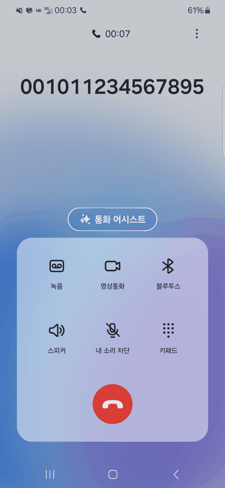
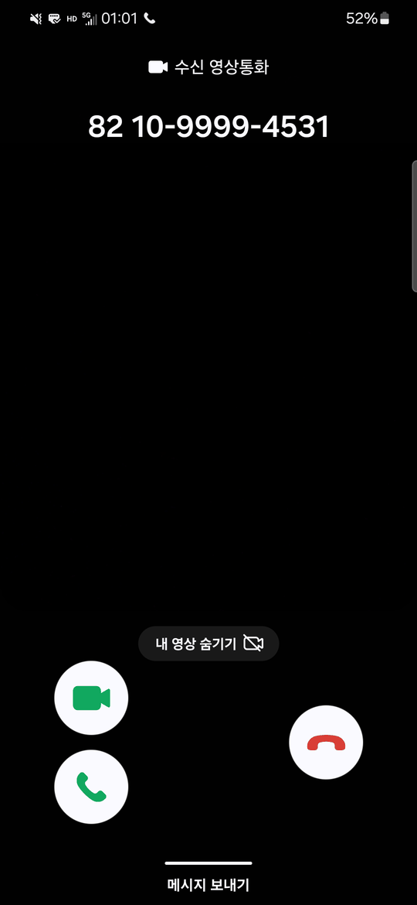
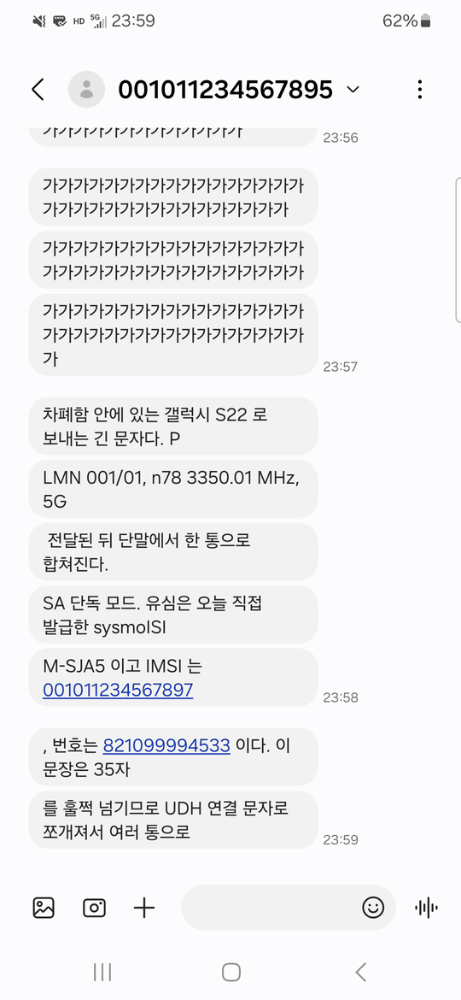
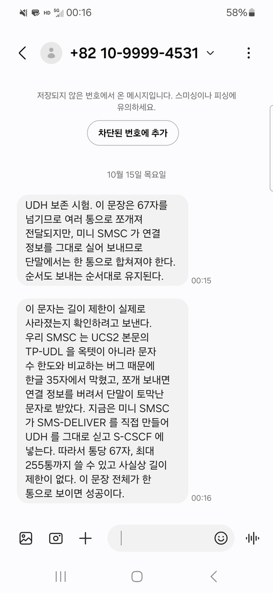
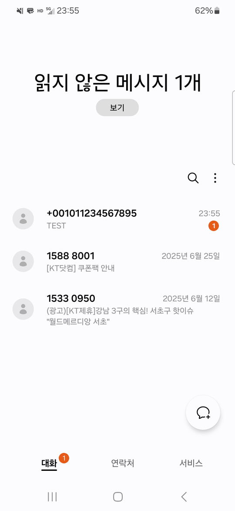
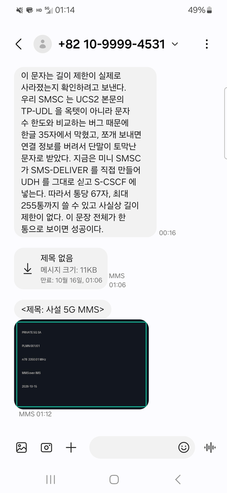
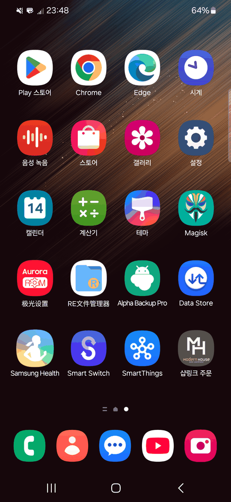
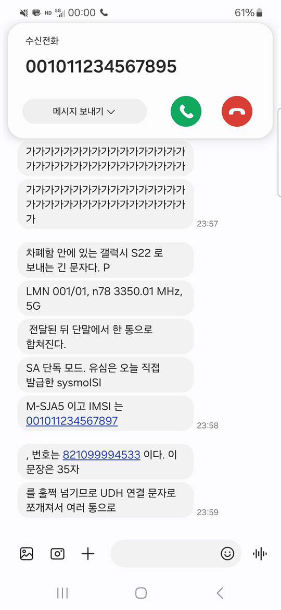

머리말: 이 책을 읽는 법
이 책이 하는 일
이 책은 사설 5G 망 하나를 처음부터 세우는 기록이다. 리눅스 한 대,
소프트웨어 라디오 하나, 모뎀 하나, SIM 카드 한 장으로 기지국과 코어망과
전화 시스템을 올리고, 실제로 전화와 문자와 영상통화가 오가는 것까지
확인한 과정을 그대로 적었다. 다 읽고 나면 같은 장비로 같은 것을 세울 수
있고, 더 중요하게는 왜 그렇게 생겼는지를 남에게 설명할
수 있다.
이동통신 기술이 특정 엔지니어의 전유물이어서는 안
된다. 이 책은 그 전제로 쓰였다. 휴대폰의 엔지니어 모드를 열면
쏟아지는 수십 개의 약어, 기지국 로그의 한 줄, 모뎀이 돌려주는 쉼표로
이어진 숫자들 — 전부 뜻이 있고, 전부 설명할 수 있는 것이다. 이 책은 그
모든 용어를 처음 나온 자리에서 풀고, 끝까지 하나도 남기지 않는다.
전제하는 지식과 전제하지
않는 지식
전제하는 것은 네트워크와 리눅스다. TCP/IP 헤더를
읽을 수 있고, 와이어샤크로 패킷을 열어 보고, 컨테이너를 띄우고, 로그를
따라갈 수 있으면 충분하다. 파이썬으로 바이트를 다룰 수 있으면 더
좋다.
전제하지 않는 것은 전자공학과 이동통신이다. 안테나,
주파수, 변조, 샘플 같은 말은 1장과 2장에서 처음부터 설명한다.
오실로스코프를 써 본 적이 없어도 된다. 이동통신 쪽 용어는 전부 독자가
이미 아는 것에 대응시켜 소개한다 — 코어망의 조각들은
RADIUS·LDAP·DHCP·NAT 서버의 조합이고, GTP-U 터널은 VXLAN 과 같은
발상이며, SIM 카드는 세계 최초로 대중화된 HSM 이다.
구성
Part I. 기초 (1~3장) 전파가 무엇이고, 그것을 숫자로
바꾸는 장치가 무엇이며, 그 숫자에 데이터를 어떻게 싣는가.
Part II. 망의 구조 (4~8장) 세대가 바뀐 이유, SIM
카드 안, 코어망의 조각들, 가입자 인증, IP 할당과 터널, 전화와 문자.
Part III. 구축과 실험 (9~18장) 실험실 구성, 기지국
설정 한 줄씩, **모뎀 제어 여섯 장(11~16)**, 시험과 측정, 그리고 막혔던
스물네 번의 사례집.
Part IV. 부록 용어집, 명령 레퍼런스, 설정 파일 맵,
전파법 고지.
처음 읽는다면 순서대로 읽는 것이 낫다. 뒤 장은 앞 장의 숫자와 용어를
그대로 쓴다. 특정 문제를 쫓고 있다면 18장 사례집부터 보고, 거기서
가리키는 장으로 거꾸로 올라가도 된다.
이 책의 표기
- 굵은 글씨는 그 장에서 처음 나온 전문 용어다. 바로
옆에 뜻이 붙어 있다.
코드는 실제로 이 실험실에서 친 명령이거나 설정 파일의
값이다.- [측정] 은 이 실험실에서 실제로 잰 값,
[추정] 은 계산으로 얻은 값이다. 둘을 섞지 않는다.
- [검증 필요] 는 우리가 확인하지 못한 것이다. 책에
마흔 곳 넘게 있고, 그것이 이 책이 아직 끝나지 않았다는 표시다.
- 그림은 전부 이 실험실에서 찍은 실제
화면이다. 차폐함을 닫으면 안을 볼 수 없으므로 단말 화면은
adb shell screencap 으로 꺼냈다. 재현한 그림이나 상상도는
없다.
- 🔎 로 시작하는 문단은 지금 당신의 장비에서 확인할 수 있는
것이다. 18 장 사례집에서는 사례마다 마지막에 붙는다.
- ⚠️ 는 장비나 법규에 문제가 되는 지점이다.
막다른 길과 틀린 가설을 지우지 않았다. 증상에서 원인까지 가는 길을
그대로 두는 것이 결론만 적는 것보다 쓸모 있기 때문이고, 그래서 13장이
따로 있다. 우리가 책을 쓰다가 책 안에서 찾아낸 오류도
지우지 않고 18.17 에 모아 두었다.
안전과 법규 — 먼저 읽을 것
이 책의 실험은 전파를 실제로 방사하는 부분을
포함한다.
- 이동통신 주파수는 나라마다 허가 대상이다. 허가 없이 공중에 송신하면
법을 어기는 것이다. 한국은 무허가 무선국 개설·운용이 3년 이하의 징역
또는 3천만 원 이하의 벌금이다(전파법 제84조. 부록 D).
- 이 책의 실험은 차폐함 안에서, 또는 케이블로 직결하고
감쇠기를 넣은 닫힌 경로를 전제한다. 닫힌 경로도 완전한 격리가
아니다(18장 사례 5).
- 공중 방사 시험은 해당 국가의 무선국 허가 절차를 거친 뒤에만
한다.
- 예시로 쓰는 PLMN 001/01 은 국제 표준이 시험용으로 정한 번호다. 상용
사업자의 번호와 주파수는 쓰지 않는다.
그리고 이 책에는 가입자 인증 키(Ki, OPc), 카드 관리자 번호(ADM), 개인
식별 번호(PIN/PUK)의 실제 값을 넣지 않았다. 그 넷은
<KI>, <ADM1> 같은 자리표시자로만
쓴다. 반대로 IMSI(001011234567895)와
전화번호(821099994531)는 실제로 우리가 쓴 값 그대로다.
시험용으로 비워 둔 PLMN 001/01 안에서 우리가 직접 발급한 번호라 가리는
의미가 없고, 로그와 설정을 그대로 실으려면 값이 맞아야 하기 때문이다.
당신의 번호 체계가 상용 번호와 겹친다면 그때는 가려야 한다. 당신의 실험
기록을 공개할 때 같은 선을 지키기를 권한다 — 우리는 그 선을 한 번
넘었고, 그 사건을 15.4 에 적어 두었다.
이 망이 실제로 한 일
이 책에 나오는 숫자는 모두 아래 구성에서 나왔다.
| 무선 |
n78 TDD, 중심 3350.01 MHz, 20 MHz, SCS 30 kHz, PRB 51, 1T1R |
| 기지국 |
srsRAN Project + B210 호환 SDR, USB 3.0 |
| 코어 |
Open5GS 5GC + Kamailio IMS, 컨테이너 23개(+ RAN 3개) |
| 단말 |
Quectel RM520N-GL 모뎀 + 직접 기록한 sysmoISIM-SJA5 |
| RF 경로 11 모뎀 |
동축 직결, 각 40 dB 감쇠기 두 가닥, 남은 단자 종단 |
| RF 경로 12 차폐함 폰 |
TX/RX 에 30 dB·RX2 에 감쇠기 체인 → SMA 관통 → 상자 안쪽 안테나 |
| 처리량 |
하향 55 / 상향 11 Mbps [측정] |
| 왕복 지연 |
단말 → UPF 38 ms [측정] |
| 전화·문자·영상 |
IMS 등록, 통화, SMS, MMS, 영상통화 전 구간 성립 [측정] |
| 차폐함 |
TOJOIN MS3020-A. 누설은 검출 한계 아래 [측정] |
차폐함은 2026-10-15 에 들어왔다. 상자 자체의 누설을 먼저 재서 검출
한계 아래임을 확인하고(17.5a), 그 안에서 실물 단말로
등록·데이터·전화·문자·MMS·영상통화를 확인했다. 구성이 둘이라는 점만
분명히 해 둔다. 처리량과 신호 세기는 모뎀을 동축으로 직결한
경로의 값이고, 차폐함 안의 숫자는 폰이 안테나로 붙은
경로의 값이다(지연·손실·통화·문자·MMS·영상). 두 구성의 처리량을
나란히 놓는 것은 아직 못 했다(17.6).
다음 장: 01. 전파와 주파수 — 보이지 않는 파동을 다루는
법
01. 전파와
주파수: 보이지 않는 파동을 다루는 법
1.1 이 장을 왜 맨 앞에 두는가
5G 망을 세우는 일은 겉으로 보면 네트워크 설정 작업처럼 보인다.
컨테이너를 띄우고, 설정 파일에 주소와 번호를 넣고, 로그를 읽는다. 실제로
이 책의 뒷부분 절반은 정확히 그런 작업이다. 그런데 그 모든 설정이 맞아도
신호가 안 잡히는 날이 온다. 그날 로그에는 아무 오류도 없다. 기지국은
"셀을 띄웠다"고 하고, 단말은 "찾는 중"이라고만 한다. 둘 사이에는
소프트웨어가 아니라 공기가 있고, 그 공기를 건너는 것이
전파다. 전파를 모르면 그 침묵을 해석할 방법이 없다.
이 책의 독자는 패킷을 열어 읽는 사람이다. 와이어샤크에서 TCP 재전송을
보면 무슨 일이 났는지 안다. 하지만 그 패킷이 실린 케이블 안에서 전압이
어떻게 변하는지, 그 전압 변화가 왜 케이블 없이도 공기 중을 날아갈 수
있는지는 생각해 본 적이 없을 것이다. 이 장은 그 "생각해 본 적 없는
부분"을 채운다.
목표는 숫자 두 개를 잇는 것이다. 하나는 우리 기지국 설정 파일의
tx_gain: 80 이고, 다른 하나는 우리 모뎀이 보고한 수신
세기다. 미리 말해 두면, 그 "보고한 세기"를 찾는 데 이 장에서 가장 긴
우회를 한다 — 모뎀이 화면에 보여 주는 숫자가 우리가 쓰는
안테나의 값이 아니었다. RSRP(Reference Signal Received Power,
기준 신호 수신 전력)는 단말이 "기지국이 늘 같은 세기로 뿌리는 기준
신호를 내 자리에서 얼마나 세게 받았나"를 재서 보고하는 값이다. 와이파이
스캔 결과의 signal 칸과 같은 자리에 있는 숫자인데, 중요한 차이가 하나
있고 그 차이가 이 장의 마지막 계산에서 28 dB 짜리 함정이 된다. 이 장을
다 읽으면 두 숫자 사이에 있는 케이블, 40 dB 짜리 감쇠기, 그리고 아직
설명되지 않은 30 dB 를 손으로 계산해 보일 수 있게 된다.
출발점은 독자가 이미 아는 것이다. 공유기 기판에서 UART(Universal
Asynchronous Receiver/Transmitter — 송신·수신·접지 세 핀으로 시리얼
콘솔을 따는 그 직렬 통신) 핀을 찍어 본 적이 있다면 오실로스코프 화면에서
전압이 위아래로 흔들리는 것을 봤을 것이다. 그 흔들림이 시간에 따라
규칙적으로 반복되면 그것을 파동이라고 부른다. 전파는 그
파동이 도선을 벗어나 공간으로 퍼져 나간 것이다. 이 한 문장이 이 장의
전부이고, 나머지는 그것을 숫자로 다루는 방법이다.
1.2 파동을 설명하는 세 개의
숫자
파동 하나를 완전히 설명하려면 세 가지 숫자가 필요하다. 얼마나 빨리
흔들리는가, 한 번 흔들리는 동안 얼마나 멀리 가는가, 그리고 전체가 얼마나
빨리 나아가는가. 이 셋은 서로 묶여 있어서 둘을 알면 나머지 하나가
정해진다.
첫 번째 숫자는 주파수다. 1초 동안 파동이 몇 번
오르락내리락하는지를 센 것이고, 단위는 **헤르츠(Hz)**다. 박수를 1초에 두
번 치면 2 Hz 다. 헤르츠 앞에 붙는 k·M·G 는 천·백만·십억 배를 뜻해서,
kHz(킬로헤르츠)는 1초에 천 번, MHz(메가헤르츠)는 백만 번,
GHz(기가헤르츠)는 십억 번이다. 우리 실험의 기지국은 3.35 GHz 로
송신하는데, 이것은 1초에 33억 5천만 번 흔들린다는 뜻이다. 이 숫자가 너무
커서 감이 안 올 텐데, 그 감이 안 오는 것 자체가 중요하다. 이렇게 빠른
흔들림은 어떤 기계 부품으로도 만들 수 없고, 오직 전자 회로 안의 전자만이
따라갈 수 있다. 그래서 전파는 전자 회로의 영역이다.
두 번째 숫자는 파장이다. 파동이 한 번 흔들리는 동안
공간에서 나아간 거리다. 바다의 파도로 치면 마루에서 다음 마루까지의
거리다. 기호로는 그리스 문자 람다(λ)를 쓴다.
세 번째 숫자는 속도다. 전파는 빛과 같은 종류의
현상이라서, 진공에서 빛의 속도인 초속 약 30만 km(3×10⁸ m/s)로 간다. 공기
중에서도 거의 같다.
이 셋의 관계는 곱셈 하나다. 1초에 f 번 흔들리고 한 번에 λ 만큼
가니까, 1초에 가는 거리는 f 곱하기 λ 이고 그것이 속도 c 다.
c = f × λ 따라서 λ = c / f
이 식에 우리 숫자를 넣어 보자. 속도 3×10⁸ 을 주파수 3.35×10⁹ 으로
나누면 약 0.09 m, 즉 9 cm 가 나온다. 우리 기지국이 쏘는
전파는 마루와 마루 사이가 9 cm 라는 뜻이다. 이 9 cm 라는 숫자는 뒤에서
두 번 다시 나온다. 안테나의 크기를 정할 때, 그리고 전파가 왜 벽을 잘 못
뚫는지 설명할 때다. 파장이 짧을수록 전파는 물체에 쉽게 막히고, 파장이
길수록 돌아서 간다. 라디오 방송(파장 수 미터)이 건물 뒤에서도 들리고 5G
밀리파(파장 1 cm 안쪽)가 손바닥에도 막히는 이유가 전부 이 파장 하나로
설명된다.
🔎 지금 당신의 장비에서. 파장은 나눗셈 한 번이다.
python3 -c "print(3e8/3.35e9)" # 0.0895… → 약 9 cm
그리고 자를 들고 와이파이 공유기 안테나를 재 보라. 2.4 GHz 의 파장은
12.5 cm 이고 흔한 막대 안테나는 그 4 분의 1 인 약 3 cm
다. 길이가 대충 그 근처면 이 절의 이야기가 당신 책상 위에서 이미
성립하고 있는 것이다.
1.3 주파수마다 주인이
있다: 대역이라는 말
전파는 공기 중을 지나가므로 누구나 쏠 수 있고, 그래서 아무나 쏘면
서로 섞인다. 같은 주파수로 두 사람이 동시에 보내면 받는 쪽은 둘 다 못
알아듣는다. 이것은 기술 문제가 아니라 자리 다툼의 문제이고, 그래서
해결책도 기술이 아니라 규칙이다. 각 나라의 정부가
주파수를 구간으로 잘라 용도와 주인을 정해 둔다. 이 구간 하나를
**대역(band)**이라 한다.
독자가 매일 쓰는 것에 대면 포트 번호다. 1~65535 라는
번호 공간이 있고, 22 는 SSH, 443 은 HTTPS 로 이미 주인이 정해져
있다. 아무 포트나 열면 충돌하고, 1024 미만은 루트만 열 수 있다.
전파도 똑같다. 번호 공간이 주파수이고, 구간마다 주인이 있고, 허가 없이
열면 불법이다. 다른 점은 하나뿐이다. 포트를 잘못 열면
EADDRINUSE 가 뜨고 끝나지만, 주파수를 잘못 열면
옆집 사람 통화가 끊긴다. 전파에는
EADDRINUSE 가 없다. 아무 경고 없이 그냥 둘 다 망가진다.
이동통신에 쓰는 대역은 국제 표준 기구인 3GPP 가 번호를 붙여 놓았다.
5G 대역은 앞에 n 을 붙여 n1, n3, n28, n78 처럼 부른다. 우리 실험이 쓰는
n78 은 3.3 GHz 에서 3.8 GHz 사이의 구간이고, 한국에서
5G 의 주력으로 쓰이는 대역이다. 그런데 n78 이라는 500 MHz 짜리 구간
전체를 한 사업자가 쓰는 것이 아니다. 한국은 그 안을 다시 세 사업자에게
100 MHz 씩 나눠 줬다. 대략 3.4~3.5 GHz 를 LG유플러스, 3.5~3.6 GHz 를 KT,
3.6~3.7 GHz 를 SKT(SK텔레콤)가 쓴다.
여기서 실험실 설계의 첫 번째 결정이 나온다. 우리는 n78 안에서도
사업자에게 할당되지 않은 아래쪽 구간, 3.35 GHz 근처에
기지국을 세웠다. 우리 채널은 3340~3360 MHz 를 차지하고, 가장 가까운 상용
할당(LG유플러스의 3400 MHz)과 40 MHz 떨어져 있다. 인터넷에서 찾을 수
있는 많은 예제 설정은 3.6 GHz 대의 값을 그대로 쓰는데, 그것은 상용
사업자의 한가운데다. 그 값으로 기지국을 켜면 그 사업자의 가입자들이 쓰는
주파수에 우리 신호를 얹는 것이고, 그것은 실제 통신 방해이자 법 위반이다.
이 책이 주파수 선택을 실험의 첫 단계로 두고 10장에서 다시 자세히 다루는
이유가 이것이다. 설정 파일의 숫자 하나가 "남의 집에 들어가는가"를
결정한다.
그래서 이 절은 설정 한 줄로 끝난다. 지금까지의
이야기가 gnb.yml 의 이 줄이 된다.
dl_arfcn: 623334 # 3350.01 MHz — n78 안, 상용 할당 아래 빈 자리
623334 라는 번호가 어떻게 3350.01 MHz 가 되는지는 3.6
에서 계산한다. 지금 가져갈 것은 하나다. 이 숫자를 고르는 일은
"비어 있는 포트를 고르는 일"과 같고, 예제 설정을 그대로 복사하는 것은
남이 쓰는 포트에 바인딩하는 것과 같다.
대역에 따라 전파의 성질도 다르다. 700~900 MHz 의 저대역은 파장이 40
cm 안팎이라 멀리 가고 건물 안까지 들어온다. 대신 쓸 수 있는 주파수 폭이
좁아서 속도가 낮다. 우리 n78 은 중간이다. 수백 미터를 가고 실내에도 어느
정도 들어오며, 폭이 넓어 속도도 낸다. 24 GHz 이상의 밀리파는 아주
빠르지만 파장이 1 cm 안쪽이라 나뭇잎 하나에도 막힌다. 사업자가 대역을
여러 개 사서 섞어 쓰는 이유가 이 성질 차이 때문이고, 16 장에서 볼
"Carrier Aggregation" 이 그것이다.
1.4 안테나: 전류를
전파로, 전파를 전류로
이제 전파가 어떻게 도선에서 공기로 나가는지를 봐야 한다. 그 장치가
안테나다. 안테나는 특별한 부품이 아니라 그냥 도선이다.
다만 길이가 파장에 맞춰진 도선이다.
도선에 교류 전류를 흘리면 도선 주위에 전기장과 자기장이 생겼다
사라졌다 한다. 전류가 느리게 흔들리면 그 장은 도선 가까이에서만 맴돌다
사라진다. 그런데 전류가 아주 빠르게, 즉 높은 주파수로 흔들리면 장이
사라지기 전에 다음 장이 만들어지고, 먼저 생긴 장은 도선에서 떨어져 나가
공간으로 밀려난다. 전기장이 자기장을 만들고 자기장이 다시 전기장을
만들면서 스스로 퍼져 나간다. 이것이 전파가 방사되는 원리이고, 19세기에
맥스웰이 수식으로 예측하고 헤르츠가 실험으로 보인 것이다. 주파수 단위에
헤르츠의 이름이 붙은 이유다.
그런데 아무 길이의 도선이나 전파를 잘 내보내는 것은 아니다. 그네를 밀
때를 생각해 보자. 그네가 돌아오는 박자에 맞춰 밀면 조금씩 밀어도 점점
높이 올라간다. 박자가 안 맞으면 힘만 들고 그네는 안 올라간다. 도선의
전류도 같다. 도선의 길이가 파장의 절반이면, 도선 한쪽 끝에서 다른 쪽
끝까지 전류가 왕복하는 시간이 전파의 한 주기와 맞아떨어진다. 그러면
전류가 박자에 맞춰 밀리듯 커지고, 전파가 효율적으로 나간다. 이것을
공명이라 하고, 반파장 길이의 도선 두 개를 가운데서 이은
안테나를 다이폴이라 부른다. 우리 3.35 GHz 에서 파장이 9
cm 였으니 다이폴 한쪽 팔은 약 2.2 cm, 전체 4.5 cm 다. 5G 단말 안에
들어가는 안테나가 손톱만 한 이유다.
안테나는 양방향으로 똑같이 동작한다. 전류를 넣으면 전파가 나가고,
전파가 닿으면 전류가 생긴다. 그래서 송신 안테나와 수신 안테나는 같은
부품이다. 우리 실험실은 그 안테나 쌍을 동축 케이블 두
가닥으로 대신했다. 모뎀의 네 안테나 단자(기판에
ANT1~ANT4 로 적혀 있다) 가운데 앞의 둘을 각각
40 dB 감쇠기를 지나 B210 쪽 단자에 묶었고, 남은 둘에는 50 Ω 종단기를
물렸다(자세한 배선은 9.2). 전파가 공기 대신 케이블 속을 간 것이고,
공기보다 훨씬 덜 샌다. 이것이 차폐함 없이도 실험할 수 있었던 이유이자,
그래도 상용 신호가 누설로 모뎀에 잡혔던 이유다.
케이블과 커넥터는 완벽한 차폐가 아니다. 그 누설이 얼마나 작은지를
말하려면 다음 절의 단위가 필요하다.
안테나에는 두 가지 성질이 더 있다. 하나는
방향성이다. 다이폴은 도선과 직각인 방향으로 가장 세게
내보내고 도선 끝 방향으로는 거의 안 나간다. 전파를 한 방향으로 모아 주는
안테나를 쓰면 그 방향에서는 더 세게 들리고 다른 방향에서는 약해진다. 이
"모아 주는 정도"를 이득이라 하고, 단위는 dBi("사방으로
고르게 내보내는 가상의 안테나에 비해 몇 dB 센가" — dB 는 바로 다음
절에서 푼다)다. 다른 하나는 편파인데, 전기장이 흔들리는
방향(세로인지 가로인지)이고, 송수신 안테나의 편파가 어긋나면 신호가 크게
준다. 지금 단계에서는 "안테나는 방향과 자세가 있다"는 것만 기억하면
된다.
1.5 dB: 곱셈을 덧셈으로
바꾸는 단위
여기서 많은 사람이 막힌다. 전파 쪽 숫자는 전부 dB 로 적혀 있는데, dB
가 무엇인지 제대로 설명을 들은 적이 없기 때문이다. 이 절을 천천히 읽으면
그 뒤로는 막히지 않는다.
먼저 왜 이런 단위가 필요한지부터 보자. 기지국이 내보내는 전력은 수십
와트다. 그 전파가 몇백 미터를 날아 단말에 닿을 때는 1 와트의 1조 분의 1
정도가 된다. 송신에서 수신까지 전력이 1조 배 줄어드는 것이다. 그 사이에
케이블에서 조금 줄고, 안테나에서 조금 늘고, 벽을 지나며 많이 줄고,
수신기에서 다시 증폭된다. 각 단계가 "몇 배"로 표현되니, 전체를
계산하려면 그 배수들을 전부 곱해야 한다. 수억, 수조 같은 숫자를 계속
곱하고 나누는 것은 사람도 힘들고 실수도 잦다.
그래서 전자공학은 오래전에 꾀를 냈다. 배수를 로그로 바꾸면
곱셈이 덧셈이 된다. 로그의 성질이 그렇다. 10배를 1 이라 하고
100배를 2 라 하면, 10배 곱하기 100배는 1 더하기 2 로 1000배, 즉 3 이
된다. 이렇게 배수를 로그로 바꾼 값에 10을 곱한 것이
**데시벨(dB)**이다.
dB = 10 × log₁₀(나중 전력 / 처음 전력)
이 정의에서 바로 따라 나오는 숫자 몇 개만 외우면 평생 쓴다. 10배는 10
dB 다. 100배는 20 dB 다. 2배는 약 3 dB 다(log₁₀2 ≈ 0.3 이니까). 반대로
절반은 −3 dB, 10분의 1은 −10 dB 다. 그리고 가장 중요한 것, dB 는
비율이지 양이 아니다. "신호가 20 dB 다"라는 말은 그 자체로는
뜻이 없다. "무엇에 비해" 20 dB 인지가 있어야 한다. 우리 실험의 40 dB
감쇠기는 "들어온 전력을 1만 분의 1로 줄여 내보내는 부품"이라는 뜻이고,
들어온 것이 얼마였는지는 말하지 않는다.
이 구분이 처음엔 헷갈리는데, 독자가 이미 쓰는 구분과 똑같다.
dB 는 상대 경로, dBm 은 절대 경로다.
../logs 는 "지금 어디 있느냐"를 알아야 뜻이 생기고
/var/logs 는 그 자체로 한 곳을 가리킨다. "40 dB 줄였다"는
../.. 처럼 기준점이 있어야 말이 되고, "−43
dBm" 은 /var/logs 처럼 그 자체로 한
값이다. 그리고 경로를 이어 붙이듯 둘을 섞을 수 있다 — 절대
경로에 상대 경로를 붙이면 절대 경로가 나오듯, dBm 에 dB 를 더하면 dBm 이
나온다. 참고로 이 파일시스템의 루트, 그러니까 전파 세계의 /
는 1 mW 다. 왜 하필 1 mW 냐고 물으면 답은 "전화
교환기를 만들던 사람들이 그렇게 정했으니까" 뿐이다.
이 비율을 절대량으로 바꾸려면 기준을 하나 정해야
한다. 전파 쪽에서는 1 밀리와트(mW)를 기준으로 삼고, 그 단위를
dBm 이라 쓴다. 0 dBm 이 정확히 1 mW 다. 10 dBm 은 10
mW, 30 dBm 은 1 W 다. 반대로 −30 dBm 은 1 mW 의 1000분의 1인 1 μW 다.
음수가 나온다고 전력이 음수인 것이 아니다. 1 mW 보다 작다는 뜻일 뿐이다.
단말이 받는 신호는 대개 −70 에서 −110 dBm 사이인데, −100 dBm 은 1 mW 의
100억 분의 1이다. 이렇게 작은 전력을 그냥 와트로 적으면 0.0000000000001
W 가 되고, 아무도 읽을 수 없다. dBm 은 그 숫자를 사람이 읽을 수 있게
만든 표기다.
이제 dB 와 dBm 을 섞어 쓸 수 있다. dBm 에 dB 를 더하거나 빼면 dBm 이
된다. 기지국이 0 dBm 으로 내보내고 케이블에서 2 dB 줄고 40 dB 감쇠기를
지나면 수신기에 들어오는 것은 0 − 2 − 40 = −42 dBm 이다. 곱셈과 나눗셈이
전부 덧셈과 뺄셈으로 바뀌었다. 이것이 dB 를 쓰는 유일한 이유이고, 이것만
알면 된다.
우리 실험의 숫자를 이 눈으로 보자. 기지국 설정의 tx_gain
은 송신 세기를 dB 로 적은 값이다. 이름은 "게인"이지만 증폭기를 더 세게
돌리는 값이 아니라 송신 감쇠량을 거꾸로 적은 것이고(89.75 − 감쇠), 그
정체는 2.6a 에서 UHD(USRP Hardware Driver, 이 SDR 의 드라이버
라이브러리) 소스로 확인한다. 65 에서는 모뎀이 셀을 못 찾았고, 80 으로
올리자 찾았다. 15 dB 는 약 30배다. 그런데 그다음 기록이 이상했다. 게인
80 으로 기지국을 다시 띄우고 모뎀이 처음 등록한 직후(한국 시간 23시
20분), 모뎀이 보고한 값은 이랬다.
+QENG: "servingcell","NOCONN","NR5G-SA","TDD",001,01,00066C000,1,1,623040,78,3,-110,-10,11,1,30
뒤에서 다섯째 칸이 RSRP 로 −110 dBm 이다. 그 뒤의 −10 은
RSRQ(Reference Signal Received Quality, 받은 기준 신호가 채널 전체
전력에서 차지하는 비율 — 간섭이 많을수록 나빠진다), 11 은 SINR(신호가
잡음과 간섭의 합보다 몇 dB 큰가, 1.7절에서 푼다), 마지막 30 은 셀 선택
여유(srxlev)다. 칸 하나하나는 16 에서 전부 푼다. 3분 뒤 23시 23분에 같은
명령을 쳤더니 이랬다.
+QENG: "servingcell","NOCONN","NR5G-SA","TDD",001,01,00066C000,1,1,623040,78,3,-71,-10,18,1,-
RSRP 가 −110 에서 −71 로, 39 dB 올랐다. 8천 배다. 케이블도 게인도
그대로였다. 처음 우리는 이것을 "등록 직후의 첫 값이라 측정이
부정확했다"로, 한때는 "게인을 올린 효과"로 적었다. 둘 다 틀렸다.
두 측정 사이에 우리가 한 일이 있었다. 데이터 세션을
올렸다. 23시 20분의 모뎀은 망에 등록만 된 상태였고(PDU 세션 없음), 23시
23분의 모뎀은 IP 를 받아 데이터를 주고받은 뒤였다. 그리고 마지막 칸을
보라. 세션이 없을 때는 30, 세션이 있을 때는
-(값 없음)다. 이 칸은 셀을 고르는 데 쓰는 값이라
쉬는 중일 때만 의미가 있다. 즉 두 줄은 서로 다른
상태에서 잰 것이다.
이 설명을 14시간 뒤에 우연히 검증했다. 책을 검수하던 중 모뎀의 데이터
세션이 죽은 것을 발견해 같은 명령을 쳤더니 -110,-10,10,1,29
가 나왔고, 세션을 다시 올리자 즉시 -71,-10,19,1,- 로
돌아왔다. 같은 케이블, 같은 게인, 14시간 간격의 독립 재현이다.
| 등록만, 세션 없음 |
−110 dBm |
11 |
30 |
첫날 23:20 |
| 세션 올린 뒤 |
−71 dBm |
18~19 |
- |
첫날 23:23~ |
| 세션이 죽어 있던 동안 |
−110 dBm |
10 |
29 |
이튿날 13:06 |
| 세션 복구 직후 |
−71 dBm |
19 |
- |
이튿날 13:08 |
그러니 −110 은 신호가 약해진 것이 아니라 모뎀이 쉬는 동안의
측정값이다. 쉬는 모뎀은 전력을 아끼려고 기준 신호를 드물게,
짧게만 잰다. 그렇게 잰 값이 왜 하필 39 dB 나 낮은지는 이 책이 답하지
못한다 [검증 필요 — 가설은 16.5 에]. 확실한 것은 쓸 때의 규칙이다.
엔지니어 모드의 신호 값은 "지금 데이터가 흐르는 중인가"를 함께
적지 않으면 비교할 수 없다. 이것을 모르고 −110 하나만 보고
"신호가 약하니 게인을 올리자"고 했다면 엉뚱한 방향으로 갔을 것이다.
12장의 측정이 전부 이 방식이다. 여기서 배울 것은 결론이 아니라 습관이다.
숫자를 dB 로 놓고 빼 보면 "설명되지 않는 차이"가 바로 보이고, 39 dB 처럼
큰 차이는 반드시 다음 조사 대상이 된다. 그리고 첫 측정값 하나로
판단하지 않는다 — 이 −110 하나만 보고 "신호가 너무 약하니
게인을 더 올리자"고 했다면 엉뚱한 방향으로 갔을 것이다. 12장의 측정이
전부 이 방식이다.
감쇠기 얘기도 이제 할 수 있다. B210 의 출력을 모뎀 입력에 직접 꽂으면
어떻게 될까. 모뎀의 수신 회로는 공기를 건너와 아주 약해진 신호를 받도록
만들어졌다. 거기에 송신기 출력을 그대로 넣으면 수신 회로가 포화되거나 타
버린다. 그래서 중간에 감쇠기를 넣어 전력을 일부러
줄인다. 40 dB 면 1만 분의 1이다. 그 결과 모뎀이 받는 신호는 공기 중에서
몇 미터 떨어진 기지국에서 오는 것과 비슷한 세기가 된다. 감쇠기는 "케이블
직결이 공기를 흉내 내게 만드는 부품"이고, 값은 송신 출력과 수신 감도를
보고 정한다.
🔎 지금 당신의 장비에서. dB 가 몸에 붙었는지 한 줄로 확인한다.
python3 -c "import math; print(10*math.log10(2), 10*math.log10(1/10000))"
# 3.0102… -40.0 → 2 배는 3 dB, 만분의 일은 −40 dB
우리가 케이블에 물린 40 dB 감쇠기가 전력을 만분의
일로 줄인다는 뜻이다. 1 mW 가 0.0001 mW 가 된다. 이 숫자가 1.8 절 링크
예산의 가장 큰 항이다.
1.6 전파는 왜 멀어질수록
약해지는가
케이블 안에서는 신호가 조금씩만 준다. 공기 중에서는 거리의 제곱으로
준다. 이유는 전파가 사방으로 퍼지기 때문이다.
전구를 생각하자. 전구에서 나온 빛은 모든 방향으로 퍼진다. 전구에서 1
m 떨어진 곳에서 손바닥에 닿는 빛의 양과, 2 m 떨어진 곳에서 닿는 양을
비교하면 후자가 4분의 1이다. 빛의 총량은 같은데 2 m 거리에서는 그 빛이
반지름 2 m 인 구의 표면 전체에 나뉘고, 구의 표면적은 반지름의 제곱에
비례하니 4배 넓은 면에 나뉘기 때문이다. 전파도 똑같다. 거리가 2배가 되면
같은 크기의 안테나가 받는 전력은 4분의 1, dB 로는 −6 dB 가 된다. 거리
10배면 100분의 1, −20 dB 다.
여기에 주파수가 한 번 더 끼어든다. 수신 안테나는 파장에 맞춘
크기이므로, 주파수가 높을수록 안테나가 작고, 작은 안테나는 공간에서
전파를 적게 "주워 담는다". 그래서 같은 거리라도 주파수가 2배면 받는
전력이 또 4분의 1이 된다. 이 두 효과를 합친 것이 자유 공간 경로
손실 공식이다. 거리를 km, 주파수를 MHz 로 넣으면 이렇게
된다.
손실(dB) = 20·log₁₀(거리_km) + 20·log₁₀(주파수_MHz) + 32.44
우리 주파수 3350 MHz 에서 10 m(0.01 km) 떨어진 경우를 계산하면, 첫
항이 −40, 둘째 항이 약 70.5, 상수 32.44 를 더해 약 63
dB 가 나온다 [추정]. 10 m 만 떨어져도 신호가 200만 분의 1로
준다는 뜻이다. 100 m 면 83 dB, 1 km 면 103 dB 다. 기지국이 30 dBm(1
W)으로 쏘면 1 km 밖에서는 −73 dBm 쯤 남는다. 거꾸로 보면 감쇠기의 뜻이
숫자로 나온다. 우리 경로(케이블 2~3 dB + 감쇠기 40 dB)의 손실 약 43 dB
는 자유 공간에서 3.35 GHz 로 약 1 m 를 날아간 것과
같다. 1.8절에서 계산하겠지만 우리 모뎀의 입력 총전력은 약 −43 dBm 인데,
1 W(30 dBm)짜리 진짜 기지국이라면 약 30 m 떨어진 곳에서
받는 세기다. 감쇠기 40 dB 가 "케이블 직결을 공기 흉내로 만든다"는 말의
실제 크기가 이것이다.
이 공식은 아무것도 없는 공간을 가정한다. 실제로는 벽, 바닥, 나무,
비가 더 깎아 먹는다. 콘크리트 벽 하나가 10~20 dB 를 더 뺏고, 사람 몸도
몇 dB 를 뺏는다. 그래서 상용망은 실내에 들어갈수록 느려지고, 통신사가
건물 안에 중계기를 넣는다. 주파수가 높을수록 이 추가 손실도 커진다.
3장에서 "밀리파는 왜 못 쓰이나"를 다시 만나게 된다.
1.7 잡음: 아무리
세게 보내도 넘을 수 없는 바닥
여기까지는 신호 얘기였다. 그런데 수신기는 신호만 받지 않는다. 모든
수신기에는 잡음이 깔려 있고, 신호가 그 잡음보다 충분히
크지 않으면 아무리 정교한 회로도 신호를 못 읽는다.
"바닥"이라는 말이 핵심이다. 개발자에게 익숙한 바닥이 하나 있다 —
부동소수점의 엡실론이다. 1.0 + 1e-20 을
계산하면 결과는 그냥 1.0 이다. 1e-20 이 없어서가 아니라,
표현할 수 있는 해상도 아래라서 더해도 아무 일이 일어나지
않는다. 수신기의 잡음 바닥이 정확히 그것이다. 신호는 분명히
도착했다. 안테나까지 왔다. 그런데 아무도 못 알아본다.
1.0 + 1e-20 을 계산한 CPU 가 1e-20 을 무시한 것처럼. 그래서
송신 전력을 올리는 것은 숫자를 키우는 일이고, 잡음을 줄이는 것은
엡실론을 낮추는 일이다. 둘은 다른 손잡이다.
가장 기본적인 잡음은 열잡음이다. 모든 물질 속의
전자는 온도 때문에 끊임없이 무작위로 흔들린다. 그 흔들림이 저항 양 끝에
미세한 전압으로 나타나고, 수신기는 그것을 신호와 구별하지 못한다.
열잡음은 온도와 대역폭에만 비례하는데, 실온(약 290 K)에서 1 Hz 폭당
−174 dBm 이다. 이 숫자는 외울 가치가 있다. 전파 통신의
모든 한계가 여기서 시작하기 때문이다.
대역폭이 넓어지면 잡음도 그만큼 많이 들어온다. 20 MHz 폭을 쓰면 1 Hz
의 2000만 배이고, dB 로는 10·log₁₀(2×10⁷) ≈ 73 dB 다. 그래서 20 MHz
수신기의 잡음 바닥은 [추정] −174 + 73 = −101 dBm 이다.
실제 수신기는 자기 회로가 더하는 잡음이 몇 dB 있어서(이것을 잡음 지수라
한다) 바닥이 −95 dBm 쯤으로 올라온다. 이제 앞 절의 숫자가 뜻을 가진다.
20 MHz 전체로 받는 총전력이 −100 dBm 이면 잡음 바닥과 거의 같아서 신호가
잡음에 묻힌다. 다만 RSRP 를 이 바닥에 바로 대면 안
된다. RSRP 는 20 MHz 전체가 아니라 30 kHz 짜리 부반송파
하나에 실린 전력이기 때문이다(그 이유는 3장에서 본다).
부반송파 하나 폭의 잡음은 −174 + 10·log₁₀(30,000) ≈ −129
dBm 이고, 수신기 잡음 지수 6~8 dB 를 더하면 약 −122 dBm 이다.
같은 잣대로 놓으면 RSRP −71 dBm 은 잡음보다 약 50 dB 위다. 비교할 때는
항상 같은 폭끼리 비교한다. 이 규칙을 어기면 숫자가 수십
dB 씩 틀어진다.
이 "신호가 잡음보다 얼마나 큰가"를 신호 대 잡음비,
줄여서 SNR 이라 하고 dB 로 적는다. 이동통신에서는 다른
셀의 신호가 간섭으로 더해지므로 "신호 대 간섭 더하기 잡음비",
SINR 이라 부른다. 우리 모뎀이 보고한 SINR 19 dB 는 "내
셀 신호가 잡음과 간섭의 합보다 19 dB, 약 80배 크다"는 뜻이다.
SNR 이 중요한 이유는 그것이 속도의 상한을 정하기
때문이다. 1948년 섀넌(Claude Shannon)이 증명한 정리에 따르면, 대역폭 B
와 신호 대 잡음비 S/N 이 주어졌을 때 오류 없이 보낼 수 있는 최대
비트율은 B·log₂(1 + S/N) 이다. 이 식은 두 가지를 말한다. 첫째, 대역폭을
두 배로 하면 속도가 두 배가 된다. 둘째, 신호를 두 배로 해도 속도는
조금밖에 안 는다(로그 안에 있으니까). 그래서 5G 가 빨라진 비결은 주로
"더 넓은 대역폭"이었고, 그래서 3.5 GHz 와 밀리파처럼 넓은 폭을 확보할 수
있는 높은 주파수로 올라간 것이다. 1.2절의 "파장이 짧으면 벽에 막힌다"와
여기의 "높은 주파수라야 넓은 폭을 얻는다"가 서로 당기는 힘이고, 5G
설계의 모든 타협이 그 사이에 있다.
같은 정리가 12 장에서 만날 전화선 모뎀의 역사도 설명한다. 전화선은
폭이 3 kHz 남짓이고 SNR 이 30 dB 쯤이라, 섀넌 상한이 약 30 kbps 다.
1994년의 V.34 모뎀이 33.6 kbps 에서 멈춘 것은 기술이 모자라서가 아니라
물리학이 거기까지였기 때문이다. 그 뒤의 56k 모뎀은 이 한계를 "넘은" 것이
아니라 채널을 바꿨다. 전화국 쪽을 디지털로 직결해
아날로그 변환 한 번에서 생기던 잡음을 없앴고, 그래서 S/N 이 커진 다른
채널의 상한을 쓴 것이다(12). 한계를 못 넘을 때 해커가 하는 일 — 문제의
가정을 바꾸는 것 — 을 공학자도 똑같이 한다.
1.8
tx_gain 80 에서 수신 세기까지: 링크 예산과, 숫자를 잘못 읽은 이야기
이제 이 장의 처음 약속을 지킬 수 있다. 송신기에서 수신기까지 dB 를
더하고 빼 가는 이 계산을 링크 예산이라 한다. 가계부처럼
버는 것(증폭, 안테나 이득)과 쓰는 것(케이블, 감쇠기, 공기)을 한 줄씩
적는다. 우리 경로는 공기가 없으니 단순하다.
[추정] B210 송신 출력, tx_gain 80 ≈ 0 dBm (20 MHz 전체, 셀이 꽉 찼을 때)
− 동축 케이블·커넥터 − 2~3 dB
− 감쇠기 − 40 dB
─────────────────────────────────────────────────────────────────────
= 모뎀 입력 총전력 (예상) ≈ −43 dBm (20 MHz 전체)
− 부반송파 612 개로 나눔 10·log₁₀(51 PRB × 12) = 27.9 dB − 27.9 dB
─────────────────────────────────────────────────────────────────────
= 부반송파 하나의 전력 (예상 RSRP) ≈ −71 dBm
첫 줄의 0 dBm 은 데이터시트에서 나온 추정이다. B210 의 송신 출력은
최대 게인(89.75 dB)에서 10 dBm 이상이라고 적혀 있고, 게인 80 은 거기서
약 10 dB 아래다. 그리고 마지막 단계가 이 장에서 가장 중요한 한 줄이다.
RSRP 는 부반송파 하나의 전력이다. 3장에서 보겠지만 우리
20 MHz 셀은 30 kHz 폭의 부반송파 612 개로 쪼개져 있고, 전력은 그 612
개에 나뉜다. 그래서 RSRP 는 수신 총전력보다 10·log₁₀(612) ≈ 27.9 dB 낮게
나오는 것이 정상이다. 와이파이의 signal 값(RSSI)은 채널 전체의 전력이라
이 나눗셈이 없다.
둘을 섞는 것은 "서버 전체 처리량"과 "워커 한 개의 처리량"을
같은 칸에 적는 것과 같다. 워커 612 개가 초당 612 건을 처리하는
서버에서 "처리량 1" 을 보고 느리다고 말하면 안 된다. 그 1 은 워커 하나의
값이기 때문이다. RSRP 가 그 "워커 하나" 쪽 숫자이고, 전체를 보려면 27.9
dB 를 되더해야 한다. 이 나눗셈을 모르면 "왜 이렇게
약하지?"라는 엉뚱한 질문을 하게 된다.
예상은 −71 dBm 이 나왔다. 그리고 모뎀의
AT+QENG="servingcell" 이 보여 준 RSRP 도 −71
dBm 이었다. 우리는 이것을 "계산과 측정이 맞아떨어졌다"고
적었다. 두 숫자가 맞으면 경로의 부품들(케이블, 감쇠기, 피그테일, 포트)이
생각대로 동작한다는 증거라고.
그 둘이 맞아떨어진 것은 우연이었다.
수신 경로가 네 개라는 것을
잊었다
모뎀에는 수신 경로가 네 개 있다. 휴대폰이 안테나 여러 개로 받아
합치는 그 구조이고, 우리 모뎀은 단자 네 개(ANT1~ANT4)를 가진다. 그런데
AT+QENG 는 RSRP 를 한 개만 보여 준다. 네
개 중 어느 것인가.
Quectel 에는 경로별로 따로 묻는 명령이 있다. 책을 검수하며 처음 쳐
봤다.
AT+QRSRP -> +QRSRP: -112,-103,-102,-71,NR5G
AT+QSINR -> +QSINR: 11,19,-20,-20,NR5G
매뉴얼의 칸 순서는
<PRX>,<DRX>,<RX2>,<RX3> 다.
PRX(Primary Receive, 주 수신)가 첫째 단자,
DRX(Diversity Receive, 다이버시티 수신 — 같은 신호를
다른 안테나로 한 번 더 받아 합치는 경로)가 둘째 단자, 나머지 둘이
셋째·넷째 단자다. 우리 배선에서는 앞의 둘에 케이블, 뒤의 둘에 종단기가
물려 있다. 우리 배선과 나란히 놓고, 1.7절에서 계산한 부반송파당 잡음
바닥(−123 dBm 쯤)으로 "그 RSRP 라면 SINR 이 얼마여야 하는가"를 구해
붙이면 이렇게 된다.
| PRX |
ANT1 |
케이블 + 40 dB |
−112 dBm |
11 dB |
11.2 dB |
✅ |
| DRX |
ANT2 |
케이블 + 40 dB |
−103 dBm |
19 dB |
20.2 dB |
✅ |
| RX2 |
ANT3 |
50 Ω 종단 |
−102 dBm |
−20 dB |
21.2 dB |
❌ |
| RX3 |
ANT4 |
50 Ω 종단 |
−71 dBm |
−20 dB |
52.2 dB |
❌ |
읽는 법. SINR −20 은 이 모뎀이 보고할 수 있는 범위의
밑바닥이고, "유효한 측정이 없다"는 뜻이다. 종단기를
물린 두 포트가 그 값을 내는 것은 당연하다 — 들어오는 신호가 없으니까.
그런데 그 둘 중 하나(RX3)의 RSRP 칸에 −71 이 적혀 있다.
쓰지 않는 경로의 갱신되지 않은 찌꺼기 값이다. 그리고
AT+QENG 가 RSRP 자리에 보여 주던 숫자가 바로 그 −71 이었다.
SINR 자리의 19 는 DRX 의 값이다.
즉 엔지니어 모드 한 줄의 RSRP 와 SINR 이 서로 다른 안테나의
값이었다. 우리는 그 둘을 한 신호의 세기와 품질로 읽고, "RSRP 가
−71 이면 이론상 SNR 이 51 dB 여야 하는데 왜 19 밖에 안 나오나"로 30 dB
를 설명하려 했다. 설명할 것이 애초에 없었다. 케이블이 물린 두 경로는
RSRP 와 SINR 이 1 dB 안에서 서로 맞는다. 모순은 우리가
만든 것이었다.
앞 절(1.5)의 −110 도 같은 설명이 된다. 쉬는 중의 AT+QENG
가 보여 준 −110/11 은 PRX(−112/11) 그대로다. 신호가 39
dB 변한 것이 아니라, AT+QENG 가 어느 경로를 보여
줄지 바꾼 것이다. 왜 상태에 따라 다른 경로를 보여 주는지는
모른다 [검증 필요].
그래서 남은 진짜 질문
경로별로 다시 보면 예산과 측정의 차이는 이렇다. 예산은 −71 dBm 을
예상했고 [추정], 케이블이 물린 경로의 실제 값은 −103(ANT2)과
−112(ANT1) 이다 [측정]. 즉 30~40 dB 가
모자란다. 감쇠기 하나가 더 들어간 것과 비슷한 크기다. 후보는
셋이다. 복제 보드의 실제 송신 출력이 데이터시트의 ">10 dBm" 보다 한참
낮을 수 있다. 모듈 쪽 초소형 커넥터(MHF4)와 피그테일의 접촉 손실이 클 수
있다(9.2, 10.8). 감쇠기의 실제 값이 표기와 다를 수 있다. 어느 것인지
가리는 실험은 17.5 의 게인 스윕이다 — 게인을 10 dB 내렸을 때 PRX·DRX 가
10 dB 따라 내려가면 그 경로가 우리 신호를 받고 있다는 뜻이고, 안
움직이면 받고 있는 것이 우리 신호가 아니라는 뜻이다(18장 사례 5 의
누설).
그리고 두 경로 사이의 9 dB 차이(ANT1 −112, ANT2 −103)도 설명되지
않는다. 같은 규격의 감쇠기를 같은 길이의 선에 물렸는데 9 dB 가 다르다.
커넥터 체결 상태가 가장 유력한 후보다 [검증 필요].
중요한 것은 이 모든 것이 망의 성능과는 무관하다는
점이다. 우리 망은 이 세기로 잘 돌았다. DRX 의 SINR 19 dB 는 3장에서
계산한 상한 72 Mbps 에 실측 55 Mbps 가 들어맞는 조건이고, 신호·품질·속도
세 숫자가 서로 모순이 없다. 틀린 것은 망이 아니라 우리가 읽은
숫자였다.
이 절이 남기는 규칙 셋
첫째, 수신 경로가 여럿인 장치에서 "수신 세기" 한 숫자를 믿지
않는다. 경로별로 묻는 명령이 있으면 그것을
쓴다(AT+QRSRP, AT+QSINR, QMI 의 신호 정보).
휴대폰 엔지니어 모드에도 보통 PRx/DRx 가 따로 뜬다.
둘째, 한 줄 안의 숫자들이 서로 맞는지 본다. RSRP 와
SINR 은 같은 신호의 세기와 품질이므로, 잡음 바닥을 알면 서로를 검산할 수
있다. 맞지 않으면 둘 중 하나가 다른 것을 재고 있다.
셋째, 계산이 측정과 맞았다고 기뻐하기 전에 그 측정이 무엇을
쟀는지 확인한다. 우리 예산 −71 과 화면의 −71 이 맞아떨어진 것은
종단기를 물린 포트의 찌꺼기 값과 우연히 같았기
때문이다. 이 책에서 가장 비싼 교훈이고, 그래서 이 절을 지우지 않고 과정
그대로 남겼다.
1.9 이 장의 요약
이 장에서 쓴 말을 한 자리에 모은다. 본문을 읽었다면 각 줄이 왜 그런지
설명할 수 있어야 한다.
| 주파수 f |
1초에 흔들리는 횟수(Hz) |
대역 선택, 주파수 계획(10장) |
| 파장 λ = c/f |
한 번 흔들리는 동안 가는 거리. 3.35 GHz 에서 9 cm |
안테나 크기, 투과력 |
| 대역 |
정부와 3GPP 가 정한 주파수 구간. n78 = 3.3~3.8 GHz |
상용 할당 회피 |
| 안테나·공명 |
반파장 도선이 전류와 전파를 바꾼다 |
케이블 직결이 안테나를 대신 |
| dB |
배수의 로그. 10배=10 dB, 2배≈3 dB. 비율이지 양이 아니다 |
모든 세기 계산 |
| dBm |
1 mW 기준 절대 전력. 0 dBm = 1 mW |
RSRP, 송신 출력 |
| 감쇠기 |
정해진 dB 만큼 줄이는 부품. 40 dB = 1/10000 |
수신기 보호, 공기 흉내 |
| 경로 손실 |
거리 2배에 −6 dB, 주파수 2배에 −6 dB. 3350 MHz 10 m ≈ 63 dB |
셀 크기, 실내 손실 |
| 열잡음 |
−174 dBm/Hz. 20 MHz 에서 바닥 −101 dBm [추정] |
수신 가능 하한 |
| SNR / SINR |
신호 ÷ (잡음+간섭). 19 dB ≈ 80배 |
속도 상한(섀넌) |
| RSRP |
부반송파 하나의 수신 전력. 20 MHz 총전력 = RSRP +
27.9 dB. 경로가 넷이니 AT+QRSRP 로 따로 볼 것 |
링크 예산, 16 |
| 링크 예산 |
송신 출력에서 손실을 빼고 이득을 더한 가계부. 예상 −71 dBm RSRP
[추정], 실측은 −103(ANT2)·−112(ANT1) [측정] — 30~40 dB 미설명 |
배선 검증, 17장 |
점검 문제
- 900 MHz 와 3.35 GHz 의 파장을 각각 구하고, 어느 쪽 다이폴 안테나가
더 긴지 말하라.
- 신호가 −60 dBm 에서 −90 dBm 으로 떨어졌다. 몇 배로 줄었는가? 거리가
몇 배 멀어진 것과 같은가(자유 공간 기준)?
- 송신 출력 20 dBm, 케이블 손실 3 dB, 감쇠기 40 dB, 수신 안테나 이득 0
dBi 일 때 수신 전력은? 그 값이 20 MHz 잡음 바닥(−101 dBm)보다 몇 dB
위인가?
- 대역폭을 두 배로 하면 잡음 바닥은 몇 dB 올라가는가? 그런데도 속도는
왜 두 배가 되는가?
- 우리 모뎀의 DRX 경로 RSRP −103 dBm 을 20 MHz 총전력으로 바꾸고, 그
값을 "30 dBm 기지국이 자유 공간에서 몇 m 떨어져 있는 것과 같은가"로 바꿔
말하라. RSRP 를 그대로 넣으면 몇 m 가 나오고, 왜 그 답은 틀렸는가?
+QRSRP: -112,-103,-102,-71 과
+QSINR: 11,19,-20,-20 만 보고 "네 포트 중 어디에 케이블이
물렸는지"를 판정하라. 근거가 되는 칸은 무엇인가?- 링크 예산과 실측의 30~40 dB 차이를 가를 실험을 설계하라. 무엇을
바꾸고 어느 경로의 숫자를 기록하며, 결과가 어떻게 나오면 어느 가설이
맞는가?
직접 해보기
- 집 Wi-Fi 공유기의 수신 세기를 같은 방과 벽 하나 너머에서 재라.
차이를 dB 로 적고, 그 벽이 몇 dB 를 뺏었는지 말하라. 수신 세기는 보통
RSSI(Received Signal Strength Indicator, 수신 신호 세기 표시값)라는
이름으로 dBm 단위로 뜬다. 그 채널에 들어온 전력을 잡음까지 몽땅 합친
값이라, 16 에서 볼 RSRP 보다 거칠다.
- 2.4 GHz 와 5 GHz 를 같은 자리에서 비교하라. 경로 손실 공식으로
예상한 차이(약 6 dB)와 실측이 맞는지 보라. 안 맞으면 어떤 가정이 깨진
것인가?
- 기지국 설정의
tx_gain 을 5 dB 씩 바꾸며
AT+QRSRP 와 AT+QSINR 네 칸을
전부 기록하라. 게인을 내린 만큼 따라 내려가는 경로가 우리
신호를 받는 경로다. 움직이지 않는 칸은 찌꺼기이거나 누설이다. 이 표
하나가 1.8절의 30~40 dB 질문과 18장 사례 5 의 누설을 같이 판정한다. (⚠️
케이블 직결·감쇠기 장착 상태에서만)
- 1.5절의 표를 직접 재현하라. 세션이 없는 상태에서
AT+QENG="servingcell" 을 세 번 재고, QMI(모뎀을 바이너리로
제어하는 프로토콜. 14)로 세션을 올린 뒤 다시 세 번 재라. RSRP 와 마지막
칸이 함께 바뀌는가? 그다음이 우리가 답하지 못한 부분이다. 세션을
내린 뒤 값이 다시 −110 으로 돌아가기까지 얼마나
걸리는가(우리가 10분간 1분마다 재 보니 그 시간 안에는 돌아오지 않았다).
돌아오는 순간이 모뎀이 깊은 절전으로 들어가는 순간이다.
다음 장: 02. SDR과 B210 — 전파를 숫자 목록으로 바꾸는 장치,
그리고 그 숫자가 USB 를 얼마나 차지하는가
02. SDR과 B210:
전파를 숫자 목록으로 바꾸는 장치
2.1 소프트웨어가 전파를
만든다는 말의 뜻
1장에서 전파는 파동이고, 안테나는 그 파동을 전류로 바꾸는 도선이라고
했다. 그러면 이 책의 독자인 소프트웨어 엔지니어가 코드로 전파를
만든다는 말은 무슨 뜻일까. 코드는 숫자를 다루고 전파는 연속적인
물리 현상인데, 둘 사이를 무엇이 잇는가.
답은 하나의 단어로 압축된다. 샘플이다. 연속적으로
변하는 전압을 아주 짧은 간격으로 재서 숫자 목록으로 만들면, 그 목록은
메모리에 올라가고, 배열이 되고, 함수의 인자가 된다. 그 순간부터 전파는
소프트웨어의 영역이다. 반대로 숫자 목록을 다시 전압으로 되돌려 안테나에
넣으면 전파가 나간다. 이 두 변환만 하드웨어가 하고, 그 사이의 모든 일 —
어떤 파형을 만들지, 받은 파형에서 무엇을 읽어낼지 — 을 소프트웨어가 하는
무선 장치를 **SDR(Software Defined Radio)**이라 부른다.
이 발상이 왜 혁명적이었는지는 예전 라디오와 비교하면 보인다. 옛
라디오는 주파수를 바꾸려면 다이얼을 돌려 코일과 축전기의 값을 바꿨고,
변조 방식은 회로 자체가 정했다. 변조란 소리 같은 정보를 전파의 어느
성질에 얹느냐인데, AM(Amplitude Modulation, 진폭 변조)은 파동의 세기를
소리에 맞춰 키웠다 줄였다 하고 FM(Frequency Modulation, 주파수 변조)은
파동의 빠르기를 소리에 맞춰 살짝 흔든다. AM 을 듣는 라디오와 FM 을 듣는
라디오는 회로가 달랐다. 다른 방식을 받으려면 다른 회로가 필요했다.
납땜으로 굳은 기능이었다. SDR 은 그 굳은 부분을 최소한으로 줄였다.
안테나에서 온 아주 약한 전파를 증폭하고, 주파수를 낮추고, 숫자로 바꾸는
가장 바깥 껍질만 남기고 나머지를 전부 프로그램으로
옮겼다. 그 껍질을 RF(Radio Frequency, 무선 주파수)
프론트엔드라고 부른다. 같은 B210 이 오늘은 5G 기지국이
되고 내일은 FM 수신기가 되고 모레는 항공기 신호 분석기가 되는 것은,
바뀌는 것이 프로그램뿐이기 때문이다.
소프트웨어 쪽에 같은 역사가 있다. 예전에는 동영상을 재생하려면
하드웨어 코덱 칩이 필요했다. MPEG-2 칩이 박힌 보드는
MPEG-2 만 재생했고, 새 코덱이 나오면 보드를 바꿔야 했다. 지금은
ffmpeg 이 그 일을 한다 — 칩은 범용 CPU 하나뿐이고 코덱은
코드다. 새 코덱이 나오면 보드를 사는 게 아니라 apt upgrade
를 한다. SDR 은 전파에서 같은 전환을 한 것이다. 전용 회로를
코드로 바꾸면, 회로를 바꾸는 일이 파일을 바꾸는 일이 된다.
독자가 아는 것으로 치면 사운드카드가 가장 가깝다. 사운드카드는
마이크의 전압을 숫자로 바꾸고 숫자를 스피커의 전압으로 바꾼다. 그 숫자로
무엇을 할지 — 녹음할지, 음정을 바꿀지, 악기를 합성할지 — 는 전부
소프트웨어다. SDR 은 "주파수가 수십억 배 높은 사운드카드"다. 그래서
다루는 숫자의 양이 수십억 배 많고, 그것이 이 장 후반의 USB 대역폭 문제로
이어진다.
2.2 샘플: 연속을 끊어서
숫자로
전압이 시간에 따라 매끄럽게 변한다고 하자. 컴퓨터는 매끄러운 것을
저장할 수 없다. 저장할 수 있는 것은 "어느 순간에 얼마였다"는 숫자뿐이다.
그래서 일정한 간격으로 전압을 재서 숫자 하나씩을 남긴다. 이 한 번 잰
값이 샘플이고, 재는 일을 샘플링, 1초에
몇 번 재는지를 샘플링 레이트라 한다. 단위는 Hz 이지만
전파 쪽에서는 보통 "초당 백만 샘플"을 뜻하는 MS/s 로
적는다.
이 변환을 하는 칩이 **ADC(아날로그-디지털 변환기)**다. 반대로 숫자를
전압으로 되돌리는 칩이 DAC 다. B210 안에는 둘 다 들어
있고, 각각 61.44 MS/s 까지 돌릴 수 있다.
여기서 자연스러운 질문이 나온다. 얼마나 촘촘히 재야 원래 파형을 잃지
않는가. 너무 띄엄띄엄 재면 그 사이에서 파형이 어떻게 움직였는지 모르게
된다. 이 질문에 대한 답이 나이퀴스트 정리다. 파형에
들어 있는 가장 빠른 흔들림의 두 배 이상의 속도로 재면,
그 숫자 목록만으로 원래 파형을 완전히 되살릴 수 있다. 두 배보다 느리게
재면 되살릴 수 없을 뿐 아니라, 있지도 않은 가짜 파형이
나타난다. 이 현상을 에일리어싱이라 한다. 빠르게 도는
바퀴를 동영상으로 찍으면 바퀴가 천천히 거꾸로 도는 것처럼 보이는 것이
정확히 같은 현상이다. 카메라의 프레임 레이트가 바퀴 회전의 두 배에 못
미쳐서, 프레임 사이의 움직임을 잘못 이어 붙인 것이다.
그래서 샘플링 레이트는 "다루려는 신호의 폭"으로 정해진다. 20 MHz 폭의
5G 신호를 다루려면 적어도 그 두 배인 40 MS/s 가 필요할 것처럼 보인다.
그런데 우리 설정은 23.04 MS/s 다. 두 배가 아니라 1.15배다. 이것이 가능한
이유는 다음 절의 I/Q 에 있다.
2.3 I/Q: 왜 샘플 하나가
숫자 두 개인가
소프트웨어 엔지니어가 SDR 을 처음 만질 때 가장 낯선 것이 이것이다.
수신 버퍼를 열어 보면 샘플이 실수가 아니라 복소수로
들어온다. complex<float> 배열이다. 전압은 실수인데 왜
복소수가 필요한가.
파동 하나를 완전히 적으려면 세기만으로는 부족하다. 지금
파동이 어느 시점에 있는가, 즉 마루인지 골인지 올라가는 중인지
내려가는 중인지를 알아야 한다. 이것을 위상이라 한다.
그리고 전파에 데이터를 싣는 방법의 대부분이 바로 이 위상을 바꾸는
것이다(3장의 QAM(Quadrature Amplitude Modulation, 직교 진폭 변조) 이
그렇다. 세기와 위상을 함께 바꿔 한 번에 여러 비트를 싣는 방식이다).
세기만 재면 위상을 잃고, 위상을 잃으면 데이터를 잃는다.
왜 하필 두 개인지는 게임 좌표를 떠올리면 바로
풀린다. 2D 에서 점 하나를 적는 방법은 둘이다. (거리, 각도)
로 적거나 (x, y) 로 적거나. 담긴 정보는 완전히 같다. 그런데
두 이동을 합칠 때 차이가 난다.
(거리, 각도) 끼리는 그냥 더할 수 없어서 삼각함수를 불러야
하지만, (x, y) 끼리는 각각 더하면 끝이다.
그래서 게임 엔진은 위치를 (x, y) 로 들고 다닌다.
파동도 똑같다. 파동 하나는 (세기, 위상) 이라는 점이고,
전파에서는 파동을 쉴 새 없이 더하고 곱해야 한다 —
부반송파 수백 개를 겹치고(3장), 채널이 비튼 것을 되돌리고, 간섭을 빼야
한다. (세기, 위상) 으로 들고 있으면 매번 삼각함수다. 초당
2,304만 번 atan2 를 부르고 싶은 사람은 세상에 없다.
(I, Q) 로 들고 있으면 전부 덧셈과 곱셈이다. I/Q 는
파동의 (x, y) 다. 복소수인 것도 같은 이유다 —
복소수 곱셈이 "크기는 곱하고 각도는 더한다"를 한 번에 해 주기 때문에,
주파수를 옮기는 일(2.4 의 상향·하향 변환)이 곱셈 한 번이 된다.
이제 기계적인 정의로 돌아간다. 위상을 함께 재는 방법은 기준 파동 두
개를 쓰는 것이다. 하나는 그냥 기준 파동이고, 다른 하나는 그것을 90도
밀어 놓은 파동이다. 들어온 신호를 첫 번째 기준과 곱해서 평균 낸 값을
I(In-phase, 동위상), 두 번째 기준과 곱해서 평균 낸 값을
**Q(Quadrature, 직교)**라 부른다. 이 두 숫자가 있으면 신호의 세기는
√(I²+Q²) 로, 위상은 atan2(Q, I) 로 되찾을 수 있다. 세기와 위상을 2차원
평면의 한 점으로 표현한 것이고, 그 평면을 복소평면으로 보면 I 가 실수부,
Q 가 허수부다. 그래서 I + jQ 라는 복소수로 적는다.
// 샘플 하나의 모양. 실수 둘이 한 쌍이다.
typedef struct { int16_t i; int16_t q; } iq_sample_t;
이렇게 하면 앞 절의 의문이 풀린다. I/Q 샘플은 한 번에 두 개의 숫자를
갖기 때문에, 실수 샘플 하나보다 두 배의 정보를 담는다.
그래서 신호 폭의 두 배가 아니라 신호 폭과 같은 샘플링
레이트면 충분하다. 20 MHz 폭이면 20 MS/s 의 복소 샘플로 되살릴 수 있다.
우리 23.04 MS/s 가 20 MHz 보다 살짝 큰 것은, 신호 가장자리를 자르는
필터가 칼날처럼 깔끔하지 못해서 양옆에 여유를 둔 것이다. 이 여유를
보호 대역이라 한다.
🔎 이것이 정말인지 눈으로 보려면 B210 에서
rx_samples_to_file 로 1초만 받아 저장하고, 파이썬에서
numpy.fromfile(..., dtype=numpy.complex64) 로 읽어 보라.
길이가 샘플링 레이트와 같고, 각 원소가 복소수다.
numpy.abs() 가 세기, numpy.angle() 이
위상이다.
2.4 B210 의 안: 네 개의
부품이 하는 일
Ettus Research 의 USRP B210 은 SDR 입문자가 가장
많이 쓰는 장치다. 우리가 쓴 것은 정품이 아니라 LibreSDR 이라는 호환
복제품인데, 회로 구조가 같아서 설명은 똑같이 통한다. 다만
FPGA(Field-Programmable Gate Array, 전원을 넣을 때마다 회로 설계도를
받아 그 회로로 변신하는 칩. 바로 아래 네 부품 중 둘째다) 가 더 큰 칩이라
전용 이미지를 올려야 하고, 정품 이미지를 올리면 초기화
중 멈춘다. 이 점은 2.5절에서 다시 본다.
안에는 크게 네 부품이 있다. 첫째는 AD9361 이라는 RF
트랜시버 칩이다. 1장의 안테나 전류를 받아 증폭하고, 3.35 GHz 의 신호에서
3.35 GHz 라는 운반 주파수를 통째로 빼서 0 Hz 를
중심으로 한 신호로 내린 뒤(이것을 하향 변환이라 하고, 중간 단계 없이 0
Hz 로 바로 내리는 이 방식을 직접 변환 또는 zero-IF(IF 는 Intermediate
Frequency, 옛 라디오가 거치던 중간 주파수 — 그것이 0 이라는 뜻) 라
부른다), ADC 로 숫자를 만든다. 0 Hz 중심으로 내리면 20 MHz 폭의 신호는
−10 MHz 에서 +10 MHz 사이에 놓이는데, 음의 주파수와 양의 주파수를
구별하려면 2.3절의 I/Q 가 필요하다. 두 절이 여기서 만난다. 송신 때는
반대로 한다. 70 MHz 부터 6 GHz 까지 다룰 수 있어서 우리 3.35 GHz 가 그
안에 든다(Ettus B200/B210 데이터시트: RF 70 MHz–6 GHz, 12 bit ADC/DAC,
최대 61.44 MS/s, 순간 대역폭 56 MHz, 송신 출력 >10 dBm, 수신 잡음
지수 <8 dB). 둘째는 FPGA 다. ADC 에서 나온 숫자를
받아 정리하고, 타이밍을 맞추고, USB 로 보낼 준비를 한다. 셋째는
Cypress FX3 라는 USB 컨트롤러다. FPGA 가 준비한 숫자를
USB 3.0 으로 PC 에 밀어 넣는다. 넷째는 RF 포트들인데,
TRXA/TRXB 는 송수신 겸용, RXA/RXB 는 수신 전용이다. 우리는 TRXA 에 모뎀
ANT1 을 케이블로 묶었다.
이 네 부품 중 소프트웨어가 건드리는 것은 FPGA 와 FX3
다. 둘 다 전원을 넣는다고 바로 일하지 않는다. 각자 프로그램을 받아야
한다.
2.5
전원을 넣어도 바로 안 되는 이유: 펌웨어와 비트스트림
B210 을 USB 에 꽂고 lsusb 를 치면 처음에는 "Cypress
WestBridge" 라는 이름이 뜬다. Ettus 도 B210 도 아니다. FX3 칩이 공장
상태로 깨어난 것이고, 이 상태에서는 USB 로 "나는 아직 프로그램이
없다"고만 말한다.
디스크 없는 서버를 PXE 로 부팅해 본 적이 있다면 그림이 같다.
전원만으로는 아무것도 못 하고, 네트워크에서 부트 이미지를 받아야 비로소
자기 역할을 한다. 전원을 끊으면 다시 빈 상태로 돌아간다. B210 도 그렇다.
다만 두 단계이고, 둘째 단계가 소프트웨어 쪽에 대응물이
없다.
그 다음 UHD(Ettus 의 드라이버 라이브러리)가 두 단계로 장치를 깨운다.
먼저 FX3 에 펌웨어를 넣는다. FX3 가 USB 3.0 으로
대화하고 FPGA 와 데이터를 주고받는 방법이 든 작은 프로그램이다. 이것이
들어가면 장치는 USB 에서 한 번 사라졌다가 다시
나타난다. 이것을 재열거라 하는데, 이때 비로소
"USRP B200" 이라는 이름과 시리얼 번호가 보이고, 케이블과 포트가 허락하면
USB 3.0 속도로 붙는다. 그 다음 FPGA 에 비트스트림을
넣는다. 여기가 대응물이 없는 곳이다. 펌웨어는 "CPU 에 줄 프로그램"이라
익숙하지만, 비트스트림은 프로그램이 아니라 배선도다.
펌웨어가 "이거 실행해"라면 비트스트림은 **"너 이제 이렇게 생겨라"**다.
CPU 에 코드를 주는 것이 아니라 CPU 를 그 코드 모양의 회로로 다시 만드는
쪽에 가깝다. 그래서 FPGA 에는 "실행 속도"라는 말보다 "몇 개를 동시에
하느냐"가 어울린다. FPGA 는 프로그램을 실행하는 칩이 아니라 회로
자체를 설계대로 바꾸는 칩이고, 그 설계도가 비트스트림이다.
이것이 들어가야 샘플이 흐른다.
이 두 단계는 전원이 꺼지면 사라진다. 그래서 USB 를 뽑았다 꽂으면 다시
WestBridge 로 돌아간다. 우리 실험에서 같은 장치가 어떤 때는 "USRP B200 /
USB 3.00" 으로, 어떤 때는 "WestBridge / USB 2.00" 으로 보였던 것은
고장이 아니라 이 로드 전후의 차이였다. USB 2.0 으로 보인다고
해서 포트가 USB 2.0 이라고 단정할 수 없다. 먼저 로드한 뒤에
다시 봐야 한다.
LibreSDR 얘기를 여기서 마무리한다. 정품 B210 의 FPGA 는 Xilinx 의
Spartan-6 계열이고, 우리 복제품(LibreSDR B220 mini,
~/.uhd/uhd.conf 의 주석)은 한 세대 뒤의 Artix-7 계열
XC7A200T 를 썼다. 판매처는 같은 이름의 더 싼 판(B210 mini)에 같은
Artix-7 의 작은 칩 XC7A100T(100T 는 논리 셀 규모를 뜻한다) 와 AD9361 의
축소판인 AD9363 을 넣어 팔기도 하니, 복제품을 살 때는 칩 이름부터
확인한다. 비트스트림은 칩 모델에 맞춰 만들어지므로 정품용 비트스트림은
복제품 FPGA 에 안 맞는다 — 계열이 다르면 더 말할 것도 없다. UHD 가
정품용을 올리려다 실패하면 fx3 state 5 같은 오류로 멈춘다.
그래서 우리 설정은 fpga=/mnt/srsran/libresdr_alphafox02.bin
으로 복제품 전용 이미지 경로를 박아 두었고, ~/.uhd/uhd.conf
에 시리얼별로 같은 매핑을 적어 두었다. 복제 장치를 쓸 때 가장 먼저
확인할 것이 이것이다.
2.6 숫자는 얼마나
무거운가: USB 대역폭 계산
이 절은 이 장에서 가장 중요하다. 우리가 실험에서 하루 가까이 헤맨
원인이 여기 있었고, 그 원인을 계산으로 미리 알 수
있었기 때문이다.
샘플 하나의 크기부터 정하자. I 와 Q 가 각각 16비트 정수면 샘플 하나는
4바이트다. 그런데 우리 설정에는 otw_format: sc12 가 있다.
"over-the-wire 형식을 12비트 복소 정수로" 라는 뜻이다. I 를 12비트, Q 를
12비트로 줄여 3바이트에 담는다. 정밀도를 버리는 것처럼
들리지만, 2.4절의 AD9361 은 ADC 자체가 12비트다. 게다가 우리 설정은
10장에서 볼 것처럼 마스터 클럭과 샘플레이트가 같아서(1:1) FPGA 가 샘플을
솎아 내며 정밀도를 늘리는 과정도 없다. 수신 쪽에서 sc16 은 12비트짜리
값에 0 네 비트를 붙여 보내는 것이고, sc12 는 그 0 을 빼고 보내는 것이다.
버릴 것이 원래 없었다. USB 대역폭만 4분의 3 으로
줄어든다.
초당 흐르는 양은 샘플링 레이트 곱하기 샘플 크기다. 23.04 MS/s 에
3바이트를 곱하면 69.12 MB/s 다 [추정]. 그런데 이것은 한
방향이다. 기지국은 보내면서 동시에 받아야 한다. 우리 셀은 TDD(Time
Division Duplex, 시분할 양방향 — 같은 주파수를 시간으로 나눠 송신과
수신에 번갈아 쓰는 방식. 3 장에서 격자로 본다)라 송신과 수신이 시간으로
갈리지만, UHD 는 양쪽 스트림을 항상 열어 두므로 USB 에는 송신 69 MB/s 와
수신 69 MB/s 가 동시에 흐른다. 합이 약 138
MB/s 다.
이제 USB 와 비교한다. USB 2.0 의 이론 속도는 480 Mbps, 즉 60 MB/s 다.
그런데 USB 는 패킷마다 머리와 확인 응답이 붙고, 벌크 전송의 효율이
완벽하지 않아서 실제로 밀어 넣을 수 있는 양은 40 MB/s
안팎이다. 138 을 40 으로 나누면 3.5 다. USB 2.0 은 필요한 양의
3분의 1도 못 나른다.
그러면 무슨 일이 생기는가. 송신 쪽에서는 FPGA 가 DAC 에 넣을 샘플을
PC 에서 받아야 하는데 제때 안 온다. DAC 는 멈출 수 없으니 빈 구간을 0
으로 채우거나 이전 값을 반복한다. 전파에 구멍이 뚫린다. 이것을
언더플로라 하고 UHD 는 콘솔에 U 를 찍는다.
수신 쪽에서는 ADC 가 만든 샘플을 PC 가 제때 가져가지 못해 FPGA 버퍼가
넘친다. 샘플이 버려진다. 오버플로이고 O 가
찍힌다. 우리가 본 것은 그보다 심했다. USB 전송 자체가 실패해서
usb rx6 transfer status: LIBUSB_TRANSFER_ERROR 가 60만 줄
찍혔다. 그 세션은 단말이 셀을 한 번 보는 것까지는 됐다.
SSB 는 아주 가끔만 보내도 단말이 잡기 때문이다. 하지만 등록에 필요한
연속 송수신은 불가능했다.
USB 3.0 은 5 Gbps, 625 MB/s 이고 실효로도 300 MB/s 를 넘는다. 138
MB/s 가 여유롭게 들어간다. 그래서 이 장치는 USB 3.0 이 아니면 쓸
수 없다. 대역폭을 10 MHz 로 줄여도 필요량은 69 MB/s 로 USB 2.0
의 실효를 넘는다. 5 MHz 로 줄이면 35 MB/s 로 간신히 들어가지만, 그러면
3장에서 볼 자원 블록이 4분의 1로 줄어 속도도 4분의 1이 된다. 계산이
선택을 대신해 준다.
💡 우리가 겪은 함정은 포트가 아니라 케이블이었다.
B210 의 USB 커넥터는 USB 3.0 Micro-B 인데, 이 커넥터는 모양이 USB 2.0
Micro-B 를 품고 있어서 2.0 케이블도 물리적으로 꽂힌다.
꽂히면 동작도 한다. 단지 2.0 속도로 동작한다. 펌웨어를 올려도 재열거
뒤에 bcdUSB 2.10 이 뜨고 Operating over USB 2.
라고 UHD 가 말한다. 우리는 그 메시지를 보고도 포트와 보드를 먼저
의심했고, 반나절 뒤에야 케이블을 바꿨다. 교훈은 하나다.
lsusb -t 에서 장치 줄에 5000M 이 보이기
전까지는 USB 3.0 이라고 믿지 말 것.
2.6a 샘플 한
개가 지나는 길: 누가 어디서 처리하는가
패킷을 아는 사람에게 가장 빠른 설명은 경로도다. 기지국이 만든 복소수
하나가 안테나 단자에 전압으로 나타나기까지, 그리고
tx_gain: 80 이라는 숫자가 그 길의 어디에 작용하는지를 한
장에 놓는다.
[호스트] srsgnb 컨테이너 안 gnb 프로세스
lower_phy_tx 스레드 OFDM 심볼을 IFFT 로 만들어 complex<float> 배열로 (3장)
│ UHD 의 tx_streamer::send() — 여기서 float → sc12(3바이트) 변환, 송신 예정 시각 붙임
▼
libusb → 커널 usbfs → xHCI 호스트 컨트롤러 (lsusb -t 의 Driver=usbfs, 5000M)
│ USB 3.0 벌크 전송, 송신·수신 각 약 69 MB/s
════════╪══════════════════ USB 케이블 (여기가 2.0 이면 끝) ══════════════════
[B210] ▼
Cypress FX3 USB 패킷 ↔ 병렬 버스(GPIF) 로 FPGA 와 주고받음 (펌웨어가 이 일을 한다)
▼
FPGA 패킷을 샘플 흐름으로 풀고, 붙어 온 시각에 맞춰 내보냄
시각이 이미 지났으면 버리고 "late", 줄 게 없으면 "underflow" (10.4)
▼
AD9361 12비트 DAC → 아날로그 필터 → 3.35 GHz 로 올림(상향 변환)
→ 송신 감쇠기 ← tx_gain 이 작용하는 곳
▼
TX/RX A 단자 → 동축 → 감쇠기 40 dB → 모뎀 ANT1
tx_gain 은 이름과 달리 증폭기를 더 세게 돌리는 값이
아니다. UHD
소스(host/lib/usrp/common/ad9361_driver/ad9361_device.cpp)를
열면 이렇게 되어 있다.
/* Each gain step is -0.25dB. ... Max gain (so zero attenuation) is 89.75. */
const double atten = AD9361_MAX_GAIN - value;
const uint32_t attenreg = uint32_t(atten * 4);
_io_iface->poke8(0x073, attenreg & 0xFF);
_io_iface->poke8(0x074, (attenreg >> 8) & 0x01);
AD9361 의 송신 출력단에는 감쇠기가 있고, UHD 는
"게인 80" 을 "최대에서 89.75 − 80 = 9.75 dB 깎아라"로 바꿔 0.25 dB 단위
정수(39)로 칩의 레지스터 0x073·0x074 에 쓴다.
그래서 게인의 최댓값이 89.75 라는 어색한 숫자이고, 0.25 dB 보다 잘게는
못 바꾼다. 수신 쪽 rx_gain 은 다르다. 같은 파일에서 수신
게인은 0~76 의 게인 표 번호(gain index)로 레지스터
0x109 에 쓰이고, 칩이 그 번호에 따라 저잡음 증폭기와 믹서와
필터의 증폭을 한꺼번에 조절한다. 1장의 링크 예산에서 "게인 80 이면 최대
출력보다 약 10 dB 아래" 라고 한 근거가 이 한 줄이다.
경로도에서 소프트웨어가 손대는 곳은 위의 세 칸(gnb, UHD, 커널)과
FX3·FPGA 에 올리는 이미지뿐이다. 그 아래는 전부 칩이다. 그리고 USB
케이블이 경계다. 이 선 위에서는 샘플이 패킷이고,
아래에서는 전압이다. 와이어샤크로 USB 를
잡으면(usbmon) 이 선을 지나는 샘플 패킷을 실제로 볼 수
있다. 초당 69 MB 라 몇 초만 잡아도 수백 MB 가 되니 짧게.
2.7 장치가 두 대일 때:
시리얼로 못 박기
우리 실험실에는 B210 이 두 대 있었다. 한 대는 모뎀과 케이블로 묶여
있고, 다른 한 대는 안테나가 달려 있었다. 소프트웨어는 둘을 어떻게
구별하는가. UHD 는 장치를 시리얼 번호로 식별한다.
펌웨어가 올라간 뒤 uhd_find_devices 를 치면
serial: 5JKRCXX 처럼 나온다.
기지국 설정의 device_args 에 시리얼을 쓰지 않으면 UHD 는
먼저 발견한 장치를 쓴다. 발견 순서는 USB 가 열거하는
순서이고, 그것은 꽂은 순서, 포트 위치, 재부팅에 따라 바뀐다. 즉
어느 장치로 송신할지가 우연에 맡겨진다. 우리는 그
우연으로 안테나 달린 쪽을 잡아 9분 동안 공중으로 송신했다. 상용 할당
밖의 주파수였고 출력도 낮았지만, 그것이 누구에게도 영향이 없었다는
증거는 아니다. 우리는 그것을 확인할 방법이 없다. 조건이 조금만 달랐다면
— 업스트림 예제의 3.6 GHz 설정이었다면 — 상용망 한가운데였다.
그래서 이 책의 첫 번째 안전 원칙은 이것이다. 송신 장치는 설정
파일에 시리얼로 못 박는다.
device_args: type=b200,serial=5JKRCXX,fpga=/mnt/srsran/libresdr_alphafox02.bin,...
그리고 송신 전에 반드시 lsusb | grep -i ettus 로 장치가
몇 대 붙어 있는지 세고, 시리얼이 설정과 같은지 본다. 안테나 달린 장치는
실험 중 USB 에서 아예 분리해 두는 것이 가장 확실하다. 설정 실수가 있어도
물리적으로 송신이 불가능해지기 때문이다.
2.8 이 장의 요약
| SDR |
RF 껍질만 하드웨어, 나머지는 소프트웨어 |
같은 장치가 코드에 따라 무엇이든 된다 |
| 샘플 / 샘플링 레이트 |
전압을 일정 간격으로 잰 숫자 / 초당 횟수 |
모든 처리의 출발점 |
| 나이퀴스트 |
최고 주파수의 2배 이상으로 재야 한다 |
모자라면 가짜 신호(에일리어싱) |
| I/Q |
세기와 위상을 두 숫자로. 복소수 |
데이터는 위상에 실린다. 폭과 같은 레이트면 충분 |
| sc12 |
샘플 하나 3바이트. ADC 가 12비트라 수신 손실 없음 |
USB 계산의 기준 |
| tx_gain |
실은 AD9361 송신 감쇠량의 반대. 89.75 − 감쇠, 0.25 dB 단위 |
링크 예산(1.8), 게인 스윕(17장) |
| 138 MB/s [추정] |
23.04 MS/s × 3 B × 양방향 |
USB 2.0(실효 ~40)으로는 불가. 3.0 필수 |
| 언더플로/오버플로 |
샘플 공급 부족 / 회수 지연 |
U/O, 전송 오류 |
| 펌웨어 → 비트스트림 |
FX3 프로그램 → FPGA 설계도. 전원 끊기면 소멸 |
로드 전 USB 2.0 은 정상 |
| 시리얼 고정 |
serial= 로 장치 지정 |
엉뚱한 장치 송신 방지 |
점검 문제
- 샘플링 레이트 30.72 MS/s, sc16(4바이트)이면 양방향 합은 몇 MB/s
인가? USB 3.0 으로 되는가?
- 실수 샘플 40 MS/s 와 복소 샘플 20 MS/s 는 담는 정보량이 같은가? 왜
그런가?
- 전원을 켠 직후 B210 이 "WestBridge" 로 보이는 이유를 두 단계 로드로
설명하라.
- 정품 비트스트림을 복제 장치에 올리면 왜 실패하는가?
device_args 에 시리얼이 없을 때 생기는 위험을 우리
사례로 설명하라.
직접 해보기
lsusb -t 를 로드 전과 uhd_usrp_probe 후에
각각 찍어, 같은 장치의 버스 번호와 속도가 어떻게 바뀌는지 비교하라.uhd_usrp_probe 출력에서
Operating over USB 3. 줄을 찾아라. 케이블을 2.0 짜리로 바꿔
꽂고 같은 줄이 어떻게 바뀌는지 보라.channel_bandwidth_MHz: 10, srate: 11.52 로
바꾼 복사본 설정으로 gNB 를 띄우고(대역폭과
샘플레이트는 짝이 맞아야 기동된다), 이번에는 일부러 USB 2.0 케이블로
연결해 콘솔에 U/O 가 얼마나 찍히는지 1분간
세라. 2.6 의 계산(69 MB/s, USB 2.0 실효 약 40 MB/s)이 맞는지 확인하는
실험이다. (⚠️ 케이블 직결·감쇠기 상태에서만)
다음 장: 03. OFDM(직교 주파수 분할 다중)과 5G NR(New Radio, 5G
무선 구간 규격의 공식 이름) 물리 계층 — 3.35 GHz 한 줄기 위에 수백 명을
태우는 법
03.
OFDM과 5G NR 물리 계층: 한 줄기 전파에 수백 명을 태우는 법
3.1 이 장이 답하는 질문
앞 두 장에서 전파가 무엇이고 그것을 어떻게 숫자로 바꾸는지를 봤다.
이제 그 숫자에 무엇을 어떻게 실어 보내는가를 본다.
기지국 로그에 찍힌
bw=20 MHz, 1T1R, dl_arfcn=623334, SCS 30 kHz, 51 PRB 같은
말이 이 장을 읽고 나면 그림으로 보여야 한다.
이 장의 용어는 전부 한 가지 질문에서 나온다. 3.35 GHz 라는
하나의 전파 위에 수백 명의 단말이
동시에 서로 다른 데이터를 어떻게 주고받는가. 전화선
모뎀은 선 하나에 상대가 하나였다. 전통적인 와이파이(802.11ac 까지)는 한
번에 한 명이 채널 전체를 쓰고 나머지는 기다린다(와이파이 6 부터는 이
장의 방식을 일부 빌려 왔다). 이동통신은 그렇게 하면 수백 명이 서로
기다리느라 아무도 못 쓴다. 그래서 전파를 잘게 나눠 여러 명이
동시에 쓰는 방법이 필요했고, 5G 가 고른 방법이 이 장의
내용이다.
3.2 나누는 두 가지 축:
시간과 주파수
전파를 여러 명이 나눠 쓰는 방법은 결국 두 가지다. 하나는
시간으로 나누는 것이다. 첫 1밀리초는 A 가, 다음
1밀리초는 B 가 쓴다. 다른 하나는 주파수로 나누는
것이다. 20 MHz 폭을 작은 구간으로 잘라 A 는 아래쪽 구간, B 는 위쪽
구간을 같은 시간에 쓴다. 라디오 방송국들이 서로 다른 주파수로 동시에
방송하는 것이 후자다.
5G 는 둘 다 쓴다. 시간을 잘게 썰고 주파수도 잘게
썰어서, 둘이 교차하는 격자를 만든다. 격자의 한 칸은 "이
시간 조각에 이 주파수 조각"이고, 거기에 데이터 한 조각을 싣는다.
기지국은 매 순간 "이 칸들은 A 에게, 저 칸들은 B 에게" 하고 나눠 준다. 이
격자가 5G 물리 계층의 전부이고, 이 장의 나머지는 그 격자의 칸 크기와
이름을 정하는 이야기다.
시간 → 슬롯 0 슬롯 1 슬롯 2 슬롯 3 (슬롯 하나 = 0.5 ms = 심볼 14개)
주파수 ↑ ┌──────────┬──────────┬──────────┬──────────┐
PRB 50 │ C │ A │ A │ B │
… │ C │ A │ A │ B │
PRB 20 ├──────────┼──────────┼──────────┼──────────┤
… │ A │ B │ C │ B │
PRB 0 │ A │ B │ C │ B │
└──────────┴──────────┴──────────┴──────────┘
한 칸을 확대하면: 부반송파 12개 × 심볼 14개 = 자원 요소(RE) 168개
기지국은 "이 슬롯의 PRB 몇 번부터 몇 번까지는 누구" 단위로 나눠 준다 (3.5)
3.3
주파수를 촘촘히 나누는 기술: OFDM(직교 주파수 분할 다중)
주파수를 여러 구간으로 나눠 동시에 쓰려면 한 가지 걸림돌이 있다. 옆
구간의 신호가 내 구간으로 번져 들어온다. 라디오 방송이 주파수를 멀찍이
떨어뜨려 놓는 이유다. 하지만 이동통신은 폭이 아까워서 구간을 바싹 붙이고
싶다. 그러면 번짐을 어떻게 막는가.
답은 번짐을 막는 것이 아니라 번져도 상관없게 만드는
것이다. 각 구간의 파동 모양을 아주 특별하게 맞추면, 한 구간의
신호를 받아서 정해진 시간 동안 적분했을 때 옆 구간의 신호는
정확히 0 이 되게 할 수 있다. 서로 영향을 주지 않는 이
관계를 수학에서 직교라 한다. 직교하는 구간들은 아무리
바싹 붙여도, 심지어 서로 겹쳐도 분리된다. 이 방식이 **OFDM(Orthogonal
Frequency-Division Multiplexing, 직교 주파수 분할 다중)**이고, 이때 각
구간을 부반송파라 부른다.
독자에게 가장 가까운 그림은 큰 파일을 조각내서 동시에 받는
것이다. 큰 파일을 한 줄로 받지 않고 여덟 조각으로 나눠 여덟 개
연결로 동시에 받은 뒤 이어 붙이는 것 — 다운로드 가속기가 하는 일이고, 큰
파일을 올릴 때 쪼개서 올리는 것도 같은 수법이다. OFDM 이 전파에 한 일이
그것이다. 20 MHz 라는 넓은 띠를 30 kHz 짜리 612
조각으로 쪼개 동시에 싣는다.
그런데 파일을 조각낼 때는 공짜로 따라오는 것이 하나 있다.
조각마다 바이트 범위가 정해져 있고 서로 겹치지 않으니,
따로 받아도 합칠 때 섞일 걱정이 없다. 1~100 번 바이트를 받는 연결과
101~200 번을 받는 연결은 서로를 모른 채 일해도 된다. 여러 워커가 같은
테이블에 동시에 쓰면서도 락이 필요 없는 이유와 같다 — 파티션
키가 안 겹치기 때문이다.
전파에서는 그 보장이 공짜가 아니다. 주파수 조각은 바이트 범위처럼
칼로 자른 경계가 없어서, 옆 조각의 신호가 내 조각으로 번져 들어온다.
그 번짐이 있어도 섞이지 않게 만드는 수학적 성질이
직교이고, 그래서 OFDM 은 "겹치지 않게 떨어뜨리는" 대신 "겹쳐도 분리되게
설계하는" 쪽을 골랐다. 참고로 같은 발상이 5 장의 코어에서 다시
나온다 — 거기서는 연결 하나 안에 요청 수천 개를 동시에 흘리고,
섞이지 않게 요청마다 번호를 붙인다. 쪼개서 동시에 보내고 섞이지 않게
표시해 두는 것, 이 책에서 계층만 바꿔 세 번 되풀이되는 수법이다. 비유를
하나 더 들자. 여러 사람이 한 방에서 동시에 노래를 부르는데, 각자의 음
높이가 정확히 정수 배 관계에 있고 모두 같은 박자로 시작하고 끝난다면,
녹음을 듣고 한 사람의 목소리만 깨끗이 뽑아낼 수 있다. 음 높이가
조금이라도 어긋나면 웅웅거리며 섞인다. OFDM 의 부반송파는 그 "정수 배
관계"를 정확히 지키는 노래들이다.
이 노래들을 한꺼번에 만드는 방법이 놀랍도록 간단하다. 각 부반송파에
실을 값을 배열에 넣고 **역 푸리에 변환(IFFT)**을 한 번 돌리면, 모든
부반송파가 합쳐진 시간 파형이 나온다. 수신 쪽은 그 파형에 **푸리에
변환(FFT)**을 돌려 배열을 되찾는다. 소프트웨어 엔지니어에게는 이렇게
보인다.
송신: data[0..N-1] --IFFT--> 시간 샘플 N개 --DAC--> 전파
수신: 전파 --ADC--> 시간 샘플 N개 --FFT--> data[0..N-1]
2장의 I/Q 샘플이 여기서 쓰인다. data[k] 는 복소수이고,
그 세기와 위상이 k 번째 부반송파에 실린 데이터다. 복소수 하나에 몇
비트를 싣느냐가 변조 방식이다. 위상만 4가지로 나누면 2비트이고 이것을
QPSK(Quadrature Phase Shift Keying, 직교 위상 편이 변조)라 한다. 세기와
위상을 16가지 조합으로 나누면 4비트(16QAM), 256가지면 8비트(256QAM)다.
QAM 은 2장에서 말한 직교 진폭 변조이고 앞의 숫자가 조합 수다. 조합이
많을수록 한 칸에 더 많은 비트가 들어가지만, 조합끼리 가까워져서 잡음에
약해진다. 1장에서 "SNR 이 높아야 빠르다"고 한 이유가 이것이다. SNR 이
낮으면 256QAM 의 촘촘한 점들을 구별 못 해서 QPSK 로 내려가야 한다.
3.4 칸의 폭을 정하는 값:
부반송파 간격
부반송파를 얼마나 촘촘히 둘 것인가. 이웃한 두 부반송파의 주파수
차이를 부반송파 간격, 영어 약자로 **SCS(Subcarrier
Spacing)**라 한다. 4G LTE 는 이것을 15 kHz 하나로 고정했다. 5G 는
여러 값 중에서 고를 수 있게 했고, 그것이 5G 물리 계층의
가장 큰 변화다.
이 선택의 성격은 스케줄러의 타임슬라이스를 고르는
것과 같다. 퀀텀을 길게 잡으면 문맥 전환이 줄어 처리량이 좋지만 응답이
굼뜨고, 짧게 잡으면 반응은 빨라지는데 전환 오버헤드가 커진다. 정답이
없어서 상황에 따라 고르게 만든 것이고, 5G 가 SCS 에 한
일이 바로 그것이다. LTE 는 퀀텀을 15 kHz 하나로 박아 둔 커널이었고, 5G
는 그걸 튜너블로 뺐다.
왜 고를 수 있게 했는가. 간격이 좁으면 부반송파 하나의 파동이
길어진다(주파수와 시간은 역수 관계다). 긴 파동은 전파가 벽에 튕겨 여러
경로로 늦게 도착해도 잘 버틴다. 그래서 셀이 크고 건물이 많은 곳에 좋다.
반대로 간격이 넓으면 파동이 짧아져서, 빠르게 움직이는 단말(고속열차)의
주파수 흔들림(도플러)에 강하고, 한 번 보내고 답을 받는 시간도 짧아진다.
5G 는 이 둘을 한 망에서 다 하고 싶었다. 그래서 15 kHz 를 기준으로 2배씩
올린 15, 30, 60, 120 kHz 를 두고 대역과 용도에 따라 고르게 했다. 이
선택지에 번호를 붙여 **뉴머롤로지(μ)**라 하고, 15 kHz 가 μ=0, 30 kHz 가
μ=1 이다.
간격을 2배로 하면 파동이 절반으로 짧아지므로, 시간 쪽 단위도 전부
절반이 된다. 스케줄링의 기본 시간 단위를 슬롯이라
하는데, 15 kHz 에서 1 ms 인 슬롯이 30 kHz 에서는 0.5 ms 가 된다. 슬롯
하나에는 OFDM 파형 한 덩어리인 심볼이 14개 들어간다.
우리 n78 은 30 kHz 를 쓰므로 슬롯이 0.5 ms, 심볼 하나가 약 36 μs 다.
1초에 슬롯이 2000개 지나간다. 이 숫자를 3.8절의 계산에서 그대로
쓴다.
여기서 우리 실험의 결정 하나가 설명된다. 처음에 쓰려던 srsUE 라는
소프트웨어 단말은 15 kHz 만 지원했다. 기지국이 30 kHz 로 보내면 단말은
슬롯 길이를 두 배로 잘못 세어 모든 타이밍이 어긋난다. 코드를 조금 고쳐서
될 일이 아니라 시간 계산의 상수가 전부 15 kHz 기준으로 박혀 있었다.
소스로 보면 srsue/src/stack/rrc_nr/rrc_nr_procedures.cc:439
에서 15 kHz 가 아닌 셀을 거부하고, 그 차단문을 지워도
srsue/src/phy/sync_sa.cc:279 의
SRSRAN_NSLOTS_PER_FRAME_NR(15kHz),
srsue/src/phy/nr/slot_sync.cc:133,151,
srsue/src/phy/nr/worker_pool.cc:122 가 프레임당 슬롯 수를
10 개(15 kHz)로 고정해 둔다. 30 kHz 셀은 프레임당 20 개다. 단말이 슬롯
번호를 두 배로 틀리게 센다. 그래서 OAI(OpenAirInterface, 프랑스의 한
대학원 연구소에서 시작한 오픈소스 4G/5G 구현으로 기지국과 단말을 모두
갖고 있다) 의 단말 nr-UE 로 바꿨다. UE(User Equipment)는 표준 문서가
휴대폰·모뎀 같은 단말을 부르는 이름이다. 기지국과 단말은 같은
SCS 를 써야 하고, 그것은 설정이 아니라 구현의 문제였다.
심볼 앞에는 짧은 복사본이 하나 붙는다. 심볼의 끝부분을 잘라 앞에 붙인
것인데 **순환 전치(CP)**라 한다. 전파는 직진하는 것과 벽에 튕겨 오는
것이 시간차를 두고 겹쳐 도착하고, 그 시간차만큼 앞 심볼의 꼬리가 다음
심볼의 머리를 덮친다. CP 는 그 덮치는 구간을 버리는 용도로 미리
비워 둔 완충지다. 말하는 사람들 사이에 잠깐 침묵을 둬서
메아리가 다음 말을 가리지 않게 하는 것과 같다. 30 kHz 에서 CP 는 약 2.3
μs 이고, 전파가 700 m 를 더 돌아와도 버틴다.
그래서 이 절도 설정 한 줄로 끝난다. 지금까지의
트레이드오프가 gnb.yml 의 이 줄이다.
common_scs: 30 # μ=1. 슬롯 0.5 ms, 심볼 약 36 μs
이 값을 바꾸면 따라 움직이는 것이 셋이다 — 같은 대역폭에 들어가는
자원 블록의 수(바로 다음 절), 1 초에 지나가는 슬롯 수(3.8 의 속도 계산),
그리고 단말이 이 셀을 볼 수 있는가(바로 위 문단의 srsUE
사건). 혼자 바꿀 수 있는 손잡이가 아니다.
3.5 기지국이 세는 단위: 자원
블록
격자의 한 칸(부반송파 하나 × 심볼 하나)을 **자원 요소(RE)**라 했다.
그런데 기지국이 단말에게 자원을 나눠 줄 때 칸 하나씩 세면 너무 잘다. 20
MHz 에 부반송파가 600개 넘게 있고 슬롯마다 14심볼이니 칸이 9천 개
가깝다. malloc(1) 을 불러도 커널이 1 바이트를 주지 않는
것과 같은 사정이다. 페이지 단위로 줘야 관리 비용이 감당된다. 기지국도 칸
하나씩은 못 나눠 준다. 그래서 부반송파 12개를 한
묶음으로 세고, 이것을 **자원 블록(RB)**이라 한다. 주파수 방향으로 12 ×
30 kHz = 360 kHz 폭이다. 12 라는 숫자는 너무 잘게 쪼개면 관리 비용이
크고 너무 굵으면 낭비가 커지는 사이의 절충이다.
자원 블록에 대역 맨 아래부터 0, 1, 2, … 번호를 붙인 것을
**PRB(Physical Resource Block)**라 한다. 기지국이 "PRB 0 번부터 10
번까지는 A 에게"라고 말할 때의 그 번호다.
우리 20 MHz 에 PRB 가 몇 개 들어가는지 세어 보자. 20 MHz 를 360 kHz
로 나누면 약 55 가 나온다. 그런데 기지국 로그는 51
이라고 했다. 4개가 어디 갔는가. 2장에서 본 보호 대역이다. 20 MHz 의 양
끝은 필터가 깔끔히 자르지 못해 쓸 수 없고, 그 부분을 빼면 51 개가
남는다. 3GPP 표준 TS(Technical Specification, 3GPP 가 펴내는 기술
규격서. 번호가 38 로 시작하면 5G NR 무선 쪽 문서다) 38.101-1 의 표
5.3.2-1 에 대역폭과 SCS 조합마다 이 숫자가 적혀 있고, 20 MHz/30 kHz 칸이
51 이다. 같은 표에서 10 MHz 는 24, 40 MHz 는 106, 100
MHz 는 273 이고, 15 kHz 로 가면 20 MHz 가 106 이다. 3.8절과 10 장의
계산이 전부 이 표에서 나온다. 51 × 360 kHz = 18.36 MHz 가 실제로
데이터가 흐르는 폭이다.
3.6 단말이 기지국을 찾는 신호:
SSB
여기까지는 이미 연결된 단말에게 데이터를 나눠 주는 얘기였다. 그런데
전원을 막 켠 단말은 아무것도 모른다. 어느 주파수에 기지국이 있는지, 그
기지국의 슬롯이 언제 시작하는지, 그 기지국이 누구인지 모른다. 그 단말이
처음 찾아야 하는 것이 동기 신호 블록, 영어 약자로
**SSB(Synchronization Signal Block)**다.
역할만 보면 mDNS 비콘이다. 아무것도 모르는 기계가
망에 꽂혔을 때 "여기 누가 있나요"를 알아내는 방법은 어디나 같다 — 누군가
주기적으로 자기를 떠들어야 한다. SSB 가 그 떠드는 소리이고, 와이파이
비콘 프레임과 같은 자리에 있다.
SSB 는 시간으로 심볼 4개, 주파수로 부반송파 240개(PRB 20개 폭)를
차지하는 작은 묶음이고, 기지국이 주기적으로(보통 20 ms 마다) 같은 자리에
내보낸다. 안에 세 가지가 들어 있다. 첫째는 **PSS(1차 동기 신호)**다. 세
가지 패턴 중 하나이고, 단말은 이것을 찾아 "여기 기지국이 있고 심볼
경계는 여기다"를 안다. 둘째는 **SSS(2차 동기 신호)**다. 336 가지 패턴 중
하나이고, PSS 의 3 가지와 곱하면 1008 가지가 되는데, 이 번호가
**PCI(Physical Cell ID)**다. 근처 셀을 구별하는 번호이고, 우리 기지국은
1 번이다. 셋째는 **PBCH(방송 채널)**인데, 이 셀의 가장 기본적인 정보 —
프레임 번호, 그리고 더 자세한 정보(SIB1)를 어디서 읽을지 — 가 들어
있다.
단말은 이 순서로 셀을 안다. PSS 로 시간을 맞추고, SSS 로 셀 번호를
알고, PBCH 로 다음에 읽을 곳을 알고, 거기서 SIB1 을 읽어 이 셀이 어느
사업자의 것이고 어떻게 접속하는지를 안다. 이동통신에서 "사업자 하나의
망"을 PLMN(Public Land Mobile Network, 공중 육상 이동망)이라 부르고,
국가 코드 세 자리와 사업자 코드 두세 자리를 이어 붙인 번호로
가리킨다(4장·6장). 우리 모뎀에게 주변 망 목록을 물었을 때 돌아온
"Open5GS","00101" 이 바로 SIB1 에서 읽은 이름과 번호다.
물은 방법은 AT+COPS=? 라는 글자 한 줄이었다. 모뎀에게
글자로 내리는 이런 명령을 AT(ATtention — 줄 맨 앞의 "주목" 머리말에서 온
이름) 명령이라 하고, COPS 는 Operator Selection(사업자 선택)이다. 11~13
장이 이 명령 체계 전체를 다룬다.
SSB 가 놓인 주파수에는 번호가 붙는다. 주파수를 MHz 로 적지 않고 정수
번호로 적는 약속이 ARFCN 인데, 우리 로그의
dl_ssb_arfcn=623040 이 SSB 의 번호이고
dl_arfcn=623334 가 채널 중심의 번호다. 번호와 주파수는
공식으로 잇는다. 3 GHz 에서 24 GHz 사이에서는 이렇다.
F(MHz) = 3000 + 0.015 × (N − 600000)
623334 를 넣으면 3000 + 0.015 × 23334 = 3350.01 MHz 가 나오고, 로그의
dl_freq=3350.01 MHz 와 맞는다. 623040 을 넣으면 3345.6 MHz
다. 이 공식을 알면 설정 파일의 숫자를 스스로 검산할 수
있다.
SSB 자리에는 제약이 하나 더 있다. 단말은 전체 대역을 1 Hz 씩 훑을 수
없다. 그러면 하루 종일 걸린다. nmap 이 기본으로 65535 개를
다 훑지 않고 알려진 포트 천여 개만 보는 것과 같은
타협이다. 그래서 SSB 가 놓일 수 있는 자리를 1.44 MHz 간격의
격자로 미리 정해 두고 단말은 그 격자 점만 확인한다. 거꾸로
말하면 — 격자 밖에 서비스를 띄우면 아무도 못 찾는다. 80
번이 아니라 8081 번에 웹서버를 띄우고 왜 아무도 안 들어오냐고 하는 것과
같다. 그 격자 번호가 GSCN(Global Synchronization
Channel Number)이다. 3 GHz 이상에서는 격자 점의 주파수가 3000 MHz + N ×
1.44 MHz 이고, GSCN = 7499 + N 이다. 우리 SSB 3345.6 MHz 는 3000 + 240 ×
1.44 이므로 N = 240, GSCN 7739 다. SSB 를 격자 밖에
두면 단말이 영원히 못 찾는다. 10장에서 주파수를 옮길 때 왜 1.44 MHz 의
정수 배로만 옮기는지의 이유다.
⚠️ 인터넷의 예제 설정에는 641280 같은 ARFCN 이 흔하다.
공식에 넣으면 3619.2 MHz, 1장에서 본 SKT 할당의 한가운데다. 설정 파일을
복사하기 전에 반드시 이 공식으로 검산한다.
🔎 지금 당신의 장비에서. 채널 번호를 주파수로 바꾸는 식은 한 줄이다.
3.6 절의 두 번호를 넣어 본다.
python3 -c "f=lambda N: 3000+0.015*(N-600000); print(f(623334), f(623040))"
# 3350.01 3345.6 → 캐리어 중심과 SSB
그다음 설정 파일과 맞는지 본다. 둘이 다르면 기지국은 뜨는데 단말이 못
찾는다(10.6).
grep -E 'dl_arfcn|channel_bandwidth|common_scs' $P5/configs/srsran/gnb.yml
docker logs srsgnb 2>&1 | grep -i -m2 'ssb\|arfcn'
3.7 같은 주파수를 양방향으로:
TDD
지금까지는 기지국이 단말에게 보내는 하향만 얘기했다.
단말도 보내야 한다. 그것이 상향이다. 두 방향을 어떻게
나누는가에 두 방식이 있다. 주파수를 둘로 나눠 상향 대역과 하향 대역을
따로 두는 FDD, 주파수는 하나만 쓰고 시간을 나눠 번갈아
쓰는 TDD. n78 은 TDD 대역이다.
TDD 는 반이중이다. 개발자 쪽 대응물은 읽기·쓰기가
공유하는 락 하나다. 송신이 락을 쥔 동안 수신은 기다리고, 그 반대도 같다.
중요한 것은 락을 누가 얼마나 오래 쥐느냐가 미리 정해져
있다는 점이다 — 요청해서 받는 게 아니라 시간표대로
돌아간다.
TDD 는 슬롯마다 방향을 정한 패턴으로 돈다. 우리
기지국(srsRAN)이 설정을 생략했을 때 쓰는 기본 패턴은 10 슬롯
주기에 하향 6 슬롯, 전환 1 슬롯(그 안의 14 심볼 중 8 개가 하향), 상향 3
슬롯이다. 30 kHz 에서 10 슬롯은 5 ms 다. 글자로 쓰면
DDDDDDSUUU 다. (srsRAN 설정 레퍼런스의
tdd_ul_dl_cfg 기본값:
dl_ul_tx_period 10, nof_dl_slots 6, nof_dl_symbols 8, nof_ul_slots 3, nof_ul_symbols 0.)
상용망은 사업자와 나라마다 다른 패턴을 쓴다. 같은 지역의 사업자들은 서로
패턴을 맞춰야 한다 — 10장에서 보듯 한쪽이 하향을 쏘는 순간 옆 사업자가
상향을 받고 있으면 간섭이 되기 때문이다. 이 책의 숫자는 전부 우리
기지국의 기본값 기준이다. 하향이 많은 이유는 우리가 받는 데이터가 보내는
데이터보다 훨씬 많기 때문이다. 영상 시청, 웹 페이지가 전부 하향이다.
그런데 이 비대칭이 공짜가 아니다. TCP 는 받은 만큼 ACK 를
보내야 다음을 받는다. 그 ACK 는 상향이고, 상향 차례는 10 번 중
3 번뿐이다. 하향을 아무리 넓게 잡아도 "응답을 보낼 차례"가 드물면 하향도
같이 막힌다. 요청을 아무리 빨리 처리해도 응답 큐가 1 초에 세 번만
비워지는 서버와 같다. 17.3 에서 TCP 와 UDP 를 따로 재는
이유가 이것이고, 7.9 에서 이 지연을 밀리초로 환산한다.
그리고 이 절도 설정 한 줄로 끝난다. 위 패턴은 gnb.yml 의
tdd_ul_dl_cfg 를 생략했을 때의 기본값이고, 상향이 모자라면
nof_ul_slots 를 올리는 것이 10.9 의 실험이다. 다만
같은 지역의 다른 기지국과 패턴이 어긋나면 서로 간섭이
되므로, 상용 대역 근처에서 함부로 바꾸는 손잡이는 아니다.
전환 슬롯(S)은 하향에서 상향으로 바뀌는 자리인데, 그 안에 아무것도
보내지 않는 보호 시간이 들어 있다. 이유는 거리다.
기지국이 하향을 끝낸 직후 가까운 단말과 먼 단말이 동시에 상향을
시작하면, 먼 단말의 신호가 늦게 도착해 가까운 단말의 다음 하향과 겹친다.
보호 시간은 전파가 가장 먼 단말까지 왕복하는 시간만큼 비워 둔 침묵이다.
회의에서 한 사람이 말을 끝내고 다음 사람이 말하기 전에 잠깐 쉬는 것과
같고, 멀리 앉은 사람일수록 그 쉼이 길어야 한다.
TDD 가 우리 실험에 준 영향이 두 가지 있다. 하나는 상향
속도다. 10 슬롯 중 3 슬롯이 상향이고 전환 슬롯에는 상향 심볼이
없으니(기본값 nof_ul_symbols 0), 심볼로 세면 상향은 140 개
중 42 개, 하향은 92 개다. 슬롯 비율만으로는 상향 상한이 하향의 약 0.46
배다. 그런데 실측은 하향 55 Mbps 에 상향 11 Mbps, 5 분의 1 이다. 3.8절의
방법으로 상향 상한을 따로 계산하면 256QAM 기준 약 35 Mbps, 64QAM 기준 약
26 Mbps [추정] 이고, 실측 11 Mbps 는 그 3 분의 1 쯤이다. 슬롯 비율로는
설명되지 않는 차이다. 후보는 여럿이다. 상향 MCS(Modulation and Coding
Scheme — 변조 방식과 코드율 조합에 매긴 번호. 번호가 높을수록 한 칸에
비트를 많이 싣는다)가 낮게 잡혔을 수 있다. 모뎀이 상향 256QAM 을
지원하는지 우리는 확인하지 않았다. 상향 슬롯 일부를 단말의 제어
보고(PUCCH)와 측정용 신호가 차지한다. 그리고 B210 의 수신 쪽 SINR 이
1장에서 본 하향의 천장처럼 따로 막혀 있을 수 있다. 어느 것인지는
기지국의 MAC 캡처에서 상향 MCS 를 직접 읽어야 안다 [검증 필요] — 12 장의
과제다. 다른 하나는 하향 TCP 속도다. TCP 는 받은 만큼
확인 응답을 보내야 다음을 받는데 그 응답이 상향 슬롯을 타야 한다. 상향이
막히면 하향도 막힌다. 그래서 TDD 셀의 하향을 재면 UDP 가 TCP 보다 높게
나온다. 12장에서 둘을 따로 재는 이유다.
3.8 전부 모아서
계산하기: 이 셀의 속도 상한
이제 말이 다 생겼으니 이 셀이 이론적으로 얼마까지 낼 수 있는지를
처음부터 끝까지 계산한다. 이 계산을 한 번 손으로
따라가면 "GBps 가 왜 불가능한가"가 외우는 것이 아니라 보이는 것이
된다.
슬롯 하나에 자원 요소가 몇 개인가. PRB 51 개에 부반송파 12 개씩이니
612 개의 부반송파, 거기에 심볼 14 개를 곱하면 8568
개다. 1초에 슬롯이 2000 개이니 초당 자원 요소는 약 1714
만 개다.
이 중 하향에 쓰는 비율은 기본 패턴에서 (6 × 14 + 8) ÷ 140 = 92 ÷ 140
≈ 65.7% 다. 1714 만의 65.7% 는 약 1126 만
개다.
자원 요소 하나에 몇 비트가 실리는가. 256QAM 은 8 비트를 싣지만 그
전부가 데이터가 아니다. 오류 정정을 위한 여분 비트가 섞이는데, 데이터
비트의 비율을 코드율이라 한다. 3GPP 의 256QAM 표(TS
38.214 표 5.1.3.1-2)에서 가장 높은 등급(MCS 27)의 코드율은 948/1024 ≈
0.926 이다. 8 × 0.926 ≈ 7.41 비트가 칸 하나의 최대 실효 비트다. 우리
기지국이 이 표를 쓰는지는 이미지 소스에서 확인했다.
du_high_config.h 의 기본값이 하향·상향 모두
mcs_table = qam256, 최대 MCS 28 이다.
그리고 모든 칸에 데이터를 싣지 못한다. 단말이 채널을 재는 기준
신호(DMRS), 제어 채널, SSB 가 자리를 차지한다. 이 몫을 3GPP 는 단말 최대
속도를 정의하는 공식(TS 38.306 4.1.2절)에서 하향 14%, 상향
8% 로 정해 둔다. 그 공식을 우리 셀에 그대로 적용하면
이렇다.
속도 = 레이어 수 × 변조 비트 × 코드율 × (PRB 수 × 12) / 심볼 시간 × (1 − 오버헤드) × TDD 하향 비율
= 1 × 8 × 0.926 × 612 / 35.7 μs × (1 − 0.14) × 0.657
≈ 109 Mbps (송수신을 동시에 한다고 칠 때) × 0.657 ≈ 72 Mbps
심볼 시간 35.7 μs 는 1 ms ÷ (14 심볼 × 슬롯 2 개)다 — 순환 전치까지
포함한 평균 심볼 길이다. 결과 약 72 Mbps [추정] 가 20
MHz, 30 kHz, 1T1R 셀의 이론 상한이다. 1장 1.8절에서 섀넌 공식과 SINR 19
dB 로 따로 구한 약 77 Mbps 와 같은 크기다. 두 계산이 독립적으로 같은
곳을 가리킨다는 것이 이 숫자를 믿을 근거다.
실측 하향은 55 Mbps 였다. 상한의 약 77% 다. 나머지는 SINR 19 dB 에서
256QAM 최고 등급을 끝까지 못 쓴 것(256QAM 최고 등급은 SINR 이 20 dB 대
중반은 돼야 안정적으로 쓴다는 것이 흔한 어림이다), 재전송, TCP 자체의
오버헤드, 앞 절에서 본, 상향 슬롯이 모자라 TCP ACK(수신 확인.
와이어샤크에서 늘 보는 그 ACK 플래그 세그먼트)가 늦게 돌아가는 병목이
나눠 가진다. 12장에서 각각을 재서 나눈다.
이 계산을 거꾸로 돌리면 기가비트급(Gbps, 초당 기가비트) 속도의 조건이
나온다. 1 Gbps 는 72 Mbps 의 약 14 배다. 대역폭을 100 MHz 로 하면 PRB 가
273 개로 5.4 배, 안테나를 4 줄로 하면 4 배다. 송수신 안테나를 여러 개
두어 같은 주파수·같은 시간에 서로 다른 데이터 줄기(레이어)를 겹쳐 보내는
기술을 MIMO(Multiple-Input Multiple-Output, 다중 입출력)라 하고, 송신
4·수신 4 면 4×4 MIMO 라 쓴다. 그 둘을 합쳐서 21 배가 되어 1.4 Gbps
근처가 나온다. 상용 5G 의 "기가급"은 100 MHz 와 4 레이어가
동시에 있어야 나오는 숫자이고, 우리 B210 은 USB 3.0 으로 50 MHz
가 한계이며 1T1R(송신 안테나 1 줄, 수신 안테나 1 줄. 1 Transmit 1
Receive)이다. 20 MHz 1T1R 로 초당 기가비트를, 하물며 그 8 배인 초당
기가바이트(GBps)를 말하는 것은 계산을 안 해 본 것이다.
🔎 지금 당신의 장비에서. 이 장의 격자가 실제 숫자로 맞는지 곱셈 두
번으로 검산한다.
python3 -c "print(51*12, 14*2*1000)"
# 612 28000 → 부반송파 612 개, 초당 OFDM 심볼 28,000 개(30 kHz)
612 는 3.5 절의 51 PRB 에서, 28,000 은 3.4 절의 "30 kHz 면 1 ms 에
슬롯 둘"에서 나온다. 이 두 숫자가 3.8 절 상한 계산의 입력 전부다. 당신
셀의 PRB 수가 다르면 여기서부터 다시 계산하면 된다.
3.9 이 장의 요약
| OFDM |
직교하는 부반송파를 붙여 쓰는 방식. IFFT 한 번으로 만든다 |
모든 하향·상향 |
| 부반송파 / SCS |
주파수 방향의 한 칸 / 칸의 폭 |
30 kHz (μ=1) |
| 슬롯 / 심볼 |
시간 단위 / 그 안의 파형 하나 |
0.5 ms / 14개 |
| CP |
메아리를 버리는 완충 구간 |
약 2.3 μs |
| RE / RB / PRB |
칸 하나 / 부반송파 12개 묶음 / 번호 붙은 묶음 |
51 PRB |
| 변조 |
칸 하나에 싣는 비트 수. QPSK 2, 16QAM 4, 256QAM 8 |
SINR 에 따라 |
| SSB (PSS/SSS/PBCH) |
단말이 셀을 찾는 4심볼 묶음 |
ARFCN 623040 |
| PCI |
셀의 물리 번호, 0~1007 |
1 |
| ARFCN / GSCN |
주파수 번호 / SSB 격자 번호 |
623334 = 3350.01 MHz |
| TDD / DDDDDDSUUU |
시간으로 상하향 분리 / srsRAN 기본 패턴 (10 슬롯: 6D+S+3U) |
하향 약 66% |
| 상한 (TS 38.306 공식) |
1 × 8 × 0.926 × 612 / 35.7 μs × 0.86 × 0.657 |
약 72 Mbps [추정] (실측 55) |
점검 문제
- SCS 를 15 kHz 로 바꾸면 슬롯 길이, 심볼 길이, 초당 슬롯 수가 각각
어떻게 되는가? 20 MHz 의 PRB 수는 늘어나는가 줄어드는가?
- 부반송파가 "직교"한다는 말을 적분으로 설명하고, 왜 겹쳐도 분리되는지
말하라.
- 단말이 PSS, SSS, PBCH, SIB1 을 읽는 순서대로 무엇을 알게 되는지
쓰라.
- ARFCN 640008 의 주파수를 구하고, 그것이 어느 사업자 대역인지 1장의
표로 판단하라.
- 상향 슬롯이 하향 TCP 를 제한하는 이유를 설명하라. 우리 기본
패턴(6D+S+3U)에서 상향 슬롯 비율은 얼마인가?
- 100 MHz, 2×2 MIMO 셀의 상한을 이 장의 방법으로 계산하라.
직접 해보기
configs/srsran/gnb.yml 에서 dl_arfcn,
common_scs, channel_bandwidth_MHz 를 찾아
공식으로 중심 주파수를 검산하고, 기지국 로그의 dl_freq 와
비교하라.channel_bandwidth_MHz 를 10 으로 바꿔 띄우고 로그의 PRB
수를 보라. 3GPP 표의 값과 맞는지 확인하고, 처리량이 대략 절반이 되는지
재라.- 모뎀의
AT+QENG="servingcell"(QENG 는 우리 모뎀 제조사
Quectel 의 전용 명령이다. Engineering mode 정보, 곧 엔지니어 모드 화면의
숫자들을 글자로 돌려준다. 16) 에서 SSB ARFCN 과 SCS 인덱스를 읽어 이
장의 값과 대조하라.
다음 장: 04. 이동통신망 한눈에 보기 — 세대가 바뀐 이유, 무선과
코어의 경계, 번호 세 가지
04. 이동통신망
한눈에 보기: 왜 이렇게 생겼는가
4.1
인터넷을 아는 사람이 이동통신망에서 막히는 세 지점
이 책의 독자는 인터넷을 안다. 패킷이 라우터를 거쳐 목적지에 가고,
DHCP 가 주소를 주고, DNS 가 이름을 푼다. 그 지식으로 이동통신망의
구성도를 보면 처음에는 비슷해 보이다가 세 군데에서 "이건 왜 있지?" 하고
막힌다. 그 세 군데가 사실 이 장 전체의 뼈대이고, 뒤의 모든 장이 그 셋 중
하나를 깊게 파는 것이다.
첫째, 단말이 움직인다. 인터넷의 호스트는 케이블이
꽂힌 자리에 가만히 있다. 주소를 받으면 그 주소로 계속 통한다. 이동통신의
단말은 걸어 다니고, 차를 타고, 열차를 탄다. 셀 하나를 벗어나면 다음 셀이
받아야 하고, 그 사이 연결이 끊기면 안 된다. 더 어려운 것은 단말이
아무것도 안 할 때다. 주머니 속 폰은 몇 시간씩
조용하지만 전화가 오면 즉시 울려야 한다. 망은 그 폰이 지금 수천 개 셀 중
어디쯤 있는지를 대략은 알아야 하고, 정확히 알려고 매번 묻다가는 배터리가
남아나지 않는다. 이 "대략 알기"와 "필요할 때 정확히 찾기" 사이의 균형이
이동성 관리라는 층 전체를 만든다. 망은 쉬는 단말을 셀 하나하나가 아니라
셀 수십 개를 묶은 추적 구역 단위로만 기억하고, 그 구역
번호가 TAC(Tracking Area Code)다. 전화가 오면 그 구역의 모든 셀에서 "이
단말 깨어나라"고 방송해 찾는데 이것을 페이징이라 한다.
그리고 기지국과 단말 사이의 무선 연결을 열고 닫는 제어 프로토콜이
RRC(Radio Resource Control)이고, 그 연결을 끊고 잠든 상태를 IDLE(유휴)
상태라 한다. TAC 와 페이징, RRC 의 IDLE 상태가 전부 이 균형에서 나왔고,
16 에서 모뎀 응답의 숫자로 다시 만난다.
둘째, 가입자를 한 명씩 식별하고 인증하고 돈을
받는다. 인터넷은 패킷을 보내는 사람이 누구인지 묻지 않는다.
과금은 ISP(Internet Service Provider, 집에 회선을 넣어 주는 인터넷
사업자)와의 계약으로 바깥에서 한다. 이동통신은 전파를 쓰는 모든 단말이
"누구의 가입자인지"를 망 안에서 확인한다. 그 확인이 틀리면 남의 요금으로
통화하거나, 남을 사칭하거나, 도청당한다. 그래서 SIM(Subscriber Identity
Module, 가입자 식별 모듈) 카드가 있고, 그 안에 비밀키가 있고, 그 키로
서로를 확인하는 절차가 있다. 4a 장과 6 장이 이것이다.
셋째, 링크가 전파다. 이더넷과 광케이블은 거의 항상
같은 품질로 동작한다. 전파는 벽 하나, 비 한 번, 옆 사람의 몸에도 품질이
변하고, 수시로 끊긴다. 그래서 매 밀리초마다 "지금 이 단말에게 어떤
변조로 얼마나 보낼까"를 다시 정하는 스케줄러가 있고, 깨진 조각을 빠르게
다시 보내는 재전송이 있고, 품질을 보고하는 신호가 따로 있다. 단말이
"지금 채널이 이 정도다"라고 0~15 등급으로 올려 보내는 보고가 CQI(Channel
Quality Indicator)이고, 기지국이 그 보고를 보고 고르는 변조·코드율
번호가 3 장에서 본 MCS 이며, 깨진 조각을 TCP 재전송보다 수천 배 빠른
밀리초 단위로 다시 보내는 무선 재전송이 HARQ(Hybrid Automatic Repeat
reQuest)다. 셋 다 16 에서 실제 숫자로 읽는다.
이 셋을 한 문장으로 묶으면 이렇다. 이동통신망은 "움직이면서,
신원이 확인된, 불안정한 링크 위의 단말"에게 IP 를 주는 망이다.
앞으로 만날 수십 개의 약어는 전부 이 세 요구 중 하나를 푸는 부품의
이름이다. 모르는 이름을 만나면 "이건 이동성인가, 신원인가, 무선
품질인가"를 먼저 물으면 대개 자리가 잡힌다.
4.2
세대가 바뀐 이유: 각 세대는 앞 세대의 문제 하나를 풀었다
"5G" 라는 말은 마케팅처럼 들린다. 하지만 세대 번호 하나하나는
앞 세대가 풀지 못한 구체적인 문제에 대한 답이었고, 그
답은 다음 세대에 그대로 남았다. 그래서 5G 망 안에는 1G 부터 4G 까지의
유산이 층층이 쌓여 있다. 이것을 모르면 "5G 를 배우는데 왜 2G 의 SIM 과
4G 의 IMS 를 알아야 하나"가 이해되지 않는다.
1G 는 1980 년대의 아날로그 전화다. 차에서 전화를
거는 것이 목표였다. 음성을 FM 라디오처럼 그대로 실었다. 이 세대가 남긴
것은 셀이라는 발상이다. 넓은 지역을 하나의 거대한
안테나로 덮는 대신, 작은 구역(셀)으로 나누고 멀리 떨어진 셀끼리는 같은
주파수를 다시 쓴다. 그리고 단말이 셀 사이를 넘어갈 때 연결을 넘기는
핸드오버가 여기서 생겼다. 1장의 경로 손실이 이 발상의
근거다. 전파가 거리에 따라 약해지니까 충분히 떨어지면 같은 주파수를 써도
서로 안 들린다.
2G 는 1990 년대의 GSM 이다.
아날로그의 문제는 명확했다. 아무나 라디오로 통화를 엿들을 수 있었고,
용량이 적었고, 나라마다 방식이 달라 로밍이 안 됐다. GSM 은 음성을
디지털로 바꿔 압축하고 암호화했다. 그리고 SIM
카드를 만들었다. 가입자의 신원과 비밀키를 전화기가 아니라
빼서 옮길 수 있는 카드에 넣은 것이다. 이 결정이 이후 30
년을 지배했다. 전화기를 바꿔도 번호가 따라오고, 외국에 가도 같은 카드로
붙는 것이 전부 여기서 나왔다. 문자 메시지, 곧 SMS(Short Message
Service)도 2G 가 만들었다. 제어 신호 채널에 남는 공간이 있어서 짧은
글자를 실어 본 것이 시작이었다. 13 장에서 볼 AT+C 명령
체계도 이때 정해졌다.
2.5G 는 GSM 위에 패킷
데이터(GPRS)를 얹은 것이다. 그때까지 모뎀은 12 장의
다이얼업처럼 "전화를 걸어 회선을 잡고" 데이터를 보냈다. GPRS 는 회선
없이 패킷을 보내는 길을 따로 냈다. 이때 APN 과
PDP(Packet Data Protocol) 컨텍스트라는
말이 생겼고, 그것이 지금 우리 모뎀의 AT+CGDCONT 와 5G 의
PDU 세션의 조상이다.
3G 는 2000 년대의 UMTS(Universal Mobile
Telecommunications System)다. 데이터를 더 빠르게 하려고 변조 방식을
바꿨지만, 이 책에서 중요한 것은 다른 변화다. 2G 의 인증은 한
방향이었다. 망이 단말에게 "당신이 진짜냐"고 묻고 단말이
답했지만, 단말은 망에게 묻지 못했다. 그래서 가짜 기지국을 세우면 단말이
속아서 붙었다. 3G 는 양방향 인증을 넣었다. 망도 자기가
진짜임을 증명해야 한다. 6 장에서 우리가 MAC-A ✅ 망 인증 OK
라고 찍은 것이 정확히 이 증명이다. SIM 도 USIM 으로
바뀌었다. 비밀키 자체는 2G 때도 128 비트였으니 키가 길어진 것이 아니다.
바뀐 것은 셋이다. 키에서 응답과 세션 키를 계산하는 알고리즘이 공개
설계의 MILENAGE(3GPP 가 AES 를 바탕으로 정한 인증 알고리즘 묶음, 6장)로
바뀌었고(2G 에서 사업자들이 흔히 쓰던 COMP128 — GSM 표준 단체가 내놓은
예시 알고리즘 — 은 설계가 비공개였다가 1998 년 유출·분석되어 키를 뽑아낼
수 있다는 것이 드러났다), 세션 키가 64 비트 하나(Kc)에서 128 비트 두 개
— CK(Cipher Key, 암호화 키)와 IK(Integrity Key, 위변조 검사 키) — 로
늘었고, 재사용 공격을 막는 일련번호(SQN)가 들어왔다. 6 장이 이 셋을
바이트로 따라간다.
4G 는 2010 년대의 LTE 다. 가장 큰
변화는 회선 교환을 완전히 없앤 것이다. 2G 와 3G 는
음성은 회선으로, 데이터는 패킷으로 따로 날랐다. LTE 는 전부 IP 패킷으로
통일했다. 그러면 음성 통화는 어떻게 하는가. IP 위에 전화 시스템을
따로 세워야 했다. 그것이 IMS 이고, 8
장이 통째로 그 얘기다. 우리 실험의 코어 컨테이너 23 개 중 7 개가 IMS
였던 이유가 이것이다. 무선 쪽에서는 3 장의 OFDM 이 LTE 에서 처음 쓰였다.
코어 쪽 시그널링은 Diameter 라는 프로토콜로 바뀌었고,
트래픽 품질 등급을 QCI 라는 번호로 부르기 시작했다.
5G 는 2020 년대의 NR(New Radio)
이다. 목표가 세 가지였다. 더 빠르게 — eMBB(enhanced Mobile BroadBand,
향상된 모바일 광대역), 더 짧은 지연과 높은 신뢰로 — URLLC(Ultra-Reliable
Low-Latency Communications, 공장 로봇이나 원격 제어용), 더 많은 기기를 —
mMTC(massive Machine-Type Communications, 센서 수백만 개). 우리 실험실
망은 그중 eMBB 하나만 쓴다. 이 셋은 서로 반대 방향을 당긴다. 그래서
하나의 망이 용도에 따라 다르게 동작할 수 있게 했다. 3 장의 SCS 를 고를
수 있게 한 것, 망을 가상으로 쪼개는 슬라이싱, 코어를
마이크로서비스처럼 REST API 로 다시 짠 것(5장)이 전부 그 유연성을
위해서다. 보안에서는 6 장의 SUCI 가 추가되어 가입자
번호가 전파에 평문으로 나가지 않게 됐다. QCI 는 5QI 가
됐다.
이 역사에서 세 가지를 가져가면 된다. 우리 망에는 셀(1G), SIM 과
SMS(2G), 양방향 인증과 USIM(3G), IMS 와 QoS 등급(4G), 서비스 기반 코어와
SUCI(5G) 가 모두 들어 있다. 2G 와 3G 의 차이는 인증의
방향이고, 그것이 가짜 기지국의 역사를 가른다. 그리고 4G 에서 회선이
사라졌기 때문에 전화가 어려워졌고, 그래서 IMS 라는 큰 덩어리가
필요하다.
4.3 큰 그림: 전파의 세계와
IP 의 세계
이동통신망은 크게 두 덩어리다. 단말과 기지국 사이, 즉 전파로
이어진 부분과, 기지국 뒤쪽의 IP 로 이어진
부분이다. 앞쪽을 RAN(Radio Access Network, 무선
접속망), 뒤쪽을 코어망이라 부른다.
[단말 UE] ◀══ 전파 ══▶ [기지국 gNB] ◀══ IP (SCTP, GTP-U) ══▶ [코어망 5GC] ◀══▶ 인터넷/IMS
└──────── RAN ────────┘ └── Core ──┘
UE(User Equipment) 는 단말이다. 폰, 모뎀, 우리
실험의 Quectel 모듈과 OAI 소프트 단말이 전부 UE 다. gNB
는 5G 기지국이다. 이름이 이상한데, 3G 기지국이 NodeB, 4G 가 eNB(evolved
NodeB), 5G 가 gNB(next generation NodeB) 로 이어진 것이다.
5GC 는 5G 코어이고, 4G 코어는 EPC(Evolved Packet Core,
진화된 패킷 코어)라 불렀다.
이 그림에서 가장 중요한 것은 경계가 어디인가다.
기지국까지가 전파이고, 기지국 뒤부터는 그냥 IP 망이다.
우리 실험에서 기지국 컨테이너(172.22.0.37)와 코어의
AMF(172.22.0.10)는 도커 브리지 위에서 SCTP(Stream Control
Transmission Protocol, 메시지 경계를 보존하는 전송 프로토콜)로 대화했다.
상용망에서는 그 사이가 광케이블 수백 킬로미터이지만 성격은 같다.
라우팅되는 IP 패킷이다. 즉 전파의 복잡함은 기지국에서
끝난다. 그래서 이 책의 Part II(5~8장, 망의 구조)가 코어를 다룰
때 전파 얘기는 나오지 않고, 독자의 네트워크 지식이 거의 그대로 통한다.
반대로 기지국이 이상하면 코어 로그를 아무리 봐도 안 나온다. 문제가 어느
쪽인지를 먼저 가르는 것이 모든 디버깅의 시작이다.
4.4 코어는 왜 조각조각인가
코어 구성도를 처음 보면 AMF, SMF, UPF, AUSF, UDM, UDR, PCF,
NRF, NSSF, BSF 가 쏟아진다. 16 의 엔지니어 모드처럼 이것도
"그들만의 용어"다. 그런데 이 열 개는 원리 하나로 꿰어진다. 그 원리는
독자가 이미 라우터에서 알고 있는 것이다.
라우터에는 두 종류의 일이 있다. 경로를 계산하고 이웃과 프로토콜을
주고받는 제어 평면, 그리고 실제 패킷을 받아서 내보내는
데이터 평면이다. 제어 평면은 양은 적지만 논리가
복잡하고, 데이터 평면은 논리는 단순하지만 양이 엄청나다. 좋은 라우터는
둘을 분리해서, 제어는 범용 CPU 가 하고 전달은 전용 칩이 한다.
이동통신 코어도 같다. "이 단말이 누구인지, 어디 있는지, 무엇을
허락할지"를 정하는 제어 평면과, 단말의 IP 패킷을 실제로
나르는 사용자 평면이 있다. 4G 까지는 이 둘이 한 장비
안에 섞여 있어서, 트래픽이 늘면 제어 장비까지 같이 늘려야 했다. 5G 는
둘을 완전히 갈랐다. 사용자 평면은 UPF
하나로 두고 패킷 전달에만 집중시켰다. 제어 평면은 역할별로 더 잘게
쪼개서 각각을 독립된 소프트웨어로 만들었다. 그래서 조각이 열 개가 된
것이다. 조각마다 이름이 있을 뿐, 하는 일은 독자가 아는 서버들의
조합이다.
제어 평면의 조각을 독자가 아는 것으로 바꿔 부르면
이렇다. AMF 는 단말의 출입국 관리소다. 단말이 처음 오면
받아서 인증을 시작하고, 등록이 끝나면 그 단말이 어디 있는지를 계속
추적하며, 기지국과의 모든 제어 대화를 담당한다. 우리 로그에
Registration complete 를 찍은 것이 AMF 다. AUSF,
UDM, UDR 셋은 묶어서 보면 RADIUS 서버와 LDAP 디렉터리다. UDR 은
가입자 정보가 실제로 저장된 데이터베이스(우리 실험에서는 mongo), UDM 은
그 정보를 꺼내 인증 벡터를 만드는 논리, AUSF 는 인증 절차를 진행하는
서버다. SMF 와 UPF 는 DHCP 서버와 NAT 라우터다. SMF 가
단말에게 IP 를 할당하고 UPF 에게 "이 IP 의 패킷은 이렇게 다뤄라"고
규칙을 내리면, UPF 가 그 규칙대로 패킷을 전달하고 NAT 한다. 우리 로그의
IPv4[10.45.0.3] 을 찍은 것이 SMF 이고, ogstun
인터페이스와 MASQUERADE 규칙을 가진 것이 UPF 다.
PCF 는 QoS 정책 서버다. "이 가입자의 음성 통화에는 이
등급의 베어러(품질 등급별로 따로 깔아 두는 논리 파이프.
7.8)를 열어 줘라"를 결정한다. 우리 통화를 막았던
No PCC Rule in DB 가 PCF 의 말이었다. NRF
는 서비스 레지스트리다. 조각들이 자기 주소를 등록하고 서로를 찾는
전화번호부이고, Consul 이나 쿠버네티스의 서비스 디스커버리와 같다.
NSSF 는 슬라이스 선택, BSF 는 "이 단말
IP 의 세션은 어느 PCF 가 담당하는가"를 기억하는 작은 조회 서비스다.
이렇게 보면 5G 코어는 "RADIUS + LDAP + DHCP + NAT + QoS 정책
+ 서비스 레지스트리"를 마이크로서비스로 쪼개서 HTTP/2 로 묶은
것이다. 컨테이너가 스물 몇 개 뜬 것은 과하게 복잡해서가 아니라,
쪼갠 조각마다 컨테이너 하나씩 준 것이다. 5 장에서 이 조각들이 실제로
어떤 순서로 서로를 부르는지를 로그로 따라간다.
조각 사이의 연결선에는 N 과 숫자로 이름이 붙어 있다.
전부 외울 필요는 없고, 우리 실험에서 실제로 패킷이 흐른 넷만 알면 된다.
N1 은 단말과 AMF 사이의 대화다. 그런데 단말과 AMF
사이에는 기지국이 있다. 이 대화는 기지국을 지나가되 기지국이
열어 보지 않는다. 리버스 프록시를 떠올리면 된다. L7 프록시는
TLS 를 끊고 본문을 읽지만, TLS 패스스루로 세운 L4
프록시는 바이트를 그대로 흘려보낸다. 기지국은 L4 쪽이다. 봉투에 넣어
전달만 하는 것이다. 이 봉투 안의 내용을 NAS 라 한다.
N2 는 기지국과 AMF 사이의 대화이고, SCTP 위의 NGAP(NG
Application Protocol)라는 프로토콜을 쓴다. 우리 로그의
N2: Connection to AMF … completed 가 이것이다.
N3 는 기지국과 UPF 사이이고, 단말의 IP 패킷을
GTP-U(GPRS Tunnelling Protocol, User plane — 2.5G 때
만든 터널 규약의 사용자 평면판) 터널에 싸서 나른다.
처리량 시험의 모든 패킷이 이 터널을 지났다. N4 는 SMF
가 UPF 에게 규칙을 내리는 선이고 PFCP(Packet Forwarding Control
Protocol, 패킷 전달 규칙을 설치하는 프로토콜. 7장)를 쓴다. 넷 다
와이어샤크가 기본으로 해석한다. N2 는 ngap, 그 안의 N1
봉투는 nas-5gs, N3 는 gtp, N4 는
pfcp 필터로 보인다. 우리 도커 브리지 하나를 잡으면 네
가지가 한 파일에 다 들어온다(9.8).
N1 의 "기지국이 열어 보지 않는다"는 성질이 매우 중요하다. 단말의 등록
메시지, 인증 응답, 세션 요청은 전부 기지국을 투명하게
지나 AMF 에 간다. 기지국은 그 단말의 영구 신원(IMSI)을
모른다. 기지국이 아는 것은 자기가 붙인 임시 번호와 코어가 준
임시 식별자뿐이다. 알 필요도 없다. 인증은 단말과 코어 사이의 일이고,
기지국은 그 사이의 배달부일 뿐이다. 이것은 설계 철학이다.
기지국은 수가 많고 밖에 서 있어서 뚫리기 쉽다. 그래서 기지국에는
가입자의 비밀을 주지 않는다. 6 장의 키 계층이 이 철학을
암호키로 구현한 것이고, 15 의 신뢰 경계가 같은 말이다.
4.5 시그널링의 세대: SS7
에서 HTTP/2 까지
코어의 조각끼리 주고받는 말도 세대마다 바뀌었다.
독자가 인터넷 프로토콜을 알기 때문에 이 흐름이 오히려 쉽다.
2G 와 3G 의 코어는 SS7 로 말했다. 전화 교환기들이
1970 년대부터 쓰던 전용 신호망이고, TCP/IP 와 무관한 자기만의 패킷
체계다. 중요한 특징은 폐쇄망을 전제했다는 것이다.
전화회사들만 들어올 수 있는 망이니 인증이 없었다. 개발자에게 익숙한 사고
형태다. "어차피 사내망이니까" 하고 인증 없이 열어 둔
어드민 API 가, 회사가 커지고 협력사가 붙고 VPN 이 늘면서 어느 날 사실상
인터넷에 노출되는 것. SS7 에 일어난 일이 정확히 그것이다. 누구든 SS7
망에 발을 들이면 "이 가입자 지금 어디 있나"를 물을 수 있었고, 2010
년대에 그 망이 더 이상 폐쇄적이지 않다는 것이 드러나면서 위치 추적과 SMS
가로채기 문제가 터졌다.
4G 는 Diameter 로 바꿨다. RADIUS 의 후손이고, SCTP
나 TCP 위에서 AVP(속성-값 쌍) 를 나열하는 바이너리
프로토콜이다. 14 의 TLV(Type-Length-Value, 종류·길이·값을 이어 붙이는
바이너리 표현)와 같은 발상이다. SS7 보다는 낫지만 여전히 "망 사이는 서로
믿는다"는 가정이 남아 있었다.
5G 는 HTTP/2 와 JSON 으로 바꿨다. 각 조각이 REST API
를 열고 서로 호출한다. TLS 로 암호화하고 OAuth2 토큰으로 권한을 확인할
수 있다. 통신 표준이 소프트웨어 엔지니어의 세계로 넘어온 지점이고,
그래서 3GPP 가 코어 API 를 OpenAPI(Swagger) 문서로
공개한다.
우리 실험에는 이 세 세대가 동시에 돈다. 5G 코어
조각끼리는 HTTP/2 로 말했고, 로그의 /nsmf-pdusession/v1/…
가 그 REST 경로다. IMS 는 4G 유산이라 가입자 서버와
Diameter 로 말했다. 그 가입자 서버를 HSS(Home
Subscriber Server)라 부르는데, 4G 의 가입자 데이터베이스이고 5G 에서 UDM
이 선 자리다. 우리가 tcpdump 로 잡은 포트 3875 의
LIR(Location-Info-Request)/LIA(Location-Info-Answer) 쌍이 그 대화다.
내용은 "이 전화번호를 맡은 S-CSCF 가 어디냐"는 질의와 응답이다.
S-CSCF(Serving Call Session Control Function)는 가입자 하나하나를 맡아
통화를 처리하는 IMS 의 중심 서버이고, 인터넷 전화의 호 설정 프로토콜인
SIP(Session Initiation Protocol)로 말한다. 8 장에서 전부 만난다. 그리고
SIM 카드 안의 파일 구조는 2G 때 정해진 그대로다. 한 망 안에 30 년의
지층이 있고, 어느 층의 문제인지에 따라 봐야 할 도구가 다르다.
4.6 통신사라는
존재가 설계에 남긴 것: 번호 세 가지
실험실 망은 세상에 하나뿐인 것처럼 보인다. 하지만 설계는 수천
개의 사업자가 공존하고 가입자가 그 사이를 오간다는 전제로 되어
있다. 그 전제가 가장 또렷하게 박힌 곳이 번호 체계다. 그리고 여기가
독자가 가장 자주 섞는 지점이다. 번호가 세 가지인데 역할이 전부
다르다.
웹 서비스 하나를 떠올리면 셋이 한 번에 정리된다. 사용자를 식별하는
방법이 보통 세 가지다. DB 의 기본 키(내부용, 절대 안
바뀜), 로그인에 쓰는 이메일(남에게 알려 주는 것, 바꿀
수 있음), 그리고 접속한 기기(세션의 디바이스
핑거프린트). 이동통신의 세 번호가 정확히 그 셋이다.
| 기본 키 + 비밀번호 해시 |
IMSI + Ki |
SIM 카드 |
| 공개 이메일 주소 |
MSISDN(전화번호) |
망의 DB |
| 기기 시리얼 |
IMEI |
모뎀 펌웨어 |
그래서 IMSI 로 로그인하고, MSISDN 으로 멘션당하고, IMEI 로
차단당한다. 이 셋을 섞으면 "등록은 됐는데 전화가 안 걸린다"
같은 증상이 생기고, 그 일이 실제로 우리에게 일어났다(18 장 사례 23).
IMSI 는 가입의 번호다. SIM 카드
안에 있고, SIM 을 바꾸면 바뀐다. 15 자리이고, 앞 3 자리가 국가 코드인
MCC(Mobile Country Code), 다음 2~3 자리가 사업자 코드인 MNC(Mobile
Network Code), 나머지가 그 사업자 안의 가입자 일련번호다. 우리 카드의
001011234567895 는 국가 001, 사업자 01, 일련번호 1234567895
다. 001 은 국제 기구가 시험용으로 비워 둔 국가 코드라
어느 실제 나라와도 겹치지 않는다. 망은 이 번호로 가입자를
인증한다.
MSISDN 은 전화번호다. 남들이 당신을
부를 때 쓰는 번호이고, 번호 이동을 하면 사업자가 바뀌어도 유지된다. 이
번호는 망의 데이터베이스(HSS/UDM)에 IMSI 와 짝으로
저장되어 있다. SIM 에도 복사본이 들어 있을 수 있지만(우리가 EF.MSISDN 에
쓴 것) 그것은 단말이 "내 번호"를 표시하는 용도이고, 실제 호출은 망의 DB
를 본다. 국제 형식은 E.164 라는 약속을 따른다. 국가
코드를 앞에 붙이고 최대 15 자리이며, +82 10 9999 4531 을
저장할 때는 821099994531 로 적는다. 우리가 카드에
TON/NPI 0x91 과 함께 넣었는데, 이 한 바이트는 TON(Type of
Number, 번호 종류 — 국제/국내/약번호)과 NPI(Numbering Plan
Identification, 번호 체계 — 전화번호면 E.164)를 비트로 나눠 담은 것이고
0x91 은 "국제 번호, E.164"라는 표시다. 그렇게 넣고, IMS 가
tel:821099994531 로 돌려준 것이 이 약속이다.
IMEI 는 기계의 번호다. 모뎀
펌웨어에 박혀 있고, SIM 을 바꿔도 그대로다. 도난 단말을 막거나 특정
기기를 차단할 때 쓴다. AT+CGSN 으로 읽는다.
이 셋이 왜 따로 있는가를 한 문장으로 하면, 망은 IMSI 로
당신을 믿고, MSISDN 으로 당신을 부르고, IMEI 로 당신의 기기를
안다. 그래서 우리 실험에서 카드에는 IMSI 와 키를 쓰고, 코어와
IMS 의 DB 에는 MSISDN 을 따로 넣었으며, 둘을 잇는 것은 가입자 레코드 한
줄이었다.
사업자가 여럿이라는 전제는 번호 말고도 곳곳에 있다.
로밍은 내 사업자(홈)의 SIM 으로 남의 사업자(방문)의
망에 붙는 것이고, 그러려면 방문망의 AMF 가 홈망의 UDM 에 "이 IMSI
진짜냐"를 물을 수 있어야 한다. 16 의 +C5GREG 응답 —
C5GREG(5GS network REGistration status, 5G 망 등록 상태 보고) — 에서
stat 1(홈 등록)과 stat 5(로밍 등록)를 구분하는
것이 그 흔적이다. 상호접속은 A 사업자 가입자가 B 사업자
가입자에게 전화를 거는 것이고, 8 장의 I-CSCF(IMS 도메인의 입구에 서는
프록시. 이름의 I 는 Interrogating)와 우리 DNS 존에 있던
ibcf 가 그 경계 장치다. 번호 이동은
전화번호가 사업자를 옮겨도 유지되는 것이고, "이 번호는 지금 어느
사업자인가"를 묻는 조회가 필요하다. 우리 SMSC(Short Message Service
Center, 문자를 받아 두었다가 수신자에게 넘겨 주는 문자 교환국)가
전화번호를 sip:번호@도메인 으로 바꿔 보낸 것이 그 조회의
축소판이다. 실험실에는 사업자가 하나뿐이라 이 기능들이 거의 쓰이지
않지만, 설정 파일에는 전부 존재한다. 모르는 항목이 보이면 대개 이 "다수
사업자 전제"의 흔적이다.
4.7 우리 실험실을 이 지도에
놓기
지금까지의 그림 위에 우리 실험실의 실제 구성을 올리면 이렇게 된다. 이
그림이 Part II(망의 구조, 4~8장)와 Part III(구축과 실험, 9~18장)의
목차다.
[Quectel 모뎀] ══ RF 케이블 + 40 dB 감쇠기 ══ [B210] ── USB 3.0 ── [srsRAN gNB 컨테이너]
UE (IMSI 001011234567895) RAN
│ N2 (NGAP/SCTP) │ N3 (GTP-U)
▼ ▼
┌─────────────── Open5GS 5G 코어 (도커 172.22.0.0/24) ─────────────────────┐
│ NRF AMF AUSF UDM UDR(mongo) SMF PCF BSF NSSF UPF(ogstun) │
└───────────────────────────────────┬────────────────────────────────────────┘
│ N5 (PCF ↔ P-CSCF)
┌─────────────── IMS (4G 유산) ──────┴────────────────────────────────────────┐
│ P-CSCF I-CSCF S-CSCF PyHSS(mysql) SMSC rtpengine DNS(bind) │
└──────────────────────────────────────────────────────────────────────────────┘
[OAI rfsim gNB] ── TCP 로 IQ 샘플 ── [OAI nr-UE] (IMSI …896, 두 번째 단말, 전파 없음)
위에서 아래로, 왼쪽에서 오른쪽으로 한 조각씩 간다. 4a 장은 맨 왼쪽의
SIM 카드 안이다. 5 장은 가운데 코어 상자다. 6 장은 그 안의 인증이고, 7
장은 UPF 와 터널이며, 8 장은 아래 IMS 상자다.
🔎 지금 당신의 장비에서. 이 장의 그림이 당신 호스트에서 어떻게
생겼는지 두 줄로 본다.
docker ps --format '{{.Names}}' | sort | tr '\n' ' ' # 코어·IMS 조각의 이름 전부
sudo tcpdump -i <브리지> -n -c 5 sctp # 기지국↔AMF 의 N2
첫 줄의 이름 중 모르는 것이 있으면 5.5 절의 분류표로 돌아가면 된다.
둘째 줄에서 SCTP 패킷이 잡히면 "기지국 뒤부터는 그냥 IP 망"이라는 4.3
절의 말이 눈으로 확인된 것이다. 브리지 이름은
docker network ls 로 찾는다(9.9).
4.8 이 장의 요약
| 인터넷과 다른 세 가지 |
단말이 움직인다 · 가입자를 인증한다 · 링크가 전파다 |
| 세대가 남긴 것 |
1G 셀·핸드오버 / 2G SIM·SMS·암호화 / 3G 양방향 인증·USIM / 4G
All-IP·IMS·Diameter / 5G SBI(서비스 기반 인터페이스)·슬라이스·SUCI |
| RAN 과 코어의 경계 |
기지국까지 전파, 그 뒤는 IP. N2(SCTP)·N3(GTP-U)로 연결 |
| 코어가 조각난 이유 |
제어 평면과 사용자 평면을 가르고 제어를 역할별로 쪼갬 |
| 조각을 아는 것으로 |
AMF 출입국 / AUSF·UDM·UDR RADIUS+LDAP / SMF·UPF DHCP+NAT / PCF QoS /
NRF 레지스트리 |
| N1 의 성질 |
NAS 는 기지국을 투명하게 지난다. 기지국은 가입자를 모른다 |
| 시그널링 세대 |
SS7(폐쇄망 가정) → Diameter(AVP) → HTTP/2(REST). 우리 망에 셋
다 |
| 번호 셋 |
IMSI 가입(믿는다) / MSISDN 전화번호(부른다) / IMEI 기계(안다) |
점검 문제
- "단말이 움직인다"는 요구가 만든 메커니즘을 세 개 들고, 각각이 16 의
어느 항목에 나타나는지 말하라.
- 2G 와 3G 의 인증 차이가 가짜 기지국 공격에 어떤 영향을 줬는지
설명하라.
- 기지국이 NAS 를 열어 보지 않는 설계의 이점을 보안과 운영 두 관점에서
말하라.
- SMF 와 UPF 를 DHCP 와 NAT 에 비유했다. 그 비유가
틀리는 지점은 어디인가?
- 우리 실험에서 HTTP/2, Diameter, SCTP, GTP-U 가 각각 어느 두 조각
사이에서 흘렀는가?
- IMSI 를 바꾸지 않고 전화번호만 바꾸려면 어느 저장소의 어느 항목을
고쳐야 하는가?
다음 장: 04a. SIM 카드의 정체 — 손톱만 한 컴퓨터 안의
파일시스템과, 키가 절대 밖으로 안 나오는 설계
04a. SIM
카드의 정체: 손톱만 한 컴퓨터 안의 파일시스템
4a.1 우리는 카드 한
장 때문에 이틀을 버렸다
이 장은 실패담으로 시작한다. 실험 초기에 우리는 알리익스프레스에서
"LTE Blank USIM" 이라고 팔리는 공백 카드 세 장을 샀다. 판매 페이지에는
Compatible: 4G FDD LTE, WCDMA and GSM 이라고 적혀 있었다.
카드를 리더에 꽂고 제조사 윈도우 도구로 읽자
Type: GSM(GY04):GSM 이 떴고, 오픈소스 도구 pySim 으로 읽자
카드 안에 2G 시절의 디렉터리 하나(7F20)만 있고 4G·5G 에
필요한 것은 아무것도 없었다. 광고와 실물이 달랐다. 그런데 우리는 그
결론에 바로 가지 않았다. 카드에 쓰기를 하려면 관리자 비밀번호가
필요했고, 우리는 인터넷에 떠도는 기본값들(88888888 같은
것)을 몇 번 넣어 봤다. 전부 틀렸다. 그 사이 카드 한 장의 관리자 비밀번호
시도 횟수가 바닥나 영구히 잠겼고, 두 번째 카드는 한 번, 세 번째 카드는
두 번이 남았다.
더 기분 나쁜 발견이 있었다. pySim 에는 카드에 날것의 명령 바이트를
그대로 던지는 기능(apdu --raw)이 있는데, 그 카드는 이
경로로 보낸 모든 명령에 6F 00(알 수 없는 오류)을
돌려주면서도 시도 횟수는 깎았다. 응답만 보면 "명령이 처리되지
않았다"로 읽히는데 실제로는 처리됐던 것이다. 정식
명령(verify_chv)으로 보내면 같은 카드가 63 C2
처럼 "틀렸다, 2 번 남았다"를 정확히 말했다. 이 일에서 우리가 얻은 교훈은
두 가지다. 첫째, 카드가 무엇인지부터 확인하라. 카드
안의 응용 목록 파일(EF.DIR)을 읽으면 1분 만에 "이 카드에는
USIM 이 없다"를 알 수 있었다. 둘째, 비표준 응답을 "아무 일도 안
일어났다"로 읽지 마라. 카운터는 응답과 상관없이 돈다.
그래서 우리는 독일 sysmocom 의 시험용 카드 sysmoISIM-SJA5 를 새로
샀다. 이 카드는 관리자 비밀번호를 주문할 때 이메일로 준다. 카드를 쓴
명령은 pySim 의 대화형 셸(pySim-shell)에서 친 몇 줄이었다.
verify_adm, select ADF.USIM,
update_binary_decoded 같은 것이다. 이 명령들이 정확히
무엇을 한 것인지, 왜 비밀번호가 네 종류나 있고 그중 하나는 세 번 틀리면
영원히 끝나는지, 왜 비밀키를 쓸 수는 있는데 (상용 카드에서는) 읽을 수
없는지, 그리고 알리 카드에서 왜 그런 일이 벌어졌는지가 이 장의 내용이다.
다 읽고 나면 독자는 카드 리더 하나와 파이썬으로 카드의 상태를
아무것도 망가뜨리지 않고 조사하는 법을 알게 된다.
4a.2 SIM 은 플라스틱
조각이 아니라 컴퓨터다
출발점은 한 문장이다. SIM 은 컴퓨터다.
SIM(Subscriber Identity Module, 가입자 식별 모듈)의 금속 접점 아래
칩에는 CPU 가 있고, 운영체제가 든 ROM(읽기 전용 메모리)이 있고, 데이터를
저장하는 플래시가 있고, 암호 계산을 빠르게 하는 전용 회로가 있다.
배터리는 없어서 전원은 단말이 접점으로 준다. 이런 칩을
스마트카드라 하고, 신용카드의 IC 칩(IC 는 Integrated
Circuit, 집적회로 — 칩 하나에 회로를 통째로 새긴 것), 교통카드,
전자여권이 전부 같은 기술이다. SIM 은 그중 이동통신용으로 파일 구조와
명령을 정한 것이다. 독자가 펌웨어 덤프를 떠 본 공유기와 다르지 않다.
다만 덤프를 뜨는 길이 설계 단계에서 막혀 있을 뿐이다.
다만 아주 이상한 컴퓨터다. 전원도 클럭도 저장장치도 자기 것이
없다. 꽂혀 있는 동안 단말에서 전기를 얻어 깨어나고, 뽑으면
그대로 죽는다. 서버리스 함수를 떠올리면 가깝다 — 호출될 때만 살아나고,
끝나면 사라지고, 상태는 자기 안의 파일에만 남긴다. 그러면서도
자기 비밀은 호출한 쪽에게도 안 보여 준다.
컴퓨터라는 사실에서 모든 것이 따라 나온다. 컴퓨터는 명령을 받고 답을
돌려준다. 단말은 SIM 에게 "이 파일을 읽어 줘", "이 난수로 계산해 줘"라고
말을 걸고, SIM 은 답을 한다. 11 에서
PC 가 모뎀에게 AT 명령(모뎀이 알아듣는 글자 명령. 11 에서 처음부터
푼다)으로 말을 거는 것을 보게 되는데, 정확히 같은 구조가 모뎀과 SIM
사이에 한 번 더 있다. PC 에서 카드까지 가는 말은 두
겹의 통역을 거친다.
[PC] ──AT 명령(글자)──▶ [모뎀 펌웨어] ──APDU(바이트)──▶ [SIM 카드 OS]
▲ │
└──────── 응답 (SW 90 00) ─────┘
실험에서 우리는 이 두 경로를 다 썼다. 카드를 처음 쓸 때는 모뎀이
아니라 PC 용 카드 리더(Identiv SCR35xx,
lsusb 에는 04e6:581c SCM Microsystems 로
보인다)에 꽂고, 리눅스의 스마트카드 데몬 pcscd 를 거쳐
파이썬에서 직접 바이트를 보냈다. 카드를 모뎀에 옮긴 뒤에는 모뎀이 같은
바이트를 대신 보냈다. 카드 입장에서는 상대가 리더든 모뎀이든 차이가
없다.
그리고 컴퓨터이기 때문에 자기 안의 비밀을 내주지 않고도 그
비밀로 계산을 대신해 줄 수 있다. 이것이 이동통신 보안 전체의
주춧돌이고, 4a.6 에서 자세히 본다.
🔎 지금 할 일: 리더를 꽂고 sudo systemctl start pcscd
뒤에 pcsc_scan 을 돌려 리더와 카드가 보이는지 확인하라.
카드를 꽂는 순간 화면에 16진수 한 줄(ATR, 아래 절)이 뜨면 카드 OS 가
깨어난 것이다.
4a.3 카드와 나누는 한 마디:
APDU
카드와 주고받는 메시지의 단위를 APDU(Application Protocol
Data Unit, 응용 프로토콜 데이터 단위) 라 한다. 국제 표준화 기구
ISO(International Organization for Standardization)의 스마트카드 표준
7816-4 가 모양을 정했고, 모뎀도 PC 의 카드 리더도 전부 이것으로 말한다.
와이어샤크로 처음 보는 프로토콜을 열었을 때처럼 머리 몇 바이트와
몸통으로 나뉘는데, 명령 쪽은 고정 머리 네 바이트와 선택적인 데이터, 응답
쪽은 선택적인 데이터와 꼬리 두 바이트다.
명령 APDU: CLA INS P1 P2 [Lc 데이터...] [Le]
│ │ │ │ │ └ 받고 싶은 응답 길이
│ │ │ │ └ 뒤에 붙는 데이터 길이
│ │ └───┴ 명령마다 뜻이 다른 인자 두 바이트
│ └ 명령 번호
└ 명령 부류
응답 APDU: [데이터...] SW1 SW2
└────┴ 상태 워드(성공/실패 코드)
머리의 첫 바이트 CLA(class, 부류) 는 "어느 규격의
명령인가"를 말한다. 00 이면 ISO 표준 명령, A0
이면 옛 GSM 방식 명령이다. 둘째 바이트 INS(instruction,
명령) 가 실제 명령 번호다. A4 는
SELECT(파일 선택), B0 은 READ
BINARY(바이트 덩어리 파일 읽기), D6 은
UPDATE BINARY(그런 파일에 쓰기),
B2/DC 는 READ
RECORD/UPDATE RECORD(레코드 단위 읽기·쓰기),
20 은 VERIFY(비밀번호 검증),
88 은 AUTHENTICATE(인증 계산) 다. 그 뒤
P1, P2 는 명령마다 뜻이 다른 인자 두 바이트다. 데이터를
보낼 때는 그 길이를 Lc 한 바이트로 먼저 쓰고 데이터를
붙이며, 응답으로 데이터를 받고 싶으면 받을 길이를 Le 로
쓴다.
응답 끝의 두 바이트를 SW(Status Word, 상태 워드) 라
하고 앞 바이트를 SW1(대분류), 뒤 바이트를 SW2(세부 코드)라 부른다. HTTP
의 상태 코드와 같은 자리다. 90 00 이 성공(HTTP 의 200)이고,
6A 82 는 파일 없음(404), 69 82 는 보안 조건
불충족(403), 63 CX 는 "비밀번호가 틀렸다, X 번 남았다",
6A 88 은 "그런 참조 대상이 없다"다. 앞 절의 알리 카드가
돌려준 6F 00 은 "원인을 특정할 수 없는 오류"인데, 표준이 이
값에 "아무 일도 안 일어났다"는 보장을 붙인 적은 없다. 우리가 당한 이유가
그것이다.
카드는 전원이 들어오는 순간 먼저 한 줄을 내뱉는다. 이것을
ATR(Answer To Reset, 리셋 응답) 이라 한다. 카드가
지원하는 전송 속도와 규약, 제조사 정보가 담긴 바이트열이고, pySim 은 이
값으로 카드 종류를 알아본다. 우리 카드를 읽을 때 pySim 이
Autodetected card type: sysmoISIM-SJA5 라고 한 것은 ATR 이
소스 안의 목록(pySim/sysmocom_sja2.py 의
_atrs)과 일치했기 때문이다. TCP 연결 직후 서버가 먼저
보내는 배너(SSH 의 SSH-2.0-OpenSSH_… 같은 것)를 떠올리면
된다.
시도 횟수만 묻는 VERIFY
우리가 실험에서 직접 손으로 친 APDU 가 있다. 관리자
비밀번호를 한 번도 시도하지 않고, 남은 시도 횟수만 알아내려고 친 것이다.
알리 카드에서 데인 뒤라 sysmocom 카드에는 이것부터 했다.
from smartcard.System import readers
c = readers()[0].createConnection(); c.connect()
def apdu(l):
d, s1, s2 = c.transmit(l)
return ' '.join('%02X' % b for b in d), '%02X%02X' % (s1, s2)
print('MF ', apdu([0x00, 0xA4, 0x00, 0x0C, 0x02, 0x3F, 0x00])) # 루트 디렉터리 선택
for name, p2 in [('PIN1',0x01), ('PIN2',0x81), ('ADM1',0x0A), ('ADM2',0x0B), ('ADM4',0x0D)]:
print(name, apdu([0x00, 0x20, 0x00, p2])) # VERIFY, 데이터 없음
실제 출력은 이랬다.
MF ('', '9000')
PIN1 ('', '63C3')
PIN2 ('', '63C3')
ADM1 ('', '63C3')
ADM2 ('', '63C3')
ADM4 ('', '6A88')
한 줄씩 읽어 보자. 00 A4 00 0C 02 3F 00 은 SELECT 로
파일 번호 3F00(카드의 루트 디렉터리, 다음 절)을 고른 것이고
90 00 으로 성공했다. 그다음 줄들은 INS 20, 즉
VERIFY 인데 비밀번호 데이터를 붙이지 않았다. Lc 도
데이터도 없는 네 바이트짜리 명령이다. ISO 7816-4 는 이 경우를 "검증하지
말고 남은 횟수만 알려 달라"로 정해 뒀다. 응답 63 C3 의
마지막 반 바이트 3 이 그 횟수다. 네 비밀번호 모두 세 번이
남아 있었다. 마지막 ADM4 는 6A 88, 즉 "그런
비밀번호 번호가 이 카드에 없다"였다. 카드가 관리자 비밀번호를 몇 개
가졌는지까지 공짜로 알아낸 것이다. 비밀번호를 한 번도 시도하지 않고
카드의 상태를 전부 안 것이다.
이 발상은 13 에서 AT 명령의 "테스트 형식 =?"(명령이
무엇을 받는지 묻기만 하는 형식)으로 다시 나온다. 잘 만든
프로토콜은 "건드리지 않고 묻는" 방법을 꼭 둔다. 그리고 잘 만든
해커는 건드리기 전에 그것부터 쓴다.
이 바이트들을 눈으로 보고 싶으면 pySim-shell.py 에
--apdu-trace 를 켜면 된다. 그러면
verify_adm <ADM1> 한 줄이
00 20 00 0A 08 xx xx xx xx xx xx xx xx 로 나가는 것이
보인다. Lc 가 08 이고, 뒤의 여덟 바이트는 여덟 자리
비밀번호 숫자 각각의 ASCII 코드(0 이 30,
9 가 39)다. 비밀번호가 암호화되지 않고
평문 ASCII 로 카드에 간다는 것을 기억해 두자. 카드와
리더 사이의 선은 믿을 수 있는 구간으로 설계됐기 때문이다(그래서 리더의
USB 를 엿보는 도구가 있으면 그 값이 그대로 보인다. 이 책에는 우리 카드의
실제 값을 싣지 않는다).
🔎 지금 할 일: 위 파이썬 조각을 그대로 돌려 당신 카드의 남은 횟수를
확인하라. 이것은 횟수를 하나도 깎지 않는다. 어떤 카드든
비밀번호를 넣기 전에 반드시 이것부터 한다.
4a.4 카드 안의 파일시스템
카드 OS 는 파일시스템을 가진다. 디렉터리와 파일이
있고, 각각 두 바이트 16진수 이름이 붙어 있다. 이 이름을 FID(File
Identifier, 파일 식별자) 라 한다. 우리가
select ADF.USIM 하고 select EF.IMSI 한 것은
셸에서 cd 로 디렉터리에 들어가서 파일을 연 것과 같다.
pySim-shell 은 실제로 프롬프트에 현재 경로를
pySIM-shell (00:MF/ADF.USIM/EF.IMSI)> 처럼 보여
준다.
MF (3F00) ─ 루트
├── EF.ICCID (2FE2) 카드 자체의 일련번호
├── EF.DIR (2F00) 이 카드에 든 응용 목록 ← 알리 카드에선 없었다
├── DF.GSM (7F20) 2G 시대의 디렉터리. 호환용으로 남아 있다
│ └── EF.IMSI (6F07)
├── DF.TELECOM (7F10) 전화번호부, 저장된 SMS
├── ADF.USIM (A0000000871002) 3G 이후의 "응용". 번호가 아니라 AID 로 선택한다
│ ├── EF.IMSI (6F07) ← 우리가 쓴 파일
│ ├── EF.MSISDN (6F40) ← 우리가 쓴 파일
│ ├── EF.AD (6FAD) 사업자 코드 길이 등 관리 정보
│ ├── EF.PLMNwAcT (6F60) 선호하는 사업자 목록
│ ├── EF.FPLMN (6F7B) 붙지 말아야 할 사업자 목록
│ ├── EF.ARR (6F06) 접근 규칙. 누가 읽고 누가 쓰는가
│ └── EF.USIM_AUTH_KEY (AF20) ← sysmocom 전용. 비밀키와 알고리즘 설정
└── ADF.ISIM (A0000000871004) IMS 용 응용. IMPI, IMPU, 홈 도메인
이름의 종류가 넷이다. MF(Master File, 주 파일) 는
루트, 즉 / 다. DF(Dedicated File, 전용
파일) 는 디렉터리다. ADF(Application DF, 응용
디렉터리) 는 특별한 디렉터리인데, 두 바이트 번호가 아니라
AID(Application Identifier, 응용 식별자) 라는 최대 16
바이트짜리 긴 이름으로 선택한다. 한 카드에 여러 응용(5G 망 등록용 USIM,
인터넷 전화용 ISIM(IMS SIM, 4a.7), 교통카드, 결제)을 넣고 서로 이름이
겹치지 않게 하려고 만든 구조다. AID 의 앞부분 A000000087 은
3GPP 에 배정된 등록 번호이고, 뒤의 1002 가 USIM,
1004 가 ISIM 이다. 리눅스로 치면 디렉터리 이름이
UUID(blkid 가 보여 주는 128 비트 고유 식별자) 인 마운트
지점과 비슷하다. EF(Elementary File, 기본 파일) 가 실제
데이터가 든 파일이다.
여기서 IMSI(International Mobile Subscriber Identity, 국제
이동 가입자 식별 번호) 는 망이 가입자를 부르는 15 자리
번호이고, MSISDN 은 남이 거는 전화번호다. 둘이 다른
이유와 각 자리의 뜻은 4 장에서 봤다. PLMN(Public Land Mobile
Network, 사업자 망 하나) 은 "어느 통신사인가"를 가리키는
번호로, 국가 코드 3 자리와 사업자 코드 2~3 자리를 붙인 것이다. 우리
실험망은 국제 표준이 시험용으로 정한 001/01 이다.
EF 에는 세 가지 모양이 있고, 이것이 우리가 쓴 쓰기 명령이 두 종류였던
이유다. 투명(transparent) 파일은 그냥 바이트 덩어리라서
READ BINARY / UPDATE BINARY 로 오프셋을 주고
읽고 쓴다. 일반 파일의 pread/pwrite 다.
EF.IMSI 가 이것이고, 그래서
update_binary_decoded 를 썼다. 선형 고정(linear
fixed) 파일은 같은 길이의 레코드가 여러 개 늘어선 것이라서
READ RECORD / UPDATE RECORD 에 레코드 번호를
준다. 고정 길이 레코드 배열이다. EF.MSISDN 이 이것이고,
그래서 update_record_decoded 1 로 1 번 레코드에 썼다. 세
번째 순환(cyclic) 파일은 최근 통화 목록처럼 가장 오래된
레코드부터 덮어쓰는 고리 버퍼다.
파일의 속성을 읽는다
SELECT 를 하면 카드는 그 파일의 속성을 돌려준다. 이것을
FCP(File Control Parameters, 파일 제어 매개변수) 라
하는데, stat 의 결과라고 보면 된다. 우리가
select EF.IMSI 했을 때 pySim 이 해석해 보여 준 속성의
끝부분은 이랬다.
"file_identifier": "6f07",
"life_cycle_status_integer": "operational_activated",
"security_attrib_referenced": {
"ef_arr_file_id": "6f06",
"ef_arr_record_nr": 3
},
"file_size": 9,
"short_file_identifier": 7
파일 번호는 6F07, 크기 9 바이트, 상태는 "사용 중"이고,
접근 권한은 EF.ARR(6F06) 이라는 파일의 3 번
레코드를 보라고 한다. 리눅스는 권한 비트를 inode 안에 넣지만,
카드는 권한 규칙을 별도의 파일에 모아 두고 각 파일이 그 규칙의 번호를
가리키게 한다. 같은 규칙을 쓰는 파일이 수십 개라 공간을 아끼려는 설계다.
short_file_identifier: 7 은 SELECT 없이 READ 명령의 P1 에
바로 넣을 수 있는 5 비트짜리 짧은 번호다(파일 디스크립터를 열어 두지
않고 경로 대신 작은 번호로 부르는 지름길).
뒤집힌 숫자: BCD
파일 내용을 열어 보면 이상하게 생겼다. 우리 실험망의 가입자 IMSI 는
001011234567895 인데 EF.IMSI 의 원시 바이트는
08 09 10 10 21 43 65 87 59 다. 규칙은 이렇다. 첫 바이트
08 은 뒤에 오는 유효 바이트 수다. 나머지는
BCD(Binary-Coded Decimal, 이진화 십진수) 라는 방식으로
한 바이트에 10 진수 두 자리를 4 비트씩 담는데, 두 자리의 순서를
뒤집는다. 즉 낮은 4 비트(반 바이트)가 앞자리, 높은 4 비트가
뒷자리다. 그래서 10 은 "01", 21 은 "12",
43 은 "34" 로 읽는다. 맨 앞의 09 는 조금
특별한데, 낮은 반 바이트 9(이진수 1001)가
"이것은 IMSI 이고 자릿수가 홀수다"라는 표시이고, 높은 반 바이트
0 이 IMSI 의 첫 자리다. 15 자리가 첫 바이트의 반쪽과 나머지
일곱 바이트에 들어간다.
바이트: 08 | 09 | 10 | 10 | 21 | 43 | 65 | 87 | 59
뜻: 길이| 0+표시| 0 1| 0 1| 1 2| 3 4| 5 6| 7 8| 9 5
IMSI: 0 01 01 12 34 56 78 95 → 001011234567895
왜 이렇게 했을까. 1980 년대 GSM 의 칩은 8 비트였고, 숫자를 반
바이트씩 담으면 공간이 절반이 된다. 뒤집은 이유는 "낮은 쪽부터 채우는"
당시 칩의 습관 때문이라는 설명이 흔한데, 우리는 그 근거 문서를 찾지
못했다 [검증 필요]. 확실한 것은 결과다. 이 뒤집힌 BCD 는 13 에서 SMS 를
바이트로 만들 때 전화번호를 쓰는 방식과 똑같다. 1980
년대 GSM 이 한 번 정한 인코딩이 SIM 과 SMS 양쪽에 그대로 남았다. 한 번
이해하면 두 곳이 같이 풀린다.
누가 읽고 누가 쓰는가: 접근
규칙
각 파일은 EF.ARR 의 규칙 번호를 가리키고, 규칙은 "읽기는
어떤 비밀번호를 통과한 사람, 쓰기는 어떤 비밀번호를 통과한 사람"을
적는다. 우리 카드에서 실제로 확인한 사실은 세 가지다.
EF.IMSI 는 규칙 3 번을 가리켰고, 그 파일에 쓰는 것은 관리자
비밀번호 ADM1(Administrative key 1, 4a.5) 검증 뒤에야 성공했다. 키가 든
EF.USIM_AUTH_KEY 도 ADM1 뒤에 쓸 수 있었다. 그리고 그 키
파일은 ADM1 검증 뒤 read_binary 로
읽혔다.
마지막 사실은 이상해야 정상이다. 상용 카드에서 비밀키는
누구도 읽을 수 없는 것이 원칙이고(4a.6), sysmocom 은
시험용 카드라서 사용자가 자기가 넣은 키를 확인할 수 있게
예외적으로 열어 둔 것이다. 이 카드로 "키는 안 읽힌다"를
실험해 보려 하면 반대 결과가 나온다는 점을 기억하라. 규칙 3 번의 정확한
조건(읽기가 사용자 비밀번호 PIN1(4a.5) 뒤인지, 항상인지)은 우리가
EF.ARR 을 해석해 보지 않았다 [검증 필요]. 독자가 직접 해 볼
수 있는 일로 아래에 남긴다.
ICCID(Integrated Circuit Card Identifier, 카드 자체의 일련번호. 카드
뒷면에 인쇄된 19~20 자리 숫자)는 우리가 건드리지 않았다. 망은 ICCID 로
가입자를 구별하지 않으므로 바꿀 이유가 없었다. pySim-prog 에는 ICCID 를
쓰는 옵션(-s)이 있고 sysmocom 카드는 그것을 허용하는 것으로
알려져 있지만, 상용 카드는 공장에서 정한 값으로 잠근다.
🔎 지금 할 일: pySim-shell 에서 select EF.ARR 뒤
read_records_decoded 로 규칙 전체를 읽고,
EF.IMSI 가 가리키는 3 번 레코드에서 읽기와 쓰기 조건이 각각
어느 비밀번호 번호(01 은 PIN1, 0A 는 ADM1)로
나오는지 확인하라.
4a.5 비밀번호가 네 종류인
이유
카드에는 비밀번호가 여러 겹이고, 각각이 지키는 것이
다르다. 이것을 모르면 "PIN 을 아는데 왜 쓰기가 안 되나"에서
막힌다. 리눅스로 치면 로그인 비밀번호와 sudo 비밀번호와
BIOS 관리자 비밀번호가 따로 있는 것이고, 각각을 잃었을 때의 복구 방법도
다르다.
PIN1(Personal Identification Number, 개인 식별 번호)
은 사용자의 것이고, 카드를 쓰는 것 자체를 지킨다.
전화기를 켤 때 묻는 그 네 자리다. 세 번 틀리면 잠기고, 그때
PUK1(PIN Unblocking Key, PIN 잠금 해제 키) 이라는 여덟
자리 번호로 푼다. PUK 를 열 번 틀리면 카드는 영구히 잠긴다.
PIN2 는 고정 다이얼링(정해진 번호로만 전화를 걸게 하는
기능) 같은 부가 기능을 지키고, 역시 PUK2(PIN2 전용 잠금 해제 키)로 푼다.
우리 카드에서 리눅스의 모뎀 관리 데몬 ModemManager(14 에서 다룬다)가
lock: sim-pin2, enabled locks: fixed-dialing,
unlock retries: sim-pin (3), sim-puk (10), sim-pin2 (3), sim-puk2 (10)
을 보고한 것이 이것이다. 고정 다이얼링이 켜져 있다는 표시였지만 망
등록에는 영향이 없었다.
ADM1(Administrative key 1, 관리자 키 1) 은 전혀 다른
층이다. 사용자가 아니라 카드 발급사(사업자) 의 것이고,
가입자 데이터를 쓰는 것을 지킨다. IMSI 와 비밀키가 그
데이터다. 카드에 따라 ADM2(2 번 관리자 키), ADM3(3 번 관리자 키)처럼
번호가 다른 관리자 키가 더 있어서 파일별로 다른 키가 쓰기를 지키기도
한다. 알리 카드는 ICCID·IMSI·키 파일의 쓰기를 전부 ADM2 가 지켰고,
그래서 우리가 ADM2 에 기본값을 넣다가 카드를 잃었다.
그리고 관리자 키에는 PUK 같은 뒷문이 없다. 세 번 틀리면
영원히 끝이다. 카드는 계속 쓸 수 있지만 그 안의 가입자 데이터는
그 순간의 값으로 고정된다. 복구 수단이 없는 것은
설계다. PIN 은 사용자가 잊을 수 있으니 뒷문을 뒀지만, 관리자 키는
"이것을 뚫으면 남의 IMSI 와 키를 써넣어 남으로 위장하는 카드를 만들 수
있는" 열쇠라서 뒷문을 일부러 만들지 않았다. 무제한 시도를 허용하면 여덟
자리 숫자는 1 억 가지뿐이다. VERIFY 한 번에 수십 밀리초가 걸린다 쳐도 몇
주면 다 넣어 본다 — 카드 한 장으로 남의 신원을 위조할 수 있는 열쇠에
비하면 싼 값이다. 세 번이라는 상한이 그 1 억을 3 으로 줄인다.
반대로 맞히면 카운터가 다시 3 으로 돌아간다. 우리는
쓰기를 마친 뒤 같은 파이썬 조각으로 다시 확인했고 ADM1 63C3
이 나왔다. 그래서 올바른 값을 가진 사람에게 이 제한은 아무 비용이
아니다. 오직 추측하는 사람에게만 비용이다. 우리가 "관리자 키를 추측으로
시도하지 않는다"를 철칙으로 두고, 쓰기 전에 63 C3 으로 남은
횟수부터 조회한 이유가 이것이다. 알리 카드 한 장이 그 교훈의
값이었다.
APDU 로 보면 이 비밀번호들은 VERIFY 명령의 P2
바이트로 구분된다. 유럽 통신 표준 기구 ETSI(European
Telecommunications Standards Institute)의 카드 표준 TS 102 221 은
01~08 을 PIN 계열,
81~88 을 두 번째 PIN 계열,
0A~0E 를 관리자 키 계열로 배정했다. 우리
카드에서는 01 이 PIN1, 81 이 PIN2,
0A 가 ADM1, 0B 가 ADM2 였고, 0D
번인 4 번 관리자 키 ADM4(Administrative key 4)는 없었다. 4a.3 의 조회
결과가 정확히 그 지도다.
🔎 지금 할 일: 쓰기 작업 전후로 4a.3 의 조회를 한 번씩 돌려 결과를
비교하라. 쓰기 전 63 C3, 정상 검증 후에도
63 C3 이어야 한다. 쓰기 뒤에 63 C2 가 보이면
어딘가에서 틀린 값이 한 번 들어간 것이니 즉시 멈춘다.
4a.6 키는 왜 카드 밖으로 안
나오는가
이 절이 이 장의 핵심이고, 6장 전체의 전제다.
가입자의 비밀키 — 2G 부터 Ki 라 불렀고 5G 문서에서는
K 라 쓴다. 128 비트(16 바이트)짜리 무작위 값이다 — 는
세상에 두 곳에만 있다. SIM 카드의 키 파일 안, 그리고
망의 가입자 데이터베이스 안이다. 우리 실험에서 망 쪽은 5G 코어 Open5GS
가 쓰는 MongoDB 의 가입자 문서(security.k 필드)와,
IMS(전화·문자를 처리하는 별도 시스템. 8장)의 가입자 서버 PyHSS 의
auc.ki 칸이었다. 그 외 어디에도 없다. 단말 OS 도, 모뎀
펌웨어도, 기지국도, 코어의 접속 관리 기능(AMF, 5장)도 이 키를
모른다.
그러면 망은 어떻게 단말이 진짜인지 확인하는가. 키를 보내지 않는데.
답은 카드가 키를 내주는 대신 키로 하는 계산을 대신해
준다는 것이다. 흐름은 이렇다. 망이 128 비트 난수를 하나 만들어
단말에 보낸다. 단말의 모뎀은 그 난수를 AUTHENTICATE APDU(INS
88)에 실어 카드에 넣는다. 카드는 자기 안의 키와 그 난수로
계산을 해서 결과만 돌려준다. 단말은 그 결과를 망에
보낸다. 망은 자기도 같은 키와 같은 난수로 같은 계산을 미리 해 두었으니,
두 결과가 같으면 "이 단말은 내가 아는 키를 가진 카드를 갖고 있다"고
안다. 이 방식을 챌린지-응답(challenge-response) 이라
하고, 이동통신에서 쓰는 구체적인 절차를 AKA(Authentication and
Key Agreement, 인증과 키 합의), 그 안의 계산 알고리즘을
MILENAGE 라 한다. AKA 는 단말이 망을 확인하는 반대 방향
검사와, 이후 암호화에 쓸 세션 키를 만드는 일까지 한 번에 한다. 6 장에서
바이트 단위로 따라간다.
와이어샤크로 이 교환을 보면(6 장에서 실제로 본다) 전파에 나가는 것은
난수와 계산 결과뿐이다. 둘 다 키 없이는 쓸모가 없다. 공격자가 단말을
통째로 뺏어도 키는 못 꺼낸다. 카드 OS 가 읽기를 거부하도록 접근 규칙이
박혀 있고, 칩을 물리적으로 벗겨서 읽는 것은 완전히 다른 차원의 비용이다.
1991 년 GSM 이 "비밀은 카드에 두고, 계산은 카드가 한다"로 정한 이 원칙이
지금 5G 까지 그대로다.
독자가 아는 것으로 치면 이것은 HSM(Hardware Security Module,
하드웨어 보안 모듈 — 키를 안에 가두고 서명·암호 계산만 해 주는
장비) 과 노트북의 TPM(Trusted Platform Module, 메인보드에 붙은
같은 역할의 칩)의 원리 그 자체다. SIM 은 그 발상을 1990 년대 초에 수억
개 단위로 뿌린, 세계 최초의 대중 HSM 이다. 우리가 PC
에서 tools/milenage.py 로 같은 계산을 재현해 망 로그와
바이트가 일치하는 것을 확인할 수 있었던 것은, 우리가 망
쪽(키를 아는 쪽)이기 때문이다. 단말 쪽에서는 그 재현이
불가능하다.
사업자 상수 OP 와 카드별 OPc
비밀키 옆에 하나가 더 있다. MILENAGE 는 키 말고도 OP(Operator
variant, 사업자 상수) 라는 128 비트 값을 섞는다. 같은 키라도 OP
가 다르면 결과가 다르다. 사업자가 알고리즘의 내부 상수를 자기만의 값으로
바꿔 끼우는 장치라고 보면 된다. OP 는 사업자 전체에 하나다. 그런데 OP 를
모든 카드에 그대로 넣으면 카드 하나가 뚫릴 때 사업자 전체의 OP 가 샌다.
그래서 카드에는 OP 와 그 카드의 키를 섞어 만든 OPc 를
넣는다(OPc = OP 를 키로 AES 암호화한 값과 OP 의 XOR). 카드마다 값이
다르고, OPc 하나가 새도 OP 를 거꾸로 구할 수 없으며, OP 자체는 사업자
금고에만 있다.
sysmocom 카드는 키 파일의 첫 바이트로 이 설정을 한다. pySim
소스(pySim/sysmocom_sja2.py 의
EF_USIM_AUTH_KEY)를 열면 이 바이트의 비트 배치가 그대로
나온다.
Algorithm = Enum(Nibble, milenage=4, sha1_aka=5, tuak=6, xor=15)
CfgByte = BitStruct(Padding(1), 'only_4bytes_res_in_3g'/Flag,
'sres_deriv_func_in_2g'/Mapping(Bit, {1:0, 2:1}),
'use_opc_instead_of_op'/Mapping(Bit, {False:0, True:1}),
'algorithm'/Algorithm)
self._construct = Struct('cfg'/CfgByte, 'key'/Bytes(16), 'op_opc'/Bytes(16))
높은 비트부터 읽으면 비어 있는 1 비트, "3G 에서 응답을 4 바이트로
자를까" 1 비트, "2G 응답을 어떤 함수로 만들까" 1 비트, "OP 대신 OPc 를
가졌는가" 1 비트, 그리고 낮은 4 비트가 알고리즘 번호다. 우리 설정은
MILENAGE(4 = 0100), OPc 사용(1), 나머지 0 이므로
0001 0100, 즉 0x14 다. 그
뒤에 키 16 바이트와 OPc 16 바이트가 붙어 파일에 쓰는 데이터는 1 + 16 +
16 = 33 바이트가 된다. 시험 카드라 우리가 OPc 를 직접 정해 카드와 망
데이터베이스 양쪽에 같은 값을 넣었지만, 상용에서는 사업자가 금고 안의 OP
로부터 카드별 OPc 를 계산해 공장에서 굽는다.
4a.7 한 카드에 응용이 둘:
USIM 과 ISIM
4 장에서 4G 부터 전화는 IMS(IP Multimedia Subsystem, 인터넷 전화
방식으로 음성·문자를 처리하는 별도 시스템)가 한다고 했다. IMS 는
별도의 신원을 쓴다. 그래서 카드에 응용이 둘 있다.
USIM(Universal SIM) 은 IMSI 와 키를 가지고 5G 코어에
등록할 때 쓴다. ISIM(IMS SIM) 은 IMS 전용으로, 인증용
비공개 ID 인 IMPI(IMS Private Identity, IMS 비공개 신원 — 로그인
아이디에 해당), 남이 나를 부르는 공개 주소인 IMPU(IMS
Public Identity, IMS 공개 신원 — 이메일 주소처럼 여러 개 가질 수
있다), 그리고 홈 도메인 이름을 가진다. IMPU 는 SIP(인터넷
전화의 신호 프로토콜. 8장) 주소 형식이라 sip: 이나
tel: 로 시작하는 URI(Uniform Resource Identifier,
웹 주소와 같은 형식의 자원 식별자) 다.
우리 카드를 처음 pySim-read.py 로 읽었을 때 ISIM 쪽
출력은 이랬다.
Home Network Domain Name: Not available
IMS private user identity: Not available
IMS public user identity:
Not available
Not available
...
ISIM Service Table: 190208
Service 1 - P-CSCF address
Service 4 - GBA-based Local Key Establishment Mechanism
Service 5 - Support of P-CSCF discovery for IMS Local Break Out
Service 10 - Support of UICC access to IMS
Service 20 - WebRTC URI
즉 ISIM 응용은 있는데 신원 파일들이 비어 있었다.
서비스 표(이 카드가 어떤 기능을 지원한다고 선언하는 비트맵)에는 "IMS
진입점 서버(P-CSCF, 8장)의 주소를 카드에 담을 수 있다" 같은 항목이 켜져
있었지만 정작 값은 없었다. 그래도 IMS 등록이 됐는데, 3GPP 가 ISIM 이
없거나 비었을 때의 규칙을 정해 뒀기 때문이다(TS 23.003). IMPI 는
<IMSI>@ims.mnc<MNC>.mcc<MCC>.3gppnetwork.org
로, IMPU 는 그 앞에 sip: 을 붙여 IMSI 에서
유도한다. 우리 IMS 시험 도구가 정확히 그렇게 만들었고, 8 장의
등록 응답에서 그 유도된 IMPU 가 P-Associated-URI(등록이
성공하면 망이 "당신은 이 주소들로 불린다"고 알려 주는 SIP 헤더) 에
돌아왔다. 상용 카드는 사업자가 ISIM 에 값을 넣어 준다. ISIM 은 자기 인증
키 파일(EF.ISIM_AUTH_KEY)을 따로 가질 수도 있는데, 우리
카드는 USIM 키와 같은 값이었다.
🔎 지금 할 일: pySim-read.py -p0 의 출력에서 ISIM 부분을
찾아 신원 파일이 비었는지 확인하라. 비었다면 8 장의 IMS 등록에서 IMSI
유도 규칙이 쓰인다.
4a.8 우리가 한 일을
카드 입장에서 다시 보기
이제 실험에서 실제로 돌린 스크립트를 카드가 받은 APDU 로 번역할 수
있다. 우리는 pySim-shell 을 대화형으로 쓰지 않고 --script
로 파일을 먹였다. 실수로 엔터를 잘못 쳐서 관리자 키를 두 번 보내는 일을
막기 위해서다. 스크립트는 이랬다(키와 관리자 번호는 자리표시자로
바꿨다).
verify_adm <ADM1>
select ADF.USIM
select EF.IMSI
update_binary_decoded {"imsi":"001011234567895"}
select ADF.USIM
select EF.USIM_AUTH_KEY
update_binary_decoded {"cfg":{"only_4bytes_res_in_3g":false,"sres_deriv_func_in_2g":1,"use_opc_instead_of_op":true,"algorithm":"milenage"},"key":"<KI>","op_opc":"<OPC>"}
select ADF.USIM
select EF.MSISDN
update_record_decoded 1 {"alpha_id":"","len_of_bcd":7,"ton_npi":{"ext":true,"type_of_number":"international","numbering_plan_id":"isdn_e164"},"dialing_nr":"821099994531"}
verify_adm <ADM1> 은 00 20 00 0A 08
에 여덟 자리 ASCII 를 붙인 VERIFY 다. 성공하면 이 세션(카드 전원이
꺼지거나 리셋될 때까지) 동안 ADM1 이 지키는 파일의 쓰기 권한이 열린다.
웹 로그인 뒤 세션 쿠키가 살아 있는 동안 권한이 유지되는 것과 같다.
select ADF.USIM 은
00 A4 04 04 07 A0 00 00 00 87 10 02 다. P1 04
는 "AID 로 고른다", 뒤의 일곱 바이트가 USIM 의 AID 다.
select EF.IMSI 는 00 A4 00 04 02 6F 07 로 현재
디렉터리 안에서 두 바이트 번호로 파일을 고르고, 카드는 앞 절의 속성(크기
9, 규칙 3 번)을 돌려준다.
update_binary_decoded {"imsi":"001011234567895"} 는
pySim 이 JSON 을 받아 BCD 로 바꾼 뒤
00 D6 00 00 09 08 09 10 10 21 43 65 87 59 를 보낸 것이다.
오프셋 0 부터(P1 P2 = 00 00) 아홉 바이트를 쓴다. 원래 이
자리에는 sysmocom 이 출고 때 넣은 시험용 PLMN 999/70 계열의
IMSI 가 있었다. 우리는 망을 카드에 맞출지(망 설정을 999/70 으로 바꾸기),
카드를 망에 맞출지를 놓고 고민했고, 국제 표준 시험 번호 001/01 이 단말
호환성이 가장 넓다는 이유로 카드를 덮어썼다.
select EF.USIM_AUTH_KEY 는
00 A4 00 04 02 AF 20 이고, 그 뒤의
update_binary_decoded 는 00 D6 00 00 21 다음에
설정 바이트 14, 키 16 바이트, OPc 16 바이트, 합
33(0x21) 바이트를 쓴 것이다. 이때 pySim 이 경고를 하나
냈다.
WARNING: Data length (33) less than file size (67), leaving 34 unwritten bytes at the end of the file
파일은 67 바이트인데 우리는 앞 33 바이트만 썼다는 뜻이다. 처음엔
놀랐지만 소스의 구조체 정의(앞 절)가 33 바이트뿐이고, 나머지는 sysmocom
이 다른 알고리즘(TUAK, 256 비트 키)용으로 남겨 둔 공간이다. 경고는
무해했다. 이런 경고를 무시하지 말고 소스로 확인하는 습관이 4a.1 의 알리
카드 사건을 막는다.
마지막으로 select EF.MSISDN 뒤의
update_record_decoded 1 … 은 00 DC 01 04 … 로
1 번 레코드(P1 = 01, P2 = 04 는 "P1 의 번호를
절대 레코드 번호로 써라")에 쓴 것이다. len_of_bcd: 7 은 그
뒤의 번호 형식 바이트 1 개와 BCD 6 바이트를 합한 길이이고, 번호 형식
바이트가 91 이다. 높은 비트 1 은 확장 비트,
다음 세 비트 001 은 "국제 번호", 낮은 네 비트
0001 은 "ISDN(Integrated Services Digital Network, 1980
년대 디지털 전화망) 번호 체계, 즉 E.164" 를 뜻한다. 우리 시험 번호
821099994531(010-9999-4531 을 국가 코드 82 로 쓴 것)은
뒤집힌 BCD 로 28 01 99 99 54 13 이 된다. 이 번호는 우리
실험망 안에서만 쓰이고 바깥 전화망과 연결되지 않는다. 다만 한국 휴대폰
번호 형식이라 같은 번호를 실제로 쓰는 사람이 있을 수 있다. 실험망을
바깥과 잇는 순간(상호접속, 4.6) 그 사람에게 전화가 갈 수 있으므로,
독자는 당신의 실험에 실제 번호 체계 밖의 번호를 고르거나 망을 닫아
두라.
그 91 이 4장 E.164(국제 전화번호 체계)의 "국제 형식"
표시이고, 13 에서 SMS 를 바이트로 조립할 때 다시 만나는 바로 그
0x91 이다. 표준이 한 번 정한 것은 모든 곳에서 재사용된다는
뜻이고, 그래서 한 곳에서 제대로 이해하면 나머지가 저절로 풀린다.
쓰기를 마친 뒤 우리는 같은 스크립트를 읽기
명령(read_binary_decoded,
read_record_decoded 1)으로 바꿔 돌려 값이 들어갔는지
확인했고("imsi": "001011234567895",
"algorithm": "milenage",
"use_opc_instead_of_op": true,
"dialing_nr": "821099994531"), 4a.3 의 조회로 ADM1 카운터가
여전히 3 인 것을 확인했다.
카드를 모뎀에 옮겼더니: 첫
번째 함정
카드를 리더에서 빼서 모뎀에 꽂고 AT 포트로 상태를 물었다. 답은
이랬다.
AT+CPIN? -> +CME ERROR: 13
AT+QCCID -> +CME ERROR: 13
AT+CIMI -> +CME ERROR: 3
+CME ERROR: 13 은 3GPP 표준(TS 27.007)의 오류 번호로
"SIM failure", 즉 카드와 통신이 안 된다는 뜻이다. 카드를 막 다시 쓴
직후라 순간 카드를 망가뜨렸나 싶었다. 원인은 카드가 아니라 모뎀이었다.
모뎀은 켜질 때 한 번 카드를 읽고, 카드를 갈아 끼우는
것(hot-swap)을 감지하지 않는다. 모뎀의 무선 기능을 껐다 켜는 명령으로
재초기화하자 바로 살아났다.
AT+CFUN=0 -> OK
AT+CFUN=1 -> OK
AT+CPIN? -> +CPIN: READY +QUSIM: 1 +QIND: SMS DONE +QIND: PB DONE +CPIN: READY OK
+QUSIM: 1 은 "USIM 응용을 찾았다",
+QIND: SMS DONE 과 PB DONE 은 카드의 문자
저장소와 전화번호부를 다 읽었다는, 모뎀이 묻지도 않았는데 알려 주는
통지다. 모뎀이 카드에 APDU 를 수십 개 보내 파일들을 읽어 들인 결과다. 이
명령들의 뜻은 11~13 에서 하나씩 푼다.
4a.9 이 장의 요약
| SIM 은 무엇인가 |
CPU·플래시·암호 회로를 가진 스마트카드. 세계 최초의 대중 HSM |
| 어떻게 말하나 |
APDU: CLA INS P1 P2 [Lc 데이터] [Le] → 데이터 + SW.
90 00 성공, 63 CX X 번 남음 |
| 건드리지 않고 묻기 |
데이터 없는 VERIFY(00 20 00 P2) → 남은 횟수만
받는다 |
| 안에 무엇이 있나 |
MF/DF/ADF/EF 파일시스템. USIM 과 ISIM 두 응용. 권한은
EF.ARR 규칙 번호 |
| 파일은 왜 뒤집혀 있나 |
BCD 반옥텟 스왑. SMS 번호와 같은 방식 |
| 비밀번호 넷 |
PIN1(사용) / PUK(해제) / PIN2(부가) / ADM(쓰기, 뒷문 없음, 3 회면
영구, 맞히면 3 으로 복귀) |
| 키는 왜 안 읽히나 |
접근 규칙이 읽기를 막고, 카드가 계산을 대신한다(챌린지-응답).
sysmocom 시험 카드는 예외 |
| OPc 란 |
사업자 상수 OP 를 카드별로 섞은 값. OP 유출 방지 |
| ISIM 이 비면 |
IMSI 에서 IMPI/IMPU 를 유도한다 (TS 23.003) |
| 카드 교체 후 모뎀이 13 을 낸다 |
모뎀은 켜질 때만 카드를 읽는다. AT+CFUN=0 →
AT+CFUN=1 |
점검 문제
- VERIFY 를 데이터 없이 보내면 왜 횟수가 줄지 않는가? 이런 "건드리지
않고 묻는" 설계가 다른 프로토콜에도 있는 예를 들라.
- 예시 IMSI
001010123456789 를 EF.IMSI 의 아홉 바이트로
직접 인코딩하라. (답: 08 09 10 10 10 32 54 76 98)
- 관리자 키에 PUK 같은 복구 수단이 없는 이유를 "관리자 키를 가진
사람이 할 수 있는 일"로 설명하라. 그런데 맞히면 카운터가 3 으로 돌아가는
것은 왜 위험하지 않은가?
- 알리 카드가
6F 00 을 돌려주면서도 카운터를 깎았다. 이
행동을 모르는 사람이 같은 카드로 어떤 실수를 하게 되는가?
- 키가 카드 밖으로 안 나오는데 망은 어떻게 단말을 믿는가? 전파에
나가는 값 두 가지를 말하라.
- 설정 바이트
0x14 를 비트로 풀어 각 비트의 뜻을 말하라.
알고리즘을 XOR(15)로 바꾸면 이 바이트는 무엇이 되는가?
- ISIM 이 비어 있을 때 IMPU 는 어떻게 정해지는가? 그 값이 8 장의 어느
응답에 나타나는가?
직접 해보기
- 4a.3 의 파이썬 조각으로 당신 카드의 PIN/ADM 남은 횟수를 확인하라.
이것이 모든 카드 작업의 첫 명령이다.
pySim-read.py -p0 로 카드를 읽고, 출력의 항목
하나하나가 위 파일 트리의 어느 EF 에서 왔는지 표로 만들어라.pySim-shell.py -p0 --apdu-trace 를 켜고
select EF.ICCID 와 read_binary 를 쳐서, ICCID
가 BCD 로 어떻게 뒤집혀 있는지 눈으로 확인하라.select EF.DIR 과 read_records_decoded 로
카드에 든 응용 목록을 읽어라. 응용이 하나도 없다면 그 카드는 4G/5G 에 쓸
수 없다.EF.ARR 을 읽어 EF.IMSI 의 접근 규칙(3 번
레코드)을 해석하라. 읽기와 쓰기 조건이 각각 무엇으로 나오는가?
다음 장: 05. 5G 코어와 서비스 기반 구조 — 조각들이 서로를 찾고
말하는 법
05. 5G
코어와 서비스 기반 구조: 조각들이 서로를 찾고 말하는 법
5.1 코어는 REST API 의
묶음이다
4 장에서 5G 코어가 "제어 평면을 역할별로 쪼갠 것"이라고 했다.
쪼갰으면 서로 말을 해야 한다. 그 말하는 방식이 이 장의 주제이고, 이름은
**SBI(Service Based Interface, 서비스 기반 인터페이스)**다. 이름이
거창하지만 뜻은 독자가 매일 하는 일이다.
각 조각(이제부터 NF, Network Function 이라 부른다)은
HTTP/2 서버가 되어 자기가 할 수 있는 일을 REST API 로
내놓는다. 다른 조각이 그 일이 필요하면 HTTP/2
클라이언트가 되어 호출한다. 응답은 JSON 이다. 그것이 전부다. 4G
의 Diameter 는 "A 와 B 사이에 전용 인터페이스를 정의한다"는 방식이었다.
인터페이스 하나마다 이름이 붙고, 그 이름이 곧 "누구와 누구 사이의 전용
선"이었다. S6a(4G 의 이동성 관리 서버가 가입자 DB 에 인증 정보를 묻는
선), Gx(정책 서버가 데이터 게이트웨이에 과금·품질 규칙을 내리는 선),
Rx(IMS 가 정책 서버에 통화용 품질을 요청하는 선)처럼 말이다. 새 조각을
넣으려면 새 인터페이스를 정의해야 했다. 5G 는 "B 가 API 를 열어 두면
누구든 부른다"로 바꿨다. 그래서 구성도가 선으로 이어진 그림이 아니라
버스에 조각들이 매달린 그림으로 바뀌었다.
AMF SMF PCF AUSF UDM UDR NSSF BSF
│ │ │ │ │ │ │ │
═══╧══════╧══════╧══════╧═══════╧══════╧══════╧═══════╧═══ SBI (HTTP/2, 이 배포에서는 TCP 7777)
│
NRF ← 전화번호부
우리 로그에 찍힌 경로를 보면 이것이 정말 REST 라는 것이 보인다.
/nsmf-pdusession/v1/sm-contexts/{smContextRef}/modify
/npcf-policyauthorization/v1/app-sessions
/nnrf-nfm/v1/nf-instances/{nfInstanceId}
경로의 첫 조각에 규칙이 있다. n 다음에 그 API 를
제공하는 NF 의 이름, 하이픈, 서비스 이름이다.
nsmf-pdusession 은 "SMF 가 제공하는 PDU 세션 서비스"이고,
npcf-policyauthorization 은 "PCF 가 제공하는 정책 인가
서비스"다. 경로만 보면 누가 서버이고 누가 손님인지를
안다. 첫 줄은 AMF 가 SMF 를 부른 것이고, 둘째 줄은 IMS 의 P-CSCF 가 PCF
를 부른 것이다. P-CSCF(Proxy Call Session Control Function)는 단말이
전화를 걸 때 처음 만나는 SIP 프록시이고, SIP 는 4 장에서 본 인터넷
전화의 호 설정 프로토콜이다. 와이어샤크 필터 sip 로 보면
HTTP 와 닮은 텍스트 요청·응답이다. 8 장에서 자세히 본다.
왜 하필 HTTP/2 인가. 코어는 초당 수만 건의 작은 요청을 주고받는다.
HTTP/1.1 로 하면 요청 하나에 연결 하나를 잡거나, 한 연결에서 앞 요청이
끝날 때까지 뒤가 기다려야 한다(헤드오브라인 블로킹). HTTP/2 는 한 연결
안에 요청 수천 개를 동시에 흘릴 수 있고(멀티플렉싱), 매
요청마다 반복되는 헤더를 압축하며(HPACK), 서버가 먼저 알림을 보낼 수단이
있다. 코어의 요구에 정확히 맞는다. 본문은 JSON 이고 스키마는
OpenAPI 로 정의되어 있어서, 3GPP 사이트에서 YAML 파일을
받아 Swagger 로 열면 모든 코어 API 를 읽을 수 있다. 통신 표준이
소프트웨어 엔지니어의 도구로 읽히게 된 첫 세대다.
5.2 NRF: 조각들이 서로를
찾는 전화번호부
조각이 열 개이고 각자 컨테이너에서 따로 뜬다면, AMF 는 SMF 가
어디 있는지 어떻게 아는가. 설정 파일에 주소를 박아 둘
수도 있지만, 그러면 조각을 늘리거나 옮길 때마다 전부 고쳐야 한다. 5G 는
독자가 마이크로서비스에서 쓰는 것과 똑같은 답을 골랐다. 서비스
레지스트리다. 그 이름이 NRF(NF Repository
Function) 이고, Consul 이나 etcd, 쿠버네티스의 서비스
디스커버리와 같은 자리다.
동작은 세 단계이고, 세 단계가 전부 우리 로그에 있다.
실제 AMF 의 기동 로그(10월 13일 23:28 기동분, 시각과 소스 위치는
줄였다)로 따라간다.
11.285 Setup NF EndPoint(addr) [172.22.0.12:7777] ← NRF
11.285 Setup NF EndPoint(addr) [172.22.0.35:7777] ← SCP
11.287 [5151d970-…] NF registered [Heartbeat:10s]
11.289 [5120ef54-…] (NRF-profile-get) NF registered
11.289 [UDM] NFInstance associated [5120ef54-…]
11.289 Setup NF EndPoint(addr) [172.22.0.13:7777] ← UDM
11.289 [nudm-ueau] NFService associated [5120f6d4-…]
11.289 [nudm-uecm] NFService associated [5120f792-…]
첫 두 줄이 이 구조의 출발점이다. AMF 가 기동할 때 설정 파일로
아는 주소는 NRF(.12)와 SCP(.35) 둘뿐이다. 다른 조각의 주소는
전부 여기서부터 알아낸다.
첫째는 등록이다. 셋째 줄의
NF registered [Heartbeat:10s] 는 AMF 자신이 NRF 에 "나는
AMF 이고 주소는 이것이며 이런 서비스를 제공한다"는
프로파일을 올리고 등록된
것이다(PUT /nnrf-nfm/v1/nf-instances/{자기 UUID}).
Heartbeat:10s 는 10 초마다 살아 있다고 알리겠다는 약속이다.
알림이 끊기면 NRF 는 그 NF 를 목록에서 지운다.
둘째는 구독이다. 각 NF 는 "UDM 이 새로 생기거나
바뀌거나 죽으면 나에게 알려 달라"고 NRF 에 구독을 건다. 변화가 생기면
NRF 가 콜백으로, 즉 구독자의 URI 를 HTTP/2 로 호출해서
알린다. 로그에 (NRF-notify) 가 붙은 줄이 그 콜백이 온
순간이다.
셋째는 발견과 연결이다. 넷째 줄
(NRF-profile-get) NF registered 는 AMF 가 NRF 에서 UDM 의
프로파일을 받아 왔다는 뜻이고(발견. 일반형은
GET /nnrf-disc/v1/nf-instances?target-nf-type=UDM&requester-nf-type=AMF),
다섯째 줄 [UDM] NFInstance associated 가 "UDM 은 이
인스턴스다"라고 묶은 순간, 여섯째 줄이 그 주소(.13), 마지막 두 줄이 그
UDM 이 제공하는 서비스 두 개(nudm-ueau 인증 벡터,
nudm-uecm 등록 관리)를 묶은 순간이다. 9 장의
wait_core_ready 가 기다리는 줄이 바로 이
NFInstance associated 다. 그 뒤로는 NRF 를 거치지 않고 직접
부른다. NRF 는 길을 알려 주는 곳이지 모든 요청이 지나는
곳이 아니다.
이 구조가 우리 운영 절차 하나를 설명한다. 코어를 기동한 직후에는
등록이 아직 끝나지 않아 AMF 가 SMF 를 찾지 못한다. 그 순간에 단말이
등록을 시도하면 거절된다. 그래서 우리 기동 스크립트의
wait_core_ready 는 AMF 의 로그에 핵심 NF 다섯
개(AUSF·UDM·PCF·SMF·NSSF)의 NFInstance associated 가 다
찍힐 때까지 기다렸다가 "코어 준비 완료 (NF 5/5, 10초)" 를
찍는다(9.7). 쿠버네티스의 readiness probe 와 같은 역할이다. 이것을
생략하면 "가끔 첫 단말이 안 붙는" 현상을 쫓게 된다.
NRF 곁에 조연이 둘 있다. SCP(Service Communication
Proxy) 는 NF 사이에 끼어들 수 있는 API 게이트웨이다. 라우팅,
부하 분산, 재시도를 대신해 준다. 서비스 메시의 사이드카 프록시와 같은
자리이고, 우리 배포에도 scp 컨테이너가 있다.
BSF(Binding Support Function) 는 아주 작은 조회
서비스인데, "단말 IP 10.45.0.6 의 세션은 어느
PCF 가 담당하고 있나"를 기억한다. 이것이 필요한 이유는 8 장에서
나온다. IMS 의 P-CSCF 가 통화 QoS 를 요청하려면 그 단말의 PCF 를 찾아야
하는데, P-CSCF 는 코어 바깥(4G 유산)에 있어서 SMF 의 내부 상태를 모른다.
그래서 BSF 에 IP 로 묻는다.
🔎 지금 당신의 장비에서. NRF 가 전화번호부 노릇을 했는지는 AMF 쪽
로그 한 줄로 안다.
docker logs amf 2>&1 | grep -c 'NFInstance associated' # 5 가 나와야 한다
다섯이 안 되면 조각 하나가 아직 등록하지 못한 것이고, 그 상태로
단말을 붙이면 9.7 절의 504 를 만난다. 컨테이너가
떴다는 것과 망이 준비됐다는 것은 다르다.
5.3 단말 하나가
붙을 때 코어 안에서 일어나는 일
아래 그림을 처음 보면 화살표가 많아 보이는데, 실은 독자가 매일 보는
것이다. 분산 트레이싱 화면과 모양이 같다. 요청 하나가
들어오면 게이트웨이가 인증 서비스를 부르고, 인증 서비스가 사용자 DB 를
부르고, 돌아온 뒤 세션 서비스를 부르고… 하는 그 폭포수 그림. 다른 점은
둘뿐이다. 스팬 이름이 POST /login 대신
Registration Request 이고, 전체가 1 초
안에 끝나야 한다는 것.
이 장에서 가장 중요한 그림이다. 모뎀에서 AT+CFUN=1 을 친
순간부터(CFUN 은 functionality 의 줄임으로, 모뎀 무선부의 전원 스위치다.
1 이 켬, 0 이 끔이고 13 에서 다시 본다)
+C5GREG: 1 이 뜰 때까지, 코어 조각들이 어떤 순서로
누구를 부르는지를 AMF 로그와 함께 따라간다. 이 순서를 알면
어디서 멈췄는지를 로그 한 줄로 짚을 수 있다.
UE gNB AMF AUSF UDM/UDR SMF UPF PCF
│─RRC 연결─▶│
│─NAS Registration Request (SUCI)─▶│
│ │ N2 InitialUEMessage │
│ │ │─인증 요청─▶│
│ │ │ │─벡터 요청─▶│ RAND·AUTN 생성
│ │ │◀─RAND, AUTN, HXRES─│◀────────────────│
│◀─NAS Authentication Request (RAND, AUTN)─│
│ [SIM 이 MILENAGE 계산, AUTN 검증] │
│─NAS Authentication Response (RES*)─────▶│
│ │ │─RES* 검증─▶│
│◀─NAS Security Mode Command ───────────────│ (이후 NAS 는 암호화·무결성 보호)
│─Security Mode Complete──────────────────▶│
│ │ │─UDM 에 등록·가입정보 조회──────▶│
│◀─NAS Registration Accept ─────────────────│ ← 모뎀에 +C5GREG: 1 이 뜨는 순간
│─Registration Complete───────────────────▶│
│─NAS PDU Session Establishment Request──▶│
│ │ │─CreateSMContext (REST)──────────▶│
│ │ │ │─정책─▶│
│ │ │ │─N4 PFCP─▶│
│ │ │ │ IP 할당
│◀─NAS PDU Session Accept (IP, DNS, QoS)─│◀─────────────────────────│
│ │◀─N2 PDU Session Resource Setup (GTP 터널 정보)─│
│═══ 데이터 (N3 GTP-U) ═══▶│═══════════════════════════════════════════▶│═══▶ 인터넷
이 그림을 AMF 로그 한 줄씩에 대응시키면 이렇다.
가장 먼저 gNB-N2 accepted[172.22.0.37] 가 찍힌다.
기지국이 SCTP 로 AMF 에 붙은 것이고, 단말과 무관하게 기지국이 뜰 때 한
번 일어난다. 그 다음 단말이 전파로 기지국에 RRC 연결을 맺고 첫 NAS
메시지를 보내면, 기지국이 그것을 N2 에 담아 보내고 AMF 가
InitialUEMessage 를 찍는다.
바로 뒤에
RAN_UE_NGAP_ID[0] AMF_UE_NGAP_ID[1] TAC[1] CellID[0x66c000]
가 나온다. 이 줄은 두 가지를 말한다. 하나는 이 단말이 어느 셀(0x66c000.
이 번호가 16 의 NCI(NR Cell Identity), 즉 망 전체에서 셀 하나를 가리키는
36 비트 번호다)의 어느 추적 영역(TAC 1)에서 왔는가. 다른 하나는 기지국과
AMF 가 이 단말을 부를 임시 번호를 각각 하나씩 정했다는
것이다. 기지국은 0 번, AMF 는 1 번이라 했다. 왜 번호가 둘인가. TCP 가
양쪽 포트 번호를 쓰는 것과 같은 이유다. 한쪽 번호만 쓰면 한쪽이
재시작하거나 핸드오버가 일어날 때 충돌한다. 그리고 여기에 IMSI
가 없다는 것이 중요하다. N2 에서 단말은 임시 번호로만 불린다. 4
장의 "기지국은 가입자를 모른다"가 로그에서 보이는 자리다.
그 다음
[suci-0-001-01-0-0-0-1234567895] Unknown UE by SUCI 가
찍힌다. 단말이 자기를 SUCI 라는 형식으로 밝혔고(6장),
AMF 는 이 SUCI 를 처음 본다는 뜻이다. 이것은 오류가
아니다. 처음 보는 단말이면 당연히 모른다. 이 로그를 보고
"등록이 실패했다"고 오해하는 사람이 많은데, 바로 다음 줄이
Registration request 이고 절차는 정상 진행 중이다.
인증 왕복(AUSF, UDM 과의 대화)은 AMF 로그에 자세히 찍히지 않는다. 6
장에서 따로 본다. 인증이 끝나면
[imsi-001011234567895] Registration complete 가 찍힌다.
주목할 점은 이제 SUCI 가 아니라 IMSI 로 찍힌다는
것이다. 인증이 통과해서 망이 이 단말의 진짜 신원을 확정했다는 표시다. 그
다음 Configuration update command 는 망이 단말에게 추적
영역 목록 같은 설정을 내린 것이다.
이어서 단말이 세션을 요청한다. 이때 AMF 가 찍는 줄에는 처음 보는 칸
이름이 여럿 있으니 먼저 이름부터 푼다. SUPI(Subscription Permanent
Identifier)는 5G 에서 가입자의 영구 ID 이고, SIM 가입자라면
imsi- 접두어를 붙인 IMSI 그대로다. DNN(Data Network Name)은
4G 의 APN 과 같은 것으로, 단말이 어느 데이터망(internet,
ims)에 붙고 싶은지를 적은 이름이다. LBO(Local Breakout)는
로밍 중일 때 방문한 망에서 곧바로 인터넷으로 내보낼지를 뜻하는
플래그이고, 집 망인 우리는 0 이다. S_NSSAI 는
이 세션이 어느 망 슬라이스(같은 코어를 용도별로 나눈
논리 망)에 속하는지를 고르는 값으로 두 칸이 있다. SST(Slice/Service
Type)는 슬라이스 종류로 1 이 일반 모바일 브로드밴드이고,
SD(Slice Differentiator)는 같은 종류 안의 구분자로 0xffffff
가 "구분 없음"이다. 이 이름들을 알고 나면
UE SUPI[imsi-…895] DNN[ims] LBO[0] S_NSSAI[SST:1 SD:0xffffff] smContextRef[NULL]
는 "이 단말이 ims 라는 데이터망으로, 기본 슬라이스에서
세션을 원하는데 아직 SMF 쪽 세션 객체(smContextRef)가 비어
있다"로 읽힌다. AMF 는 SMF 의 REST 를 부른다. 세션을 새로 만드는 호출은
POST /nsmf-pdusession/v1/sm-contexts 이고, SMF 가 만든 세션
객체의 주소(smContextRef)를 돌려준다. 그 뒤 기지국이 터널
준비를 마쳤다는 등 세션 상태가 바뀔 때마다 AMF 가
POST /nsmf-pdusession/v1/sm-contexts/{ref}/modify 로
알린다. 앞 절의 경로 목록에 있던 …/modify 가 그것이다. SMF
가 IP 를 할당하면 SMF 로그에
UE SUPI[…] DNN[internet] IPv4[10.45.0.3] 이 찍힌다. UPF 쪽
로그는 F-SEID(Fully qualified Session Endpoint ID)로 세션을 부른다.
F-SEID 는 UPF 와 SMF 사이 제어 프로토콜(PFCP)의 세션 번호이고, 양쪽이
하나씩 붙이므로 UP(User Plane, 즉 UPF 쪽이 붙인 번호)와 CP(Control
Plane, 즉 SMF 쪽이 붙인 번호) 두 칸이다. 그 줄이
UE F-SEID[UP:0x770 CP:0x392] APN[internet] 이다. 7 장에서
이 부분을 자세히 본다.
마지막으로 UE Context Release [Action:2] 가 등록 몇 초
뒤에 찍힌다. 이것도 오류가 아니다. 단말이 데이터를 보내지 않으면 망은
무선 연결(RRC)을 놓아서 전파와 배터리를 아낀다. 단말은 등록된 채로 IDLE
상태가 된다. 16 에서 볼 Quectel 모뎀의 AT+QENG 응답에
NOCONN(no connection — 등록은 되어 있지만 무선 연결은 없다는 뜻)으로
뜨는 상태가 이것이다. 데이터가 생기면 다시 연결한다.
5.4 NAS: 기지국이 열어
보지 못하는 봉투
4 장에서 "NAS 는 기지국을 투명하게 지난다"고 했다. 여기서 정확히
하자. 단말과 기지국 사이의 대화를 AS(Access Stratum) 라
하고, 단말과 코어 사이의 대화를 NAS(Non-Access
Stratum) 라 한다. AS 는 RRC 라는 프로토콜로 무선 연결을
관리한다. NAS 는 등록, 인증, 세션 같은 "코어의 일"이다.
이 구분은 전송 구간 암호화와 종단 간 암호화의 차이와
같은 자리다. HTTPS 는 프록시가 끊고 다시 맺을 수 있지만, 메신저의 종단
간 암호는 서버를 지나가되 서버가 못 읽는다. AS 는 단말↔︎기지국 구간의
보안이고, NAS 는 단말↔︎코어의 종단 간 대화다. 기지국이 뚫려도 NAS 안은 안
열린다 — 이것이 4.4 에서 말한 "기지국에 비밀을 주지 않는다"의
구현이다.
NAS 메시지는 RRC 메시지 안에 바이트 덩어리로 실려
간다. 기지국은 그 덩어리를 N2 의 NGAP 메시지에 그대로 옮겨 담아 AMF 로
보낸다. 내용을 해석하지 않는다. 그리고 위 그림의
Security Mode Command 이후에는 NAS 가 암호화와
무결성 보호를 받으므로, 기지국이 열어 보려 해도 볼 수 없다. 6
장의 키 계층에서 기지국은 NAS 키를 받지 않는다.
NAS 는 다시 두 층이다. 5GMM(Mobility
Management) 은 AMF 와의 대화로, 등록·인증·보안·위치를 다룬다.
우리 로그의 [gmm] 접두어가 이것이다. 5GSM(Session
Management) 은 SMF 와의 대화로, PDU 세션을 만들고 바꾸고
없앤다. [gsm] 접두어다. 그런데 단말은 SMF 와 직접 연결이
없다. 5GSM 메시지도 AMF 를 거친다. 이때 AMF 는 5GSM 의 내용을
열어 보지 않고 SMF 로 전달만 한다. 위에서 본
sm-contexts/…/modify 호출이 그 전달이다. 즉 "열어 보지 않고
넘기는" 층이 기지국에 한 번, AMF 에 한 번, 두 겹으로 있다. 조각마다
자기 일만 본다는 원칙이 끝까지 가는 것이다.
5.5 우리 배포의
컨테이너 26 개를 지도에 놓기
docker ps 에 나온 이름을 전부 분류한다. 모르는 이름이
하나도 없어야 한다. 묶어 보면 네 덩어리다.
5G 코어의 제어 조각이 열 개다. 전화번호부
nrf, API 프록시 scp, 출입국 관리
amf(SCTP 38412 에서 기지국을 받는다), 인증 셋
ausf·udm·udr, 세션
smf, 정책 셋
pcf·bsf·nssf. 전부 TCP 7777 에서
HTTP/2 를 듣는다. 사용자 평면은 upf
하나이고, 그 안에 ogstun 이라는 TUN 인터페이스가 단말 IP
대역의 게이트웨이(10.45.0.1)로 서 있다.
저장소가 둘이다. mongo 는 5G 코어의
가입자 DB 이고 UDR 이 이것을 읽는다. mysql 은 IMS 쪽 DB 로,
PyHSS 와 CSCF 들이 쓴다. CSCF(Call Session Control Function)는 IMS 의
SIP 프록시들을 통틀어 부르는 이름이고, 앞에 붙는 P·I·S 한 글자로 역할이
갈린다(8장). 가입자 DB 가 둘이라는 점을 기억하라. 4G
유산(IMS)과 5G 가 공존하는 모습이고, 그래서 가입자를 추가할 때 양쪽에
넣어야 했다.
IMS 가 일곱 개다. SIP 프록시 셋
pcscf·icscf·scscf, 가입자·인증
pyhss(Diameter 3875), 문자 센터 smsc, 음성
중계 rtpengine, 그리고 내부 DNS dns(bind). 8
장에서 전부 만난다.
관리와 관측으로 webui(가입자 입력 화면,
9999), grafana(3000), metrics(9090) 가 있다.
그리고 env 파일에는 4G 코어 조각(hss, pcrf,
mme, sgwc, sgwu) 주소도 있지만
우리는 띄우지 않았다. 마지막으로 RAN 쪽에 실장비 기지국
srsgnb, 시뮬레이션 기지국 oaignb_rfsim, 소프트
단말 oainrue 가 있다.
세어 보면 제어 10, 사용자 1, 저장소 2, IMS 7, 관측 3
으로 compose 파일이 정의하는 것이 23 개이고, 거기에 RAN
3 을 더해 26 개다(RAN 의 둘은 시뮬레이션용이라 실장비 시험 때는
띄우지 않는다. configs/compose/sa-vonr-deploy.yaml 의
container_name 을 세면 23 이 나온다). 많아 보여도 각자 한
가지 일만 한다. 이름을 보고 어느 덩어리인지 바로 말할 수 있으면 이 절은
끝난 것이다.
5.6 설정의 정본은 한 곳이다
컨테이너마다 설정 파일이 있다. amf.yaml,
smf.yaml, upf.yaml, gnb.yml
등이다. 그런데 그 안의 주소, PLMN, TAC, IP 대역은 전부
.env 한 파일에서 온다. 각 컨테이너의 기동
스크립트가 설정 파일의 플레이스홀더(AMF_IP,
MCC, PLMN,
UE_IPV4_INTERNET_APN_SUBNET …)를 env 값으로
sed 치환한다. 10 장에서 볼 srsran_init.sh 가
기지국 설정의 PLMN 을 001+01 로
바꾸는 것이 같은 방식이다.
이 구조에서 운영 원칙 하나가 나온다. 설정을 바꿀 때는
configs/env/env 한 곳을 고치고
deploy-configs.sh 로 배포한다. 컨테이너 안의 파일을 직접
고치면 재기동 때 사라진다. 우리가 단말 IP 대역을
192.168.100.0/24 에서 10.45.0.0/16 으로 바꾼
것은 env 두 줄(UE_IPV4_INTERNET,
UE_IPV4_IMS)이었고, ip_utils.py 가 거기서
서브넷과 게이트웨이를 파생시켜 smf.yaml 과
upf.yaml 에 넣었다. 반면 DNS 존의 A 레코드는 급해서
컨테이너 안에서 먼저 고쳤고, 그 뒤 클론의 dns/ims_zone 에
반영했고, 마지막으로 정본 configs/dns/ims_zone 과 배포
매핑에 올렸다(부록 C). 세 단계를 다 거치기 전까지는 사라질 수 있는
수정이었다. 13 장의 사례 하나가 이것이다.
5.6a 패킷 해부: NAS 메시지의
머리
TCP 헤더를 비트 단위로 그려 놓고 플래그를 하나씩 설명하듯, 이 책의
프로토콜도 그렇게 본다. 등록 때 단말이 보낸 NAS 메시지는 기지국이 열어
보지 못하는 봉투라고 했다. 그 봉투의 겉면이 이렇게 생겼다 (TS
24.501).
바이트 0 1 2
+-------------------+-------------------+-------------------+
평문 | 확장 프로토콜 식별자 | 여유 | 보안 헤더 종류 | 메시지 종류 | ← 5GMM 평문 메시지 (3 바이트 머리)
NAS | EPD = 0x7E | 0000 | 0000 | 0x41 등 |
| | 상위 4비트 | 하위 4비트 | |
+-------------------+-------------------+-------------------+
| 그 다음부터 메시지 종류별 정보 요소(IE) 들이 TLV 로 이어진다 |
| EPD (Extended Protocol Discriminator) |
8 bit |
이 메시지가 어느 층의 것인가 |
0x7E = 5GMM (AMF 와의 대화), 0x2E = 5GSM
(SMF 와의 대화). 5.4절의 두 층이 첫 바이트 하나로 갈린다 |
| 보안 헤더 종류 |
4 bit |
보호되었는가 |
0 평문 / 1 무결성만 / 2
무결성+암호화 / 3,4 는 새 보안 컨텍스트로
보호 |
| 여유 |
4 bit |
0 |
|
| 메시지 종류 |
8 bit |
무슨 메시지인가 |
아래 표 |
5GMM 메시지 종류 중 등록에 나오는 것들이다. 와이어샤크 필터
nas-5gs.mm.message_type == 0x41 처럼 쓴다.
0x41 |
Registration request |
단말→AMF |
첫 메시지. SUCI 가 여기 들어 있다 |
0x42 |
Registration accept |
AMF→단말 |
모뎀에 +C5GREG: 1 이 뜨는 순간 |
0x43 |
Registration complete |
단말→AMF |
|
0x44 |
Registration reject |
AMF→단말 |
거절 사유 코드가 함께 온다 |
0x56 |
Authentication request |
AMF→단말 |
RAND(망이 뽑은 128 bit 난수), AUTN(망이 진짜라는 증명 토큰).
6장 |
0x57 |
Authentication response |
단말→AMF |
RES*. RES 는 RESponse 의 줄임으로, 카드가 계산한 답이다 |
0x5D |
Security mode command |
AMF→단말 |
이 뒤부터 보안 헤더 종류가 1 이상 |
0x5E |
Security mode complete |
단말→AMF |
|
0x67 |
UL NAS transport |
단말→AMF |
5GSM 메시지를 싸서 나르는 봉투. UL 은 uplink,
단말→망 방향이다 |
0x68 |
DL NAS transport |
AMF→단말 |
DL 은 downlink, 즉 반대 방향이다 |
마지막 두 줄이 5.4절의 "AMF 는 5GSM 을 열어 보지 않고 전달한다"의
패킷 모습이다. 세션 요청(5GSM 0xC1)은 5GMM 의
UL NAS transport 안에 페이로드로 들어가
있고, AMF 는 그 페이로드를 꺼내 SMF 에 넘긴다. 봉투 안에 봉투가 있는
것이다.
보안 모드 이후의 메시지는 겉이 하나 더 생긴다.
+-------------------+-------------------+-------------------+-------------------+
보호된 | EPD = 0x7E | 보안 헤더 종류 = 2 | 여유 | |
NAS +-------------------+-------------------+-------------------+-------------------+
| 메시지 인증 코드 MAC (32 bit) |
+-------------------+---------------------------------------------------------------+
| 일련번호 (8 bit) | ← 여기부터 암호화된 평문 NAS (위 3 바이트 머리 + IE 들) |
+-------------------+---------------------------------------------------------------+
MAC 은 6 장의 K_NASint 로 만든 무결성 서명이고,
일련번호는 재생 방지용 카운터다. 그 뒤가 K_NASenc 로
암호화된 원래 메시지다. 와이어샤크는 이 지점부터
Ciphered message 라고만 표시한다. 기지국도 같은 처지다 —
키가 없다.
5GSM 쪽 머리는 두 바이트가 더 있다.
+-------------------+-------------------+-------------------+-------------------+
5GSM | EPD = 0x2E | PDU 세션 ID (8) | 절차 트랜잭션 ID PTI (8) | 메시지 종류 (8) |
+-------------------+-------------------+-------------------+-------------------+
PDU 세션 ID 는 단말이 세션에 붙인 번호(1~15)다.
모뎀의 +CGDCONT 프로파일 번호와 흔히 같게 잡히지만 표준이
둘을 같은 번호로 묶지는 않는다 [검증 필요: 우리 모뎀에서 cid 와 PDU 세션
ID 대조]. PTI 는 요청과 응답을 짝 맞추는 번호다. 메시지
종류 0xC1 이 PDU session establishment request,
0xC2 가 accept, 0xC3 가 reject 다. 7 장의 IP
할당 결과가 0xC2 의 정보 요소 안에 들어 있다.
5.6b 와이어샤크로 보기
호스트에서 tcpdump -i br-b33ecd87724d -w reg.pcap 를 켠
채 모뎀을 AT+CFUN=0 → AT+CFUN=1 하면 등록 전
과정이 한 파일에 담긴다. 와이어샤크로 열고 필터 ngap 을
치면 5.3절의 그림이 그대로 나온다. InitialUEMessage 를
펼치면 그 안에 NAS-PDU 가 있고(NAS-PDU 는 NGAP 메시지에
통째로 실린 NAS 메시지 바이트다. PDU, Protocol Data Unit 은 한 층이
주고받는 메시지 한 덩어리를 부르는 말이다), 와이어샤크가 그것을
nas-5gs 로 다시 해석해서 위 표의
0x41 Registration request 와 그 안의 SUCI 필드까지 보여
준다. 0x56 Authentication request 의 RAND 와 AUTN 도
바이트로 보인다. 0x5D Security mode command 이후 NAS 는
Ciphered 로 표시되고 내용이 안 보인다 — 6 장의 키 계층이
작동한 자리다. 필터를 http2 로 바꾸면 같은 시간대에 AMF 가
SMF 를 부른 POST /nsmf-pdusession/v1/sm-contexts 와 JSON
본문이 보인다. 두 필터를 번갈아 보면 "단말이 보낸 한 메시지가 코어
안에서 REST 몇 번으로 번지는지"가 눈에 들어온다.
🔎 지금 당신의 장비에서. SBI 가 정말 HTTP/2 인지 패킷으로
확인한다.
sudo tcpdump -i <브리지> -n -A -c 40 'tcp port 7777' | grep -i -m5 ':path\|:status\|nnrf\|namf'
:path 와 :status 는 HTTP/2 의 의사
헤더(pseudo-header)다. REST 경로가 /nnrf-nfm/...,
/namf-comm/... 처럼 조각 이름으로 시작하는
것이 보이면 5.1 절의 "코어는 REST API 의 묶음"이 그대로 확인된 것이다.
와이어샤크를 쓸 수 있으면 표시 필터 http2 가 더
편하다(5.6b).
5.7 이 장의 요약
| SBI 란 |
각 NF 가 HTTP/2 REST 서버. 경로
n<제공NF>-<서비스>/v1/… 로 누가 서버인지
안다 |
| 왜 HTTP/2 |
멀티플렉싱·헤더 압축·콜백. 초당 수만 건의 작은 요청에 맞다. OpenAPI
로 공개 |
| NRF |
서비스 레지스트리. 등록 → 구독(콜백) → 발견·직접 연결.
NF registered, NFInstance associated |
| SCP / BSF |
API 프록시 / "이 단말 IP 는 어느 PCF" 조회 |
| 등록 순서 |
RRC → NAS 등록(SUCI) → 인증 → 보안 모드 → 등록 수락 → PDU
세션(SMF·PCF·UPF) |
Unknown UE by SUCI |
오류 아님. 처음 보는 단말 |
| 임시 번호 둘 |
RAN_UE_NGAP_ID / AMF_UE_NGAP_ID. N2 에 IMSI 는 없다 |
| NAS 두 층 |
5GMM(AMF, [gmm]) / 5GSM(SMF, [gsm]). AMF
는 5GSM 을 열지 않고 전달 |
UE Context Release |
정상. 데이터 없으면 RRC 를 놓고 IDLE 로 |
| 설정 정본 |
.env 한 곳 → 플레이스홀더 치환. 컨테이너 안 직접 수정
금지 |
점검 문제
/npcf-policyauthorization/v1/app-sessions 를 부르는
쪽과 받는 쪽을 말하고, 그 호출이 언제 일어나는지 8 장을 읽기 전에
추측하라.- NRF 가 죽으면 이미 연결된 AMF–SMF 통신은 끊기는가?
새 단말의 등록은 어떻게 되는가?
Unknown UE by SUCI 다음에
Registration complete 가 IMSI 로 찍히는 이유를 인증
흐름으로 설명하라.- AMF 가 5GSM 메시지를 열어 보지 않는 설계의 이점을 두 가지 들라.
- 기동 직후
wait_core_ready 를 생략하면 어떤 증상이
생기고 왜 "가끔"인가?
- 컨테이너 안에서
smf.yaml 을 직접 고쳐 IP 대역을 바꿨다.
무엇이 문제인가?
다음 장: 06. 가입자 식별과 인증 — SUCI 가 IMSI 를 숨기는 법,
MILENAGE 를 바이트로, 그리고 우리가 "망 인증 OK" 를 찍은 계산
06.
가입자 식별과 인증: 챌린지-응답을 아는 사람을 위한 AKA
6.1 이미 아는 것에서 출발한다
독자는 챌린지-응답 인증을 안다. 서버가 난수를 던지고, 클라이언트가
비밀키로 그 난수를 HMAC 해서 돌려주고, 서버가 같은 계산으로 맞춰 본다.
비밀키는 선을 타지 않는다. 그리고 TLS 패킷을 열어 본 적이 있다.
핸드셰이크 몇 번이 평문으로 오가고, 그 뒤부터는 전부 암호화되어
와이어샤크에 키를 넣어 주지 않으면 안 보인다. 즉 "핸드셰이크 끝에 양쪽이
같은 비밀을 갖게 되고 그걸로 뒤를 암호화한다"는 것을 안다. 이 두 가지를
알면 5G 인증의 구조는 이미 아는 것이다. 이름만
다르다.
| 서버가 던지는 난수 |
RAND |
| 클라이언트의 HMAC 응답 |
RES (5G 에서는 RES*) |
| 서버가 자기도 진짜임을 증명하는 서명 (TLS 의 서버 인증서 역할) |
AUTN 안의 MAC-A |
| 재생 공격 방지용 카운터/nonce |
SQN |
| 비밀키 |
Ki (5G 문서에서 K) |
| HMAC 알고리즘 |
MILENAGE (AES 기반) |
| 핸드셰이크가 끝나면 양쪽이 갖게 되는 공통 비밀 (그 뒤 패킷이
암호화되는 이유) |
CK, IK |
| 그 비밀로 만든 실제 암호화 키 — 와이어샤크에 키를 넣으면 풀리는
그것 |
K_AUSF → K_SEAF → K_AMF → K_gNB … 키 계층 |
| ClientHello 의 SNI(Server Name Indication, 접속할 서버 이름을 담는
TLS 확장)가 평문이라 어느 사이트로 가는지 보이는 것 — 그걸 숨기는
것 |
SUCI (IMSI 가 평문이면 누가 붙는지 보인다) |
이 표를 보면 새로 배워야 할 것은 세 가지뿐이다.
첫째, HMAC 자리에 왜 MILENAGE 라는 특수한 알고리즘이 있고 그것이 실제로
무엇인가. 둘째, 왜 비밀키가 서버와 스마트카드에만 있고
클라이언트(단말) 소프트웨어에는 없는가 — 4a 장에서 봤다. 셋째, 재생 방지
카운터(SQN)를 단순히 안 쓰고 가려서 보내는 이유.
나머지는 이미 안다. 이 장은 그 세 가지에 깊이를 쓰고, 나머지는 우리 실험
로그로 확인만 한다.
6.2 인증이 풀어야 했던 문제
네 가지
네 가지를 먼저 한 줄씩 웹에 대 보면 그림이 선다. ① 로그인
비밀번호를 평문으로 안 보내기(챌린지-응답), ② 피싱
사이트 구별하기(서버 인증서), ③ 녹음한 요청 다시 못
쓰게 하기(nonce), ④ 누가 접속했는지 중간에서 못 보게
하기(SNI 암호화). 이동통신이 걱정한 것이 정확히 이 넷이고, 다른
점은 ④ 를 20 년 늦게 했다는 것뿐이다.
표를 이해하려면 설계자가 무엇을 걱정했는지를 알아야 한다. 인터넷
로그인과 달리 이동통신 인증에는 조건이 더 붙는다.
첫째, 단말이 진짜 가입자인가. 비밀키를 전파로 보내면
안 되니 챌린지-응답이다. 이것은 독자가 아는 그대로다.
둘째, 망이 진짜 망인가. 4 장에서 봤듯 2G 는 이것을
안 했다. 그래서 가짜 기지국을 세우면 단말이 속아서 붙었다. 3G 부터 망도
자기가 비밀키를 안다는 것을 증명한다. TLS 에서 서버 인증서가 하는 일을,
여기서는 망이 비밀키로 만든 서명 MAC-A 가 한다. 공개키
인증서가 아니라 대칭키 서명인 점이 다른데, 이유는 간단하다. 단말은 이미
망과 비밀키를 공유하고 있으니 인증서 체계를 또 둘 필요가 없다.
셋째, 재생 공격. 공격자가 예전 RAND/AUTN 을 녹음해서
다시 보내면 단말이 또 응답할 것이다. 그래서 매번 다른 일련번호
SQN 을 섞고, 단말은 "지난번보다 큰가"를 검사한다.
넷째, 가입자 번호를 전파에 노출하지 않기. 첫
메시지에서 단말이 "나는 IMSI 001011234567895 다"라고 평문으로 말하면,
가짜 기지국이 그 말만 듣고도 누가 어디 있는지를 수집할 수 있다. 이것이
IMSI 캐처이고 2G 부터 4G 까지 가능했다. 5G 는 첫
메시지의 IMSI 를 공개키로 암호화한다. 그것이 SUCI
다.
앞의 셋은 3G 에서 완성됐고 AKA(Authentication and Key
Agreement) 라는 이름이다. 넷째는 5G 가 더했다.
6.3 SUCI: 첫 메시지에서
IMSI 를 숨기는 법
5장 로그에 suci-0-001-01-0-0-0-1234567895 가 있었다.
이것을 쪼개면 넷째 문제의 해법이 보인다.
말 셋을 먼저 정리한다. SUPI(Subscription Permanent
Identifier) 는 가입자의 영구 식별자다. 보통 IMSI 와 같고, "진짜
이름"이다. SUCI(Subscription Concealed Identifier) 는
SUPI 를 숨긴 형태이고, 전파에 나가는 것은 항상 이것이다.
5G-GUTI 는 등록이 끝난 뒤 망이 주는 임시 번호로, 그
다음부터는 이것으로 부른다. 4G 의 GUTI, 2G 의 TMSI(Temporary Mobile
Subscriber Identity)의 후손이다. 세션 쿠키와 같다.
SUCI 의 구조는 하이픈으로 나뉜 여덟 조각이다.
suci - 0 - 001 - 01 - 0 - 0 - 0 - 1234567895
│ │ │ │ │ │ └ 암호화 결과 (또는 평문 MSIN)
│ │ │ │ │ └ 어느 공개키로 암호화했나 (키 ID)
│ │ │ │ └ 보호 방식: 0 = 안 함, 1 = ECIES 곡선 A, 2 = ECIES 곡선 B
│ │ │ └ 라우팅 지시자 (어느 UDM 으로 보낼지)
│ │ └ MNC
│ └ MCC
└ SUPI 종류: 0 = IMSI
우리 값의 보호 방식이 0 이다. 즉 암호화하지 않고
가입자 일련번호를 평문으로 보냈다. 시험망이라 UDM 에 공개키를 넣지
않았기 때문이다. 상용망은 방식 1 이나 2 를 쓴다. 타원곡선 공개키 암호인
ECIES(Elliptic Curve Integrated Encryption Scheme —
매번 새로 만든 일회용 타원곡선 키로 공유 비밀을 얻고 그것으로 대칭
암호화하는 방식. 방식 1 은 X25519, 방식 2 는 secp256r1 곡선)로, 단말이
SIM 에 든 홈 사업자의 공개키로 일련번호를 암호화하고,
UDM 만 자기 개인키로 푼다. 독자가 와이어샤크에서 봤던 TLS ClientHello 의
SNI 를 떠올리면 된다. 그 필드가 평문이어서 암호화된 통신인데도 "이
사람이 어느 사이트에 가는지"는 보였다. IMSI 가 평문이면 "이 단말이
누구인지"가 그렇게 보인다. SUCI 는 그 필드를 암호화한 것이다. 다만 "어느
사업자로 가는지"는 남겨 둔다.
MCC 와 MNC 가 평문인 이유도 그 동기에서 나온다. 암호화된 SUCI 를
어느 사업자의 UDM 으로 보내야 하는지는 중간의 AMF 가
알아야 한다. 홈 사업자만 노출하고 가입자 개인은 숨긴다. 단, 방식 0 이면
이 보호가 전혀 없다. 그리고 실제 단말은 SIM 에 공개키가 없으면 방식 0
으로 보내므로, 사업자가 SIM 에 키를 넣어 주지 않으면 5G 라도 IMSI 캐처에
취약하다. 설계와 배포는 다른 문제라는 예다.
🔎 지금 당신의 장비에서. 전파에 나간 것이 IMSI 인지 SUCI 인지, 그리고
그것이 암호화됐는지는 코어 로그에 그대로 찍힌다.
docker logs amf 2>&1 | grep -o 'suci-[0-9-]*' | head -3
나온 값의 다섯 번째 조각을 보라. 0 이면
보호를 안 한 것이고, 뒤에 붙은 번호가 가입자 일련번호
평문이다. 시험망이라 그래도 되지만, 그 자리에
1 이나 2 가 찍히는 망이 상용망이다.
6.4 AKA: 한 번의
왕복으로 네 가지를 끝내기
SIM / 단말 AMF / AUSF / UDM
│ │
│ UDM: 난수 RAND 생성, SQN 을 하나 올림
│ UDM: Ki, OPc, RAND, SQN 으로 MILENAGE 계산
│ → MAC-A, XRES, CK, IK, AK
│ UDM: AUTN = (SQN⊕AK) ‖ AMF ‖ MAC-A
│ ◀── Authentication Request: RAND, AUTN ──────────│
카드: RAND 로 MILENAGE → RES, CK, IK, AK │
카드: AUTN 앞 48비트 ⊕ AK → SQN 복원 │
카드: Ki, RAND, SQN 으로 MAC-A 를 다시 계산 → AUTN 의 MAC-A 와 비교 │
같으면 "망이 진짜다" │
카드: SQN 이 지난번보다 큰가 → 맞으면 "재생이 아니다" │
│ ─── Authentication Response: RES* ──────────────▶│
│ AUSF: RES* 가 기대값과 같은가 → "단말이 진짜다"
│ 양쪽이 CK, IK 를 가짐 → 키 계층 파생 시작
독자가 아는 챌린지-응답과 비교하면 왕복이 한
번이라는 것이 같고, 망이 보내는 것이 난수 하나가 아니라
난수 + 망의 서명 토큰 이라는 것이 다르다. 그 토큰이
AUTN 이고, 이것을 말로 풀어야 한다.
AUTN 은 128 비트이고 세 조각을 이어 붙인 것이다. 첫 조각은
일련번호 SQN 을 AK(Anonymity Key, 익명 키)라는 값으로 XOR 한
것이다. SQN 을 그냥 보내면 문제가 있다. 도청자가 같은 단말의
SQN 이 1000, 1001, 1002 로 올라가는 것을 보고 "저 단말이 또 왔다"고
추적할 수 있다. 그래서 SQN 을 가린다. 가리개 AK 는 Ki
와 RAND 로만 만들 수 있으니, Ki 를 가진 카드만 가리개를 벗겨 SQN 을
읽는다. 둘째 조각은 AMF 라는 16 비트 설정 플래그다.
"이것은 5G 용 벡터다" 같은 표시이고, 5 장의 코어 조각 AMF 와는 이름만
같다. 우리 가입자 설정의 amf: "8000" 이 이것이다. 셋째
조각이 MAC-A, 망의 서명이다. 망이 Ki 로 (RAND, SQN,
AMF) 를 서명한 64 비트다. 카드는 같은 서명을 자기가 다시 계산해
비교하고, 같으면 "이 망은 내 Ki 를 아는 망"이라고 결론 낸다.
그러니까 AUTN 한 덩어리가 "몇 번째 인증인지(재생 방지)", "어떤
종류인지", "내가 진짜 망인지(망 인증)"를 한 번에 나른다. 단말이 보내는
RES 는 반대 방향의 서명, "나도 Ki 를 안다"는 증명이다. 전파에 나간 것은
RAND, AUTN, RES 셋뿐이고 셋 다 Ki 없이는 쓸모가 없다.
이름들을 한 자리에 모아 둔다.
| Ki (K) |
비밀키. 카드와 UDM 에만 |
128 bit |
절대 아니오 |
| OPc |
사업자 상수를 카드별로 섞은 값 (4a) |
128 bit |
아니오 |
| RAND |
난수 챌린지 |
128 bit |
예 |
| SQN |
일련번호 |
48 bit |
AK 로 가려서 |
| AMF |
인증 관리 필드 (플래그) |
16 bit |
예 |
| MAC-A |
망의 서명 |
64 bit |
예 (AUTN 안) |
| AUTN |
SQN⊕AK ‖ AMF ‖ MAC-A |
128 bit |
예 |
| RES / XRES |
단말 응답 / 망이 미리 계산해 둔 기대값(eXpected RES) |
64 bit |
RES 만 |
| CK / IK |
암호키 / 무결성키 |
128 bit 씩 |
아니오. 양쪽이 각자 계산 |
| AK |
SQN 가리개 |
48 bit |
아니오 |
6.5 MILENAGE:
HMAC 자리에 있는 것은 AES 여섯 번이다
독자가 아는 HMAC 은 "키와 메시지를 해시 함수에 특정 순서로 넣는
것"이다. MILENAGE 도 그런 레시피인데, 해시 대신
AES-128 을 쓰고, 출력이 하나가 아니라 일곱 개(MAC-A,
RES, CK, IK, AK, 그리고 재동기에만 쓰는 MAC-S(카드가 재동기 요청에
붙이는 서명)와 AK*)다. 3GPP TS 35.206 에 적혀 있고, 우리
tools/milenage.py 가 그대로 구현한 것이다. 레시피 전체는
AES 호출 여섯 번과 XOR, 비트 회전으로 끝난다.
공통 재료를 먼저 만든다. RAND 와 OPc 를 XOR 한 것을 Ki 로 AES
암호화하면 TEMP 가 나온다.
TEMP = AES_Ki( RAND ⊕ OPc )
그 다음 함수가 다섯 개인데 모양이 전부 같다. TEMP 와 OPc 를 XOR 하고,
정해진 비트 수만큼 회전시키고, 정해진 상수를 XOR 하고, Ki 로 AES 를 한
번 더 돌리고, OPc 를 다시 XOR 한다. 함수마다 회전 양(r1~r5)과
상수(c1~c5)만 다르다. 우리 코드의 R=[64,0,32,64,96] 과
C=[…] 가 그 상수다.
f1 (MAC-A): IN1 = SQN‖AMF‖SQN‖AMF (128bit)
OUT1 = AES_Ki( TEMP ⊕ rot(IN1 ⊕ OPc, r1) ⊕ c1 ) ⊕ OPc → 앞 64bit 가 MAC-A, 뒤 64bit 가 MAC-S(재동기용)
f2 (RES), f5 (AK): OUT2 = AES_Ki( rot(TEMP ⊕ OPc, r2) ⊕ c2 ) ⊕ OPc
→ OUT2 뒤 64bit 가 RES, 앞 48bit 가 AK
f3 (CK): OUT3 = 같은 모양, r3·c3 → 128bit 전부
f4 (IK): OUT4 = 같은 모양, r4·c4 → 128bit 전부
f5* (AK*): OUT5 = 같은 모양, r5·c5 → 앞 48bit (재동기용)
우리 코드가 정확히 이 모양이다.
def f2345(ki, opc, rand):
t = aes(ki, xor(rand, opc)) # TEMP
o = [xor(aes(ki, xor(rot(xor(t, opc), R[i]), C[i])), opc) for i in range(1, 5)]
return o[0][8:], o[1], o[2], o[0][:6] # RES, CK, IK, AK
AES 호출은 TEMP 한 번, f1 한 번, f2~f5 네 번으로 총 여섯
번이다. 그래서 스마트카드 같은 작은 칩이 밀리초 안에 끝낸다.
HMAC 과 비교해 다른 점은 출력이 여섯 갈래라는 것, 그리고 사업자 상수 OPc
가 모든 단계에 섞인다는 것이다. OPc 가 섞이기 때문에 같은 Ki, 같은 RAND
라도 사업자가 다르면 결과가 다르다.
우리가 "망 인증 OK" 를 찍은 코드는 카드가 하는 일 그대로다.
RES, CK, IK, AK = f2345(KI, OPC, RAND)
sqn = xor(AUTN[:6], AK) # AUTN 앞 48비트에서 가리개를 벗겨 SQN 복원
amf = AUTN[6:8]
mac = f1(KI, OPC, RAND, sqn, amf) # 우리가 다시 계산한 MAC-A
print("✅ 망 인증 OK" if mac == AUTN[8:16] else "❌ 불일치")
이 네 줄을 PC 에서 돌릴 수 있었던 것은 우리가 Ki 를 알기 때문, 즉
망 쪽이기 때문이다. 실제 단말에서는 이 계산이 카드
안에서 일어나고 소프트웨어는 결과만 받는다(4a.5). 그리고 이것은 "표준
문서를 읽고 구현하면 상용 코드와 같은 답이 나온다"를 가장 확실하게
체험하는 자리다. IMS 등록 로그의 nonce 는
base64(RAND‖AUTN) 이므로, 그것을 풀어 위 코드에 넣으면
PyHSS 가 로그에 찍은 CK/IK 와 바이트가 정확히 일치한다.
우리가 그것을 확인했다.
🔎 지금 당신의 장비에서. MILENAGE 는 믿고 쓰는 것이 아니라
직접 돌려서 맞춰 보는 것이다. 이 책의
tools/milenage.py 는 외부 라이브러리 없이 openssl 만
쓴다.
python3 -c "
import sys; sys.path.insert(0,'tools')
from milenage import f2345
KI = bytes.fromhex('<KI>')
OPC = bytes.fromhex('<OPC>')
RAND= bytes.fromhex('<로그에서 꺼낸 RAND>')
RES, CK, IK, AK, _ = f2345(KI, OPC, RAND)
print('RES', RES.hex()); print('CK ', CK.hex()); print('IK ', IK.hex())"
docker logs pyhss 가 같은 RAND 에 대해 찍은 CK·IK 와
바이트까지 같아야 한다. 하나라도 다르면 카드에 쓴 값과
DB 의 값이 다른 것이고, 그 상태의 증상은
Authentication Failure 가 아니라 조용한 등록
실패일 수 있다.
6.6 5G 가 더한 것:
RES* 와 TLS 같은 키 파생
4G 까지는 단말이 RES 를 그대로 보냈다. 5G 는
RES*(RES 스타)를 보낸다. RES 에 "지금 어느
망에서 인증하는가" 라는 문자열을 섞어 한 번 더 해시한
것이다.
RES* = KDF( 키 = CK‖IK, FC = 0x6B, P0 = "5G:mnc001.mcc001.3gppnetwork.org", P1 = RAND, P2 = RES ) 의 하위 128bit
(KDF 는 HMAC-SHA-256. 각 Pn 뒤에 그 길이 2 바이트가 붙는다. TS 33.501 Annex A.4)
왜 섞는가. 로밍 사기 때문이다. 4G 에서는 인증 응답을 방문한
망이 혼자 검사했고, 홈 사업자는 "그 가입자가 정말 거기서
인증했는가"를 확인할 방법이 없었다. 방문망이 "당신 가입자가 우리 망에
왔다"고 거짓으로 요금을 청구해도 반박할 증거가 없었던 것이다. 5G 는
단말의 RES* 를 홈의 AUSF 가 직접 검사하게 했고(6.4
그림), RES* 에 서빙망 이름을 박아 그 응답이 어느 망에서
나온 것인지까지 묶었다. A 망을 위해 계산된 응답은 B 망 이름으로 검사하면
맞지 않는다. 독자가 아는 것으로는 JWT(JSON Web Token)에
aud(audience) 필드를 박아서 다른 서비스에 들고 가면
거부되게 하는 것과 같은 발상이다.
그리고 CK/IK 에서 키 계층이 자란다. 왜 키 하나로
끝내지 않고 가지를 치는가. "누구에게 어디까지 보여 줄 것인가"를
키로 강제하기 위해서다. 인증 직후 양쪽이 가진 CK/IK 는 뿌리다.
이것을 그대로 모든 장비에 주면 그 키를 받은 모든 장비가 모든 것을 풀 수
있다. 그래서 뿌리에서 단방향 함수(KDF) 로 자식 키를
만들고, 자식에서 부모를 되짚을 수 없게 한다. 그러면 자식 키만 받은
장비는 자기 몫만 푼다.
CK, IK
└─ K_AUSF
└─ K_SEAF (서빙망의 앵커 키)
└─ K_AMF
├─ K_NASenc, K_NASint ← NAS 암호화·무결성. AMF 와 단말만 가짐
└─ K_gNB ← 기지국에는 이것만 준다
├─ K_RRCenc, K_RRCint ← 무선 제어 보호
└─ K_UPenc, K_UPint ← 사용자 데이터 보호 (7장 PDCP 가 쓴다)
기지국은 K_gNB 아래만 받는다. 코어의 K_AMF 는
모른다. 그래서 기지국이 뚫려도 NAS(등록·인증·세션 메시지)는 못 읽는다.
단말이 다른 기지국으로 옮길 때도 키를 새로 파생하는데, 여기에는 미묘한
점이 있다. 기지국끼리 직접 넘기는 핸드오버에서는 옛
기지국이 자기 K_gNB 에서 새 키를 계산해 새 기지국에 건넨다. 새
기지국은 그 키에서 옛 키를 되짚을 수 없지만(역방향 보안), 옛 기지국은 새
키를 안다. 옛 기지국까지 새 트래픽에서 떼어 내는 것(순방향 보안)은 AMF
가 K_AMF 에서 만든 NH(Next Hop)라는 값을 새 기지국에 따로 내려 줄 때, 한
단계 뒤에야 이뤄진다(TS 33.501 6.9절). 코어가 키 사다리를 쥐고 있어야
하는 이유가 여기서도 나온다. 4 장의 "기지국은 믿지 않는다"와 15 의 신뢰
경계가 암호키로 구현된 것이다. 와이어샤크로 TLS 를 풀 때 "세션 키"를
넣어야 했던 것을 떠올리면 된다. 그 키는 핸드셰이크의 비밀에서
만들어진 것이고, 핸드셰이크 비밀 자체가 아니다. 5G 는
그 "만드는" 과정을 여러 단계로 쪼개서 장비마다 다른 단계의
키를 준다. 트리의 각 층이 장비 하나다. 기지국은 맨 아래 층만
받는다.
6.7 SQN 과
재동기: 실험실에서 실제로 만나는 문제
결제 API 를 만들어 봤다면 이 구조를 안다. 같은 요청을 두 번
받으면 두 번 결제되면 안 되니 요청마다 일련번호나 멱등성 키를
붙이고, 서버는 "이미 본 번호인가, 지난번보다 큰가"를 본다. SQN 이 정확히
그것이고, 막으려는 것도 같다 — 공격자가 예전 요청을 그대로 다시
트는 것.
문제도 같은 데서 생긴다. 서버 DB 를 날리고 카운터를 0 부터 다시
시작하면, 클라이언트가 들고 있는 번호가 더 커서 멀쩡한 요청이
전부 거절된다. 실험실에서 벌어지는 일이 이것이다.
SQN 은 48 비트 카운터다. UDM 이 인증 벡터를 만들 때마다 올리고,
카드는 "지난번보다 큰가"를 검사해 재생을 막는다. 실험실에서 이것이
문제가 되는 순간이 있다.
코어의 가입자 DB 를 초기화하거나 같은 카드를
다른 코어에 꽂으면, 망의 SQN 이 카드가 기억하는 값보다
작아진다. 카드는 "이것은 재생 공격이다"라고 판단해
Synchronisation Failure 를 보내고, 자기 SQN 을 가린
값(AUTS)을 함께 준다. 망은 AUTS 에서 카드의 SQN 을 복원해 자기 카운터를
맞추고 다시 인증을 시도한다. 그래서 "첫 시도는 실패하고
두 번째에 붙는" 현상이 생긴다. 로그에
Synchronisation failure 또는 AUTS 가 보이면 이것이다.
우리 배포에서는 이 함정이 하나 더 있다. 가입자 DB 가
둘이다(8장). 5G 코어의 mongo 와 IMS 의 PyHSS 가
같은 Ki 로 각자 SQN 을 올린다. 한쪽이 앞서 나가면 다른
쪽 인증에서 재동기가 난다. 우리 로그에는 안 보였지만, IMS 와 5G 코어가
서로 다른 HSS 를 쓸 때 전형적으로 겪는 문제라 18장 사례집에 둔다.
카드는 SQN 을 하나가 아니라 32 개 배열로 관리한다.
IND(index)라는 5 비트 인덱스로 고른다. 5G 코어, IMS, 로밍 망이 동시에
인증해도 서로 카운터를 밟지 않게 하려고다. 4a 에서 본 sysmocom 전용 파일
EF_USIM_SQN 의 ind_len 이 그 설정이다.
6.8 IMS
인증: 같은 MILENAGE 를 HTTP Digest 에 담은 것
8 장의 IMS 등록에도 인증이 있다. 같은 AKA, 같은
MILENAGE 를 SIP 메시지 안에 담았을 뿐이다.
독자가 HTTP Digest 인증을 안다면 그것이다.
단말이 REGISTER 를 보내면 S-CSCF(Serving-CSCF — 가입자의 registrar
이자 호 라우터인 IMS 의 중심 프록시. 8장)가 401 로 답하는데,
WWW-Authenticate 헤더의 nonce 자리에
base64(RAND‖AUTN) 이 들어 있다. 단말은 그것을 풀어 MILENAGE
를 돌리고 RES 를 얻는다. 그리고 RES 를 HTTP Digest 의 비밀번호
자리에 넣어 응답을 만든다. RFC 3310 이 정한
AKAv1-MD5 방식이다. 우리 도구의
ha1 = md5(IMPI:realm:RES) 가 그 줄이다.
401 응답에는 ck= 와 ik= 도 들어 있었는데,
P-CSCF 가 단말에 넘기기 전에 떼어 낸다. 우리 로그의
Old header … ck="…" ik="…" 가 New header 에서
사라진 것이 그것이다. CK/IK 는 단말이 스스로 계산해야지
망이 알려 주면 안 된다. 전파에 세션 키를 보내지 않는다는 원칙이 여기서도
지켜진다. 그러면 P-CSCF 는 떼어 낸 ck/ik 로 무엇을 하는가. 표준대로라면
P-CSCF 와 단말이 그 키로 IPsec 보안 연계를 맺어 이후
SIP 메시지를 보호한다(TS 33.203). 우리 소프트 UA 는 IPsec 없이 평문 SIP
로 등록했고 우리 P-CSCF 설정이 그것을 허용했다 [검증 필요: P-CSCF 의
IPsec 사용 여부 설정].
6.8a 와이어샤크로 보기
5 장의 reg.pcap 에서 필터
nas-5gs.mm.message_type == 0x56 을 치면 Authentication
request 만 남는다. 펼치면 Authentication parameter RAND 16
바이트와 Authentication parameter AUTN 16 바이트가 보인다.
이 두 값을 복사해 파이썬으로 tools/milenage.py 의 함수에
넣으면 — 우리는 Ki 를 아니까 — RES, CK, IK 가 나오고, AUTN 뒤 8 바이트와
우리가 계산한 MAC-A 가 같은지 비교할 수 있다. 그 다음 패킷
0x57 Authentication response 의 RES* 와 우리
계산을 맞춰 보라. 같으면 "표준을 읽고 짠 코드가 상용 모뎀과 같은 답을
낸다"는 것을 패킷으로 확인한 것이다. 와이어샤크가 nas-5gs
를 풀어 주는 덕에 이 실험이 한 시간이면 끝난다.
6.9 이 장의 요약
| 이미 아는 것 |
챌린지-응답 + TLS 키 파생. 이름만 바뀐다 |
| 새로 배울 것 셋 |
MILENAGE 가 무엇인가 / 키가 카드에만 있는 이유(4a) / SQN 을 가리는
이유 |
| SUCI |
IMSI 를 홈 사업자 공개키로 숨긴 첫 메시지. 방식 0 이면 안 숨김.
MCC/MNC 는 평문 |
| AKA 한 왕복 |
단말 인증(RES) · 망 인증(MAC-A) · 재생 방지(SQN) · 키
합의(CK/IK) |
| AUTN |
SQN⊕AK ‖ AMF ‖ MAC-A. 가려진 카운터 + 플래그 + 망의 서명 |
| MILENAGE |
AES 여섯 번. f1 서명(MAC-A·MAC-S), f2 응답, f3 CK, f4 IK, f5
가리개(AK·AK*). OPc 가 매 단계에 섞임 |
| RES* |
RES 에 서빙망 이름을 섞은 HMAC-SHA-256 의 하위 128bit. 홈 AUSF 가
직접 검증 (채널 바인딩) |
| 키 계층 |
CK/IK 에서 단방향 파생. 기지국은 K_gNB 아래만. 층 = 장비 |
| 재동기 |
망 SQN 이 카드보다 작으면 AUTS 로 맞추고 재시도. DB 초기화 뒤 "첫 번
실패" |
| IMS 인증 |
같은 MILENAGE 를 HTTP Digest(AKAv1-MD5)에. P-CSCF 가 ck/ik 를
뗀다 |
점검 문제
suci-0-001-01-0-2-3-<암호문> 이 왔다. 각 조각의
뜻을 말하고, 도청자가 알 수 있는 것과 없는 것을 나누라.- SQN 을 AK 로 가려서 보내는 이유를 "도청자가 SQN 을 평문으로 봤을 때
할 수 있는 것"으로 설명하라.
- RAND 와 AUTN 을 도청한 공격자가 할 수 있는 것과 없는 것은?
- RES 대신 RES* 를 쓰는 이유를 로밍 사기 시나리오로 설명하라. TLS 나
OAuth 의 어느 개념과 같은가?
- 기지국이 K_AMF 를 받지 않는 설계가 핸드오버 때 어떤 보안 이점을
주는가?
- 코어 mongo 를 지우고 다시 만들었더니 모뎀이 첫 등록에 실패하고 두
번째에 성공한다. 원인과 로그에서 확인할 단어는?
- IMS 401 의
ck=/ik= 를 P-CSCF 가 떼어 내는
이유는?
직접 해보기
- IMS 등록 로그의
nonce 를 base64 로 풀어 RAND 와 AUTN
으로 나누고, tools/milenage.py 에 넣어 PyHSS 로그의 CK/IK
와 바이트를 비교하라.
- mongo 의
security.sqn 을 일부러 0 으로 바꾼 뒤 모뎀을
재등록시켜 AMF 로그에 Synchronisation failure 가 뜨는지
보라. 끝나면 원래 값으로 복구하라.
- 우리 카드에
EF.SUCI_Calc_Info 파일이 있는지
pySim-shell 로 확인하라. 있으면 SUCI 방식 1 을 켜려면 UDM
쪽에 무엇이 더 필요한지 정리하라.
검증 상태: MILENAGE 수식과 상수는 TS 35.206, 구현은
tools/milenage.py 로 PyHSS 와 바이트 일치 실측. SUCI 조각
순서는 TS 23.003 §2.2B. RES*/키 계층은 TS 33.501 §6.1.3, Annex A.
AKAv1-MD5 는 RFC 3310. SQN/IND 배열은 TS 33.102 Annex C.
다음 장: 07. 세션과 IP 할당
07.
세션과 IP 할당: 단말이 주소를 받는 순간부터 패킷이 인터넷에
닿기까지
7.1 이 장이 푸는 세 가지 의문
5 장에서 등록이 끝났고 6 장에서 인증을 봤다. 이제 단말이 IP
주소를 받아 실제로 패킷을 보내는 과정이다. 독자가 아는 DHCP,
NAT, 터널(GRE, VXLAN)과 나란히 놓고 간다. 실험 중에 생긴 세 가지 의문이
이 장을 읽으면 하나의 원리로 풀린다. wwan0 에 왜 DHCP 가
없는가. 모뎀이 알려 준 게이트웨이 10.45.0.4 는 왜 핑이 안
되는가. UPF 의 NAT 규칙에 왜 P-CSCF 로 가는 패킷만 예외로 되어
있는가.
7.2 PDU 세션: IP 하나와 그
IP 의 약속
5G 가 단말에게 주는 데이터 연결 한 개를 PDU
세션(Protocol Data Unit Session) 이라 한다. 4G 의 PDN(Packet
Data Network) 연결, 2.5G 의 PDP 컨텍스트, 12 의 PPP(Point-to-Point
Protocol, 다이얼업이 쓰던 점대점 프로토콜) 세션으로 이어지는 같은 개념의
다섯 번째 이름이다. 세션 하나에는 세 가지가 묶여 있다. 단말이 쓸
IP 주소, 그 IP 의 패킷이 지나갈
터널(전파 구간은 무선 베어러, 유선 구간은 GTP-U),
그리고 그 세션에 적용할 품질 규칙(5QI, 최대
속도)이다.
단말은 세션을 여러 개 가질 수 있다. 어느
데이터망으로 나갈지를 이름으로 고르는데 그 이름이 DNN(Data
Network Name) 이고, 4G 의 APN 과 같다. internet 은
인터넷이고, ims 는 전화와 문자만 다니는 전용망이다. DNN
마다 세션이 따로 서고, 그래서 IP 도 따로 받는다. 우리
모뎀의 AT+CGDCONT? 에 internet,
ims, sos 세 프로파일이 있었던 것이 이
구조이고, 모뎀은 internet 하나를, 소프트 단말 nr-UE 는
ims 하나를 올렸다. 그래서 모뎀은 10.45.0.x,
nr-UE 는 10.46.0.7 을 받았다. 대역이 다른 것이 DNN 이 다른
것이다.
7.3 세션이 만들어지는 순서
5장 그림의 아래쪽을 확대한다. 단말이 세션을 요청하면 세 조각이 차례로
움직인다.
단말이 NAS 로 "DNN internet, IPv4 로 세션을 달라"고 AMF
에 보낸다. AMF 는 이것을 열어 보지 않고 SMF 의
REST(CreateSMContext)를 부른다. SMF 는 먼저 UDM 에 "이
가입자가 이 DNN 을 써도 되는가, 기본 QoS 는 무엇인가"를 묻고, PCF 에 "이
세션에 적용할 정책 규칙"을 받는다. 그 다음 자기 IP 풀에서 주소
하나를 고른다. 10.45.0.3 이다. 그리고 UPF 에 N4 로
"이 IP 의 패킷은 이 터널로, 이 규칙으로 다뤄라"는 세션을 설치한다. UPF
는 세션 ID 를 만들고 규칙을 깐다. SMF 는 결과를 AMF 에 돌려주고, AMF 는
기지국에 N2 로 "이 단말의 터널 정보(TEID 라 부르는 터널 번호와 UPF
주소)"를 알리고(TEID 는 아래 GTP-U 절에서 해부한다), 단말에 NAS 로 "네
IP 는 10.45.0.3, DNS 는 8.8.8.8, QoS 는 이것"을 보낸다. 기지국은 단말과
무선 베어러를 맺는다. 이제 패킷이 흐른다.
로그에서 이 순서가 그대로 보인다. AMF 의
UE SUPI[imsi-…895] DNN[internet] … smContextRef[NULL] 이
요청 도착이고, 그 직후 AMF 가 SMF 에 보내는
POST /nsmf-pdusession/v1/sm-contexts 가 세션 생성
호출이다(뒤이어 기지국이 터널을 준비하면
…/sm-contexts/{ref}/modify 로 알린다). SMF 의
[Added] Number of SMF-Sessions is now 1 이 세션 객체 생성,
UE SUPI[…] DNN[internet] IPv4[10.45.0.3] 이 IP 할당
완료다. UPF 의
UE F-SEID[UP:0x662 CP:0x5bc] APN[internet] PDN-Type[1] IPv4[10.45.0.3]
이 N4 로 세션이 깔린 순간이다(세션마다 번호가 새로 붙으므로 같은
주소라도 번호는 매번 다르다). 여기서 PDN-Type[1] 은 세션
종류가 IPv4 라는 뜻이다. PDN(Packet Data Network)은 4G 시절의 "데이터망"
이름이 PFCP 필드명에 남은 흔적이고, 값은 1=IPv4, 2=IPv6, 3=IPv4v6 다.
F-SEID 는 PFCP 세션 ID 인데 UP(UPF 가 붙인 번호)와 CP(SMF
가 붙인 번호) 둘이 있다. 5 장의 NGAP ID 가 둘이었던 것과 같은 이유다.
모뎀에서 CFUN=0 을 치면 SMF 에
Session Release [PFCP-Delete-Trigger:7] 이 찍히며 세션이
지워진다.
로그에 섞여 있는 낯선 말 셋을 짚어 둔다. SSC mode 는
단말이 이동할 때 IP 를 유지할지(1), 새로 받을지(2), 겹쳐서 바꿀지(3) 다.
우리는 1 이다. LBO(Local BreakOut) 는 로밍 때
방문망에서 바로 인터넷으로 나갈지이고, 홈망이라 0 이다.
S-NSSAI 는 슬라이스 식별자로 SST 와 SD 로 되어 있는데,
SST 1 은 일반 광대역(eMBB)이고 SD 0xffffff 는 "세부 구분
없음"이다. 우리 가입자 설정의 sst: 1 이 여기 나온
것이다.
7.4
IP 는 누가 주는가: SMF 가 DHCP 다, 단 DHCP 프로토콜 없이
위에서 SMF 가 풀에서 주소를 골랐다. 즉 SMF 가 DHCP 서버
역할이다. 그런데 단말과 DHCP 프로토콜로 말하지 않는다. IP 를
NAS 메시지 안에 넣어 준다. 이것이 첫 번째 의문의
답이다. wwan0 에서 DHCP 클라이언트를 돌려도 아무 답이 없는
것은 고장이 아니라, 주소가 이미 다른 길로 왔기 때문이다. 14 에서 본
것처럼 모뎀이 QMI(Qualcomm MSM Interface — 퀄컴 모뎀을 PC 에서 제어하는
TLV 바이너리 프로토콜. MSM(Mobile Station Modem)은 퀄컴 모뎀 칩 계열의
이름이다)로 그 주소를 PC 에 알려 주고, PC 는 손으로 붙인다.
풀은 smf.yaml 에 DNN 별로 있다. internet 은
10.45.0.0/16, 게이트웨이 10.45.0.1.
ims 는 10.46.0.0/16, 게이트웨이
10.46.0.1. 이 값은 5 장에서 말한 대로
configs/env/env 의 두 줄에서 파생된다. 우리가 원래 값
192.168.100.0/24 를 바꾼 이유는 실험실 밖의 다른
망과 겹쳤기 때문이다. 확인해 보니 호스트 자신에게는 그 대역이
없었다. 겹친 것은 국내 공유기들이 흔히 쓰는 192.168.100.x
를 쓰는 다른 장비 쪽이었다. 겹침이 문제인 이유는 이렇다. 단말 IP 대역이
PC 가 붙은 다른 망과 겹치면 PC 의 라우팅이 "같은 서브넷이니 ARP 로 직접
찾겠다"고 판단해 패킷이 터널로 들어가지 않고, 반대로 그 망의 장비에게
가야 할 패킷이 터널로 빨려 들어가기도 한다. 그래서 바꾸기 전에 호스트의
ip route 와 도커 네트워크, 다른 실험 망(우리 박스는
썬더볼트 링크에 10.0.2.x, 10.10.10.x 를 쓰고
있었다)을 전부 대조했고, Open5GS 의 기본값인 10.45/10.46 이
어느 것과도 겹치지 않음을 확인한 뒤 골랐다.
게이트웨이 10.45.0.1 이 무엇인지가 중요하다. 그것은
UPF 의 ogstun 인터페이스 주소다. 모든 단말
패킷의 첫 홉이고, 실제로 존재하는 장비다. 우리 처리량 시험에서
iperf3 서버를 UPF 컨테이너 안에서 -B 10.45.0.1
로 띄운 이유가 이것이다. 단말에서 그 주소로 보낸 패킷은 전파와 터널을
전부 지나 UPF 에서 끝난다.
7.5 터널: 전파
구간과 유선 구간은 다르게 싼다
단말의 IP 패킷은 두 종류의 포장을 거친다. 전파 구간에서는
무선 베어러에 실리고, 유선 구간에서는 GTP-U
터널에 실린다.
전파 구간부터 보자. 세션 안의 트래픽은 품질 등급별로
베어러(bearer) 라는 논리 파이프에 나뉘어 실린다. 음성용
베어러, 데이터용 베어러가 따로 있을 수 있다. 베어러 위에서
PDCP 라는 층이 6 장의 키 K_UPenc 로 패킷을
암호화한다. 그래서 전파를 도청해도 IP 패킷이 보이지
않는다. 15 에서 말한 "전파와 BP(baseband processor, 모뎀 칩 안에서 무선
프로토콜을 돌리는 별도 프로세서) 사이의 경계"가 실제로 그어지는 자리가
여기다. 그 아래에 층이 셋 더 있다. RLC(Radio Link Control)는 PDCP 가
내려 준 패킷을 무선 슬롯 크기에 맞게 자르고, 잃어버린 조각을 재전송한다.
TCP 가 하는 분할과 재전송을 무선 구간 안에서 한 번 더 하는 셈이다.
MAC(Medium Access Control)은 매 슬롯 어느 단말이 3 장의 격자 중 어느
칸(PRB)을 쓸지 정하는 스케줄러이고, PHY(physical layer, 물리 계층)는 그
칸에 비트를 실제 변조해 올리는 층이다.
기지국은 전파에서 받은 것을 PDCP 까지 벗겨 원래 IP 패킷을 되찾는다.
그리고 그 패킷을 다시 싼다. 이번에는 UPF 로 보내기 위한
포장이고, 이름이 GTP-U(GPRS Tunnelling Protocol – User
plane) 다. 2.5G 때부터 쓰던 터널이고, 독자가 아는
VXLAN 과 거의 같은 발상이다. 바깥에 IP 와 UDP 헤더를
두르고(포트 2152), 그 안에 GTP(GPRS Tunnelling Protocol) 헤더를 넣고, 그
안에 원래 IP 패킷을 넣는다. VXLAN 이 24 비트 VNI(VXLAN Network
Identifier)로 터널을 구분하듯 GTP-U 는 32 비트 TEID(Tunnel
Endpoint ID) 로 구분한다. 차이는 VXLAN 안에 이더넷 프레임이
들어가고 GTP-U 안에는 IP 패킷이 그대로 들어간다는
것이다. 전파 구간에는 MAC 주소라는 개념이 없으니 이더넷을 흉내 낼 이유가
없다.
TEID 가 사실상 세션 번호다. 기지국은 "이 단말의
패킷은 TEID 0x1234 를 붙여 UPF 에", UPF 는 "TEID 0x1234 로 온 것은
10.45.0.3 의 패킷"이라고 안다. 5장 그림에서 AMF 가 기지국에 보낸
PDU Session Resource Setup 이 이 TEID 와 UPF 주소를
전달하는 순간이다.
여기서 알아 둘 것이 하나 있다. 기지국이 PDCP 를 벗겼으므로
GTP-U 터널 안의 IP 패킷은 평문이다. 호스트에서
tcpdump -i br-b33ecd87724d udp port 2152 -A 를 치면
기지국과 UPF 사이를 오가는 GTP-U 가 보이고, 바깥 UDP 헤더를 지나면
10.45.0.3 → 8.8.8.8 의 ICMP 가 그대로 읽힌다. 상용망은 이
구간이 광케이블 수십 킬로미터라서 보통 IPsec 으로 다시 싼다. 실험실은
도커 브리지 안이라 안 쌌다.
기지국과 UPF 는 터널을 누가 세워 주는가. SMF 다. SMF
가 UPF 에게 규칙을 내리는 프로토콜이 PFCP(Packet Forwarding
Control Protocol), 즉 N4 다. UDP 8805 를 쓴다. 독자가 아는
것으로는 OpenFlow 와 같은 자리다. 컨트롤러가 스위치에
"이런 패킷은 이렇게 처리해라"를 설치하듯, SMF 가 UPF 에 규칙을 설치한다.
규칙은 네 종류로 쪼개져 있다. 어떤 패킷인지 고르는 PDR(Packet
Detection Rule) 은 OpenFlow 의 match 다. 어디로 보낼지 정하는
FAR(Forwarding Action Rule) 은 action 이다. 속도를
제한하고 QoS 표시를 붙이는 QER(QoS Enforcement Rule) 은
meter 다. 얼마나 썼는지 세는 URR(Usage Reporting Rule)
은 counter 이고 과금의 근거다. UPF 로그의 F-SEID 가 이 규칙 묶음 하나에
붙은 번호다.
7.6 UPF 안에서: TUN,
NAT, 그리고 P-CSCF 예외
UPF 컨테이너 안에서 패킷이 가는 길을 끝까지 따라간다.
GTP-U 패킷이 UPF 의 eth0(172.22.0.8) 포트 2152 로 들어온다. UPF
프로세스가 GTP 헤더를 벗겨 원래 IP 패킷을 꺼낸다. 그 패킷을
ogstun 이라는 장치에 쓴다. 여기서 쓰이는 장치가
독자에게 낯설지 않다. OpenVPN 이나 WireGuard 를 올려 본 적이 있다면
tun0 을 봤을 것이다. 커널에게는 네트워크 카드처럼
보이지만, 그 반대편이 케이블이 아니라 사용자 공간 프로세스인
가짜 장치. UPF 의 ogstun 이 바로 그것이고, 하는 일도 같다 —
터널에서 꺼낸 패킷을 커널에 "이건 방금 랜카드로 들어온 패킷이야"라고
들이미는 것.
ogstun 은 리눅스의 TUN 장치다. OpenVPN 이나
WireGuard 에서 본 그것이다. 프로세스가 TUN 에 패킷을 쓰면 커널은 "이
인터페이스로 패킷이 들어왔다"고 보고 보통의 라우팅을 한다. 목적지가
8.8.8.8 이면 기본 경로인 도커 브리지(172.22.0.1)로 보낸다. 나가기 직전에
iptables 의 POSTROUTING 을 지나고, 거기에 MASQUERADE 규칙이 있어서
소스 IP 가 UPF 의 주소 172.22.0.8 로 바뀐다. 그 뒤
호스트, 집 LAN, 인터넷으로 간다. 답은 반대로 돌아와 커널이
10.45.0.3 행으로 ogstun 에 보내면 UPF 가 읽어서 GTP 로 싸고
기지국으로 보낸다.
그 NAT 규칙을 그대로 옮기면 이렇다.
-A POSTROUTING -s 10.45.0.0/16 ! -d 172.22.0.21/32 ! -o ogstun -j MASQUERADE
읽으면 "10.45.x 에서 나가는 패킷은, P-CSCF(172.22.0.21) 로
가는 것만 빼고, 소스를 UPF 주소로 바꿔라" 다. 세 번째 의문이
여기서 풀린다. 왜 P-CSCF 만 예외인가. IMS 는 단말의 진짜 IP 를
봐야 하기 때문이다. 8 장에서 P-CSCF 가 SIP 요청을 받으면 "이
요청은 IP 10.45.0.6 에서 왔다. 그 IP 의 PDU 세션이 코어에 등록되어
있는가"를 PCF 에 확인한다. NAT 를 거쳐 소스가 172.22.0.8 로 바뀌면 그
확인이 실패한다. 우리가 처음에 호스트 브리지 IP 로 SIP 를 보내
412 를 받은 것이 정확히 "세션 없는 IP" 였고, 단말 IP 로
보내니 통과한 것이 이 예외 덕이었다.
그리고 ims DNN 의 대역 10.46.0.0/16 에는
NAT 규칙이 아예 없다. IMS 전용망은 인터넷으로 나갈 일이
없으니 NAT 가 필요 없다. 단말 IP 그대로 P-CSCF 와 말한다.
실험 중 "SIP 는 되는데 데이터가 안 된다" 또는 그 반대가 생기면, 이
NAT 규칙과 UPF 의 라우트를 가장 먼저 본다. 두 DNN 의 서브넷이 각각 어느
TUN 에 붙어 있고 어느 규칙을 타는지가 거기 다 있다.
7.7 두 번째 의문: 모뎀이
꾸며낸 서브넷
14 에서 예고한 것이다. 이 절은 장치가 알려 준 값을 그대로
믿으면 안 되는 경우다. 서버가 보낸 Content-Length
가 실제 본문 길이와 다를 때 클라이언트가 멈추거나 쓰레기를 읽는 것과
같은 종류의 함정이고, 여기서는 그 값이 서브넷
마스크다.
QMI 로 세션을 올리면 모뎀이 이렇게 알려 준다.
IPv4 address: 10.45.0.3 subnet mask: 255.255.255.248 (/29) gateway: 10.45.0.4
그런데 SMF 는 10.45.0.3 하나만 줬다.
NAS 의 세션 수락 메시지에는 IP 와 DNS 만 있지 마스크와 게이트웨이는
없다. 그러면 /29 와 10.45.0.4 는 어디서
왔는가. 모뎀이 지어낸 것이다.
이유는 PC 쪽에 있다. PC 의 IP 스택은 "인터페이스에 IP 가 있으면
서브넷이 있고 게이트웨이가 있다"고 가정한다. 점대점 링크를 모르는 오래된
가정이다. 모뎀은 그 가정을 만족시키려고 자기 주소 옆의 빈 번호 하나를
게이트웨이라고 꾸며 준다. 그 게이트웨이로 보낸 패킷은 모뎀이 받아서
그냥 터널에 넣는다. 실제 망의 어떤 장비도
10.45.0.4 가 아니다. 그래서 ping 10.45.0.4 는
모뎀이 답할 수도 안 할 수도 있고, 어느 쪽이든 망의 상태와 무관하다.
우리가 라우트를 via 10.45.0.4 로 넣은 것은 그 꾸며낸
게이트웨이에 맞춰 준 것이고, 세션을 다시 올렸을 때 모뎀이
10.45.0.8 을 꾸며서 ip route replace 가 한 번
걸린 것이 그 증거다.
12 의 PPP 는 점대점이라 이런 꾸밈이 없었고, 14 의 이더넷 흉내인
CDC-ECM(USB Communications Device Class 의 Ethernet Control Model —
리눅스에서 cdc_ether 드라이버가 잡아 usb0 같은
이더넷 장치로 보이게 하는 방식)은 DHCP 로 진짜 같은 서브넷을 만들어
줬다. raw IP 방식은 그 둘의 중간이라 "반쯤 가짜"가 생긴다.
7.8 세션 안의 품질 등급:
5QI 와 PCC 규칙
세션에는 품질 약속이 붙는다. 8 장에서 통화를 막았던
412 와 488 의 원인이 여기 있으니 기초를 세워
둔다.
구조를 먼저 말하면 API 게이트웨이의 레이트 리밋
정책과 판박이다. 엔드포인트마다 등급이
있고(/search 는 느려도 되고 /payment 는 안
된다), 등급마다 보장·상한이 정해져 있고, 그 정책은 코드가 아니라
설정 저장소에 미리 들어 있어야 게이트웨이가 꺼내 쓴다.
정책 행이 없으면 게이트웨이는 "모르는 등급"이라며 거절한다. 5G 도 토씨
하나 안 틀리고 같다. 다른 점은 등급 번호를 5QI 라
부르고, 정책 저장소가 가입자 DB 라는 것뿐이다.
5G 는 세션 안의 트래픽을 QoS Flow 라는 단위로
나눈다. 각 Flow 에는 5QI(5G QoS Identifier) 라는 등급
번호가 붙고, 번호마다 성격이 표준(TS 23.501)에 정해져 있다. 5QI
1 은 음성 통화다. 지연 100 ms 안에 반드시 도착해야
하고, 그래서 보장 속도(GBR) 가 붙는다. 5QI
2 는 영상 통화로 역시 GBR 이다. 5QI 5
는 IMS 시그널링, 즉 SIP 메시지다. 보장 속도는 없지만(non-GBR)
우선순위가 가장 높다. 전화가 걸리는 순간의 메시지가
늦으면 안 되니까. 5QI 9 는 일반 인터넷 데이터로,
non-GBR 이고 기본값이다.
우리 가입자 설정에서 internet DNN 의 기본 등급이 9 였고
ims DNN 은 5 였다. 그리고 통화를 위해 PCC(Policy
and Charging Control) 규칙을 추가했다. PCC 규칙은 PCF 가 "이
가입자에게 이런 Flow 를 열어 주라"고 SMF 에 내리는 것인데, 가입자
DB(mongo)의 pcc_rule 배열에 미리 들어
있어야 PCF 가 꺼낸다. 우리가 넣은 것은 5QI 1(음성, 상한·보장 모두 128
kbps, ARP 1)과 5QI 2(영상, ARP 2) 둘이다. 그런데 이 책을 쓰며 DB 를 다시
읽어 보니 영상 규칙의 값이 이상했다. 상한
{value: 2, unit: 3}, 보장 {value: 1, unit: 3}
이었다. Open5GS 의 단위 코드는 0=bps, 1=Kbps, 2=Mbps, 3=Gbps 이므로
2 Gbps 상한, 1 Gbps 보장이었다. Mbps(2)로 넣으려던 것을
Gbps(3)로 넣은 실수다. 셀 전체 용량(약 72 Mbps, 3장)의 열네 배를
"보장"하라는 규칙인데, PCF 도 SMF 도 거절하지 않았고 영상 통화도
성립했다.
그래서 우리는 같은 조건에서 A/B 를 해 봤다. 단위만
Gbps(3) → Mbps(2)로 바꾸고(값 2 와 1 은 그대로) 세션을 다시 올려 영상
통화를 걸었다. 결과는 차이가 없었다. 통화는 똑같이
성립했고(오디오 399/399, 비디오 133/133 양방향, BYE 200 OK), PCF 로그에
거절이나 경고가 새로 찍히지 않았다. 즉 이 실험실에서 그 숫자는
어느 쪽이든 아무 일도 하지 않았다. 보장 속도를 무선
자원에 비춰 승인하거나 거절하는 일(승인 제어)을 우리 기지국이 하지 않기
때문으로 보인다 [검증 필요: srsRAN 의 GBR 승인 제어 구현 여부].
상용망이라면 이런 규칙은 셀에서 거절되거나 다른 가입자를 밀어낸다.
두 가지를 가져가면 된다. 단위 칸 하나가 1000 배를 바꾼다는 것, 그리고
실험실이 조용히 받아 준다는 것은 그 값이 맞다는 증거가 아니라는
것이다. 지금 DB 에는 고친 값(Mbps)이 들어 있다.
그 1 Mbps 는 무엇의 1 Mbps
인가
여기서 반드시 갈라야 하는 것이 있다. 이 장과 12 장에 나오는 속도
숫자들은 서로 다른 층의 값인데, 단위가 같아서 자꾸
섞인다. 우리 실험실의 숫자로 한 줄씩 놓는다.
| 하향 55 Mbps (15 초 평균 50.1), 상향 11 Mbps |
파이프의 굵기. 이 셀이 단말 하나에 몰아줄 수 있는
벌크 속도 [측정] |
iperf3, wwan0 ↔︎ UPF ogstun (17.3) |
| 약 72 Mbps |
같은 파이프의 이론 상한 [추정] |
20 MHz·30 kHz·1T1R·256QAM·하향 65.7% (3.8) |
| 음성 보장 128 kbps / 영상 보장 1 Mbps·상한 2 Mbps |
예약. "이 흐름에는 이만큼 떼어 달라"고 망에 내리는
요구 |
가입자 DB 의 pcc_rule |
| 오디오 80 kbps / 비디오 32 kbps |
실사용. 통화 중 실제로 흐른 RTP(Real-time Transport
Protocol, 음성·영상을 나르는 UDP 프로토콜. 8장) [측정] |
ims_call.py 의 패킷 수 × 크기 (8.6) |
셋이 서로 30 배씩 차이 나는 것이 정상이다. 예약은 실사용이 아니라
그 서비스가 최악의 순간에 필요한 양으로 잡고, 파이프는
그 예약을 전부 합쳐도 남을 만큼이어야 한다. 그래서 "영상에 보장 1 Mbps"
는 실제 H.264 영상통화가 흔히 쓰는 범위(대략 0.5~2 Mbps)에서 온 값이고,
우리 파이프 55 Mbps 의 2% 쯤이라 과한 요구도 아니다.
단, 이 책이 정직하려면 하나 더 적어야 한다. 우리는 그 보장을
시험한 적이 없다. 우리 통화 도구의 비디오는 240 바이트짜리 더미
패킷을 초당 16.75 개 보내는 것이라 32 kbps 에 그친다. 진짜 영상 부호기를
붙여 1 Mbps 를 흘리고, 그와 동시에 iperf3 로 파이프를 가득 채웠을 때도
영상이 끊기지 않는지를 봐야 "보장"이 지켜지는지 알 수 있다. 그 실험은
17.6 의 과제로 둔다. 지금 말할 수 있는 것은 "규칙을 넣으면 통화가
성립한다"까지다. 각 규칙에는 5QI 말고도 ARP(Allocation and
Retention Priority) 가 있는데, 자원이 모자랄 때 누가
밀려나는지의 우선순위이고 1 이 최우선이다.
이 규칙이 없으면 PCF 는 "음성 Flow 를 열어 줄 근거가 없다"고
거절한다. 로그 No PCC Rule in DB [QoS Index:1] 이 그
말이다. 그리고 기본 세션이 5QI 9 이면 IMS 시그널링을 실을 수 없다고
거절한다.
Even the Default Bearer(QCI:9,ARP:8) cannot support IMS signalling
이 그 말이다. 그래서 발신 모뎀의 internet 세션 등급을 5 로
올렸다. 상용 단말은 ims DNN 세션을 따로 올리므로 이 문제가
없고, 우리 모뎀 펌웨어가 IMS 를 지원하지 않아서 생긴 실험실 고유의
우회였다.
Flow 는 무선 쪽에서 DRB(Data Radio Bearer) 에
매핑된다. 5QI 1 Flow 는 별도 베어러를 받아 스케줄러가 먼저 배분한다.
우리 1T1R 20 MHz 에서는 체감할 차이가 없었지만, 셀이 붐빌 때 음성이
끊기지 않는 이유가 이것이다.
7.9 처리량이
상한보다 낮은 이유, 세션 관점에서
3 장에서 이론 상한 약 72 Mbps, 실측 하향 55 Mbps 라 했다. 이 장의
재료로 나머지 차이를 나눠 본다. 가장 큰 것은 SINR 19 dB 에서 변조가 최고
등급에 못 미친 것이다(16 의 MCS). 그 다음이 무선 구간의 헤더다. 패킷마다
PDCP, RLC, MAC 헤더가 붙어 몇 % 를 가져간다 [추정]. 여기서 흔한 착각
하나를 짚는다. GTP-U 와 그 바깥 UDP·IP 헤더(확장 헤더까지 약 40 여
바이트)는 유선 구간(N3)에만 붙는다. 우리 N3 은 도커
브리지라 대역이 남아돌고, 병목은 무선 구간이다. 그러므로 터널 헤더는
우리 처리량을 깎지 않는다. 처리량을 깎는 것은 병목 구간에 붙는
헤더뿐이다. 재전송이 있다. iperf 가 찍은 Retr 1017 이 TCP
재전송 횟수다.
그리고 3 장에서 말한 TDD 의 성질이 있다. TCP 는 받은 만큼
확인 응답(ACK)을 보내야 다음을 받는데, 그 ACK 가 상향 슬롯을 타야
한다. 우리 기본 패턴에서 상향은 열 슬롯 중 셋이고 연속으로 몰려
있어서, ACK 는 최대 3.5 ms 를 기다렸다 올라간다. ACK 가 늦으면 송신 창이
안 열려 하향도 멈춘다. 그래서 TDD 셀의 하향을 TCP 로 재면 UDP 보다 낮게
나온다. 12 장에서 둘을 따로 재는 이유다.
7.9a 패킷 해부: GTP-U 와
PFCP 의 머리
GTP-U 헤더 (TS 29.281)
기지국과 UPF 사이를 오가는 모든 단말 패킷은 이 8 바이트(옵션 포함 12
바이트) 뒤에 실려 있다.
0 1 2 3
0 1 2 3 4 5 6 7 8 9 0 1 2 3 4 5 6 7 8 9 0 1 2 3 4 5 6 7 8 9 0 1
+-----+-+-+-+-+-+---------------+-------------------------------+
| Ver |PT|*|E|S|PN| 메시지 종류 | 길이 (16) |
+-----+-+-+-+-+-+---------------+-------------------------------+
| TEID (32 bit) |
+---------------------------------------------------------------+
| 일련번호 (16) 옵션 | N-PDU 번호 (8) | 다음 확장 헤더 종류 (8) | ← E, S, PN 중 하나라도 1 이면 존재
+---------------------------------------------------------------+
| [확장 헤더 …] 5G 에서는 거의 항상 PDU Session Container (0x85) 가 붙는다 |
+---------------------------------------------------------------+
| 안쪽 패킷: 단말의 IP 패킷 그대로 |
| Ver |
3 |
GTP 버전 |
항상 1 |
| PT (Protocol Type) |
1 |
1 = GTP, 0 = GTP' (과금용 다른
프로토콜) |
1 |
| E |
1 |
확장 헤더가 있다 |
5G 는 1 (QFI 를 나르려고) |
| S |
1 |
일련번호가 있다 |
보통 0 |
| PN |
1 |
N-PDU(Network PDU) 번호가 있다 |
0 |
| 메시지 종류 |
8 |
0xFF = G-PDU(사용자 데이터),
0x01/0x02 = Echo 요청/응답(터널 살아 있나),
0x1A = Error Indication(이 TEID 모른다) |
데이터는 전부 0xFF |
| 길이 |
16 |
이 8 바이트 뒤의 길이 |
|
| TEID |
32 |
터널 번호. 7.5절의 세션 식별자. 방향마다
다르다(상향 TEID 는 UPF 가, 하향 TEID 는 기지국이 정한다) |
PFCP 의 F-TEID(Fully qualified TEID — 터널 번호에 주소까지 붙인 것)
와 같은 값 |
| PDU Session Container (확장 0x85) |
가변 |
5G 전용. 안에 QFI(6 bit, QoS Flow 번호) 와 PDU
종류(상향/하향)가 있다 |
7.8절의 5QI Flow 가 패킷마다 표시되는 자리 |
누가 어디서 이 헤더를 만들고 벗기는가.
상향(단말→인터넷) 방향으로 따라간다. 단말의 IP 패킷은 전파로 기지국에
닿고, 기지국 컨테이너 srsgnb 안의 gNB 프로세스가
PHY→MAC→RLC→PDCP 순으로 벗겨 원래 IP 패킷을 얻는다. 그 위의
SDAP 층이 이 패킷이 어느 QoS Flow 인지(QFI) 표시를
붙이고, CU-UP 부분(10 장에서 본다)이 바로 이 GTP-U
헤더를 만든다 — TEID 에는 세션 수립 때 SMF 가 정해 AMF 를 거쳐 N2 로
알려 준 UPF 쪽 상향 TEID 를 넣고, 확장 헤더에 QFI 를
넣고, 바깥에 UDP(출발 2152, 목적 2152)와 IP(출발 172.22.0.37, 목적
172.22.0.8)를 두른다. 이것은 사용자 공간 프로세스가 보통 UDP
소켓으로 보내는 패킷이다. 커널 특별 모듈이 아니다. 도커
브리지를 지나 upf 컨테이너에 도착하면
open5gs-upfd 프로세스가 UDP 2152 소켓에서
받아 GTP-U 헤더를 벗기고, TEID 로 PFCP 세션을 찾아 PDR 을 적용하고(QER
의 속도 제한, URR 의 카운트), 안쪽 IP 패킷을 ogstun
TUN 장치에 write() 한다. 그 순간부터는 커널의 일이다. 커널은
ogstun 에서 들어온 패킷으로 보고 라우팅하고, iptables 의 MASQUERADE 를
적용해 eth0 으로 내보낸다. 하향(인터넷→단말)은 정확히 거꾸로다. 커널이
10.45.0.3 행 패킷을 ogstun 으로 라우팅하면
open5gs-upfd 가 TUN 에서 read() 하고, 목적지 IP 로 세션을
찾아(하향 PDR), 기지국 쪽 하향 TEID 를 넣은 GTP-U 를
만들어 기지국으로 UDP 전송한다. 기지국의 CU-UP 이 벗기고
SDAP→PDCP(암호화)→RLC→MAC→PHY 로 전파에 싣는다. 요약하면 GTP-U
헤더는 기지국의 CU-UP 과 UPF 의 upfd 두 사용자 공간 프로세스 사이에서만
산다. 단말도 인터넷도 이 헤더를 본 적이 없다.
🔎 지금 확인: docker exec upf ss -ulnp | grep 2152 로
upfd 가 2152 를 듣는 것을,
docker exec upf ip -d link show ogstun 으로 TUN 장치를
본다. docker exec srsgnb ss -ulnp 에서 gNB 가 2152 를 연
것도 보인다. 양쪽 소켓이 GTP-U 의 두 끝이다.
Echo 가 있다는 것을 기억하라. 기지국과 UPF 는
데이터가 없어도 주기적으로 Echo 를 주고받아 터널이 살아 있는지 본다.
와이어샤크에서 gtp.message == 0x01 로 보인다. Error
Indication 은 UPF 가 모르는 TEID 로 패킷이 오면 보내는 것인데,
코어를 재기동한 뒤 기지국이 옛 TEID 로 보낼 때 나타난다. 13 장의 사례
하나다.
PFCP 헤더 (TS 29.244)
SMF 가 UPF 에게 규칙을 설치하는 N4 의 모든 메시지다.
0 1 2 3
0 1 2 3 4 5 6 7 8 9 0 1 2 3 4 5 6 7 8 9 0 1 2 3 4 5 6 7 8 9 0 1
+-----+-----+-+-+-+---------------+-------------------------------+
| Ver |여유 |FO|MP|S| 메시지 종류 | 길이 (16) |
+-----+-----+-+-+-+---------------+-------------------------------+
| SEID (64 bit) ← S = 1 일 때만. 세션 ID |
| |
+---------------------------------------------------------------+
| 일련번호 (24) | 여유/우선순위 (8) |
+---------------------------------------------------------------+
| 정보 요소 IE 들: 종류(16) | 길이(16) | 값 … 반복 |
| S |
SEID(Session Endpoint ID, PFCP 세션 식별자) 가 있다. 세션 관련
메시지는 1, 노드 관련(Heartbeat, Association)은 0 |
|
| 메시지 종류 |
1/2 Heartbeat 요청/응답,
5/6 Association Setup(SMF–UPF 가 처음 악수),
50/51 Session Establishment
요청/응답, 52/53 Session Modification,
54/55 Session Deletion |
Session Release [PFCP-Delete-Trigger:7] 가 54 번 |
| SEID |
세션 ID. 요청의 SEID 는 받는 쪽의 번호다 |
F-SEID[UP:0x770 CP:0x392] 의 두 값 |
| IE |
TLV. Create PDR(1), Create FAR(3),
Create QER(7), Create URR(6),
F-TEID(21), UE IP Address(93),
Network Instance(22) … |
Create PDR 안에 단말 IP 와 F-TEID 가, Create FAR 안에 "어디로
보낼지"가 있다 |
7.5절의 "OpenFlow 와 같다"는 말이 여기서 바이트가 된다.
Create PDR 이 match 규칙이고 그 안에 "이 TEID 로 온 것"
또는 "이 단말 IP 로 가는 것" 조건이 있다. Create FAR 이
action 이고 "GTP 로 싸서 이 기지국 F-TEID 로" 또는 "그냥 인터넷으로" 가
있다. Create QER 에 5QI 와 속도 상한이, Create
URR 에 과금 카운터 조건이 있다. 세션 하나에 상향 PDR/FAR 한 쌍,
하향 PDR/FAR 한 쌍이 기본이다.
7.9b 와이어샤크로 보기
모뎀에서 ping 8.8.8.8 을 치는 동안 브리지를 캡처하고
필터 gtp 를 치면 기지국(172.22.0.37) ↔︎ UPF(172.22.0.8)
사이의 GTP-U 패킷이 보인다. 하나를 펼치면 바깥 IP/UDP(2152) 아래
GPRS Tunneling Protocol 헤더에 위 표의 플래그와
TEID 가 있고, 그 아래 와이어샤크가 안쪽
10.45.0.3 → 8.8.8.8 ICMP 를 그대로 해석해
보여 준다. 터널 안이 평문이라는 것을 눈으로 본다. 필터 pfcp
로 바꾸면 세션이 만들어질 때 SMF 가 UPF 에 보낸
Session Establishment Request(종류 50) 가 있고, 펼치면
Create PDR, Create FAR 안에 그 TEID 와 단말 IP
가 들어 있다. 같은 TEID 가 PFCP 와 GTP 양쪽에 나타나는
것을 확인하면 7.5절이 끝난 것이다. 그리고
ip.src == 172.22.0.8 && !gtp 로 UPF 가 바깥으로
보낸 패킷을 보면 소스가 단말 IP 가 아니라 UPF 주소다 — NAT 가 작동한
것이다. 단, 목적지가 172.22.0.21(P-CSCF)인 패킷만 소스가 단말 IP
그대로다.
7.10 이 장의 요약
| PDU 세션 |
IP + 터널 + QoS 의 묶음. DNN 마다 하나, IP 도 따로 |
| IP 는 누가 |
SMF 가 풀에서 골라 NAS 안에 넣어 준다. DHCP 프로토콜 없음 |
| 게이트웨이 10.45.0.1 |
UPF 의 ogstun. 실제 장비. 모든 단말 패킷의 첫 홉 |
| 전파 구간 포장 |
베어러 + PDCP 암호화 |
| 유선 구간 포장 |
GTP-U (UDP 2152, TEID). VXLAN 과 같은 발상, 안에 IP 그대로.
평문 |
| N4 / PFCP |
SMF→UPF 규칙 설치. PDR·FAR·QER·URR = match·action·meter·counter |
| NAT 예외 |
P-CSCF 행은 NAT 안 함. IMS 가 단말 IP 를 봐야 하므로. ims DNN 은 NAT
없음 |
/29·10.45.0.4 |
모뎀이 꾸민 가짜. 실제 장비 아님 |
| 5QI |
1 음성(GBR) / 2 영상(GBR) / 5 IMS 시그널링(최우선) / 9 기본 |
| PCC 규칙 |
DB 에 미리 있어야 PCF 가 Flow 를 연다. 없으면
No PCC Rule. 속도 단위는 승인 제어가 없어 검증되지
않는다 |
| TDD 와 TCP |
상향 슬롯이 ACK 를 묶어 하향 TCP 를 제한. UDP 가 더 높다 |
점검 문제
wwan0 에 dhclient 를 돌리면 왜 아무 일도
안 일어나는가? 주소는 어떤 경로로 왔는가?- GTP-U 와 VXLAN 의 공통점 둘과 차이점 둘을 말하라.
- NAT 규칙에서
! -d 172.22.0.21 을 지우면 무엇이 깨지고,
8 장의 어느 응답 코드로 나타나겠는가?
ping 10.45.0.4 가 성공했다. 그 답은 누가 보낸 것이며,
망이 정상이라는 증거가 되는가?- 가입자에 5QI 1 PCC 규칙이 없으면 통화가 어느 단계에서 어떤 코드로
막히는가?
- 같은 셀에서 UDP iperf 가 TCP 보다 높게 나오는 이유를 TDD 패턴으로
설명하라.
직접 해보기
docker exec upf tcpdump -i ogstun -n 과 호스트의
tcpdump -i br-b33ecd87724d udp port 2152 를 동시에 띄워,
같은 ping 이 터널 안과 밖에서 어떻게 보이는지 비교하라.docker exec upf iptables -t nat -L -n -v 로 MASQUERADE
규칙의 패킷 카운터가 데이터 시험 중 어떻게 느는지 보라. P-CSCF 행 SIP
패킷은 이 카운터에 안 잡혀야 한다.- mongo 에서
internet 세션의 ambr 을 10 Mbps
로 낮춘 뒤 세션을 다시 올리고 iperf 로 상한이 걸리는지 확인하라. 끝나면
복구하라.
다음 장: 08. 음성과 문자 — IMS 가 왜 따로 있고, 한 통화가 어떻게
오가며, 우리가 벽 아홉 개를 넘은 길
08. 음성과 문자: SIP
를 아는 사람을 위한 IMS
8.1 이미 아는 것에서 출발한다
VoIP 를 한 번이라도 다뤄 봤다면 SIP 를 안다. 다뤄 본 적이 없어도
와이어샤크에서 sip 필터를 걸면 HTTP 와 거의 같은 텍스트
요청·응답이라 금방 읽힌다. REGISTER 로 "나 여기 있다"를 알린다. INVITE
는 통화를 거는 요청이다. HTTP 의 POST 처럼 본문을 싣는데, 그 본문이
SDP(Session Description Protocol)로 "나는 이 IP 의 이 UDP 포트로 이
코덱을 받겠다"는 몇 줄짜리 텍스트다. 실제 음성은 SIP 가 아니라
RTP(Real-time Transport Protocol)라는 UDP 패킷 흐름으로 따로 가고,
와이어샤크의 rtp 필터에 잡히는 것이 그것이다. BYE 는 통화를
끊는 요청이다. 프록시가 중간에서 Via 와 Record-Route 를 쌓는다. 이것을
알면 IMS 의 8 할은 이미 아는 것이다. IMS 는 SIP 에
통신사의 요구 다섯 가지를 얹은 것이고, 그 다섯 가지가 새로 배울
전부다.
| outbound proxy (단말이 처음 말을 거는 프록시) |
P-CSCF |
| registrar + 호 라우터 |
S-CSCF |
| "이 사용자는 어느 registrar 가 맡나" 조회 |
I-CSCF + HSS 의 LIR |
| 사용자 DB (Asterisk 의 sip.conf, Kamailio 의 subscriber 테이블) |
HSS (우리는 PyHSS) |
| HTTP Digest 인증 |
AKAv1-MD5 (6 장의 MILENAGE 를 Digest 에 담은
것) |
| 미디어 릴레이 (rtpproxy, TURN) |
rtpengine |
| DNS SRV(서비스별 호스트·포트 레코드)/NAPTR(이름을 규칙으로 다시 쓰는
레코드)로 다음 홉 찾기 |
IMS 도메인 ims.mnc001.mcc001.3gppnetwork.org 해석 |
| SIP MESSAGE(본문에 글을 실어 보내는 SIP 요청, RFC 3428)로 인스턴트
메시지 |
SMS over IMS (본문이 3GPP SMS 바이트) |
새로 배울 다섯 가지는 이것이다. 첫째, 전화번호(E.164)로 걸고
다른 사업자에게도 걸린다 — 그래서 tel: URI 와
I-CSCF 가 있다. 둘째, 품질을 보장한다 — 그래서 P-CSCF
가 코어의 PCF 에 "이 통화에 음성 베어러를 열어라"고 요청하는 N5 가 있고,
7 장의 5QI 가 여기서 쓰인다. 셋째, 인증은 SIM 으로 —
그래서 HTTP Digest 안에 MILENAGE 가 들어간다. 넷째, 단말의 IP 와
코어의 세션이 묶여 있어야 한다 — 그래서 P-CSCF 가 소스 IP 로
PDU 세션을 확인한다. 다섯째, 문자는 1990 년대 SMS 바이트를
그대로 SIP 에 싼다.
이 장은 우리 실험에서 통화와 문자가 성립하기까지 차례로 만난
벽 일곱 개를 그대로 따라간다. 벽마다 "왜 막혔는가"가 곧 "IMS 는
왜 이렇게 생겼는가"다.
8.2 왜 전화를 IP 위에
다시 세워야 했나
2G 와 3G 는 회선 교환이었다. 전화를 걸면 망이 음성
전용 경로를 통째로 잡아 줬다. 4G 는 All-IP 다. 음성
전용 경로가 없다. 그러면 전화는 "IP 패킷으로 음성을 보내는 앱"이 되어야
한다. 그런데 그냥 VoIP 앱으로 끝낼 수 없는 이유가 있었다.
스카이프 같은 VoIP 는 아이디로 걸고, 같은 앱끼리만 통하고, 품질은
되는 대로이고, 긴급통화가 안 되고, 계정은 앱 서버가 관리한다. 통신사
전화는 전화번호로 걸어야 하고, 다른 사업자
가입자에게도 걸려야 하고, 끊기지 않아야 하고,
112 가 되어야 하고, SIM 으로 인증하고
과금해야 한다. 이 요구를 전부 만족하는 표준 VoIP 플랫폼을 3GPP
가 2000 년대 초(Release 5)에 정했고, 그것이 IMS(IP Multimedia
Subsystem) 다. SIP 를 그대로 가져다 쓰고 위의 요구를 헤더와
절차로 얹었다. 5G 에서 IMS 로 하는 전화를 VoNR, 4G
에서는 VoLTE 라 하는데, 코어만 다르고 IMS 는 같다.
8.3 IMS 의 조각: 프록시 셋과
DB 하나
프록시가 왜 세 개인지부터 말하면 나머지가 쉽다. 웹
서비스 앞단을 생각하면 똑같은 세 겹이 있다. 바깥과 맞닿아 TLS 를 끊고
레이트 리밋을 거는 엣지 프록시, 요청을 보고 어느
백엔드로 보낼지 정하는 라우터, 그리고 그 사용자의
세션과 규칙을 실제로 들고 처리하는 애플리케이션 서버.
IMS 의 P·I·S 가 각각 그 자리다. P-CSCF 가 엣지(단말이
유일하게 직접 말하는 상대), I-CSCF 가 라우터(이 번호를
누가 맡나 DB 에 물어본다), S-CSCF 가 애플리케이션
서버(가입자별 규칙 iFC 를 들고 있다)다. 한 덩어리로 만들지 않은 이유도
웹과 같다 — 바깥에 노출되는 것과 가입자 데이터를 쥔 것을 같은
프로세스에 두지 않는다.
[HSS / PyHSS] ← 가입자 DB + 인증 벡터 (Diameter Cx)
▲ ▲
UAR │ │ MAR, SAR, LIR
[단말] ──SIP──▶ [P-CSCF] ──▶ [I-CSCF] ──▶ [S-CSCF] ──▶ (착신 S-CSCF → P-CSCF → 단말)
│ │
│ N5 (4G 의 Rx 자리) │ ISC (iFC 가 시키는 대로)
▼ ▼
[PCF] [응용서버: SMSC …]
P-CSCF(Proxy-CSCF) 는 단말이 처음 만나는 프록시다.
단말이 바깥으로 나갈 때 무조건 거쳐 가도록 지정해 둔 아웃바운드
프록시(사내망에서 모든 HTTP 를 한 프록시로 몰아 내보내는 그
구조)에, 세션 보더 컨트롤러(사업자 경계에 세우는 SIP
전용 방화벽 겸 NAT. 줄여서 SBC)의 역할이 더해졌다. 단말의 IP 가 코어의
어느 세션인지 확인하고(N5), 미디어 릴레이(rtpengine)를 붙이고, 통화마다
코어에 QoS 를 요청한다. I-CSCF(Interrogating-CSCF) 는
망의 입구다. 등록 때는 "이 가입자를 어느 S-CSCF 가 맡을까", 착신 때는
"이 번호의 S-CSCF 는 어디인가"를 HSS 에 묻는다. 로드밸런서 겸 디렉터리
조회다. S-CSCF(Serving-CSCF) 가 registrar 이자 호
제어의 중심이다. 인증하고, 등록 상태를 보관하고, 가입자의 서비스
규칙(iFC)에 따라 응용서버로 분기하고, 착신을 라우팅한다.
HSS 는 IMS 가입자 DB 이고 인증 벡터를 만든다. 5G 코어의
UDM 과는 별개다. 4G 유산이기 때문이다.
CSCF 는 Call Session Control Function 이다. 셋 다 오픈소스 SIP 서버
Kamailio 에 각각 다른 설정을 올린 것이고, 우리 컨테이너
pcscf·icscf·scscf 가 그것이다. 한
대로 합쳐도 돌아간다. 셋으로 나눈 것은 "단말 쪽 경계(보안·QoS)", "망
입구(어디로)", "가입자 서비스(등록·라우팅)"로 책임을 가른
것이고, 상용망에서 수백만 가입자를 수십 대의 S-CSCF 가 나눠
맡으려면 I-CSCF 가 필요하다.
가입자 DB 가 둘이라는 점을 다시 짚는다. mongo 는 5G
등록과 세션용으로 Ki, DNN, 5QI, PCC 규칙을 가진다. mysql(PyHSS) 은 IMS
등록과 통화용으로 같은 Ki 를 따로 또 가지고, MSISDN,
iFC, S-CSCF 할당을 가진다. 그래서 우리는 가입자를
양쪽에 넣었고, 6 장에서 말한 SQN 재동기가 생길 수 있다.
상용망은 UDM 이 HSS 를 흡수하거나 둘을 동기화한다.
8.4 등록: REGISTER
한 번에 조각 넷이 움직인다
통화 전에 IMS 등록이 있어야 한다. 5 장의 5G 등록과는
별개다. "나 여기 있다, 이 IP 이 포트로 불러라"를 IMS 에 알리는 것이다.
흐름은 독자가 아는 SIP 등록에 HSS 조회와 QoS 확인이 끼어든 것이다.
단말이 REGISTER 를 P-CSCF 에 보낸다. P-CSCF 는 받자마자
N5 로 PCF 에 묻는다. "이 소스 IP 의 PDU 세션이 있고,
IMS 시그널링을 실을 QoS(5QI 5)인가?" 통과하면 I-CSCF 로 넘기고, I-CSCF
는 HSS 에 UAR 로 "이 가입자 등록 가능한가, S-CSCF 는
누구인가"를 묻고(응답 UAA), S-CSCF 로 넘긴다. S-CSCF 는 HSS 에
MAR 로 인증 벡터를 받고(MAA: RAND, AUTN, XRES, CK, IK),
단말에 401 을 돌려준다. nonce 에 RAND‖AUTN
이 들어 있다. P-CSCF 는 그 401 에서 ck=, ik=
를 떼고 단말에 전달한다. 단말은 6 장의 MILENAGE 를 돌려
RES 를 얻고, Digest 응답을 넣은 REGISTER 를 다시 보낸다. S-CSCF 가 RES
를 검증하고, HSS 에 SAR 로 "등록됐다, 이 가입자의
서비스 규칙을 줘"라고 하면(SAA: iFC XML), 단말에 200 OK
를 보낸다. 그리고 iFC 가 시키는 응용서버들에 "이 가입자 등록됐다"는
3rd-party REGISTER 를 보낸다.
우리가 받은 200 OK 의 두 헤더가 이 흐름의 결과다.
P-Associated-URI: <sip:821099994531@ims.mnc001.mcc001.3gppnetwork.org>, <tel:821099994531>, <sip:001011234567895@…>
Service-Route: <sip:orig@scscf.ims.mnc001.mcc001.3gppnetwork.org:6060;lr>
P-Associated-URI 는 "당신은 이 세 이름으로
불린다"다. 전화번호 형식의 sip 주소, tel: 주소, 그리고 IMSI
형식의 sip 주소. HSS 의 ims_subscriber.msisdn 이
tel: 로 돌아온 것이고, 전화번호가 IMS 에
반영됐다는 증거다. Service-Route 는 "앞으로
발신 요청은 이 S-CSCF 를 거쳐라"다. 이후 INVITE 의 Route 헤더에 넣는
값이다.
IMS 의 신원 용어를 정리한다. IMPI(IMS Private
Identity) 는 인증용 비공개 ID 로 로그인 ID 에 해당한다. 우리는
001011234567895@ims.mnc001.mcc001.3gppnetwork.org 다.
IMPU(IMS Public Identity) 는 남이 부르는 공개 ID 로
이메일 주소나 전화번호에 해당하고 여러 개 가질 수 있다. realm(홈
도메인) 은 IMS 망의 이름이다. 4a 에서 ISIM 이 비어 있어 IMPI 를
IMSI 에서 유도했다고 했는데, 그 규칙이
IMSI@ims.mnc<MNC>.mcc<MCC>.3gppnetwork.org 다.
이 3gppnetwork.org 도메인은 인터넷으로 나가지 않는다. 우리
dns 컨테이너가 푼다.
벽 11:
412 Register N5 QoS authorization failed. P-CSCF
의 첫 확인에서 두 번 걸렸다. 처음 호스트 브리지 IP(172.22.0.1)로 보냈을
때는 그 IP 에 PDU 세션이 없어서, 단말 IP(10.45.0.x)로
바꾼 뒤에는 세션은 있지만 5QI 9 라서 거절됐다. PCF
로그가
Even the Default Bearer(QCI:9,ARP:8) cannot support IMS signalling
이라고 정확히 말해 줬다. 7 장의 5QI 가 등록 첫 관문에서 바로 쓰인다.
IMS 등록은 반드시 단말의 PDU 세션 IP 에서, 5QI 5 를 실을 수 있는
세션으로 보내야 한다. 상용 단말은 ims DNN 세션으로
보내므로 자동으로 만족한다. 우리 모뎀 펌웨어가 IMS 를 지원하지 않아
internet 세션의 등급을 5 로 올린 것은 실험실 고유의
우회였다.
실물 단말을 붙이면 이 구분이 바로 걸린다. 단말은 번호 기반
IMPU(sip:821099994533@<realm>)로 등록하고 그
번호로만 걸린다. 우리 도구가 IMSI 형식으로 걸었을 때 I-CSCF 가 500 을
돌려준 것이 그 때문이다(사례 23). 등록이 됐다는 것은 그 신원으로
걸 수 있다는 뜻이 아니다.
8.5 통화: INVITE 한
번이 몇 바퀴를 도는가
등록된 A(모뎀 쪽)가 B(nr-UE 쪽)에게 건다. 독자가 아는 SIP 통화에 홉이
많이 끼어든 것인데, 그 홉 하나하나가 통신사의 요구 하나씩이다.
A 가 INVITE 를 P-CSCF 에 보낸다. SDP 에 자기 오디오 포트가 있다.
P-CSCF 는 두 가지를 한다. N5 로 PCF 에 "이 통화의
미디어 QoS 를 허가해라"를 요청하고, rtpengine 에 "중계
포트를 열어라"고 해서 SDP 의 IP 와 포트를 rtpengine 것으로 바꿔
쓴다. 그리고 S-CSCF(A) 로 넘긴다. S-CSCF(A) 는 발신 처리를
한다. iFC 를 검사하고, 착신 번호를 정규화하고, 착신 도메인이 우리 망이니
I-CSCF 로 보낸다. I-CSCF 는 HSS 에 LIR 로 "B 의 S-CSCF
는 어디인가"를 묻고(LIA 에 S-CSCF 주소), 그쪽으로 넘긴다. S-CSCF(B) 는
착신 처리를 한다. B 의 등록된 Contact 주소를 꺼내고, 등록 때 저장된
경로(Path 헤더)로 P-CSCF(B) 에 보낸다. P-CSCF(B) 도 rtpengine 과 N5 를
거쳐 B 의 Contact 주소로 INVITE 를 보낸다. B 가 180 Ringing 과 200 OK 를
역순으로 돌려보내고, A 가 ACK 를 Route set 을 따라 보내면 통화가
성립한다. RTP 는 A ↔︎ rtpengine ↔︎ B 로 흐르고, BYE 로 끊으면 양쪽 P-CSCF
가 N5 로 QoS 를 해제한다.
한 통화에 SIP 요청 셋(INVITE, ACK, BYE)과 응답 여러 개가
홉마다 오간다. 우리 캡처에서 I-CSCF 와 S-CSCF 사이에만
UDP 패킷이 십여 개였던 이유다. 이제 우리가 만난 벽들이다.
벽 12:
500 Server error on LIR select next S-CSCF. 이
문구는 "LIR 이 실패했다"처럼 읽힌다. 아니었다. I-CSCF 설정을 열어 보니
이 문장은 failure_route 안, 즉 다음 홉이 408
타임아웃을 냈을 때 들어오는 블록에 있었다. 캡처에서 LIA 에는
S-CSCF 주소가 정상적으로 들어 있었다. 그러니까 LIR 은 성공했고, I-CSCF
가 S-CSCF 로 INVITE 를 넘긴 뒤 그 뒤 어딘가에서 응답이
없어 408 이 났고, 대체 S-CSCF 가 없어 500 으로 포장된 것이다. Kamailio
의 오류 문구는 그 코드가 놓인 자리의 이름이지 원인이
아니다. 원인은 다음 홉에 있었다.
벽 13: P-CSCF 가 단말에 TCP 로 보낸다. 착신 P-CSCF
로그가 답이었다. connect 10.46.0.7:5062 failed, 그 위에
tcp_main.c. 우리 단말 쪽 소프트웨어는 UDP 만 듣고 있었는데
P-CSCF 는 TCP 로 연결하려 했다. 왜 TCP 인가. 캡처로 홉마다 크기를 재
보니 INVITE 는 P-CSCF 를 떠날 때 1220 바이트였다가 S-CSCF 를 지나
1317, I-CSCF 를 지나 1465, 착신 S-CSCF 를 지나
P-CSCF(B)에 도착할 때 1636 바이트였다(8.8a 의 표. 한
프레임에 못 들어가 IP 조각 두 개로 쪼개져 도착했다). RFC 3261 §18.1.1 은
요청이 경로 MTU 에서 200 을 뺀 크기를 넘거나, MTU 를 모를 때 1300
바이트를 넘으면 TCP 처럼 혼잡 제어가 있는 전송으로
보내라고 정한다. IMS 는 홉마다 Via, Record-Route, P-헤더가
붙어서 INVITE 가 금방 커진다. 그래서 IMS 단말은 TCP 를 반드시
들어야 한다. 우리 도구에 TCP listener 를 넣자 INVITE 가
도착했다. Contact 에 ;transport=udp 를 넣어 UDP 를 강제하는
것도 시도했는데 역효과였다. P-CSCF 가 Contact 의
alias= 파라미터로 단말 주소를 파싱하는데
transport= 가 끼자 파싱이 깨져
IP is <null> 이 됐다. 표준만 믿고 프록시의 구현을
모르면 생기는 일이다.
벽 14: 404 Not here 와 단방향 RTP.
INVITE 가 통했는데 BYE 에 404 가 오고 발신 쪽 RTP 수신이 0 이었다. 둘 다
우리 도구가 다이얼로그 안의 요청(ACK, BYE)을 잘못 만든
버그였다. RFC 3261 §12.1.2 는 UAC(User Agent Client, 요청을 보내는 쪽의
SIP 단말)가 2xx 응답의 Record-Route 를 Route 로 바꿔 그
순서대로 넣고, Request-URI 는 2xx 의 Contact(remote
target) 로 하라고 한다. 우리 도구는 Record-Route 를 이름 그대로
넣고 Request-URI 에 원래 호출 URI 를 썼다. 프록시는 그런 요청의
다이얼로그를 못 찾는다(404). ACK 가 B 에 안 닿으니 rtpengine 이 역방향을
열지 않아 RTP 가 한쪽만 흘렀다. 고친 뒤 ACK 도착, RTP 양방향 200/200,
BYE 200 OK 가 됐다. SIP 를 아는 독자라면 "그걸 왜 틀려" 하겠지만, 실험용
도구를 급하게 짤 때 가장 자주 빠지는 구멍이다.
벽 15:
488 N5 QoS authorization failed for call. INVITE
가 통하자 P-CSCF 가 통화 미디어용 QoS 를 PCF 에
요청했고, PCF 가 No PCC Rule in DB [QoS Index:1] 로
거절했다. 7 장의 5QI 1 PCC 규칙을 양쪽 가입자에 넣자 통과했다. 영상은
같은 방식으로 5QI 2 다. 이 벽이 IMS 와 코어가 연결되어
있다는 가장 직접적인 증거다. SIP 통화가 성립하려면 PCF 가 음성
베어러를 열어 줘야 하고, 그 근거는 가입자 DB 의 PCC 규칙이다. 일반 VoIP
에는 없는 단계다.
8.6 미디어: rtpengine
이 사이에 있는 이유
SDP 를 보면 A 의 오디오 포트는 10.45.0.6:40000 이었는데
B 가 받은 SDP 는 172.22.0.16:49288 이었다.
172.22.0.16 은 rtpengine 이다. 양쪽 P-CSCF 가 SDP 를
바꿔치기해서 RTP 가 단말끼리 직접 가지 않고 rtpengine 을
거친다. 독자가 아는 rtpproxy 나 TURN 과 같은 자리다.
왜 중계하는가. 두 단말이 서로 다른 DNN(10.45 와 10.46)에 있어서 직접
라우팅이 보장되지 않는다는 것이 첫째다. 중계점은 양쪽에서 닿는다. 둘째는
QoS 적용점이다. PCF 가 허가한 미디어가 여기를 지나는지
확인하고 과금한다. 셋째는 상용망의 합법 감청과 녹취 요구다. 넷째는 양쪽
코덱이 다를 때의 변환이다. 그래서 우리 RTP 카운트가 "발신 송신 200, 착신
수신 200" 으로 맞았지만 경로는 두 번 꺾인 것이다.

그림 8-1. 통화가 성립한 순간의 단말 화면. 상태바의
5G 는 SA(Standalone, 코어까지 5G 인
단독 구성. 16 장)로 붙어 있다는 뜻이고, 그 옆 HD 는 이
통화가 회선이 아니라 IMS 로 가고 있다는 표시다. 두
아이콘이 같이 떠야 VoNR 이다. 상대 번호가
001011234567895(IMSI 형식)인 것은 그때 우리 도구가 그
신원으로 걸었기 때문이고, 실물 단말에 거는 쪽은 번호 기반 IMPU 여야
한다(사례 23).
rtpengine 은 처음에 상대 주소를 모른다. 첫 RTP 패킷이 온 소스
주소를 기억(latch) 하고 그쪽으로 역방향을 보낸다. 우리 발신 쪽
수신이 처음 세 개 빠진 것이 latch 전의 패킷이고, ACK 가 안 가던 때
역방향이 아예 안 열린 것도 latch 가 완성되지 않아서였다.
8.6a 영상통화: 미디어 줄
하나와 5QI 2
영상통화는 새 프로토콜이 아니다. INVITE 의 SDP 에 미디어 줄이
하나 더 붙은 것이 전부다. 우리 도구를 VIDEO=1 로
돌리면 오디오 줄 아래에 이것이 붙는다.
m=video 40002 RTP/AVP 96
a=rtpmap:96 H264/90000
96 은 8.8a 의 RTP 해부에서 본 동적 payload type 이고,
H264/90000 은 "이 번호는 H.264 영상이며 타임스탬프 눈금은
90 kHz" 라는 선언이다. 나머지는 음성과 똑같다. 같은 INVITE, 같은
rtpengine 중계, 같은 PCF 질의. 실물 단말에 걸 때 음성에서 넘어야 했던
것들 — PRACK(Provisional Response ACKnowledgement, RFC
3262. 180·183 같은 임시 응답에도 확인 응답을
요구하는 확장이고, 단말이 Require: 100rel 로 그것을
요구한다)과 QoS 전제조건 선언 — 도 그대로 다시 넘어야 한다(사례 20).
다만 rtpengine 은 스트림 쌍마다 따로 latch 하므로,
오디오는 흐르는데 비디오만 한쪽만 가는 상태가 생길 수 있다. 8.6 의 latch
를 스트림 수만큼 곱해서 생각해야 한다.
망 쪽에 더 필요한 것은 가입자 DB 의 5QI 2 PCC 규칙
하나다(7.8). 음성이 5QI 1 이고 영상이 5QI 2 이며, PCF 는 미디어 종류를
보고 둘을 가른다(부록 C.3 의 qosReference 이야기가 이
가름이 일어나는 자리다). 다만 정직하게 적어 둘 것이 있다. 7.8 에서 그
규칙의 보장 속도를 1000 배 틀린 값으로 넣어 두고도 영상통화가 성립했고,
값을 고친 뒤 A/B 를 해도 차이가 없었다. 우리 실험실의
기지국이 보장 속도를 근거로 승인하거나 거절하지 않기 때문이다. 즉 이
절에서 "5QI 2 가 필요하다"는 말은 PCF 가 Flow 를 열어 주는 데
규칙 행이 있어야 한다는 뜻이고, 그 안의 숫자가 무선 자원을
예약한다는 뜻은 아니다.
측정값은 두 종류를 섞지 말아야 한다. 스크립트끼리 20
초를 통화했을 때는 오디오 399/399, 비디오 133/133 으로 양방향이 깔끔하게
맞았다 [측정] (7.8). 그런데 차폐함 안의 실물 단말에 걸었을 때는 이렇게
나왔다.
오디오 송신 996 / 수신 129
비디오 송신 332 / 수신 2697 (20 초)
둘 다 [측정] 이다.
비디오 수신 2697 은 초당 약 135 패킷이다. 단말이 자기 카메라
영상을 실제로 올려보낸 것이고, 우리가 보낸 332 와 여덟 배
차이가 난다. 우리 쪽은 RTP 헤더만 맞춘 더미(240 바이트를 초당 16.75 개,
7.8)를 보내기 때문이다. 그래서 단말 화면에는 "상대방 영상 준비
중" 이 끝까지 남는다. 단말→망 방향은 완전히 정상이고, 망→단말
방향에 실제 그림을 넣으려면 H.264 인코더를 붙여야 한다. 그것은 이 책의
범위 밖이다. 오디오 수신이 송신의 8 분의 1 에 그친 것은 고장이 아니다.
DTX(Discontinuous Transmission, 불연속 전송 — 말이 없는
구간에는 음성 프레임을 보내지 않고 편안잡음(comfort
noise, 상대가 통화가 끊긴 줄 알지 않게 넣는 아주 작은 배경 소리) 정보만
띄엄띄엄 보내는 절약 기능)다. 차폐함 안은 조용하니 단말이 보낼 소리가
없었다. 20 초에 100 개 남짓이면 정상 범위다. 거꾸로 우리
스크립트는 DTX 를 흉내 내지 않아 묵음에도 초당 50 개를 꽉 채워
보낸다. 모의 UE 가 실물보다 '성실한' 것이 호환성을 시험할 때는 함정이
된다.

그림 8-2. m=video 한 줄이 붙자 단말이 이것을
영상통화로 인식했다. 수락 버튼이 둘(영상·음성)인 것이
그 증거다. 음성 INVITE 였다면 이 화면이 아니다.
그림 8-3. 받은 뒤의 화면. 통화는 연결됐고(00:06) 단말은 자기
영상을 올려보내고 있지만, 가운데에 "상대방 영상 준비
중…" 이 끝까지 남는다. 우리가 RTP 헤더만 맞춘 더미를 보내고
진짜 H.264 를 보내지 않기 때문이다. 이 화면이 바로 위 문단의 송신 332 /
수신 2697 비대칭을 눈으로 본 것이다.
실물 단말이 영상통화를 받아 주는지는 등록할 때 이미
드러난다. 단말이 REGISTER 의 Contact 헤더에 자기 능력을
광고하기 때문이다.
sip:821099994533@10.46.0.15:6200
+g.3gpp.icsi-ref="urn:urn-7:3gpp-service.ims.icsi.mmtel" audio video +g.3gpp.smsip
audio 와 video 가 미디어 능력이고
+g.3gpp.smsip 가 "IMS 로 문자를 받을 수 있다"는
선언이다(8.7 에서 SMSC 가 이 값을 본다). video 가 없는
단말에 영상통화를 걸면 SDP 협상 단계에서 끝난다.
🔎 지금 당신의 장비에서. VIDEO=1 을 붙여 걸고
docker logs rtpengine 에서 스트림이 두 쌍
잡히는지 본다. 한 쌍만 보이면 SDP 의 m=video 가 상대에게
전달되지 않은 것이다. 그리고 착신 단말의 Contact 를
docker logs pcscf | grep Contact 로 먼저 확인하라 — 거기
video 가 없으면 SDP 를 고칠 필요가 없다.
8.7 문자: SMS 바이트를
SIP 에 싸서 SMSC 로
13 에서 SMS 의 바이트(TPDU)를 봤다. IMS 에서는 그 바이트를
SIP MESSAGE 의 본문에 담는다. 독자가 아는 SIP MESSAGE
인스턴트 메시징과 모양이 같고, 본문이 평문이 아니라 1990 년대 SMS
바이너리라는 점만 다르다.
단말이 MESSAGE 를 보내면 S-CSCF 가 iFC 를 본다.
iFC(initial Filter Criteria) 는 HSS 가 등록 때 S-CSCF 에 내려 준 XML
규칙 목록으로, "이런 조건의 요청이 오면 이 응용서버로 보내라"다. 우리
default_ifc.xml 에
<Method>MESSAGE</Method> <SessionCase>0</SessionCase> → smsc:5060
이 있었다. S-CSCF 는 SMS 가 무엇인지 모른다. 규칙대로
SMSC 에 넘길 뿐이다. 이것이 IMS 의 확장 방식이다. 새 서비스는 응용서버
하나와 iFC 한 줄로 붙는다.
SMSC 는 TPDU 를 풀어 발신, 착신, 본문, 문자 인코딩을 알리는 DCS(Data
Coding Scheme — 0 이면 GSM 7 비트 문자표, 8
이면 UCS2(유니코드 한 글자를 2 바이트로 담는 인코딩)처럼 본문 해석법을
정하는 1 바이트)를 DB 에 저장하고 단말에 202 Accepted 를
보낸다. "받았다, 전달은 나중에"라는 뜻이다. 그리고 워커가 큐에서 꺼내
착신 번호를 sip:번호@realm 으로 바꿔 새 MESSAGE 를 만들어
S-CSCF(B) 로 보낸다. 거기서 P-CSCF(B) 를 거쳐 B 에 도착하면 B 가 200 OK
를 돌려준다.
벽 16: text/plain 으로 보내면 SMSC 의 DB 가
깨진다. 처음엔 평문 본문으로 보냈다. SMSC 는 받아서 본문까지
읽었는데(200 OK), DB 에 넣을 때 DCS 가 비어 있어 SQL 문법 오류가 났다.
설정을 열어 보니 text/plain 경로는 OTT(Over-The-Top: 사업자
SMS 체계를 거치지 않고 데이터 위에서 도는 메신저류) 메시지용이라 DCS
변수를 채우지 않는 업스트림 버그였다. 설정을 고치는
대신 실제 단말과 같은 application/vnd.3gpp.sms +
TPDU 로 보냈다. 그 경로는 TPDU 에서 DCS 를 읽어
8(UCS2)로 채웠고 저장이 됐다. 응답도 3GPP 경로의 표준인
202 Accepted 로 바뀌었다.
벽 17: 저장은 됐는데 전달이 안 됨. SMSC 워커가
sip:821099994532@ims.mnc001.mcc001.3gppnetwork.org 로
보내려는데 이름이 안 풀렸다. DNS 존에 scscf.ims…,
hss.ims… 같은 호스트 이름만 있고
도메인 자체(@)의 A 레코드가 없었다. 독자가
아는 것으로 치면 _sip._udp.example.com SRV 는 있는데
example.com A 가 없어서, SRV 를 안 보는 클라이언트가 실패한
것이다. 이름이 안 풀리니 전송이 조용히 멈추고 큐에
남았다. @ IN A <I-CSCF 주소>(존 파일 문법으로 "이
도메인 자체(@)의 인터넷 클래스(IN) A
레코드")를 넣자 전달됐다. IMS 도메인의 SIP 진입점은 I-CSCF 이므로 그쪽이
맞다. 표준은 NAPTR/SRV 로 찾지만 Kamailio 의 uac 모듈은 A 를 봤다.

그림 8-5. UDH 를 잃은 분할 문자가 단말에 도착한 모습. 말풍선이
단어 한가운데서 끊겨 있다 — "P" 다음 통이 "LMN 001/01",
"sysmoISI" 다음 통이 "M-SJA5". 단말은 이것을 서로 관계없는 일곱
통으로 받았다. 조각 번호가 사라지면 합칠 근거도
사라진다.

그림 8-6. 미니 SMSC 로 SMS-DELIVER 를 직접 주입한 뒤. 같은 분량이
한 통으로 보인다. 통당 67 자씩 쪼개 보냈는데 단말이 UDH
의 조각 번호를 보고 순서대로 합친 것이다. 본문에 적힌 설명 그대로가 시험
문장이었다.
실물 단말로 문자를 보내 보면 길이에서 막힌다. 우리 SMSC 는 한글
본문이 35 자를 넘으면
Length of TP-User-Data payload exceeds maximum length! 로
거절한다. 규격상 한 통의 상한은 140 옥텟이고 UCS2 한글이면 70 자이니, 35
자는 규격이 아니라 우리 SMSC 의 버그다. 더 긴 글을
보내려면 13 에서 본 UDH(User Data Header, 사용자 데이터
머리글. 한 글을 여러 통으로 쪼갰다는 표시와 조각 번호가 여기 들어간다)로
쪼개야 하는데, 쪼개 보내면 통은 전부 도착하지만 합쳐지지 않고
순서도 섞인다. SMSC 가 TPDU 를 풀었다가 다시 만들면서 UDH 를
버리기 때문이다. 그래서 긴 문자는 SMSC 를 거치지 않고
tools/ims_sms_mt.py 로 SMS-DELIVER 를 착신 단말에
직접 주입해서 확인했다. 그 경로에서는 UDH 가 살아 있어 통당 67
자씩 최대 255 통이 순서대로 병합된다. 우회라는 점을 분명히 해 둔다 —
고쳐야 할 것은 SMSC 쪽이다.

그림 8-4. 우리 망에서 보낸 첫 문자가 단말 목록에 떴다. 아래 두
줄은 이 폰이 전에 쓰던 상용망에서 받아 둔 것이라, 같은 목록에 상용
문자와 우리 망 문자가 나란히 있다.
착신 B 가 받은 MESSAGE 는 text/plain 이었다. SMSC 가
착신 단말이 3GPP SMS 를 받을 수 있는지(등록 때
+g.3gpp.smsip 를 광고했는지) 보고 OTT 형식으로 내려 준
것이다. 한글 본문이 그대로 도착했다.
8.7a MMS: 문자와 전혀 다른
길로 간다
사진이 붙은 문자, MMS 는 "긴 SMS" 가 아니다. 경로가 아예
다르다. SMS 의 본문 칸은 140 옥텟이 상한이라(13) 사진이 들어갈
자리가 없다. 그래서 MMS 는 일을 둘로 쪼갠다.
첫째, 망이 WAP 푸시라는 특별한 SMS 를 보낸다.
WAP(Wireless Application Protocol)은 2000 년 전후의
모바일 인터넷 규격이고, MMS 알림은 그 푸시 형식을 그대로 물려 쓴다. 이
SMS 는 사람이 읽을 글자가 아니라 목적지 포트 2948 번, 8 비트
데이터로 표시된 바이너리이며, 안에 든 것은 본문이 아니라
M-Notification.ind — 즉 가져갈
URL(X-Mms-Content-Location)과 크기와 발신자뿐이다.
독자가 아는 것으로 치면 푸시 알림에 본문 대신 링크만 담은 것이다.
둘째, 단말이 그 URL 을 데이터망으로 HTTP GET 한다.
응답이 M-Retrieve.conf 이고, 그 안의 multipart 에서
이미지를 꺼낸다. 그래서 MMS 가 성립하려면 문자망과 데이터망이 둘
다 살아 있어야 한다. 7 장의 PDU 세션이 없으면 알림 말풍선만
뜨고 본문이 영원히 오지 않는다. 18 장 사례 18 과 21 이 정확히 그 두 가지
실패였다.
우리 코어에는 MMSC 가 없다. MMSC(MMS Center)는
본문을 보관하고 알림을 만들어 주는 서버인데, docker_open5gs
배포에 들어 있지 않아 tools/mmsc.py 로 직접 만들었다. 알림
PDU 조립(WSP 푸시 헤더 + MMS 인캡슐레이션)과 본문을 내려 주는 HTTP
서버를 한 도구가 같이 한다. 알림을 실어 보내는 것은
tools/ims_sms_mt.py 의 WAP 푸시 모드다.
# 본문 서버 (같은 TID 를 알림과 맞춘다)
MMS_TID=T1 python3 tools/mmsc.py serve 0.0.0.0 8099 image.jpg <A_MSISDN> <B_MSISDN> "제목"
# 알림 전송 — URL 경로를 매번 다르게 (사례 21)
PUSH=$(MMS_TID=T1 python3 tools/mmsc.py notify "http://<호스트>:8099/m/$(date +%s)" <본문크기> <A_MSISDN>)
python3 tools/ims_sms_mt.py 172.22.0.20 <B_MSISDN> <A_MSISDN> "hex:$PUSH"
양방향을 다 확인했다. 망에서 단말로 보낸 것(MT,
Mobile Terminated)은 알림 88~93 바이트 한 통이 가고, 단말이
GET /m/<번호> 로 10,442 바이트를 받아 화면에 이미지를
띄웠다. 단말에서 망으로 보낸 것(MO, Mobile
Originated)은 단말이 POST /mms 로 10,802 바이트를 올렸고,
안에는 SMIL(Synchronized Multimedia Integration
Language, 어느 그림을 언제 얼마나 보여 줄지 적는 XML 레이아웃)과 JPEG 이
들어 있었다. 꺼낸 JPEG 은 원본과 해시(SHA256)가
같았다(10,342 바이트, 480×320). 왕복 무손실이다 [측정].

그림 8-7. 두 단계가 한 화면에 있다. 위의 "제목 없음 ·
메시지 크기 11KB · 만료" 가 WAP 푸시로 온 알림이다 — 본문이
아니라 크기와 만료만 있다. 아래가 단말이 그 URL 로 HTTP GET 해서 가져온
본문이고, 우리가 보낸 이미지가 그대로 떴다.
여기서 경로를 증명하는 줄이 하나 있다. MMSC 의 HTTP 로그에 찍힌 GET
의 출발지가 172.22.0.8, 즉 UPF 였다.
단말이 와이파이나 다른 길이 아니라 우리 5G 데이터망으로
본문을 가져갔다는 뜻이다(7 장의 NAT 가 단말 주소를 UPF 주소로 바꾼다).
MMS 시험에서 가장 쉬운 자기 속임수가 단말이 몰래 다른 망으로 가져가는
것이라, 이 한 줄을 꼭 봐야 한다.
막혔던 네 군데 — APN 의 mmsc 칸이 비면 행 자체가
건너뛰어지는 것, content insert 로는 그 값을 넣을 수 없는
것, 같은 Transaction-Id 와 같은 URL 이 중복으로 버려지는 것 — 은 18 장
사례 21 에 증상과 로그째로 있다.
🔎 지금 당신의 장비에서.
adb shell content query --uri content://telephony/carriers --projection _id:name:type:mmsc --where "numeric='<MCCMNC>'"
로 mmsc 칸부터 본다. 비어 있으면 MMS 는 시작도 못 한다.
알림은 갔는데 본문이 안 오면 MMSC 의 HTTP 로그에 GET 이
찍혔는지를 보고, 안 찍혔으면 단말 쪽(APN·데이터 세션)이고
찍혔으면 본문 쪽이다.
8.8 Diameter Cx: IMS 와 HSS
의 대화
IMS 조각들이 HSS 와 말하는 Diameter 는 4G 유산이고, 독자가 RADIUS 를
안다면 그 후손이다. 메시지는 AVP(Attribute-Value Pair)
의 나열이고, 14 의 TLV 와 같은 발상이다. 우리 캡처(TCP 3875)에 네 쌍이
보였다. 등록 시작 때 I-CSCF 가 보내는 UAR/UAA("등록
가능한가, S-CSCF 는?"), 인증 때 S-CSCF 가 보내는
MAR/MAA("인증 벡터 줘"), 등록 확정 때의
SAR/SAA("등록됐다, iFC 줘"), 착신 INVITE 때 I-CSCF 가
보내는 LIR/LIA("이 번호의 S-CSCF 는?").
Server-Name AVP(602)에 sip:scscf…:6060 이,
Result-Code AVP(268)에 2001(성공)이 실려
있었다. tcpdump -A 로 보면 문자열 AVP 는 그대로 읽힌다.
운영 함정 하나. I-CSCF 가 PyHSS 보다 먼저 뜨면
Diameter 연결(peer_connect)에 실패하고 재시도하지
않는다. 우리는 코어를 여러 번 재기동하다 이 상태에 빠졌고,
docker restart icscf 로 풀었다. 13 장에 둔다.
8.8a 패킷 해부:
SIP 메시지, Diameter 헤더, RTP 헤더
SIP 요청 한 통의 해부
SIP 는 텍스트라 비트 그림 대신 줄 단위 해부다.
아래는 지어낸 예시가 아니라 우리가 10월 14일 0시 3분에 도커 브리지에서
잡은 캡처(sip2.pcap) 속 실제 패킷이다. 발신 A(모뎀 쪽,
10.45.0.6)의 INVITE 가 P-CSCF(172.22.0.21)를
지나 S-CSCF(172.22.0.20)로 가는 순간이고, UDP 페이로드 1220
바이트다.
INVITE sip:001011234567896@ims.mnc001.mcc001.3gppnetwork.org SIP/2.0 ← 요청 줄: 메서드, Request-URI(착신), 버전
Route: <sip:orig@scscf.ims.mnc001.mcc001.3gppnetwork.org:6060;lr> ← 단말이 등록 때 받은 Service-Route(8.4)를 넣은 것
Record-Route: <sip:mo@172.22.0.21;lr=on;ftag=pdvxg2d0qf;rm=8;did=161.25f2> ← P-CSCF 가 쌓음. "다이얼로그 안 요청은 나를 거쳐라"
Via: SIP/2.0/UDP 172.22.0.21;branch=z9hG4bK891c.42e4… ← P-CSCF 가 쌓음 (응답이 되돌아올 길)
Via: SIP/2.0/UDP 10.45.0.6:5060;received=10.45.0.6;rport=5060;branch=… ← 단말이 넣음. P-CSCF 가 received=/rport= 를 채움
Max-Forwards: 69 ← 단말이 70 으로 보냈고 홉마다 1 씩 준다. 루프 방지
From: <sip:001011234567895@ims.mnc001.mcc001.3gppnetwork.org>;tag=pdvxg2d0qf ← 발신. tag 가 다이얼로그 식별자의 반쪽
To: <sip:001011234567896@ims.mnc001.mcc001.3gppnetwork.org> ← 착신. 200 OK 가 올 때 To-tag 가 붙는다
Call-ID: a3zvak124ujyoi49 ← 이 통화의 고유 번호
CSeq: 1 INVITE ← 순번 + 메서드
Contact: <sip:001011234567895@10.45.0.6:5060;alias=10.45.0.6~5060~1> ← 발신의 직접 주소. alias= 는 P-CSCF 가 붙인 것(벽 13)
Allow: INVITE,ACK,CANCEL,BYE,UPDATE,PRACK
Supported: 100rel,timer
Content-Type: application/sdp
Content-Length: 212
P-Charging-Vector: icid-value=495653AC…;icid-generated-at=172.22.0.21 ← P-CSCF 가 붙인 과금 상관 번호. IMS 전용
P-Asserted-Identity: <sip:001011234567895@ims.mnc001.mcc001.3gppnetwork.org> ← P-CSCF 가 "이 발신자는 인증됐다"고 보증. IMS 전용
P-Visited-Network-ID: ims.mnc001.mcc001.3gppnetwork.org ← 단말이 지금 있는 망의 이름. 로밍 정산용
v=0
o=- 1260689447 1 IN IP4 172.22.0.16 ← 원래 단말 주소였던 자리를 P-CSCF 가 rtpengine 으로 바꿈
s=-
t=0 0
m=audio 49254 RTP/AVP 0 8 101 ← 포트도 rtpengine 의 것. 0=PCMU 8=PCMA 101=DTMF
c=IN IP4 172.22.0.16 ← 미디어 주소 = rtpengine (8.6)
a=rtpmap:0 PCMU/8000
a=rtpmap:8 PCMA/8000
a=rtpmap:101 telephone-event/8000
a=sendrecv
a=rtcp:49255
읽는 법 세 가지. 첫째, Via 는 응답의 길이다.
프록시마다 자기 주소를 맨 위에 쌓고, 응답은 맨 위 Via 부터 벗기며
되돌아간다. 둘째, Record-Route 는 다이얼로그 안 요청(ACK, BYE)의
길이다. 200 OK 에 이 줄들이 그대로 담겨 단말에 오고, 단말은
그것을 Route 로 바꿔 ACK 와 BYE 에 넣는다. 벽 14가
이것을 안 해서 생겼다. did=161.25f2 같은 파라미터는
Kamailio 가 다이얼로그를 다시 찾으려고 자기 Record-Route 에 심어 둔
표시다. 셋째, 다이얼로그는 Call-ID + From-tag + To-tag 세
값으로 정해진다. 프록시가 "404 Not here, 그런 다이얼로그
없다"고 한 것은 이 셋 중 하나 또는 Route 가 안 맞았다는 뜻이다.
같은
INVITE 를 홉마다 재 보면: 벽 12와 13의 실제 모습
같은 캡처에서 이 통화의 패킷만 시간순으로 뽑으면 벽 12와 13이 한
화면에 나온다. (마지막 칸은 UDP 페이로드 바이트, 시각은 초 단위
끝자리.)
:18 P-CSCF(.21) → S-CSCF(.20) INVITE 1220 ← 위의 패킷
:18 S-CSCF(.20) → I-CSCF(.19) INVITE 1317 ← S-CSCF(A)가 발신 처리 후 I-CSCF 로. 여기서 1300 을 넘었다
:18 I-CSCF(.19) → S-CSCF(.20) INVITE 1465 ← LIR 로 B 의 S-CSCF 를 찾아 넘김 (LIR 은 성공했다)
:18 S-CSCF(.20) → P-CSCF(.21) INVITE 1636 ← S-CSCF(B)가 B 의 등록 경로로. Request-URI 가 B 의 Contact 로 바뀜
(IP 조각 2개로 나뉘어 도착: 1500 + 184 바이트)
:18 P-CSCF(.21) → S-CSCF(.20) 100 Trying
… 3 초 동안 아무것도 없다 …
:21 P-CSCF(.21) → S-CSCF(.20) 408 Request Timeout
:21 S-CSCF(.20) → I-CSCF(.19) 408 Request Timeout
:21 I-CSCF(.19) → S-CSCF(.20) 500 Server error on LIR select next S-CSCF
:21 S-CSCF(.20) → P-CSCF(.21) 500 Server error on LIR select next S-CSCF → 발신 단말이 받은 응답
INVITE 가 홉을 지날 때마다 Via·Record-Route·P-헤더가 붙어 1220 → 1317
→ 1465 → 1636 바이트로 자랐다. 마지막 것은 이더넷의 한 프레임(1500
바이트)에 들어가지 못해 IP 조각 두 개(1500 + 184)로
쪼개져 도착했다. 조각화는 그 자체로 신뢰성을 떨어뜨린다 — 조각 하나만
잃어도 메시지 전체가 버려지고, 중간 장비가 조각을 막는 경우도 흔하다.
RFC 3261 이 크기 제한을 둔 이유가 이것이다. P-CSCF(B)가 단말 B 에게
보내야 할 INVITE 는 이미 1300 을 한참 넘었고, RFC 3261 §18.1.1 에 따라
TCP 로 연결하려 했다. 그 3 초의 빈칸이 P-CSCF 가 B 의 TCP 5062 에 연결을
시도하다 실패한 시간이다(벽 13). 그 실패가 408 이 되어 거꾸로
올라가다가, I-CSCF 의 failure_route 에서 "다른 S-CSCF 를
고를 수 있나"를 시도했고 대안이 없어 500 으로 바뀌었다(벽 12).
500 의 문구는 I-CSCF 가 그 응답을 만든 코드 블록의 이름이고,
원인은 맨 끝 홉의 TCP 였다. 이 표 한 장이 벽 12와 13을 같이
설명한다.
Diameter 헤더와 AVP (RFC
6733)
0 1 2 3
0 1 2 3 4 5 6 7 8 9 0 1 2 3 4 5 6 7 8 9 0 1 2 3 4 5 6 7 8 9 0 1
+---------------+-----------------------------------------------+
| 버전 = 1 (8) | 메시지 길이 (24) |
+-+-+-+-+-------+-----------------------------------------------+
|R|P|E|T|여유(4) | 명령 코드 (24) |
+-+-+-+-+-------+-----------------------------------------------+
| 응용 ID (32) Cx = 16777216 |
+---------------------------------------------------------------+
| Hop-by-Hop 식별자 (32) |
+---------------------------------------------------------------+
| End-to-End 식별자 (32) |
+---------------------------------------------------------------+
| AVP 들 … |
AVP 하나:
+---------------------------------------------------------------+
| AVP 코드 (32) |
+-+-+-+-----+---------------------------------------------------+
|V|M|P|여유 | AVP 길이 (24) |
+-+-+-+-----+---------------------------------------------------+
| [벤더 ID (32)] V = 1 일 때만. 3GPP = 10415 |
+---------------------------------------------------------------+
| 데이터 … (4 바이트 정렬 패딩) |
| R (Request) |
1 요청, 0 응답 |
LIR 은 1, LIA 는 0. 같은 명령 코드 302 |
| P (Proxiable) |
중계 가능 |
|
| E (Error) |
프로토콜 오류 응답 |
|
| T (Retransmit) |
재전송 |
|
| 명령 코드 |
300 UAR/UAA, 301 SAR/SAA, 302
LIR/LIA, 303 MAR/MAA |
8.8절의 네 쌍. 요청과 응답이 같은 코드, R 비트로 구분 |
| 응용 ID |
어느 Diameter 응용인가 |
Cx = 16777216 |
| Hop-by-Hop / End-to-End |
요청과 응답 짝 맞추기 (홉마다 / 끝에서 끝) |
|
| AVP V |
벤더 전용 AVP (뒤에 벤더 ID 가 붙음) |
3GPP AVP 는 전부 V=1, 벤더 10415 |
| AVP M (Mandatory) |
받는 쪽이 이 AVP 를 모르면 거부해야 |
|
자주 보는 AVP 코드다. 263 Session-Id, 264
Origin-Host, 296 Origin-Realm, 268
Result-Code(2001 = DIAMETER_SUCCESS),
297 Experimental-Result(실패 사유), 1
User-Name(IMPI), 601 Public-Identity(IMPU, 벤더 10415),
602 Server-Name(S-CSCF 주소, 벤더 10415),
604 Server-Capabilities. 우리 LIA 캡처에서 602
에 sip:scscf.ims…:6060 이, 268 에
2001 이 있었다. 14 의 QMI TLV 와 같은 발상(코드, 길이,
값)이라는 것이 그림으로 보일 것이다.
RTP 헤더 (RFC 3550)
0 1 2 3
0 1 2 3 4 5 6 7 8 9 0 1 2 3 4 5 6 7 8 9 0 1 2 3 4 5 6 7 8 9 0 1
+-+-+-+-+-+-+-+-+-+-------------+-------------------------------+
|V=2|P|X| CC |M| PT | 일련번호 (16) |
+-+-+-+-+-+-+-+-+-+-------------+-------------------------------+
| 타임스탬프 (32) |
+---------------------------------------------------------------+
| SSRC 동기 소스 식별자 (32) |
+---------------------------------------------------------------+
| 페이로드 (코덱 데이터) |
| V |
버전 2 |
struct.pack("!BBHII", 0x80, …) 의 0x80 =
10 0 0 0000 → V=2, P=0, X=0, CC=0 |
| P |
끝에 패딩 있음 |
0 |
| X |
확장 헤더 있음 |
0 |
| CC |
기여 소스 수 (믹서용) |
0 |
| M |
마커. 오디오는 무음 뒤 첫 패킷, 비디오는 프레임 마지막 패킷 |
0 |
| PT (Payload Type) |
코덱. 0 PCMU(G.711 μ-law), 8 PCMA(G.711
A-law), 96~127 동적(SDP 의 rtpmap 이 정의). 우리 비디오는
96 = H.264 |
오디오 0, 비디오 96 |
| 일련번호 |
패킷마다 1 씩. 손실·순서 검출 |
우리 도구가 seq 로 증가시킨 것 |
| 타임스탬프 |
샘플 단위 시각. PCMU 8 kHz 에서 20 ms = 160 |
오디오 +160, 비디오(90 kHz) +5400 |
| SSRC |
이 스트림의 고유 번호. 양방향이면 두 개 |
우리 도구가 난수로 정한 것 |
와이어샤크의 RTP 스트림 분석은 일련번호의 빠진
곳으로 손실을, 타임스탬프와 도착 시각의 차로
지터를 센다. 우리 측정은 도구가 센 패킷
수(audio 송신 200 수신 197)였고 와이어샤크로 같은 통화를
분석해 보지는 않았다. 캡처해서 열면 같은 통화가
Lost: 3 (1.5%) 같은 줄로 보일 것이다.
8.8b 와이어샤크로 보기
통화 한 번을 캡처하고 필터 sip 을 치면 와이어샤크의
전화 → VoIP 통화 메뉴가 통화를 자동으로 묶어 준다.
거기서 "흐름 순서" 를 누르면 8.5절의 그림이 실제
패킷으로 그려진다. P-CSCF, S-CSCF, I-CSCF 사이를 INVITE 가 몇
번 오가는지, 각 홉에서 Via 가 몇 줄 쌓이는지, 200 OK 의 Record-Route 가
몇 개인지 전부 보인다. INVITE 하나를 골라 길이를 보면 1300 바이트를 넘는
것을 확인할 수 있고, 그 다음 홉이 tcp 로 바뀐 것도 보인다.
sdp 필터로 SDP 만 모으면 A 의 포트가 rtpengine 주소로
바뀌는 순간이 홉 단위로 보인다. 필터 diameter 는 같은
시간대의 UAR/MAR/SAR/LIR 을 보여 주고, 위 그림대로 AVP 를 펼치면
Server-Name 과 Result-Code 2001 이 읽힌다.
마지막으로 rtp 를 치고 전화 → RTP → RTP
스트림 을 열면 양방향 패킷 수, 손실, 지터가 표로 나온다. 우리가
"송신 200 / 수신 200" 이라고 세었던 것을 와이어샤크가 대신 세어
준다.
8.9 이 장의 요약: 벽
아홉 개가 가르쳐 준 것
| 11 |
412 N5 QoS |
단말 세션 IP 가 아니거나 5QI 9 |
P-CSCF 는 PDU 세션과 묶인다 |
| 12 |
500 LIR select next S-CSCF |
다음 홉 408 을 failure_route 가 포장 |
오류 문구 ≠ 원인 |
| 13 |
connect …:5062 failed |
INVITE 가 홉마다 자라 1636 B(조각 2개) → TCP |
IMS 단말은 TCP 필수 |
| 14 |
404 Not here, RTP 단방향 |
Route set / remote target 누락 |
RFC 3261 §12 다이얼로그 |
| 15 |
488 N5 QoS … for call |
5QI 1/2 PCC 규칙 없음 |
통화 = PCF 가 베어러를 열어야 |
| 16 |
SMSC SQL 오류 |
text/plain 경로의 DCS 미설정 |
3GPP SMS 형식을 써라 |
| 17 |
SMS 큐에 멈춤 |
도메인 A 레코드 없음 |
IMS 도메인 → I-CSCF |
| 18 |
실물 단말이 488 |
G.711 제시, PRACK 없음, 전제조건 미선언 |
규격을 지키는 쪽은 단말이다 (사례 20) |
| ⑨ |
MMS 알림만 뜨고 본문 없음 |
APN 의 mmsc 칸이 비어 행이 건너뛰어짐 |
MMS 는 문자망 + 데이터망 (사례 21) |
| 이미 아는 것 |
SIP/RTP/Digest/릴레이/DNS. 이름만 바뀐다 |
| 새로 배울 다섯 |
번호와 상호접속 / QoS(N5, 5QI) / SIM 인증 / 세션-IP 묶임 / SMS
바이트 |
| P / I / S-CSCF |
단말 경계(outbound proxy + SBC(Session Border Controller, 사업자
경계의 SIP 방화벽 겸 NAT)) / 입구(디렉터리 조회) / registrar+라우터 |
| 등록 |
REGISTER → N5 → UAR → MAR → 401 → MILENAGE → REGISTER → SAR → 200
OK |
| 통화 |
INVITE 가 P→S→I(LIR)→S→P→단말. 각 P-CSCF 가 N5 와 rtpengine |
| rtpengine |
릴레이. 경로·QoS·감청·코덱. latch 로 역방향 |
| SMS |
MESSAGE + vnd.3gpp.sms → iFC → SMSC → 저장 → 워커가 착신에 |
| 긴 SMS |
SMSC 가 UDH 를 버려 병합 실패. 직접 주입으로 우회 (8.7) |
| 영상통화 |
m=video 한 줄 + 5QI 2 규칙 행. 승인 제어는 없었다
(8.6a, 7.8) |
| MMS |
WAP 푸시로 URL 만 → 단말이 데이터망으로 HTTP GET (8.7a) |
| Diameter Cx |
UAR/MAR/SAR/LIR. AVP. I-CSCF 는 HSS 뒤에 떠야 |
점검 문제
- P-CSCF 가 N5 로 PCF 에 묻는 것을 "등록 때"와 "통화 때" 각각 한
문장으로 쓰라.
- INVITE 가 1220 → 1317 → 1465 → 1636 바이트로 자랐다. 각 홉에서
무엇이 붙었는지 캡처로 확인하고, 착신 단말까지 UDP 로 보내려면 무엇을
줄여야 하나?
- Record-Route 를 Route 로 바꾸지 않으면 프록시가 왜 다이얼로그를 못
찾는가?
- rtpengine 의 latch 가 완성되려면 어느 방향의 첫 패킷이 필요한가? ACK
가 안 가면 왜 latch 가 안 되나?
- S-CSCF 가 SMS 를 모르는데 어떻게 SMSC 로 보내는가? 새 서비스를 IMS
에 붙이려면 무엇 둘이 필요한가?
- SMSC 가 202 를 보낸 뒤 전달에 실패했다면 발신 단말은 알 수
있는가?
- mongo 와 PyHSS 양쪽에 같은 Ki 를 넣었다. 한쪽만 바꾸면 무엇이
깨지는가?
- MMS 알림은 도착했는데 본문이 안 온다. 문자망과 데이터망 중 어느 쪽
문제인지 한 줄의 로그로 가르라.
- 영상통화에서 오디오는 양방향인데 비디오만 한쪽만 흐른다. 8.6 의
latch 로 설명하라.
- 우리 PCC 규칙의 보장 속도를 1000 배 틀리게 넣어도 통화가 성립했다.
이 실험실에서 그 숫자가 아무 일도 하지 않았다면, 상용망에서는 무엇이
달라야 하는가?
직접 해보기
tcpdump -i br-b33ecd87724d udp port 5060 -A 로 REGISTER
한 번의 모든 홉을 잡아, P→I→S 와 돌아오는 401/200 의
Via 가 어떻게 쌓이고 벗겨지는지 표로 만들라.tools/ims_call.py 의 SDP c= 를 틀린 IP 로
바꿔 통화하고, RTP 가 어디서 막히는지 docker logs rtpengine
으로 확인하라.- PyHSS 의
ims_subscriber.ifc_path 를 MESSAGE 트리거가
없는 iFC 로 바꾸고 SMS 를 보내라. 어떤 응답이 오는가? 끝나면
복구하라.
검증 상태: CSCF 역할·Cx 명령·iFC 는 TS
23.228/29.228/29.229. UDP→TCP 전환은 RFC 3261 §18.1.1, 다이얼로그 Route
set 은 §12.1.2, AKAv1-MD5 는 RFC 3310. 모든 코드·로그·캡처는 이 배포
실측. rtpengine latch 는 rtpengine 문서 기준.
다음 장: 09. 실험실 구성 — 컨테이너·네트워크·설정 정본을 처음부터
세우는 순서
09.
실험실 구성: 리눅스 한 대 위에 이동통신사 하나를 올린다
9.1 이 장이 만드는 것
4~8장에서 망의 조각들을 이름과 역할로 만났다. AMF, SMF, UPF, P-CSCF,
PyHSS 같은 이름들이 머릿속에 지도처럼 놓였다면, 이 장은 그 지도를
실제 기계 위에 까는 작업이다. 다 끝나면 책상 위에 이런
것이 있게 된다.
┌─────────────────────────── 리눅스 호스트 한 대 ─────────────────────────────┐
│ │
│ 도커 브리지 br-b33ecd87724d (네트워크 이름 docker_open5gs_default, │
│ │ 172.22.0.0/24, 컨테이너마다 고정 주소 하나) │
│ ├─ nrf scp amf ausf udm udr smf pcf bsf nssf ← 5G 코어 제어 (10) │
│ ├─ upf ──── ogstun 10.45.0.1 / ogstun2 10.46.0.1 ← 사용자 평면 │
│ ├─ mongo mysql ← 가입자 DB 둘 │
│ ├─ pcscf icscf scscf pyhss smsc rtpengine dns ← IMS (전화·문자) │
│ ├─ webui grafana metrics ← 관리·관측 │
│ └─ srsgnb ──── USB 3.0 ──── B210 (serial 5JKRCXX) │
│ │ 단자 두 개 │
│ wwan0 ◀─ qmi_wwan ◀─ USB ─┐ ├─[감쇠기 40 dB]─[SMA↔MHF4]─▶ ANT1 │
│ /dev/ttyUSB2 (AT) │ └─[감쇠기 40 dB]─[SMA↔MHF4]─▶ ANT2 │
│ /dev/cdc-wdm0 (QMI) │ ANT3·ANT4 ◀─ 50 Ω 종단기 │
│ Quectel RM520N-GL (M.2 → USB 캐리어, 외부 DC) │
│ └ SIM 슬롯: sysmoISIM-SJA5 │
│ USB 카드 리더 (pcscd) ── 카드를 쓸 때만 │
└──────────────────────────────────────────────────────────────────────────────┘
이 그림 하나를 머릿속에 들고 있으면 이 책의 나머지 장에서 "그건
어디서 일어나는가"를 물었을 때 항상 손가락으로 짚을 수 있다. 이동통신사
하나가 하는 일 — 가입자를 받아 인증하고, 주소를 주고, 인터넷으로
내보내고, 전화를 잇는 일 — 이 전부 한 대의 리눅스 박스 안
프로세스 스물네 개로 줄어 있다. 통신사 국사(局舍)에 서 있는
냉장고만 한 장비들은 이 프로세스들을 전용 하드웨어와 이중화로 감싼
것이지, 하는 일이 다른 것이 아니다.
우리가 실제로 쓴 호스트는 AMD Ryzen AI MAX+ 395
프로세서(32 스레드), 메모리 128 GB(기가바이트), Ubuntu 24.04, 리눅스
커널 7.0, Docker 29 였다. 이 사양은 넉넉한 쪽이다. 코어와 IMS 는
컨테이너 스물몇 개를 합쳐도 CPU 를 거의 안 쓴다. 무거운 것은 기지국
하나다. 기지국 소프트웨어는 초당 2,304 만 개의 복소수 샘플(23.04 MS/s,
2장)을 실시간으로 FFT 하고 채널을 복호해야 하고, 한 번이라도 늦으면
콘솔에 U(underflow, 송신 버퍼가 비었다)나
O(overflow, 수신 버퍼가 넘쳤다)가 찍히며 그 순간의 무선
프레임이 깨진다. 그래서 어림으로 최소 사양을 말하라면 [추정] "코어는
아무 PC, 기지국은 AVX2(Advanced Vector Extensions 2, 한 명령으로 숫자
여러 개를 동시에 계산하는 x86 확장 명령어 — srsRAN 의 FFT·복호 루틴이
이것을 전제로 컴파일된다)가 되는 4코어 이상에 USB 3.0 이 확실한
포트"다. 이 마지막 조건 때문에 반나절을 날린 이야기가 10.7절에
있다.
9.2 장비 목록:
무엇을 왜 샀나, 무엇을 잘못 샀나
장비는 일곱 가지다. 각각이 망의 어느 조각을 대신하는지와, 우리가 겪은
함정을 같이 적는다.
SDR — B210 (우리 것은 LibreSDR 호환판). 기지국의
안테나와 무선 회로를 대신한다. 2장에서 본 대로 SDR(Software Defined
Radio, 소프트웨어 정의 라디오)은 "전파를 샘플로, 샘플을 전파로" 바꾸는
사운드카드 같은 장치이고, 나머지 전부 — 변조, 부호화, 스케줄링 — 는
호스트의 srsRAN 이 한다. 정품 Ettus B210 대신 LibreSDR 이라는 호환
복제품을 썼는데, FPGA(Field-Programmable Gate Array, 전원을 켤 때마다
회로를 새로 올리는 칩)가 정품보다 큰 칩이라 정품용 FPGA 이미지가
맞지 않는다. 정품 이미지를 올리면 UHD(USRP Hardware Driver,
Ettus 의 장치 드라이버 라이브러리)가 fx3 state 5 같은
오류를 내고 멈춘다. 전용 이미지 libresdr_alphafox02.bin 을
시리얼 번호별로 지정해 두는 ~/.uhd/uhd.conf 가 그래서
있다(9.6절).
그리고 우리 책상에는 B210 이 두 대 있었다. 한
대(5JKRCXX)는 케이블로 모뎀에 묶여 있고, 다른 한 대(RF01FPI)에는
안테나가 달려 있다. 기지국 설정에 장치를 지정하지
않으면 UHD 는 먼저 찾은 쪽을 잡는다. 실제로 그렇게 해서 안테나 달린
쪽으로 9 분 동안 송신한 사고가 10.7절에 있다. 이 실험실의 첫 번째 규칙이
여기서 나온다. SDR 이 두 대 이상이면 device_args 에
serial= 을 반드시 쓰고, 안 썼으면 띄우지
않는다.
감쇠기 40 dB, 2 W 이상. 모뎀과 B210 을 공중 대신
케이블로 잇기 때문에 필요하다. 1장에서 계산한 그대로다. 모뎀은 최대 +23
dBm(200 mW)으로 쏠 수 있고, 우리 배선 문서는 B210 수신단의 정상 입력을
−15 dBm 이하, 손상 위험을 0 dBm 근처로 잡았다 [검증 필요: Ettus 공식
최대 입력 전력]. 직결하면 모뎀의 첫 RACH 한 방에 B210 이 죽을 수 있다.
RACH(Random Access Channel, 랜덤 접속 채널)는 단말이 셀을 찾은 뒤
기지국에게 "나 여기 있다"고 처음 손을 드는 신호로, 아직 전력 조절을 받기
전이라 세게 나갈 수 있다(10.5절에서 기지국 쪽에서 본다). 40 dB 를 끼우면
+23 − 40 = −17 dBm 으로 안전 범위에 들어온다. 반대 방향은 B210 송신 −10
dBm 근처에서 40 dB 를 빼도 −50 dBm 이라, 모뎀 입장에선 기지국 바로 밑에
선 것처럼 강한 셀이다. 정격 전력이 2 W 인 것을 고르는 이유는 모뎀 최대
출력 200 mW 를 넉넉히 받아 내기 위해서다. 30 dB + 10 dB 처럼 두 개를
직렬로 이어도 합은 같다.
피그테일 SMA↔︎MHF4. B210 쪽 단자는 SMA(Sub-Miniature
version A, 손으로 돌려 잠그는 나사식 동축 커넥터)이고, M.2 모뎀 모듈의
안테나 단자는 MHF4 라는 지름 1.5 mm 짜리 똑딱이 커넥터다. 둘을 잇는 짧은
케이블을 피그테일이라 부른다. 모양이 비슷한 구형 규격 U.FL(같은 회사의
한 세대 앞 초소형 커넥터)과는 호환되지 않으니 모듈 데이터시트에서 커넥터
이름을 확인하고 산다.
50 Ω 종단기(터미네이터) 몇 개. B210 의 단자 이름은
둘이다. TX/RX(Transmit/Receive, 송신과 수신을 겸하는 단자)와 RX2(수신
전용 두 번째 단자)가 채널 A·B 에 하나씩 있다. TDD 는 송수신을 시간으로
나누므로 A 채널의 TX/RX 하나로 둘 다 하고, 나머지 안 쓰는 단자에
종단기를 끼운다. 모뎀 쪽도 같다. 케이블을 물린 ANT1·ANT2 를 빼고
남은 ANT3·ANT4 에 종단기를 물렸다. 비워 둔 단자는 짧은
안테나처럼 행동해 바깥 전파를 받아들이고, 송신 단자가 비어 있으면 출력이
반사되어 증폭기를 상하게 할 수 있다. 50 Ω 은 동축 케이블과 안테나가
맞춰진 기준 임피던스(교류에 대한 저항)이고, 종단기는 그 값으로 끝을
"끝없는 케이블"처럼 보이게 만드는 마개다.
모뎀 — Quectel RM520N-GL 과 M.2→USB 캐리어 보드.
이것이 우리 단말(UE, User Equipment)이다. 휴대폰 안에 들어 있는 그 칩을
PC 에 꽂을 수 있게 떼어 낸 것이라고 생각하면 된다. M.2 모듈이므로 USB 로
바꿔 주는 캐리어 보드가 필요한데, 캐리어에 외부 DC 전원을 꽂지
않으면 USB 열거조차 되지 않았다. 5G 모뎀은 송신 순간에 USB 포트
하나가 줄 수 있는 전류를 넘게 끌기 때문이다. 꽂으면 lsusb
에 2c7c:0801 Quectel ... RM520N-GL 로 뜨고, 리눅스 커널이
USB 인터페이스 여러 개를 각각 /dev/ttyUSB0~3(시리얼 포트,
그중 하나가 AT 명령 포트), /dev/cdc-wdm0(QMI 제어 포트),
wwan0(네트워크 인터페이스)로 만든다. 이 셋의 정체는 11장
전체가 다룬다.
USIM — sysmoISIM-SJA5. 4a장의 주인공이다. 키를
우리가 직접 써 넣을 수 있는 카드여야 한다. 그래야 코어 DB 에 넣은 키와
카드 안 키가 같아진다. 여기서 우리가 실제로 저지른 실수를 남긴다.
처음에는 알리익스프레스에서 "프로그래머블 SIM" 공카드 세 장을 샀는데,
분석해 보니 2G GSM 전용이라 4G/5G 인증(MILENAGE, 6장)을
아예 못 했다. 그 과정에서 ADM 키 추측 시도로 한 장은 잠기고 나머지도
남은 횟수가 줄었다. 4a장에서 본 대로 ADM 은 틀린 횟수가 다 차면
되돌릴 방법이 없다. 그래서 이 책의 두 번째 규칙:
ADM 값은 제조사가 준 것만 쓰고, 추측하지 않는다.
sysmocom 은 카드별 ADM1 을 이메일로 보내 준다.
PC/SC 카드 리더. 카드를 쓸 때만 필요하다. 우리는
Identiv SCR35xx 를 썼다. 리눅스에서는 pcscd(PC/SC 데몬,
스마트카드 리더를 프로그램들이 나눠 쓰게 중재하는 서비스)를 통해 pySim
이 카드에 APDU 를 보낸다.

그림 9-1. 상자를 닫으면 화면을 볼 수 없으므로 이 화면도
adb shell screencap 으로 꺼낸 것이다. 앱 목록의
Magisk 가 루트를 뜻하고, su 가 있어야
svc data·logcat -b radio 같은 진단을 돌릴 수
있다. 이 시점 상태바에는 신호 세기만 있고 5G·HD 표시가 아직
없다 — 8 장의 그림들과 비교하면 등록 전후가 갈린다.
차폐함(shield box). 전파가 상자 밖으로 새지 않게
막는 금속 상자다. 우리는 TOJOIN MS3020-A 를 쓴다. 2026-10-15 에
들어왔고, 상자의 누설을 먼저 재서 검출 한계 아래임을 확인한 뒤(17.5a) 그
안에 실물 단말을 넣고 시험했다. 즉 이 책의 처리량·신호 세기
숫자는 차폐함이 오기 전에, 동축 케이블 직결 + 감쇠기 + 종단으로 경로를
닫은 상태에서 얻은 것이고, 차폐함 안의 실물 단말 시험이 그 뒤에
더해졌다. 닫힌 동축 경로에서 새는 양은 아주 작지만 0 은 아니다(느슨한
커넥터, 종단 안 한 단자). 그래서 송신 게인은 최소에서 시작했고, 시험은
짧게 했다. 부록 D 에 법적인 고지를 모았다.
9.3 호스트 준비:
커널이 장치를 어떻게 보는지부터
장비를 꽂기 전에 호스트가 해 줘야 할 일이 넷 있다.
첫째, USB 3.0 을 눈으로 확인한다. B210 은 처음
꽂으면 FPGA 가 비어 있는 상태라 USB 2.0 장치(WestBridge)로
뜬다. 이것은 정상이다. UHD 가 펌웨어와 FPGA 이미지를 올리면 장치가 USB
에서 한 번 빠졌다가 다시 열거되면서 USB 3.0 으로
붙는다. 우리가 확인하는 것은 그 뒤의 모습이다.
$ lsusb -t
/: Bus 002.Port 001: Dev 001, Class=root_hub, Driver=xhci_hcd/1p, 10000M
|__ Port 001: Dev 002, If 0, Class=Vendor Specific Class, Driver=usbfs, 5000M
$ lsusb | grep Ettus
Bus 002 Device 002: ID 2500:0020 Ettus Research LLC USRP B210
줄 끝의 5000M 이 USB 3.0(5 Gbit/s)이라는 뜻이다. 여기가
480M 이면 USB 2.0 으로 붙은 것이고, 20 MHz 셀이 필요로 하는
대역폭(2장에서 계산한 송수신 합 약 138 MB/s)을 USB 2.0 의 실효 약 35~40
MB/s 가 감당하지 못한다. 기지국은 뜨기는 뜨는데
U/O 를 쏟아내고 모뎀은 셀을 못 잡는다. 우리
경우 범인은 포트가 아니라 USB 2.0 규격의 Micro-B
케이블이었다. 단자 모양이 같아서 꽂힌다. 커넥터 안쪽 핀 수(USB
3.0 Micro-B 는 옆에 날개가 붙은 넓은 모양)를 확인하라.
둘째, ModemManager 를 우리 모뎀에서 떼어 놓는다.
우분투 데스크톱에는 ModemManager 라는 서비스가 기본으로 돌아서, 셀룰러
모뎀이 꽂히면 자동으로 붙잡고 AT 포트를 점유한다. 노트북 사용자에겐
편리하지만, 우리는 AT 와 QMI 로 모뎀을 직접 조작해야 하므로 방해가 된다.
처음에는 mmcli --inhibit-device 로 잠시 비켜 세웠는데,
inhibit 를 풀 때마다 ModemManager 가 모뎀을 다시 잡으면서 우리가
만든 QMI 데이터 세션을 "모르는 세션"으로 보고 정리해 버렸다.
데이터가 몇 초 뒤 끊기는 현상을 세 번 반복한 뒤에야 패턴이 보였다(18장).
정답은 udev 규칙으로 이 모뎀만 관리 대상에서 빼는 것이다. 우리가 실제로
둔 파일이다.
# /etc/udev/rules.d/99-private5g-modem-ignore.rules
# 사설 5G 랩 모뎀(Quectel RM520N-GL)을 ModemManager 관리에서 제외한다.
ACTION=="add|change", SUBSYSTEM=="usb", ATTRS{idVendor}=="2c7c", ATTRS{idProduct}=="0801", ENV{ID_MM_DEVICE_IGNORE}="1"
ACTION=="add|change", SUBSYSTEM=="tty", ATTRS{idVendor}=="2c7c", ATTRS{idProduct}=="0801", ENV{ID_MM_DEVICE_IGNORE}="1"
ACTION=="add|change", SUBSYSTEM=="net", ATTRS{idVendor}=="2c7c", ATTRS{idProduct}=="0801", ENV{ID_MM_DEVICE_IGNORE}="1"
읽는 법은 이렇다. udev 는 커널이 장치를 만들
때마다(ACTION=="add") 규칙 파일을 위에서부터 훑어, 조건이
맞으면 그 장치에 속성을 붙인다. 조건은 "USB 상위 장치의 제조사 번호가
2c7c(Quectel), 제품 번호가 0801(RM520N-GL)"이고, 붙이는 속성
ID_MM_DEVICE_IGNORE=1 은 ModemManager 가 장치를 집기 전에
확인하는 "건드리지 마시오" 표시다. 세 줄인 이유는 모뎀 하나가 커널
안에서 USB 장치, tty 장치 여럿, 네트워크 장치로 갈라져 각각 따로
만들어지기 때문이다. 하나만 막으면 나머지 쪽으로 ModemManager 가
들어온다. 다른 모뎀(예컨대 노트북 내장 WWAN — Wireless Wide Area
Network, 노트북에 들어가는 셀룰러 모뎀을 부르는 말)은 계속 ModemManager
가 관리하므로 서비스를 통째로 끄는 것보다 부작용이 없다. 파일을 둔 뒤
sudo udevadm control --reload && sudo udevadm trigger
하고 모뎀을 다시 꽂으면 mmcli -L 목록에서 빠진다.
셋째, 카드를 쓸 때만 pcscd 를 켠다.
sudo systemctl start pcscd. pySim 은 이 데몬을 통해 리더에
말한다. 카드 쓰기는 한 번 하면 끝이므로 평소에는 꺼 둬도 된다.
넷째, 도커. 그 밖의 소프트웨어 — Open5GS, Kamailio,
PyHSS, srsRAN, UHD — 는 전부 컨테이너 안에 있다. 호스트에 직접 설치하는
것은 도커와, 카드 작업용 파이썬 가상환경(pySim)뿐이다. 이렇게 한 이유는
단순하다. 이동통신 소프트웨어는 의존성이 깊고(특정 버전의 UHD, 특정
버전의 SCTP 라이브러리, Kamailio 모듈 수십 개), 호스트에 직접 깔면 다른
작업과 섞인다. 컨테이너로 두면 망 전체를
docker compose stop 한 줄로 내릴 수 있다.
9.4 이미지:
남이 만든 것을 받아서 이름을 바꿔 단다
우리는 이미지를 직접 빌드하지 않고, docker_open5gs
프로젝트(Supreeth Herle 가 관리하는 공개 저장소,
github.com/herlesupreeth/docker_open5gs)가 GitHub 컨테이너 레지스트리에
올려 둔 것을 받았다. 저장소의 안내 문서(README, 깃허브 저장소 첫 화면에
보이는 설명서)가 안내하는 방식 그대로다.
docker pull ghcr.io/herlesupreeth/docker_open5gs:master
docker tag ghcr.io/herlesupreeth/docker_open5gs:master docker_open5gs
# docker_kamailio, docker_pyhss, docker_mysql, docker_dns,
# docker_rtpengine, docker_metrics, docker_srsran 도 같은 방식
docker tag 로 짧은 이름을 다시 다는 이유는 저장소의
compose 파일이 image: docker_open5gs 처럼 짧은
이름을 참조하기 때문이다. 받기만 하고 이름을 안 바꾸면 compose
가 그 이름의 이미지를 못 찾아 직접 빌드하려 들고, 그러면 수십 분짜리
빌드가 시작된다. 우리 호스트의 이미지 목록을 보면 같은 이미지가 두
이름으로 나란히 있다.
docker_srsran:latest 3.55GB
ghcr.io/herlesupreeth/docker_srsran:master 3.55GB
docker_open5gs:latest 1.55GB
ghcr.io/herlesupreeth/docker_open5gs:master 1.55GB
크기가 같은 건 같은 이미지에 꼬리표가 둘 붙은 것이기 때문이다.
디스크를 두 번 쓰지 않는다.
시뮬레이션용 OAI(OpenAirInterface, 또 하나의 공개 5G 구현) 기지국과
소프트 단말은 OAI 프로젝트가 직접 배포하는
oaisoftwarealliance/oai-gnb:2026.w38,
oai-nr-ue:2026.w38 을 썼다. 3장에서 말했듯 srsRAN 에도
소프트 단말(srsUE)이 있지만 30 kHz 부반송파 간격을 소스 수준에서
거부해서 n78 시뮬레이션에는 OAI 단말을 쓸 수밖에 없었다.
9.5
디렉터리 설계: 남의 클론과 우리 정본을 떼어 놓는다
이 실험실에서 가장 오래 남는 결정은 코드가 아니라 디렉터리 구조였다.
처음에는 docker_open5gs 클론 안의 설정 파일을 직접 고쳤다.
사흘쯤 지나자 어느 파일을 우리가 고쳤고 어느 것이 원본인지 아무도
몰랐고, 클론을 갱신(git pull)하는 순간 우리 수정이
충돌하거나 사라질 판이었다. 그래서 둘을 갈랐다.
work/
├── private5g/ ← 우리 것. git 으로 관리. 여기만 고친다
│ ├── bin/ 제어 스크립트 (core-ctl, ran-ctl, deploy-configs, selftest)
│ ├── configs/ 설정 정본
│ │ ├── env/env → 클론의 .env
│ │ ├── srsran/gnb.yml → 클론의 srsran/gnb.yml
│ │ ├── pcscf/route/*.cfg → 클론의 pcscf/route/
│ │ └── _backup/ 바꾸기 전 원본 (gnb.yml.gain65.bak 같은)
│ ├── tools/ 측정·검증 스크립트 (ims_call.py, milenage.py, rxpwr.py …)
│ ├── docs/ 주파수 계획, 배선, 카드, 모뎀 기록 — 그리고 이 책
│ └── upstream -> ../sdr-tools/docker/docker_open5gs (편의용 심볼릭)
└── sdr-tools/docker/docker_open5gs/ ← 남의 클론. 손으로 고치지 않는다
문제는 컨테이너가 클론의 compose 파일로 뜨고, 그 compose
파일은 클론 안의 상대 경로로 설정을 마운트한다는 것이다. 예를
들어 srsgnb.yaml 은 ./srsran:/mnt/srsran 을
마운트한다. 그래서 설정은 결국 클론 안에 있어야 한다. 해법은 "정본은
우리 쪽, 클론 쪽은 배포 사본"으로 정하고 복사 스크립트를 두는 것이었다.
bin/deploy-configs.sh 의 핵심은 매핑 표 하나다.
# 정본경로:배포경로
MAP=(
"env/env:.env"
"pcscf/route/mo.cfg:pcscf/route/mo.cfg"
"pcscf/route/mt.cfg:pcscf/route/mt.cfg"
"pcscf/route/register.cfg:pcscf/route/register.cfg"
"srsran/gnb.yml:srsran/gnb.yml"
"srsran/libresdr_alphafox02.bin:srsran/libresdr_alphafox02.bin"
...
)
스크립트는 각 쌍을 cmp 로 비교해 다른 것만 복사하고,
--check 를 주면 복사하지 않고 차이만 보여 준다. 이
--check 가 생각보다 자주 쓰였다. 급할 때 컨테이너 안이나
클론 안에서 직접 고치고 정본 반영을 잊으면, 다음
core-ctl.sh START 가 정본으로 덮어쓰면서 고친 것이 조용히
사라진다. 13장의 IMS DNS A 레코드 사례가 정확히 그것이었다. 그래서
자가진단(9.8절)의 마지막 항목이 "정본과 런타임의 차이 0 건"이다.
스크립트들이 공유하는 설정은 bin/_common.sh 한 곳에
있다. 여기서 눈여겨볼 줄은 둘이다.
: "${CORE_PROJECT:=docker_open5gs}"
: "${UPSTREAM_DIR:=$P5/../sdr-tools/docker/docker_open5gs}"
: "${X:=기본값}" 은 "환경변수 X 가 비어 있으면 기본값을
넣어라"라는 셸 관용구다. 첫 줄이 중요하다. docker compose 는 프로젝트
이름을 따로 안 주면 현재 디렉터리 이름으로 정하고,
네트워크 이름은 <프로젝트>_default 가 된다. 그런데
기지국 compose 파일들은 docker_open5gs_default 라는 이름의
네트워크를 external: true 로 참조한다(9.4 의
srsgnb.yaml 끝부분). 디렉터리 이름이 바뀌어 네트워크 이름이
바뀌면 기지국이 코어 네트워크를 못 찾는다. 그래서 프로젝트 이름을
디렉터리에서 유도하지 않고 상수로 박았다.
9.6 설정 정본 셋: env,
gnb.yml, uhd.conf
env — 주소 계획과 망의
정체성이 한 파일에
.env 는 컴포즈가 읽는 환경변수 파일이고, 각 컨테이너의
기동 스크립트가 이 값으로 자기 설정 파일의 자리표시자를 sed
로 치환한다(5.6절). 그래서 이 파일 하나가 망 전체의 정체성을 정한다.
우리 파일에서 의미 있는 줄만 뽑는다.
MCC=001
MNC=01
TAC=1
TEST_NETWORK=172.22.0.0/24
DOCKER_HOST_IP=<HOST_LAN_IP>
AMF_IP=172.22.0.10
SMF_IP=172.22.0.7
SMF_DNS1=8.8.8.8
UPF_IP=172.22.0.8
PCSCF_IP=172.22.0.21
SRS_GNB_IP=172.22.0.37
UE_IPV4_INTERNET=10.45.0.0/16
UE_IPV4_IMS=10.46.0.0/16
맨 위 셋은 망의 이름표다. MCC(Mobile Country Code, 국가 번호)와
MNC(Mobile Network Code, 사업자 번호)를 합친 00101 이
PLMN(Public Land Mobile Network, "어느 나라 어느 통신사 망인가")
번호이고, 모뎀의 AT+COPS=? 에 "00101" 로
보였던 그것이다. 001/01 은 3GPP 가 시험용으로 비워 둔
번호라서 어떤 상용 단말도 이것을 자기 홈 망으로 착각하지
않는다. 한국 사업자의 번호(450-05 SKT, 450-06 LG U+, 450-08 KT)는 절대
쓰지 않는다. TAC(Tracking Area Code)는 셀들을 묶는 구역 번호로, 4장의
페이징에서 의미가 나온다. 셀이 하나뿐이니 1 이면 된다.
그 아래는 주소 계획이다. 컨테이너마다 172.22.0.0/24
안의 고정 주소가 하나씩 배정된다. 고정인 이유는 이동통신 설정 파일들이
서로를 이름이 아니라 주소로 부르는 곳이 많아서다. 예컨대 기지국은 AMF 를
172.22.0.10 으로 찾고(10.3절의
cu_cp.amf.addr), UPF 의 NAT 예외 규칙은 P-CSCF 를
172.22.0.21 로 지정한다. DHCP 로 주소가 매번 바뀌면 이
연결이 전부 끊긴다. DOCKER_HOST_IP 는 호스트의 LAN
주소이고, 웹 UI 를 밖에서 보거나 IMS 가 호스트를 가리켜야 할 때 쓰인다.
각자의 값으로 바꾼다.
맨 아래 두 줄이 단말에게 나눠 줄 주소 풀이다. 처음 기본값은
192.168.100.0/24 였는데, 실험실 밖의 다른 망(국내
공유기들이 흔히 쓰는 대역)과 겹쳤다. 호스트 자신에게는 그 대역이
없었지만, 그 망과 이 망을 함께 쓰는 순간 라우팅이 꼬인다(7.4). 바꾼 것은
이 두 줄뿐이었다. 기동 스크립트의 ip_utils.py 가 여기서
게이트웨이(첫 주소 10.45.0.1)를 파생해
smf.yaml 과 upf.yaml 에 넣는다. 고를 때의
기준은 하나다. 호스트가 이미 아는 어떤 경로와도 겹치지 않을
것. ip route 와
docker network inspect 로 쓰이는 대역을 먼저 보고
고른다.
SMF_DNS1=8.8.8.8 은 단말이 받을 DNS 서버다. 지금은 구글
공용 DNS 인데, 원래 이 망의 목적(상용망이 끊겼을 때 쓰는 자체 망)에는
맞지 않는다. 바깥이 끊기면 이름 해석도 끊기기 때문이다. 내부
dns 컨테이너로 바꾸는 것이 남은 과제로 적혀 있다.
gnb.yml — 10장이 한 줄씩
해부하는 파일
기지국 설정은 10장 전체가 다루므로 여기서는 이 실험실 구성에 관련된
두 줄만 본다.
device_args: type=b200,serial=5JKRCXX,fpga=/mnt/srsran/libresdr_alphafox02.bin,num_recv_frames=64,num_send_frames=64
serial=5JKRCXX 가 9.2절의 첫 번째 규칙이다.
fpga= 는 LibreSDR 전용 이미지를 컨테이너 안 경로로 준다. 이
파일이 컨테이너 안 /mnt/srsran/ 에 있는 이유는
정본(configs/srsran/libresdr_alphafox02.bin)이 배포
스크립트로 클론의 srsran/ 에 복사되고, 그 디렉터리가
compose 에서 /mnt/srsran 으로 마운트되기 때문이다. 경로 세
단계(정본 → 클론 → 컨테이너)를 한 번 손으로 따라가 보면 이 실험실의 설정
흐름 전체가 보인다.
uhd.conf — 호스트에서 UHD
를 직접 쓸 때
; LibreSDR B220 Mini (XC7A200T) — 시리얼별 FPGA 비트스트림 지정
[serial=5JKRCXX]
fpga=/home/user/work/LibreSDR_B200/images/libresdr_alphafox02.bin
[serial=RF01FPI]
fpga=/home/user/work/LibreSDR_B200/images/libresdr_alphafox02.bin
컨테이너 안의 기지국은 device_args 로 이미지를 받지만,
호스트에서 uhd_find_devices 나 uhd_usrp_probe
같은 UHD 도구를 직접 돌릴 때는 이 파일이 쓰인다. 시리얼별로 이미지를
지정하기 때문에 정품 B210 을 꽂으면 이 항목에 없으므로 기본 이미지가
쓰여 둘을 섞어 써도 안전하다.
9.7
기동 순서와 경쟁 상태: "컨테이너가 떴다"는 "망이 준비됐다"가 아니다
망을 올리는 순서는 코어 → 기지국 → 단말이다. 거꾸로 가면 각자 상대를
못 찾고 재시도하다 시간이 걸리거나 포기한다. 코어는
bin/core-ctl.sh START 한 줄이다.
"$P5/bin/deploy-configs.sh" # 정본 -> 런타임 트리 동기화 후 기동
cd "$UP" && docker compose -p "${CORE_PROJECT}" -f "$FILE" up -d
wait_core_ready 120
마지막 줄이 이 스크립트를 쓴 이유다. 처음에는
docker compose up -d 가 돌아오자마자 소프트 단말을
붙였는데, 가끔 등록이 거절됐다. 당시 우리가 프로젝트 README 에 남긴
기록은 한 줄이다. "이 대기가 없으면 UE 등록이 AUSF HTTP 504 로
거부된다(Registration reject [90])". 그때의 로그 원문은
남겨 두지 못했다. 그래서 여기서는 기록과 소스로 재구성한다.
504 는 HTTP 의 Gateway Timeout 이다. AMF 가 인증을 위해 AUSF 를
불렀는데(5장의 SBI 호출), 그 호출이 시간 초과로 죽었다. 원인을 따라가
보니 up -d 는 컨테이너 프로세스를 띄운
순간 돌아온다. 그 시점에 각 코어 조각은 아직 NRF(전화번호부)에
자기 등록을 하는 중이고, AMF 는 AUSF 가 어디 있는지 아직 모른다. 그
사이에 단말이 들어오면 AMF 는 물을 데가 없어 실패한다. 거절 사유 90 은
3GPP 24.501 의 5GMM 원인값 "Payload was not forwarded" 이고, Open5GS
소스(src/amf/sbi-path.c)를 보면 AMF 가 다른 조각을 찾거나
부르는 SBI 호출(ogs_sbi_discover_and_send)이 실패했을 때
바로 이 값(OGS_5GMM_CAUSE_PAYLOAD_WAS_NOT_FORWARDED)을
단말에 돌려준다. 사람이 손으로 할 때는 몇 초 늦게 치니 안 보이던 경쟁
상태(race condition)가 스크립트로 자동화하자마자 드러난 것이다.
wait_core_ready 는 그래서 AMF 의 로그를 읽어 AMF
가 다섯 조각과 실제로 연결됐다는 줄이 다 나올 때까지
기다린다.
have=$(printf '%s\n' "$log" \
| grep -oE "\[(AUSF|UDM|PCF|SMF|NSSF)\] NFInstance associated" | sort -u | wc -l)
"NFInstance associated" 는 Open5GS 가 NRF 에서 상대 조각의 주소를
받아 연결을 맺었을 때 찍는 줄이다. 다섯 개가 다 나오면 단말을 받아도
된다는 뜻이다. 보통 10 초 안팎이 걸렸다. 여기서 한 가지 함정을 더
피했다. docker logs 는 이전 실행의 로그까지
누적해서 보여 주므로, 그냥 grep 하면 지난번 기동 때의 성공 줄을
읽고 거짓으로 통과한다. 그래서
docker inspect amf --format '{{.State.StartedAt}}' 로 이번
기동 시각을 얻어 --since 로 그 뒤만 본다.
기지국은 아직 제어 스크립트에 실장비 프로파일이 없어서(남은 과제)
손으로 띄운다.
cd ~/work/private5g/upstream
grep -q 'serial=5JKRCXX' srsran/gnb.yml || { echo "serial 없음 — 띄우지 말 것"; exit 1; }
docker compose -p docker_open5gs -f srsgnb.yaml up -d
docker logs -f srsgnb # "==== gNB started ===" 와 N2 연결 확인 (10.4 절)
첫 줄의 grep 은 장식이 아니다. 9.2절의 사고를 겪은 뒤로
우리는 기지국을 띄우는 모든 경로 앞에 이 확인을 둔다.
단말(모뎀)은 마지막이다. SIM 을 꽂은 뒤에는 모뎀을 재초기화해야
카드를 다시 읽는다(핫스왑이 안 된다). AT+CFUN=0(무선 끄기)
후 AT+CFUN=1(켜기)을 보내고, AT+C5GREG? 가
0,1(홈 망 등록) 이 될 때까지 기다린다. 그 뒤 QMI 로 데이터
세션을 올리고 wwan0 에 주소를 붙이는 과정은 14 장에
있다.
내릴 때는 역순이다. 그리고 ⚠️ 송신 중에는 커넥터를 체결하거나
풀지 않는다. 증폭기가 열린 부하를 보면 반사파가 돌아와 손상될
수 있다. 케이블을 만지기 전에는 docker stop srsgnb 로
송신을 끊는다.
9.8 어디서 볼
것인가: 캡처 지점 셋과 NAT 규칙 한 줄
와이어샤크를 어디에 대느냐가 이 실험실의 관측 설계다. 지점은
셋이다.
도커 브리지 br-b33ecd87724d.
코어·IMS·기지국 컨테이너가 전부 이 리눅스 브리지 하나에 붙어 있으므로,
컨테이너 사이를 오가는 모든 패킷 — 기지국↔︎AMF 의 NGAP(SCTP 38412),
기지국↔︎UPF 의 GTP-U(UDP 2152), SMF↔︎UPF 의 PFCP(UDP 8805), 코어
조각끼리의 HTTP/2(TCP 7777), IMS 의 SIP 와 Diameter — 가 여기를 지난다.
이름의 b33ecd87724d 는 도커가 네트워크를 만들 때 붙인 ID 의
앞부분이다.
$ docker network ls | grep open5gs
b33ecd87724d docker_open5gs_default bridge local
네트워크를 지우고 다시 만들면 ID 가 바뀌므로 이 이름은 실험실마다
다르다. 위 명령으로 각자의 이름을 확인한다. 캡처는
sudo tcpdump -i br-b33ecd87724d -w cap.pcap 이고,
와이어샤크에서 README 의 필터 표(ngap, gtp,
pfcp, http2, sip,
diameter)가 그대로 먹는다.
UPF 안의 ogstun. 브리지에서 GTP-U 로
보이는 단말 트래픽은 터널 헤더를 쓴 상태다. 터널을 벗긴 순수한 단말 IP
패킷을 보고 싶으면 UPF 컨테이너 안의 TUN 장치를 잡는다.
docker exec upf tcpdump -i ogstun -w - > ue.pcap 처럼
하면 단말이 보낸 패킷이 출발지 10.45.0.x 그대로 보인다.
$ docker exec upf ip -br addr
eth0@if99 UP 172.22.0.8/24
ogstun UP 10.45.0.1/16 ← internet DNN 의 게이트웨이
ogstun2 UP 10.46.0.1/16 ← ims DNN 의 게이트웨이
호스트의 wwan0. 모뎀 쪽, 즉 단말
입장에서 본 패킷이다. 같은 패킷을 wwan0(단말) →
브리지(GTP-U 로 감싸진 모습) → ogstun(벗겨진 모습) 세
곳에서 동시에 떠 보면 7장의 캡슐화가 눈으로 확인된다. 직접 해보기의 첫
과제가 이것이다.
마지막으로 UPF 안의 NAT 규칙 한 줄을 읽고 이 장을 닫는다. 단말이
인터넷으로 나가려면 사설 주소 10.45.x.x 를 UPF 의 주소로
바꿔야 한다(7장). UPF 컨테이너의 기동 스크립트
upf/tun_if.py 가 이 규칙을 넣는다.
$ docker exec upf iptables -t nat -S | grep MASQ
-A POSTROUTING -s 10.45.0.0/16 ! -d 172.22.0.21/32 ! -o ogstun -j MASQUERADE
왼쪽부터 읽으면 "출발지가 단말 풀이고, 목적지가 172.22.0.21 이
아니고, 나가는 장치가 ogstun 이 아니면, 출발지를 내
주소로 바꿔라"다. 가운데 예외 ! -d 172.22.0.21 이 P-CSCF 의
주소다. 단말이 IMS 에 등록할 때 P-CSCF 는 SIP 메시지의 출발지 IP 를 보고
"이 등록은 어느 PDU 세션의 것인가"를 PCF 에 묻는다(8장의 Rx/N5). NAT 로
출발지가 UPF 주소로 바뀌면 P-CSCF 가 단말을 식별하지 못해 음성 QoS 를 못
붙인다. 그래서 P-CSCF 로 가는 것만은 단말 주소 그대로 보낸다. 이 한 줄이
왜 필요한지 몰랐다면 13장의 412 사례를 똑같이 겪었을
것이다.
9.9
자가진단: 재부팅 뒤 5 분 안에 "망이 산다"를 증명하기
손으로 하는 점검은 매번 빼먹는 단계가 생긴다. 그래서
bin/selftest.sh 가 있다. 시뮬레이션 프로파일(n78 은 OAI
기지국 + OAI 소프트 단말, 무선 대신 TCP 로 샘플을 주고받아
전파를 한 번도 내지 않는다)로 망 전체를 처음부터 올려
여섯 단계를 확인한다.
=== selftest: n78 ===
1. 코어 기동 + 준비 대기 OK 코어 준비 완료 (NF 5/5, 10초)
2. RAN 기동 (n78) OK
3. UE 접속 (최대 60초) OK IP: 10.45.0.x
4. 터널 인터페이스 oaitun_ue1 OK 10.45.0.x
5. 외부 통신 (8.8.8.8) OK 0% packet loss
6. 정본 vs 런타임 설정 일치 OK 차이 0 건
=== 전체 통과 ===
(위는 스크립트의 출력 형식을 보여 주는 것으로, 주소는 실행마다 달라
자리표시로 적었다.) 각 단계가 무엇을 보증하는지 짚어 두면 실패했을 때
어디를 볼지가 정해진다. 1 이 실패하면 코어 조각 중 누가 NRF 에 못
붙었는지를 스크립트가 찍어 준다. 3 이 실패하면 AMF 로그(인증 실패인가,
등록 거절인가)를 본다. 4 는 되는데 5 가 안 되면 UPF 의 NAT 와 호스트의
바깥 경로 문제다. 6 이 실패하면 누군가 정본 밖에서 설정을 고친 것이다.
이 스크립트에도 9.7절의 --since 함정 회피가 들어 있다.
소프트 단말의 성공 줄도 이전 실행분이 남아 있기 때문이다.
실장비(B210 + 모뎀) 경로는 이 스크립트가 아직 다루지 않는다. 그 점검
절차는 12장의 단계표가 맡는다.
9.10 지금 당신의 장비에서
이 장을 다 읽었으면 다음을 순서대로 치고, 각 줄의 기대값과
비교한다.
lsusb | grep -E '2500:0020|2c7c:0801' # B210 과 RM520N-GL 이 둘 다 보이는가
lsusb -t | grep -B1 usbfs | grep 5000M # B210 이 5000M(USB 3.0)인가
udevadm info /dev/cdc-wdm0 | grep MM_DEVICE_IGNORE # ID_MM_DEVICE_IGNORE=1 인가
mmcli -L # 우리 모뎀이 목록에 없어야 정상
~/work/private5g/bin/deploy-configs.sh --check # 차이 0 건
~/work/private5g/bin/core-ctl.sh START # "코어 준비 완료 (NF 5/5 …)"
docker network ls | grep open5gs # 브리지 ID → 캡처할 인터페이스 이름
docker exec upf iptables -t nat -S | grep MASQ # P-CSCF 예외가 있는가
grep -o 'serial=[A-Z0-9]*' ~/work/private5g/configs/srsran/gnb.yml # 쏠 장치가 맞는가
마지막 줄의 출력이 케이블에 묶인 SDR 의 시리얼과 다르면, 거기서
멈춘다.
9.11 이 장의 요약
| 호스트 |
리눅스 + 도커 |
Ubuntu 24.04, Docker 29 |
B210 은 USB 3.0(5000M) 필수 |
| SDR |
기지국의 무선부 |
LibreSDR B210, serial 5JKRCXX |
두 대면 serial= 필수, 전용 FPGA |
| RF 경로 |
공중 대신 케이블 |
40 dB / 2 W 감쇠기, MHF4 피그테일, 50 Ω 종단 |
송신 중 체결·해제 금지 |
| 단말 |
모뎀 |
RM520N-GL + M.2 캐리어(외부 DC) |
ModemManager udev 제외 |
| USIM |
키를 쓰는 카드 |
sysmoISIM-SJA5 |
2G 전용 공카드 주의, ADM 추측 금지 |
| 이미지 |
공개 빌드 |
ghcr 의 docker_open5gs 계열 |
docker tag 로 짧은 이름 |
| 정본 |
private5g/configs |
env, gnb.yml, pcscf route |
클론에서 직접 고치면 사라짐 |
| 망 정체성 |
env 맨 위 |
PLMN 001/01, TAC 1 |
상용 번호 사용 금지 |
| 주소 계획 |
env |
172.22.0.0/24, UE 10.45/10.46 /16 |
LAN 과 겹치지 않게 |
| 기동 |
코어→기지국→단말 |
wait_core_ready |
up -d ≠ 준비 완료 (504 → reject 90) |
| 관측 |
세 지점 |
브리지, ogstun, wwan0 |
브리지 이름은 실험실마다 다름 |
점검 문제
docker compose up -d 가 성공했는데 단말 등록이
Registration reject 로 끝났다. 무엇부터 의심하고, 어떤 로그
줄로 확인하는가?- 프로젝트 디렉터리 이름을
docker_open5gs 에서
my5g 로 바꿨더니 기지국 컨테이너가 뜨지 않는다. 왜인가?
_common.sh 의 어느 줄이 이것을 막는가?
- UPF 의 NAT 규칙에서
! -d 172.22.0.21 을 지우면 어떤
증상이 나타나는가? 데이터는 되는가, 전화는 되는가?
- udev 규칙을
SUBSYSTEM=="usb" 한 줄만 두면 무엇이
새는가?
- 같은 ping 패킷 하나를
wwan0, br-…,
ogstun 에서 잡으면 각각 출발지 IP 와 바깥 헤더가 어떻게
다른가?
직접 해보기
- 세 지점에서 동시에 캡처한다: 호스트
wwan0, 브리지
br-…, docker exec upf tcpdump -i ogstun. 모뎀
쪽에서 ping -I wwan0 -c 3 8.8.8.8 을 보내고, 세 pcap 에서
같은 ICMP 요청을 찾아 출발지 IP 와 바깥 헤더(GTP-U 유무, TEID 값)를
비교하라.
bin/core-ctl.sh 에서 wait_core_ready 를
주석 처리한 복사본을 만들어, 시뮬레이션 프로파일로 기동
직후 소프트 단말을 붙여 보라. 10 번 중 몇 번 reject 가
나는지 세고, AMF 로그에서 504 를 찾아라. (원본 스크립트는 고치지
않는다.)deploy-configs.sh --check 를 돌린 뒤, 클론 쪽
.env 의 TAC 한 글자를 손으로 바꾸고 다시
--check 를 돌려 차이 출력을 보라. 그다음
deploy-configs.sh 로 정본을 다시 덮어써 원복하라.
다음 장: 10. 기지국 — srsRAN gNB 를 띄우고, 그 안에서 벌어지는
일을 전부 들여다본다.
10.
기지국: srsRAN gNB 를 띄우고, 그 안에서 벌어지는 일을 전부
들여다본다
10.1 이 장을 어떻게 읽을
것인가
기지국은 이 시스템의 핵심 서비스다. 코어의 열 개
조각은 전부 소프트웨어이고 독자가 아는 세상(REST, DB, 프로토콜 파서)에
산다. 기지국만이 전파와 소프트웨어의 경계에 서 있다.
그래서 가장 많이 틀어지고, 틀어지면 로그에 아무것도 안 남는다. 이 장은
그 기지국을 처음 켠 날부터 단말이 붙은 날까지 우리가 본
것을 순서대로 적는다. 중간에 우리가 틀린 것도 그대로 둔다.
우리 기지국은 srsRAN Project 의 gNB 다. 오픈소스 C++
구현이고, 도커 컨테이너 srsgnb 안에서 돈다. 전파는 2 장의
B210 이 낸다. 이 장을 다 읽으면 gnb.yml 의 모든 줄이 무슨
뜻인지, 기동 로그의 모든 줄이 무엇을 보고하는지, 단말이 붙는 10 초 동안
기지국 안에서 무슨 일이 일어나는지, 그리고 무엇을 바꿔도 되고
무엇을 바꾸면 전파법을 어기는지를 알게 된다.
10.2 기지국이 하는 일을
한 장에: 전파 → IP
4 장에서 "기지국까지가 전파, 그 뒤는 IP" 라고 했다. 기지국은 그
변환을 하는 층 더미다. 구조는 독자가 아는 네트워크
스택과 같다 — 위로 갈수록 추상적이고 아래로 갈수록 물리적이며, 각 층은
아래층을 믿고 자기 일만 한다. 다만 TCP/IP 가 네 층이라면 여기는
아래 세 층이 전파를 다루느라 더 쪼개져 있다. 그 쪼갠
자리마다 이름이 붙어 있을 뿐이다. 아래부터 위로 올라간다.
srsRAN gNB 프로세스 안
┌─────────────────────────────────────────────────────────────────┐
│ CU-CP RRC (연결 관리) ──────▶ NGAP ──────▶ AMF (N2, SCTP) │ 제어
│ PDCP-C (제어 메시지 암호화) │
├─────────────────────────────────────────────────────────────────┤
│ CU-UP SDAP (QoS Flow ↔ 베어러) │ 사용자
│ PDCP-U (사용자 데이터 암호화) ──▶ GTP-U ──▶ UPF (N3) │
├─────────────────────────────────────────────────────────────────┤
│ DU RLC (분할·재조립·ARQ 재전송) │
│ MAC (스케줄러: 누구에게 어느 PRB 를, HARQ, RACH) │
│ PHY 상위 (채널 코딩 LDPC/Polar, 변조, 자원 매핑) │
├─────────────────────────────────────────────────────────────────┤
│ Lower PHY OFDM 변조/복조 (IFFT/FFT), CP, 타이밍 │
│ ──▶ I/Q 샘플 23.04 MS/s │
├─────────────────────────────────────────────────────────────────┤
│ Radio (UHD) B210 드라이버. 샘플을 USB 로 보내고 받는다 │
└─────────────────────────────────────────────────────────────────┘
│ USB 3.0
[B210] ──RF──▶ 모뎀
이름을 짚는다. CU(Central Unit) 와
DU(Distributed Unit) 는 5G 가 기지국을 둘로 쪼갠
이름이다. 상용망에서는 DU 가 안테나 가까이 수십 개 놓이고 CU 하나가
멀리서 그것들을 묶는다. CU 는 다시 제어(CP)와 사용자(UP)로 갈린다 — 4장
코어에서 본 그 분리가 기지국 안에도 있다. srsRAN 은 이 셋을 한
프로세스 안에 전부 넣고 돈다. 그래서 우리 기동 로그에 세 이름이
다 나온다.
각 층이 하는 일을 패킷 하나가 내려가는 순서로 말하면
이렇다. UPF 에서 GTP-U 로 온 단말의 IP 패킷을 CU-UP 이 받아 GTP 헤더를
벗긴다(7.9a). SDAP 가 이 패킷의 QoS Flow(QFI)를 보고
어느 무선 베어러(DRB)에 실을지 정한다. PDCP 가 6 장의
K_UPenc 로 암호화하고 헤더를 압축한다. 여기까지가 CU 다.
RLC 가 전파에 맞는 크기로 자르고, 깨지면 다시 보낼 수
있게 번호를 붙인다. MAC 이 스케줄러다. 이 슬롯에 이
단말에게 몇 개의 PRB 를 줄지, 어느 변조(MCS)로 보낼지를 3 장의 격자
위에서 매 0.5 ms 마다 정한다. 그리고 단말이 처음 접근하는
RACH 절차와 빠른 재전송 HARQ 를
담당한다. 상위 PHY 는 비트를 채널 코드(데이터는 LDPC,
제어는 Polar)로 보호하고, QAM 심볼로 바꾸고, 격자의 자원 요소에
배치한다. 하위 PHY 는 그 격자 한 슬롯을 IFFT 로 시간
파형으로 바꾸고 CP 를 붙여 I/Q 샘플을 만든다(3.3).
Radio 층은 UHD 라이브러리로 그 샘플을 B210 에 밀어
넣는다. 올라오는 방향은 거꾸로다.
이 그림에서 설정 파일이 건드리는 것은 Radio(어느
장치, 어느 게인), 하위 PHY(샘플레이트, 주파수), MAC/PHY(대역폭, SCS,
PCI, TDD 패턴), CU-CP(PLMN, TAC, AMF 주소)다. RLC, PDCP, SDAP 는
기본값으로 둔다.
10.3 설정 파일 전체를 한 줄씩
우리 configs/srsran/gnb.yml 이다. 전부 보여 주고 전부
설명한다. 플레이스홀더(AMF_IP, PLMN,
TAC)는 컨테이너 기동 시 srsran_init.sh 가
.env 값으로 치환한다(5.6).
cu_cp:
amf:
addr: AMF_IP # → 172.22.0.10
bind_addr: SRS_GNB_IP # → 172.22.0.37
supported_tracking_areas:
- tac: TAC # → 1
plmn_list:
- plmn: "PLMN" # → "00101"
tai_slice_support_list:
- sst: 1
ru_sdr:
device_driver: uhd
device_args: type=b200,serial=5JKRCXX,fpga=/mnt/srsran/libresdr_alphafox02.bin,num_recv_frames=64,num_send_frames=64
clock: internal
sync: internal
srate: 23.04
otw_format: sc12
tx_gain: 80
rx_gain: 36
cell_cfg:
dl_arfcn: 623334
band: 78
channel_bandwidth_MHz: 20
common_scs: 30
plmn: "PLMN"
tac: TAC
pci: 1
log:
filename: /mnt/srsran/gnb.log
all_level: warning
pcap:
mac_enable: false
mac_filename: /mnt/srsran/gnb_mac.pcap
ngap_enable: false
ngap_filename: /mnt/srsran/gnb_ngap.pcap
f1ap_enable: false
f1ap_filename: /mnt/srsran/gnb_f1ap.pcap
e1ap_enable: false
e1ap_filename: /mnt/srsran/gnb_e1ap.pcap
e2ap_enable: false
e2ap_cu_cp_filename: /mnt/srsran/cu_cp_e2ap.pcap
e2ap_cu_up_filename: /mnt/srsran/cu_up_e2ap.pcap
e2ap_du_filename: /mnt/srsran/du_e2ap.pcap
n3_enable: false
n3_filename: /mnt/srsran/gnb_n3.pcap
cu_cp.amf —
기지국이 코어를 찾는 법
addr 은 AMF 의 주소다. 기지국은 뜨면서 이 주소의
SCTP 포트 38412 로 연결을 건다. SCTP 는 TCP 와
비슷하지만 메시지 경계를 유지하고 여러 스트림을 한 연결에 담는 전송
계층이고, N2 는 그 위에서 NGAP 를 나른다. bind_addr 은
기지국 자기 주소다. 컨테이너가 여러 네트워크에 붙어 있을 때 어느 쪽으로
나갈지 정한다. 이 두 값이 틀리면 로그에
N2: Connection to AMF … completed 가 안 뜨고 기지국은 셀을
띄운 채로 코어 없이 돈다. 단말은 셀을 보지만 등록은 영원히 안
된다. 16 의 +C5GREG: 2,2(찾는 중)가 계속되는 증상이다.
supported_tracking_areas 는 "이 기지국이 어느 TAC 의
어느 PLMN 을 서비스하는가"를 AMF 에 알리는 값이다. 연결 직후 NG
Setup 이라는 NGAP 메시지에 실려 가고, AMF 는 자기 설정의
PLMN/TAC 과 비교해서 맞으면 받고 틀리면 끊는다. 우리
코어 amf.yaml 의 plmn_support 와
tai 가 그 비교 상대다. 두 설정이 같은 .env
에서 치환되기 때문에 우연히 어긋날 일은 없지만, 코어와 기지국을 따로
받아 쓰는 사람은 여기서 하루를 보낸다. sst: 1 은
슬라이스이고 7.3 의 S-NSSAI 다. 슬라이스는 SST(종류)와 SD(같은 종류 안의
세부 구분, 24비트) 두 칸인데 우리 설정에는 sd 줄이 없다.
없으면 어떻게 되는가를 이 이미지의 소스(커밋 11c9bbab 의
apps/units/flexible_o_du/o_du_high/du_high/du_high_config.h)에서
찾으면 uint32_t sd = 0xffffffU; 다. 3GPP 에서 SD 값
0xFFFFFF 는 "SD 없음"을 뜻하는 예약값이므로, 기지국은 "SST
1, SD 없음"을 알린다. 코어의 가입자 설정도 SD 없이 SST 1 만 갖고 있어서
둘이 맞는다. 코어 쪽 가입자에 SD 를 넣고 기지국에는 안 넣으면, 등록은
되는데 PDU 세션에서 슬라이스 불일치로 거절되는 하루짜리 함정이
생긴다.
ru_sdr — 전파를 내는
장치
device_driver: uhd 는 Ettus 의 드라이버 라이브러리를
쓴다는 뜻이다. srsRAN 은 ZeroMQ(전파 없이 소켓으로 샘플을 주고받는
시뮬레이션)도 지원하는데, 그것은 zmq 다. 우리
srsgnb_zmq 컨테이너가 그것이다.
device_args 가 가장 중요한 줄이다. 쉼표로 나뉜 네
조각이다. type=b200 은 B200 계열 장치를 찾으라는 것이다.
serial=5JKRCXX 는 그중 이 시리얼의 장치만
쓰라는 것이다 — 이 조각이 없으면 UHD 는 먼저 발견한 B200 을 잡고, 우리는
그 상태로 9 분 동안 안테나가 달린 다른 장치로
송신했다(10.7 에서 다시).
fpga=/mnt/srsran/libresdr_alphafox02.bin 은 2.5 에서 말한
복제 보드 전용 FPGA 이미지다. 컨테이너 안 경로이고, 호스트의
upstream/srsran/ 디렉터리가 /mnt/srsran 으로
마운트된다. num_recv_frames=64,num_send_frames=64 는 UHD 가
USB 전송에 쓰는 버퍼 수다. 기본값(16 또는 32)보다 늘려서 USB 지터를
흡수한다. 이것을 줄이면 콘솔에 U/O 가 늘고,
늘리면 지연이 조금 는다.
clock: internal, sync: internal 은 B210
안의 발진기를 기준으로 쓰라는 것이다. 상용 기지국은
GPS(Global Positioning System — 흔히 위치 찾기로만
알지만, 위성마다 원자시계가 실려 있어서 수신기는 지구 어디서나 같은 정밀
시각과 1 초 펄스를 얻는다) 수신기를 달아 그것으로 시각과 주파수를
맞춘다. 여러 기지국이 같은 시간에 같은 슬롯을 쏴야 하기 때문이다. TDD
에서 이웃 기지국 하나가 몇 마이크로초 늦게 하향을 쏘면 옆 셀의 상향 수신
구간을 덮어 버린다. 우리는 기지국이 하나라 내부 클럭으로 충분하다. 단,
B210 의 내부 발진기는 수 ppm 의 오차가 있어서 3.35 GHz 에서 수 kHz 가
틀어질 수 있다. 단말은 그 정도는 추적한다.
srate: 23.04 는 2 장의 샘플레이트, 초당 2304 만 복소
샘플이다. 대역폭 20 MHz 의 1.152 배이고, 이 비율은 LTE 때부터 쓰는
"30.72 MS/s 의 3/4" 관습에서 왔다. 이 값을 바꾸면 B210 의 마스터 클럭이
거기에 맞춰지고, 로그의 Asking for clock rate 23.040000 MHz
가 그것이다. otw_format: sc12 는 2.6 의 샘플 하나 3
바이트다.
tx_gain: 80 과 rx_gain: 36 은 dB 다. B210
의 송신 게인 범위는 0 에서 89.75 까지이고, 수신은 0 에서 76 까지다.
이 두 값은 이 장의 10.8절에서 따로 다룬다. 우리가 65
에서 80 으로 올려야 단말이 붙었기 때문이다.
cell_cfg — 셀의 정체
dl_arfcn: 623334 는 3.6 의 공식으로 3350.01 MHz 다.
이것이 채널 중심 주파수다. srsRAN 은 이 값과 대역폭에서
SSB 자리를 자동으로 계산한다 — GSCN 격자 위에서 채널
안에 들어가는 자리 하나를 고른다(어느 자리를 고르는지는 10.6). 그래서
로그의 dl_ssb_arfcn=623040(3345.6 MHz)은 우리가 쓴 값이
아니라 계산된 값이다. 10.6 에서 이 두 숫자를 왜 이렇게 골랐는지
본다.
band: 78 은 TDD 대역이다. srsRAN 은 대역 번호에서 "TDD
인가 FDD 인가", "상향 주파수는 어디인가"(TDD 는 같음)를 표로 찾는다.
channel_bandwidth_MHz: 20 과 common_scs: 30
에서 PRB 수 51 이 나온다(3.5). plmn 과 tac 는
셀이 SIB1 로 방송하는 값이다. 단말이
AT+COPS=? 에서 00101 을 본 것은 이 값을 읽은
것이다. pci: 1 은 3.6 의 물리 셀 번호다. SSB 의 PSS/SSS
패턴이 이 번호로 정해진다.
이 설정에 없는 것이 하나 있다. TDD 패턴이다. srsRAN
은 tdd_ul_dl_cfg 를 안 쓰면 기본값을 쓴다. 설정 레퍼런스에
적힌 기본값은 dl_ul_tx_period: 10(슬롯),
nof_dl_slots: 6, nof_dl_symbols: 8,
nof_ul_slots: 3, nof_ul_symbols: 0 이다. 즉
10 슬롯(30 kHz 에서 5 ms) 주기에 하향 6, 전환 1(앞 8 심볼 하향),
상향 3 — 3.7 의 그 패턴이다. 바꾸려면 cell_cfg
아래에
tdd_ul_dl_cfg: {dl_ul_tx_period: 10, nof_dl_slots: 7, nof_dl_symbols: 8, nof_ul_slots: 2, nof_ul_symbols: 0}
처럼 넣는다. 주기와 슬롯 수의 합이 맞아야 기동된다. 이 기본값은 레퍼런스
문서만이 아니라 이 이미지의
소스(du_high_config_cli11_schema.cpp)에서 확인했다. TDD
대역인데 tdd_ul_dl_cfg 가 없으면 정확히 위 다섯 숫자를 채워
넣는 코드가 있다.
같은 함수 바로 아래에 이 설정에 없는 두 번째 것이
있다. 단말이 처음 손을 드는 PRACH(10.5)의 설정이다.
prach_config_index 를 안 주면 FDD 는 16, FR1(Frequency
Range 1 — 6 GHz 아래의 주파수 묶음. n78 이 여기 든다)의 TDD 는
159 를 넣는다. 소스의 주석은 "5 ms 주기의 TDD 에 맞고,
159 가 가장 많이 시험됐다"이다. 이 인덱스는 TS 38.211 의 표 한 줄을
가리키는데, 그 줄이 PRACH 프리앰블의 형식과 "몇 번째 프레임의 몇 번째
슬롯에 PRACH 기회를 두는가"를 정한다. 상향 슬롯이 아닌 곳에 PRACH 기회를
두면 단말이 손을 들 수 없으므로, 인덱스는 TDD 패턴과 짝이 맞아야 한다.
TDD 패턴을 바꿀 때 PRACH 인덱스를 같이 봐야 하는 이유가 이것이다. 나머지
기본값도 같은 구조체에 있다. 루트 시퀀스 번호 1(프리앰블 부호의 시작점 —
이웃 셀과 겹치지 않게 고른다), 제로 상관 구간 0(셀 반경이 작다는 가정),
프리앰블 목표 수신 전력 −100 dBm(10.8 에서 다시), 응답 대기 창은
10 << μ, 30 kHz(μ=1)에서 20 슬롯 = 10 ms.
log 와 pcap
all_level: warning 이면 경고 이상만 파일에 남는다.
그래서 우리 gnb.log 가 정상 운전 중에는 0 바이트였다.
디버깅할 때는 info 로 올리거나 층별로
mac_level: debug 처럼 준다. pcap 은 MAC, NGAP,
N3, 그리고 기지국 안쪽의 두 프로토콜 각각을 pcap 파일로 떨어뜨릴 수
있다. 그 둘은 처음 나오는 이름이다. 앞 절에서 기지국을 CU 와 DU 로
쪼갰는데, 쪼갠 이상 둘 사이에도 프로토콜이 있어야 한다. F1AP(F1
Application Protocol) 는 CU 와 DU 사이 F1 인터페이스의 제어
메시지이고("이 단말에게 이런 베어러를 만들어라"를 CU 가 DU 에 지시한다),
E1AP(E1 Application Protocol) 는 CU 를 다시 CU-CP 와
CU-UP 으로 나눈 그 사이 E1 인터페이스의 제어 메시지다("이 세션의 GTP-U
터널을 열어라"를 CU-CP 가 CU-UP 에 지시한다). NGAP 이 기지국과 AMF
사이의 말이었듯이, 이 둘은 기지국 안쪽 조각끼리의
말이다. 상용망에서는 이 메시지가 실제로 선을 타고 다른 장비로 가지만,
srsRAN 은 세 조각을 한 프로세스에 넣었으므로 함수 호출로 건넨다. 그래도
같은 메시지 형식을 거치기 때문에 pcap 으로 뽑아 와이어샤크의
f1ap, e1ap 필터로 열 수 있다 — 기지국 내부의
대화를 패킷으로 보는 드문 기회다. ngap_enable: true
로 켜면 N2 의 모든 메시지가 와이어샤크로 열리는 파일이 되고,
mac_enable: true 면 전파 위의 MAC 프레임까지
보인다. 5 장의 와이어샤크 절은 브리지를 캡처했지만, 기지국
자체가 뱉는 pcap 이 더 깨끗하다. 단 MAC pcap 은 초당 수 MB 라 잠깐만
켠다.
10.4 기동 로그를 한 줄씩
docker compose -f srsgnb.yaml up -d 뒤
docker logs srsgnb 가 보여 준 것이다. 전부 싣고 전부
읽는다.
--== srsRAN gNB (commit 11c9bbabb6) ==--
빌드 커밋이다. 문제가 나면 이 해시로 소스를 연다. 우리 컨테이너
이미지는 docker_srsran 이고
upstream/srsran/Dockerfile 이 이 커밋을 체크아웃한다.
Lower PHY in triple executor mode.
하위 PHY(OFDM 변복조와 샘플 입출력을 맡는 맨 아래층)가 전용 스레드 세
개로 돈다는 뜻이다.
소스(apps/services/worker_manager/worker_manager.cpp 의
create_lower_phy_executors)를 열면 세 스레드의 이름과
실시간 우선순위가 그대로 있다. lower_phy_tx(송신 — IFFT 와
샘플 내보내기, 최고 우선순위), lower_phy_ul(상향 복조, 한
단계 아래), lower_phy_rx(샘플 받기, 그 아래). 이와 별개로
장치 입출력을 맡는 radio 스레드가 하나 더 있다. 어느 모드로
갈지는 실행 시점에 CPU 수로 정한다(ru_sdr_config.h). 사용
가능한 CPU 가 4 개 미만이면 single(한 스레드가 전부), 8 개
미만이면 dual(하향 하나, 상향 하나), 그 이상이면
triple 이다. 모드가 낮을수록 한 스레드가 할 일이 늘어 슬롯
마감을 놓칠 가능성이 커지고, 놓치면 아래에서 볼
late/underflow 가 찍힌다. 우리 32 스레드
박스는 당연히 triple 이었다. 이 결정은 컨테이너에 CPU
제한(--cpus)을 걸면 바뀐다는 점을 기억해 둘 만하다.
Available radio types: uhd and zmq.
[INFO] [UHD] linux; GNU C++ version 11.2.0; Boost_107400; UHD_4.1.0.5-3
UHD 가 자기 빌드 환경을 밝히는 줄이다. linux 는
운영체제, GNU C++ version 11.2.0 은 UHD 를 컴파일한 g++
버전, Boost_107400 은 링크한 Boost C++ 라이브러리
버전(1.74.0 을 숫자 하나로 쓴 것), 마지막이 UHD 자체의 버전이다. 앞의
둘은 "이 바이너리가 어느 배포판에서 빌드됐나"를 알려 주는 지문이라, 다른
배포판의 UHD 라이브러리를 섞어 쓰다 심볼 오류가 날 때 첫 단서가 된다.
컨테이너 안의 UHD 가 4.1.0.5 다. 호스트는 4.6 이었다. 두 버전이
다르다는 것이 중요하다. 호스트에서 uhd_usrp_probe
로 FPGA 를 올린 뒤 컨테이너의 gNB 가 그 장치를 쓰면, 컨테이너의 UHD 가
"내 버전과 FPGA 이미지가 맞나"를 검사한다. 복제 보드 이미지는 버전
검사를 느슨하게 통과하지만, 정품 이미지를 섞어 쓰면 여기서 거부된다.
Making USRP object with args 'type=b200,serial=5JKRCXX,fpga=/mnt/srsran/libresdr_alphafox02.bin,num_recv_frames=64,num_send_frames=64'
[INFO] [B200] Detected Device: B210
[INFO] [B200] Operating over USB 3.
세 줄이 2 장의 전부다. device_args 가 그대로 UHD 에
넘어가고, 시리얼이 맞는 장치를 찾았고, USB 3 이다. 이
줄이 USB 2. 이면 더 읽을 필요 없이 멈추고 케이블을 본다.
우리는 그 줄을 보고도 포트를 의심하며 반나절을 썼다(10.7).
[INFO] [B200] Initialize CODEC control...
[INFO] [B200] Initialize Radio control...
[INFO] [B200] Performing register loopback test... Register loopback test passed
[INFO] [B200] Performing register loopback test... Register loopback test passed
AD9361 칩(2.4)의 레지스터를 써 보고 읽어서 FPGA 와 RF 칩 사이의
SPI(Serial Peripheral Interface) 선이 살았는지
확인한다. SPI 는 칩끼리 레지스터를 읽고 쓰는 데 쓰는 3~4 가닥짜리 동기식
직렬 버스다. 11 의 UART 와 달리 클럭 선이 따로 있어 양쪽이 보레이트를
미리 약속할 필요가 없다. 플래시 칩 덤프하려고 SPI 클립을 물려 본 적이
있다면 바로 그 버스다. 두 번인 것은 채널 A 와 B 다. 여기서 실패하면 FPGA
이미지가 보드에 안 맞는 것이다.
[INFO] [B200] Setting master clock rate selection to 'automatic'.
[INFO] [B200] Asking for clock rate 16.000000 MHz... Actually got clock rate 16.000000 MHz.
[INFO] [MULTI_USRP] Setting master clock rate selection to 'manual'.
[INFO] [B200] Asking for clock rate 23.040000 MHz... Actually got clock rate 23.040000 MHz.
UHD 가 먼저 기본 16 MHz 로 칩을 깨우고, srsRAN 이
srate: 23.04 를 요구하면 마스터 클럭을 그 값으로 다시
맞춘다. 두 줄의 automatic 과 manual 은 누가
마스터 클럭을 정하느냐의 차이다. automatic 이면 UHD 가
요청받은 샘플레이트를 보고 알아서 마스터 클럭을 고르고(필요하면 FPGA
안에서 샘플을 솎아 내는 데시메이션을 쓴다), manual 이면
응용 프로그램이 정확한 클럭 값을 지정한다. srsRAN 은 샘플 타이밍을 직접
계산하므로 UHD 가 중간에 클럭을 바꾸지 못하게 manual 로
고정한 뒤 23.04 MHz 를 요구하고, 그 결과 마스터 클럭과 샘플레이트가
같아져(1:1) FPGA 의 솎아 내기 없이 칩의 샘플이 그대로 나온다. AD9361 은
임의의 클럭을 못 낸다. 칩 안의 PLL(Phase-Locked Loop,
위상 고정 루프)이 기준 발진기 하나를 정수·분수 배로 곱하고 나눠 원하는
주파수를 만드는데, 그 곱셈·나눗셈 조합으로 정확히 만들 수 있는 값만
낸다. CPU 의 기본 클럭에 배수를 곱해 코어 클럭을 만드는 것과 같은
장치다. 그런데 23.04 MHz 는 정확히 맞는 값이다.
Actually got 이 요구값과 다르면 샘플레이트가 어긋나 단말이
주파수 오프셋으로 못 붙는다.
Cell pci=1, bw=20 MHz, 1T1R, dl_arfcn=623334 (n78), dl_freq=3350.01 MHz, dl_ssb_arfcn=623040, ul_freq=3350.01 MHz
이 한 줄이 cell_cfg 의 해석 결과다. 3
장과 16 의 모든 값이 여기 있다. 1T1R 은 송신 안테나 하나,
수신 안테나 하나 — B210 은 2T2R 이 가능하지만 우리 설정이 안테나를
하나만 썼다. ul_freq 가 dl_freq 와 같은 것이
TDD 의 표시다. dl_ssb_arfcn 이 dl_arfcn 과
다른 것은 위에서 말한 자동 계산이다.
N2: Connection to AMF on 172.22.0.10:38412 completed
==== gNB started ===
SCTP 연결과 NG Setup 이 끝났다. AMF 로그에는 같은 순간
gNB-N2 accepted[172.22.0.37] 가 찍힌다(5.3). 이 줄 뒤부터
B210 은 SSB 를 20 ms 마다 쏘고 있다. 로그에는 아무것도
더 안 찍힌다. all_level: warning 이라 정상 동작은
침묵이다.
정상이 아닐 때 로그가
하는 말: 실시간 실패
침묵이 깨지는 경우가 있다. 이 실험실의 10월 4~5일 기동분
로그(upstream/srsran/gnb.log.2026-10-05, 106만 줄)가 그
견본이다. 처음 몇 줄은 이렇다.
2026-10-04T18:10:58.341735 [GNB ] [I] Built in Release mode using commit 11c9bbabb6 on branch HEAD
2026-10-04T18:10:58.744341 [GNB ] [W] DRM KMS polling is enabled, which may hinder performance. You can disable it using the "srsran_performance" script
2026-10-04T18:12:30.147605 [RF ] [W] Real-time failure in RF: underflow
2026-10-04T18:12:30.150721 [RF ] [W] Real-time failure in RF: late
DRM KMS polling 경고는 리눅스의 그래픽 드라이버(DRM,
Direct Rendering Manager)가 모니터 연결 상태를 주기적으로 훑는(KMS,
Kernel Mode Setting 의 폴링) 기능이 켜져 있다는 뜻이다. 그 폴링이 잠깐씩
CPU 를 붙잡아 실시간 스레드의 마감을 흔들 수 있어서 srsRAN 이 기동 때
검사해 경고한다. 저장소의 srsran_performance 스크립트가
이것과 CPU 절전 설정을 함께 끈다. 우리는 끄지 않고 운용했다.
Real-time failure in RF 는 2장에서 콘솔의
U, O, L 한 글자로 봤던 것의 긴
이름이다. underflow 는 송신 버퍼가 비었다는 것 —
기지국이 다음 샘플을 제때 만들지 못해 B210 이 보낼 것이 없었다.
overflow 는 반대로 수신 버퍼가 넘쳤다는 것 — B210 이
보낸 샘플을 호스트가 제때 가져가지 못했다. late 는
샘플이 도착은 했는데 그 샘플에 붙은 송신 예정 시각이 이미 지났다는
것이다. 어느 쪽이든 그 순간의 무선 프레임은 깨지고, 몇 번이면 단말이
견디지만 계속되면 셀을 놓친다. 이 로그에서 RF 실패는 기동 직후 몇십 줄로
끝났다.
문제는 그다음이었다. 10월 5일 01:53 부터 이 로그는 같은 줄로
채워졌다.
2026-10-05T01:53:19.868026 [PHY ] [W] [ 3.19] Real-time failure in low-phy: PRACH request overflow for sector 0, slot 3.19 and start symbol 0.
2026-10-05T01:53:19.883383 [PHY ] [W] [ 4.19] Real-time failure in low-phy: PRACH request overflow for sector 0, slot 4.19 and start symbol 0.
대괄호 안 3.19 는 "시스템 프레임 3 의 슬롯 19"다(10 ms
프레임 하나에 30 kHz 슬롯 20개, 0~19). 프레임 번호가 하나씩 오르며 매번
슬롯 19 에서 찍혔고, 시간당 약 17만 7천 줄, 초당 약 49 줄 — 이 셀의
PRACH 기회가 오는 자리마다 한 줄씩 찍힌 것으로 보인다. 같은 슬롯
번호(19)에서만 찍힌다는 것 자체가 PRACH 기회의 위치를 로그로 알려 주는
셈인데, 인덱스 159 의 표 값과 직접 대조하지는 않았다 [검증 필요: TS
38.211 표 6.3.3.2-3 의 159 행]. 프레임은 10 ms 인데 초당 49 줄이라는
점도 "매 프레임"과 정확히 맞지는 않는다 — 로그 기록 자체가 밀렸을 수
있다. 뜻은 "상위 PHY 가 '이 슬롯의 PRACH 를 받아 달라'고 하위 PHY 에
요청을 넣으려 했는데 요청 큐가 이미 차 있었다"이다. 하위 PHY 가 이전
PRACH 요청을 처리하지 못하고 쌓아 두고 있었다는 뜻이고, 그 상태에서는
단말이 손을 들어도 기지국이 보지 못한다. 그날 밤 이 로그가 찍히는 동안
붙어 있던 단말은 없었다. 원인을 당시에는 가려내지 못했다. 그런데 10.7 의
두 번째 사고를 조사하다 같은 시기의 기지국 컨테이너 출력에
LIBUSB_TRANSFER_ERROR 가 수십만 줄 있다는 것이 드러났다 —
그날 B210 은 USB 2 로 붙어 있었다. 수신 샘플이 제때 오지 않으면 하위 PHY
는 PRACH 구간의 샘플을 다 받지 못해 처리를 끝내지 못하고, 다음 요청이
밀려 들어오면 큐가 넘친다. 이것이 가장 유력한 설명이다 [검증 필요: USB 3
에서 같은 설정으로 이 줄이 0 인지 — 지금 기동분은 0 줄이다]. 지금
기동분의 gnb.log 에는 이 줄이 한 줄도 없다. 교훈은 둘이다.
로그 파일 크기 자체가 건강 지표다 — 정상 운전 중인
warning 레벨 로그는 0 바이트에 가깝고, 몇백 MB 로 불어나
있으면 무언가 매 슬롯 실패하고 있다. 그리고 PRACH 쪽 실패는 하향
쪽이 멀쩡해도 생긴다 — 셀은 보이는데(SSB 는 나가는데) 아무도 못
붙는 증상의 후보로 기억해 둔다.
10.5
단말이 붙는 10 초 동안 기지국 안에서 일어나는 일
이 10 초를 통째로 보면 익숙한 모양이다. 서비스에 처음
접속하는 클라이언트가 하는 일과 순서가 같다 — 서버를 찾고(DNS),
연결을 맺고(TCP 3-way), 암호를 협상하고(TLS), 로그인하고(인증), 주소와
설정을 받는다(DHCP·세션). 아래 아홉 단계가 그 순서를 전파 위에서 하는
것이고, 각 단계에 전파 특유의 이름이 붙어 있을 뿐이다.
로그가 침묵하는 동안 기지국은 가장 바쁘다. 모뎀이
AT+CFUN=1 을 친 뒤부터 AMF 가
Registration complete 를 찍기까지 기지국 안의 순서를
적는다. 이것을 보려면 mac_enable: true 와
ngap_enable: true 로 pcap 을 켜고 와이어샤크로 열어야
한다.
1. 단말이 SSB 를 찾는다. 기지국은 3.6 의 SSB 를 20
ms 주기로 쏜다. 단말은 n78 의 GSCN 격자를 훑다가 3345.6 MHz 에서 PSS 를
잡고, SSS 로 PCI 1 을 알고, PBCH 에서 MIB 를 읽는다. MIB 에 "SIB1 은 이
자리에 있다"가 있다. 기지국은 이 단계에서 단말의 존재를
모른다. 방송만 하고 있다.
2. 단말이 SIB1 을 읽는다. SIB1 에 PLMN 00101, TAC 1,
셀 ID, 그리고 RACH 설정(어느 슬롯 어느 주파수로 접근
요청을 보내라)이 있다. 모뎀의 AT+COPS=? 가
"Open5GS","00101" 을 보인 것은 SIB1 을 읽었다는 뜻이다.
아직도 기지국은 단말을 모른다.
3. RACH — 단말이 처음 말을 건다. 단말이 SIB1 이 정한
자리에 프리앰블(짧은 패턴 신호)을 보낸다. MAC 의 RACH
처리기가 그것을 잡고 이 순간 처음으로 단말을 인지한다.
기지국은 RAR(Random Access Response) 로 답하는데,
거기에 임시 식별자 TC-RNTI 와 타이밍
어드밴스(16 의 TA — "너는 이만큼 일찍 보내라")가 들어 있다.
케이블 직결이라 TA 는 0 근처다.
4. RRC 연결. 단말이 RRC Setup Request
를 보내고, CU-CP 의 RRC 가 RRC Setup 으로 답하면서
SRB1(제어 메시지용 베어러)을 만든다. 단말은
RRC Setup Complete 를 보내는데, 그 안에 NAS
Registration Request 가 들어 있다. 5.4 의 "봉투 안의 봉투"다.
기지국은 RRC 를 열어 보지만 NAS 는 열지 않는다.
5. NGAP Initial UE Message. CU-CP 가 그 NAS 덩어리를
InitialUEMessage 에 담아 AMF 에 보낸다. 5.3 의 AMF 로그 첫
줄이 이 순간이다. 기지국은 여기서 RAN_UE_NGAP_ID 를
할당한다 — 로그의 [0] 이다.
6. 인증과 보안이 지나간다. AMF 와 단말 사이의
Authentication Request/Response, Security Mode Command/Complete 가 전부
DownlinkNASTransport / UplinkNASTransport 라는
NGAP 메시지에 실려 기지국을 투명하게 지난다. 기지국이
하는 일은 봉투를 옮기는 것뿐이다.
7. Initial Context Setup. 인증이 끝나면 AMF 가
InitialContextSetupRequest 를 보낸다. 여기에 보안
키 K_gNB(6.6 의 키 계층에서 기지국 몫)와 단말 능력 정보가 있다.
CU-CP 는 이 키로 RRC 보안을
켜고(SecurityModeCommand, RRC 층의 것 — NAS 의
그것과 별개), 단말 능력을 묻고(UECapabilityEnquiry), 그
결과를 AMF 에 보낸다. 이 지점부터 RRC 메시지도 암호화된다.
8. PDU 세션 자원 설정. 단말이 세션을 요청하고 SMF 가
IP 를 주면(7.3), AMF 가 PDUSessionResourceSetupRequest 를
기지국에 보낸다. 안에 UPF 의 주소와 상향 TEID, 그리고
QoS Flow 목록이 있다. CU-UP 은 그 TEID 로 GTP-U 터널을 열고(7.9a), 자기
쪽 하향 TEID 를 만들어 응답에 넣는다. CU-CP 는
RRCReconfiguration 으로 단말에 DRB(데이터
베어러)를 만들어 주고, SDAP 에 "QFI 1 은 DRB 1 로" 매핑을 건다. 단말이
RRCReconfigurationComplete 를 보내면 데이터가 흐른다.
9. 데이터가 흐르는 동안. MAC 스케줄러가 매 슬롯
돈다. 단말이 보고하는 CQI 로 MCS 를 정하고, 버퍼 상태로 PRB 를 배분하고,
HARQ 로 깨진 블록을 다시 보낸다. 단말은 CQI 와 함께
RI(Rank Indicator)도 보고한다. "지금 전파 상태로는 서로
다른 데이터 줄기를 몇 개까지 겹쳐 보내도 구분해 받을 수 있다"는 숫자다.
우리 실험실은 송신 안테나가 하나(1T1R)라 RI 는 늘 1 이고, 이 값은 2·4
안테나 기지국에서 처리량을 배로 만드는 열쇠가 된다. 16 의 CQI/MCS/RI 가
여기서 살아 움직인다. mac_enable pcap 에서 매 슬롯의
DCI(스케줄링 명령)를 볼 수 있다.
10. 놓기. 데이터가 몇 초 끊기면 CU-CP 의 비활성
타이머가 만료되고, UEContextReleaseRequest 를 AMF 에
보낸다. AMF 로그의 UE Context Release [Action:2] 가
그것이다. RRC 가 RRCRelease 를 보내고 단말은 IDLE 로 간다.
기지국은 단말을 다시 잊는다. 다음 데이터가 생기면 3 단계 RACH 부터
다시다.
이 열 단계에서 기지국이 단말의 신원을 아는 순간은
없다. IMSI 도 SUPI 도 기지국을 거치지만 열리지 않는다. 기지국이
가진 것은 RNTI(무선 임시 번호), RAN_UE_NGAP_ID, 그리고 K_gNB 다. 4 장의
설계 철학이 열 단계 전부에 박혀 있다.
10.6 주파수 계획: 왜 623334
인가
이것은 설정값 하나이지만 이 장에서 가장 신중해야 하는
결정이다. 틀리면 상용망을 방해하고 법을 어긴다.
출발점은 1 장의 사실이다. 한국 n78 은 3.4~3.7 GHz 를 세 사업자가 100
MHz 씩 쓴다. 그 아래 3.3~3.4 GHz 는 우리가 확인한 범위에서 이동통신
사업자에게 할당된 기록이 없는 구간이다 [검증 필요: 과학기술정보통신부
주파수 분배표에서 3.3~3.4 GHz 의 현재 용도]. 할당이 없다는 것이 비어
있다는 뜻은 아니다 — 다른 용도(예: 다른 무선 업무)가 있을 수 있다. 우리
셀은 적어도 상용 이동통신 할당과는 겹치지 않는 그 구간에 들어가야 한다.
20 MHz 폭이니 채널의 상단이 3.4 GHz 보다 충분히
아래여야 하고, 보호 대역까지 고려하면 중심을 3.35 GHz 근처로
두면 상단이 3.36 GHz 에서 끝나 40 MHz 여유가 생긴다.
그 다음 제약이 SSB 격자다(3.6). 단말은 SSB 를 1.44
MHz 간격의 GSCN 격자에서만 찾는다. 채널 중심을 아무 데나 두면 srsRAN 이
"이 채널 안에 격자 점이 있는가"를 계산하고, 있으면 그중 한 점에 SSB 를
둔다. 3350.01 MHz 중심의 20 MHz 채널은 3340.01 에서 3360.01 까지이고, 그
안에는 격자 점이 여럿 있다(3000 + 1.44 × N 이므로 3341.28, 3342.72, …
3345.6, … 3349.92, …). srsRAN 이 고른 것은 3345.6 MHz(GSCN 7739)였고,
그래서 dl_ssb_arfcn=623040 이 자동으로 나왔다. 중심에 가장
가까운 점은 3349.92 인데 그것이 아니었다는 것은, srsRAN 이 "중심에서
가까운 순"이 아니라 SSB 가 PRB 경계와 맞물리는 조건(아래의 k_SSB)을
만족하는 점을 자기 순서로 찾는다는 뜻이다 [검증 필요: srsRAN 의 SSB 위치
선택 함수 확인]. 채널 중심을 1 MHz 만 옮기면 SSB 자리가 바뀌거나 채널
안에 격자 점이 없어 기동이 거부된다.
그 다음 제약이 ARFCN 자체의 격자다. n78 의 채널
래스터는 15 kHz 이고, 3 GHz 이상에서는 ARFCN 한 칸이 정확히 15 kHz
이므로 n78 범위(620000~653333) 안의 정수면 어느 것이든 래스터 위에
있다(TS 38.104 표 5.4.2.3-1. 30 kHz 래스터를 고르면 두 칸 간격). 그리고
채널 대역폭과 SCS 의 조합에서 PointA(자원 격자의
원점)와 SSB 의 부반송파 오프셋(k_SSB)이 정수로 맞아야 한다. srsRAN 이
이것을 전부 검사하고 안 맞으면 기동 때 오류를 낸다. 즉 ARFCN 을
바꾸고 싶으면 1.44 MHz 의 정수 배로 통째로 옮기는 것이
안전하다. 그러면 SSB 오프셋이 그대로 유지된다. 우리
docs/frequency-plan.md 에 "269.28 MHz = 187 × 1.44" 같은
계산이 있는 이유다.
인터넷의 예제는 다르다. OAI 와 srsRAN 의 공개 설정 파일에는
641280(3619.2 MHz), 632628(3489.42 MHz) 같은
값이 많다. 전부 유럽이나 미국 기준이고 한국에서는 SKT
나 LG U+ 의 한가운데다. 예제를 복사하기 전에 3.6 의 공식으로 MHz 를
구하고 1 장의 표와 대조하는 것이 첫 번째 할 일이다.
⚠️ 그래도 이것은 "덜 위험한 선택"일 뿐이다. 할당되지 않은 구간이라고
송신이 허락된 것은 아니다. 공중 방사는 무선국 허가 뒤에만 한다. 우리
실험은 케이블 직결과 40 dB 감쇠기가 전제이고, 차폐함이 오기 전까지
안테나는 달지 않는다.
10.7 우리가 틀린 것들:
장치 두 대와 케이블
이 절은 우리가 하루를 쓴 두 사고를 조사 순서대로
적는다. 교훈만 적으면 다음 사람이 같은 함정을 못 알아본다.
사고 1: 엉뚱한 장치로 9 분
송신
기지국을 처음 띄운 날, 모뎀이 셀을 못 봤다. AT+COPS=? 에
상용 사업자만 떴다. 기지국 로그는 멀쩡했다 —
Operating over USB 3., gNB started. 우리는
모뎀 쪽을 의심했다. ModemManager 가 포트를 잡고 있었고(14), 그것을
떼느라 시간을 썼다. 그 사이 사용자가 한마디 했다. "다른 걸 쏜 거 아니야?
B210 두 대야."
lsusb 를 다시 쳤다. B210 이 하나만
보였다. 시리얼 RF01FPI. 사용자가 두 번째를 꽂자
WestBridge 상태의 장치가 하나 더 나타났고, 펌웨어를 올리니
5JKRCXX 였다. 그리고 사용자가 말했다. "방금 꽂은 게
쓰는 거야. 다른 건 안테나 달렸어."
우리 device_args 는 type=b200 뿐이었다. UHD
는 먼저 발견한 장치를 잡았고, 그것은 안테나가 달린 RF01FPI
였다. 기지국은 9 분 동안 그 장치로 3350 MHz 를 공중에
쐈다. 모뎀은 케이블로 다른 장치에 묶여 있었으니 당연히 셀을 못 봤다.
로그에는 아무 이상이 없었다 — 기지국 입장에서는 정상 송신이었으니까.
출력을 계산하면 tx_gain 65 는 B210 최대(약 10 dBm)에서
25 dB 아래, 약 −15 dBm, 0.03 mW 다 [추정]. 상용 대역과 40 MHz 떨어져
있었다. 그것이 누구에게도 영향을 주지 않았다고 우리는 증명할 수 없다.
조건이 조금만 달랐다면 — 업스트림 예제의 3.6 GHz 설정이었다면 — 상용망
한가운데였다. 그래서 세 가지를 바꿨다. device_args 에
serial=5JKRCXX 를 박았다. 안테나 달린 장치를 USB 에서
분리했다 — 설정이 틀려도 물리적으로 송신이 불가능하게.
그리고 송신 전 점검 절차에 lsusb | grep -i ettus 로 장치
수를 세는 줄을 넣었다. 이 책의 안전 원칙 첫 줄이 이 사고에서 왔다.
사고 2: USB 2.0 의 반나절
5JKRCXX 를 꽂고 펌웨어를 올렸는데
Operating over USB 2. 가 떴다. 우리는 포트를 의심했다.
lsusb -t 를 보니 그 장치가 Bus 003, 480M
루트허브 아래에 있었다. "USB 2 전용 포트다, 옮겨라" 고 했다. 사용자가
옮겼다. 여전히 480M 이었다. 사용자가 USB 3 허브를 끼웠다. 허브는 5000M
으로 열거됐는데 B210 은 그 허브의 USB 2 쪽에 붙었다. 사용자가
재부팅했다. 같았다.
그 사이 우리는 RF01FPI 가 USB 3 으로 올라간
포트를 알고 있었다. 사용자가 그 장치의
케이블째로 5JKRCXX 에 옮겨 꽂았다.
Operating over USB 3. 그리고 5000M. 범인은
케이블이었다. B210 의 USB 3 Micro-B 커넥터는 USB 2 Micro-B 케이블도
받아들이고, 꽂히면 동작도 한다. 2.0 속도로.
이 사고가 드러낸 더 큰 것이 있다. 열흘 전의 "RF 송신 성공" 기록을
확인하니, 그날의 기지국 컨테이너 로그가 61 만 줄이었고
그중 60 만 7 천 줄이
usb rx6 transfer status: LIBUSB_TRANSFER_ERROR 였다. 그날도
USB 2 였던 것이다. SSB 는 아주 가끔만 나가도 단말이 잡기 때문에
AT+COPS=? 에 셀이 한 번 보였고, 우리는 그것을 "RF 경로 검증
완료"로 기록했다. 등록이 안 된 이유를 "USIM 이 없어서"로만 적었다. 틀린
기록은 아니었지만 USB 가 이미 깨져 있었다는 사실을
빠뜨렸다. 기록할 때 "셀이 보였다"와 "링크가 안정적이다"를
구분하지 않은 것이 열흘 뒤 반나절로 돌아왔다.
케이블을 바꾼 뒤 새 세션의 USB 오류는 0
줄이었다.
10.8
송신 게인: 65 에서 80 으로, 그리고 왜 더 올리지 않는가
USB 3 가 되고 시리얼을 고정한 뒤에도 모뎀은 셀을 못 봤다.
AT+COPS=? 에 상용망만 떴다. 이번에는 기지국 로그도 USB 도
멀쩡했다. 남은 변수는 신호 세기였다.
tx_gain 65 로 열흘 전에 셀이 보였다는 기록이 있었다.
그런데 그 기록이 10.7 에서 신뢰를 잃었다. 그래서 15 dB 올려 80 으로
재기동했다. 바로 (2,"Open5GS","Open5GS","00101",12) —
등록까지 됐다. 그때 모뎀이 보고한 RSRP 는 −110 dBm 이었고, 데이터 세션을
올린 뒤 다시 보니 −71 dBm 이었다. 둘 다 그대로 믿을 값이
아니었다. 1.8절에서 경로별로 다시 재 보니 모뎀의 네 수신 경로가
각각 −112, −103, −102, −71 을 보고하고 있었고, 화면에 뜨던 한 숫자는
상태에 따라 그중 다른 경로의 값이었다. 케이블이 물린 경로의 실제 값은
−112(ANT1)와 −103(ANT2) 다.
이 숫자들을 1 장의 방식으로 놓고 보자. B210 데이터시트의 송신 출력은
>10 dBm(주파수 조건 없이 한 줄)이고 게인 범위는 0~89.75
dB 다. 게인 80 은 최대에서 약 10 dB 아래이니 0 dBm, 1
mW 근처다 [추정]. 거기서 케이블 손실 2~3 dB 와 감쇠기 40 dB 를
빼면 모뎀 입력 총전력은 약 −43 dBm, 부반송파 하나로는 −71 dBm 이어야
한다(1.8 의 링크 예산). 그런데 케이블이 물린 경로의 실측은 −103 과 −112
였다. 30~40 dB 가 설명되지 않는다. 가능한 곳은 셋이다.
복제 보드의 실제 출력이 정품 사양보다 낮을 수 있다. 감쇠기의 실제
감쇠량이 표기와 다를 수 있다. MHF4 피그테일과 커넥터
접촉에서 손실이 있을 수 있다. MHF4 는 노트북 Wi-Fi 카드의 안테나
단자처럼 손톱만 한 초소형 동축 커넥터(일본 커넥터 제조사
I-PEX(아이펙스)가 정한 규격 이름)이고, 피그테일은 그 단자에서
SMA(SubMiniature version A — B210 보드 가장자리에 달린
금색 나사식 커넥터가 이것이다) 같은 큰 커넥터로 이어 주는 짧은 동축
선이다. 작은 만큼 끼움 상태에 따라 손실이 들쭉날쭉하고, 실제로 같은
규격으로 물린 두 경로가 9 dB 차이났다(−103 vs −112). 가리는 방법은 17.5
의 게인 스윕을 경로별로 하는 것이다.
그러면 왜 65 에서는 안 됐나. 케이블 경로의 실측 −103(ANT2)에서 15 dB
를 더 빼면 −118 dBm 이다. 16 의 표에서 "매우 나쁨"을
넘어 모뎀의 탐지 문턱 근처다. 셀을 못 찾은 것이 당연한 수준이고, 게인을
80 으로 올려 −103 이 되자 찾은 것도 앞뒤가 맞는다. 화면의 −71 을
기준으로 삼았을 때는 "−86 이면 충분히 좋은데 왜?" 라는 풀리지 않는
질문이었는데, 경로별 실측으로 보니 질문 자체가 사라졌다. 게다가 게인 65
의 그 세션은 USB 2 상태였을 가능성도 있다. 즉 "65 에서 안 됐다"는 결론
자체가 다른 변수와 섞여 있었다. 지금 80 에서 안정됐으니 65 로
내려서 다시 재는 것이 정직한 다음 실험이고, 12 장의 과제로
둔다.
수신 게인 rx_gain: 36 은 우리가 한 번도 바꾸지 않은
업스트림 기본값이다(configs/_backup/gnb.yml.orig.bak 에도
36). 바꿀 필요가 없었던 이유는 상향 방향에는 단말 쪽 전력
제어가 있기 때문이다. 기지국은 SIB1 으로 "PRACH 프리앰블이 내
수신단에 몇 dBm 으로 도착하길 원한다"(preambleReceivedTargetPower)를
방송하고, 단말은 하향 신호로 잰 경로 손실을 더해 자기 송신 전력을
정한다. 이 이미지의 기본 목표값은 소스상
preamble_rx_target_pw = -100 dBm 이다. 그래서 감쇠기 40 dB
가 끼어 있든 아니든 단말은 그만큼 세게 또는 약하게 쏴서 기지국 입구에서
약 −100 dBm 을 맞추려 한다. 수신 게인은 그 −100 dBm 근처 신호가 B210 의
ADC 범위에서 너무 작지도(양자화 잡음에 묻힘) 너무 크지도(포화) 않게 놓는
값이고, 36 dB 는 그 범위 안에 있었다 — 상향 11 Mbps 가 나오고 PRACH 가
한 번에 붙었다는 것이 우리가 가진 증거의 전부다. 상향 수신 전력을 직접
재 보지는 않았다 [검증 필요: 기지국 MAC pcap 또는 info
로그의 상향 SNR 로 확인].
왜 더 올리지 않는가. 두 이유다. 하나는 포화다. B210 의 송신 증폭기는
최대 근처에서 비선형이 되어 신호가 일그러지고(스펙트럼이 옆으로 번진다),
그러면 모뎀의 SINR 이 오히려 떨어진다. 다른 하나는 안전이다. 게인이
높을수록 케이블과 커넥터에서 새는 전파도 세진다. 모뎀이 붙는
가장 낮은 게인에서 10 dB 여유를 두는 것이 원칙이다.
지금 80 은 그 기준에서 높은 쪽이고, 12 장의 게인 스윕에서 적정값을
정한다.
10.9 바꿀 수 있는 것,
바꾸면 안 되는 것
이 장의 모든 설정값을 "실험실에서 바꿔도 되는가"로 나눈다.
자유롭게 바꾸는 것: tx_gain,
rx_gain(장비 보호 범위 안에서), pci(1~1007),
tac(코어와 함께), log 와 pcap
전부, num_recv/send_frames.
계산하고 바꾸는 것:
channel_bandwidth_MHz 와 common_scs — PRB 수와
USB 대역폭(2.6)이 같이 변한다. 10 MHz 로 줄이면 PRB 24, 처리량 절반, USB
부담 절반. 40 MHz 로 늘리면 PRB 106, srate 46.08, USB 3 에서도 빡빡하고
복제 보드에서는 U 가 는다. dl_arfcn — 반드시
10.6 의 절차로. tdd_ul_dl_cfg — 상향을 늘리면 상향 속도가
늘고 하향이 준다.
바꾸면 안 되는 것: plmn 을 상용 사업자
값(450-xx)으로 바꾸는 것. 단말이 상용 SIM 으로 우리 셀에 붙으려 시도하게
만든다. band 를 우리 장비와 허가가 없는 대역으로.
device_args 의 serial. 그리고 안테나를
다는 것 — 차폐함 밖에서는 어떤 게인에서도.
10.10 실패 양상 사전
기지국이 "안 된다"는 말은 열 가지 다른 상태를 뜻한다. 증상에서
원인으로 가는 표다. 전부 우리가 겪었거나 겪을 수 있는 것이다.
| 컨테이너가 바로 죽는다 |
docker logs srsgnb 첫 20 줄 |
설정 파일 문법, 플레이스홀더 미치환(PLMN 글자 그대로),
ARFCN 격자 불일치 |
No devices found |
lsusb, uhd_find_devices |
장치 안 꽂힘, 다른 프로세스가 점유, 시리얼 불일치 |
fx3 state 5 또는 FPGA 로드 실패 |
로그의 Loading FPGA 다음 줄 |
정품 이미지를 복제 보드에, 또는 이미지 경로 틀림 |
Operating over USB 2. |
그 줄 |
케이블. 그 다음 포트. 보드는 마지막 |
콘솔에 U, O, L 이 계속 |
콘솔 |
USB 대역 부족(2.6), CPU 부족, 샘플레이트 과다. L 은
late(샘플이 늦게 도착) |
LIBUSB_TRANSFER_ERROR 반복 |
로그 |
USB 2 또는 불량 케이블/포트. 10.7 |
gNB started 는 떴는데
N2: Connection to AMF 가 없다 |
로그, docker exec srsgnb ss -tn |
AMF 주소/포트, 코어 미기동, SCTP 가 도커 네트워크를 못 넘음 |
| N2 연결 뒤 바로 끊김 |
AMF 로그 |
NG Setup 거절 — PLMN/TAC 불일치 |
단말이 셀을 못 본다 (COPS=? 에 없음) |
모뎀 +QENG, 기지국 pcap |
엉뚱한 장치(10.7), 게인 부족(10.8), SSB 가 격자 밖, RF 경로 단선,
모뎀 밴드 제한(+QNWPREFCFG) |
| 셀은 보이는데 RACH 가 안 된다 |
mac_enable pcap 에 프리앰블 없음 |
상향 경로 문제 — 모뎀 ANT(안테나) 포트가 수신 전용, 상향 감쇠 과다,
rx_gain 부족 |
| RACH 되고 RRC 되는데 등록 거절 |
AMF 로그 Registration reject 사유 |
가입자 없음, PLMN 불일치, 인증 실패(Ki/OPc) — 기지국 문제 아님 |
| 등록 되는데 느리다 |
모뎀 +QENG 의 SINR, MCS |
게인 포화, 간섭(누설), 1T1R 한계 |
마지막 두 줄이 중요하다. RRC 연결까지 됐으면 기지국은 자기
일을 다 한 것이다. 그 뒤는 코어(5~7장)다. 어디까지 됐는지를
먼저 가르면 보는 로그가 반으로 준다.
10.11 지금 당신의 장비에서
이 장을 읽었으면 다음을 순서대로 한다.
lsusb | grep -i ettus — 장치 수를 센다. 둘 이상이면
sudo lsusb -s <bus>:<dev> -v | grep iSerial 로
시리얼을 확인하고, 송신하지 않을 장치는 뽑는다.grep device_args configs/srsran/gnb.yml —
serial= 이 있는지 본다. 없으면 띄우지 않는다.grep -E 'dl_arfcn|channel_bandwidth|common_scs' configs/srsran/gnb.yml
— 3.6 의 공식으로 중심 주파수를 계산하고 1 장의 표와 대조한다.docker compose -p docker_open5gs -f srsgnb.yaml up -d && sleep 15 && docker logs srsgnb
— 10.4 의 줄들이 순서대로 나오는지, 특히
Operating over USB 3. 과
N2: Connection … completed 를 확인한다.docker logs --since 1m srsgnb | grep -c LIBUSB — 0
이어야 한다. LIBUSB 는 UHD 가 B210 과 USB 로 말할 때 쓰는 리눅스 사용자
공간 USB 라이브러리 libusb 의 오류 접두어다. 이 줄이 하나라도 있으면
10.7 의 USB 2 사고를 다시 의심한다.- 모뎀에서
AT+COPS=? — 00101 이 보여야 한다.
안 보이면 10.10 표의 "단말이 셀을 못 본다" 줄.
pcap.ngap_enable: true 로 바꿔 재기동하고, 모뎀을
CFUN=0/1 한 뒤 /mnt/srsran/gnb_ngap.pcap 을
와이어샤크로 연다. 10.5 의 열 단계가 ngap 필터로 보여야
한다.
10.12 이 장의 요약
| 기지국은 무엇인가 |
전파 ↔︎ IP 변환의 층 더미. CU-CP(RRC, NGAP) / CU-UP(SDAP, PDCP,
GTP-U) / DU(RLC, MAC, PHY) / Radio(UHD) |
| 설정의 핵심 줄 |
device_args 의 serial=,
dl_arfcn, tx_gain, amf.addr,
plmn/tac |
| 기동 로그에서 꼭 볼 줄 |
Operating over USB 3., Cell pci=…,
N2: Connection … completed |
| 단말이 붙는 순서 |
SSB → SIB1 → RACH → RRC → NGAP Initial UE → (인증 투명 전달) →
Context Setup(K_gNB) → PDU Session Resource(TEID, DRB) → 데이터 →
Release |
| 기지국이 모르는 것 |
단말의 신원. RNTI, NGAP ID, K_gNB 만 가진다 |
| 주파수 선택 |
상용 할당 밖 + GSCN 격자 안 + PointA·k_SSB 정합. 옮길 땐 1.44 MHz
정수 배 |
| 우리가 틀린 것 |
시리얼 미지정으로 엉뚱한 장치 송신 9 분 / USB 2 케이블 반나절 /
"셀이 보였다"를 "링크가 된다"로 기록 |
| 게인 |
80 에서 케이블 경로 RSRP −103/−112(화면의 −71 은 종단 포트의
찌꺼기). 더 올리지 않는 이유는 포화와 누설 |
| 실패를 가르는 선 |
RRC 연결까지 되면 기지국은 끝. 그 뒤는 코어 |
점검 문제
device_args 에서 serial= 을 빼면 어떤
위험이 생기는가? 우리 사례로 설명하라.Operating over USB 2. 가 떴다. 의심할 순서를 셋 적고
각각 어떻게 확인하는지 쓰라.dl_arfcn 을 623334 에서 640008 로 바꾸면 중심 주파수는
얼마가 되고, 한국에서 어떤 문제가 생기는가?- 단말이 붙는 열 단계 중 기지국이 단말의 존재를 처음 아는 단계는? 그
전까지 기지국은 무엇을 하고 있는가?
N2: Connection to AMF 가 안 뜨는데
gNB started 는 떴다. 모뎀에는 무엇이 보이고 무엇이 안
되는가?AT+QENG 의 RSRP 한 칸만 보고 게인을 정하면 왜 위험한가?
AT+QRSRP 의 네 칸으로 무엇을 추가로 알 수 있는가?tdd_ul_dl_cfg 로 상향 슬롯을 2 개로 늘리면 하향 TCP
처리량이 오를 수도 있는 이유는?
직접 해보기
pcap.mac_enable: true 로 10 초만 켜고, 와이어샤크에서
mac-nr 필터로 RACH 프리앰블과 RAR 을 찾아라. RAR 안의
타이밍 어드밴스 값을 읽어라.tx_gain 을 80 에서 5 dB 씩 내리며 모뎀의
+QENG RSRP 와 등록 성공 여부를 기록하라. 등록이 안 되는 첫
게인을 찾고 거기에 10 dB 를 더한 값이 적정 게인이다.channel_bandwidth_MHz: 10 으로 바꿔 띄우고 로그의 PRB
수, 콘솔의 U/O 빈도, iperf 처리량을 20 MHz 와
비교하라. 2 장의 USB 계산과 3 장의 PRB 계산이 맞는지 본다.
출처: CU/DU 분리와 층 역할은 TS 38.401/38.300. NGAP
메시지 이름은 TS 38.413. RACH/RRC 절차는 TS 38.321/38.331. 기동
로그·설정·사고 서술은 전부 이 실험실 실측. B210 출력
>10 dBm·게인 범위는 Ettus B200/B210 데이터시트.
RSRP↔︎총전력 27.9 dB 는 10·log₁₀(51×12) 계산. srsRAN TDD 기본값은 공식
설정 레퍼런스(docs.srsran.com, config_ref) 의 tdd_ul_dl_cfg
항목.
다음 장: 11. 모뎀과 AT 명령 — 글자 한 줄이 모뎀 안까지 가는 길
(11~16 장이 모뎀 묶음이다)
11. 모뎀과
AT 명령: 글자 한 줄이 모뎀 안까지 가는 길
11.1 첫 명령, 그리고 대답
없는 모뎀
모뎀이 처음 책상에 왔을 때 우리가 한 일은 USB 케이블을 꽂고
dmesg 를 보는 것이었다. 아무것도 안 떴다. 커널 이벤트가 0
건이었다. 케이블을 바꾸고 포트를 바꿔도 마찬가지였다. 원인은
소프트웨어가 아니라 전기였다. 우리 모뎀 Quectel RM520N-GL 은 노트북 안에
꽂는 M.2 카드 모양이고, 그것을 USB 로 바꿔 주는 캐리어 보드에 끼워
쓰는데, 이 캐리어는 모듈에 줄 3.3 V 전원을 외부 DC
어댑터에서만 만든다. USB 는 데이터만 넘긴다. 모뎀은 대기 중에
50~200 mA 를 먹지만 전파를 쏘는 순간에는 3.3 V 에서 2~3 A, 즉 7~10 W 를
순간적으로 당긴다. USB 3.0 포트가 주는 것은 4.5 W 뿐이다. 어댑터를 꽂자
그제야 이렇게 떴다.
usb 7-1: Product: RM520N-GL
usb 7-1: Manufacturer: Quectel
option 7-1:1.1: GSM modem (1-port) converter detected
usb 7-1: GSM modem (1-port) converter now attached to ttyUSB1
option 7-1:1.2: GSM modem (1-port) converter detected
usb 7-1: GSM modem (1-port) converter now attached to ttyUSB2
option 7-1:1.3: GSM modem (1-port) converter detected
usb 7-1: GSM modem (1-port) converter now attached to ttyUSB3
qmi_wwan 7-1:1.4: cdc-wdm0: USB WDM device
qmi_wwan 7-1:1.4 wwan0: register 'qmi_wwan' at usb-0000:c8:00.4-1, WWAN/QMI device
이제 모뎀에게 말을 걸 차례다. 우리 실험 머신에는 minicom
같은 터미널 프로그램이 없어서, 셸 함수 하나로 시작했다.
PORT=/dev/ttyUSB3
at() {
sudo stty -F $PORT 115200 raw -echo 2>/dev/null
{ printf '%s\r' "$1" | sudo tee $PORT >/dev/null; sudo timeout 2 cat $PORT; } 2>/dev/null \
| tr -d '\r' | grep -vE "^$|^$1$"
}
at "ATI"
돌아온 답은 이랬다.
Quectel
RM520N-GL
Revision: RM520NGLAAR03A03M4G
OK
여기까지는 순조로웠다. 문제는 며칠 뒤, SIM 카드를 쓰고 나서 모뎀이
망에 붙는지 보려고 같은 포트에 파이썬으로 AT+CIMI(카드의
가입자 번호를 읽어 달라는 명령)와 AT+C5GREG?(5G 망 등록
상태를 알려 달라는 명령)를 8 초마다 보냈을 때다. 모뎀은 아무
대답도 하지 않았다. OK 도 ERROR 도
아닌 빈 문자열이 80 초 동안 이어졌다.
CIMI ->
[ 0s] C5GREG ->
[ 8s] C5GREG ->
...
[ 72s] C5GREG ->
모뎀이 멈췄나? 펌웨어가 죽었나? 이 침묵을 해석하려면 세 가지를 알아야
한다. 우리가 친 글자가 어디로 갔는가. 그 글자의 뜻을
누가 아는가. 그리고 돌아오는 대답을
누가 받아 가는가. 이 절은 그 셋에 차례로 답한다. 답을
알고 나면 AT 명령은 "허공에 던지는 주문"이 아니라 정해진 길을 따라가는
바이트가 되고, 위의 침묵은 1 분 만에 풀리는 문제가 된다. 결론은 11.9 에
있다.
11.2 모뎀은 작은 컴퓨터 한
대다
모뎀(modem) 이라는 이름은 Modulator-Demodulator, 즉
"변조하는 것과 복조하는 것"의 줄임말이다. 1980 년대에는 이 말이
정확했다. 모뎀은 PC 가 만든 0 과 1 을 전화선에 실을 수 있는
소리로 바꾸고, 반대쪽에서 온 소리를 다시 0 과 1 로 되돌리는
장치였다(12 에서 그 소리를 해부한다). 변조는 데이터를
신호의 성질(높이, 세기, 위상)에 싣는 것이고, 복조는 그
반대다.
서버를 만져 본 사람에게 가장 가까운 것은
BMC(Baseboard Management Controller, 베이스보드 관리
컨트롤러)다. 오늘날 랙에 꽂히는 서버에는 거의 다 이 칩이 달려 있다. 메인
CPU 와 별개로 상시 전원을 받기 때문에, 서버가 꺼져
있어도 BMC 는 살아 있다. 그래서 전원이 내려간 서버에 원격으로 접속해
다시 켜고, 온도와 팬 속도를 읽고, 부팅 화면을 넘겨받아 BIOS 설정까지
만질 수 있다. 데이터센터에 사람이 안 가도 되는 이유가 이 칩이고,
제조사마다 iDRAC(델)·iLO(HPE) 같은 이름으로 부르고, 그 칩에 원격으로
명령을 내리는 공통 규약이 IPMI(Intelligent Platform
Management Interface)다. 중요한 것은 이것이 서버 안의 또 다른
컴퓨터라는 점이다 — 자기 OS 와 자기 네트워크 스택을 갖고,
호스트는 그것을 장치로만 본다. 그래서 BMC 가 뚫리면
호스트 OS 를 아무리 잘 지켜도 소용이 없다. 모뎀에서도 같은 말이 그대로
성립한다. 모뎀도 똑같다. "USB 에 꽂힌 주변 장치"로 보이지만 안에서는
독립된 컴퓨터가 자기 OS 로 돌고 있고, 우리가 치는 AT 명령은 그 컴퓨터에
보내는 원격 명령이다. 15 에서 이 사실이 보안 문제가
되는 이유를 따로 다룬다.
그런데 이 장치 안에는 처음부터 작은 컴퓨터가 들어
있었다. 변조 방식을 고르고, 전화 교환기와 대화하고, 연결 상태를 관리하는
일을 하는 CPU 와, 그 CPU 가 실행하는 펌웨어(firmware)
다. 펌웨어는 장치 안의 플래시에 들어 있는 프로그램이고, 보통 사용자가
바꾸지 않는다. 독자가 덤프를 떠 본 공유기 펌웨어와 같은 종류의
물건이다.
지금의 5G 모뎀도 같은 구조다. 우리 모뎀이 ATI 에 답한
Revision: RM520NGLAAR03A03M4G 가 그 펌웨어의 버전
문자열이다. 안에는 퀄컴의 5G 베이스밴드 칩(전파를 다루는 전용
프로세서)이 있고, 그 칩 위에서 펌웨어가 기지국과 대화하는 프로토콜 스택
전체 — 3 장의 물리 계층부터 5 장의 망 등록 메시지까지 — 를 돌린다 [칩
모델은 제조사 공개 자료 기준, 우리가 열어 확인하지 않음]. 스마트폰에서는
이 구조가 더 분명하게 갈라진다. 앱이 도는 프로세서를
AP(Application Processor, 응용 프로세서), 전파를 다루는
프로세서를 BP(Baseband Processor, 베이스밴드 프로세서)
라 부르고, 둘은 각자의 OS 를 돌리며 정해진 통로로만 대화한다. 그 통로
가운데 가장 오래된 것이 이 장의 주제인 AT 명령이다.
이 구조에서 나오는 원칙이 하나 있다. PC 가 모뎀에게 무엇을
시킬 수 있는지는, 모뎀 펌웨어가 무엇을 알아듣는지에 달려 있다.
PC 쪽에는 "모뎀을 망에 등록시키는 코드"가 없다. PC 는 "등록해라"라는
글자를 보낼 뿐이고, 등록은 모뎀 안에서 일어난다. 그래서 그 글자의 문법을
알아야 한다.
🔎 지금 할 일: 모뎀을 꽂고 dmesg -w 를 띄운 채 전원을
넣어 보라. option 과 qmi_wwan 줄이 안 뜨면
소프트웨어를 의심하기 전에 전원(외부 어댑터)부터 확인하라.
11.3 시리얼
통신: 바이트를 한 줄로 흘려보내는 약속
PC 와 모뎀은 어떻게 글자를 주고받을까. 가장 오래되고 단순한 방법이
시리얼 통신(serial communication) 이다.
시리얼은 "한 줄로 세운다"는 뜻이다. 한 바이트(8 비트)를
비트 하나씩 한 가닥의 선으로 차례차례 보낸다. 반대로
병렬(parallel) 통신은 여러 가닥에 비트를 동시에 싣는데, 옛날 프린터
포트가 그랬다. 선이 여러 가닥이면 빠르지만, 가닥마다 신호가 도착하는
시간이 조금씩 어긋나서 길게 늘이기 어렵다. 시리얼은 한 가닥이라 그런
문제가 없고 케이블이 싸다. 그래서 장비끼리 멀리 떨어져 대화하는 일은
거의 다 시리얼이 차지했다. USB 의 S 도 Serial 이다.
독자는 이미 시리얼을 다뤄 봤을 가능성이 크다. 공유기 기판에서
TX(송신)·RX(수신)·GND(접지) 세 핀을 찾아 USB-시리얼 어댑터를 물리고,
screen /dev/ttyUSB0 115200 으로 부트 로그와 루트 셸을
땄다면 그것이 시리얼이다. 그때 115200 이라는 숫자를 그냥 외워서 넣었을
텐데, 그 숫자가 무엇이었는지부터 보자.
박자: 보드레이트
선이 한 가닥이면 받는 쪽은 "지금 들어오는 전압이 몇 번째 비트인가"를
알아야 한다. 방법은 두 가지다. 하나는 박자를 알려 주는 시계 신호(clock)
선을 따로 두는 것이고, 다른 하나는 양쪽이 미리 같은 박자를
약속하고 각자 세는 것이다. 일반 시리얼은 후자다. 그 약속된
박자를 보드레이트(baud rate) 라 한다. 정확히는 1 초에
선 위의 신호가 몇 번 바뀔 수 있는가인데, 시리얼에서는 한 번의 변화가 1
비트이므로 1 초에 보내는 비트 수와 같다. 115200 이면 비트 하나가 약 8.7
마이크로초 동안 선 위에 머문다.
한 바이트의 포장: 시작
비트와 정지 비트
선은 아무것도 안 보낼 때 1(높은 전압) 상태로 쉰다.
바이트를 보낼 때는 먼저 선을 0 으로 한 박자 떨어뜨린다. 이것이
시작 비트다. 받는 쪽은 1 에서 0 으로 떨어지는 그
모서리를 보고 시계를 맞춘 뒤, 한 박자씩 세며 여덟 비트를 읽는다. 비트는
낮은 자리부터 나간다. 마지막에 선을 1 로 한 박자 올려
두는 것이 정지 비트이고, 다음 바이트의 시작 비트가
모서리를 만들 수 있게 해 준다. 이 묶음을 "데이터 8 비트, 패리티 없음,
정지 1 비트"라 해서 8N1 이라 부른다. 패리티는 오류
검사용으로 끼워 넣는 비트인데 지금은 거의 쓰지 않는다.
글자 A(16 진수 41, 이진수
0100 0001)가 선 위에서 어떻게 보이는지 그려 보면
이렇다.
선의 전압 ‾‾‾‾‾|___|‾‾‾|___|___|___|___|___|‾‾‾|___|‾‾‾|‾‾‾‾‾
비트 쉼 시작 b0 b1 b2 b3 b4 b5 b6 b7 정지 쉼
값 0 1 0 0 0 0 0 1 0 1
└─ 41h = 0100 0001 을 낮은 비트부터 ─┘
한 글자에 10 비트가 들어가므로 115200 bps 에서 1 초에 최대 11520
글자를 보낸다. 양쪽의 박자가 다르면 받는 쪽이 비트 경계를 잘못 짚어 다른
바이트를 만든다. 공유기 콘솔을 잘못된 속도로 열었을 때 ÿ±ÿ
같은 깨진 글자가 쏟아지던 것이 정확히 이 현상이다. 그 깨진 글자는
쓰레기가 아니라 박자를 잘못 센 결과라서, 속도를 바꿔
가며 깨진 모양이 사라지는 값을 찾는 것이 정석이었다.
그 일을 하는 칩: UART
이 포장과 풀기를 하드웨어로 해 주는 회로를 UART(Universal
Asynchronous Receiver/Transmitter, 범용 비동기 송수신기) 라
한다. "비동기(asynchronous)"는 앞에서 말한 대로 공통 시계 선
없이 양쪽이 각자 센다는 뜻이다. CPU 는 UART 의 레지스터에
바이트 하나를 써 넣기만 하면 되고, 비트를 하나씩 선에 내보내는 일은 UART
가 한다. PC 의 옛 COM(Communication port, 윈도우가 COM1,
COM2 로 부르던 시리얼 포트) 포트도, 공유기 기판의 콘솔
핀도, 모뎀 칩 내부의 디버그 포트도 전부 UART 다.
전압 크기는 장치마다 다르다. 공유기 기판의 UART 는 3.3 V 를 1, 0 V 를
0 으로 쓰고(이것을 흔히 TTL 레벨이라 부른다), 옛 PC 의 COM 포트 규격인
RS-232 는 −3~−15 V 를 1, +3~+15 V 를 0 으로 쓴다. 극성까지 반대다.
그래서 둘을 그냥 이으면 안 되고 레벨 변환기를 거쳐야 한다. 하지만
바이트를 포장하는 규칙(시작 비트, 8 비트, 정지 비트)은
같다. 시리얼은 "어떤 선"이 아니라 "어떤 약속"이다. 이 점이 다음
절에서 중요해진다. 지금의 모뎀에는 그 선조차 없기 때문이다.
🔎 지금 할 일: stty -F /dev/ttyUSB3 -a 를 쳐 보라.
speed 115200 baud 와 cs8(8 비트),
-parenb(패리티 없음), -cstopb(정지 비트 1) 가
보이면 그것이 8N1 이다.
11.4 USB 위의 가짜 시리얼:
/dev/ttyUSB*
우리 모뎀은 USB 로 PC 에 붙는다. 그런데 USB 는
시리얼 선이 아니다. USB 는 호스트(PC)가 장치에게 차례를 주며
패킷을 주고받는 버스다. 와이어샤크에서 USB 를 캡처해
보면(리눅스에서는 usbmon 모듈을 올리면 와이어샤크
인터페이스 목록에 usbmon0, usbmon1 … 이
생긴다) URB(USB Request Block, 커널이 USB 전송 하나를 표현하는
구조체)라는 단위의 요청과 완료가 보이고, 그 안의 데이터 칸에 우리가 보낸
바이트가 들어 있다. 시작 비트도 보드레이트도 없다.
그럼 어떻게 시리얼처럼 쓰는가. USB 장치는 자기가 무엇인지
인터페이스(interface) 라는 단위로 신고한다. 한 장치가
인터페이스를 여러 개 가질 수 있고, 커널은 인터페이스마다 맞는 드라이버를
붙인다. 위 dmesg 에서 7-1:1.1,
7-1:1.2 처럼 점 뒤의 마지막 숫자가 인터페이스 번호다. 우리
모뎀은 인터페이스 다섯 개를 신고했고, 리눅스는 0~3 번에
option 이라는 드라이버를, 4 번에 qmi_wwan
이라는 드라이버를 붙였다. option 드라이버(이름은 이
드라이버가 처음 지원한 벨기에의 3G 데이터카드 회사 Option(정식 법인명
Option NV — NV 는 네덜란드어권의 주식회사 표시) 에서 왔다)는 USB 의
데이터 통로 한 쌍(보내는 쪽, 받는 쪽)을 시리얼 포트처럼 보이는
문자 장치 파일로 바꿔 준다. 그것이
/dev/ttyUSB0~/dev/ttyUSB3 이다.
tty 라는 이름은 TeleTYpewriter, 즉 1960 년대 전신
타자기에서 왔다. 리눅스에서 "글자가 오가는 장치"는 지금도 전부 tty 라
부른다.
이 파일들을 장치 노드(device node) 라 한다.
프로그램은 이 파일을 open() 하고 write() 로
글자를 쓰고 read() 로 읽는다. 쓴 바이트는 드라이버를 거쳐
USB 패킷에 실려 모뎀에 가고, 모뎀의 답은 반대로 파일에서 읽힌다.
프로그램은 이것이 진짜 UART 인지 USB 인지 모른다. 모를 수 있도록 커널이
흉내를 내 주는 것이다.
같은 모뎀, 다섯 개의 문
다섯 인터페이스의 용도는 모뎀 관리 데몬 ModemManager 가 알아내
보고했다.
ports: cdc-wdm0 (qmi), ttyUSB0 (ignored), ttyUSB1 (gps),
ttyUSB2 (at), ttyUSB3 (at), wwan0 (net)
같은 모뎀이 용도별로 다른 문을 연 것이다.
ttyUSB0 은 퀄컴 칩의 진단 포트(DM, Diagnostic
Monitor) 다. 제조사가 펌웨어 로그와 무선 계층 메시지를 퍼 가는
바이너리 통로라서 ModemManager 는 건드리지 않는다(ignored).
ttyUSB1 은 GPS 위치를 NMEA(National Marine Electronics
Association 이 정한 GPS 문장 형식, $GPGGA,… 로 시작하는
글자 줄)로 흘리는 포트다. ttyUSB2 와 ttyUSB3
이 AT 명령을 받는 포트다. 둘이 같은 명령을 받지만,
Quectel 문서상 3 번은 데이터 모드(12 의 PPP)까지 쓸 수 있는 "모뎀
포트"로 따로 표시돼 있다 [검증 필요: 우리는 3 번을 AT 로만 썼다].
cdc-wdm0 은 QMI(Qualcomm MSM Interface.
퀄컴 모뎀을 바이너리 메시지로 제어하는 프로토콜. 14 에서 해부한다)를
받는 제어 장치이고, wwan0 은 실제 인터넷 패킷이 흐르는
네트워크 인터페이스다. ip link 에
eth0 처럼 보이는 그것이다. 이 인터페이스 배치(0 진단, 1
GPS, 2·3 AT, 4 QMI)는 퀄컴 기반 Quectel 모뎀에서 흔한 모양이지만, 펌웨어
설정에 따라 바뀔 수 있으니 반드시 자기 장비의 dmesg 로
확인한다.
115200 은 아무 일도 안 한다
여기서 독자가 놀랄 사실이 하나 있다. 우리는 셸 함수에서도
파이썬에서도 115200 이라는 속도를 지정했다. 그런데 USB 위의
가짜 시리얼에서는 이 숫자가 의미가 없다. 바이트는 USB
패킷으로 USB 속도(우리 모뎀은 480 Mbps 의 USB 2.0 으로 붙었다)로 간다.
시작 비트와 정지 비트를 만드는 UART 가 중간에 없기 때문이다. 리눅스의
option 드라이버는 속도 설정을 받아도 장치에 전달하지 않는
것으로 알고 있다 [검증 필요: 드라이버
소스(drivers/usb/serial/usb_wwan.c)의
set_termios 를 읽어 확인할 것. 우리는 9600 으로 열어 응답
속도를 비교해 보지 않았다]. 그래도 관례로 115200 을 쓰는 이유는, 진짜
UART 로 붙는 모뎀 모듈(임베디드 보드에 납땜하는 형태)에서는 이 숫자가
실제로 맞아야 하고, 같은 프로그램을 양쪽에 쓰기 때문이다.
정작 중요한 것은
raw -echo
속도보다 훨씬 중요한 것이 셸 함수 첫 줄의 raw -echo 다.
리눅스의 tty 에는 라인 디서플린(line discipline) 이라는
계층이 끼어 있다. 원래 사람이 단말기에서 글자를 치던 시절을 위한
처리기라서, 기본값으로 이런 일을 한다. 받은 글자를 보낸 쪽으로
되돌려 보낸다(echo). 줄바꿈 \n 을
\r\n 으로 바꾼다. 백스페이스를 해석해 앞 글자를 지운다.
엔터가 올 때까지 글자를 모아 두었다가 한 줄씩 넘긴다.
사람이 키보드로 칠 때는 고마운 기능이지만 모뎀과 대화할 때는
재앙이다. 모뎀이 OK\r\n 을 보내면 라인 디서플린이 그것을
모뎀 쪽으로 다시 echo 해서, 모뎀은 OK 라는
명령을 받은 것처럼 해석하고 ERROR 를 돌려주고, 그
ERROR 가 다시 echo 되는 고리가 생길 수 있다.
raw 는 이 처리를 전부 끄고 바이트를 그대로 통과시키라는
뜻이고, -echo 는 되돌려 보내기를 확실히 끄라는 뜻이다.
파이썬의 pyserial 라이브러리는 포트를 열 때 알아서 raw 로
설정하기 때문에 파이썬에서는 이 문제를 겪지 않는다. 셸에서
printf > /dev/ttyUSB3 로 직접 쓸 때만 직접 챙겨야
한다.
🔎 지금 할 일: sudo modprobe usbmon 뒤 와이어샤크에서
모뎀이 붙은 버스 번호(우리는 lsusb 에서
Bus 007 이었으니 usbmon7)를 캡처하면서
at "ATI" 를 쳐 보라. 표시 필터 usb.capdata 로
거르면 41 54 49 0d 가 든 URB 하나와 Quectel…OK
가 든 URB 가 보인다. 시리얼 포트라고 믿었던 것의 정체가 USB 패킷이라는
것을 눈으로 확인하는 방법이다. (우리는 이 캡처를 실험 중에 남기지
않았다. 독자가 처음 해 보는 사람이 되어도 좋다.)
11.5 두 개의 속도를 섞지 마라
이 혼동은 개발자에게도 익숙한 모양이다. curl 이 보여
주는 전송 속도와 백본의 회선 속도가 다른 것, 또는 USB 3.0 외장
SSD 가 USB 속도만큼 안 나오는 것. 두 숫자가 가리키는 구간이
다르면 비교 자체가 성립하지 않는다.
이 장에서 가장 헷갈리는 부분이 속도다. 숫자가 두 종류이고, 둘이 서로
다른 구간을 가리킨다.
하나는 PC 와 모뎀 사이의 속도다. 진짜 UART 라면
보드레이트(우리 설정 115200), USB 라면 USB 버스 속도다. 이 구간을 지나는
것은 AT 명령 글자와(12 의 데이터 모드라면) 데이터다.
다른 하나는 모뎀과 상대편 사이의 속도다. 1980 년대
전화선 모뎀이라면 상대 모뎀과의 전화선 속도(2400 bps 같은 것),
지금이라면 모뎀과 기지국 사이 무선 구간의 속도다. 우리 실험에서 하향 55
Mbps, 상향 11 Mbps 로 잰 것이 이 구간이다(17장).
옛날 2400 bps 모뎀 시절에는 PC 쪽 시리얼을 9600 이나 19200 으로
맞추는 것이 상식이었다. 전화선보다 PC 쪽 선이 느리면 모뎀이 압축(12)으로
늘려 놓은 데이터를 PC 로 넘기지 못하고 막히기 때문이다. 지금도 같은
원리가 살아 있다. 우리 5G 데이터가 /dev/ttyUSB* 가 아니라
wwan0 이라는 별도의 네트워크 인터페이스로 흐르는 이유 중
하나가 이것이다. tty 로 데이터를 보내면 바이트 하나하나가 라인
디서플린과 PPP 처리기(12)를 거치는데, 수십 Mbps 를 넘기면 이 바이트 단위
처리에서 CPU 가 먼저 막힌다 [추정](11.10, 14). wwan0 은
패킷을 통째로 넘긴다. 참고로 우리 모뎀의 USB 자체는
lsusb -t 에서 480M(USB 2.0)으로 붙어 있었는데, 이것은 무선
구간의 55 Mbps 보다 한참 넉넉하다. 두 숫자를 한 문장에 섞어 "115200 짜리
5G 모뎀" 같은 말을 하면 안 된다.
11.6 AT 명령: 모뎀
펌웨어가 알아듣는 글자 약속
이제 AT 명령을 정의할 수 있다. AT 명령은, 모뎀 펌웨어가
알아듣도록 정해 둔 짧은 글자 명령이다. 시리얼 포트(또는 USB
위의 가짜 시리얼)로 글자 한 줄을 보내면 모뎀은 그 줄을 해석해서
동작하고, 결과를 다시 글자로 답한다. HTTP 를 텔넷으로 손으로 쳐 본
사람이라면 감이 올 것이다. GET / HTTP/1.0 을 치고 엔터를 두
번 치면 서버가 글자로 답하는 것과 같은 종류의, 사람이 읽고 칠 수
있는 텍스트 프로토콜이다.
이름의 유래
1981 년 미국 Hayes Microcomputer Products 사가 내놓은 Smartmodem 이
이 방식을 처음 널리 퍼뜨렸다. 그 전 모뎀은 전화번호를 사람이 전화기로
직접 돌리고, 연결되면 수화기를 모뎀에 얹는 식이었다. Hayes 는
모뎀이 PC 로부터 글자로 명령을 받아 스스로 전화를 걸게
만들었고, 명령 앞에 두 글자 AT 를 붙이게 했다.
"Attention", 즉 "주목하라, 지금부터 명령이다"의 줄임말이다. 이 두
글자에는 실용적인 이유도 있었다. 모뎀은 A 와 T
두 글자의 비트 모양을 보고 PC 가 어떤 속도와 패리티로 보내는지를
자동으로 알아냈다(자동 보드 감지). 첫 두 글자가
고정이니 그 모양으로 박자를 역산할 수 있는 것이다 [검증 필요: Hayes 의
자동 감지 구현 세부는 1 차 문서로 확인하지 못함]. 이 약속이 업계
표준처럼 쓰이자 나중에 국제 표준 ITU-T(International Telecommunication
Union – Telecommunication, 국제전기통신연합의 표준화 부문) V.250 이
이것을 공식 규격으로 정리했다. 그래서 지금 모든 모뎀의 기본 문법을
"V.250" 이라 부른다. 그 위에 휴대폰 시대의 명령(가입자 정보, 망 등록,
문자)을 3GPP(이동통신 표준을 만드는 국제 협력체) 가 TS 27.007 과 TS
27.005 라는 문서로 덧붙였다(13).
명령의 생김새
AT+CPIN?
│ │ │ └─ ? : "지금 값을 알려 줘" (읽기 형식)
│ │ └───── CPIN : 명령 이름 (SIM 카드 PIN 상태)
│ └─────── + : 확장 명령 표시 (V.250 기본 명령과 구분)
└───────── AT : 주목하라 (모든 명령의 머리)
+CPIN 은 TS 27.007 에서 "Enter PIN", 즉 SIM 의 PIN 을
넣거나 지금 PIN 이 필요한 상태인지 묻는 명령이다. 뒤에 붙는 기호가
형식을 정한다. ? 는 현재 값 읽기, =값 은 설정,
=? 는 "어떤 값을 받을 수 있는지" 묻기, 아무것도 안 붙으면
실행이다. HTTP 로 치면 GET, PUT, OPTIONS(서버가 어떤 메서드를 받는지
묻는 요청), POST 에 해당하는데, 13 에서 이 네 형식을 전부 다룬다.
줄 끝에는 CR(Carriage Return, 복귀 문자, \r,
바이트 0D) 을 붙인다. 타자기에서 종이를 끼운
수레(carriage)를 왼쪽 끝으로 되돌리던 동작의 이름이 지금까지 남았다. 이
글자가 "명령이 끝났다"는 신호다. 모뎀은 CR 을 받아야 명령을 실행하고, 그
전까지는 글자를 버퍼에 모으기만 한다. 그래서 AT+CPIN?
까지만 보내고 CR 을 안 붙이면 아무 일도 일어나지 않는다. 어느 글자를 줄
끝으로 볼지도 모뎀 설정 칸(S3 레지스터, 기본값 13 = 0D)에
들어 있다. 12 에서 보는 1981 년의 설정 메모리 구조가 아직 살아 있는
것이다.
답의 생김새
V.250 은 모뎀의 답을 두 부분으로 정해 뒀다. 명령 결과로 나오는
정보 줄과, 명령이 끝났음을 알리는 최종 결과
코드다. 각 줄은 앞뒤를 CR 과 LF(Line Feed, 줄바꿈 문자,
\n, 바이트 0A) 로 감싼다.
\r\n+CPIN: READY\r\n ← 정보 줄
\r\nOK\r\n ← 최종 결과 코드
최종 결과 코드는 보통 OK(성공) 아니면
ERROR(실패)다. 3GPP 확장 명령이 실패하면 그냥
ERROR 대신
+CME ERROR: <번호> 가 나온다. CME 는
"Mobile Equipment error", 즉 단말 장비 쪽 오류라는 뜻이고, 번호의 뜻은
TS 27.007 의 9.2절이 정한다. 이 번호를 숫자로 볼지, 글자로 볼지, 아예
그냥 ERROR 로 볼지는 AT+CMEE=0/1/2 명령(CME
오류 보고 방식 설정)으로 고른다. 진단할 때는 숫자(1)나 글자(2)로 켜 두는
것이 좋다.
우리 실험에서 실제로 만난 번호는 넷이다. 카드를 막 바꿔 꽂은 뒤
AT+CPIN? 이 돌려준 +CME ERROR: 13 은 "(U)SIM
failure", 카드와 통신이 안 된다는 뜻이었다(4a장 끝에서 모뎀을 재초기화해
풀었다). 같은 순간 AT+CIMI 는 +CME ERROR: 3,
"operation not allowed" 였다. 카드가 없으니 가입자 번호를 읽는 동작
자체가 허용되지 않은 것이다. 모뎀 매뉴얼에는 그 밖에 카드 미삽입이
10, IMSI 가 없는 잘못된 카드가 15 로 정리돼
있다. 같은 "카드 문제"라도 번호가 다르고, 그 번호가 원인을 좁혀
준다.
묻지 않았는데 오는 말: URC
모뎀은 묻는 말에만 답하지 않는다. 전화가 오거나, 망 등록 상태가
바뀌거나, 카드 읽기가 끝나면 스스로 줄을 하나 보낸다.
이것을 URC(Unsolicited Result Code, 요청하지 않은 결과
코드) 라 한다. 우리 모뎀을 재초기화했을 때
AT+CPIN? 의 답 사이에 끼어든 줄들이 그것이다.
+CPIN: READY
+QUSIM: 1
+QIND: SMS DONE
+QIND: PB DONE
+CPIN: READY
OK
+QUSIM: 1 은 USIM 응용을 찾았다는 통지,
+QIND: SMS DONE 과 +QIND: PB DONE 은 카드에
저장된 문자와 전화번호부(PhoneBook)를 다 읽었다는 통지다. 앞에
Q 가 붙은 것은 Quectel 전용 URC 라는 표시다. 와이어샤크로
치면 요청과 상관없이 서버가 밀어 보내는 HTTP/2 의 PUSH_PROMISE 나 웹소켓
메시지 같은 것이고, 프로그래밍으로 치면 비동기 이벤트다. 문제는 이것이
명령의 답과 같은 통로에 섞여 온다는 것이다. 그래서 AT
를 파싱하는 프로그램은 "지금 받은 줄이 내 명령의 답인지, 끼어든 URC
인지"를 줄의 머리(+QIND: 같은 것)로 가려야 한다. 이 설계의
불편함이 14 에서 QMI 같은 바이너리 프로토콜이 따로 생긴 이유 중
하나다.
🔎 지금 할 일: AT+CMEE=2 로 오류를 글자로 켠 뒤, 카드를
뺀 상태에서 AT+CPIN? 을 쳐 보라. 번호 대신 문장이 나온다.
그리고 AT+CFUN=0, AT+CFUN=1(모뎀의 무선 기능
끄기·켜기)을 치고 몇 초 기다리며 포트를 읽어 URC 가 쏟아지는 것을
보라.
11.7 글자의 뜻은 어디에
있나: 세 개의 층
웹 요청 하나가 실패했을 때 개발자가 하는 일이 있다. 어디서
끊겼는지부터 가른다 — 브라우저가 요청을 보내기는 했나,
프록시까지 갔나, 애플리케이션이 받았나. 층을 나눠 두면 "안 된다"가 세
개의 다른 질문으로 쪼개진다. AT 명령도 똑같이 세 층이고, 이 장의
마지막에서 우리가 겪은 "대답 없는 모뎀"이 어느 층의 문제였는지가 그 덕에
갈렸다.
AT 명령 한 줄이 동작하는 과정은 세 층을 거친다. 이 층을 나눠 보는
습관이 있으면 문제가 어느 층에서 생겼는지 바로 짚을 수 있다.
┌──────────────────────────────────────────┐
│ 1층: PC 의 사용자 프로그램 │ 셸 함수, pyserial, minicom, ModemManager
│ "AT+CPIN?\r" 를 /dev/ttyUSB3 에 write() │
├──────────────────────────────────────────┤
│ 2층: PC 커널 │ tty 라인 디서플린 + option 드라이버
│ 바이트를 USB 패킷에 싣는다 │ (뜻은 모른다)
├──────────────────────────────────────────┤
│ 3층: 모뎀 펌웨어의 AT 파서 │ 글자를 해석해 내부 기능을 호출
│ → SIM 관리, 망 등록, 데이터 세션 … │ → 결과를 글자로 만들어 돌려보냄
└──────────────────────────────────────────┘
1 층은 PC 에서 도는 프로그램이다. 우리는 셸 함수와
파이썬 pyserial 을 썼다. minicom 이나
screen 같은 터미널 프로그램도 같은 일을 한다. 하는 일은
장치 파일에 바이트를 쓰고 읽는 것뿐이다. 그래서 1990 년대 PC 통신 터미널
프로그램과 지금 우리 파이썬 코드는 같은 원리다(12).
2 층은 커널이다. 라인 디서플린(앞 절)과
option 드라이버가 바이트를 USB 패킷으로 바꾼다. 여기서
중요한 점은 커널은 글자의 뜻을 전혀 모른다는 것이다.
AT+CPIN? 이 SIM 상태를 묻는 명령이라는 사실은 커널 어디에도
적혀 있지 않다. 커널에게 그것은 아홉 바이트일 뿐이다.
3 층이 모뎀 펌웨어 안의 AT
파서(parser) 다. 파서는 글자를 읽어 의미로 바꾸는 코드다.
AT+CPIN?\r 을 받으면 CR 까지 글자를 모으고, AT
로 시작하는지 확인하고, +CPIN 과 ? 로 쪼개고,
명령 표에서 +CPIN 을 찾아 "읽기 형식" 처리 함수를 부르고,
그 함수가 펌웨어 내부의 SIM 관리 모듈에게 상태를 물어
+CPIN: READY 라는 글자를 만들고, 끝에 OK 를
붙여 돌려보낸다. 명령의 뜻은 오직 모뎀 펌웨어가 가진다.
우리가 그 뜻을 아는 것은 제조사 매뉴얼과 3GPP 표준이 펌웨어의 명령 표를
공개해 주었기 때문이다.
이 구조에서 나오는 세 가지
사실
첫째, 같은 명령이 펌웨어마다 다르게 동작한다. 우리는
Quectel 의 다른 모뎀 문서에 있던 AT+QNETDEVCTL(모뎀이
스스로 데이터 연결을 맺고 wwan0 에 묶어 주는 Quectel 전용
명령)을 쳤는데, 이 펌웨어는 ERROR 를 돌려줬다. 명령 표에 그
항목이 없다는 뜻이다. 그래서 명령 목록은 반드시 자기 모뎀의
매뉴얼, 자기 펌웨어 버전으로 확인해야 한다. 우리는 그 명령 대신
14 의 QMI 로 같은 일을 했다.
둘째, 펌웨어의 명령 표에는 문서보다 많은 항목이
있다. 제조사는 공장 시험, 보정, 디버깅을 위한 명령을 펌웨어에
넣어 두고 공개 매뉴얼에는 싣지 않는 경우가 많다. 이른바 비공개 명령이다.
파서가 펌웨어 안에 있고 PC 는 아무 글자나 보낼 수 있으니, 그런 명령을
아는 사람은 모뎀 포트를 연 순간 그 기능을 쓸 수 있다. 어떤 명령이
있는지, 왜 그것이 보안 문제가 됐는지(실제 스마트폰이 USB 의 AT 포트로
뚫린 사례)는 13 와 15 에서 다룬다. 여기서는 구조만 기억하자.
명령의 범위를 정하는 것은 문서가 아니라 펌웨어다.
셋째, 모뎀 포트를 연 프로그램은 모뎀을 소유한다.
커널은 뜻을 모르므로 걸러 주지 않는다. ttyUSB3 에 쓸 수
있는 프로세스는 카드 정보를 읽고, 망 등록을 끊고, 모뎀을 재부팅시킬 수
있다. 우리 시스템에서 이 파일의 권한은
crw-rw---- root dialout 이었다. dialout 이라는
그룹 이름 자체가 이 포트가 원래 "전화를 거는(dial out)" 장치였다는
흔적이다. 그 그룹에 누가 들어 있는지가 곧 "누가 모뎀을
소유하는가"다.
🔎 지금 할 일: ls -l /dev/ttyUSB* 와
getent group dialout 을 쳐서 우리 시스템에서 모뎀을 소유할
수 있는 사용자가 누구인지 확인하라.
11.8 한 번의 교환을
바이트로 따라가기
AT+CIMI 하나를 바이트로 따라가 보자. +CIMI
는 "International Mobile subscriber Identity 를 요청한다(Request
IMSI)"는 3GPP 명령이다. 카드의 가입자 번호(4a 장의 EF.IMSI
에 우리가 쓴 그 값)를 읽어 온다.
PC → 모뎀
바이트: 41 54 2B 43 49 4D 49 0D
글자: A T + C I M I CR
모뎀 → PC (에코가 켜져 있을 때)
바이트: 41 54 2B 43 49 4D 49 0D ← 에코: 받은 명령을 그대로 되돌림
0D 0A 30 30 31 30 31 31 32 33 34 35 36 37 38 39 35 0D 0A ← 정보 줄 (0~9 가 30~39)
0D 0A 4F 4B 0D 0A ← 최종 결과 코드 OK
PC 가 보낸 것은 여덟 바이트다. 41 은 A,
54 는 T, 2B 는 +,
마지막 0D 가 CR 이다. 모뎀의 답은 세 덩어리다. 첫 덩어리는
에코다. 모뎀은 기본 설정(ATE1)에서 받은
글자를 그대로 되돌려 보낸다. 사람이 단말기로 칠 때 자기가 친 글자가
화면에 보여야 했던 1981 년의 기능이다. 우리 셸 함수의 마지막
grep -vE "^$|^$1$" 은 바로 이 에코 줄과 빈 줄을 걸러 내려고
넣은 것이다. 프로그램으로 다룰 때는 ATE0 으로 꺼 두는 편이
파싱이 쉽다. 둘째 덩어리가 정보 줄로, 30 이 숫자
0, 31 이 1 인 ASCII 숫자 열다섯
개가 IMSI 001011234567895 다. 셋째가 OK 다.
카드 안에서는 이 번호가 4a 장에서 본 뒤집힌 BCD 아홉 바이트였다.
펌웨어가 카드에서 그 바이트를 읽어 ASCII 열다섯 글자로 바꿔 준 것이다. 2
층(커널)은 이 변환에 아무 관여도 하지 않았다.
한 가지 밝혀 둔다. 위의 바이트열은 V.250 의 응답 형식에 따라 우리가
재구성한 것이다. 실험 중에 우리는 파이썬이 받은
문자열(001011234567895||OK, 여기서 | 는
줄바꿈을 보기 좋게 바꾼 것)을 기록했을 뿐, 이 교환을 xxd 나
usbmon 으로 바이트 단위 캡처하지는 않았다. 앞 절의
usbmon 실습을 하면 독자가 직접 확인할 수 있다.
🔎 지금 할 일: 파이썬에서
s.write(b'AT+CIMI\r'); print(s.read(64)) 를 쳐서
repr 로 찍힌
바이트(b'AT+CIMI\r\r\n0010…\r\n\r\nOK\r\n')를 위 그림과
맞춰 보라. ATE0 을 친 뒤 다시 해서 에코가 사라지는 것을
확인하라.
11.9
대답 없는 모뎀의 정체: 포트를 두 프로그램이 읽고 있었다
이제 11.1 의 침묵으로 돌아가자. 세 층으로 나눠 보면 의심할 곳이
정해진다. 3 층(펌웨어)이 죽었다면 다른 경로(QMI)로도 답이 없어야 한다.
그런데 같은 시각 ModemManager 의 명령줄 도구 mmcli 는 모뎀
상태를 멀쩡히 보여 주고 있었다. 2 층(커널)이 바이트를 버렸을 리는 없다.
그러면 1 층, 즉 이 포트를 누가 또 열고 있는가를 봐야
한다.
$ sudo fuser -v /dev/ttyUSB*
사용자 PID 접근 명령
/dev/ttyUSB2: root 1416 F.... ModemManager
/dev/ttyUSB3: root 1416 F.... ModemManager
ModemManager 가 AT 포트 두 개를 모두 열어 두고
있었다. 리눅스의 tty 는 열린 파일에 주인이 하나라는 개념이 없다. 여러
프로세스가 같은 tty 를 열 수 있고, 모뎀이 보낸 바이트는 먼저
read() 한 프로세스가 가져간다. ModemManager 는
모뎀 상태를 감시하려고 수시로 포트를 읽고 있었고, 그래서 우리 명령에
대한 모뎀의 답을 ModemManager 가 먼저 집어 가 버렸다. 모뎀은 꼬박꼬박
답했다. 다만 그 답이 우리에게 오지 않았을 뿐이다. 더 나쁜 경우에는
ModemManager 의 명령과 우리 명령의 답이 뒤섞여 서로의 답을 잘못 해석할
수도 있다. 웹 서버 하나에 연결 소켓 하나를 두 스레드가 동시에 읽는
버그와 같은 모양이다.
해결은 두 단계였다. 실험 중에는 ModemManager 에게 이 모뎀에서 잠시
손을 떼라고 했다.
DEV=$(mmcli -m 1 --output-keyvalue | awk '/modem.generic.device /{print $3}')
sudo mmcli --inhibit-device="$DEV" & # 이 프로세스가 살아 있는 동안만 손을 뗀다
그러자 같은 파이썬 코드가 바로 답을 받았다.
AT -> OK
CPIN? -> +CPIN: READY
CIMI -> 001011234567895
그런데 이 방식에는 함정이 있었다. --inhibit-device 를
해제하는 순간 ModemManager 가 모뎀을 다시 잡으면서 우리가 QMI 로
맺어 둔 데이터 세션을 정리해 버렸다. 그래서 최종적으로는
udev(장치가 꽂힐 때 규칙에 따라 속성을 붙이는 리눅스 데몬) 규칙으로 이
모뎀 하나만 ModemManager 의 관리 대상에서 영구히 뺐다.
# /etc/udev/rules.d/99-private5g-modem-ignore.rules
ACTION=="add|change", SUBSYSTEM=="usb", ATTRS{idVendor}=="2c7c", ATTRS{idProduct}=="0801", ENV{ID_MM_DEVICE_IGNORE}="1"
ACTION=="add|change", SUBSYSTEM=="tty", ATTRS{idVendor}=="2c7c", ATTRS{idProduct}=="0801", ENV{ID_MM_DEVICE_IGNORE}="1"
ACTION=="add|change", SUBSYSTEM=="net", ATTRS{idVendor}=="2c7c", ATTRS{idProduct}=="0801", ENV{ID_MM_DEVICE_IGNORE}="1"
2c7c:0801 은 lsusb 에 보이는 Quectel
RM520N-GL 의 USB 제조사·제품 번호다. 규칙을 다시 읽히고 ModemManager 를
재시작하자 mmcli -L 은 No modems were found 를
냈고, fuser 는 아무것도 보여 주지 않았다. 이제 AT 포트는
우리만 쓴다. 다른 WWAN 장치는 여전히 ModemManager 가 관리한다. 서비스를
통째로 끄지 않고 장치 하나만 뺀 것이 요점이다.
이 사건의 교훈은 "ModemManager 가 나쁘다"가 아니다. 포트
하나를 여러 프로그램이 공유할 수 있는 구조라는 것, 그리고 그
결과가 "에러"가 아니라 "침묵"으로 나타난다는 것이다. 모뎀이 답하지
않으면 모뎀부터 의심하지 말고 fuser 부터 쳐라. ModemManager
가 무엇이고 QMI 경로와 어떻게 얽히는지는 14 에서 본다.
🔎 지금 할 일: 모뎀을 꽂은 뒤 sudo fuser -v /dev/ttyUSB*
를 쳐 보라. 무언가가 포트를 잡고 있다면, 그 상태에서 AT 를 쳤을 때 답이
빠지는지 직접 재현해 보라.
11.10
왜 데이터는 AT 로 보내지 않는가: 제어와 데이터의 분리
마지막 질문이 남았다. 인터넷 패킷은 왜 AT 포트로 보내지 않을까. 답은
역할이 다르기 때문이다. AT 는 한 번에 한 줄, 사람이
읽을 수 있는 글자이고, 명령과 답과 URC 가 한 통로에 섞여 흐른다. 상태를
묻고 설정을 바꾸기엔 편하지만, 초당 수천 개의 IP 패킷을 실어 나르기엔
너무 느리고 너무 지저분하다. 그래서 지금의 모뎀은 통로를 둘로 가른다.
명령과 상태가 오가는 제어 경로(ttyUSB2/3
의 AT, cdc-wdm0 의 QMI)와, IP 패킷이 그대로 흐르는
데이터 경로(wwan0)다. 이 구분은 5G 망
전체를 관통하는 구분이기도 하다. 4 장에서 본 제어 평면(control plane)과
사용자 평면(user plane)이 모뎀 안에서도 똑같이 갈라진 것이다.
실험에서 이 분리는 그대로 드러났다. AT 로 데이터 세션을
열자(AT+CGACT=1,1, 1 번 접속 설정을 활성화하라는 명령)
모뎀은 망에서 IP 를 받아 왔고, 그 주소를 AT 로 물을 수 있었다.
CGACT=1,1 -> OK
CGPADDR -> +CGPADDR: 1,"10.45.0.2"
하지만 그 IP 로 패킷을 보내는 길은 AT 포트가 아니라
wwan0 이었다. 우리는 그 주소를 wwan0 에 손으로
붙이고(ip addr add 10.45.0.2/32 dev wwan0) 경로를 잡았다.
그 뒤로는 데이터 세션 자체도 QMI 로 여는 쪽이 더 안정적이라는 것을 알게
되어 14 의 방식으로 바꿨다. 1981 년의 모뎀은 포트가 하나뿐이라 명령과
데이터를 시간으로 갈랐다. 명령 모드와 데이터 모드를
오가는 것이다. 그 이야기가 12 다.
이 분리는 보안에서도 중요하다. 데이터 경로는 패킷을 나를 뿐이지만,
제어 경로는 모뎀의 동작 자체를 바꾼다. 그래서 "누가 제어 경로를 열 수
있는가"가 모뎀 보안의 핵심 질문이 되고, 15 가 그 질문을 다룬다.
11.11 이 절의 요약
| 모뎀이란? |
자기 CPU 와 펌웨어를 가진 작은 컴퓨터. 망과의 대화는 전부 모뎀
안에서 일어난다 |
| 시리얼이란? |
바이트를 시작 비트·8 데이터 비트·정지 비트(8N1)로 포장해 한 가닥으로
흘리는 약속. UART 가 한다 |
| USB 에서 시리얼은? |
option 드라이버가 USB 데이터 통로를
/dev/ttyUSB* 로 흉내 낸 것. 보드레이트는 의미 없고
raw -echo 가 중요 |
| 우리 모뎀의 문 다섯 개 |
ttyUSB0 진단(DM), ttyUSB1 GPS(NMEA), ttyUSB2·3 AT, cdc-wdm0 QMI,
wwan0 데이터 |
| AT 명령이란? |
펌웨어가 알아듣는 글자 명령. 머리 AT, 끝 CR. 답은 정보
줄 + OK/ERROR/+CME ERROR: n |
| URC 란? |
묻지 않았는데 모뎀이 보내는 통지(+QIND: SMS DONE 등).
답과 같은 통로에 섞인다 |
| 글자의 뜻은 어디에? |
모뎀 펌웨어의 AT 파서. 커널은 바이트만 옮긴다. 문서에 없는 명령도
펌웨어에는 있다 |
| 모뎀이 침묵하면? |
모뎀보다 먼저 fuser 로 포트를 누가 읽는지 본다. 우리는
ModemManager 였다 |
| 제어와 데이터를 왜 나누나? |
명령은 글자로 천천히, 데이터는 패킷으로 빠르게. 그리고 권한 경계를
긋기 위해 |
점검 문제
- 글자
T(54)가 8N1 시리얼 선 위에서 어떤
전압 모양이 되는지 11.3 처럼 그려 보라.
- 보드레이트 115200 과 5G 하향 55 Mbps 는 각각 어느 구간의 속도인가?
USB 로 붙은 우리 모뎀에서 115200 은 실제로 무엇을 정하는가?
- 셸에서
stty raw -echo 없이
cat /dev/ttyUSB3 을 띄워 두고
printf 'AT\r' > /dev/ttyUSB3 를 치면 어떤 일이 벌어질 수
있는가?
AT+CPIN?\r 를 보냈을 때, 그 글자의 뜻을 알고 있는 것은
세 층 중 어디인가? 그 사실이 "문서에 없는 명령"의 존재와 어떻게
이어지는가?+CME ERROR: 13 과 +CME ERROR: 3 은 누가
만든 글자인가? 같은 순간 두 명령이 다른 번호를 낸 이유를 설명하라.- AT 포트를 두 프로세스가 동시에 열었을 때 오류가 아니라 침묵이
나타나는 이유를 tty 의
read() 동작으로 설명하라.
직접 해보기
pyserial 로 /dev/ttyUSB3 을 열고
ATI, AT+CPIN?, AT+CIMI 를 보내라.
repr() 로 받은 바이트를 찍어 에코·정보 줄·결과 코드를
구분하라. ATE0 뒤에 다시 해 보라.ls -l /dev/ttyUSB* 와 lsusb -t 를 함께
실행해서, 각 tty 가 USB 인터페이스 몇 번에서 왔는지 dmesg
의 7-1:1.N 과 맞춰 보라.usbmon 과 와이어샤크로 ATI 한 번을 캡처해
URB 안의 바이트를 찾아라.- ModemManager 가 모뎀을 잡고 있는 상태와
--inhibit-device 로 비켜 세운 상태에서 같은 AT 명령을 열
번씩 보내 답을 받은 횟수를 비교하라.
다음 절: 12. 모뎀의 역사와 다이얼업 해부 — 전화 걸기 명령 ATDT(AT
+ Dial + Tone) 한 줄 뒤에서 일어나는 일, 그리고 그것이 5G 의 조상인
이유
출처: 시리얼 프레이밍과 UART 는 일반 지식, RS-232
전압 범위는 TIA-232(RS-232 의 현행 규격명) 규격. USB 가상 시리얼은
리눅스 option/usb_wwan 드라이버. AT 기본
문법과 응답 형식(CR LF 감싸기, 에코 설정 ATE(Echo), 줄 끝 문자 S3)은
ITU-T V.250. +CME ERROR 번호(3 = operation not allowed, 10
= SIM not inserted, 13 = SIM failure, 15 = SIM wrong)는 3GPP TS 27.007
§9.2 와 Quectel AT 매뉴얼 대조. 인터페이스 배치와 전원 요구는 이
실험실의 dmesg·ModemManager 출력과 장비
기록(docs/modem.md). Hayes Smartmodem 은 1981 년 출시.
12.
모뎀의 역사와 다이얼업 해부: ATDT 한 줄 뒤에서 일어나는 일
12.1 왜 1981 년의 모뎀을
뜯어보는가
11 에서 우리는 2026 년의 5G 모뎀에 ATI 를 쳤고, 모뎀은
1981 년과 똑같은 형식으로 답했다. 첫 두 글자는 여전히 AT
이고, 줄 끝은 여전히 CR(복귀 문자 0D)이고, 답은 여전히
OK 로 끝난다. 5G 모뎀 안에는 그 밖에도 낡은 것들이 그대로
들어 있다. 데이터 모드에서 빠져나오는 +++, 설정 칸에 번호를
붙여 부르는 S 레지스터, 접속이 끊겼다는 NO CARRIER, 전화를
거는 ATD. 이것들은 지금의 쓰임새로 보면 이상한 모양이다. 왜
굳이 더하기 세 개인가. 왜 반송파(carrier)라는 말이 무선 모뎀의 끊김
메시지에 남아 있는가. 그 이유는 전부 1980 년대 전화선
모뎀의 사정에 있고, 그 사정을 모르면 지금의 명령을 외울 수밖에
없다.
더 중요한 이유가 하나 있다. 전화선 모뎀이 상대에게 접속하는 절차와 5G
모뎀이 기지국에 붙는 절차는 뼈대가 같다. 상대가 있는지
듣고, 어디로 갈지 번호를 대고, 서로 무엇을 할 수 있는지 알리고, 선로
상태를 재서 속도를 정하고, 신원을 증명하고, IP 주소를 받는다. 전화선
시대에는 그 각 단계가 소리였다. 귀로 들렸다. 그래서 이
장은 이 책에서 유일하게 "소리로 들을 수 있는 프로토콜"을 해부한다. 그
소리를 한 번 이해하면 5G 의 같은 단계를 로그에서 만날 때 처음 보는 것이
아니게 된다.
이 장을 쓰는 데에는 개인적인 동기도 있다. 이 책의 저자는 386 PC 와
2400 bps 모뎀으로 PC 통신에 접속하던 세대다. 그 시절 모뎀의 "삐-삐
찌지직" 소리는 누구나 들었지만, 그 소리가 무엇이었는지 설명할 수 있는
사람은 드물었다. 이 장의 목표는 그 소리를 구간별로 이름 붙여
설명하는 것이다.
12.2 전화선은 소리만 나른다
출발점은 전화선이 무엇을 위해 만들어졌는가다. 전화선은 사람
목소리를 나르려고 만든 선이다. 그리고 1970~80 년대에 걸쳐
전화망의 중간 구간(교환기와 교환기 사이)은 디지털로 바뀌었다. 목소리를 1
초에 8000 번 재서(샘플링), 한 번에 8 비트로 적어, 초당 64,000 비트의
디지털 흐름으로 나른다. 이 방식을 PCM(Pulse Code Modulation,
펄스 부호 변조) 이라 하고, 전화용 PCM 규격이 ITU-T 의 G.711
이다. 와이어샤크에서 VoIP 통화를 열면 RTP(실시간 미디어 전송 프로토콜.
8장) 패킷의 코덱 칸에 PCMU 나 PCMA 라고 찍히는
그것이 바로 이 1960~70 년대 전화망의 디지털 형식이다. 8 장에서 우리 IMS
통화도 이 코덱을 썼다.
1 초에 8000 번 재면 4000 Hz 보다 높은 소리는 표현할 수 없다(2 장의
샘플링 원리. 1 초에 N 번 재면 N/2 Hz 까지만 담긴다). 실제로는 여유를
두려고 전화망이 약 300 Hz 에서 3400 Hz 사이만
통과시키도록 필터를 건다. 이 구간을 음성 대역(voice
band) 이라 한다. 사람 말소리를 알아듣는 데 충분한 범위다.
그런데 PC 의 0 과 1 은 "전압이 높다/낮다"를 오래 유지하는 신호라서 아주
낮은 주파수 성분(0 Hz 에 가까운 것)을 잔뜩 품고 있다. 이것을 전화선에
그대로 넣으면 필터에 잘려 나간다.
그래서 디지털 데이터를 전화선에 실으려면 데이터를 음성 대역
안의 소리로 바꿔야 한다. 이것이 모뎀이 존재하는 이유 전부다. 0
과 1 을 소리의 성질(높이, 세기, 위상)로 바꾸는 것을
변조(modulation), 소리에서 0 과 1 을 되찾는 것을
복조(demodulation) 라 한다. 3 장에서 5G 가 부반송파
위에 데이터를 싣는 것도 정확히 같은 일이다. 다만 5G 는 그 "소리"가 3.35
GHz 의 전파이고 폭이 20 MHz 인 반면, 전화선 모뎀은 폭이 고작 3 kHz
남짓이었다. 모뎀의 역사는 이 좁은 틈에 얼마나 많은 비트를 밀어 넣느냐의
역사다.
12.3 300 에서
56,000 까지: 같은 틈에 더 많이 싣는 법
가장 단순한 방법은 0 과 1 에 서로 다른 높이의 음을 배정하는 것이다.
1962 년 AT&T 의 Bell 103 모뎀이 그렇게 했다. 전화를
건 쪽은 0 을 1070 Hz, 1 을 1270 Hz 로 보내고, 받는 쪽은 0 을 2025 Hz, 1
을 2225 Hz 로 보낸다. 두 방향이 서로 다른 음 높이 쌍을 쓰니 같은 선
위에서 동시에 양방향으로 보낼 수 있다. 음 높이(주파수)를 바꿔 비트를
싣는 이 방식을 FSK(Frequency Shift Keying, 주파수 편이
변조) 라 한다. 속도는 초당 300 비트였다. 지금 기준으로는 글자가
타자 치는 속도로 찍히는 정도다.
속도를 올리려면 1 초에 음을 더 자주 바꾸거나, 한 번 바꿀 때 더 많은
비트를 실어야 한다. 앞의 것은 음성 대역 폭 때문에 한계가 있다. 3 kHz
남짓한 틈에서 신호를 1 초에 수천 번 바꾸면 이웃한 변화끼리 뭉개진다.
그래서 역사는 뒤의 길로 갔다. 1970 년대 후반의 Bell
212A(1200 bps)는 음의 높이 대신 위상을 바꿨다.
위상은 파동이 지금 한 주기 중 어디쯤에 있는가, 즉 "같은 음을 조금 늦게
또는 일찍 시작하는 것"이다(2 장의 I/Q 에서 본 그 각도). 위상을 네 가지로
나누면 한 번의 변화에 2 비트를 싣는다. 이것이 PSK(Phase Shift
Keying, 위상 편이 변조) 다. 신호는 1 초에 600 번만 바뀌는데
비트는 1200 개가 간다.
1984 년의 V.22bis(2400 bps)는 여기서 한 걸음 더
갔다. 위상과 세기를 함께 바꿔 16 가지 조합을 만들고, 한
번의 변화에 4 비트를 실었다. 신호는 여전히 1 초에 600 번 바뀐다. 600 × 4
= 2400 이다. 위상과 세기를 함께 쓰는 이 방식을 QAM(Quadrature
Amplitude Modulation, 직교 진폭 변조) 이라 하고, 3 장에서 5G 가
쓰는 256QAM(한 번에 8 비트)이 바로 이것의 후손이다. 여기서 중요한 구분이
하나 생긴다. 1 초에 신호가 바뀌는 횟수를 보드(baud), 1
초에 가는 비트 수를 bps(bits per second, 초당 비트) 라
한다. 11 의 시리얼 선에서는 한 번의 변화가 1 비트라 둘이 같았지만,
모뎀에서는 다르다. 2400 bps 모뎀은 600 보드다. 흔히 "2400 보드 모뎀"이라
부른 것은 틀린 말이었다.
그다음 단계들은 같은 방향의 정교화다. 1984 년에 권고되고 1980 년대
후반에 보급된 V.32(9600 bps)는 두 방향이 같은
주파수 대역을 동시에 쓰게 했다. 자기가 보낸 신호가 선로에서
메아리쳐 돌아오는 것을 계산으로 지우는 에코 제거(echo
cancellation) 덕분이다. 또 신호점 배치에 오류를 스스로 고칠 수
있는 여분을 넣는 트렐리스 부호(trellis coding) 를 썼다.
1991 년 V.32bis 가 14,400 bps 를, 1994 년
V.34 가 28,800 bps 를(1996 년 개정으로 33,600 bps)
냈다. V.34 의 핵심은 선로 적응이다. 접속할 때마다 그
전화선이 어느 주파수를 얼마나 깎아 먹는지 재서, 쓸 대역 폭과 신호 속도를
그 선에 맞춰 고른다. 5G 가 매 순간 채널 상태를 재서 변조 방식을 고르는
것(16 의 CQI/MCS)의 직계 조상이다.
왜 33.6k 에서
벽에 부딪혔고 56k 는 어떻게 넘었나
33.6k 근처가 벽인 이유는 1 장에서 본 섀넌 한계다.
잡음이 있는 통로로 보낼 수 있는 최대 비트율은 대역 폭과 신호 대 잡음
비(SNR)로 정해진다. 아날로그 전화선을 대역 폭 약 3100 Hz, SNR 약 35 dB
로 잡으면 상한은 3100 × log₂(1 + 10^3.5) ≈ 3100 × 11.6 ≈ 36,000 bps 다
[추정]. V.34 의 33.6k 는 그 벽에 거의 붙어 있었다. 여기서 SNR 의 "잡음"
가운데 큰 몫은 선로의 지지직 소리가 아니라, 앞에서 본 PCM 변환
자체가 만드는 오차(소리를 8 비트로 반올림할 때 생기는 양자화
잡음)였다. 아날로그 모뎀 신호가 전화국에서 디지털로 바뀌는 순간 이
잡음이 붙는다.
1998 년의 V.90 은 이 사실을 거꾸로 이용했다. 인터넷
사업자 쪽 모뎀은 전화국에 디지털 회선으로 직접 붙어 있다. 그러면 사업자
쪽에서 가입자 쪽으로 가는 방향(하향)은 처음부터 PCM 의 8 비트 값 자체를
골라 보낼 수 있다. 반올림이 일어나지 않으니 양자화 잡음이 없다. 1 초에
8000 번, 한 번에 8 비트면 64,000 bps 인데, 미국 전화망은 8 비트 중
일부를 교환기 신호용으로 빌려 쓰는 방식(robbed-bit signaling)이 있어 7
비트만 믿을 수 있었다. 8000 × 7 = 56,000 이다. 56k 라는
숫자의 정체가 이것이다. 실제로는 미국 규제 기관이 정한 송신 전력 제한
때문에 하향 최대 약 53.3k 가 한계였다. 상향은 여전히 아날로그→디지털
변환을 거치므로 33.6k 에 묶였고, 2000 년의 V.92 가
상향을 48k 로 올리고 접속 시간을 줄인 것이 전화선 모뎀의 마지막
규격이다. 그 뒤로 더 빨라지려면 음성 대역을 버려야 했다. ADSL(같은
구리선의 음성 대역 바깥, 수백 kHz~1 MHz 대를 쓰는 기술)과 광케이블,
그리고 무선이 그 길이다. 5G 는 그 끝에 있다.
| 1962 |
Bell 103 |
300 bps |
FSK (두 음 높이) |
300 × 1 |
| 1970년대 후반 |
Bell 212A |
1,200 bps |
PSK (위상 4가지) |
600 × 2 |
| 1984 |
V.22bis |
2,400 bps |
16-QAM |
600 × 4 |
| 1984(권고) |
V.32 |
9,600 bps |
에코 제거, 트렐리스 |
2400 × 4 (+부호 여분) |
| 1991 |
V.32bis |
14,400 bps |
더 촘촘한 QAM |
2400 × 6 |
| 1994/96 |
V.34 |
28,800/33,600 bps |
선로 측정·적응 |
선로마다 다름 |
| 1998 |
V.90 |
56k 하향(실제 ≤53.3k) / 33.6k 상향 |
사업자 쪽 디지털 PCM |
8000 × 7 |
| 2000 |
V.92 |
56k / 48k 상향 |
상향 PCM, 빠른 접속 |
|
(연도는 ITU-T 권고 연도 또는 제품 보급 연도로, 자료마다 1~2 년 차이가
있다.)
🔎 지금 할 일: 5G 쪽 같은 숫자를 계산해 보라. 3 장의 우리 셀은 1 초에
약 2 만 8 천 개의 OFDM 심볼(30 kHz 부반송파 기준)을 보내고, 심볼마다
부반송파 612 개(51 PRB × 12)에 256QAM 이면 8 비트씩 싣는다. "신호 변화 ×
변화당 비트"라는 V.22bis 의 곱셈이 5G 에서도 그대로 통한다.
12.4 PC 통신과 BBS:
모뎀이 일상이던 시절
1990 년대 한국에서 모뎀은 PC 통신을 위한 장치였다.
접속처는 두 종류였다. 하나는 하이텔(한국통신), 천리안(데이콤), 나우누리,
유니텔 같은 상용 PC 통신 서비스였다. 이들은 전국
어디서나 같은 요금으로 붙을 수 있는 014 로 시작하는 특수
접속 번호를 썼다. 저자는 386 시절 2400 bps 모뎀으로 01410
에 걸던 것을 기억한다. 다만 그 시절 어느 번호가 어느 서비스로
연결되었는지는 우리가 찾은 자료에 번호까지 남아 있지 않아, 이 책은
저자의 기억 이상을 주장하지 않는다 [검증 필요]. 다른 하나는 사설
BBS(Bulletin Board System, 전자 게시판 시스템) 였다. 개인이
자기 집 PC 와 모뎀, 전화선 한 회선으로 게시판을 열어 두면, 이용자는
운영자의 일반 전화번호로 직접 전화를 걸어 붙었다.
회선이 하나면 한 번에 한 명만 접속할 수 있어서 통화 중 신호가
일상이었다.
이용자는 터미널 프로그램을 띄웠다. 한국에서는
'이야기'(큰사람컴퓨터)와 '새롬 데이타맨'(새롬기술)이 대표적이었다.
거기서 ATDT 다음에 전화번호를 쳤다. 터미널 프로그램이 한
일은 11 의 "1 층"이 하는 일 그대로다. 키보드로 친 글자를 시리얼
포트(당시에는 진짜 UART, COM1 이나 COM2)에
쓰고, 모뎀이 보낸 글자를 화면에 찍는다. 그 단순한 프로그램이 전화 걸기,
접속, 게시판 읽기, 파일 받기를 전부 처리했다. 한글 게시판이 깨지지 않게
하는 문자 처리와 파일 전송 규약(Zmodem 같은 것)이 그 위에 얹혔을
뿐이다.
11 에서 우리가 pyserial 로 /dev/ttyUSB3 에
AT+C5GREG? 를 쓴 것은, 1995 년에 '이야기'에서
ATDT01410 을 친 것과 같은 동작이다.
프로그램이 글자를 포트에 쓰고 답을 읽는다. 30 년 동안 바뀐 것은 모뎀
반대편이 전화선에서 5G 기지국으로 바뀐 것, 그리고 포트가 진짜 UART 에서
USB 위의 가짜 시리얼로 바뀐 것뿐이다.
12.5
ATDT01410 의 해부: 소리와 상태를 따라간다
이제 핵심이다. 터미널에서 이렇게 쳤다고 하자.
ATDT01410
이 아홉 글자와 CR 하나가 일으키는 일을 순서대로 따라간다. 각 단계에서
모뎀이 어떤 상태에 있는지, 그리고 스피커에서
무슨 소리가 났는지를 함께 본다. 당시 모뎀은 기본 설정으로
접속이 될 때까지 스피커를 켜 두었기 때문에, 아래의 모든 단계가 실제로
귀에 들렸다.
명령 모드에서 시작한다
모뎀은 전원이 들어오면 명령 모드(command mode) 에
있다. 이 상태에서 포트로 들어오는 글자는 전부 명령으로
해석된다. 11 의 AT 파서가 깨어 있는 상태다. 파서는 CR 까지 글자를 모은
뒤 쪼갠다. AT 는 주목하라는 머리, D 는
Dial(전화를 걸어라), T 는 Tone(톤 방식으로 걸어라),
01410 이 번호다. 즉 ATDT 는 "AT + Dial +
Tone", 톤 방식으로 전화를 걸라는 명령이다. T 대신
P 를 쓰면 Pulse, 즉 옛 회전식 다이얼 방식으로
건다(ATDP). D 뒤에 오는 이런 글자들을
다이얼 수정자(dial modifier) 라 하는데, ,
는 2 초 쉬기(회사 교환기에서 바깥 전화를 잡으려고 9 를 누른
뒤 기다릴 때 썼다), W 는 두 번째 발신음 기다리기,
; 는 걸고 나서 명령 모드에 남기다. 전부 그 시절 전화
교환기의 사정에 맞추려고 만든 것이다.
전화선을 든다: 오프훅
모뎀 안의 릴레이(전기로 움직이는 스위치)가 딸깍 하며
전화선을 연결한다. 수화기를 드는 것과 같고, 이 상태를
오프훅(off-hook), 끊긴 상태를
온훅(on-hook) 이라 한다. 전화기 수화기를 걸어 두는
고리(hook)에서 온 말이다. 모뎀에서 들리던 첫 딸깍 소리가 이
릴레이다.
발신음을 듣는다
선을 들면 교환기가 발신음(dial tone) 을 보낸다.
한국과 미국의 발신음은 두 음(350 Hz 와 440 Hz)을 섞은 "뚜—" 다 [검증
필요: 한국 교환기의 발신음 주파수는 1 차 자료로 확인하지 못함. 350+440
Hz 는 북미 규격]. 모뎀은 이 소리를 듣고 "선이 살아 있고 교환기가 번호를
받을 준비가 됐다"고 판단한다. 발신음이 없으면 NO DIALTONE
이라는 결과 코드를 내고 끊는다. 이 검사를 할지 말지는 결과 코드 수준을
정하는 ATX 명령(Extended result codes. 숫자가 클수록
BUSY, NO DIALTONE 같은 세부 결과를 더 많이
구분해 알린다) 설정에 따라 다르다.
번호를 소리로 보낸다: DTMF
T 이므로 DTMF(Dual-Tone Multi-Frequency, 이중 톤
다중 주파수) 방식으로 번호를 보낸다. 번호 하나마다 두
개의 순수한 음을 동시에 낸다. 4 × 4 격자에서 행 주파수 하나와
열 주파수 하나를 골라 섞는다.
1209 Hz 1336 Hz 1477 Hz 1633 Hz
697 Hz 1 2 3 A
770 Hz 4 5 6 B
852 Hz 7 8 9 C
941 Hz * 0 # D
예를 들어 0 은 941 Hz 와 1336 Hz 를 동시에 낸다. 두 음을
섞는 이유는 사람 목소리나 잡음이 우연히 같은 조합을 만들기
어렵게 하려는 것이다. 사람 목소리는 배음이 정수배로 늘어서는데,
DTMF 의 행·열 주파수는 서로 정수배가 되지 않게 골라 놓았다. 전화기
버튼을 누를 때 나던 "삐 뽀" 소리가 이것이다. 네 번째 열(A~D)은 일반
전화기에는 없고 군용·교환기용으로 남아 있다. 이 소리는 지금도 쓰인다. 8
장에서 우리 IMS 통화의 RTP 스트림에 "전화번호 버튼 눌림"을 싣는 별도
형식(RFC 4733 의 telephone-event)이 있는데, 그 이벤트 번호가 이 표의
순서를 따른다.
P(펄스)는 옛날 회전식 다이얼 방식이다. 숫자만큼 전화선을
짧게 끊었다 잇는다. 5 면 다섯 번 딸깍인다(0 은
열 번). 교환기가 그 끊김 횟수를 센다. 모뎀에서 다다닥 하는 릴레이 소리가
나면 펄스 다이얼이었다.
상대가 받기를 기다린다
교환기가 상대 회선을 호출한다. 그사이 모뎀은
링백(ringback), 상대 전화가 울리고 있다는 "뚜— 뚜—"
소리를 듣는다. 통화 중이면 빠르게 끊어지는
통화중음(busy) 을 듣고 BUSY 를 내고,
정해진 시간 안에 상대가 안 받으면 NO ANSWER 를 낸다. 그
대기 시간이 S7 레지스터(12.6)에 들어 있다.
상대 모뎀이 받는다: 응답음
상대 모뎀이 전화를 받으면(오프훅) 먼저 응답음(answer
tone) 을 낸다. 2100 Hz 의 긴 "삐—" 다(ITU-T V.25). 이 소리에는
숨은 기능이 있다. 전화망에는 장거리 통화의 메아리를 줄이려고
에코 억제기(echo suppressor) 와 에코
제거기(echo canceller) 가 들어 있다. 사람 대화에는 고마운
장치지만 양방향으로 동시에 데이터를 보내는 모뎀에게는 방해다. 망의
장치들은 2100 Hz 음을 들으면 에코 억제기를 끄고, 그 음의 위상이 450
밀리초마다 뒤집히면(phase reversal) 에코 제거기까지 끄도록 만들어져
있다. 그래서 응답 모뎀은 "나는 모뎀이다, 메아리 처리하지 마라"를 이
소리로 망에 알린다. 최신 모뎀(V.8 이후)은 이 2100 Hz 음의 세기를 초당 15
번 출렁이게 해서(ANSam, 진폭 변조된 응답음) "나는 V.8 을 아는 신형
모뎀이다"라는 뜻까지 함께 싣는다.
핸드셰이크: "삐-삐 찌지직"의
정체
그다음부터 두 모뎀이 내는 소리가 이 시대를 겪은 사람이 기억하는 그
소리다. 그 소리는 잡음이 아니라 협상이고, V.34 이후
모뎀을 기준으로 들리는 순서대로 이름을 붙이면 이렇다.
첫째, 능력 교환이다. 짧고 높은 "삐리리릭" 하는
소리가 두세 번 오간다. 이것은 V.8 이라는 작은 규격의
메시지인데, Bell 103 과 비슷한 300 bps FSK 로 보낸다. 건 쪽이 "나는
V.34, V.32bis, V.22bis 를 할 수 있고, 오류 정정 규약 V.42 를 지원한다"는
목록(CM, Call Menu)을 보내면, 받은 쪽이 둘이 공통으로 할 수 있는 것(JM,
Joint Menu)을 돌려보내고, 건 쪽이 확인(CJ)한다. 와이어샤크로 치면 TLS 의
ClientHello 에 지원하는 암호 목록을 늘어놓고 ServerHello 가 그중 하나를
고르는 것과 같은 모양이다. 처음에는 가장 느리고 튼튼한 방식으로
"무엇으로 대화할지"부터 정하는 것이다.
둘째, 선로 탐사(line probing) 다. "뿌웅—" 하는 두어
번의 화음 같은 소리다. V.34 는 150 Hz 부터 3750 Hz 까지 150 Hz 간격으로
늘어선 순수한 음들을 한꺼번에 섞어 보낸다. 받는 쪽은
그중 어느 음이 얼마나 약해져서 도착했는지를 재서, 이 전화선이 어느
주파수를 얼마나 깎아 먹는지, 잡음이 어디에 몰려 있는지 지도를 그린다. 그
지도로 이번 접속에서 쓸 대역 폭과 신호 속도를 고른다. 사람 귀에는 짧은
화음으로 들린다.
셋째, 훈련(training) 이다. "쉬이이이—" 하는 백색
잡음 같은 소리다. 미리 정해진 무작위처럼 보이는 신호(받는 쪽도 무엇이
올지 알고 있는 신호)를 보내면, 받는 쪽은 도착한 것과 원래 것을 비교해
등화기(equalizer) 를 맞춘다. 등화기는 선로가 비튼
신호를 거꾸로 펴는 필터다. 메아리 제거기도 이때 자기 쪽 메아리의 모양을
학습한다. 3 장의 5G 단말이 기지국이 뿌리는 기준 신호(정해진 값이 정해진
자리에 오는 신호)로 채널을 재는 것과 같은 원리다. 잡음처럼 들리는 이유는
실제로 신호가 의도적으로 뒤섞여(scrambling) 모든 주파수에 고르게 퍼져
있기 때문이다. 고르게 퍼져야 모든 주파수의 특성을 한 번에 잴 수
있다.
넷째, 속도 결정과 최종 확인이다. 훈련 결과로 이
선에서 안전한 최고 속도를 고르고 서로 확인한 뒤, 오류 정정(V.42)과
압축(V.42bis)을 켤지 합의한다. 선이 나쁘면 33.6k 를 할 수 있는 모뎀이
26.4k 나 24k 로 내려앉는다. 그리고 소리가 뚝 끊긴다. 모뎀이 스피커를 끈
것이다. V.90 모뎀이라면 훈련 단계에 "전화국까지의 디지털 구간이 어떤
변형을 하는가"를 배우는 단계가 하나 더 들어간다.
이 네 단계를 5G 와 나란히 놓으면 이렇다. 능력 교환은 단말이 자기 능력
목록(UE capability)을 기지국에 보내는 것이고, 선로 탐사와 훈련은 단말이
기준 신호로 채널을 재고 채널 품질(CQI)을 보고하는 것이며, 속도 결정은
기지국이 변조·부호 방식(MCS)을 고르는 것이다. 3 장에서 "신호 대 잡음
비가 높으면 256QAM, 낮으면 QPSK"라고 한 것이 "선이 좋으면 33.6k, 나쁘면
24k"의 후손이다. 차이는 하나다. 전화선 모뎀은 이 협상을 접속할
때 한 번 했고, 5G 는 전파 상태가 매 순간 바뀌기 때문에
1 초에 수백 번 다시 한다(16).
🔎 지금 할 일: 인터넷에서 "dial-up modem handshake sound" 녹음과 그
소리를 구간별로 설명한 스펙트로그램 그림(오디오의 시간-주파수 그림)을
찾아 들어 보라. 위의 네 구간이 귀와 눈으로 구분되는지 확인하라. 파이썬의
scipy.signal.spectrogram 으로 녹음 파일을 직접 그려 보면
선로 탐사 구간에서 150 Hz 간격의 줄무늬가 보인다.
CONNECT: 데이터 모드로 전환
핸드셰이크가 끝나면 모뎀은 PC 에 결과 코드를 보낸다.
CONNECT 2400
뒤의 숫자는 협상된 속도다. 이 순간 모뎀은 데이터 모드(data
mode) 로 바뀐다. 이제부터 포트로 들어오는 글자는 명령이 아니라
상대에게 그대로 보낼 데이터다. 파서는 잠든다. 그래서 이
상태에서 ATH(Hang up, 끊어라)를 쳐도 끊기지 않고, 상대
화면에 "ATH" 세 글자가 찍힌다.
이 두 모드의 전환이 AT 체계의 핵심 설계다. 1981 년의 모뎀은 PC 와
연결된 선이 하나뿐이었다. 그 하나로 명령도 보내고
데이터도 보내야 했으니, 같은 선을 시간으로 나눌 수밖에
없었다. 11.10 에서 지금의 모뎀이 명령과 데이터를 서로 다른
포트(ttyUSB2 와 wwan0)로 가른다고 했는데, 1981
년에는 그것을 모드 전환으로 했던 것이다.
데이터 모드에서 빠져나오기:
+++
데이터 모드에서 다시 명령을 내리려면 어떻게 해야 할까. 데이터 속에
섞여 있으면서도 데이터와 구별되는 특별한 신호가 필요하다. Hayes 가
고안한 것이 이스케이프 시퀀스 +++ 다.
그런데 +++ 라는 글자 셋은 평범한 데이터에도 나올 수 있다(C
소스의 i+++j 처럼). 그래서 규칙을 하나 더 붙였다.
+++ 앞뒤로 1 초 이상 아무것도 보내지
않아야 한다. 이 침묵을 가드 타임(guard time)
이라 한다. 데이터 전송 중에는 글자가 쉬지 않고 흐르니, "1 초 침묵,
더하기 셋, 1 초 침묵"이라는 모양은 사람이 일부러 만들지 않는 한 나오지
않는다. 조건을 만족하면 모뎀은 연결을 유지한 채 명령
모드로 돌아오고 OK 를 낸다. 그 뒤 ATH 로
끊거나, ATO(Online, 데이터 모드로 되돌아가라)로 하던
통신을 이어 간다.
이 가드 타임 방식에는 흥미로운 뒷이야기가 있다. Hayes 의 엔지니어
Dale Heatherington 이 발명해 미국(United States) 특허 4,549,302 로
등록됐고, Hayes 는 1985 년부터 이 특허로 경쟁사에 모뎀당 약 1 달러의
사용료를 받았다. 사용료를 피하려고 가드 타임을 뺀 모뎀들이 나왔는데,
그런 모뎀은 데이터 안에 +++ATH0(ATH0 은 "0 번 방식으로
끊어라", 즉 ATH 와 같다) 이라는 글자가 들어오면 그대로 끊겼다. 1990 년대
인터넷에서 상대 모뎀의 이 약점을 노려, 핑 패킷의 데이터에
+++ATH0 을 넣어 보내 상대의 접속을 끊는 장난이 유행했다.
상대 모뎀이 핑에 답하면서 그 데이터를 그대로 돌려보내는 순간, 상대 모뎀
자신이 그 글자를 명령으로 읽고 전화를 끊었다. 1990 년대판 원격 서비스
거부 공격이고, 13 와 15 에서 다룰 "데이터 경로로 들어온 글자가 명령
경로로 새는" 문제의 원형이다 [검증 필요: 특허 연도·사용료 금액은
Wikipedia "Hayes AT command set", "Time Independent Escape Sequence"
항목 기준]. 가드 타임 없이 명령을 구별하려는 대안으로 TIES(Time
Independent Escape Sequence)가 나왔지만 바로 이 약점 때문에 평판이
나빴다. 지금 5G 모뎀에도 +++ 가 남아 있다. 12.8 의 PPP
데이터 모드에서 빠져나올 때 쓴다.
끊기: ATH 와
NO CARRIER
ATH 는 릴레이를 열어 온훅으로 돌린다. 상대가 먼저 끊으면
데이터를 싣고 있던 기본 소리가 사라지고, 모뎀은
NO CARRIER 를 보낸다.
반송파(carrier) 는 데이터를 싣기 위해 깔아 둔 기본
신호다. Bell 103 이라면 1070/1270 Hz 의 그 음이다. 그 소리가 없어지면
연결이 끊긴 것이고, "반송파가 없다"가 곧 "연결이 끊겼다"였다. 이 말이 3
장의 반송파(3.35 GHz 의 전파)와 같은 말이라는 것에 주목하자. 5G 모뎀에서
데이터 세션이 떨어질 때도 이 결과 코드가 나온다. 40 년 전 전화선의
소리가 사라졌다는 뜻의 문자열이 지금 무선 데이터의 끊김을 알리는
것이다.
전체 상태 그림
[명령 모드] ──ATDT──▶ [다이얼 중] ──응답음──▶ [핸드셰이크] ──CONNECT──▶ [데이터 모드]
▲ │ │ │
│ BUSY / NO ANSWER / 실패 → NO CARRIER +++ (가드 타임)
│ NO DIALTONE │ │
└────────────────────┴──────────────────────┴──── ATH / NO CARRIER ◀──┘
이 그림을 5G 로 바꾸면 이렇게 된다. 16 와 12 장에서 실제 로그로 다시
본다.
[IDLE] ──셀 탐색(SSB)──▶ [RRC 연결] ──등록·인증──▶ [REGISTERED] ──PDU 세션──▶ [데이터 흐름]
여기서 SSB 는 기지국이 셀을 알리려고 주기적으로 뿌리는 동기 신호
묶음(3장), RRC 는 단말과 기지국 사이의 무선 연결을 관리하는 제어
프로토콜(10장), PDU 세션은 단말이 IP 주소를 받아 데이터를 주고받는
통로(7장)다. 발신음을 듣는 것이 SSB 를 찾는 것, 핸드셰이크가 RRC 연결과
능력 교환, CONNECT 이후 PPP 로 IP 를 받는 것(12.8)이 PDU
세션이다.
12.6 모뎀의 설정
메모리: S 레지스터와 프로파일
AT 명령에는 ATS0=1 처럼 S 뒤에 숫자가 붙는 것이 있다.
모뎀 안의 설정 칸(레지스터) 에 번호를 붙여 두고, 그
칸의 값을 읽고 쓰는 명령이다. 이것을 S 레지스터라 한다.
1981 년의 모뎀은 몇십 바이트짜리 메모리에 설정을 담았고, 칸마다 이름
대신 번호를 붙이는 것이 가장 쌌다. ATS0=1 은 "0 번 칸에 1
을 써라", ATS0? 는 "0 번 칸 값을 읽어라"다.
대표적인 칸 몇 개를 보면 각각이 앞 절의 어느 단계를 조절하는지
보인다. S0 은 전화가 몇 번 울리면 자동으로 받을지다. 0
이면 안 받는다. BBS 를 운영하는 사람은 ATS0=1 로 "한 번
울리면 받아라"를 걸어 두었다(ATS0 은 그 칸을 다루는
명령 전체를 부르는 이름이기도 하다). S7 은 전화를 건 뒤
상대가 받기를 몇 초 기다릴지다(ATS7=60 이면 60 초).
S11 은 DTMF 한 음의 길이(밀리초), S12
는 +++ 의 가드 타임(50 분의 1 초 단위, 기본 50 = 1 초)이다.
11 에서 본 S3 은 줄 끝 글자(기본 13 = CR)다. 앞에서
+++ 의 1 초 침묵과 CR 이 왜 그 값인지 궁금했다면, 그것이 이
칸들의 기본값이기 때문이다.
레지스터 값은 전원을 끄면 사라진다. 그래서 저장과
복원 명령이 따로 있다. AT&F 는
공장(Factory) 기본값으로 되돌린다. AT&W 는 현재
설정을 전원이 꺼져도 남는 메모리에 쓴다(Write). ATZ 는
저장해 둔 설정을 다시 불러온다. 흔히 "ATZ 가 모뎀
초기화"라고들 기억하는데, 정확히는 완전 초기화가 아니라 저장해
둔 설정으로 되돌리기다. 공장 초기화는 AT&F
다.
그래서 옛 터미널 프로그램의 설정 창에는 초기화 문자열(init
string) 칸이 있었고, 보통 이런 모양이었다.
AT&F E1 V1 X4 M0 &C1 &D2 S0=0
한 조각씩 읽으면 이 문자열이 모뎀을 어떤 상태로 만드는지가 보인다.
&F 로 공장값에서 출발하고, E1 로 내가 친
글자를 되돌려 보여 주게 하고(Echo. 11.8 의 에코가 이것이다),
V1 로 결과 코드를 글자(OK,
CONNECT)로 받는다(Verbose. V0 이면
0=OK, 1=CONNECT 처럼
숫자로 온다. 프로그램이 파싱하기엔 숫자가 편했다). X4 로
결과 코드를 가장 자세히(BUSY, NO DIALTONE 까지
구분) 받고, M0 로 스피커를 끈다(Monitor. M1
이면 앞 절의 핸드셰이크까지만 들리고 연결되면 꺼진다. 대부분의 기본값이
M1 이었기 때문에 그 소리를 모두가 들었다).
&C1 은 반송파 감지 신호 선(DCD, 다음 절)을 실제 연결
상태대로 움직이게 하고, &D2 는 PC 가 준비 신호 선(DTR,
다음 절)을 내리면 전화를 끊게 하며, S0=0 은 자동 응답을
끈다.
이 글자들이 지금 5G 모뎀의 AT+CFUN=1(무선 기능 켜기),
AT+CMEE=2(오류를 글자로 보고하기. 11.6) 같은 명령의
직계 조상이다. 의미는 바뀌었지만 "모뎀 안의 설정 칸을
글자로 읽고 쓴다"는 틀은 그대로다. 실제로 우리 5G 모뎀도
ATE, ATV, ATS3 같은 V.250 기본
명령을 전부 받는다. 반면 ATS0 처럼 전화선 착신과 묶인 칸은
지금 모뎀에서 다른 뜻이 되었거나 의미가 없어졌을 수 있다 [검증 필요:
우리 Quectel 모뎀에서 ATS0?, AT&V 를 직접
쳐 보지 않았다. 아래 "직접 해보기"에 남긴다].
12.7 PC 와
모뎀 사이의 선들: 흐름 제어와 상태 신호
11 에서 시리얼은 데이터 선 두 가닥(보내는 선, 받는 선)으로 바이트를
나른다고 했다. 독자가 공유기에서 찾은 TX·RX·GND 세 핀이 그것이다. 그런데
모뎀 시대의 RS-232 케이블(PC 뒤의 9 핀 또는 25 핀 커넥터)에는 선이 더
있었고, 모뎀은 그것을 전부 썼다. 임베디드 보드가 그 선들을 생략하는 것은
상대편이 그 신호를 필요로 하지 않기 때문이다. 모뎀은 필요로 했다.
먼저 역할 이름부터 보자. RS-232 는 장치를 둘로 나눈다. 데이터를
만들고 소비하는 쪽을 DTE(Data Terminal Equipment, 데이터 단말
장치), 그 데이터를 통신 회선에 실어 주는 쪽을 DCE(Data
Circuit-terminating Equipment, 데이터 회선 종단 장치) 라 한다.
PC 가 DTE, 모뎀이 DCE 다. 핀 이름이 전부 DTE 기준으로 붙어 있어서, PC 의
TxD(송신 데이터) 핀은 모뎀의 TxD 핀으로 그대로 연결된다(모뎀 입장에선
받는 핀이다). PC 두 대를 모뎀 없이 직접 이을 때 송수신 선을 엇갈려 꼬은
"널 모뎀(null modem) 케이블"이 필요했던 이유가 이것이다. 두 DTE 사이에
가상의 모뎀을 넣는다는 뜻이다.
데이터 선 말고 나머지 선들은 상태 신호다.
DTR(Data Terminal Ready, 단말 준비) 은 PC 가 모뎀에게
"나 살아 있고 통신할 준비가 됐다"고 알리는 선이다. 터미널 프로그램을
종료하면 이 선이 내려가고, 모뎀은 &D2 설정에 따라
전화를 끊었다. DSR(Data Set Ready, 장치 준비) 은 반대로
모뎀이 PC 에게 "나 켜져 있다"고 알리는 선이다(옛날에는 모뎀을 data set
이라고 불렀다). DCD(Data Carrier Detect, 반송파 감지)
는 모뎀이 "지금 상대 모뎀의 반송파가 들린다", 즉 연결 중이라고 알리는
선이다. 터미널 프로그램 화면 귀퉁이의 "온라인" 표시가 이 선을 보고
켜졌다. RI(Ring Indicator, 호출 표시) 는 "전화가 울리고
있다"는 선이다.
RTS(Request To Send, 송신 요청) 와 CTS(Clear
To Send, 송신 허가) 는 흐름 제어(flow control)
용이다. 흐름 제어는 PC 와 모뎀의 속도 차이를 메우는 장치다. 11.5 에서 PC
쪽 선을 전화선보다 빠르게 둔다고 했는데, 그러면 PC 가 모뎀이 전화선으로
내보낼 수 있는 것보다 빠르게 데이터를 밀어 넣게 된다. 모뎀 버퍼가 차면
모뎀이 CTS 선을 내려 "잠깐 멈춰"라고 하고, 버퍼가 비면 다시 올린다. TCP
의 수신 창(window)이 0 이 되면 보내는 쪽이 멈추는 것과 같은 일을 전선 한
가닥으로 하는 것이다. 이것을 선으로 하면 하드웨어 흐름
제어, 특수한 글자 두 개(멈춤 XOFF = 0x13, 재개 XON
= 0x11)를 데이터 사이에 끼워 하면 소프트웨어 흐름
제어다. 소프트웨어 방식은 선이 필요 없어 간단하지만, 보내는
데이터가 바이너리 파일이면 그 안에 우연히 0x13 이 들어
있다가 상대가 멈춰 버리는 사고가 났다. 그래서 파일을 주고받을 때는
하드웨어 방식을 썼다. 리눅스 터미널에서 Ctrl-S 를 누르면 화면이 멈추고
Ctrl-Q 로 풀리는 현상을 겪어 봤다면, 그것이 지금도 tty 라인 디서플린에
남아 있는 XOFF/XON 이다(Ctrl-S 가 0x13, Ctrl-Q 가
0x11).
USB 위의 가짜 시리얼에는 이 선들이 물리적으로 없다. 대신 USB 통신
장치 규격은 "DTR 과 RTS 상태를 이렇게 바꿔라"는 제어 요청을 정의해서,
커널이 그 요청을 USB 메시지로 모뎀에 전한다. 우리 모뎀이 그 신호를 보고
&D 설정대로 반응하는지는 확인하지 않았다 [검증
필요].
오류 정정과 압축: MNP 와 V.42
전화선은 잡음이 심해서 글자가 깨졌다. 그래서 모뎀끼리 데이터를
덩어리(프레임)로 묶어 체크섬을 붙이고, 깨진 덩어리는 다시 보내는
재전송 규약을 넣었다. Microcom 사의
MNP(Microcom Networking Protocol) 가 먼저 나왔고(1~10
등급), 국제 표준으로 V.42 가 정리됐다. V.42 의 핵심
프로토콜 이름이 LAPM(Link Access Procedure for Modems, 모뎀용
링크 접근 절차) 인데, 이것은 HDLC(오래된 링크 계층 프레임 형식.
뒤의 PPP 가 그 모양을 빌린다)를 모뎀에 맞게 고친 것이다. 압축은
MNP5(대략 2 배)와 V.42bis(문자열
사전을 쌓아 가며 반복을 줄이는 LZW(Lempel-Ziv-Welch, 옛
compress 명령과 GIF(Graphics Interchange Format) 그림
파일이 쓰던 사전 압축) 계열 방식, 텍스트에서 최대 4 배)가 있었다. 그래서
2400 bps 전화선이라도 PC 쪽은 9600 으로 두어야 했다. 모뎀 안에서 압축이
풀리면 데이터가 4 배로 늘어나니까. 11.5 의 "두 속도"가 서로 다른 이유가
여기서 완성된다.
이 "링크 계층에서 재전송과 압축"이라는 발상은 5G 에서
HARQ(Hybrid Automatic Repeat reQuest, 깨진 블록을 몇 밀리초 안에
다시 보내는 물리 계층 재전송. 16) 와 ROHC(RObust Header
Compression, 무선 구간에서 IP/UDP/RTP 헤더를 몇 바이트로 줄이는
압축) 로 이어진다. 이름만 바뀌고 역할은 같다.
12.8 CONNECT
다음: PPP 와 IP — 5G PDU 세션의 조상
BBS 시절에는 CONNECT 뒤에 글자가 그대로 오갔다. 상대가
BBS 프로그램이니 글자를 주고받는 것으로 충분했다. 그런데
인터넷에 붙으려면 IP 패킷을 전화선 위에 실어야 한다.
바이트 흐름 위에 "여기서 패킷이 시작하고 여기서 끝난다"를 표시할 방법이
필요하고, 접속할 때 IP 주소를 받아 올 방법도 필요하다. 그 약속이
PPP(Point-to-Point Protocol, 점대점 프로토콜) 다. 1990
년대 후반 윈도우의 "전화 접속 네트워킹"이 바로 이것이다.
PPP 프레임을 바이트로 보면
PPP 는 HDLC 의 모양을 빌린 프레임으로 패킷을 감싼다. 와이어샤크에
ppp 디섹터가 있고 PPP 캡처를 열면 이 필드들이 그대로
펼쳐진다.
7E FF 03 C0 21 ...정보(가변)... xx xx 7E
│ │ │ │ │ └ 끝 깃발
│ │ │ └ 프로토콜: C021=LCP, C023=PAP, └ FCS (16비트 체크섬)
│ │ │ C223=CHAP, 8021=IPCP, 0021=IPv4
│ │ └ 제어 (항상 03)
│ └ 주소 (항상 FF, 점대점이라 주소가 의미 없다)
└ 시작 깃발
7E 가 프레임의 시작과 끝을 표시하는 깃발(flag)이다.
그런데 데이터 안에 7E 가 있으면 어떻게 하나. 그런 바이트는
7D 다음에 원래 값과 0x20 을 XOR 한 값을 쓴다.
7E 는 7D 5E 가 되고, 7D 자신은
7D 5D 가 된다. 이것을 바이트 스터핑(byte
stuffing) 이라 하고, 받는 쪽은 반대로 푼다. 앞 절의 XON/XOFF
문제를 기억한다면 0x11, 0x13 같은 흐름 제어
글자도 같은 방식으로 감춰서 보낼 수 있다는 것을 짐작할 것이다(어떤
글자를 감출지는 접속 협상 때 정한다). 프로토콜 칸의 두 바이트가 "이
프레임 안에 무엇이 들었나"를 말한다. 이더넷 헤더의
EtherType(0x0800 이면 IPv4) 과 같은 자리다.
누가 어디서 이 프레임을 만들고 벗기는가. PC 쪽에서는
리눅스라면 pppd 데몬, 윈도우라면 OS 의 전화 접속 구성
요소가 IP 패킷을 받아 위의 프레임으로 감싸 시리얼 포트에 쓴다. 전화선
모뎀은 데이터 모드에서 그 바이트를 그대로 소리로 바꿔 보낼 뿐
PPP 를 이해하지 않는다. 반대편 인터넷 사업자 쪽의 접속
서버(RAS, Remote Access Server, 모뎀 수십 개를 꽂아 둔 장비)가 프레임을
벗기고 IP 패킷을 사업자 망으로 내보낸다. 이 그림이 5G 에서 어떻게
바뀌는지는 아래에서 본다.
PPP 가 접속하는 세 단계
PPP 는 CONNECT 이후 세 단계로 돌아간다. 첫째,
LCP(Link Control Protocol, 링크 제어 프로토콜) 로
링크의 옵션을 협상한다. 한 프레임의 최대 크기(MRU), 어떤 인증 방식을
쓸지, 어떤 글자를 감춰 보낼지 같은 것이다. 둘째,
인증이다. PAP(Password Authentication
Protocol) 는 아이디와 비밀번호를 평문으로 보낸다. 와이어샤크로
PAP 캡처를 열면 비밀번호가 그대로 보인다. CHAP(Challenge
Handshake Authentication Protocol) 은 서버가 난수(챌린지)를
보내고, 클라이언트가 "난수 + 비밀번호"의 해시를 돌려보낸다. 비밀번호가
선 위에 나가지 않는다. 4a 장과 6 장에서 볼 SIM 의 챌린지-응답과 같은
생각이고, 다른 점은 CHAP 의 비밀은 사람이 외우는 비밀번호이고 SIM 의
비밀은 카드 밖으로 나오지 않는 키라는 것이다. 셋째, IPCP(IP
Control Protocol, IP 제어 프로토콜) 로 IP 주소와 DNS 서버
주소를 받는다. 이것이 끝나야 프로토콜 칸 0021, 즉 IP 패킷이
흐르기 시작한다.
이 세 단계를 5G 에 대응시키면 7 장의 내용이 외울 것이 아니라 "당연한
것"이 된다. 1998 년 PC 가 전화 접속으로 211.x.x.x 주소를
받은 것과, 우리 실험에서 모뎀이 5G 망에서 10.45.0.3 을 받은
것은 같은 자리의 사건이다. 차이는 그 사이에 기지국과
코어망이 있다는 것, 그리고 인증 비밀이 비밀번호에서 카드 속 키로
바뀌었다는 것이다.
5G 모뎀에도 PPP 가 남아
있다: ATD*99#
지금의 LTE/5G 모뎀에 ATD*99# 을 치면
모뎀이 CONNECT 를 내고 PPP 데이터 모드로 들어간다(ATD 는
앞에서 본 Dial 명령이고, *99# 은 3GPP 가 정한 "패킷 데이터
접속" 특수 번호다). 전화를 거는 것이 아니다. 1990 년대 전화 접속
소프트웨어를 고치지 않고 이동통신 데이터를 쓰게 하려고, 3GPP 가 "전화를
거는 척"하는 번호를 정해 둔 것이다. 리눅스의 pppd 로 지금도
붙일 수 있다.
그런데 이때 PPP 를 벗기는 것은 모뎀 자신이다. 전화선
모뎀은 PPP 를 투명하게 통과시켰지만, 셀룰러 모뎀은 PC 와의 PPP 상대방
노릇을 직접 하면서, PPP 의 IPCP 요청을 받아 5G 망에는 PDU 세션
요청(7장)으로 바꿔 보낸다. PC 와 모뎀 사이는 1998 년 방식, 모뎀과 망
사이는 2020 년대 방식이고, 모뎀 펌웨어가 그 사이에서 통역한다. 11.2 의
"모뎀은 통역하는 컴퓨터"라는 말이 가장 노골적으로 드러나는 장면이다.
우리는 이 경로를 쓰지 않았다. PPP 는 바이트마다 스터핑을 검사하고
프레임마다 체크섬을 계산해야 하고, 무엇보다 시리얼 tty 구조를 거치기
때문에 수십 Mbps 를 내기 어렵다. 그래서 우리는 데이터 세션을 QMI 로 열고
IP 패킷을 wwan0 으로 직접 흘렸다. 14 에서 그 이유를
바이트로 본다.
| 발신음, 응답음 |
SSB 로 셀 찾기 |
상대가 있는지 먼저 듣는다 |
핸드셰이크(V.8, 탐사, 훈련) 후 CONNECT |
RRC 연결, UE capability, CQI |
물리 링크가 서고 능력을 맞춘다 |
| LCP 협상 |
NAS 등록 요청 |
링크 옵션을 맞춘다 |
| PAP/CHAP 인증 |
5G-AKA (6장) |
신원을 증명한다 |
| IPCP 로 IP 받기 |
PDU 세션 수립, UE IP 할당 |
IP 주소를 받는다 |
| PPP 프레임에 IP 싸기 (사업자 RAS 가 벗김) |
GTP-U 터널에 IP 싸기 (UPF 가 벗김) |
IP 를 링크에 싣는다 |
🔎 지금 할 일: 위 표의 오른쪽 칸 가운데 여기까지 이 책에서 아직 실제
로그로 본 적 없는 것을 골라, 그 장(6, 7, 10장)을 미리 넘겨 보라. 각 칸이
우리 실험의 어느 로그 줄에 대응하는지 표시해 두면 뒤 장들이 훨씬 빨리
읽힌다.
12.9 전화선 모뎀에서 셀룰러
모뎀으로
2000 년대에 모뎀은 전화선을 떠나 무선으로 갔다. 그
길에서 AT 는 버려지지 않고 늘어났다.
먼저 1990 년대 말부터 GSM 모듈이 나왔다. Siemens
TC35, Wavecom 같은 회사의 손바닥만 한 모듈로, 2G 휴대폰의 무선부만 떼어
낸 것이다. PC 나 장비에 시리얼로 붙이고 AT 명령으로 전화를 걸고
문자(SMS)를 보냈다. 2000 년대에 서버실 랙 위에서 장애
알림 문자를 보내던 상자, 주차장 차단기나 원격 검침기 안에 든 통신부가
대개 이것이었다. 모뎀이 SMS 의 바이트 형식을 알고 있다는 사실이 13 의
마지막 절, "AT 로 SMS 를 보내는 원리"의 출발점이다. 그다음
3G/LTE 모듈에서는 같은 AT 체계 위에
+CGDCONT(패킷 데이터 접속 설정을 정의하는 명령),
+CEREG(LTE 등록 상태를 묻는 명령) 같은 명령이 덧붙었다.
그리고 지금의 5G 모듈이 우리가 쓴 Quectel RM520N-GL
같은 M.2 카드다. 노트북의 Wi-Fi 카드처럼 꽂는 모양이고,
+C5GREG(5G 등록 상태)가 추가됐다.
스마트폰 안에서는 같은 일이 칩 단위로 일어난다. 11.2 에서 본 대로
앱이 도는 AP 와 전파를 다루는 BP 가 분리되어 있고, 둘은 AT 나 QMI 같은
정해진 통로로 대화한다. 안드로이드에는 그 통로를 맡는 RIL(Radio
Interface Layer, 무선 인터페이스 계층)이라는 구성 요소가 있다. 이 분리가
왜 보안의 핵심인지는 15 에서 본다.
30 년이 지났지만 모듈 안에는 여전히 명령 모드와 데이터 모드,
결과 코드, S 레지스터의 후손, +++,
NO CARRIER 가 들어 있다. 11 에서 "파서는 모뎀
펌웨어 안에 있다"고 했던 그 파서가, 1981 년 Hayes 의 파서와 같은 문법을
아직도 받는 것이다. 표준이 한 번 자리 잡으면 그 위에 덧붙일 뿐 걷어내지
않는다. 4a 장의 BCD 와 이 장의 AT 가 같은 교훈을 준다.
12.10 이 절의 요약
| 발신음 듣기 |
SSB 로 셀 찾기 |
상대가 있는지 먼저 확인 |
| DTMF 로 번호 |
PLMN 선택 |
어디에 붙을지 지정 |
| 핸드셰이크(V.8 능력 교환, 선로 탐사, 훈련) |
RRC + UE capability + CQI |
능력과 선로 상태 협상 |
CONNECT 속도 (선마다 다름) |
MCS / 처리량 (매 순간 다름) |
선이 좋을수록 빠르다 |
| 600 보드 × 4 비트 = 2400 bps |
심볼 수 × 부반송파 × 비트 |
속도 = 변화 횟수 × 변화당 비트 |
| PAP/CHAP |
5G-AKA |
신원 증명 |
| IPCP |
PDU 세션 |
IP 받기 |
명령/데이터 모드, +++ |
AT 포트 / wwan0 분리 |
제어와 데이터의 분리 |
| ATZ, AT&F, S 레지스터 |
AT+CFUN, AT+CMEE … |
모뎀 설정을 글자로 |
| MNP/V.42 재전송, V.42bis 압축 |
HARQ, ROHC |
링크 계층에서 고치고 줄인다 |
점검 문제
ATDT 와 ATDP 의 차이를 교환기가 듣는
신호의 관점에서 설명하라.- V.22bis 가 600 보드로 2400 bps 를 내는 원리를 설명하라. "2400 보드
모뎀"이라는 말은 왜 틀렸는가?
- 33.6k 가 아날로그 모뎀의 벽이었던 이유와 V.90 이 하향에서만 56k 를
낼 수 있었던 이유를 PCM 과 양자화 잡음으로 설명하라.
- 응답음 2100 Hz 의 위상이 450 밀리초마다 뒤집히는 이유는
무엇인가?
- 핸드셰이크 소리의 네 구간(능력 교환, 선로 탐사, 훈련, 확인)이 각각
무엇을 하는지, 그리고 5G 의 무엇에 대응하는지 말하라.
- 데이터 모드에서
ATH 를 치면 왜 끊기지 않는가? 끊으려면
무엇을 먼저 해야 하며, 그 앞뒤에 왜 1 초 침묵이 필요한가?
- 가드 타임이 없는 모뎀에 핑 데이터로
+++ATH0 을 보내면
왜 상대가 끊기는가? 이 사건에서 "데이터 경로"와 "명령 경로"는 각각
무엇이었는가?
- 2400 bps 모뎀 시절에 PC–모뎀 시리얼 속도를 9600 으로 둔 이유를
V.42bis 와 연결해서 설명하라.
- PPP 프레임 안에 바이트
7E 가 들어 있으면 선 위에는
무엇이 나가는가? ATD*99# 에서 PPP 를 벗기는 것은
누구인가?
직접 해보기
- 우리 5G 모뎀(ModemManager 를 비켜 세운 상태)에
ATI,
AT&V(현재 설정 전체 보기), ATS0?,
ATS3?, ATS12? 를 쳐 보라. 1981 년의 명령
가운데 무엇이 아직 답하고 무엇이 ERROR 를 내는지 표로
만들어라.
ATV0 을 치고 AT 를 보내 결과 코드가
0 으로 오는 것을 확인한 뒤 ATV1 로
되돌려라.ATD*99# 로 PPP 모드에 들어가 CONNECT 를
확인한 뒤, 1 초 쉬고 +++ 를 치고 1 초 쉬어 OK
로 빠져나와 보라. 가드 타임 없이 +++ 를 이어 치면 어떻게
되는지 관찰하라. (⚠️ 진행 중인 데이터 세션이 끊길 수 있으니 다른 실험
중이 아닐 때 할 것)- 파이썬으로 DTMF 음
0(941 Hz + 1336 Hz)을 0.2 초 길이의
WAV(무압축 오디오 파일 형식) 로 만들어 재생하고,
scipy.signal.spectrogram 으로 두 줄이 보이는지
확인하라.
출처: 규격 연도(Bell 103/212A, V.22bis~V.92)는 ITU-T
권고 발행 연도와 제품 보급 연도로, 자료마다 차이가 있다. Bell 103
주파수는 AT&T 규격, 응답음은 ITU-T V.25, 능력 교환은 V.8, 선로
탐사·훈련 절차는 V.34, 56k 원리는 V.90. DTMF 주파수 표는 ITU-T Q.23. PPP
프레이밍은 RFC 1662, LCP 는 RFC 1661, PAP/CHAP 는 RFC 1334/1994, IPCP 는
RFC 1332. ATD*99# 와 모뎀 측 PPP 종단은 3GPP TS
27.007·27.060. Hayes 이스케이프 특허는 미국 특허
4,549,302(Heatherington). PC 통신 접속 번호는 저자 증언 외 출처
없음.
다음 절: 13. AT 명령 체계 전부 — 기본 명령, 3GPP 확장 명령,
제조사 명령, 문서에 없는 명령, 그리고 AT 로 SMS 를 보내는 원리
13.
AT 명령 체계 전부: 기본·확장·제조사·비공개, 그리고 AT 로 SMS 를 보내는
원리
11 에서 AT 명령이 시리얼 포트를 타고 모뎀 펌웨어의 파서까지 가는
글자 한 줄이라는 것을 봤고, 12 에서 그 글자 약속이
1981년 Hayes 모뎀에서 왔다는 것을 봤다. 이 장은 그 약속의 전체
지도다. 우리는 모뎀을 받은 날부터 등록에 성공한 날까지 AT 명령
서른 개 남짓을 쳤는데, 어떤 것은 1981년 규격이었고 어떤 것은 3GPP 문서에
있었고 어떤 것은 Quectel 매뉴얼에만 있었고, 몇 개는 ERROR
로 돌아왔다. 그 차이가 어디서 오는지를 따라가면 AT 명령 체계 전체가
보인다. 다 읽고 나면 처음 보는 AT 명령을 만나도 "이건 어느 층의
명령이고, 뜻은 어느 문서에서 찾아야 하는가"를 스스로 판단할 수 있다.
13.1 서른 개의 명령이 네
군데서 왔다
이 장을 읽기 전에 틀을 하나 세워 두면 편하다. AT 명령은 SQL
과 같은 처지다. 표준이 있고(ANSI SQL ↔︎ V.250), 그 위에 업계
공통 확장이 있고(윈도 함수 ↔︎ 3GPP 27.007), 벤더마다 자기 방언이
있고(PRAGMA, SHOW ENGINES ↔︎
AT+Q…), 문서에 없는 내부 명령까지 있다. 그래서 "이 명령이
되나요?"의 답이 "어느 DB 냐"가 아니라 "어느 모뎀, 어느
펌웨어냐" 로 바뀔 뿐 구조가 같다. 이 장은 그 네 층을 하나씩
연다.
모뎀을 USB 에 꽂고(외부 DC 전원을 넣은 뒤에야 열거됐다는 이야기는
9장에 있다) 처음 친 명령은 ATI 였다.
ATI
Quectel
RM520N-GL
Revision: RM520NGLAAR03A03M4G
OK
I 는 Information 이다. AT 바로 뒤에 글자
하나가 붙는 이 모양은 1981년 Hayes 모뎀의 문법 그대로이고, 2026년에 만든
5G 모뎀이 그 명령에 답했다. 이어서 SIM 상태를 물었다.
AT+CPIN?
+CPIN: READY
이번에는 AT 뒤에 + 와 이름이 붙는다. 이
명령은 Hayes 시절에는 없던 것으로, 휴대전화가 생기면서 3GPP 가 정했다.
그다음 우리는 모뎀이 한국 상용 대역을 뒤지지 못하게 n78 만 보라고
시켰다.
AT+QNWPREFCFG="nr5g_band",78
OK
+Q 로 시작하는 이 명령은 어떤 표준 문서에도 없다.
Quectel 이 자기 모뎀에만 만든 것이다. 그리고 IMS 등록 상태를 물으려고
표준 명령을 쳤더니 이렇게 돌아왔다.
AT+CIREG?
ERROR
표준(3GPP TS 27.007)에 분명히 있는 명령인데 이 펌웨어는 모른다고
했다. 이 모뎀 변종이 IMS 기능을 빼고 나왔기 때문이다(그래서 8장의 전화
시험을 모뎀의 IMS 대신 우리가 짠 소프트 UA(User Agent, SIP 에서 전화기
역할을 하는 프로그램)로 했다).
네 줄을 나란히 놓으면 결론이 보인다. "AT 명령"이라는 하나의
표준은 없다. 서로 다른 기관이 서로 다른 시기에 정한 명령들이
같은 머리글자 AT 아래 층층이 쌓여 있고, 그 위에 각 펌웨어가
"나는 이 중 무엇을 구현했다"를 따로 정한다. 층은 넷이다.
┌──────────────────────────────────────────────────────────────────┐
│ 4층 문서에 없는 명령 펌웨어 안에만 존재. 공장·디버그용 │ ← 보안 문제의 근원(15)
├──────────────────────────────────────────────────────────────────┤
│ 3층 제조사 전용 명령 AT+Q… (Quectel) AT!… (Sierra) AT#… … │ ← 제품 매뉴얼에만
├──────────────────────────────────────────────────────────────────┤
│ 2층 3GPP 확장 명령 AT+C… (TS 27.007, TS 27.005) │ ← 모든 셀룰러 모뎀 공통
├──────────────────────────────────────────────────────────────────┤
│ 1층 기본 명령 ATD, ATH, ATZ, ATE, ATS… (ITU-T V.250) │ ← 1981년 Hayes 의 후손
└──────────────────────────────────────────────────────────────────┘
이 구분이 실무에서 쓸모 있는 이유는 고장이 났을 때 어느
문서를 펼칠지를 정해 주기 때문이다. AT+CPIN? 의
답이 이상하면 3GPP 문서를, AT+QENG 의 답이 이상하면 Quectel
매뉴얼을, 매뉴얼에도 없는 명령이 응답하면 4층을 의심한다. 와이어샤크에서
처음 보는 포트 번호를 만났을 때 "IANA(Internet Assigned Numbers
Authority, 포트 번호를 배정하는 기관) 등록 포트인가, 특정 제품의 사설
포트인가"부터 가르는 것과 같은 습관이다.
🔎 당신의 모뎀에서: ATI 와 AT+CGMR 로
펌웨어 버전부터 적어 둬라. 3층 이하의 모든 판단이 이 버전 문자열에 매여
있다.
13.2 1층: 기본 명령
— 한 글자 문법이 남은 이유
1층은 ITU-T(국제전기통신연합의 통신 표준 부문) 권고
V.250 이 정한 기본 명령이다. 원래는 Hayes 의 사내
규격이었고, 다른 회사들이 호환 모뎀을 만들면서 사실상의 표준이 됐다가
나중에 국제 표준(처음 이름은 V.25ter)으로 문서화됐다. 모양이 특이하다.
AT 바로 뒤에 글자 하나, 필요하면 숫자
하나. + 가 없다.
이 문법은 1981년의 제약에서 나왔다. 모뎀 안의 8비트
마이크로컨트롤러는 메모리가 수 KB(킬로바이트)였고, 파서는 "한 글자를
읽고 표에서 찾아 실행"이 할 수 있는 전부였다. 그래서 명령 이름이 한
글자이고, 여러 명령을 띄어쓰기 없이 한 줄에 붙여 쓸 수 있다.
ATE0V1Q0 은 세 명령 E0(에코 끄기),
V1(결과를 글자로), Q0(결과 코드 켜기)이다. 12
에서 본 BBS 시절의 긴 초기화 문자열이 한 줄이었던 이유가 이것이다.
이 가운데 지금의 5G 모뎀에서도 의미 있는 것은 몇 개뿐이다.
ATE0 은 에코를 끈다. 에코가 켜져 있으면
모뎀은 받은 글자를 그대로 되돌려 보내는데, 사람이 터미널에서 칠 때는
자기가 친 글자가 보여서 편하지만 스크립트에서는 내가 보낸 명령이 응답에
섞여 돌아와 파싱을 망친다. 그래서 스크립트의 첫 줄은 언제나
ATE0 이다. ATI 는 위에서 본 정보 조회,
ATZ 는 저장된 설정으로 되돌리기, AT&F 는
공장 기본값으로 되돌리기, AT&V 는 현재 설정 전부
보기(디버그할 때 쓸모 있다)다. ATD 는 다이얼인데, 5G
모뎀에서는 ATD*99# 라는 특수 번호로 PPP 데이터 접속을 여는
용도로 남아 있다 — 12 에서 본 다이얼업과 똑같은 방식으로 셀룰러 데이터를
쓰는 옛 경로다. 우리는 이 경로 대신 QMI 를 썼다(14).
확장 명령을 한 줄에 여럿 붙일 때는 ; 로 끊는다.
AT+CFUN=1;+CMEE=2 처럼. 1층 명령은 글자 하나라 경계가
저절로 보이지만 2층 명령은 이름 길이가 제각각이라 구분자가 필요하다.
ATA |
Answer |
걸려온 전화 받기 |
음성 지원 모뎀에서만 |
ATD<번호> |
Dial |
전화 걸기 |
ATD*99# 로 PPP 데이터 접속 |
ATE0 / ATE1 |
Echo |
에코 끄기/켜기 |
스크립트 첫 줄 ATE0 |
ATH |
Hook |
끊기 |
PPP 끊기 |
ATI |
Information |
모뎀 정보 |
제조사·모델·펌웨어 |
ATO |
Online |
데이터 모드로 복귀 |
+++ 뒤에 |
ATS<n>=<v> /
ATS<n>? |
S-register |
설정 칸 쓰기/읽기 |
|
ATV0 / ATV1 |
Verbose |
결과를 숫자/글자로 |
항상 V1 |
ATZ / AT&F |
Reset / Factory |
저장값·공장값 복원 |
|
AT&W / AT&V |
Write / View |
설정 저장 / 보기 |
&V 는 디버그용 |
🔎 당신의 모뎀에서: ATE1 상태에서 AT 를
치고, ATE0 뒤에 다시 쳐서 응답 바이트가 어떻게 다른지
xxd 로 보라. 에코된 AT\r 세 바이트가 사라지는
것이 보인다.
13.3 2층:
3GPP 확장 명령 — 모든 셀룰러 모뎀의 공통어
GSM 이 설계되던 1990년 전후, 유럽 표준화 기구 ETSI(European
Telecommunications Standards Institute, 3GPP 의 전신 격인 곳)는 "PC 가
휴대전화 모듈에게 망 기능을 어떻게 시킬까"를 정해야 했다. 새 프로토콜을
만들 수도 있었지만 그들은 이미 모든 PC 소프트웨어가 아는 AT
체계를 버리지 않고 그 위에 얹기로 했다. 그래서 +C
로 시작하는 명령군이 생겼다. C 는 Cellular 다. 이 결정 덕에
2007년의 GSM 모듈과 2026년의 5G 모듈이 같은 명령에 답한다.
지금 이 명령들은 두 문서에 있다. TS 27.007("AT
command set for User Equipment")은 망 등록, SIM, 데이터 접속, 전화 등
거의 전부를 정하고, TS 27.005 는 SMS 만 따로 정한다. 둘
다 3GPP 웹사이트에서 누구나 내려받는다. 이 장에서 2층 명령을 인용할 때는
그 문서의 절 번호를 단다.
문법 네 형식: 같은 이름, 네
가지 동사
2층 명령은 이름 하나에 형식이 넷이다. 끝에 붙는 기호가 동사를 정한다.
이것을 모르면 "같은 명령이 왜 다른 답을 주나"에서 헤맨다.
AT+CGDCONT=? 처럼 =? 로
끝나면 "이 명령이 받을 수 있는 값의 범위를 알려 달라"는 질문이다. 모뎀은
설정을 바꾸지 않고 문법만 알려 준다. AT+CGDCONT? 처럼
? 로 끝나면 "지금 값을 알려 달라"는
읽기다. AT+CGDCONT=1,"IP","internet" 처럼
=값 이면 쓰기, AT+CIMI 처럼
아무것도 안 붙으면 실행이다. HTTP 로 옮기면
OPTIONS / GET / PUT /
POST 와 정확히 같은 구분이다. 버프 스위트에서 처음 보는 API
엔드포인트에 OPTIONS 를 먼저 날려 허용 메서드를 보듯, 처음
보는 AT 명령에는 =? 를 먼저 쳐 본다. 1990년에 같은 발상을
글자 하나로 한 셈이다.
예외가 하나 있다. AT+COPS=? 는 규칙대로라면 "받을 수
있는 값"만 알려 줘야 하지만, 이 명령에서 "받을 수 있는 값"이란
지금 주변에 있는 망의 목록이라서 모뎀이 실제로 전
대역을 스캔한다. 우리 모뎀에서 60~100초가 걸렸고, 그동안 다른 AT 명령은
답이 오지 않았다.
신원: IMEI 와 IMSI 는
다른 것의 번호다
AT+CGMI(제조사), AT+CGMM(모델),
AT+CGMR(펌웨어 버전)은 ATI 를 쪼갠 것이다.
그다음 두 명령이 자주 혼동된다. AT+CGSN 은
IMEI(International Mobile Equipment Identity, 단말
기계의 고유 번호)를 주고, AT+CIMI 는
IMSI(International Mobile Subscriber Identity, SIM 에
적힌 가입자 번호, 6장)를 준다. IMEI 는 모뎀 칩의 비휘발 메모리에, IMSI
는 SIM 카드 안 파일에 있다. 그래서 SIM 을 갈아 끼우면 IMSI 는 바뀌고
IMEI 는 그대로다. 노트북으로 치면 IMEI 는 랜카드의 MAC 주소, IMSI 는
로그인 계정이다. 우리 모뎀의 AT+CIMI 는 우리가 카드에 쓴
시험용 IMSI 001011234567895 를 돌려줬고, 이것이 카드 쓰기가
성공했다는 첫 증거였다.
SIM 잠금은 AT+CPIN? 으로 본다. READY 면
열려 있고, SIM PIN 이면 PIN 을 기다리는 중이고,
SIM PUK 면 PIN 을 세 번 틀려 잠긴 것이다(4a장). PIN 을 넣는
것은 쓰기 형식 AT+CPIN="<PIN>" 이다.
망 상태: 등록이 됐는가
AT+COPS? 는 지금 붙은 사업자다. 우리 셀에 붙은 뒤의 답은
+COPS: 0,2,"00101",12 였다. 첫 숫자 0 은 자동 선택 모드, 2
는 사업자를 숫자로 표기한다는 뜻, "00101" 이 PLMN, 마지막
12 가 접속 기술(AcT, Access Technology)이고 12 는 NR 단독(SA)이다.
AT+COPS=? 의 스캔 결과에서 우리 셀을 찾은 순간은 16 에서
해부한다.
등록 상태는 세대별로 명령이 따로 있다. +CREG(2G/3G 회선
교환), +CEREG(LTE), +C5GREG(5G). 우리 모뎀이
등록에 성공했을 때의 답이
+C5GREG: 2,1,"000001","00066C000",11,1,"01" 이었다. 둘째
숫자 1 이 "홈 망에 등록됨"(5 면 로밍 등록)이고, 그 뒤가 구역 번호 TAC,
셀 ID, 접속 기술, 슬라이스 정보다. 이 필드 하나하나는 16 에서 푼다.
AT+CFUN 은 모뎀 전체의 전원 상태다. =0 은
무선부를 끄고, =1 은 전체를 켜고, =4 는 비행기
모드다. 이 명령이 우리에게 중요했던 이유는 SIM 이 핫스왑되지
않았기 때문이다. 카드를 꽂아도 모뎀은 기동할 때 읽은 상태를
그대로 들고 있어서, 꽂은 뒤 AT+CFUN=0 다음
AT+CFUN=1 로 무선부를 껐다 켜야 카드를 다시 읽었다. 그
전에는 +CME ERROR: 13(SIM failure)이 나왔다.
마지막으로 디버그의 첫 단계인 AT+CMEE=2 가 있다. 실패한
명령이 그냥 ERROR 만 돌려주는 대신 이유를 글자로 말하게
한다. 이것을 켜지 않은 채 헤매는 시간이 AT 디버깅에서 가장 아깝다.
데이터 접속: 프로파일을
정하고 연다
AT+CGDCONT? 는 정의된 데이터 접속 프로파일(PDP 컨텍스트)
목록이다. 우리 모뎀에는 1,"IP","internet",
2,"IPV4V6","ims" 등이 있었다. 세 번째 칸이
APN(Access Point Name, "어느 데이터 망으로 나갈지"를
이름으로 고르는 것)이고, 5G 에서는 같은 개념을 DNN(Data
Network Name)이라 부른다. 우리 코어의 SMF 가 internet DNN
에는 10.45.0.0/16 풀을, ims DNN 에는
10.46.0.0/16 풀을 주는 것이 7장의 내용이다.
AT+CGACT=1,1 은 1번 프로파일을 활성화해 PDU 세션을 실제로
연다. AT+CGPADDR=1 은 그 세션이 받은 주소를 보여 준다. 우리
모뎀의 답은 10.45.0.x 대역의 주소였다. 다만 이 주소가 PC 의
wwan0 에 저절로 붙지는 않는다. 그 다리를 놓는 것이 QMI
이고, 14 의 이야기다.
실패했을 때: 오류 번호
2층 명령이 실패하면 +CME ERROR: <번호>(모바일 장비
오류, 27.007 9.2절)나 +CMS ERROR: <번호>(SMS 오류,
27.005 3.2.5절)를 준다. 우리가 실제로 본 것은 13 이다. SIM
을 꽂고 재초기화하기 전에 AT+QCCID 가 SIM failure 를 냈다.
공카드에서 AT+CIMI 를 쳤을 때는 15(SIM wrong —
카드는 읽히는데 IMSI 파일이 없다)였다. 같은 번호표가 우리 모듈
매뉴얼(RG520N&RG52xF&RG530F&RM520N&RM530N Series AT Commands Manual)
12.5절에도 실려 있어 대조했다. 같은 표가 RG50xQ&RM5xxQ
계열 매뉴얼에서는 13.5절이니, 절 번호를 인용할 때는 이 장 끝에서 말하는
것과 같은 검사가 필요하다 — 지금 펼친 매뉴얼이 AT+CGMR 이
알려 준 그 모델의 것인가.
| 3 |
operation not allowed |
SIM 없이 가입자 조회 |
| 4 |
operation not supported |
펌웨어에 없는 기능 |
| 10 |
SIM not inserted |
슬롯이 빔 |
| 11 / 12 |
SIM PIN / PUK required |
PIN 입력 대기 / 3회 틀림 |
| 13 |
SIM failure |
카드 꽂고 CFUN=0/1 전 |
| 15 |
SIM wrong |
2G 전용 공카드에서 AT+CIMI |
| 16 |
incorrect password |
PIN 틀림 |
| 30 |
no network service |
셀 없음 |
모뎀이 먼저 말을 거는 줄: URC
지금까지는 PC 가 묻고 모뎀이 답했다. 그런데 모뎀은 묻지 않아도 글자를
보낸다. 전화가 오거나, 문자가 도착하거나, 등록 상태가 바뀌면 그렇다.
이것을 URC(Unsolicited Result Code, 자발적 결과 코드)라
한다. 패킷 쪽으로 말하면, 요청-응답 짝이 맞는 HTTP 트래픽 사이에 서버가
먼저 보낸 푸시 메시지가 끼어 있는 것이다. 우리가 카드를 꽂고
AT+CFUN=1 을 쳤을 때 돌아온 바이트를 줄바꿈을
|| 로 바꿔 한 줄로 보면 이렇다.
OK||+CPIN: READY||+QUSIM: 1||+QIND: SMS DONE||+C5GREG: 1,"000001","00066C000",11,1,"01"||+QIND: PB DONE
OK 가 CFUN=1 의 응답이고, 그 뒤 다섯 줄은
전부 URC 다. 모뎀이 무선부를 켜면서 카드를
읽고(+CPIN: READY, +QUSIM: 1), 문자 저장소와
전화번호부 준비를 마치고(+QIND: SMS DONE,
PB DONE), 그 사이에 우리 셀에
등록하고(+C5GREG: 1,…) 그때마다 알린 것이다. 등록 URC 가
저렇게 자세한 것은 앞서 AT+C5GREG=2(등록 URC 를 위치
정보까지 켜라)를 설정해 뒀기 때문이다. 2층 명령 대부분이 이처럼 "URC 를
켤지 끌지"를 정하는 쓰기 형식을 짝으로 갖고 있다.
URC 는 스크립트의 함정이다. AT+CPIN? 의 답을 기다리던
코드가 그 사이에 끼어든 +QIND: SMS DONE 을 답으로 읽으면
엉뚱한 판단을 한다. 이것을 제대로 다루는 법이 13.7 이다.
🔎 당신의 모뎀에서: AT+CMEE=2 를 켜고, 카드를 뺀
상태에서 AT+CIMI 를 쳐서 오류가 글자로 나오는지 보라.
그다음 AT+C5GREG=2 를 설정하고 AT+CFUN=0,
AT+CFUN=1 을 차례로 보내 URC 가 몇 줄 오는지 세라.
13.4 3층:
제조사 전용 명령 — 표준이 일부러 비워 둔 곳
3GPP 표준은 모든 모뎀이 할 수 있어야 하는 최소한의 공통
기능만 정한다. 어느 주파수 밴드를 켜고 끌지, 셀 측정값을 얼마나
자세히 보여 줄지, 칩 온도가 몇 도인지는 칩마다 다르므로 표준이 정하지
않는다. 그래서 제조사마다 자기 명령을 만들고, 표준 명령과 섞이지 않게
접두어로 구분한다. Quectel 은 AT+Q…, Sierra Wireless 는
AT!…, Telit 은 AT#…, u-blox 는
AT+U…, Huawei 는 AT^… 를 쓴다. 이 명령들은
제품별 AT 매뉴얼에 있고, 매뉴얼은 대개 모듈을 사서 제품에 넣는
고객사에게 주거나 제조사·유통사 사이트에 공개한다. 비밀은 아니지만
표준에 없으므로 모뎀을 바꾸면 전부 다시 찾아야 한다.
우리가 쓴 3층 명령은 하나하나 이유가 있었다.
AT+QCCID 는 SIM 의 ICCID(Integrated
Circuit Card Identifier, 카드 자체의 일련번호. 카드 뒷면에 인쇄된
19~20자리)를 읽는다. 27.007 에는 ICCID 를 바로 읽는 명령이 없어서 제조사
명령을 쓴다. 공카드를 꽂았을 때 이 명령이
FFFFFFFFFFFFFFFFFFFF 를 돌려줬다 — 파일은 있는데 아무것도
안 써진 카드라는 뜻이다.
AT+QNWPREFCFG 는 모뎀의 망 선택 설정이다. 우리는 둘을
바꿨다. "mode_pref",NR5G 는 5G 단독 모드만 쓰게 하고,
"nr5g_band",78 은 n78 밴드만 스캔하게 한다. 원래 목록은 n1
부터 n79 까지 스물여덟 개였다. 좁힌 이유는 두 가지다. 스캔이 빨라져 우리
셀을 금방 찾고, 모뎀이 한국 상용 대역을 뒤져 상용망에 붙으려
하는 일이 원천적으로 없어진다. 여기서 우리가 한 번 헤맨 것이
있다. 설정만 바꾸고 모뎀을 다시 시작하지 않았더니 NR 탐색이 아예 돌지
않고 LTE 만 긁었다. 이 설정은 AT+CFUN=1,1(모뎀만 재시작,
호스트와 무관)을 해야 적용된다. 매뉴얼에 적혀 있었지만 우리는 그 줄을
읽지 않았다.
AT+QMBNCFG="List" 는 통신사
프로파일(MBN, 모뎀 설정 묶음) 목록이다. 처음 받은 모뎀은 이렇게
답했다.
+QMBNCFG: "List",0,1,1,"Commercial-KDDI"
+QMBNCFG: "List",1,0,0,"ROW_Commercial"
+QMBNCFG: "List",5,0,0,"ROW_Generic_3GPP_PTCRB_GCF"
우리 모뎀은 일본 사업자 KDDI(au 브랜드를 쓰는 일본 2위 통신사)용
프로파일이 켜진 채 왔다. 통신사 프로파일은 밴드 목록, IMS 동작, PLMN
선택 규칙을 사업자에 맞춰 묶어 둔 것이라 시험망에서는 범용
프로파일(ROW_Generic_3GPP…, ROW 는 Rest of World)이 맞다.
어느 프로파일이 켜져 있느냐가 같은 하드웨어의 동작을 바꾼다는 점은
휴대폰을 해외에서 사 왔을 때 VoLTE 가 안 되는 이유와 같다.
AT+QENG="servingcell" 은 지금 붙은 셀의 상세 측정값이다.
RSRP, SINR, PCI, ARFCN, 대역폭이 한 줄에 나온다. 표준에도 신호 세기
명령(+CSQ, +CESQ)이 있지만 훨씬 거칠다. 이 한
줄의 필드 전부가 16 의 주제다.
AT+QPING=1,"8.8.8.8" 은 모뎀이 스스로
ping 을 보낸다. PC 의 IP 스택과 wwan0 을 거치지 않으므로,
PC 쪽 라우팅이 잘못돼 ping 이 안 될 때 "무선 구간과 코어는 정상인가"를
따로 확인할 수 있다. 문제를 반으로 가르는 도구다.
그리고 막다른 길 둘. AT+QSCAN 은 매뉴얼상 셀 스캔
명령인데 AT+QSCAN=? 의 답이 (1-3) — GSM(2G),
WCDMA(Wideband CDMA, 3G), LTE(4G) 뿐이었다. 5G 셀은 이 명령으로 못 찾고
AT+COPS=? 를 써야 했다. AT+QNETDEVCTL 은
데이터 세션을 USB 네트워크 장치에 묶는 명령인데 우리 펌웨어에서는
ERROR 였다. 같은 제조사라도 모델과 펌웨어 버전에
따라 명령이 있다가 없다. 매뉴얼은 반드시 AT+CGMR
이 알려 준 바로 그 버전의 것을 봐야 한다.
AT+QCCID |
카드 일련번호(ICCID) |
공카드 FFFF…, 쓴 뒤 쓴 값 |
AT+QNWPREFCFG="mode_pref",NR5G |
5G 단독만 |
CFUN=1,1 뒤 적용 |
AT+QNWPREFCFG="nr5g_band",78 |
n78 만 스캔 |
상용 대역 스캔 차단 겸용 |
AT+QMBNCFG="List" |
통신사 프로파일 |
KDDI 로 와 있었음 |
AT+QENG="servingcell" |
셀 상세 측정 |
16 에서 해부 |
AT+QPING |
모뎀 자체 ping |
PC 경로와 분리 검증 |
AT+QSCAN |
셀 스캔 |
NR 미지원 — 막다른 길 |
AT+QNETDEVCTL |
세션↔︎USB 장치 |
이 펌웨어 ERROR |
🔎 당신의 모뎀에서: AT+QNWPREFCFG="nr5g_band" 를 값 없이
쳐서 현재 밴드 목록을 기록해 둬라. 좁혔다가 되돌릴 때 이 목록이
필요하다.
13.5 4층: 문서에 없는 명령
여기가 "제조사만 아는 비밀 명령"이다. 정확히 말하면 제조사
안에서도 일부만 아는, 매뉴얼에 싣지 않은 명령이다.
소프트웨어에도 똑같은 것이 있다. 공개 API 문서에는 없는데 앱이 실제로
쓰는 내부 엔드포인트, 디버그 빌드에만 살아 있는 플래그,
지원팀만 아는 쿼리스트링. 있는 이유도 같다 — 만든 쪽에는 필요한데 밖에
약속으로 걸고 싶지는 않은 것이다. 약속이 아니니 다음 버전에
말없이 사라진다는 성질까지 같다.
이런 명령이 생기는 이유는 모뎀을 만드는 과정에 있다. 생산 라인에서는
칩마다 송신 출력을 재고 교정(calibration)값을 굽고 일련번호를 써야 한다.
개발 중에는 프로토콜 스택의 내부 상태를 꺼내 봐야 한다. 사업자 잠금을
걸고 풀거나 밴드를 숨기고 여는 것도 공장에서 한다. 이 기능들은 전부 같은
AT 파서에 명령으로 등록되는데, 출하할 때 빼지 않고 두는 경우가
많다. 빼면 반품된 제품을 분석하기 어렵고, 두면 편하다. 그렇게
펌웨어 안에 남는다.
존재가 드러나는 경로는 주로 펌웨어 분석이다. 13.6 에서 보겠지만 AT
파서는 명령 이름을 표로 들고 있어서, 명령 이름이 바이너리 안에 글자
그대로 들어 있는 경우가 많다. 그래서 펌웨어를 들여다본 연구자들이 공개
논문으로 그 목록을 정리한 사례들이 있다(15 에서 대표 사례의 요지를
다룬다).
제조사도 위험을 알기 때문에 보통 세 겹의 보호를 둔다. 첫째, 특정
명령은 먼저 잠금 해제 명령에 암호를 통과해야 받는다. 둘째, 일반 AT
포트가 아니라 별도의 진단 포트에서만 받는다. 우리
모뎀이 USB 로 만든 포트 가운데 ttyUSB0 이 그것으로,
ModemManager 도 ignored 로 표시해 건드리지 않았다. 이
포트는 AT 가 아니라 Qualcomm 의 DIAG(진단)라는 바이너리 프로토콜을 쓴다.
셋째, 양산 펌웨어를 빌드할 때 아예 빼 버린다. 가장 안전하지만 가장
드물다.
이 책은 4층 명령에 대해 "있다", "왜 있다", "어떻게 보호된다"까지만
쓴다. 찾고 쓰는 방법은 쓰지 않는다. 이유는 15 에서 본다 — 이런 명령이
USB 로 노출된 바람에 휴대폰이 통째로 넘어간 실제 사례가 있고, 그것이
모뎀 포트를 관리자 채널로 다뤄야 하는 근거다. 실험실에서 지킬 것은
하나다. 모뎀의 AT·진단 포트는 루트 권한만 열 수 있게 두고, 다른
사용자나 컨테이너에 넘기지 않는다. 우리 환경에서
ls -l /dev/ttyUSB* 는 root:dialout 권한
rw-rw---- 였고, QMI 포트 /dev/cdc-wdm0 은
root:root rw------- 였다. dialout
그룹에 누가 있는지가 곧 누가 모뎀의 관리자인지다.
🔎 당신의 모뎀에서: ls -l /dev/ttyUSB* /dev/cdc-wdm0 와
getent group dialout 으로 모뎀 포트를 누가 열 수 있는지
확인하라.
13.6 한 명령의
전체 여정: 층을 가로질러 따라가기
AT+QNWPREFCFG="nr5g_band",78 을 쳤을 때 바이트가 어디를
지나는지, 11 의 그림 위에 이 장의 층 구분을 겹쳐 본다.
PC (파이썬 pyserial, 또는 셸의 printf > /dev/ttyUSB3)
│ "AT+QNWPREFCFG=\"nr5g_band\",78\r" ← ASCII 31 바이트 + CR
▼
리눅스 커널: tty 계층 → option 드라이버(USB 시리얼) → xHCI 컨트롤러
│ USB 벌크 OUT 전송 (모뎀의 AT 인터페이스 엔드포인트로)
▼
모뎀 USB 장치 컨트롤러 → 펌웨어의 AT 파서
│ "AT" 확인 → "+QNWPREFCFG" 를 명령 표에서 찾음
│ → 3층(Quectel) 처리 함수로 분기 → 인자 "nr5g_band", 78 해석
▼
모뎀 내부 비휘발 저장소 (NV: Non-Volatile, 전원이 꺼져도 남는 설정 영역)
│ nr5g_band 비트마스크를 n78 만 켠 값으로 갱신
▼
프로토콜 스택 (RRC/NAS) — 다음 셀 탐색부터 n78 외 밴드를 스캔 목록에서 제외
▼
AT 파서 → "\r\nOK\r\n" → USB 벌크 IN → 커널 → PC
이 그림에서 표준 명령과 제조사 명령의 차이는 파서 안의 분기
하나뿐이다. 글자가 지나는 길은 똑같다. 그래서 4층 명령도 같은
길로 간다. 파서 표에 이름이 있기만 하면. 포트 권한이 보안 경계인 이유가
이 그림에 있다. 커널을 지나 USB 로 나가는 순간부터는 PC 쪽에 어떤 검사도
없다.
13.7 PC 쪽 AT 파서를 제대로
짜는 법
AT 파서를 짜는 일은 줄 단위 텍스트 프로토콜의 클라이언트를
짜는 일이다. SMTP 나 Redis 클라이언트를 직접 만들어 본 적이
있다면 함정도 같다 — 응답이 한 번에 다 오지 않고, 끝을 알리는 표시를
봐야 하고, 요청하지 않은 줄이 중간에 끼어든다. 마지막 것이 AT 의 URC
이고, Redis 로 치면 구독 중에 날아오는 푸시 메시지와 같은 자리다.
우리가 실험 내내 쓴 것은 셸 함수 하나였다. minicom 이나
picocom 이 그 머신에 없어서 즉석에서 만들었다.
PORT=/dev/ttyUSB3
at() {
sudo stty -F $PORT 115200 raw -echo 2>/dev/null
{ printf '%s\r' "$1" | sudo tee $PORT >/dev/null; sudo timeout 2 cat $PORT; } 2>/dev/null \
| tr -d '\r' | grep -vE "^$|^$1$"
}
at "ATI"
stty ... raw -echo 로 커널 tty 계층의 줄 편집과 에코를
끄고, 명령을 쓰고, 2초 동안 들어오는 것을 전부 읽는다.
실험용으로는 충분했지만 결함이 셋 있다. 2초보다 오래 걸리는
명령(AT+COPS=? 는 100초)은 답을 놓친다. 2초 안에 우연히
들어온 URC 가 응답에 섞인다. 그리고 OK 가 왔는지 확인하지
않으니 명령이 실패했는지 모른다. AT+COPS=? 를 이 함수로
쳤다가 빈 응답을 받고 "스캔 결과가 없다"고 잘못 판단한 적이 있다.
실제로는 100초 뒤에 결과가 왔다.
제대로 된 파서의 원칙은 여섯 줄이다. 줄 단위로
읽는다 — \r\n 이 경계다. 결과 코드로 끝을
안다 — OK, ERROR,
+CME ERROR:, +CMS ERROR:,
NO CARRIER, CONNECT 중 하나가 오면 그 명령은
끝났다. 시간으로 끝을 정하지 않는다. + 로 시작하는
줄은 둘 중 하나다 — 보낸 명령과 이름이 같으면 응답, 다르면 URC
이므로 따로 모은다. 한 번에 한 명령만 보내고, 앞 명령의
결과 코드가 오기 전에 다음을 보내지 않는다. 타임아웃은 명령마다
다르게 둔다. 그리고 시작할 때
ATE0 을 보낸다. 파이썬으로 쓰면 이 정도다.
import serial, re
FINAL = re.compile(rb'^(OK|ERROR|\+CM[ES] ERROR:.*|NO CARRIER|CONNECT.*)$')
def at(ser, cmd, timeout=5.0):
ser.timeout = timeout
ser.write(cmd.encode() + b'\r')
name = cmd[2:].split('=')[0].split('?')[0].encode() # b'+CPIN'
resp, urc = [], []
while True:
line = ser.readline()
if not line:
raise TimeoutError(cmd)
line = line.strip()
if not line or line == cmd.encode():
continue # 빈 줄, 혹시 남은 에코
if FINAL.match(line):
return line, resp, urc
(resp if line.startswith(name) or not line.startswith(b'+') else urc).append(line)
ser = serial.Serial('/dev/ttyUSB3', 115200)
at(ser, 'ATE0')
print(at(ser, 'AT+COPS=?', timeout=180))
이 스무 줄이 ModemManager, oFono(리눅스의 또 다른 모뎀 관리 데몬),
안드로이드 RIL(Radio Interface Layer, 안드로이드가 모뎀과 말하는 계층)이
수천 줄로 구현한 것의 뼈대다. 그 소프트웨어들이 결국 AT 를 버리고
바이너리 프로토콜로 옮겨 간 이유가 14 의 출발점이다.
13.8 AT
로 SMS 를 보내는 원리: 2007년의 충격을 바이트로
2007년쯤 GSM 모듈에 AT+CMGS 를 치면 문자가 나간다는 것을
처음 봤다면 이상하게 느꼈을 것이다. PC 에 SMS 를 보내는 프로그램이
없는데 문자가 간다. 답은 이것이다. 문자를 보내는 것은 PC 가
아니라 모뎀이다. PC 는 "이 번호로 이 내용"을 글자로 부탁할
뿐이고, 모뎀 펌웨어가 SMS 의 바이트 형식(3GPP TS 23.040)과 전달 절차(TS
24.011)를 전부 들고 있어서, 그것을 망이 알아듣는 바이트로 포장해
기지국으로 보낸다. 11 에서 모뎀을 "통역사"라 불렀는데, SMS 는 그
통역사가 원래 할 줄 아는 언어다.
TS 27.005 는 이 부탁을 하는 방식을 둘 정한다. AT+CMGF=1
이면 텍스트 모드, AT+CMGF=0 이면
PDU 모드다.
텍스트 모드: 글자만 주고
포장은 모뎀이
아래는 V.250 과 TS 27.005 의 형식에 따라 우리가 적어 본
예시다. 우리는 이 경로를 실제로 쓰지 않았다(이유는 이 절 끝에
있다). 독자가 자기 모뎀에서 쳐 보면 번호만 다른 같은 모양이 나온다.
AT+CMGF=1
OK
AT+CMGS="+8210xxxxxxxx"
> 안녕하세요<Ctrl-Z>
+CMGS: 12
OK
AT+CMGS 에 번호를 주면 모뎀이 >
프롬프트를 띄운다. "이제 본문을 보내라"는 뜻이다. 본문 끝은 줄바꿈이
아니라 0x1A(Ctrl-Z) 한 바이트다. 본문 안에 줄바꿈이
들어갈 수 있으니 \r 로는 끝을 알 수 없어서 터미널 시절의
"파일 끝" 제어 문자를 빌려 왔다. 취소는 0x1B(ESC)다. 응답의
+CMGS: 12 는 모뎀이 붙인 메시지 참조 번호(TP-MR)로, 나중에
배달 보고가 오면 이 번호로 짝을 맞춘다. 이 모드에서 모뎀은 본문을 보고
부호화를 고르고(한글이 있으면 UCS2 — 글자 하나를 2바이트로 쓰는 유니코드
부호화, 지금의 UTF-16(유니코드를 2바이트 단위로 쓰는 방식)과 같다),
번호를 BCD 로 바꾸고, 아래의 TPDU 를 직접 만든다.
PDU 모드: 바이트를 우리가
만든다
PDU 모드에서는 PC 가 그 바이트를 직접 만들어 16진 문자열로 넘긴다. 이
바이트를 TPDU(Transfer Protocol Data Unit, SMS 전송
계층의 메시지 단위)라 하고, 우리는 8장에서 IMS 로 문자를 보낼 때
tools/ims_call.py 의 encode_sms_submit() 으로
바로 이것을 만들었다. 시험 번호 B(821099994532)로 "테스트
ABC" 를 보낸 TPDU 를 헤더 해부하듯 열어 본다.
01 00 0C 91 28 01 99 99 54 23 00 08 0E D1 4C C2 A4 D2 B8 00 20 00 41 00 42 00 43
│ │ │ │ └──────┬───────┘ │ │ │ └────────────────────┬───────────────────┘
│ │ │ │ TP-DA 번호 │ │ │ TP-UD 본문 14 바이트
│ │ │ │ (니블 뒤집힌 BCD) │ │ └ TP-UDL 본문 길이 0x0E = 14
│ │ │ └ 번호 형식 0x91 │ └ TP-DCS 0x08 = UCS2
│ │ └ TP-DA 자릿수 0x0C = 12 └ TP-PID 0x00 = 일반 SMS
│ └ TP-MR 0x00 (모뎀/망이 채움)
└ 첫 옥텟 0x01: 하위 2비트 TP-MTI = 01 → SMS-SUBMIT (단말→망)
필드를 하나씩 읽는다. 첫 옥텟의 아래 두 비트가
메시지 종류(TP-MTI)다. 01 은 SMS-SUBMIT, 즉 단말이 망에
"보내 달라"고 내미는 것이다. 받는 쪽에 도착할 때는 같은 내용이
SMS-DELIVER(00)로 바뀌어 있다. 나머지 비트는 배달 보고
요청, 유효기간 형식 등인데 우리는 다 0 이다.
TP-MR(Message Reference)은 위의 참조 번호 자리다.
TP-DA(Destination Address)는 받는 번호로, 자릿수(12) →
형식 바이트 → 번호 순서다. 형식 바이트 0x91 은 4장과
4a장에서 이미 만난 그것 — 최상위 비트 1 은 확장 비트, 다음 세 비트
001 은 "국제 번호", 아래 네 비트 0001 은
"E.164 전화번호 체계" — 이고, 번호 82 10 99 99 45 32 는 두
자리씩 니블을 뒤집어 28 01 99 99 54 23
으로 들어간다. SIM 의 MSISDN 파일(4a장)에서도 같은 뒤집기를 봤다.
리틀엔디언을 바이트가 아니라 반 바이트 단위로 한 셈이다. 자릿수가 홀수면
마지막 니블을 F 로 채운다. TP-PID(Protocol
Identifier) 0 은 일반 문자, TP-DCS(Data Coding Scheme)
0x08 은 UCS2 다. 영어만이면 0x00 으로 두고
7비트 GSM 문자표로 꽉꽉 눌러 담아 160자를 넣는다.
TP-UDL(User Data Length)은 UCS2 일 때 바이트 수(14),
TP-UD(User Data)가 본문이다. D1 4C = 테,
C2 A4 = 스, D2 B8 = 트, 00 20 =
공백, 00 41 00 42 00 43 = ABC. 모두 27 바이트다.
이 바이트를 AT PDU 모드로 보내면 이렇게 된다(역시 형식에 따라 적은
예시다).
AT+CMGF=0
OK
AT+CMGS=27
> 0001000C9128019999542300080ED14CC2A4D2B80020004100420043<Ctrl-Z>
+CMGS: 13
OK
AT+CMGS=27 의 27 은 TPDU 길이다. 그런데 16진 문자열은
00 으로 시작해서 27 바이트보다 한 바이트 길다. 맨 앞
00 은 SMSC(Short Message Service Center,
문자를 받아 두었다가 상대에게 넘기는 우체국) 주소의 길이로, 0 이면 "SIM
에 저장된 기본 SMSC 를 써라"는 뜻이다. TS 27.005 3.5.1절이 길이에서 이
SMSC 부분을 빼고 세라고 정해서, 문자열은 28 바이트인데 명령에는 27 을
쓴다. 이 숫자를 틀리면 모뎀은 > 프롬프트 상태에서
바이트를 더 기다리거나 +CMS ERROR: 304(PDU 모드 파라미터
오류) 류를 낸다.
같은 바이트, 두 갈래 길
우리 IMS 도구는 같은 TPDU 를 모뎀을 거치지 않고 IP 로 보냈다. 앞에
RP-DATA 헤더 5 바이트(RP 는 Relay Protocol, SMSC 까지
문자를 중계하는 계층. TS 24.011)(00 01 00 00 1B — 종류,
참조 번호, 발신 주소 길이 0, 수신 주소 길이 0, 뒤 TPDU 길이 27)를 붙여
SIP MESSAGE 의 본문에 넣었다.
MESSAGE sip:…@ims.mnc001.mcc001.3gppnetwork.org SIP/2.0
Content-Type: application/vnd.3gpp.sms
Content-Length: 32
[RP-DATA 5 바이트][위와 같은 TPDU 27 바이트]
두 경로를 누가 어디서 처리하는지 나란히 놓으면 이렇다.
AT 경로 (SMS over NAS) IMS 경로 (SMS over IMS, 우리가 실제로 쓴 것)
─────────────────────────────── ─────────────────────────────────────────
PC: AT+CMGS + 16진 문자열 ims_call.py: TPDU + RP-DATA 를 SIP MESSAGE 본문으로
모뎀 펌웨어: TPDU 를 RP → CP 계층으로 감쌈 호스트 IP 스택 → wwan0 → 모뎀은 그냥 IP 패킷으로 운반
(TS 24.011, CP-DATA 가 맨 바깥)
NAS 메시지에 실어 무선으로 무선 → srsgnb → GTP-U → upf → 10.46.0.0/16 에서 꺼냄
gNB → AMF (NGAP 안의 NAS) pcscf → scscf (Kamailio, SIP 라우팅)
AMF → SMSF (SBI) ← 우리 배포엔 없음 scscf → smsc 컨테이너 (Kamailio 기반 SMSC)
SMSF → SMSC smsc: RP 벗기고 TPDU 를 SMS-DELIVER 로 바꿔 B 에게
수신 쪽 SMSC 가 꺼내는 TPDU 는 두 경로가 같다. 다른 것은 바깥 봉투다.
NAS 경로에는 CP(Connection Protocol) 계층이 하나 더 있어 무선 구간의
재전송을 맡지만, IMS 경로는 그 일을 SIP 의 트랜잭션과 TCP/UDP 가 하므로
CP 가 없다. 2007년의 충격은 "모뎀이 이 바이트를 안다"였고, 우리가
2026년에 확인한 것은 "그 바이트를 모뎀 없이 IP 로 직접 보낼 수도
있다"였다.
우리 모뎀에서 AT 경로를 쓰지 않은 이유도 적어 둔다. 이 펌웨어 변종은
IMS 를 지원하지 않으므로 모뎀 스스로 IMS 경로를 탈 수 없다. NAS 경로는
펌웨어가 지원할 수도 있지만, 우리 코어에는 SMSF(SMS Function, AMF 에서
문자를 받아 SMSC 로 넘기는 코어 조각)가 없다(docker ps 로
확인). 그래서 AT 경로로 보내면 AMF 에서 갈 곳이 없다. 이 펌웨어가 SMS
over NAS 를 지원하는지는 실측하지 않았다 [검증 필요]. 확인하려면 코어에
SMSF 를 붙이고 AT+CMGF=1, AT+CMGS 로 보내 AMF
로그에 NAS SMS 가 찍히는지 보면 된다 — 12장의 남은 과제로 둔다.
받는 쪽
문자가 도착하면 모뎀은 URC 를 낸다. 아래도 형식 예시다 — 우리
모뎀으로 문자를 받아 본 기록은 없다(IMS 경로로 받은 것은 8장의 소프트 UA
였다).
+CMTI: "SM",3 ← SIM 메모리 3번 칸에 새 문자
AT+CMGR=3 ← 3번 읽기
+CMGR: "REC UNREAD","+8210…",,"26/10/14,01:08:51+36"
안녕하세요
OK
AT+CMGD=3 ← 지우기
AT+CNMI 로 "도착하면 저장하지 말고 바로
+CMT: URC 로 내용까지 보여라"고 바꿀 수 있다. 2000년대의
문자 게이트웨이들 — 인증번호 문자를 받아 서버로 넘기던 장비들 — 이 이
명령 하나로 수신 문자를 실시간으로 받았다. 우리 IMS 도구의 수신
쪽(decode_sms_deliver())은 그 일을 SIP MESSAGE 를 받아서
한다. 본문에서 RP 헤더를 벗기고 SMS-DELIVER TPDU 의 발신 번호(TP-OA)와
본문을 꺼낸다.
🔎 당신의 모뎀에서: AT+CMGF=? 로 이 모뎀이 두 모드를 다
지원하는지 보라. 그리고 위 TPDU 를 손으로 다시 만들어 보라 — 번호를
당신의 시험 번호로, 본문을 영어로(TP-DCS 0x00, 7비트)
바꾸면 길이와 바이트가 어떻게 달라지는지.
13.9 이 장의 요약
| AT 명령은 하나의 표준인가? |
아니다. V.250 / 3GPP 27.007·27.005 / 제조사 / 비공개 네
층이다. |
+ 가 있고 없고의 차이는? |
없으면 1층 기본(한 글자), 있으면 2층 이상 확장(이름). |
=?, ?, =값, 없음은? |
테스트 / 읽기 / 쓰기 / 실행 — HTTP 의 OPTIONS/GET/PUT/POST.
COPS=? 는 실제 스캔을 하는 예외. |
SIM 을 꽂았는데 +CME ERROR: 13 |
핫스왑 안 됨. CFUN=0 → CFUN=1. |
| URC 란? |
묻지 않아도 오는 줄. 파서는 줄 단위로 읽고 결과 코드로 끝을 판단해
응답과 가른다. |
| 제조사 명령은 비밀인가? |
아니다, 매뉴얼에 있다. 다만 모델·펌웨어 버전마다
다르다(QSCAN, QNETDEVCTL). |
| 문서에 없는 명령은? |
공장·디버그용이 펌웨어에 남은 것. 포트 권한이 보안 경계(15). |
| AT 로 SMS 를 보낸다는 것은? |
모뎀이 TPDU 를 알고 포장한다. 같은 TPDU 가 IMS 로도 간다(8장). |
점검 문제
AT+CGDCONT? 와 AT+CGDCONT=? 의 답은 어떻게
다른가? AT+COPS=? 는 왜 이 규칙의 예외인가?AT+CFUN=1 을 보낸 뒤 OK 다음에
+C5GREG: 1,… 가 왔다. 응답인가 URC 인가? 13.7 의 파이썬
코드는 이 줄을 어느 목록에 넣는가?AT+QNWPREFCFG="nr5g_band",78 을 쳤는데 모뎀이 여전히
LTE 셀만 본다. 무엇을 빠뜨렸는가?- 텍스트 모드 SMS 에서 본문 끝을
\r 이 아니라 Ctrl-Z 로
알리는 이유는?
- 받는 번호가 11자리(홀수)라면 TP-DA 의 자릿수 바이트와 BCD 부분은
어떻게 되는가?
AT+CMGS= 뒤의 숫자는 몇이 되는가?
- AT 경로 SMS 의 바깥에 있고 IMS 경로에는 없는 계층은 무엇이며, IMS
경로에서는 그 일을 누가 하는가?
직접 해보기
at 셸 함수로 AT+COPS=? 를 쳐서 빈 응답을
확인한 뒤, 13.7 의 파이썬 함수로 다시 쳐서 결과가 오기까지 걸린 시간을
재라. 그 사이 다른 터미널에서 AT 를 쳐 보라 — 답이
오는가?- 13.7 의 파이썬 함수에 URC 큐를 출력하게 고치고,
AT+CFUN=0 / AT+CFUN=1 을 보낸 뒤 URC 를
시간순으로 찍어라. 우리가 본 다섯 줄과 같은 순서인가?
tools/ims_call.py 의 encode_sms_submit()
에 당신의 번호와 영어 본문을 넣어 TPDU 를 뽑고, 위 해부도처럼 필드별로
손으로 나눠 적어라. 와이어샤크로 IMS 경로의 SIP MESSAGE 를 잡으면 본문이
RP 계층(gsm_a.rp)과 TPDU(gsm_sms)로 풀려
보인다 [검증 필요: 디섹터 자동 연결 여부는 버전에 따라 다를 수 있다] —
대조하라.
출처: CME 오류 번호는 Quectel RG50xQ&RM5xxQ AT
Commands Manual §13.5 "Summary of CME ERROR Codes" 와 대조했다(3, 4,
10~16, 30). 이 번호들은 TS 27.007 §9.2 와 같다. +CMGS PDU
길이 규칙(SMSC 부분 제외)은 TS 27.005 §3.5.1. TPDU 필드 구성은 TS 23.040
§9.2.2.2(SMS-SUBMIT), RP-DATA 는 TS 24.011 §7.3.1. 위 TPDU 바이트는
encode_sms_submit() 과 같은 규칙으로 파이썬에서 다시 계산해
확인했다. 제조사 접두어(Quectel·Sierra·Telit·u-blox·Huawei)는 각 사
매뉴얼의 관행이다. 우리 모뎀 응답은 2026-10-05~14 실험
기록(docs/modem.md)에서 옮겼다.
다음 절: 14. AT 를 넘어서 — QMI·MBIM(Mobile Broadband Interface
Model, USB 표준 모뎀 제어 규격)·RIL·ModemManager, 그리고 데이터 경로가
PPP 에서 wwan0 까지 온 길
14.
AT 를 넘어서: QMI·MBIM·ModemManager, 그리고 데이터 경로가 PPP 에서 wwan0
까지 온 길
13 까지 우리는 AT 명령을 전부 봤다. 그런데 이 실험실에서 모뎀의 PDU
세션을 실제로 올린 것은 AT 가 아니라 qmicli 라는
프로그램이었고, 데이터는 wwan0 이라는 네트워크 장치로
흘렀다. 처음부터 그렇게 계획한 것이 아니다. AT 로 세션을 올렸는데 PC
쪽으로 패킷이 한 개도 오지 않았고, 그 이유를 쫓다가 QMI 로 넘어갔고, QMI
로 넘어가자 이번에는 세션이 이유 없이 죽기 시작했다. 이 절은 그 반나절을
순서대로 따라간다. 따라가다 보면 AT 가 왜 모자라는지, 그 빈자리를 채운
바이너리 제어 프로토콜이 바이트 단위로 어떻게 생겼는지, 모뎀이 IP 패킷을
PC 에 넘기는 길이 어떻게 진화했는지, 그리고 리눅스 데스크톱의 모뎀
관리자가 왜 우리 링크를 끊었는지가 차례로 드러난다.
14.1 AT
로 세션을 올렸는데 PC 로는 아무것도 오지 않았다
모뎀이 우리 망에 등록된 직후의 기록부터 보자. 13 에서 배운 2층 명령
그대로, 데이터 세션을 켜고(AT+CGACT=1,1), 받은 주소를
묻고(AT+CGPADDR), Quectel 전용 핑 명령으로 인터넷이 되는지
확인했다.
CGACT -> OK
CGPADDR-> +CGPADDR: 1,"10.45.0.2"||OK
ping -> OK||+QPING: 0,"8.8.8.8",32,63,255||+QPING: 0,"8.8.8.8",32,58,255||...
||+QPING: 0,4,4,0,58,70,62
(|| 는 우리 파이썬 스크립트가 응답의 줄바꿈
\r\n 을 한 줄로 이어 붙이려고 바꿔 넣은 표시다.) 네 번 보내
네 번 받았고 왕복 58~70 ms 다. 여기서 성공이라고 생각하기 쉽다. 그런데
이 핑을 보낸 것이 누구인지 정확히 봐야 한다. AT+QPING 은 PC
가 핑을 보내라는 명령이 아니라 모뎀이 자기 안에서 핑을
보내라는 명령이다. 이 모뎀의 펌웨어 안에는 작은 TCP/IP 스택이 따로 들어
있어서, 모뎀 혼자서 ICMP 패킷을 만들고 받은 응답을 글자로 바꿔 시리얼
포트로 알려 준다. 즉 이 출력이 증명하는 것은 "모뎀까지는 인터넷이
된다"이고, "PC 에서 인터넷이 된다"는 아직 아무것도 증명되지 않았다.
PC 쪽을 보자. 커널은 모뎀이 꽂힐 때 이미 네트워크 장치 하나를 만들어
두었다. 부팅 로그(dmesg)에 이렇게 찍혀 있었다.
qmi_wwan 7-1:1.4: cdc-wdm0: USB WDM device
qmi_wwan 7-1:1.4 wwan0: register 'qmi_wwan' at usb-0000:c8:00.4-1, WWAN/QMI device, 5a:9c:6d:12:7c:c1
wwan0 이 그 장치다. 상태를 보니 내려가 있었고, 옆의
sysfs 파일 하나가 Y 를 말하고 있었다(이 Y 의
뜻은 14.6 에서 푼다).
$ ip -br addr show wwan0
wwan0 DOWN
$ cat /sys/class/net/wwan0/qmi/raw_ip
Y
모뎀이 받은 주소 10.45.0.2 를 이 장치에 손으로 붙이고
핑을 쳤다. 그 전에 Quectel 매뉴얼에서 "모뎀의 데이터 세션을 PC 의
네트워크 장치에 연결하라"는 명령인 AT+QNETDEVCTL 을 찾아
시도했는데, 이 펌웨어에서는 셋 다 ERROR 였다.
QNETDEVCTL? -> ERROR
데이터콜 ON -> ERROR (AT+QNETDEVCTL=1,1,1)
QNETDEVCTL? -> ERROR
그래도 장치는 올라가 있으니 패킷이 흐를지 모른다고 생각하고 핑을
쳤다.
--- 10.45.0.1 ping statistics ---
3 packets transmitted, 0 received, 100% packet loss, time 2038ms
wwan0 통계
RX: bytes packets errors dropped missed mcast
0 0 0 0 0 0
TX: bytes packets errors dropped carrier collsns
556 7 0 2 0 0
이 두 줄이 문제를 정확히 말한다. 보낸 것(TX)은 7개
556바이트로 USB 를 타고 모뎀까지 갔고, 받은 것(RX)은 0이다.
모뎀 안에는 세션이 있고 모뎀 혼자서는 인터넷에 나갈 수 있다. 그런데 PC
에서 들어온 패킷을 그 세션에 실어 줄 연결이 없다. 비유하자면
와이어샤크로 VPN 클라이언트의 TUN 장치를 잡았는데 패킷이 나가기만 하고
터널 반대편으로는 아무것도 안 들어오는 상황, 즉 터널 프로세스가 장치를
열고는 있는데 실제 터널에 연결을 안 해 준 상황과 같다. 모뎀 안에서 "이
세션의 패킷은 USB 의 이 통로로 내보낸다"는 연결이 AT 로는 만들어지지
않았던 것이다.
그 연결을 만드는 방법이 이 펌웨어에서는 AT 가 아니라 QMI 였다. 왜
그렇게 설계됐는지를 이해하려면, AT 라는 약속이 어디서 한계에
부딪혔는지를 먼저 봐야 한다.
🔎 지금 할 일: 모뎀을 꽂고
dmesg | grep -E 'qmi_wwan|cdc-wdm|ttyUSB' 로 커널이 만든
장치를 확인하고, ip -s link show wwan0 의 TX/RX 숫자를
기억해 둔다. 이 절 끝까지 이 두 숫자가 진단의 기준이다.
14.2 AT 가 모자라는 자리
AT 는 1981년에 사람이 터미널에서 한 줄씩 치는 것을 전제로 만든
약속이다(12). 그 전제는 모뎀이 PC 옆의 상자였던 시절에는 아무 문제가
없었다. 문제는 2000년대에 모뎀이 스마트폰과 라우터 안으로 들어가 사람
대신 프로그램이 모뎀을 다루게 되면서 생겼다. 프로그램
입장에서 AT 를 다루는 일이 얼마나 불편한지는 우리가 13 에서 쓴 파서를
떠올리면 바로 보인다.
첫째, 모든 값이 글자다. +C5GREG 응답의 셀 번호
"00066C000" 을 숫자로 쓰려면 따옴표를 떼고 16진 문자열을
정수로 바꿔야 하고, 펌웨어 판본에 따라 따옴표가 있다가 없다가 하면
파서가 그 자리에서 깨진다. 16 에서 보겠지만 같은 +QENG
응답의 같은 15번째 자리가 매뉴얼 판본에 따라 부반송파 간격이었다가 송신
전력이었다가 한다. 필드의 뜻이 "몇 번째 쉼표 뒤"라는 위치로만 정해지기
때문이다.
둘째, 한 번에 하나만 묻는다. 앞 명령의 OK 가 올 때까지
다음 명령을 보낼 수 없다. 신호 세기를 1초마다 읽으면서 동시에 데이터
세션을 올리려면 프로그램이 직접 줄을 세워야 한다.
셋째, 모뎀이 묻지도 않은 말을 끼워 넣는다. 13 에서 본
URC(Unsolicited Result Code, 모뎀이 요청 없이 먼저
보내는 알림 줄)가 응답 한가운데 섞여 들어온다. 우리 기록에도
AT+CFUN=0 의 응답 OK 뒤에
+QIURC: "pdpdeact",1 과 +C5GREG: 0 이
따라붙었다. 파서는 "이 줄이 내 명령의 답인가, 끼어든 알림인가"를 매번
판단해야 한다.
넷째, 구조가 선언되지 않는다. "이 필드는 32비트 정수, 저 필드는
문자열"이라는 정의가 프로토콜 안에 없고 PDF 매뉴얼에만 있다. 사람이
매뉴얼을 읽고 코드에 손으로 옮겨야 한다.
다섯째, IP 패킷을 실을 수 없다. AT 는 글자 줄이라 바이너리 패킷을
그대로 나를 수 없다. 그래서 옛날에는 ATD 로 데이터
모드에 들어가 그 시리얼 선 전체를 PPP 프레임 전용으로
넘겨줬는데(12), 그 동안에는 같은 선으로 명령을 보낼 수 없었다.
소프트웨어 엔지니어라면 이 다섯 가지를 읽으면서 이미 답을 떠올렸을
것이다. 구조가 정의된 바이너리 RPC(Remote Procedure Call, 원격
함수 호출)와, 그것과 분리된 데이터 통로. 제어는 작은 메시지로
따로 주고받고, 패킷은 네트워크 장치로 따로 흘린다. Qualcomm 이 이 생각을
자기 칩에 구현한 것이 QMI 이고, USB 표준 기구가 같은 생각을 제조사
중립으로 정리한 것이 MBIM 이다. 우리 모뎀(Quectel RM520N-GL)은 Qualcomm
칩을 쓰므로 QMI 를 말한다.
14.3 QMI: 서비스, 메시지, TLV
QMI 는 Qualcomm MSM Interface 의 약자다. MSM(Mobile
Station Modem)은 Qualcomm 이 자기 모뎀 칩 계열에 붙여 온 이름이다. QMI
는 공개 표준이 아니지만, 리눅스의 libqmi 라이브러리가
Qualcomm 의 부분 공개 자료와 관찰을 바탕으로 거의 전부를 구현해 두었고,
우리가 쓴 qmicli 는 그 라이브러리의 명령줄 도구다. libqmi
저장소에는 메시지 하나하나의 번호와 필드를 적은 JSON 정의
파일(data/qmi-service-wds.json 등)이 있어서, 이 절의 바이트
번호는 전부 그 파일과 대조했다.
QMI 의 구조는 세 겹이다. 가장 바깥이 "어느 서비스에게 보내는가", 그
안이 "그 서비스의 어느 명령인가", 가장 안쪽이 "그 명령의 인자들"이다.
gRPC 를 써 봤다면 서비스·메서드·필드라는 세 층과 정확히 같은 모양이라고
보면 된다. 차이는 이 모든 것이 이름이 아니라 작은 정수 번호로 적혀
있다는 점이다.
가장 안쪽 인자는 TLV(Type-Length-Value) 방식으로
싣는다. 인자마다 "이 값의 종류 번호(Type), 값의 길이(Length), 값
자체(Value)"를 붙여 보내는 방식이다. 이 방식의 장점은 받는 쪽이 모르는
종류 번호를 만나도 길이만큼 건너뛰면 그만이라는 데 있다. 새 펌웨어가 새
인자를 추가해도 옛 프로그램이 깨지지 않고, 선택 인자는 그냥 빼고 보내면
된다. "세 번째 쉼표 뒤"에 뜻을 매다는 AT 와 정반대다. 와이어샤크에서 이
모양을 이미 여러 번 봤을 것이다. 스위치가 뿌리는
LLDP(Link Layer Discovery Protocol, 이웃 장비가 자기
이름과 포트를 알리는 2계층 광고) 프레임을 열면 시스템 이름, 포트 설명이
TLV 로 줄줄이 늘어서 있고, RADIUS(인증 서버 프로토콜)의
속성, BGP(Border Gateway Protocol, 인터넷 사업자끼리
경로를 교환하는 프로토콜) UPDATE 메시지의 경로 속성도 같은 방식이다. 이
책에서도 이미 네 번 만났다. SIM 의 BER-TLV(4a장), PFCP 의 IE(7장),
Diameter 의 AVP(8장), 그리고 이제 QMI 다.
서비스는 번호로 구분한다. 모뎀 펌웨어 안에는 여러 개의 작은 서버가 떠
있고, 각자 번호를 하나씩 갖는다. 우리가 실제로 쓴 서비스와, 쓰지
않았지만 화면에서 자주 보게 될 서비스의 번호를 libqmi 의
열거형(QmiService)에서 옮기면 다음과 같다.
0번 CTL(control)은 다른 서비스를 쓰기 위한
접수창구다. 프로그램이 "WDS 서비스를 쓰고 싶다"고 CTL 에 말하면 CTL 이
클라이언트 ID 라는 번호표를 하나 내준다. 이 번호표가 이
절 후반부의 주인공이다.
1번 WDS(Wireless Data Service)는 데이터 세션
담당이다. 세션을 시작하고(Start Network), 끝내고(Stop Network), 지금
받은 IP 주소와 게이트웨이를 알려 준다(Get Current Settings). AT 로 치면
+CGDCONT, +CGACT, +CGPADDR 이
하던 일이고, 우리가 이 실험실에서 실제로 쓴 유일한 QMI 서비스다.
2번 DMS(Device Management Service)는 장치 관리다.
IMEI, 펌웨어 판본, 전원 상태를 다룬다. AT 의 +CGSN,
+CGMR, +CFUN 자리다.
3번 NAS(Network Access Service)는 망 접속 담당이다.
등록 상태, 신호 세기, 사업자 선택을 다룬다. 5장의 NAS(Non-Access
Stratum, 단말과 AMF 사이의 시그널링 층)와 철자가 같지만 전혀 다른
것이다. QMI 의 NAS 는 "모뎀 안에서 망 접속 상태를 알려 주는 서비스"이고,
그 안에서 보여 주는 등록 상태의 원천이 5장의 NAS 메시지다. AT 의
+C5GREG, +COPS, +CSQ 자리다.
4번 QOS(Quality of Service, 세션별 품질 정보)와 6번 PDS(Position
Determination Service, GPS 위치)는 이 실험에서 쓰지 않았다. 5번
WMS(Wireless Messaging Service)는 SMS 를 다루고 AT 의
+CMGS 자리다. 9번 VOICE 는 회선 음성 통화, 11번(16진
0x0B) UIM(User Identity Module, SIM 카드
접근)은 +CPIN, +CIMI 자리이고,
12번(0x0C) PBM(Phone Book Manager)은 SIM 의 전화번호부,
36번(0x24) PDC(Persistent Device
Configuration)는 13 에서 AT+QMBNCFG 로 본 사업자 프로파일,
즉 MBN(사업자마다 다른 모뎀 동작 설정을 묶은 바이너리 파일)을
관리한다.
우리가 직접 본 번호 발급 장면도 있다. qmicli --verbose
를 붙이면 libqmi 가 CTL 과 주고받는 과정을 그대로 찍어 준다.
[Debug] [/dev/cdc-wdm0] allocating new client ID...
<<<<<< QMUX:
<<<<<< service = "ctl"
<<<<<< translated = [ service = 'dms' cid = '1' ]
...
<<<<<< translated = [ service = 'nas' cid = '3' ]
DMS 서비스용 번호표 1번, NAS 서비스용 번호표 3번을 받았다는 뜻이다.
번호표는 서비스마다 따로 센다.
🔎 지금 할 일:
qmicli -d /dev/cdc-wdm0 --dms-get-revision --verbose 처럼
읽기만 하는 명령 하나를 --verbose 로 쳐서, CTL 에게
번호표를 받고 → 그 번호로 요청하고 → 번호표를 반납하는 세 번의 왕복을
직접 본다.
14.4 패킷
해부: 우리가 받은 CallFailed 를 바이트로
이제 QMI 메시지를 바이트 단위로 연다. 추상적인 예시 대신, 우리가
실제로 받은 오류 하나를 기준으로 삼는다. AT 세션이 살아 있는 상태에서
QMI 로 세션을 올리려 했을 때 qmicli 가 찍은 출력이다.
error: couldn't start network: QMI protocol error (14): 'CallFailed'
call end reason (1): generic-unspecified
verbose call end reason (2,241): [internal] interface-in-use-config-match
[/dev/cdc-wdm0] Client ID not released:
Service: 'wds'
CID: '15'
이 글자들은 모뎀이 보낸 바이너리 응답을 libqmi 가 번역한 것이다.
거꾸로, 그 요청과 응답이 선 위에서 어떤 바이트였는지를 libqmi 정의
파일로 복원해 보자. (아래 바이트는 우리가 캡처한 것이 아니라 libqmi 의
메시지 정의에 우리 값을 넣어 다시 만든 것이다. 트랜잭션 번호는 임의로 1
을 넣었다. 실제 캡처 방법은 이 절 끝에 있다.)
먼저 요청이다.
--wds-start-network="ip-type=4,apn=internet" 은 다음
28바이트가 된다.
오프셋 바이트 뜻
───── ─────────────────────────────────────────── ─────────────────────────────
QMUX 헤더 (6바이트)
00 01 I/F 종류 = QMUX
01 1B 00 길이 = 27 (I/F 바이트를 뺀 나머지 전체, 리틀 엔디언)
03 00 제어 플래그 = 제어점(PC) → 서비스
04 01 서비스 = WDS
05 0F 클라이언트 ID = 15 ← CTL 이 준 번호표
SDU 헤더 (7바이트)
06 00 메시지 종류 = 요청
07 01 00 트랜잭션 ID = 1
09 20 00 메시지 ID = 0x0020 Start Network
0B 0F 00 TLV 전체 길이 = 15
TLV
0D 14 | 08 00 | 69 6E 74 65 72 6E 65 74 T=0x14 APN, L=8, V="internet"
18 19 | 01 00 | 04 T=0x19 IP Family Preference, L=1, V=4 (IPv4)
필드를 하나씩 읽는다. 맨 앞 01 은 이 덩어리가 QMUX
메시지라는 표시다. QMUX 는 QMI Multiplexer, 즉 "여러
서비스로 가는 메시지를 한 통로에 섞어 보내는 봉투"이고, 이 6바이트가 IP
헤더처럼 목적지(서비스 번호)와 발신자(클라이언트 ID)를 적는 자리다. 길이
필드는 2바이트 리틀 엔디언이다. 네트워크 프로토콜에
익숙한 독자에게는 이것이 첫 번째 어색함일 것이다. 와이어샤크에서 보던
IP·TCP 헤더는 전부 빅 엔디언(네트워크 바이트 순서)인데 QMI 는 모뎀 칩의
ARM(휴대폰·모뎀 칩 대부분이 쓰는 프로세서 설계) 코어가 메모리에 정수를
두는 순서를 그대로 쓴다. 1B 00 은 0x001B = 27 이다. 제어
플래그 00 은 "PC 쪽(제어점, control point)이 서비스에게
보냄"이고, 모뎀이 보내는 응답에서는 80 이 된다.
그 뒤 SDU(Service Data Unit, 서비스가 실제로 읽는 본문)의 첫 바이트가
메시지 종류다. 00 요청, 02 응답,
04 지시(indication)다. 지시는 모뎀이
묻지도 않았는데 보내는 알림이고, AT 의 URC 와 같은 역할을 하지만 URC 와
달리 응답과 뒤섞일 염려가 없다. 메시지 종류가 바이트 하나로 명시되어
있기 때문이다. 트랜잭션 ID 는 요청과 응답의 짝을 맞추는 번호이고(CTL
서비스만 이 칸이 1바이트다), 메시지 ID 0x0020 이 "Start
Network" 라는 메서드 이름이다. 마지막으로 TLV 들이 온다. APN 문자열이
종류 0x14, IP 종류 선호가 0x19 이고, 값 4 는
libqmi 열거형에서 IPv4 다.
이제 모뎀의 응답이다. 우리가 받은 오류를 같은 방식으로 복원하면
이렇다.
QMUX: 01 | 1F 00 | 80 | 01 | 0F 길이 31, 서비스 → 제어점, WDS, 클라이언트 15
SDU : 02 | 01 00 | 20 00 | 13 00 응답, 트랜잭션 1, Start Network, TLV 19바이트
TLV : 02 | 04 00 | 01 00 0E 00 T=0x02 결과: 실패(1), 오류 14 = CallFailed
10 | 02 00 | 01 00 T=0x10 Call End Reason = 1 generic-unspecified
11 | 04 00 | 02 00 F1 00 T=0x11 Verbose Call End Reason: 종류 2(internal), 이유 241
모든 QMI 응답의 첫 TLV 는 종류 0x02 의 결과
TLV 다. 앞 2바이트가 성공(0)·실패(1), 뒤 2바이트가 오류 번호다.
libqmi 의 qmi-errors.h 에서 14번이
QMI_PROTOCOL_ERROR_CALL_FAILED 이므로 qmicli
가 QMI protocol error (14): 'CallFailed' 라고 찍었다.
그다음 0x11 TLV 가 진짜 이유를 담는다. 첫 2바이트는 이유의
분류다. libqmi 열거형에서 1은 Mobile IP, 2는 모뎀
내부(internal), 3은 호 관리자(CM, Call Manager), 6은 3GPP 망이 보낸 거절
사유다. 즉 분류 2는 "망까지 가지도 않고 모뎀 안에서 거절했다"는 뜻이다.
뒤 2바이트 241(0xF1)이
INTERFACE_IN_USE_CONFIG_MATCH, 우리말로 "같은 설정의 세션이
이미 이 인터페이스에서 쓰이고 있다"다.
이 한 줄을 읽을 수 있게 되면 진단이 끝난다. 같은
APN(internet), 같은 IP 종류(IPv4)로 AT 가 이미 올려 둔
세션이 모뎀 안에 살아 있고, 모뎀은 같은 설정의 세션을 두 개 만들지
않는다. 우리는 이것을 AT 로 먼저 내리려 했다.
CGACT=0,1 -> ERROR
CGPADDR -> +CGPADDR: 1,"10.45.0.2"||OK
=== QMI 데이터콜 재시도 ===
verbose call end reason (2,241): [internal] interface-in-use-config-match
CID: '16'
세션을 끄는 AT+CGACT=0,1 조차 ERROR 였고
주소는 그대로 남았다. 재시도한 QMI 는 같은 241을 받았고, 번호표만
16번으로 하나 더 늘었다. 결국 모뎀의 무선 부분을 통째로 껐다
켜서(AT+CFUN=0 → AT+CFUN=1) 모든 세션을 지운
뒤 QMI 로만 올렸다.
CFUN=0 -> OK||+QIURC: "pdpdeact",1||+C5GREG: 0
CFUN=1 -> OK||+CPIN: READY||+QUSIM: 1||+QIND: SMS DONE||+C5GREG: 1,"000001","00066C000",11,1,"01"||+QIND: PB DONE
CGPADDR-> +CGPADDR: 1,"0.0.0.0"||OK
=== QMI start-network ===
[/dev/cdc-wdm0] Network started
Packet data handle: '3800158448'
CID: '17'
=== 설정 조회 (cid=17) ===
IP Family: IPv4
IPv4 address: 10.45.0.3
IPv4 subnet mask: 255.255.255.248
IPv4 gateway address: 10.45.0.4
IPv4 primary DNS: 8.8.8.8
IPv4 secondary DNS: 8.8.4.4
CFUN=0 의 응답에 +QIURC: "pdpdeact",1 이
섞여 나온 것이 보인다. Quectel 의 URC 로 "1번 PDP 컨텍스트(데이터
세션)가 내려갔다"는 알림이다. 다시 켜자 SIM
준비(+CPIN: READY), 등록(+C5GREG: 1,...)이 URC
로 줄줄이 따라왔고, 주소는 0.0.0.0 으로 비었다. 그 상태에서
QMI Start Network 가 성공했다. 성공 응답에는 결과 TLV(성공 0, 오류 0)
뒤에 종류 0x01 의 Packet Data Handle 이
4바이트로 붙어 온다. 3800158448 은 16진 0xE281D0F0 이고 선
위에서는 F0 D0 81 E2 순서다. 이 핸들은 세션의 손잡이라서,
나중에 이 세션을 끌 때 Stop Network(0x0021)의 종류
0x01 TLV 에 그대로 넣어 보낸다.
마지막 Get Current Settings(0x002D)의
응답도 같은 식이다. IPv4 주소는 종류 0x1E, 게이트웨이는
0x20, 서브넷 마스크는 0x21, 1차 DNS 는
0x15 에 담기고, 넷 다 4바이트 리틀 엔디언
정수다. 그래서 10.45.0.3 은 선 위에서
03 00 2D 0A 로 거꾸로 보인다. 헥스 덤프를 직접 읽을 때 처음
한 번은 반드시 걸리는 함정이다.
QMI 오류를 읽는 습관을 정리하면 이렇다. CallFailed 같은
결과 TLV 의 이름만 보지 말고, 반드시 verbose 이유의 분류
번호를 본다. 2(internal)면 모뎀 안의 문제이니 모뎀 상태와 우리
요청을 의심하고, 6(3GPP)이면 코어가 거절한 것이니 SMF·AMF 로그(5장,
7장)를 연다.
🔎 지금 할 일: 같은 메시지를 실제로 잡아 보려면
sudo modprobe usbmon 뒤 와이어샤크에서 모뎀이 붙은 버스의
usbmonN 을 캡처하고, qmicli 로 읽기 명령
하나를 보낸다. 제어 전송의 데이터 부분에서 01 xx 00 00 ...
으로 시작하는 위 모양이 보인다. 더 쉬운 길은
qmicli --verbose 가 찍는 헥스 덤프다.
14.5 바이트가
지나가는 길: 누가 어디서 처리하는가
위 28바이트가 qmicli 에서 모뎀 안의 WDS 서버까지 가는
동안 누가 손을 대는지를 우리 배포의 실제 이름으로 따라간다.
lsusb -t 에 모뎀이 이렇게 보였다.
/: Bus 007.Port 001: Dev 001, Class=root_hub, Driver=xhci_hcd/1p, 480M
|__ Port 001: Dev 003, If 0, Class=Vendor Specific Class, Driver=option, 480M
|__ Port 001: Dev 003, If 1, Class=Vendor Specific Class, Driver=option, 480M
|__ Port 001: Dev 003, If 2, Class=Vendor Specific Class, Driver=option, 480M
|__ Port 001: Dev 003, If 3, Class=Vendor Specific Class, Driver=option, 480M
|__ Port 001: Dev 003, If 4, Class=Vendor Specific Class, Driver=qmi_wwan, 480M
USB 장치 하나가 다섯 개의 인터페이스(If 0~4)를
내놓고 있다. USB 장치는 한 개의 물리 장치가 여러 개의 독립된 기능을
동시에 드러낼 수 있고, 그 기능 하나가 인터페이스다. 0~3번은
option 이라는 드라이버가 맡아 /dev/ttyUSB0~3
시리얼 포트로 만들었고(11), 4번은 qmi_wwan 드라이버가
맡았다. 그리고 qmi_wwan 은 이 4번 인터페이스 하나에서
두 개의 장치를 만든다. 제어용 문자 장치
/dev/cdc-wdm0 과 데이터용 네트워크 장치 wwan0
이다. 위 dmesg 두 줄이 정확히 그 둘이다. 덧붙여 이 모뎀은
480M, 즉 USB 2.0 속도로 붙어 있다. 2장에서 B210 이 USB 3 이 아니면 안
됐던 것과 달리, 모뎀은 실측 55 Mbps 를 나르는 데 USB 2.0 의 480 Mbps 로
충분하다.
요청이 내려가는 길은 이렇다.
11 qmicli(사용자 공간, libqmi-glib) 가
위 28바이트를 만든다. 서비스 번호, 클라이언트 ID, 트랜잭션 ID 를 채우는
것도, 응답의 TLV 를 풀어 Packet data handle: 같은 글자로
찍는 것도 이 라이브러리다.
12 /dev/cdc-wdm0 에
write() 한다. 이 문자 장치는 커널의
cdc_wdm 코드가 제공한다. CDC-WDM 은 USB 통신 기기 표준(CDC,
Communications Device Class)의 한 부분인 WDM(Wireless Mobile Device
Management) 규격이고, 하는 일은 단순하다. 쓴 바이트를 해석하지 않고 USB
제어 전송의 SEND_ENCAPSULATED_COMMAND 요청에 그대로
실어 보낸다. 즉 커널은 QMI 를 모른다. 봉투를 열어 보지 않는
우체부다.
13 모뎀 펌웨어의 QMUX 라우터가 받는다. 첫 바이트로
QMUX 임을 확인하고, 서비스 번호 01 을 보고 WDS 서버에게
넘기고, 클라이언트 ID 0F 를 보고 "15번 손님의 요청"으로
기록한다. WDS 서버가 세션을 만들 수 있는지 판단하고, 이번처럼 같은
설정의 세션이 있으면 241로 거절한다. 세션을 만들 수 있으면 여기서부터는
5장·7장의 세계다. 모뎀은 5G NAS 의 PDU Session Establishment Request 를
만들어 기지국을 거쳐 AMF 로 보내고, SMF 가 주소를 정하고, 그 결과가
돌아와야 WDS 응답이 나간다. 우리가 Start Network 한 번에 수 초를
기다리는 이유가 그 왕복이다.
14 응답이 올라오는 길은 반대다. 모뎀은 USB 의
인터럽트 엔드포인트로 "응답이 준비됐다"는 신호(RESPONSE_AVAILABLE)만
보내고, cdc_wdm 이 그 신호를 받아 GET_ENCAPSULATED_RESPONSE
로 실제 바이트를 가져와 read() 대기 중인
qmicli 에게 넘긴다.
데이터 패킷은 이 길을 전혀 타지 않는다. 우리 셸에서
ping -I wwan0 을 치면 커널의 IP 스택이 패킷을
wwan0 에 넘기고, qmi_wwan(내부적으로 리눅스의
usbnet 공용 코드)이 같은 4번 인터페이스의 벌크
엔드포인트(대용량 전송용 USB 통로)로 밀어 넣는다. 모뎀 펌웨어의
데이터 경로가 그 패킷을 받아 Start Network 로 만들어진 세션에 실어
무선으로 보낸다. 제어는 제어 전송으로, 데이터는 벌크 전송으로, 같은
인터페이스 위에서 완전히 다른 통로를 쓴다. 14.2 의 다섯 번째
문제("데이터 모드에 들어가면 제어를 못 한다")가 이렇게 풀렸다.
14.1 의 미스터리도 이제 설명된다. AT 로 만든 세션은 모뎀 안에
있었지만 4번 인터페이스의 데이터 통로에 묶이지 않았다.
wwan0 에서 나간 7개의 패킷은 벌크 엔드포인트로 모뎀까지
갔지만, 모뎀 쪽에서 그 통로와 연결된 세션이 없어 버려졌다. QMI 의 Start
Network 는 바로 그 연결을 만드는 명령이다. AT 로도 그 연결을 만들어 주는
Quectel 명령(AT+QNETDEVCTL)이 펌웨어에 따라 있지만, 우리
펌웨어(RM520NGLAAR03A03M4G)에는 없었다.
한 가지 더 알아 둘 것이 있다. /dev/cdc-wdm0 은 여러
프로그램이 동시에 열면 서로의 응답을 가로챌 수 있는 단일 통로다. 그래서
libqmi 에는 qmi-proxy 라는 중계 프로세스가 있고,
ModemManager 는 이 중계를 통해 모뎀과 대화한다. qmicli 도
-p 옵션을 주면 같은 중계를 쓴다. 우리는 -p
없이 장치를 직접 열었다. 다음 절의 충돌을 이해하는 데 필요한
배경이다.
🔎 지금 할 일: ls -l /dev/cdc-wdm0,
readlink -f /sys/class/net/wwan0/device 로 두 장치가 같은
USB 인터페이스(...:1.4)에서 나왔음을 확인한다.
sudo fuser -v /dev/cdc-wdm0 로 지금 누가 그 통로를 열고
있는지도 본다.
14.6 클라이언트 ID:
세션은 번호표에 매여 있다
QMI 에서 데이터 세션은 그것을 만든 클라이언트 ID 에 매여 있다.
번호표를 반납하면 모뎀은 그 손님이 만든 세션을 같이 정리한다. 커넥션을
닫으면 그 커넥션에서 시작한 트랜잭션이 롤백되는 데이터베이스를 떠올리면
된다. 문제는 qmicli 가 기본적으로 명령이 끝나면
번호표를 반납한다는 것이다. 그래서 세션을 올리는 명령에는
반드시 이 옵션을 붙여야 한다.
qmicli -d /dev/cdc-wdm0 --wds-start-network="ip-type=4,apn=internet" --client-no-release-cid
--client-no-release-cid 가 없으면
Network started 가 찍히고 qmicli 가 종료하는
순간 세션이 내려간다. 옵션을 붙이면 qmicli 는 종료하면서
반납하지 않은 번호를 알려 준다. 우리 출력의
Client ID not released: Service: 'wds' CID: '17' 이 그
줄이다. 이후 같은 세션에 대해 묻거나 끌 때는 그 번호를
--client-cid=17 로 넘겨야 한다. 우리 스크립트가 출력에서
CID: '17' 을 정규식으로 뽑아 다음 명령에 넘긴 이유다.
번호가 실험 기록에서 15, 16, 17, 18, 19 로 계속 늘어난 것도 이것으로
읽힌다. 실패한 시도도 번호표를 하나씩 받았고, 반납하지 않았으니 모뎀
쪽에는 "주인 없는 번호표"가 쌓였다. 실험실에서는 문제가 되지 않지만,
장시간 도는 제품 코드라면 실패 경로에서 번호표를 반납하는 것까지 짜야
한다.
14.7
apn=ims 를 줬는데 SMF 는 internet 이라고
했다
8장의 IMS 시험을 위해 모뎀에 IMS 전용 세션을 하나 더 올리려 했다.
APN(5G 이름으로는 DNN, Data Network Name, "이 세션을 어느 데이터 망에
붙일 것인가")을 ims 로 주고 Start Network 를 보냈다.
=== QMI: ims APN 세션 ===
[/dev/cdc-wdm0] Network started
Packet data handle: '3797919664'
CID: '18'
=== 설정 (cid=18) ===
IPv4 address: 10.45.0.4
IPv4 subnet mask: 255.255.255.248
IPv4 gateway address: 10.45.0.5
성공했다. 그런데 주소가 10.45.0.x 다. 우리 망에서
internet 세션은 10.45.0.0/16, ims 세션은
10.46.0.0/16 에서 주소를 받도록 SMF 를 설정해 두었다(7장). 코어 쪽
기록을 열었다.
[smf] INFO: UE SUPI[imsi-001011234567895] DNN[internet] IPv4[10.45.0.4] IPv6[] (../src/smf/npcf-handler.c:647)
SMF 는 이 세션을 internet 으로 받았다. 우리가 TLV
0x14 에 ims 를 넣어 보냈는데 모뎀이 그것을
무시하고 기본 프로파일로 세션을 올린 것이다. 모뎀 안에 저장된 프로파일
목록을 QMI 로 꺼내 봤다.
Profile list retrieved:
[1] 3gpp - profile1
APN: 'internet'
APN type: 'default'
PDP type: 'ipv4'
[2] 3gpp - profile2
APN: 'ims'
APN type: 'ims'
PDP type: 'ipv4-or-ipv6'
[3] 3gpp -
APN: 'sos'
APN type: 'emergency'
2번 프로파일이 ims 다. 그래서 APN 문자열 대신 프로파일
번호를 직접 지정했다(--wds-start-network="3gpp-profile=2",
TLV 0x31 Profile Index 3GPP).
Network cancelled... releasing resources
[/dev/cdc-wdm0] Network stopped
verbose call end reason (3,1140): [cm] (null)
이번에는 거절이다. 분류 3은 모뎀의 호 관리자(CM)이고, 이유 1140은
libqmi 가 이름을 갖고 있지 않은 번호라 (null) 로 찍혔다.
여기서 더 파고들 단서가 QMI 쪽에는 없었다. 대신 AT 쪽에서 IMS 기능을
묻는 명령 두 개, 3GPP 의 IMS 등록 상태 조회 AT+CIREG? 와
Quectel 의 IMS 설정 AT+QIMSCFG? 가 둘 다 ERROR
였다. 이 두 결과를 합친 우리의 결론은 이 펌웨어 변종은 모뎀
자체의 IMS 기능이 빠져 있어서 ims 형 프로파일로는 세션을
열지 않는다는 것이다. 1140이 정확히 무엇을 뜻하는지는 확인하지
못했다 [검증 필요]. 그래서 8장의 통화 시험에서는 모뎀을 IMS 단말로 쓰지
않고, internet 세션을 그냥 IP 통로로 써서 PC 의 소프트웨어
IMS 클라이언트가 P-CSCF(172.22.0.21)와 직접 대화하게 했다. 그 경로가 UPF
의 NAT 를 타지 않게 예외 규칙을 둔 것이 7장의
! -d 172.22.0.21/32 다.
이 에피소드의 교훈은 하나다. QMI 가 "성공"이라고 말해도 코어
로그로 확인한다. 모뎀은 우리가 준 인자를 조용히 무시할 수 있고,
그것을 알려 주는 것은 SMF 의 DNN[...] 한 칸뿐이었다.
14.8 세션이
이유 없이 죽기 시작했다: ModemManager
QMI 로 세션이 올라간 뒤 처리량을 재고 통화 시험을 준비하는 동안,
링크가 반복해서 죽었다. 어느 순간 핑이 이렇게 됐다.
2 packets transmitted, 0 received, 100% packet loss, time 1023ms
세션을 다시 올리면 몇 분은 되다가 또 죽었다. 이 현상의 주범으로
지목한 것이 ModemManager 다. ModemManager 는 리눅스
데스크톱·서버에서 모뎀을 자동으로 찾아 인터넷에 붙여 주는 시스템
데몬이고, NetworkManager 와 짝을 이룬다. 노트북에 LTE 모듈이 있으면
사용자가 아무것도 안 해도 붙는 것이 이 데몬 덕분이다. 하는 일을 순서대로
적으면, USB 장치가 꽂히면 그 장치의 모든 포트를 열어 AT 를 쳐 보고 QMI
를 말해 보며 각 포트의 정체를 분류하고, 제조사 플러그인을 골라 붙이고,
SIM 을 읽고 망에 등록하고, 요청이 오면 자기 클라이언트 ID 로 데이터
세션을 올린다. 그리고 AT 포트를 열어 둔 채 URC 를 계속 듣는다. 우리
모뎀이 처음 꽂혔을 때 mmcli -m 출력이 그 분류 결과다.
System | drivers: qmi_wwan, option
| plugin: quectel
| primary port: cdc-wdm0
| ports: cdc-wdm0 (qmi), ttyUSB0 (ignored), ttyUSB1 (gps),
| ttyUSB2 (at), ttyUSB3 (at), wwan0 (net)
ttyUSB0 을 ignored 로 분류한 것도 눈여겨볼
만하다. 이 포트는 Qualcomm 의 진단(DIAG) 포트이고 AT 로 말을 걸어도
답하지 않기 때문에 ModemManager 가 건드리지 않는다. ttyUSB1
은 위성 위치 문장(NMEA)을 내보내는 GPS 포트다.
ModemManager 는 "이 모뎀은 내 것"이라는 전제로 돈다. 그래서 우리와 세
군데서 부딪혔다. 첫째, AT 포트를 쥐고 있었다. 처음 AT 를 보내려 했을 때
응답이 비어서 돌아왔고, 포트를 누가 쥐고 있는지 봤더니 이랬다.
사용자 PID 접근 명령
/dev/ttyUSB2: root 1416 F.... ModemManager
/dev/ttyUSB3: root 1416 F.... ModemManager
시리얼 포트는 한 바이트 스트림이라 두 프로세스가 동시에 읽으면 먼저
읽은 쪽이 가져간다. 우리 pyserial 이 보낸 명령의 응답을
ModemManager 가 먼저 읽어 간 것이다. 둘째, 자기 방식으로 세션을 올리려
했다. 셋째, 그리고 이것이 링크가 죽은 원인으로 우리가 지목한 것인데,
모뎀의 세션 상태를 자기 기준으로 정리했다.
대처는 두 단계였다. 처음에는 ModemManager 의
inhibit(억제) 기능을 썼다.
mmcli --inhibit-device=<장치 uid> 는 "이 장치에서
손을 떼라"는 명령이고, 이 mmcli 프로세스가 떠 있는 동안만
효력이 있다. 그래서 우리는 매 작업마다 inhibit 를 백그라운드로 띄우고,
그 안에서 AT·QMI 작업을 하고, 끝나면 그 프로세스를 죽이는 식으로
스크립트를 짰다.
그런데 그 스크립트의 출력에는 매번 이런 줄이 섞여 있었다.
[1]+ 나감 1 sudo mmcli --inhibit-device="$DEV" > /dev/null 2>&1
bash 가 알려 주는 "백그라운드 작업 1번이 종료 코드 1로 끝났다"는
줄이다. 즉 inhibit 를 걸어 둔 줄 알았던 프로세스가 이미 실패해서
죽어 있던 경우가 있었다. 당시에는 이 줄을 읽지 않고 지나갔다.
왜 실패했는지는 기록이 없다. 하나 짐작되는 것은 이 스크립트가 장치 uid
를 mmcli -L 의 모뎀 목록에서 뽑았는데, ModemManager 가 그
순간 모뎀을 목록에 올리지 않고 있었다면 uid 가 빈 문자열이 되어
mmcli 가 바로 오류로 끝났을 것이라는 점이다 [검증 필요].
실제로 한 번은 mmcli -L 이
No modems were found 를 돌려준 기록도 있다.
그리고 나중에 mmcli 의 매뉴얼을 다시 읽다가, 처음 가정을
뒤흔드는 문장을 찾았다. inhibit 를 걸면 ModemManager 가 그
모뎀을 비활성화하고, 따라서 진행 중인 연결을 끊는다고 적혀
있다. 그리고 inhibit 를 풀면 ModemManager 는 모뎀을 다시 잡는다. 우리가
매 작업마다 inhibit 를 새로 걸고 풀었다는 것은, 바로 앞 작업에서 우리가
올려 둔 QMI 세션을 다음 작업의 inhibit 가 끊었을 수 있다는 뜻이다. 처음
우리는 "ModemManager 가 다시 잡으면서 자기가 모르는 클라이언트 ID 의
세션을 정리한다"고 설명했는데, 매뉴얼이 보장하는 것은 그보다 단순한
사실, inhibit 자체가 연결을 끊는다는 것이다.
ModemManager 가 다시 잡을 때 정확히 어떤 QMI 메시지로 무엇을
정리하는지는 소스에서 확인하지 못했다 [검증 필요]. 확실한 것은 다음
단계의 결과다.
두 번째 단계는 ModemManager 에게 이 모뎀을 아예 보이지 않게 하는
것이었다. 서비스 자체를 끄는 방법도 있지만, 그러면 나중에 다른 WWAN
장치를 꽂았을 때 그것까지 관리를 못 받는다. 그래서 udev
규칙으로 이 모뎀 하나만 뺐다. udev 는 커널이 장치를 만들 때
사용자 공간에서 규칙에 따라 이름을 붙이고 속성을 다는 리눅스의 장치
관리자이고, ModemManager 는 장치에 ID_MM_DEVICE_IGNORE=1
이라는 속성이 붙어 있으면 손대지 않는다. 이 속성은 ModemManager 가 바로
이런 용도로 사용자에게 열어 둔 약속이다.
# /etc/udev/rules.d/99-private5g-modem-ignore.rules
ACTION=="add|change", SUBSYSTEM=="usb", ATTRS{idVendor}=="2c7c", ATTRS{idProduct}=="0801", ENV{ID_MM_DEVICE_IGNORE}="1"
ACTION=="add|change", SUBSYSTEM=="tty", ATTRS{idVendor}=="2c7c", ATTRS{idProduct}=="0801", ENV{ID_MM_DEVICE_IGNORE}="1"
ACTION=="add|change", SUBSYSTEM=="net", ATTRS{idVendor}=="2c7c", ATTRS{idProduct}=="0801", ENV{ID_MM_DEVICE_IGNORE}="1"
2c7c:0801 은 Quectel 의 USB 제조사 번호와 RM520N-GL 의
제품 번호다. USB 장치 자체, 그것이 만든 시리얼 포트, 네트워크 장치 세
갈래에 모두 같은 속성을 달았다. 규칙을 다시
읽히고(udevadm control --reload), 이미 꽂힌 장치에 다시
적용하고(udevadm trigger --action=change), ModemManager 를
재시작한 뒤 확인했다.
=== ModemManager 가 보는 모뎀 (없어야 정상) ===
No modems were found
=== AT 포트 점유 (비어야 정상) ===
(출력 없음)
이후로는 inhibit 없이 AT 와 QMI 를 썼고, 세션은 더 이상 죽지 않았다.
통화 시험은 두 번 연속 전 구간이 성립했고, 그 뒤의 문자·영상
시험(8장)까지 링크는 한 번도 끊기지 않았다. 원인에 대한 우리 설명에는
빈칸이 있지만, 처방의 효과는 측정으로 확인됐다.
같은 이유로 NetworkManager 가 wwan0 을 건드리지 않게
하는 것도 직접 제어의 조건이다. NetworkManager 는 udev 속성
NM_UNMANAGED=1 이 붙은 장치를 관리하지 않는다. 우리
박스에서는 NetworkManager 에 모뎀 연결이 하나도 설정되어 있지 않아 따로
손대지 않았다.
이 절을 일반화하면 이렇다. 모뎀을 직접 제어하려면 첫 단계로
그 모뎀을 OS 의 자동 관리에서 빼낸다. 그렇지 않으면 "왜 가끔
되고 가끔 안 되나"를 며칠 쫓게 된다. 우리는 반나절을 썼다.
🔎 지금 할 일: mmcli -L 로 ModemManager 가 지금 어떤
모뎀을 쥐고 있는지 보고,
sudo fuser -v /dev/ttyUSB* /dev/cdc-wdm0 로 포트 점유를
확인한다. 직접 제어할 모뎀이면 lsusb 로 VID(USB 제조사
번호)와 PID(제품 번호)를 확인해 위 규칙을 자기 장치 번호로 쓴다. 적용
확인은 udevadm info /dev/ttyUSB2 | grep ID_MM.
14.9 데이터
경로의 진화: PPP → 이더넷 흉내 → raw IP
제어가 해결됐으니 이제 IP 패킷이 실제로 어디로 흐르는지를 본다. 14.1
에서 본 raw_ip = Y 와, 모뎀이 준 /29 라는
이상한 서브넷이 여기서 풀린다. 역사 순서로 보면 각 설계가 왜 나왔는지
보인다.
첫 세대는 12 에서 본 PPP over 시리얼이다.
ATD*99# 으로 데이터 모드에 들어가고, IP 패킷을 PPP 프레임에
싸서 시리얼 선으로 보낸다. 시리얼은 바이트가 끝없이 이어지는 흐름이라
"어디서 한 패킷이 끝나는가"를 PPP 가 직접 표시해야 한다. 그래서
HDLC(High-level Data Link Control, 1970년대 메인프레임
통신에서 나온 프레임 규약) 방식을 빌려 패킷 앞뒤에 0x7E
깃발 바이트를 두고, 패킷 안에 0x7E 가 나오면 이스케이프
바이트로 바꾸는 바이트 스터핑을 한다. 와이어샤크에서 PPP 캡처를 열면
보이는 그 모양이다. 문제는 이 작업을 패킷의 모든 바이트에 대해 CPU 가
해야 한다는 것과, 데이터 모드에 있는 동안 같은 선으로 제어 명령을 못
보낸다는 것이다. 수 Mbps 를 넘기면 버겁다. 지금도 거의 모든 LTE/5G
모뎀이 ATD*99# 을 받아 주지만, 우리는 이 길을 쓰지
않았다.
두 번째 세대는 USB 로 이더넷 흉내 내기다. USB 가
퍼지자 모뎀이 "나는 USB 이더넷 어댑터다"라고 자기를 소개하는 방식이
나왔다. USB 표준(CDC)의 ECM(Ethernet Control Model,
패킷마다 USB 전송 한 번)과 그것을 개선해 여러 패킷을 한 번에 묶어 보내는
NCM(Network Control Model)이 대표다. PC 에는
usb0 같은 평범한 이더넷 장치가 생기고, 모뎀이 그 안에서
작은 DHCP 서버까지 흉내 내 IP 를 준다. 쓰기는 편하지만 대가가 있다. 무선
구간에는 MAC 주소라는 개념이 없는데, 이더넷인 척하느라 모든 패킷에
14바이트 이더넷 헤더를 붙였다 뗐다 하고 ARP 질의에도 답해야 한다.
세 번째 세대가 Qualcomm 의 RmNet, 즉 raw IP 다.
이더넷 흉내를 버리고 USB 벌크 통로로 IP 패킷만 보낸다.
리눅스 qmi_wwan 드라이버는 이 방식을 wwan0
으로 드러내고, sysfs 의 raw_ip 파일로 모드를 고른다. 커널
문서(Documentation/ABI/testing/sysfs-class-net-qmi)에
따르면 기본값은 N(802.3 이더넷 프레임)이고, 펌웨어가 raw IP
로 설정되어 있으면 사용자 공간이 이것을 Y 로 바꿔야 하며,
드라이버와 펌웨어의 모드를 맞추는 책임은 사용자 공간에 있다. 우리
박스에서 이미 Y 였던 것은 ModemManager 가 처음 모뎀을
잡았을 때 맞춰 둔 것으로 보인다 [검증 필요]. raw_ip 가
Y 인 wwan0 에서 tcpdump 를 하면
이더넷 헤더 없이 IP 헤더부터 시작하는 패킷이 보인다. 와이어샤크는 이것을
링크 타입 "Raw IP" 로 표시한다.
raw IP 에 얇은 머리글을 하나 더 붙이면 세션 여러 개를 한 장치로 나를
수 있다. 그 머리글이 QMAP(Qualcomm MAP, 다중화
헤더)이고, 같은 커널 문서의 add_mux 파일에 번호를 쓰면
세션마다 qmimux0 같은 장치가 따로 생긴다. 인터넷 세션과 IMS
세션을 동시에 PC 로 받고 싶을 때 쓰는 구조다. 우리 실험은 한 번에 세션
하나만 썼으므로 쓰지 않았다.
raw IP 의 대가는 DHCP 가 없다는 것이다. 이더넷
흉내가 없으니 그 위의 DHCP 도 없다. IP 는 QMI 의 Get Current Settings 로
묻고 손으로 붙인다. 우리가 한 그대로다.
qmicli -d /dev/cdc-wdm0 --wds-get-current-settings --client-cid=17 --client-no-release-cid
# 10.45.0.3, 마스크 255.255.255.248, 게이트웨이 10.45.0.4
ip link set wwan0 up
ip addr add 10.45.0.3/29 dev wwan0
ip route add 172.22.0.21/32 via 10.45.0.4 dev wwan0
여기서 /29 와 게이트웨이 10.45.0.4 는
실제 망에 존재하지 않는 숫자다. SMF 는 이 단말에게 주소
하나(10.45.0.3)를 줬을 뿐이고, 5G 코어 어디에도
10.45.0.0/29 라는 서브넷이나 .4 라는 라우터는 없다. 모뎀이
PC 의 IP 스택을 만족시키려고, 받은 주소 주변으로 8칸짜리 가짜 서브넷을
꾸미고 그 안의 이웃 주소 하나를 게이트웨이라고 불러 준 것이다. 실제
상대는 7장의 UPF 다.
이 가짜 게이트웨이가 얼마나 가짜인지 우리 기록 하나가 보여 준다. 몇
번째 재연결에서 모뎀은 이렇게 답했다.
IP=10.45.0.7 GW=10.45.0.8
Error: Nexthop has invalid gateway.
3 packets transmitted, 3 received, 0% packet loss
10.45.0.7/29 의 서브넷은
10.45.0.0~10.45.0.7 이다. 모뎀이 준 게이트웨이
.8 은 그 서브넷 밖이라 리눅스가 경로
추가를 거부했다. 그런데 핑은 3개 모두 돌아왔다. raw IP 장치에는 ARP 가
없으므로 다음 홉 주소를 실제로 찾아가는 일이 없고, wwan0
으로 내보낸 패킷은 게이트웨이 값과 상관없이 전부 같은 USB 통로로 모뎀에
들어간다. ping -I wwan0 처럼 장치를 직접 지정하면 경로
테이블의 게이트웨이를 아예 보지 않는다. 즉 raw IP 링크에서 게이트웨이는
장식이다. 그래서 더 정직한 경로 설정은 게이트웨이 없이
ip route add 172.22.0.21/32 dev wwan0 이다. 이것을 모르면
"게이트웨이 10.45.0.4 로 핑이 안 가요"를 붙잡고 헤맨다. 그 주소에는
아무도 없다.
세 세대를 한 번에 놓고 보면 이렇다.
| PPP |
시리얼 |
ppp0 |
PPP 의 IPCP 협상 |
바이트 스터핑, CPU |
데이터 모드 동안 제어 불가 |
| ECM/NCM |
USB |
usb0 (이더넷) |
DHCP |
이더넷 헤더 14바이트, ARP |
별도 제어 채널 |
| RmNet raw IP |
USB 벌크 |
wwan0 |
QMI 로 묻고 손으로 |
없음 (QMAP 쓰면 몇 바이트) |
QMI 와 짝 |
🔎 지금 할 일: ip -d link show wwan0 로 링크 종류가
이더넷이 아님을 확인하고, tcpdump -i wwan0 -c 3 -XX 로 첫
바이트가 45(IPv4, 헤더 20바이트)로 시작하는지 본다. 이더넷
장치였다면 처음 12바이트가 MAC 주소다.
14.10 MBIM: 같은 생각의 공개
표준
QMI 가 Qualcomm 만의 것이라는 점은 운영체제를 만드는 쪽에 불편했다.
모뎀 제조사마다 드라이버와 관리 프로그램을 따로 깔아야 했기 때문이다.
Microsoft 가 이것을 정리하자고 밀었고, USB 표준을 관리하는 USB-IF(USB
Implementers Forum)가 MBIM(Mobile Broadband Interface
Model)을 공개 표준으로 내놓았다. 구조는 QMI 와 거의 같다. 서비스를 UUID
로 구분하고, 그 안의 명령을 번호로 부르고, 인자를 정해진 구조체로
싣는다. Windows 는 MBIM 을 기본 드라이버로 지원하고, 리눅스는
cdc_mbim 드라이버와
libmbim(mbimcli)으로 지원한다.
같은 Quectel 모뎀이 USB 구성(composition)을 바꾸면 QMI 장치로도 MBIM
장치로도 보일 수 있다. 바꾸는 명령은 Quectel 의
AT+QCFG="usbnet",<번호> 다. QCFG 는 Quectel
Configuration, 즉 Quectel 이 모뎀의 각종 설정을 한데 모아 둔 3층
명령이다. 그런데 우리가 가진 두 매뉴얼, 같은 5G 모듈 세대의 앞선 판인
RG50xQ&RM5xxQ V1.1.1 과 우리 모듈을 직접 다루는
RG520N&RG52xF&RG530F&RM520N&RM530N
V1.0.0(제목에 늘어선 이름은 같은 칩을 쓰는 Quectel 형제
모듈들이다. RG 는 기판에 납땜하는 형태, RM 은 우리가 쓴 M.2 카드 형태의
계열 이름이고, 뒤의 숫자와 끝 글자가 세대와 변종이다)의 본문에서는 이
항목을 찾지 못했다. 그래서 인자 번호와 각 번호의 뜻은 이 책에서 확인하지
못했다 [검증 필요]. 바꿀 필요가 생기면 자기 펌웨어의 매뉴얼로 확인하고,
바꾼 뒤에는 모뎀이 USB 에서 다시 열거되므로 14.5 의 장치 이름이 전부
바뀐다는 점을 기억한다. 우리 모뎀은 받은 그대로 QMI 모드였다.
둘 중 무엇을 쓸지는 목적에 달렸다. QMI 는 Qualcomm 칩의 거의 모든
기능에 닿고, MBIM 은 표준이 정한 범위만 다루지만 칩 제조사와 무관하다.
실험실처럼 칩 깊숙이 들어가야 하는 곳에서는 QMI 가 낫고, 여러 제조사의
모뎀을 똑같이 다뤄야 하는 제품에서는 MBIM 이 낫다.
14.11 스마트폰 안에서는: RIL
지금까지는 PC 에 꽂힌 모뎀의 이야기였다. 휴대폰 안에서도 구조는 같다.
휴대폰에는 앱이 도는 프로세서(AP, Application
Processor)와 전파를 다루는 모뎀 프로세서(BP, Baseband
Processor, 줄여서 베이스밴드)가 따로 있고, 둘은 칩 안의 통로로 AT 나 QMI
를 주고받는다. 안드로이드에서는 그 대화를 RIL(Radio
Interface Layer)이 맡는다. 전화 앱이 통화를 걸면 안드로이드 텔레포니
프레임워크가 요청을 만들고, RIL 데몬(rild)이 그것을
제조사가 만든 RIL 라이브러리에 넘기고, 그 라이브러리가 "이 모뎀이
알아듣는 말"인 AT 나 QMI 로 번역해 베이스밴드에 보낸다. 우리 실험실에서
qmicli 와 pyserial 이 하던 일을 폰에서는 이
라이브러리가 한다.
중요한 점은 이 번역기가 AP 쪽에서 돈다는 것이다.
따라서 AP 가 장악되면 RIL 을 거쳐 모뎀에 명령을 내릴 수 있다. 반대로 USB
로 AT 포트가 바깥에 노출되어 있으면 AP 를 거치지도 않고 모뎀에 닿을 수
있다. 이 경계들이 15 의 주제다.
14.12 우리 실험의 제어 지도
이 절에서 일어난 일을 "무엇을 어느 길로 했나"로 정리한다.
| 모뎀 정보, SIM 상태, IMSI |
AT (ATI, +CPIN?, +CIMI,
+QCCID) |
읽기만 하니 글자로 충분 |
| 5G 단독·n78 전용 강제 |
AT (+QNWPREFCFG) |
제조사 명령, QMI 쪽 동등 기능을 찾지 않음 |
| 등록 상태, 셀 측정 |
AT (+C5GREG?, +QENG) |
사람이 읽기 쉬움 (16) |
| 무선부 재초기화, 세션 전부 지우기 |
AT (+CFUN=0 → +CFUN=1) |
|
| 주변 망 스캔 |
AT (+COPS=?) |
AT+QSCAN 은 NR 미지원 |
| 데이터 세션 올리기 |
QMI (--wds-start-network) |
AT 세션은 wwan0 에 묶이지 않음,
+QNETDEVCTL 없음 |
| IP·게이트웨이 조회 |
QMI (--wds-get-current-settings) |
raw IP 라 DHCP 없음 |
| 데이터 흘리기 |
wwan0 raw IP |
|
| ModemManager 배제 |
mmcli --inhibit-device → udev
ID_MM_DEVICE_IGNORE |
inhibit 는 연결을 끊는다 |
한 줄로 줄이면 상태를 보는 것은 AT, 세션을 만드는 것은
QMI 다. 실험실에서는 이 분업이 가장 덜 꼬인다. 단, AT 와 QMI 로
같은 세션을 동시에 만지면 14.4 의 241번 오류를 만난다. 세션은 한 길로만
만든다. 제품을 만든다면 전부 QMI(또는 MBIM)로 통일한다.
14.13 요약
| AT 로 세션을 올렸는데 왜 PC 로 안 왔나 |
세션이 wwan0 의 데이터 통로에 묶이지 않았다. 그 연결을
만드는 것이 QMI Start Network 다 |
| QMI 는 무엇인가 |
Qualcomm 의 서비스(번호)·메시지(번호)·TLV 바이너리 RPC.
/dev/cdc-wdm0 + libqmi |
| QMI 바이트의 특징 |
QMUX 6바이트 + SDU 7바이트 + TLV. 정수는 리틀 엔디언
(10.45.0.3 = 03 00 2D 0A) |
| 오류는 어떻게 읽나 |
결과 TLV(0x02) 다음 verbose 이유(0x11)의 분류 번호. 2 = 모뎀 내부, 6
= 망 거절 |
| 커널은 QMI 를 아는가 |
모른다. cdc_wdm 은 바이트를 USB 제어 전송에 싣기만
한다. 해석은 libqmi 와 모뎀 펌웨어 |
| 클라이언트 ID 가 왜 중요한가 |
세션이 거기 매인다. --client-no-release-cid 없이는 명령
종료와 함께 세션이 내려간다 |
apn=ims 는 왜 무시됐나 |
이 펌웨어는 IMS 기능이 없는 변종으로 보인다. QMI 성공을 SMF 로그로
확인할 것 |
| ModemManager 는 왜 문제였나 |
포트를 쥐고, inhibit 할 때 연결을 끊는다. udev
ID_MM_DEVICE_IGNORE=1 로 이 모뎀만 뺐다 |
wwan0 에 왜 DHCP 가 없나 |
raw IP. 이더넷 흉내를 버렸다. QMI 로 묻고 손으로 붙인다 |
/29 와 게이트웨이는 무엇인가 |
모뎀이 꾸민 가짜. raw IP 에서 게이트웨이는 장식이고 실제 상대는
UPF |
점검 문제
AT+QPING 이 성공했는데 PC 에서 wwan0 으로
핑이 안 된다. 두 결과가 모순되지 않는 이유를 "누가 핑을 보냈는가"로
설명하라.- TLV 방식이 AT 의 쉼표 위치 방식보다 펌웨어 판본 변화에 강한 이유를,
모르는 종류 번호를 만났을 때 파서가 하는 일로 설명하라.
verbose call end reason (6, ...) 을 받았다. 다음에 열어
볼 로그는 모뎀 쪽인가 코어 쪽인가?- QMI 응답의 IPv4 주소 TLV 값이
05 00 2D 0A 다. 점 표기
주소로 바꿔라.
--client-no-release-cid 를 빠뜨리면 무슨 일이
일어나는가? 데이터베이스 연결에 빗대 설명하라.- ModemManager 서비스를 통째로 끄지 않고 udev 로 한 장치만 뺀
이유는?
- 모뎀이 준 게이트웨이가 서브넷 밖이라
ip route 가
거부했는데 핑은 됐다. 왜인가?
직접 해보기
- 같은 순간에
qmicli -d /dev/cdc-wdm0 --nas-get-signal-info 와
AT+QENG="servingcell" 을 쳐서 RSRP 가 같은지 비교하라. 같은
측정값을 두 길로 읽는 것이다. 다르면 두 명령이 측정을 갱신하는 주기를
의심하라.
qmicli --wds-get-packet-service-status --client-cid=<n> --client-no-release-cid
로 세션 상태를 보고,
--wds-stop-network=<handle> --client-cid=<n>
으로 내린 뒤 다시 보라. 핸들과 번호표가 각각 어디에 쓰이는지 손으로
확인한다.usbmon 으로 qmicli --dms-get-ids 한 번을
캡처해 와이어샤크에서 열고, 14.4 의 표를 들고 QMUX 헤더 6바이트와 결과
TLV 를 직접 찾아라.ls -l /dev/cdc-wdm0 /dev/ttyUSB* 로 권한과 그룹을
확인하라. 이 파일을 누가 열 수 있는가가 15 의 출발점이다.
출처와 확인 범위: QMI 서비스 번호는 libqmi
src/libqmi-glib/qmi-enums.h 의 QmiService(CTL
0x00, WDS 0x01, DMS 0x02, NAS 0x03, QOS 0x04, WMS 0x05, PDS 0x06, VOICE
0x09, UIM 0x0B, PBM 0x0C, PDC 0x24). WDS 메시지 번호(Start 0x0020, Stop
0x0021, Packet Service Status 0x0022, Current Settings 0x002D)와 TLV
번호·바이트 순서는 libqmi data/qmi-service-wds.json, 오류
14 와 verbose 이유 분류(1 Mobile IP, 2 internal, 3 CM, 6 3GPP)·241 은
qmi-errors.h·qmi-enums-wds.h 와 대조했다. 14.4
의 바이트 열은 그 정의로 복원한 것이고 캡처가 아니다. inhibit 가 연결을
끊는다는 것은 mmcli(1) 매뉴얼,
ID_MM_DEVICE_IGNORE 가 사용자용 제외 속성이라는 것은
ModemManager 의 변경 기록 파일, raw_ip·add_mux
동작은 커널 Documentation/ABI/testing/sysfs-class-net-qmi.
AT+QCFG="usbnet" 인자, CM 이유 1140 의 뜻, ModemManager 가
재점유 때 보내는 정확한 메시지는 미확인.
다음 절: 15. 공격 표면과 신뢰 경계 — 베이스밴드 분리, 가짜
기지국, USB 로 노출된 AT, SIM 툴킷, 그리고 실험실 위생
15. 공격
표면과 신뢰 경계: 모뎀 포트를 누가 열 수 있는가
11~14 에서 우리는 모뎀을 마음대로 다뤘다. 주파수 대역을 바꾸고,
무선부를 껐다 켜고, 데이터 세션을 만들고 지웠다. 그 모든 일을 가능하게
한 것은 /dev/ttyUSB3 과 /dev/cdc-wdm0 이라는
파일 두 개를 열 수 있었다는 사실 하나다. 이 절은 그 사실을 거꾸로 본다.
우리가 할 수 있었던 일은 그 파일을 열 수 있는 누구나 할 수 있다. 그래서
이 절은 "누가, 어느 경계를 넘어, 모뎀에 닿을 수 있는가"를 우리 실험실의
실제 설정으로 확인하고, 같은 경계가 휴대폰에서 어떻게 무너졌는지를
공개된 연구의 요지로만 짚은 뒤, 실험실 운영 규칙으로 바꾼다. 공격 기법과
재현 절차는 다루지 않는다. 다루는 것은 "어디에 선이 있어야 하는가"와
"우리는 그 선을 어떻게 그었는가"다.
15.1 이 질문이 처음 떠오른
순간
14 에서 ModemManager 가 AT 포트를 쥐고 있던 장면을 다시 보자.
사용자 PID 접근 명령
/dev/ttyUSB2: root 1416 F.... ModemManager
/dev/ttyUSB3: root 1416 F.... ModemManager
우리는 이것을 "방해꾼"으로 봤지만, 보안의 눈으로 다시 읽으면 다른
문장이 된다. root 권한의 데몬 하나가 사람의 개입 없이 모뎀의
모든 제어 포트를 열고, 모뎀의 상태를 바꾸고 있었다. 그 데몬이
정상적인 ModemManager 였으니 다행이었을 뿐, 같은 자리에 있는 프로세스가
무엇이든 모뎀은 똑같이 순종했을 것이다. 모뎀에게는 "지금 말을 거는
프로그램이 누구인가"를 확인할 방법이 없다. 11 에서 본 대로 시리얼 포트는
바이트가 흘러가는 관일 뿐이고, 14 에서 본 대로 커널의
cdc_wdm 은 QMI 봉투를 열어 보지도 않는다. 모뎀 쪽에는
로그인도, 세션 토큰도 없다. 접근 통제는 PC 쪽 파일 권한
하나에 전부 걸려 있다.
그 파일 권한을 우리 박스에서 확인했다.
crw------- 1 root root 180, 0 10월 13 23:13 /dev/cdc-wdm0
crw-rw---- 1 root dialout 188, 0 10월 14 00:41 /dev/ttyUSB0
crw-rw---- 1 root dialout 188, 1 10월 14 00:41 /dev/ttyUSB1
crw-rw---- 1 root dialout 188, 2 10월 14 00:41 /dev/ttyUSB2
crw-rw---- 1 root dialout 188, 3 10월 14 00:41 /dev/ttyUSB3
읽는 법은 평범한 리눅스 파일 권한과 같다. QMI 통로
/dev/cdc-wdm0 은 root 만 읽고 쓸 수
있다(rw-------). 시리얼 포트 넷은 root 와
dialout 그룹이 읽고 쓸 수 있다(rw-rw----).
dialout 이라는 이름 자체가 12 의 다이얼업 시절의 흔적이다.
전화를 걸어 밖으로 나가는(dial out) 권한, 즉 모뎀을 쓸 권한을 그룹
하나로 묶어 둔 것이다. 우리 실험 계정은 dialout 그룹이
아니었다. 그래서 이 책의 모든 AT·QMI 명령 앞에 sudo 가 붙어
있다. 반대로 말하면, 이 박스에서 모뎀을 다룰 수 있는 사람은 root
가 될 수 있는 사람과 dialout 그룹에 들어간
사람이다.
그런데 같은 박스에서 id 를 쳐 보면 하나가 더 보인다.
uid=1000(user) ... groups=...,27(sudo),...,124(docker),...
docker 그룹이다. 도커 데몬은 root 로 돌고,
docker 그룹 사용자는 그 데몬에게 "호스트의
/dev 를 넘겨받는 특권 컨테이너를 띄워 달라"고 요청할 수
있다. 즉 리눅스에서 docker 그룹은 사실상 root 와
같은 권한이고, 이것은 도커 문서도 경고하는 내용이다. 이
실험실에서 모뎀 포트를 열 수 있는 사람의 목록에는 docker
그룹이 들어가야 한다.
🔎 지금 할 일: ls -l /dev/ttyUSB* /dev/cdc-wdm0 와
getent group dialout docker sudo 를 쳐서, 당신의 실험실에서
모뎀을 열 수 있는 계정 목록을 적어라. 그 목록이 이 절 나머지의
기준이다.
15.2 우리
컨테이너가 이미 모든 USB 를 보고 있었다
경계를 찾으러 실험실 설정을 다시 읽다가, 위 목록보다 넓은 구멍을 하나
발견했다. 기지국 컨테이너의
정의다(upstream/srsgnb.yaml).
srsgnb:
image: docker_srsran
container_name: srsgnb
privileged: true
devices:
- "/dev/bus"
volumes:
- /dev/serial:/dev/serial:ro
- /dev/bus/usb:/dev/bus/usb:ro
privileged: true 는 이 컨테이너가 호스트 커널의 거의
모든 기능과 모든 장치에 접근할 수 있다는 뜻이다. 그리고
/dev/bus 전체를 넘겨받는다. /dev/bus/usb 는
리눅스가 USB 장치마다 만들어 두는 저수준 접근 파일(usbfs)이 있는 곳이고,
UHD 라이브러리는 이 파일을 통해 B210 과 직접 USB 전송을 주고받는다.
기지국이 B210 을 쓰려면 이것이 필요하다. 문제는
/dev/bus/usb 아래에 B210 만 있는 게 아니라는
것이다. 같은 디렉터리에 모뎀도, 안테나가 달린 두 번째 B210 도
있다. 볼륨의 :ro(읽기 전용)는 디렉터리 항목을 고치지 못하게
할 뿐, 그 안의 장치 파일을 열어 USB 전송을 보내는 것은 막지 못한다.
이 구멍이 이미 한 번 사고로 이어졌다. 10장과 13장에 적은 "엉뚱한
장치로 9분 송신"이다. 설정 파일의 device_args 가
type=b200 뿐이었을 때, 컨테이너 안의 UHD 는
/dev/bus/usb 에서 먼저 발견한 B210 을 잡았고, 그것은 우리가
쓰려던 장치가 아니라 안테나가 달린 RF01FPI 였다. 컨테이너가
모든 USB 장치를 볼 수 있었기 때문에 일어난 일이다. 지금은
device_args 에 serial=5JKRCXX 를 박아
소프트웨어 쪽에서 장치를 고정했다. 이것은 실수를 막는
장치이지 경계가 아니다. 컨테이너 안의 다른 프로세스는 여전히 다른 장치를
열 수 있다.
넓게 열어 둔 이유도 있다. 2장에서 본 대로 B210 은 펌웨어를 올리는
순간 USB 에서 한 번 끊겼다가 다른 장치 번호로 다시
나타난다(WestBridge → USRP B200). 장치 번호를
특정해 /dev/bus/usb/002/002 하나만 넘기면 재열거 뒤의 새
번호를 컨테이너가 못 본다. 그래서 많은 SDR 컨테이너 예제가 버스 전체를
넘긴다. 좁히려면 udev 규칙으로 B210 의 시리얼에 고정된 이름을 만들고 그
경로만 넘기거나, 모뎀과 다른 B210 을 아예 다른 호스트에 두는 방법이
있다. 우리 실험실은 아직 넓게 열어 둔 상태이고, 그 사실을 여기 적어
둔다.
🔎 지금 할 일:
docker inspect -f '{{.HostConfig.Privileged}} {{.HostConfig.Devices}}' srsgnb
로 기지국 컨테이너가 받은 권한과 장치를 확인하고,
docker exec srsgnb ls /dev/bus/usb/* 로 컨테이너 안에서
보이는 USB 장치 수를 lsusb | wc -l 과 비교하라.
15.3 휴대폰에서 이
경계는 어떻게 생겼나
우리 실험실의 PC 와 모뎀 관계는 휴대폰 안의 구조를 밖으로 꺼내 놓은
것이다. 14 의 끝에서 본 대로 휴대폰에는 앱이 도는 프로세서(AP)와 전파를
다루는 베이스밴드 프로세서(BP)가 따로 있다. BP 는 자기 운영체제와 자기
펌웨어로 돌고, AP 의 안드로이드나 iOS 는 BP 의 메모리를 직접 들여다보지
못한다. 이 분리가 휴대폰 보안 구조의 출발점이다. 그리고 BP 는 네
방향에서 바깥과 맞닿아 있다. 각 경계에 "여기까지는 믿는다"는 선이
분명해야 하고, 선이 흐릿했던 제품들이 공개적으로 문제를 겪었다. 이 책은
그 연구들을 재현하지 않는다. 각 경계에 대해 무엇이 맞닿아
있는가, 공개 연구가 무엇을 교훈으로 남겼는가, 우리 실험실의 대응물은
무엇인가만 적는다.
AP 와 BP 사이. 14 의 RIL 이 이 경계다. 전화 앱의
요청은 AP 쪽 RIL 라이브러리가 AT 나 QMI 로 번역해 BP 에 넘긴다. 그러므로
AP 를 장악한 프로그램은 RIL 을 거쳐 모뎀에 명령을 내릴 수 있다. 휴대폰
제조사가 RIL 과 모뎀 통로에 접근할 수 있는 프로세스를 SELinux 정책으로
좁혀 두는 이유다. 우리 실험실의 대응물은 15.1 의 파일 권한 목록, 즉
root·dialout·docker 그룹이다.
USB 와 BP 사이. 휴대폰을 PC 에 꽂았을 때 모뎀의 AT
포트가 USB 로 드러나는가 하는 경계다. 2018년 USENIX Security 에서 발표된
ATtention Spanned(Tian 외, 「Comprehensive
Vulnerability Analysis of AT Commands Within the Android Ecosystem」)는
이 경계를 체계적으로 조사했다. 연구진은 11개 제조사의 안드로이드 펌웨어
이미지 2,000여 개에서 AT 명령 문자열 약 3,500개를 뽑고 표준 명령 222개와
합쳐 3,722개짜리 목록을 만든 뒤, 4개 제조사의 기기 8대에 USB 로
시험했다. 그 결과 여러 기기가 기본 설정에서 USB 로 AT 명령을 받았고, 그
명령 중에는 13 에서 "4층"이라고 부른 문서에 없는 제조사 명령, 즉 펌웨어
갱신이나 화면 조작처럼 모뎀의 범위를 넘어 기기 전체에 닿는 기능이
있었다. 연구진은 결과를 제조사에 알렸고 노출된 기종 목록을 공개했다. 이
연구가 남긴 교훈은 두 가지다. 하나는 "문서에 없는 명령"은
존재하지 않는 명령이 아니라 보호되지 않은 명령일 수 있다는
것이고, 다른 하나는 충전 케이블로 보이는 USB 가 제어 채널이 될
수 있다는 것이다. 우리 실험실의 대응물은 모뎀의 USB 가 꽂힌
호스트와 그 호스트의 /dev/bus/usb 를 받는 모든
컨테이너다(15.2).
SIM 과 BP 사이. 4a 장에서 SIM 이 자기 CPU 와
운영체제를 가진 작은 컴퓨터라는 것을 봤다. SIM 에는 사업자가 원격으로
메뉴와 기능을 내려보내는 SIM 툴킷(STK, SIM Application
Toolkit) 구조가 있고, 그 명령은 사업자 망을 거쳐 특수한 SMS 로 SIM 까지
배달될 수 있다. 2019년 AdaptiveMobile Security 가 공개한
Simjacker 는 일부 SIM 에 오래된 툴킷 구성 요소(S@T
Browser)가 남아 있어, 조작된 SMS 로 그 기능을 불러낼 수 있었던 사례다.
공개된 내용의 요지는 휴대폰 사용자가 아무것도 누르지 않아도 SIM 이
휴대폰의 위치 정보와 IMEI(단말 고유 번호)를 다른 SMS 로 내보낼 수
있었다는 것이고, 연구진은 적어도 30개국 사업자의 SIM 에 그 구성 요소가
있다고 밝혔다. 대응은 휴대폰이 아니라 사업자 쪽에서
이뤄졌다. 그런 명령이 담긴 SMS 를 망에서 걸러내고, SIM 에서 쓰지 않는
구성 요소를 정리하는 것이다. 교훈은 SIM 도 BP 와 마찬가지로
"밖에서 온 메시지를 해석하는 코드"이고, 그 메시지가 들어오는 길은 사업자
망이라는 것이다. 우리 실험실의 대응물은 8장에서 우리가 세운
SMSC 다. 우리는 그 SMSC 를 통해 TPDU 를 직접 만들어 보냈다. 실험실 망
안에 있는 사람은 누구나 실험실 단말에 같은 방식으로 SMS 를 보낼 수
있다는 뜻이고, 그래서 실험실 망을 외부와 이어 두지 않는다.
전파와 BP 사이. 모뎀은 하늘에서 들리는 기지국의
방송을 듣고, 그 기지국이 진짜 사업자의 것인지 확인하기 전에 그 방송을
해석한다. 이 경계를 다룬 공개 연구로는 2010년 CCC(Chaos Communication
Congress)와 2012년 USENIX 의 공격 기법 워크숍 WOOT(Workshop on Offensive
Technologies)에서 발표된 Weinmann 의 「Baseband Attacks」가 잘 알려져
있고, 이후 여러 연구가 같은 경계를 다뤘다. 이 책에서 이 경계에 대해 말할
것은 하나다. 우리가 세운 기지국은 모뎀 입장에서 "확인되지 않은
기지국"이다. 우리 모뎀은 우리 SIM 으로 우리 코어와 6장의 상호
인증을 마쳤기 때문에 우리 망에 붙는다. 하지만 같은 신호가 차폐함 밖으로
새면, 그 주변의 남의 휴대폰들도 그 신호를 듣고 해석한다. 이 책이 차폐함,
시험용 PLMN 001/01, 상용 대역과 떨어진 주파수(1장, 10장)를 실험의 전제
조건으로 두는 이유가 법규만이 아니라 이것이다.
네 경계를 한 장에 놓으면 이렇다.
| AP ↔︎ BP |
RIL, AT/QMI 통로 |
AP 장악 = 모뎀 명령 가능 |
root, dialout, docker 그룹 |
| USB ↔︎ BP |
노출된 AT 포트 |
문서 없는 명령 = 보호 없는 명령 (ATtention Spanned, 2018) |
모뎀 USB, 특권 컨테이너 |
| SIM ↔︎ BP |
SIM 툴킷, 바이너리 SMS |
SIM 도 메시지 파서다 (Simjacker, 2019) |
우리가 세운 SMSC |
| 전파 ↔︎ BP |
방송, 보안 전 메시지 |
기지국은 처음엔 확인되지 않은 상대다 |
우리 gNB, 차폐함 |
15.4 실험실 위생: 우리가 그은
선
이제 위 경계들을 우리 실험실의 운영 규칙으로 바꾼다. 각 규칙은 우리가
실제로 한 것과, 아직 하지 않은 것을 구분해 적는다.
첫째, 포트 권한을 좁게 둔다.
/dev/cdc-wdm0 은 root 전용이고, 시리얼 포트는
dialout 그룹이다. 실험 계정을 dialout 에
넣으면 sudo 없이 편하게 쓸 수 있지만, 그 계정으로 도는 모든
프로그램이 모뎀을 쥐게 된다. 우리는 넣지 않고 매번 sudo 를
썼다. 불편함이 곧 기록이다. sudo 는 journalctl
에 누가 언제 무엇을 했는지 남긴다.
둘째, OS 의 자동 관리에서 뺀다. 14 에서 본 대로
ModemManager 는 포트를 쥐고 세션을 건드린다. udev 규칙
ID_MM_DEVICE_IGNORE=1 로 이 모뎀 하나만 뺐고, 서비스는 살려
두었다. 관리 주체가 둘이면 상태가 둘이 된다.
셋째, 제어 포트를 네트워크에 내놓지 않는다.
socat 같은 도구로 /dev/ttyUSB3 을 TCP 포트에
물려 두면 원격에서 편하게 AT 를 칠 수 있다. 그 순간 그 TCP 포트는 인증
없는 원격 모뎀 콘솔이 된다. 우리는 하지 않았고, 원격 작업이 필요하면 SSH
로 호스트에 들어가 그 안에서 친다.
넷째, 진단 포트와 펌웨어는 건드리지 않는다.
ttyUSB0 은 Qualcomm 의 진단(DIAG) 포트이고 ModemManager 도
ignored 로 분류해 손대지 않는다. AT 보다 깊은 곳, 모뎀의
비휘발성 설정까지 닿는 통로라 실수가 되돌릴 수 없는 결과로 이어질 수
있다. 펌웨어도 같다. 우리는 판본 확인(AT+CGMR →
RM520NGLAAR03A03M4G)만 했다.
다섯째, 꽂힌 것이 무엇인지 확인한다.
lsusb 의 2c7c:0801,
AT+CGMI/CGMM/CGMR 응답, B210 의
시리얼(5JKRCXX)을 매번 대조한다. 9분 송신 사고는 "꽂혀 있는
것이 그것이겠지"라는 가정에서 나왔다.
여섯째, 특권 컨테이너의 시야를 기록한다. 15.2 의
srsgnb 는 아직 모든 USB 를 본다. 고치기 전까지는 그
컨테이너 안에서 기지국 외의 프로그램을 돌리지 않는다는 규칙으로
대신한다. 이것은 임시방편이고, 그렇다고 적어 둔다.
일곱째, 실험실 망을 바깥과 잇지 않는다. 우리 UPF 는
단말 트래픽을 NAT 로 인터넷에 내보낸다(7장). 반대 방향, 즉 바깥에서
실험실 코어·IMS·SMSC 로 들어오는 길은 열지 않았다고 우리는 믿었다. 이
책을 검수하며 docker ps 의 포트 칸을 다시 읽어 보니 그렇지
않았다.
pyhss 3875/sctp, 3875/tcp, 0.0.0.0:8080->8080/tcp, [::]:8080->8080/tcp
webui 0.0.0.0:9999->9999/tcp
grafana 0.0.0.0:3000->3000/tcp
metrics 0.0.0.0:9090->9090/tcp
0.0.0.0 은 "호스트의 모든 인터페이스", 즉 실험실
호스트가 붙은 LAN 쪽에도 열렸다는 뜻이다. 업스트림 compose 파일이 관리
화면을 밖에서 보라고 이렇게 열어 두었고, 우리는 그것을 읽지 않고 그대로
썼다. 넷 중 가장 위험한 것은 첫 줄이다. 8080 은 PyHSS 의 관리용 REST API
이고, 그 API 정의(/swagger.json)를 열어 보면 72 개 경로
가운데 가입자 인증 정보를 다루는 /auc/… 경로들이 있고
인증 설정이 하나도 없다. 이 상태에서는 같은 LAN 에 있는
누구나 IMS 가입자의 인증 정보를 읽고 고칠 수 있다고 봐야 한다. 그리고
도커가 이렇게 공개한 포트는 호스트의 ufw 같은 방화벽
규칙보다 앞에서 처리되어, 방화벽을 켜 두었다고 막히지 않는다. 고치는
방법은 포트를 127.0.0.1:8080:8080 처럼 루프백에만 묶거나
아예 공개하지 않는 것이다(관리 화면은 SSH 터널로 본다). 우리는 발견한 날
바로 고쳤다. 업스트림 compose 파일을
정본(configs/compose/sa-vonr-deploy.yaml)으로 가져와 네
줄을 127.0.0.1:8080:8080/tcp 처럼 바꾸고, 배포 매핑에 올린
뒤 그 네 컨테이너만 다시
만들었다(docker compose … up -d --no-deps pyhss webui grafana metrics).
확인은 바깥 주소와 루프백 양쪽에서 했다. LAN 주소로는 네 포트 모두
연결이 안 되고(curl 응답 없음), 루프백으로는 열린다. PyHSS
가 다시 뜨는 동안 I-CSCF·S-CSCF 의 Diameter 연결이 잠깐 끊겼다가 스스로
다시 붙은 것도 로그로 확인했다. 관리 화면은 이제
ssh -L 9999:127.0.0.1:9999 <호스트> 처럼 SSH 터널로
본다. 실험실의 SMSC 와 P-CSCF 는 포트를 공개하지 않아 도커 브리지
안에서만 보인다.
여덟째, 키를 한 곳에만 둔다. 가입자 키(Ki, OPc)와
카드 관리 키(ADM1)는 코어 설정의 환경 파일과 가입자 DB 에만 두고, 이
책과 공개 저장소에는 자리표시자(<KI>,
<OPC>, <ADM1>)만 넣었다. 카드에
키를 쓴 도구의 명령줄 기록(셸 히스토리)도 지울 대상이다. 그리고 이
원칙을 우리는 한 번 어겼다. 이 책의 첫 판을 저장소에 올릴 때 4a 장의
예시에 실제 카드의 ADM1 값이 verify_adm
명령과 그 헥스 표기로 들어가 있었다. 실험 기록을 옮겨 적다 섞인 것이고,
몇 시간 뒤 다른 장을 고치던 중에 발견했다. 파일을 고치는 것으로는 끝나지
않았다. git 은 지난 커밋을 전부 보관하므로 모든 커밋에서 그 값을 지우는
히스토리 재작성과 강제 푸시를 해야 했고, 그 사이 저장소를 받아 간 사람이
있었다면 값은 이미 나간 것으로 봐야 한다. 그 뒤로 우리는 커밋하기 전마다
실제 값 목록으로 현재 파일과 전체 히스토리를 함께
검색한다(헥스 표기, 일부 문자열까지). 규칙을 적어 두는 것만으로는 막지
못한다는 것을 우리 손으로 증명한 셈이다. 실험실 작업
문서(NEXT.md)와 측정 도구에는 지금도 시험 키가 평문으로
남아 있다 — 그 파일들이 저장소 밖에 있고 실험실 호스트를 떠나지 않는다는
것이 유일한 방어선이다.
15.5 무엇을 믿지 않는가
규칙과 별개로, 코드를 짤 때 믿지 않기로 한 것들이 있다.
모뎀이 보낸 글자를 그대로 쓰지 않는다.
+QENG 응답은 펌웨어가 만든 문자열이다. 길이와 형식을
검사하고 파싱하며, 셸 명령이나 SQL 에 그대로 끼워 넣지 않는다(13 의 파서
원칙). "성공"을 믿지 않는다. 14 에서 QMI 는
apn=ims 요청에 성공이라고 답했지만 SMF 로그는
DNN[internet] 이었다. 단말의 말은 코어 로그로 확인한다.
자동 관리 데몬이 "안 건드린다"고 믿지 않는다. udev
규칙을 넣은 뒤에도 mmcli -L 이
No modems were found 를 돌려주는지, fuser 가
비어 있는지를 눈으로 확인했다.
15.6 요약
| 모뎀은 명령을 보낸 프로그램을 확인하는가 |
하지 않는다. 접근 통제는 PC 쪽 파일 권한이 전부다 |
| 우리 박스에서 모뎀을 열 수 있는 사람 |
root, dialout 그룹, 그리고 사실상 root 인
docker 그룹 |
| 가장 넓은 구멍 |
/dev/bus 를 받은 특권 srsgnb 컨테이너.
모든 USB 장치가 보인다 |
| 휴대폰의 네 경계 |
AP↔︎BP, USB↔︎BP, SIM↔︎BP, 전파↔︎BP |
| 공개 사례의 교훈 |
문서 없는 명령은 보호 없는 명령일 수 있다, SIM 도 메시지 파서다,
기지국은 처음엔 확인되지 않은 상대다 |
| 실험실 규칙 |
권한 좁게, 자동관리 제외, 네트워크 노출 금지, DIAG·펌웨어 금지, 장치
확인, 컨테이너 시야 기록, 망 격리, 키 한 곳 |
점검 문제
/dev/cdc-wdm0 이 crw------- root root
이다. 이 파일로 QMI 를 보낼 수 있는 사용자는 누구인가?
docker 그룹 사용자는 왜 그 목록에 들어가는가?- 기지국 컨테이너에
/dev/bus/usb 를 :ro 로
넘겼다. 왜 이것이 USB 장치 접근을 막지 못하는가?
- ATtention Spanned 연구가 "문서에 없는 명령"에 대해 남긴 교훈을 한
문장으로 말하라.
- Simjacker 의 대응이 휴대폰 쪽이 아니라 사업자 쪽에서 이뤄진
이유는?
- 우리 gNB 가 차폐함 밖으로 샌다면, 우리 SIM 이 없는 주변 휴대폰에는
어떤 일이 생기는가? 이 책이 시험용 PLMN 을 쓰는 이유와 연결해
설명하라.
직접 해보기 (점검만, 변경
없이)
getent group dialout docker 와
ls -l /dev/ttyUSB* /dev/cdc-wdm0 로 15.1 의 표를 당신의
실험실 값으로 채워라.docker ps --format '{{.Names}}' | xargs -I{} docker inspect -f '{{.Name}} privileged={{.HostConfig.Privileged}}' {}
로 특권 컨테이너 목록을 뽑아라.udevadm info /dev/ttyUSB2 | grep ID_MM 와
mmcli -L 로 ModemManager 제외가 실제로 걸렸는지
확인하라.ss -ltnp 로 호스트에서 열려 있는 TCP 포트 중 모뎀이나
코어로 이어지는 것이 바깥 인터페이스에 묶여 있지 않은지 확인하라.
출처와 확인 범위: ATtention Spanned 는 Tian 외, 27th
USENIX Security Symposium(2018) 논문과 리눅스 전문 매체 LWN(Linux Weekly
News) 기사(2018)의 요약에 따랐다. 수치(펌웨어 2,000여 개, 11개 제조사,
3,722개 명령, 4개 제조사 8대)는 논문 초록 기준이다. Simjacker 는
AdaptiveMobile Security 의 2019년 9월 공개 내용과 당시 보도(The Hacker
News, CyberScoop, Duo Decipher)에 따랐고, 이후 패치 현황은 확인하지
않았다 [검증 필요]. Weinmann 의 발표는 27C3(2010)과 USENIX WOOT 2012
프로그램으로 확인했다. 도커 그룹이 root 와 같은 권한이라는 것은 도커
공식 문서의 보안 안내. 컨테이너 정의와 파일 권한은 이 실험실의 실제
값이다.
다음 절: 16. 엔지니어 모드 완전 해부 — 휴대폰과 우리 모뎀이 보여
주는 모든 용어를 하나도 남기지 않고 푼다
16.
엔지니어 모드 완전 해부: 화면에 뜨는 모든 용어를 하나도 남기지 않고
휴대폰에는 숨은 화면이 있다. 전화 앱에 특정 번호를 누르면 뜨는 서비스
모드, 필드 테스트, 엔지니어 모드라고 불리는 화면이다. 거기에는 이런
글자가 수십 줄 뜬다.
RSRP -87 RSRQ -11 SINR 14 PCI 233 NR-ARFCN 640008 TAC 0x1A2B
CQI 12 MCS 20 RI 2 BLER 3% EN-DC Band n78 BW 100MHz
이 글자들은 지금까지 통신사 엔지니어의 전유물이었다. 이 절의 목적은
그 전유물을 없애는 것이다. 화면에 뜨는 모든 항목에 대해 다섯 가지를
답한다. 무엇인가, 단위와 범위는 무엇인가, 좋은 값은 얼마인가, 왜
중요한가, 어디서 계산되는가. 그리고 가능한 한 전부 우리 모뎀이
실제로 보고한 값, 우리 기지국과 코어의 설정·로그와 연결한다.
16.1 같은 값을 다르게 그린
화면들
엔지니어 모드는 휴대폰 안의 베이스밴드(14, 15)가 매 순간 재고 있는
값을 가공 없이 화면에 뿌리는 창이다. 통신사 현장 기술자가 "이 자리
신호가 왜 나쁜가"를 볼 때 쓴다. 여는 방법은 제조사마다 다르다. 삼성
휴대폰은 전화 앱에서 *#0011# 을 누르면 ServiceMode 가 뜨고,
아이폰은 *3001#12345#* 로 Field Test Mode 가 뜨며,
안드로이드 공통 화면 *#*#4636#*#*("휴대전화 정보")은
제조사가 막아 둔 경우가 많다. 이 번호들은 모델·국가·운영체제 판본에 따라
다르고, Qualcomm 칩을 쓰는 아이폰 모델에서는 Field Test 가 일부 값을
보여 주지 않기도 하며, 일부 삼성 모델은 *#0011# 이 막혀
있다(제조사 문서가 아니라 Powertec·Cel-Fi 지원 문서와 iDownloadBlog 의
Field Test 안내 기준이다). 안 열리면 모델명으로 검색한다.
우리 실험실에서는 휴대폰 대신 모뎀이 같은 값을 글자로 알려 준다. 13
의 Quectel 명령 AT+QENG="servingcell" 이다. 이 절의 기준이
될 응답을 먼저 놓는다. 기지국 송신 게인(10장의 tx_gain)을
80 으로 두고, 모뎀이 망에 등록만 된 상태에서 읽은 줄과
데이터 세션을 올린 뒤 읽은 줄이다(한국 시간 23시 20분과
23시 23분).
세션 없음 +QENG: "servingcell","NOCONN","NR5G-SA","TDD",001,01,00066C000,1,1,623040,78,3,-110,-10,11,1,30
세션 있음 +QENG: "servingcell","NOCONN","NR5G-SA","TDD",001,01,00066C000,1,1,623040,78,3,-71,-10,18,1,-
같은 케이블, 같은 게인인데 RSRP 가 39 dB 다르고 마지막 칸이
30 에서 - 로 바뀌었다. 왜 그런지는 1.5절에서
확정했다. 이 장에서는 각 칸이 무엇인지에 집중한다.
Quectel 매뉴얼(RM520N 용 V1.0.0)이 정한 SA 모드 응답의 필드 순서는
이렇다.
+QENG: "servingcell",<state>,"NR5G-SA",<duplex_mode>,<MCC>,<MNC>,<cellID>,<PCID>,<TAC>,<ARFCN>,<band>,<NR_DL_bandwidth>,<RSRP>,<RSRQ>,<SINR>,<scs>,<srxlev>
휴대폰의 엔지니어 모드와 이 한 줄은 같은 측정값을 다르게 그린
것이다. 휴대폰은 칸마다 이름표를 붙이고 단위를 붙여 그리고,
모뎀은 쉼표로 이어 붙인다. 이 줄을 끝까지 읽을 수 있으면 엔지니어 모드의
절반이 읽힌다. 나머지 절반, 즉 단말이 보고하는 채널 품질(CQI), 기지국이
정하는 변조·코딩 등급(MCS), 겹쳐 보내는 줄 수(RI), 블록 오류율(BLER),
거리에 비례하는 타이밍 보정(TA)처럼 데이터를 주고받는 동안에만 의미가
있는 값은 16.6 에서 따로 푼다.
이 절은 와이어샤크로 와이파이를 캡처해 본 독자에게 유리하다. 모니터
모드로 802.11 프레임을 잡으면 각 프레임 앞에 radiotap
헤더가 붙어 나오고, 그 안에 "Antenna signal: −45 dBm", "MCS index: 9",
"Bandwidth: 80 MHz", "Spatial streams: 2" 같은 칸이 있다.
iw dev wlan0 station dump 의 signal,
tx bitrate ... VHT-MCS 9 80MHz VHT-NSS 2 도 같은 값이다.
셀룰러 엔지니어 모드의 항목 대부분은 이 칸들의 셀룰러판이다. 이 절은 그
대응을 하나씩 짚는다.
🔎 지금 할 일: 자기 휴대폰의 엔지니어 모드를 열어 화면을 캡처해 두라.
이 절을 읽으며 그 화면의 모든 칸에 이름을 붙이는 것이 목표다.
16.2 셀의 신원: 어느
기지국에 붙었나
PLMN, MCC, MNC
응답의 다섯 번째·여섯 번째 칸 001,01 은 우리가 붙은 망의
번호다. 이동통신에서 "사업자 망 하나"를 PLMN(Public
Land Mobile Network)이라 부르고, 그 번호는 MCC(Mobile
Country Code, 국가 코드 3자리)와 MNC(Mobile Network
Code, 그 나라 안의 사업자 코드 2~3자리)를 이어 붙인 것이다. 한국은 MCC
450 이고, 우리가 모뎀의 AT+COPS=? 스캔에서 본
45006(LG유플러스), 45008(KT)이 그 예다.
SK텔레콤은 450-05 다. 우리 망의 00101 은 국제전기통신연합이
시험용으로 비워 둔 MCC 001 에 MNC 01 을 붙인 번호라 상용망과 절대 겹치지
않는다. 같은 스캔 결과에 우리 셀이
(2,"Open5GS","Open5GS","00101",12) 로 떴는데, 첫 숫자 2 는
"지금 붙어 있는 망", 마지막 12 는 접속 기술 번호(아래 AcT)다. 이 번호는
기지국이 3장의 SIB1(System Information Block 1, 셀이
방송하는 첫 번째 시스템 정보)에 실어 방송하고, 단말은 자기 SIM 의 IMSI
앞 5~6자리(홈 PLMN)와 비교해 "내 망인가, 로밍인가, 남의 망인가"를
정한다. 엔지니어 모드에서 이 값이 기대와 다르면 단말이 엉뚱한 망에 붙은
것이다. 좋은 값이라는 개념은 없고, 맞는 값이 있을 뿐이다.
PCI: 근처에서 셀을 구별하는
번호
응답의 여덟 번째 칸 1 은 PCI(Physical
Cell ID, 물리 셀 번호)다. 이웃한 셀을 구별하려고 물리 계층이 쓰는
번호이고 범위는 NR 에서 0~1007, LTE 에서 0~503 이다. 우리 기지국 설정의
pci: 1 이 그대로 나온 것이다. 이 번호가 특별한 이유는
단말이 가장 먼저 아는 셀 정보라는 데 있다. 3장에서
단말은 동기 신호 블록(SSB)의 PSS(3가지)와 SSS(336가지)를 찾아 시간과
주파수를 맞추는데, 그 두 신호의 조합 3×336 = 1008 이 그대로 PCI 다. 즉
SIB1 을 읽어 PLMN 을 알기도 전에, 신호를 찾는 순간 PCI 부터 안다.
와이파이로 치면 비콘의 내용을 읽기 전에 채널에서 먼저 구별되는 것과
비슷하다. 중요성은 간섭에 있다. 이웃한 두 셀이 같은 PCI 를
쓰면(PCI 충돌) 단말이 둘을 구별하지 못해 동기와 측정이
엉킨다. 현장 기술자가 PCI 를 보는 첫 이유다. 우리 실험실은 셀이
하나뿐이라 충돌이 없지만, 만약 주변 상용 n78 셀이 PCI 1 을 쓰고 있었고
그 신호가 누설로 섞였다면 우리 셀과 겹쳤을 수 있다. 좋은 값은 없고,
이웃과 겹치지 않는 값이 좋은 값이다.
NCI: 전국에서 셀을 구별하는
번호
응답의 일곱 번째 칸 00066C000 은 NCI(NR
Cell Identity)다. PCI 가 "근처에서 구별"이라면 NCI 는 "전국에서
구별"이다. PLMN 안에서 셀 하나를 유일하게 가리키는 36비트 번호이고,
36비트이므로 16진수 9자리로 적힌다. 구조는 두 토막이다. 앞쪽이
gNB ID(기지국 장비 번호), 뒤쪽이 그 장비 안의
셀 번호이고, 몇 비트씩 나눌지는 사업자가 정한다(gNB ID
는 22~32비트). 우리 값 0x66C000 은 10진 6,733,824 다.
srsRAN 의 기본 gNB ID 길이는 22비트이고, 그 기준으로 나누면 gNB ID 는
0x66C000 >> 14 = 411, 셀 번호는 0
이다. 즉 "411번 기지국의 0번 셀"이다. 이 번호가 열쇠인 이유는
무선 쪽 화면과 코어 쪽 로그를 잇기 때문이다. AMF 로그에
찍히는 NR-CGI 의 Cell Identity 와 모뎀 화면의 이 값이 같다.
한쪽은 전파를 보는 창, 다른 쪽은 코어를 보는 창인데 둘을 같은 번호가
꿰맨다. 엔지니어 모드에서는 이 값이 "Cell ID", "NCI", LTE 의
"ECI"(E-UTRAN Cell Identifier — E-UTRAN 은 Evolved UMTS Terrestrial
Radio Access Network, 곧 LTE 무선망의 정식 이름이다 — LTE판 셀 식별자),
"eNB ID + Cell" 등 제각각 이름으로 뜨지만 전부 같은 것이다.
TAC: 단말을 찾는 구역의 번호
응답의 아홉 번째 칸 1 은 TAC(Tracking
Area Code, 추적 영역 코드)다. 왜 이런 번호가 필요한지부터 보자. 단말이
전원을 켠 채 데이터를 주고받지 않고 쉬고 있을 때(아래 RRC IDLE), 망은
단말이 정확히 어느 셀에 있는지 추적하지 않는다. 그렇게
하려면 단말이 셀을 옮길 때마다 보고해야 해서 배터리가 닳는다. 대신 망은
**대략 어느 구역(Tracking Area)**에 있는지만 안다. 전화가 오면 그 구역의
모든 셀에서 단말을 한꺼번에 부른다(페이징). TAC 가 그
구역의 번호다. 우리 설정은 tac: 1 이고, 모뎀의
+C5GREG 응답에는 16진 "000001" 로 나온다(5G 는
24비트, LTE 는 16비트였다). 설계의 긴장은 구역 크기에 있다. 너무 작게
자르면 단말이 구역을 넘을 때마다 "나 여기 있어요"(Tracking Area
Update)를 보내 배터리와 시그널링을 먹고, 너무 크게 잡으면 전화 한 통에
수천 셀이 페이징을 뿌려 망이 바쁘다. 그 절충이 사업자의 설계값이다.
실험실에서 반드시 기억할 것은 기지국의 TAC 와 코어(AMF)의 TAC 가
다르면 등록이 거절된다는 점이다. 우리 설정에서 tac
플레이스홀더가 환경 변수로 양쪽에 같이 들어가는 이유다.
🔎 지금 할 일: AT+C5GREG? 응답의 NCI 와 AMF
로그(docker exec amf tail ...)의 Cell Identity 가 같은지
맞춰 보라. 무선 화면과 코어 로그가 한 번호로 꿰어지는 것을 눈으로
확인하는 것이다.
16.3 주파수와 대역폭:
어디서, 얼마나 넓게
Band: 대역 번호
응답의 열한 번째 칸 78 은 n78, 즉 1장에서 고른 3.3~3.8
GHz TDD 대역이다. 엔지니어 모드에는 "Band 78", "n78", "NR Band" 로 뜨고
LTE 는 "Band 3", "B7" 식이다. 번호표의 출처는 NR 이 3GPP TS 38.101-1,
LTE 가 TS 36.101 이다.
ARFCN: 주파수를 번호로 부르기
응답의 열 번째 칸 623040 은 주파수다. 다만 "3345.6 MHz"
라고 적는 대신 정수 번호로 부르는 약속을 쓰는데, 그 번호가
ARFCN(Absolute Radio Frequency Channel Number, 절대
무선 주파수 채널 번호)이다. NR 은 NR-ARFCN, LTE 는
EARFCN(E-UTRA ARFCN, 즉 LTE용 ARFCN), GSM 은 그냥 ARFCN
이라 부른다. 중요한 함정이 하나 있다. 이 칸의 623040 은
채널 중심 주파수가 아니라 SSB 가 놓인 ARFCN 이다(기지국
로그의 dl_ssb_arfcn=623040 과 같다). 우리 채널의 중심은
dl_arfcn=623334(3350.01 MHz)이고, SSB 는 그 안의 조금 다른
자리에 놓인다. 그래서 엔지니어 모드의 ARFCN 이 중심인지 SSB 인지 먼저
확인해야 하고, 보통은 SSB 쪽이다. 번호를 주파수로 바꾸는 공식은 3장에서
본 대로 3 GHz 이상 대역에서 F = 3000 + 0.015 × (N − 600000)
MHz 이고, 623040 을 넣으면 3345.6 MHz 가 나온다(3 GHz
아래는 공식이 다르다).
여기에 GSCN(Global Synchronization Channel Number,
전역 동기 채널 번호)이 얽힌다. SSB 는 아무 ARFCN 에나 놓을 수 없고 3~24
GHz 에서는 1.44 MHz 간격의 격자 위에만 놓여야 하는데, 그 격자에 매긴
번호가 GSCN 이다. 이유는 단말 쪽에 있다. 단말은 전원을 켜면 어느
주파수에 SSB 가 있는지 모르므로 이 격자만 하나씩 훑는다. 그래서 SSB 를
격자 밖에 두면 단말이 영원히 못 찾는다. 10장에서 주파수를 옮길 때 통째로
1.44 MHz 의 배수만큼만 옮기는 이유가 이것이다.
BW: 대역폭, 그리고
Quectel 의 인덱스 함정
응답의 열두 번째 칸 3 은 대역폭인데, 단위가 MHz 가
아니라 Quectel 의 인덱스다. 아주 틀리기 쉬운 자리라
매뉴얼을 직접 열어야 한다. RM520N
매뉴얼(RG520N&RG52xF&RG530F&RM520N&RM530N Series V1.0.0,
97쪽)의 <NR_DL_bandwidth> 표는
0=5, 1=10, 2=15, 3=20, 4=25, 5=30, 6=40, 7=50, 8=60, 9=70, 10=80, 11=90, 12=100, 13=200, 14=400
MHz 다. 우리 값 3 은 20 MHz 로, 기지국
설정과 맞는다.
이 칸에는 이야기가 하나 붙어 있다. 이 책을 고치던 중 누군가 "초안의
9=70 은 틀렸고 매뉴얼에는 70 MHz 칸이 없다"고 이 문단을
고쳐 썼다. 다시 매뉴얼 원문을 열어 보니 70 MHz 칸은 있었고, 틀린 것은 그
"정정"이었다. 기억으로 쓴 숫자도, 기억으로 쓴 정정도 똑같이 믿을 수
없다. 원문을 연다.
매뉴얼은 이 칸에 단서를 하나 더 달아 두었다. "이 값은 RRC 연결
상태에서만 유효하다." 우리 줄은 NOCONN(등록은 됐지만 무선
연결은 쉬는 상태)에서 읽은 것이다. 그런데도 3 이 정확히
맞게 나왔다 — 펌웨어가 마지막으로 알던 값을 남겨 둔 것으로 보이지만,
연결 상태가 아닐 때의 이 값은 매뉴얼이 보장하지 않는다 [검증 필요:
데이터 전송 중 — 이 칸의 상태 표시가 "CONNECT" 로 바뀐 때 —
에 다시 읽어 대조]. 휴대폰 엔지니어 모드는 보통 이 자리를 "BW(BandWidth,
대역폭) 20 MHz" 처럼 바로 MHz 로 보여 준다. 이 값이 중요한 이유는 3장
처리량 계산의 첫 입력이기 때문이다. 20 MHz 면 PRB 51개, 100 MHz 면
273개다.
SCS: 부반송파 간격,
판본마다 이름이 바뀌는 칸
응답의 열여섯 번째 칸 1 은 부반송파 간격, 즉 3장의
SCS(Sub-Carrier Spacing)다. 그런데 이 칸은 매뉴얼
판본에 따라 이름이 다르다. RM520N 전용
매뉴얼(RG520N…RM530N V1.0.0)은 이 열여섯 번째를 <scs>
로 정의하지만, 더 오래된 RG50xQ&RM5xxQ 매뉴얼(V1.1.1)은 같은 자리를
<tx_power>(단말 송신 전력, 1/10 dBm 단위, 트래픽
중에만 의미)로 정의한다. 우리 펌웨어는 RM520N 이므로
<scs> 이고, 값 1 은 30 kHz(3장의 μ=1)다.
같은 명령의 같은 자리가 모듈 세대에 따라 뜻이 바뀌는 바로 그 사례이고,
13 에서 말한 "그 펌웨어의 매뉴얼을 보라"가 이것이다. 휴대폰 화면에는
"SCS 30kHz" 또는 "Numerology 1" 로 뜬다.
Numerology(뉴머롤로지)가 μ 의 다른 이름이다.
Duplex: TDD 인가 FDD 인가
응답의 네 번째 칸 "TDD" 는 상·하향을 시간으로 나눠 쓰는
방식이다(3장). n78 은 TDD 다. 엔지니어 모드에는 "Duplex Mode" 나 "TDD
Config" 로 뜨고, TDD 면 슬롯 패턴(우리 기지국의 srsRAN 기본 패턴
DDDDDDSUUU 같은 것. 상용망은 사업자마다 다르다)이 함께
뜨기도 한다. 짝인 FDD(Frequency Division Duplex)는
상·하향에 서로 다른 주파수를 쓰는 방식으로 옛 LTE 대역에 많다.
🔎 지금 할 일: 623040 을 위 공식으로 MHz 로 바꾸고, 그
값이 3000 에서 1.44 MHz 의 정수 배만큼 떨어져 있는지(GSCN 격자 위인지)
확인하라.
여기가 엔지니어 모드에서 가장 많이 오해받는 자리다. 네 값이 다 dB
계열이라 비슷해 보이지만 전혀 다른 것을 잰다.
와이어샤크 radiotap 의 "Antenna signal" 한 칸이 사실은 네 개로
쪼개진다고 보면 된다. 모두 1장의 dBm/dB 다.
RSSI(Received Signal Strength Indicator)는 수신
안테나에 들어온 모든 전력의 합이다. 내 셀 신호, 이웃 셀
신호, 잡음, 간섭이 전부 섞인 값이고 단위는 dBm 이다. 식당에서 들리는
모든 소리의 크기에 해당한다. 내 상대 목소리인지 옆 테이블인지 구분이
없다. 그래서 RSSI 만으로는 품질을 알 수 없다. 옆 테이블이 시끄러워도
RSSI 는 커진다. 와이파이가 신호 막대에 RSSI 를 쓰는 것은 보통 셀이
하나라 괜찮지만, 여러 셀이 겹치는 셀룰러에서는 RSSI 하나로 판단하면 안
된다.
RSRP(Reference Signal Received Power, 기준 신호 수신
전력)는 내 셀이 보내는 기준 신호가 실린 자원 요소(3장의
RE)들의 평균 전력이다. NR 에서는 SSB 의 SSS 가 실린 RE 를 재서
SS-RSRP(SSB 기준 RSRP)라 부른다. 단위는 dBm 이다. 식당에서 내 상대의
목소리만 골라 잰 크기에 해당한다. 우리 응답에서 데이터 세션이 있을 때
-71 dBm, 세션 없이 쉬는 중에는 -110 dBm
이었다(1.5절). 그런데 이 한 칸을 그대로 믿으면 안 된다.
모뎀에는 수신 경로가 네 개 있고, 이 칸은 그중 하나의 값이다. 어느
것인지는 상태에 따라 바뀐다. 경로별로 보는 방법이 바로 아래에 있다. 현장
관행으로 −80 보다 크면 매우 좋음(기지국 바로 옆), −80~−90 좋음, −90~−100
보통(실내), −100~−110 나쁨(끊길락 말락), −110 보다 작으면 매우
나쁨(등록조차 어려움)으로 본다(사업자마다 조금씩 다른 경험칙이다).
-110 은 이 표의 "매우 나쁨" 경계인데 등록은 되어 있었다.
쉬는 중의 보고값이라 실제 신호 세기가 아니기 때문이다(1.5절). 이 표로
판정할 때는 데이터가 흐르는 중의 값을 써야 한다.
-71 은 케이블 직결에 40 dB 감쇠를 걸었으니 "바로 옆"이
당연하다. 다만 RSRP 는 부반송파 한 칸의 전력이라 20 MHz 총전력보다 약 28
dB 낮게 나온다(1.8절). RE 하나당 평균으로 재는 이유는 대역폭이 달라도
비교할 수 있게 하기 위해서다. 100 MHz 셀과 20 MHz 셀의 RSSI 는 당연히
다르지만, RSRP 는 "칸 하나의 세기"라 공정하게 비교된다. 단말은 3장의 FFT
뒤 SSS 칸의 전력을 뽑아 평균하며, SSB 빔이 여럿이면 가장 센 빔이나
평균을 쓴다.
RSRQ(Reference Signal Received Quality, 기준 신호
수신 품질)는 RSRP 를 RSSI 로 나눈 비율이다. 정확히는
RSRQ = N × RSRP / RSSI(N 은 RSSI 를 잰 자원 블록 수)이고
단위는 dB 다. 식당 전체 소리 중 내 상대 목소리가 차지하는 비율에
해당한다. 상대가 크게 말해도(RSRP 높음) 식당이 더 시끄러우면(RSSI 더
높음) RSRQ 는 낮다. 우리 값은 -10 dB 였다. −10 보다 크면
좋음, −10~−15 보통, −15 보다 작으면 나쁨(간섭이나 부하가 큼)으로 본다.
쓸모는 여기 있다. RSRP 는 좋은데 RSRQ 가 나쁘면 이웃 셀 간섭이 있거나 내
셀이 꽉 찼다는 뜻이다. 우리 값 −10 을 "간섭이 있다"로 읽으면 안 된다.
정의를 보면 RSSI 는 기준 신호 칸뿐 아니라 그 심볼의 모든 칸(데이터,
제어, 빈 칸의 잡음)을 다 더한 것이라, 간섭이 하나도 없어도 RSRQ 는 0
보다 한참 작은 음수로, 흔히 −10 dB 안팎으로 나온다 [검증 필요: 우리 셀의
SSB 심볼 점유율로 이론값 계산]. 간섭 여부는 RSRQ 의 절대값이 아니라
변화로 본다. 우리 기록에서 RSRP 가 −110 에서 −71 로 39
dB 오르는 동안 RSRQ 는 −10 그대로였다. 간섭이 우세했다면 내 신호가 세질
때 RSRQ 도 좋아졌어야 한다. 그러니 우리 채널 안에서 간섭은 주된 요인이
아니다.
SINR(Signal to Interference plus Noise Ratio, 신호
대 간섭·잡음비)은 내 신호를 간섭과 잡음의 합으로 나눈 비율이다. 단위는
dB 이고, 1장의 SNR 에 "간섭"을 더한 것이다. 내 상대 목소리를 옆 테이블
소리와 에어컨 소음의 합으로 나눈 것이라, 실제로 알아들을 수
있는가를 가장 직접 말해 준다. 우리 값은 데이터 중에
18~19 dB, 쉬는 중에 10~11 dB 였다. 데이터 중의
19 dB 는 1.8절에서 계산한 이론값 51 dB 보다 30 dB 낮은데, 그 "설명되지
않는 30 dB" 가 이 책에 남은 숙제 하나다. 20 보다 크면 매우 좋음(256QAM
가능), 13~20 좋음, 0~13 보통, 0 보다 작으면 나쁨(신호가 잡음보다
작음)으로 본다. 네 값 중 가장 중요한 이유는 속도를 결정하는 것이
사실상 SINR 이기 때문이다. 3장의 MCS 를 정하는 근거가 SINR
이라, RSRP 가 아무리 좋아도 SINR 이 낮으면 느리고 RSRP 가 −100 이어도
SINR 이 15 면 꽤 빠르다. 속도를 예측하려면 SINR 을 보라. 다만 주의할
것이 있다. 표준은 RSRP·RSRQ 의 측정법은 정해 두었지만 SINR 의 측정법은
정하지 않았다. 그래서 칩 제조사가 저마다 다른 방식으로 추정하고, 같은
자리에서도 폰마다 SINR 이 몇 dB 씩 다르다. 엔지니어 모드의 SINR 을
폰끼리 비교하면 안 되는 이유다.
네 값을 한눈에 정리하면 이렇다. RSSI 는 "들어온 전부(내
셀+이웃+잡음)", RSRP 는 "내 셀 기준 신호 한 칸", RSRQ 는 "내 것 ÷
전부(얼마나 깨끗한가)", SINR 은 "내 것 ÷ (남의 것+잡음)(알아들을 수
있는가 = 속도)"다.
그런데 이 값들은
안테나마다 따로 있다
지금까지의 네 값은 "모뎀이 받은 신호"를 하나로 말한 것이다. 그런데
휴대폰과 모뎀에는 수신 경로가 여러 개 있다. 안테나가
여럿이고, 각 안테나마다 증폭기와 복조 체인이 따로 있어서
RSRP·SINR 도 경로마다 따로 측정된다. 엔지니어 모드가
"PRx −95 / DRx −98" 처럼 두 줄로 보여 주는 것이 그것이다.
우리 모뎀은 경로별 값을 따로 묻는 Quectel 명령을 갖고 있다. 매뉴얼의
응답 형식은
+QRSRP: <PRX>,<DRX>,<RX2>,<RX3>,<sysmode>
이고 SINR 도 같은 순서다. PRX(Primary Receive)가 주
경로(ANT1), DRX(Diversity Receive)가 다이버시티
경로(ANT2), RX2·RX3 이 나머지 두 단자다. 우리 실험실 값은 이랬다.
AT+QRSRP -> +QRSRP: -112,-103,-102,-71,NR5G
AT+QSINR -> +QSINR: 11,19,-20,-20,NR5G
| PRX |
ANT1 |
케이블 + 40 dB |
−112 |
11 |
유효. 둘이 서로 맞는다 |
| DRX |
ANT2 |
케이블 + 40 dB |
−103 |
19 |
유효. 둘이 서로 맞는다 |
| RX2 |
ANT3 |
50 Ω 종단 |
−102 |
−20 |
SINR 이 범위 밑바닥 = 측정 없음 |
| RX3 |
ANT4 |
50 Ω 종단 |
−71 |
−20 |
같음. RSRP 는 갱신 안 된 찌꺼기 |
SINR −20 은 이 모뎀 보고 범위의 최저값이고 "유효한
측정이 없다"는 뜻이다. 종단한 포트가 그 값을 내는 것은 정상이다. 문제는
그 포트의 RSRP 칸에 옛 값이 남아 있다는 것이고, 하필
AT+QENG 가 보여 주던 −71 이 그 값이었다. 같은 줄의 SINR 19
는 DRX 의 값이다. 즉 엔지니어 모드 한 줄의 RSRP 와 SINR 이 서로
다른 안테나에서 왔다. 1.8절이 이 한 줄 때문에 30 dB 를 헛되이
설명하려 했던 이야기다.
그래서 이 장의 실무 규칙 하나가 여기서 나온다. 경로가 여럿인
장치에서 "수신 세기" 한 숫자를 믿지 않는다. 경로별 명령이
있으면 그것을 쓰고(AT+QRSRP/AT+QSINR, 다른
제조사는 각자의 명령), 휴대폰이라면 엔지니어 모드의 PRx/DRx 두 줄을 같이
본다. 그리고 각 경로에서 RSRP 와 SINR 이 서로 맞는지
검산한다. 1.7절의 잡음 바닥(우리 셀은 부반송파당 약 −123 dBm)을 알면 "이
RSRP 라면 SINR 이 얼마여야 하는가"가 나오고, 그것과 다르면 그 칸은 다른
것을 재고 있다.
🔎 지금 할 일: 같은 순간에 AT+QENG="servingcell" 의
RSRP·SINR 과 qmicli -d /dev/cdc-wdm0 --nas-get-signal-info
의 값을 비교하라. 두 길로 읽은 같은 측정값이다.
16.5 연결 상태: 지금 무엇을
하고 있나
단말이 늘 연결돼 있는 것은 아니다. 이 상태들은 커넥션
풀과 같은 고민에서 나왔다. 매번 새로 연결하면 느리고, 계속 열어
두면 자원이 아깝다. 그래서 "끊김 / 유휴 상태로 보관 / 활성"의 세 단계를
둔다. 전파에서는 여기에 배터리라는 이유가 하나 더 붙을
뿐이고, 단계 이름만 다르다.
State: NOCONN, CONNECT,
SEARCH, LIMSRV
응답의 두 번째 칸 "NOCONN" 은 Quectel 표기로 "등록은
됐고 지금 무선 연결은 없음"이다. 데이터를 주고받는 중이면
"CONNECT", 셀을 찾는 중이면 "SEARCH"(우리가
처음 게인 65 에서 반복해 본 값), 긴급통화만 가능한 상태면
"LIMSRV"(limited service)로 뜬다. 이 네 글자는 사실 표준의
RRC(Radio Resource Control, 단말과 기지국 사이의 무선
연결을 관리하는 제어 계층) 상태를 Quectel 식으로 그린 것이다. RRC 상태는
세 가지다. IDLE 은 망이 TAC 수준으로만 위치를 알고
단말은 페이징만 듣는 상태로, 배터리를 가장 아끼지만 데이터를 보내려면
먼저 연결부터 해야 한다. CONNECTED 는 셀이 단말을
정확히 알고 자원을 할당해 데이터가 흐르는 상태이고, 배터리를 가장 많이
쓴다. NR 이 새로 만든 INACTIVE 는 연결 정보를 양쪽이
기억한 채 쉬는 상태로, IDLE 보다 다시 깨우기가 빠르다.
"NOCONN" 은 대체로 IDLE 에 해당한다. 우리 통화·처리량 시험
중에 +QENG 를 쳤다면 "CONNECT" 가 떴을 것이고,
시험 전후에는 "NOCONN" 이다.
등록 상태: +C5GREG 한
줄 읽기
같은 정보를 더 자세히 보는 명령이 AT+C5GREG? 다. 우리
응답은 이랬다.
+C5GREG: 2,1,"000001","00066C000",11,1,"01"
앞에서부터 읽으면, 첫 2 는 "URC 를 상세 모드로 켜 둠",
다음 1 은 등록 상태(stat)로 1 이면 홈 망에 등록됨(0 미등록,
2 찾는 중, 3 거절, 5 로밍 등록)이다. 그다음 "000001" 이
TAC, "00066C000" 이 NCI(16.2)다. 이어지는 11
은 AcT(Access Technology, 접속 기술 번호)로 11 은 "NR
이 5G 코어에 직접 붙음", 즉 아래에서 볼 SA 를 뜻한다. 마지막
1,"01" 은 들어갈 수 있는 슬라이스 정보다.
NSSAI(Network Slice Selection Assistance Information)는
"어느 슬라이스에 들어갈 수 있나"이고, 슬라이스는 5G 가 한 물리 망을
용도별로 가상 분할한 것이다. 그 종류를 가리키는
SST(Slice/Service Type)가 1 이면 eMBB(일반 광대역
데이터)다. 우리 가입자 설정의 sst: 1 이 여기 나온
것이다(7장).
SA, NSA, EN-DC: 5G 의 두 얼굴
응답의 세 번째 칸 "NR5G-SA" 와 위 AcT 11 이
가리키는 것은 5G 가 혼자 서 있는가, LTE 에 얹혀
있는가다. SA(Standalone)는 NR 이 제어와
데이터를 혼자 다루고 코어도 5G 코어(5GC)인 방식으로, 우리 망이 이것이다.
NSA(Non-Standalone)는 LTE 가 제어를 맡고 NR 은 데이터만
보태며 코어는 4G 코어(EPC)인 방식이고, 그 이중 연결 구조를
EN-DC(E-UTRA–NR Dual Connectivity, LTE와 NR을 동시에
쓰는 이중 연결)라 부른다. 초기 상용 5G 는 거의 다 NSA 였다. 우리는
모뎀에 AT+QNWPREFCFG="mode_pref",NR5G 로 SA 만 쓰게
강제했다. 만약 NSA 였다면 LTE 앵커 셀이 먼저 있어야 하는데 우리
실험실에는 LTE 기지국이 없으니 붙을 수 없었을 것이다. 휴대폰 화면에서
"5G" 아이콘이 떠도 EN-DC 면 제어는 LTE 가 하고 있는 것이고, 엔지니어
모드에 EN-DC 와 NR Band 가 함께 뜨면 NSA, LTE
항목이 비어 있으면 SA 다.
srxlev: 이 셀에 머물 자격
응답의 마지막 칸은 Srxlev(cell selection reception
level, 셀 선택 수신 레벨)다. "이 셀에 머물 자격을 기준보다 얼마나
넘겼나"를 dB 로 나타낸 값이고, 대략
Srxlev = (잰 RSRP) − (셀이 SIB1 으로 요구하는 최소 RSRP, q-RxLevMin) − 보정
이다. 0 보다 작아지면 단말은 이 셀을 떠나 다른 셀을 찾는다.
이 칸이 1.5절의 수수께끼를 푼 열쇠였다. 우리 기록에서 이 칸은
쉬는 중에는 29~30, 데이터 중에는 -(값
없음)다. 셀을 고르는 일은 쉬는 단말이 하는 일이라, 데이터를 주고받는
중에는 이 값이 의미가 없어 비워 두는 것이다. 즉 두 줄은 서로
다른 상태의 측정이고, 그래서 RSRP 도 39 dB 다르다.
쉬는 중의 두 값은 서로 일관되기도 하다. Srxlev 30 과
RSRP −110 을 위 식에 넣으면 이 셀이 요구하는 최소
RSRP(q-RxLevMin)가 약 −140 dBm 이라는 뜻이 된다. srsRAN 이 기본값으로
아주 낮은 문턱을 쓴다면 맞아떨어진다 [검증 필요: 기지국 SIB1 의
q-RxLevMin 값]. 교훈은 이것이다. 한 줄 안의 숫자들이 서로 맞는지
보면, 그 줄이 어느 상태에서 나온 것인지까지 읽어 낼 수
있다.
16.6 연결 중에만 뜨는 값:
속도의 비밀
이 절의 값들은 하나의 구조를 공유한다. 적응형 비트레이트
스트리밍과 같은 구조다. 넷플릭스는 회선이 좋으면 1080p 를,
나빠지면 480p 를 보낸다. 그러려면 플레이어가 현재 상태를 보고하고(버퍼
수위, 측정 대역폭), 서버가 그걸 보고 다음 조각의 화질을 고르고, 조각이
깨지면 다시 내린다. 5G 스케줄러가 하는 일이 정확히 그것이고, 보고하는
값이 CQI, 고른 화질이 MCS, 깨진 비율이
BLER 이다. 차이는 주기뿐이다 — 넷플릭스는 몇 초에 한
번, 기지국은 1 밀리초에 한 번 이 판단을 한다.
다음 값들은 RRC CONNECTED 에서, 즉 실제로 데이터를 주고받는 동안에만
의미가 있다. 휴대폰 엔지니어 모드에서는 데이터를 받는 중에 보면 뜨지만,
우리 모뎀의 AT+QENG 는 SA 모드에서 RSRP·RSRQ·SINR 까지만
주고 이 값들은 주지 않았다. 우리는 이 실험에서 모뎀으로 CQI·MCS 를 직접
읽는 명령을 찾지 않았고, 12장에서 QMI --nas-get-signal-info
와 기지국 MAC 계층 pcap 의 스케줄링 명령(DCI)으로 대신 읽는다.
와이어샤크 radiotap 의 "MCS index", "Spatial streams" 와 정확히 같은
값들이다.
CQI(Channel Quality Indicator, 채널 품질 지표)는
단말이 기지국에 보고하는 0~15 의 숫자다. "지금 채널이
이 정도니 이 등급의 변조까지 받을 수 있다"는 단말의 추천이고, 단말이
SINR 을 재서 표로 바꾼다. 0 은 못 받음이고, 나머지 번호가 어느 변조에
대응하는지는 기지국이 어떤 CQI 표를 쓰라고 정했느냐에 달렸다(TS 38.214
5.2.2.1). 64QAM 까지 쓰는 기본 표에서는 1~6 이 QPSK, 7~9 가 16QAM, 10~15
가 64QAM 이고, 256QAM 표에서는 1~3 이 QPSK, 4~6 이 16QAM, 7~11 이 64QAM,
12~15 가 256QAM 이다. 우리 기지국은 256QAM MCS 표가 기본(3.8)이라 256QAM
쪽 CQI 표를 쓰도록 설정했을 가능성이 높다 [검증 필요: 기지국 RRC 설정의
cqi-Table 값]. 같은 "CQI 10" 이 표에 따라 64QAM 도 되고 64QAM 의 중간도
되니, 엔지니어 모드의 CQI 숫자는 표를 알아야 읽힌다. 기지국은 이 값을
보고 아래 MCS 를 정하므로, 엔지니어 모드의 CQI 가 15 근처면 그 자리가
최상이다.
MCS(Modulation and Coding Scheme, 변조·코딩 등급)는
기지국이 결정하는 0~28(또는 31)의 번호다. 한 심볼에 몇
비트를 싣고(변조: QPSK 2비트, 16QAM 4, 64QAM 6, 256QAM 8) 그중 얼마를
오류정정에 쓸지(코드율)를 한 번호로 묶은 것이다. 3장 처리량 계산의
입력이 이것이고, MCS 가 높을수록 RE 하나에 비트가 많이 실린다. CQI 가
단말의 의견이라면 MCS 는 기지국의 결정이다. 보통 비슷하게 가지만
기지국이 재전송률을 보고 더 보수적으로 잡기도 한다. 우리 실측 DL 55 Mbps
가 이론 상한 약 72 Mbps(3.8)에 못 미친 이유 중 하나가 MCS 가 최고
등급까지 올라가지 못한 것이다. SINR 19 는 256QAM 의 경계선이다.
RI(Rank Indicator, 랭크 지표)는 MIMO 레이어
수, 즉 같은 주파수·시간에 서로 다른 데이터 줄기를 몇 개까지
겹쳐 보낼 수 있는가다. 안테나가 여럿이면 가능하고, RI 2 면 두 줄이니
속도가 두 배다. 와이어샤크 radiotap 의 "Spatial streams" 가 같은 값이다.
우리 실험은 안테나가 하나(1T1R)라 RI 는 늘 1 이고, 휴대폰은 보통 2~4 다.
엔지니어 모드의 "Layers 4" 나 "4×4 MIMO" 가 이것이고, 100 MHz × 4 레이어
× 256QAM 이 기가비트급의 조건이다(3장).
BLER(Block Error Rate, 블록 오류율)는 받은 데이터
블록 중 처음에 깨져서 재전송이 필요했던 비율이다. 맛보기 화면의
BLER 3% 가 그것이다. 스케줄러는 BLER 을 10% 안팎으로
유지하도록 MCS 를 올리고 내린다. BLER 이 0 에 가까우면 MCS 를 더 올릴
여유가 있다는 뜻이고, 너무 높으면 전파가 나쁘거나 MCS 가 과하다는
뜻이다.
TA(Timing Advance, 타이밍 어드밴스)는 기지국이
단말에게 "너는 이만큼 일찍 보내라"고 지시하는 값이다. 멀리 있는 단말의
신호는 늦게 도착하므로 미리 보내야 기지국에서 다른 단말과 시간이
맞는다(3장 TDD 보호 시간). 그래서 TA 는 거리에
비례한다. TS 38.213 §4.2 가 TA 한 단위를
16·64·Tc / 2^μ 로 정의하고 Tc = 1/(480000×4096) s ≈ 0.509
ns 이므로, μ=1(30 kHz)에서 한 단위는 약 0.26 μs 다. 이것은 왕복 시간이라
편도 거리로는 약 39 m 다. 즉 엔지니어 모드의 TA 가 10 이면 기지국까지
대략 400 m 다. 현장 기술자가 TA 로 단말과 기지국 사이 거리를 가늠한다.
우리 실험은 케이블 직결이라 TA 는 0 에 가깝다.
CA(Carrier Aggregation, 반송파 묶음)는 여러 대역을
동시에 묶어 쓰는 것이다. 엔지니어 모드에 "CA: n78+n28" 이나 "PCC/SCC" 로
뜨고, PCC(Primary Component Carrier)가 주 대역,
SCC(Secondary Component Carrier)가 보조 대역이다.
대역폭이 늘어 속도가 는다. 우리 실험은 단일 대역이라 CA 가 없다.
Tx Power(단말 송신 전력)는 단말이 얼마나 세게 올려
보내고 있나를 dBm 으로 나타낸 값이다. 최대 23 dBm(약 200 mW) 근처이고,
기지국이 멀수록 커지며 배터리가 빨리 닳는다. 우리 상향이 11 Mbps 로
낮았던 것이 송신 전력 탓인지는 확인하지 않았다. 감쇠 40 dB 의 케이블
경로에서는 단말이 목표 수신 전력(−100 dBm, 10.8)을 맞추고도 출력에
여유가 클 것이라, 오히려 다른 원인(상향 MCS, 제어 신호 몫, 기지국 수신
쪽 천장)이 더 유력하다 [검증 필요 — 3.7, 17장].
16.7 데이터 세션 쪽 용어
엔지니어 모드의 "데이터" 탭이나 설정 화면에 뜨는 용어들은 7장·8장과
바로 이어진다. APN(Access Point Name)과 그 5G 이름
DNN(Data Network Name)은 "이 세션을 어느 데이터 망으로
내보낼지"의 이름이고 우리 값은 internet 과 ims
다. PDU 세션(5G)과 그 LTE 이름 PDN은
단말에 IP 를 주는 세션 단위다. IP Type 은
IPv4·IPv6·IPv4v6 중 무엇인지이고 우리는 IPv4 였다.
5QI(5G QoS Identifier)와 그 LTE 이름
QCI(QoS Class Identifier)는 세션의 서비스 품질
등급으로, 1 이 음성, 5 가 IMS 시그널링, 9 가 기본 데이터다. 8장에서
통화가 막혔던 488·412 가 이 번호를 잘못 맞춘
탓이었다. AMBR(Aggregate Maximum Bit Rate)은 세션 최대
속도 상한으로 설정은 1 Gbps 였지만 실제 상한은 무선이 정했다.
DNS 는 세션에서 받은 이름 서버이고 우리 모뎀은
8.8.8.8 을 받았다(내부 DNS 로 교체 예정).
16.8 이웃 셀 목록은 왜 뜨는가
엔지니어 모드 아래쪽에는 Neighbor Cells(이웃 셀)
목록이 PCI·RSRP·ARFCN 과 함께 여러 줄 뜬다. 단말은 지금 붙은 셀만 듣는
것이 아니다. 기지국이 시스템 정보 방송(SIB, 16.2 의 SIB1 과 같은
계열)으로 "이 주파수들도 틈틈이 재 보라"(측정 설정)고 내려 주면, 단말은
쉬는 틈에 이웃을 재서 셀 재선택(IDLE 에서)과 핸드오버(CONNECTED 에서)의
근거를 만든다. 엄밀히 말해 우리가 친 AT+COPS=? 는 이웃
측정이 아니라 모든 대역을 훑는 사업자 탐색이다. 그
결과에 LG유플러스와 KT 의 LTE 셀(AcT 7)이, 그리고 어떤 스캔에서는
LG유플러스의 NR 단독 셀(AcT 12)까지 떴다는 것은, 케이블로 닫았다고
생각한 경로 밖에서 바깥 전파가 모뎀으로 들어온다는 증거다. 이웃 셀
측정이었든 탐색이었든, 차폐함이 필요한 이유가 이 한 화면에 드러난다.
16.9 한 줄을 통째로 읽기
이제 기준으로 삼은 응답을 처음부터 끝까지 한 문장으로 읽는다. 이
문장을 남에게 말할 수 있으면 이 절은 끝난 것이다.
+QENG: "servingcell","NOCONN","NR5G-SA","TDD",001,01,00066C000,1,1,623040,78,3,-71,-10,19,1,-
"등록은 됐고 지금은 쉬는 상태(NOCONN)다. 5G 단독 모드(SA)로, 시간
분할(TDD) 방식의 시험용 망(001-01)에 붙어 있다. 셀 식별자는
0x66C000(411번 기지국의 0번 셀), 물리 셀 번호는 1, 추적 영역은 1 이다.
동기 신호는 번호 623040(3345.6 MHz)에 있고 대역은 n78, 대역폭은 인덱스 3
으로 20 MHz, 부반송파 간격은 인덱스 1 로 30 kHz 다. 내 셀 기준 신호는
−71 dBm 으로 매우 세고, 전체 대비 비율은 −10 dB 로 보통이며, 잡음·간섭
대비 19 dB 라 256QAM 경계까지 쓸 수 있다. 마지막 칸이 비어 있으니 이
측정은 데이터가 흐르는 중에 잰 것이다." 휴대폰 엔지니어
모드의 화면도 이름만 다를 뿐 정확히 같은 문장으로 읽힌다.
16.10 요약
| PLMN / MCC / MNC |
사업자 망 / 국가 / 사업자 코드 |
00101 = 시험용 |
| PCI |
물리 셀 번호 |
근처 구별, 0~1007, SSB 에서 바로 |
| NCI |
NR 셀 식별자 |
전국 유일 36비트, gNB ID 411 + 셀 0 |
| TAC |
추적 영역 코드 |
페이징 구역, 코어와 일치해야 |
| ARFCN / EARFCN |
주파수 번호 (NR / LTE) |
공식으로 MHz 환산, 보통 SSB 쪽 |
| GSCN |
SSB 격자 번호 |
1.44 MHz 배수 위에만 |
| BW |
대역폭 |
인덱스 3 = 20 MHz |
| SCS / Numerology |
부반송파 간격 / μ |
인덱스 1 = 30 kHz |
| TDD / FDD |
시간 / 주파수 분할 |
n78 = TDD |
| RSSI / RSRP / RSRQ / SINR |
전부 / 내 것 / 비율 / 알아들음 |
SINR 이 속도를 가른다 |
| RRC (State) |
IDLE / CONNECTED / INACTIVE |
NOCONN = IDLE |
| AcT |
접속 기술 번호 |
11 = NR SA |
| NSSAI / SST |
슬라이스 |
SST 1 = eMBB |
| SA / NSA / EN-DC |
단독 / LTE 의존 / 이중연결 |
우리 = SA |
| Srxlev |
셀 머물 여유 |
쉬는 중 29~30, 데이터 중 -. 상태를 읽는 단서(16.5) |
| CQI / MCS |
단말 추천 / 기지국 결정 |
속도의 핵심 |
| RI / BLER / TA |
레이어 / 오류율 / 거리 |
우리 RI=1, TA≈0 |
| CA / PCC / SCC |
대역 묶기 |
우리 없음 |
| APN / DNN / 5QI / QCI / AMBR |
세션 이름·품질·상한 |
8장과 연결 |
점검 문제
- RSRP 는 −75 로 좋은데 RSRQ 가 −18 로 나쁘다. 두 가지 가능성을
말하라.
- 같은 자리에서 폰 A 는 SINR 15, 폰 B 는 SINR 19 다. 왜 비교하면 안
되는가?
+C5GREG: 2,3,... 이 떴다. 세 번째 자리가 아니라 두 번째
자리 3 이 뜻하는 것은? 가장 먼저 볼 로그는?- 엔지니어 모드에
EN-DC 와 n78 이 함께 떴다.
이 폰은 SA 인가 NSA 인가? 코어는 4G 인가 5G 인가?
- TA 가 25 다(30 kHz 기준). 기지국까지 대략 몇 m 인가?
- PCI 와 NCI 의 차이를 "근처"와 "전국"으로 설명하고, 둘 다 필요한
이유를 말하라.
623040 을 MHz 로 바꾸고 GSCN 격자 위에 있는지
확인하라.
직접 해보기
- 자기 폰 엔지니어 모드를 열어 RSRP·RSRQ·SINR·PCI·ARFCN·Band 를 창가와
방 안쪽에서 각각 재서, 어느 값이 얼마나 변하는지 적어라.
AT+QENG="servingcell" 을 10초 간격으로 10번 쳐서 RSRP
의 흔들림(표준편차)을 구하라. 케이블 직결인데도 흔들리면 그 원인을
생각하라.- 폰의 ARFCN 을 공식으로 MHz 로 바꾸고 그 사업자의 할당 대역표와
맞는지 확인하라.
출처와 확인 범위: +QENG="servingcell"
SA 모드 필드 순서(<NR_DL_bandwidth> 표,
<scs> 대 <tx_power> 차이 포함)는
Quectel RG520N&RG52xF&RG530F&RM520N&RM530N Series AT
Commands Manual V1.0.0 과 더 오래된 RG50xQ&RM5xxQ V1.1.1 을
대조했다. +C5GREG 응답 형식과 +COPS 의 AcT
번호(10 = E-UTRAN이 5GC에, 11 = NR이 5GC에, 12 = NG-RAN(Next Generation
RAN), 즉 차세대 무선망 일반)는 같은 매뉴얼의 5G 망 명령 절. TA 환산은 TS
38.213 §4.2. NCI 의 gNB ID 411 은 0x66C000 을 srsRAN 기본
gNB ID 길이 22비트로 나눈 값이다. RSRP/RSRQ/SINR 의 "좋은 값" 구간은
표준 수치가 아니라 현장 경험칙이다. 엔지니어 모드 진입 번호는 제조사
공식 문서가 아니라 지원 사이트·블로그 기준이라 기기마다 다를 수
있다.
다음 장: 17. 시험 절차와 측정 — 이 절의 값들이 실제 시험에서
어떻게 변하는지
17. 시험
절차와 측정: 단계별로 가르고, 숫자로 말하기
17.1 이 장의 원칙 셋
첫째, 계층 순서로 간다. 기지국이 USB 3 인지 확인하기
전에 통화를 시험하지 않는다. 앞 단계가 안 되면 뒷 단계의 실패는 정보가
아니다. 13 장의 사례 절반이 이 순서를 안 지켜서 생겼다.
둘째, 같은 값을 세 번 재고 조건을 적는다. 한 번만
재면 그 값이 무엇을 재고 있었는지 모른다. 우리 RSRP 가 −110 과 −71 로 39
dB 오갔던 것은 신호가 변한 것이 아니라 데이터 세션이 있는지
없는지가 달랐던 것이고(1.5절), 그것을 아는 데 반나절이 걸렸다.
18장 사례 4 의 "65 에서 안 됐다"도 같은 함정이었다.
셋째, 숫자 옆에 조건을 쓴다. "DL 55 Mbps" 만 쓰면
다음 주에 쓸모없다. "DL 55 Mbps, TCP, 15 초 지속 구간, RSRP
−112(PRX)/−103(DRX), SINR 11/19, tx_gain 80, USB 오류 0 줄" 이 측정이다.
RSRP 를 경로별로 적는 이유는 1.8 에 있다 — 모뎀이 화면에 보여 주는 한
숫자(−71)는 케이블이 물린 경로의 값이 아니었다.
17.2 단계별 점검표
각 단계는 그 단계만의 확인 명령과 통과
기준을 가진다. 어느 단계에서 멈췄는지가 곧 어느 장을 펴야
하는지다.
| 1 |
B210 USB 3 |
lsusb -t |
장치 줄 5000M |
2장, 18장 사례 1 |
| 2 |
장치 식별 |
lsusb | grep -ci ettus,
grep serial= gnb.yml |
1 대, serial= 있음 |
10.7, 사례 2 |
| 3 |
코어 기동 |
bin/core-ctl.sh START |
코어 준비 완료 (NF 5/5) |
5장 |
| 4 |
기지국 기동 |
docker logs srsgnb |
Operating over USB 3., N2 … completed,
gNB started |
10.4, 10.10 |
| 5 |
USB 안정 |
docker logs --since 1m srsgnb | grep -c LIBUSB |
0 |
사례 1, 14 |
| 6 |
모뎀 포트 자유 |
mmcli -L, sudo fuser -v /dev/ttyUSB2 |
No modems, 빈 출력 |
사례 3 |
| 7 |
SIM 인식 |
AT+CPIN?, AT+CIMI |
READY, 우리 IMSI |
4a장 |
| 8 |
셀 탐지 |
AT+COPS=? |
"00101" 포함 |
10.6, 10.8, 사례 4·5 |
| 9 |
등록 |
AT+C5GREG? |
2,1,…,11,… |
5·6장, AMF 로그 |
| 10 |
세션 |
QMI --wds-start-network,
--wds-get-current-settings |
IPv4 할당 |
7장, 14 |
| 11 |
데이터 |
ping -I wwan0 10.45.0.1, 8.8.8.8 |
0% loss |
7.6 |
| 12 |
처리량 |
17.3 |
기록 |
3.8, 7.9 |
| 13 |
IMS 등록 |
ims_call.py … reg-a, reg-b |
200 OK, P-Associated-URI |
8.4, 사례 6 |
| 14 |
통화 |
callee + caller |
통화 성립 ✅, RTP 양방향, BYE 200 |
8.5, 사례 7~10 |
| 15 |
문자 |
sms-recv + sms-send |
202 Accepted, 본문 수신 |
8.7, 사례 12·13 |
| 16 |
영상 |
VIDEO=1 callee/caller |
video RTP 양방향 |
8.5 |
이 표를 위에서 아래로 한 번 통과하면 망이 완전히 선
것이다. 우리는 10월 13일 밤 11시대(한국 시간)에 11단계(데이터)와
12단계(처리량)까지, 10월 14일 새벽에 통화(0~1시), 문자(4시대),
영상(5시대)까지 통과했다.
17.3 처리량: 무엇을 어떻게
재는가
이 장의 숫자를 읽기 전에 7.8 의 표를 한 번 보라. 파이프의
굵기(처리량), 예약(PCC 규칙의 보장·상한), 실사용(RTP 가 실제로 흘린
양) 은 단위가 같아도 서로 다른 층의 값이고, 섞어 비교하면 "30
배 과하다" 같은 틀린 결론이 나온다.
어디서 어디로
처리량은 단말에서 UPF 까지를 잰다. 그 구간이 무선과
터널을 전부 포함하고, 그 뒤(인터넷)는 우리 망이 아니다. 그래서 iperf3
서버를 UPF 컨테이너 안에서 ogstun 주소에 띄운다.
docker exec -d upf iperf3 -s -B 10.45.0.1 -p 5201
클라이언트는 호스트에서 wwan0 의 주소에 바인딩해 띄운다.
바인딩하지 않으면 호스트의 기본 경로(이더넷)로 나가서 무선을 타지 않은
숫자가 나온다.
iperf3 -c 10.45.0.1 -p 5201 -B 10.45.0.3 -R -t 15 -i 5 # DL (서버→클라이언트)
iperf3 -c 10.45.0.1 -p 5201 -B 10.45.0.3 -t 15 -i 5 # UL
iperf3 -c 10.45.0.1 -p 5201 -B 10.45.0.3 -R -u -b 100M -t 15 # DL UDP
-R 이 방향을 뒤집는다. 서버가 보내고 클라이언트가 받으니
하향이다. -u -b 100M 은 UDP 로 100 Mbps 를
밀어 넣는 것이고, 3.7 의 "TCP 는 상향 ACK 에 묶인다"를 확인하는
측정이다.
우리 실측
아래는 전부 [측정] 이다. 이 절에서 계산으로 얻은 값은 하나도
없다 — 상한과 비교하는 것은 블록 다음 문단에서 하고, 거기
숫자에는 [추정] 이 붙어 있다.
DL TCP 지속 구간 55.4 / 55.2 Mbps 전체 평균 50.1 Mbps 재전송 1017
UL TCP 지속 구간 11.3 / 8.58 Mbps 전체 평균 7.6~9.0 Mbps
RTT 33~43 ms (평균 37.9)
조건 tx_gain 80, 20 MHz, 1T1R, USB 오류 0, 15 초
신호 케이블 경로 RSRP −112(PRX)/−103(DRX), SINR 11/19 — `AT+QRSRP`·`AT+QSINR` (1.8)
읽는 법. "지속 구간"은 iperf3 의 -i 5 가 찍은 5 초 단위
값 중 첫 구간을 뺀 것이다. 첫 5 초는 TCP 슬로 스타트와
세션 안정화가 섞여 낮게 나온다(50.1 과 55.4 의 차이). 보고할 때는
지속 구간 값을 대표값으로 쓰고 전체 평균을 옆에
둔다.
3.8 의 이론 상한 약 72 Mbps [추정] 와 비교하면 DL 은 약
77% 다. 7.9 가 나눈 손실 요인(MCS 미달, 무선 구간 헤더, 재전송,
상향 ACK)이 나머지다 — 터널(GTP-U) 헤더는 대역이 남는 유선 구간에만
붙으므로 여기 들지 않는다. UL 11 Mbps 는 3.7 에서 계산한 상향
상한(256QAM 기준 약 35, 64QAM 기준 약 26 Mbps [추정])의 3 분의 1 쯤이다.
그 차이가 상향 MCS 인지, 제어 신호 몫인지, 기지국 수신 쪽의 천장인지는
아직 가르지 못했다 [검증 필요 — 17.6 의 "상향 MCS 읽기"].
UDP 를 같이 재는 이유
TCP DL 이 상향 슬롯에 묶이는지 보려면 UDP DL 을 재서 비교한다. UDP 가
TCP 보다 눈에 띄게 높으면(10% 이상) 상향 ACK 병목이
실재하는 것이고, TDD 패턴에서 상향 슬롯을 늘리는 실험(10.9)의 근거가
된다. 우리는 이 측정을 아직 하지 않았다. 17.6 의 과제다.
17.4 지연과 손실
ping 으로 세 지점을 잰다.
| 단말 → UPF |
ping -I wwan0 10.45.0.1 |
33~43 ms |
무선 왕복 + 기지국 처리 + 터널 |
| 단말 → 인터넷 |
ping -I wwan0 8.8.8.8 |
(안 재 봤다 — 17.6) |
위 + NAT + 집 LAN + ISP |
| 모뎀 자체 → 인터넷 |
AT+QPING=1,"8.8.8.8",4,4 |
58~70 ms (평균 62) |
PC 를 거치지 않은 값 |
| 차폐함 폰 → UPF |
adb shell ping -c 10 10.45.0.1 |
25~31 ms |
폰 + 안테나 구성 |
| 차폐함 폰 → 인터넷 |
adb shell ping -c 10 8.8.8.8 |
54~58 ms, 손실 0 % |
위 + NAT + 집 LAN |
첫 줄의 38 ms 가 무선 구간의 기본 지연이다. 둘째
줄(PC 에서 wwan0 으로 바깥까지)은 기록이 없어 비워 두었다.
셋째 줄의 58~70 ms 는 모뎀이 자기 안의 IP 스택으로 보낸 것이라 PC 쪽
경로가 빠져 있고, 그래서 둘째 줄의 대용으로 쓸 수 없다. TDD 에서 상향
슬롯을 기다리는 시간(최대 3.5 ms), RRC IDLE 에서 깨어나는 시간(첫 패킷),
스케줄링 지연이 쌓인다. 상용 5G 가 10 ms 대를 내는 것과 비교하면 높은데,
그 차이는 srsRAN 의 스케줄러 설정과 1T1R 의 재전송에서 온다. 이것을
줄이는 것은 이 책의 범위 밖이다.
손실은 iperf3 UDP 의 Lost/Total 과 와이어샤크 RTP 스트림
분석의 Lost 로 본다. 우리 RTP 는 4 초 200 패킷 중 3 개
손실(1.5%), 전부 세션 초기였다.
17.4a 서비스 시험:
전화·문자·MMS·영상을 가르는 법
17.2 점검표의 13~16 단계가 여기다. 처리량과 달리 서비스 시험은
숫자 하나가 아니라 "어디까지 갔는가" 를 본다. 각 단계는
앞 단계가 통과해야 의미가 있다.
등록부터. 통화를 시험하기 전에 양쪽이 IMS 에 올라와
있어야 한다.
python3 tools/ims_call.py <PCSCF_IP> <SRC_IP> reg-a # 발신 쪽
python3 tools/ims_call.py <PCSCF_IP> <SRC_IP> reg-b # 착신 쪽
200 OK 와 P-Associated-URI 가 나오면
통과다. 412 가 나오면 세션 IP 나 5QI 문제이고(8.4 벽 ①),
거기서 멈춰야 한다. 등록이 안 된 채로 INVITE 를 보내면 그 실패는 정보가
아니다.
통화. 착신을 먼저 띄우고 발신을 건다.
python3 tools/ims_call.py <PCSCF_IP> <SRC_IP> callee 10 # 먼저
python3 tools/ims_call.py <PCSCF_IP> <SRC_IP> caller 10 # 그다음
⚠️ 여기서 도구의 "통화 성립 ✅" 를 믿으면 안 된다.
18 장 사례 20 의 네 번째 원인이 그것이었다 — SDP 응답이 183
에 실려 오는데 200 OK 만 보고 미디어를 찾으면
None:None 이 되고, 그 자리에서 BYE 가 나가는데도 로그에는
성립이라고 찍힌다. 통화가 됐다는 판정은 RTP 카운트가 양방향으로
올라갔는가 하나뿐이다.
180 Ringing → 200 OK →
ACK |
순서대로 |
사례 20(코덱·PRACK·전제조건) |
| RTP 송신/수신 둘 다 0 이 아님 |
양방향 |
사례 9(Route set), 8.6(latch) |
BYE 에 200 OK |
다이얼로그가 살아 있었다 |
사례 9(remote target) |
실물 단말이 상대이면 수신 개수가 송신보다 훨씬 적은 것이
정상이다. 조용한 차폐함 안에서는 DTX 가 걸려 편안잡음만
올라온다(8.6a). 모의 UE 끼리의 대칭적인 숫자를 기준으로 삼으면 멀쩡한
통화를 실패로 읽는다.
문자. 짧은 것과 긴 것을 따로 시험해야 한다. 둘이
다른 경로를 타기 때문이다.
python3 tools/ims_call.py <PCSCF_IP> <SRC_IP> sms-recv # 받는 쪽 대기
python3 tools/ims_call.py <PCSCF_IP> <SRC_IP> sms-send 3 <대상 SIP URI> '<본문>' <번호>
python3 tools/ims_sms_mt.py 172.22.0.20 <착신> <발신> '<67자 넘는 본문>' # UDH 살린 긴 문자
짧은 문자는 202 Accepted 와 단말 수신까지, 긴 문자는
단말에서 한 통으로 합쳐지는지까지 본다(8.7). 쪼개져
도착하면 SMSC 가 UDH 를 버린 것이다.
MMS 와 영상. MMS 는 문자망과 데이터망을 둘
다 쓰므로, 데이터 세션이 살아 있는지부터 본다(17.2 의 11 단계).
영상은 음성 통화에 VIDEO=1 하나를 더한 것이고, 가입자 DB 에
5QI 2 규칙 행이 있어야 한다(7.8).
VIDEO=1 python3 tools/ims_call.py <PCSCF_IP> <SRC_IP> caller 20
docker logs rtpengine 2>&1 | tail # 스트림이 두 쌍 잡히는가
🔎 지금 당신의 장비에서. 서비스 시험이 막히면 누가
거절했는지부터 가른다.
docker logs pcscf 2>&1 | tail -50 에서 응답의
출발지가 프록시면 정책 문제(5QI·PCC)이고 단말이면 SDP
문제(코덱·전제조건)다. 이 한 줄이 8 장과 18 장 중 어느 쪽을 펴야
하는지를 정한다.
17.5 게인 스윕: 적정
송신 게인을 정하는 절차
10.8 에서 "80 은 높은 쪽이고 적정값은 스윕으로"라고 했다. 절차는
이렇다.
- 기지국을
tx_gain: 80 으로 띄우고 모뎀을 등록시킨다.
AT+QRSRP 와 AT+QSINR 로 네 경로를
전부 기록한다(AT+QENG 한 칸은 1.8 의 이유로 쓰지
않는다).
- 기지국을 내리고
tx_gain 을 5 dB 낮춰 다시 띄운다.
모뎀을 CFUN=0/1 로 재등록시킨다. 30 초 기다린 뒤
RSRP·SINR·등록 여부를 기록한다. 첫 측정은 버린다.
- 등록이 안 되는 첫 게인까지 반복한다.
- 등록된 가장 낮은 게인에 10 dB 를 더한 값이 적정
게인이다. 그 값에서 iperf3 DL 을 재서 80 과 비교한다. 같거나 더 높으면
그 값을 쓴다.
예상 결과는 이렇다. 게인 5 dB 당 RSRP 가 5 dB 씩 내려가는
직선 구간이 있고, 어느 지점부터 RSRP 가 안 내려가거나
SINR 이 떨어지는 꺾임이 있다. 꺾임의 위쪽이 증폭기
포화다. 우리 80 이 포화 구간인지 직선 구간인지는 이 스윕을 해야
안다. 17.6 의 과제다.
17.5a 차폐함 누설: "안
보인다"를 증명하는 법
차폐함이 들어온 2026-10-15, 가장 먼저 한 일은 처리량 재측정이 아니라
상자가 실제로 전파를 가두는지 재는 것이었다. 상자를
믿고 게인을 올리는 순서가 되면 안 되기 때문이다.
재는 방법에 한 가지 제약이 있었다. 절대 전력(dBm)은 말할 수
없다. 교정된 신호원이 없으니 우리 수신기가 보여 주는 숫자가
실제 몇 dBm 인지 모른다. 그래서 절대값을 버리고 송신을 켰을 때와
껐을 때의 차이만 본다. 차이가 잡음 바닥의 흔들림 이내라면
누설은 우리 검출 한계 아래라는 뜻이다. 이때 숫자의 단위는
dBFS(dB Full Scale, 아날로그-디지털 변환기가 표현할 수
있는 최대값을 0 으로 놓고 그보다 몇 dB 아래인지로 적는 상대 전력)다. dBm
과 달리 장치마다 기준이 다르므로 같은 장치, 같은 게인에서의
비교에만 쓸 수 있다.
장비는 같은 기종 SDR 두 대다. 송신기(5JKRCXX)는 차폐함
안쪽 안테나에만 연결되어 있고,
수신기(RF01FPI)는 포트 네 개에 모두 안테나를
달아 실내 공기를 듣는다. ⚠️ 이 배치에서 송신 장치를 틀리면
안테나가 달린 쪽으로 공중 방사하게 된다. 10 장에서
device_args 의 serial= 을 못 박은 이유가
여기서 다시 쓰인다 — 그 핀이 송신기를 5JKRCXX 로 고정하므로
수신기 쪽으로는 송신되지 않는다. 그리고 송신기가 쓰이는 동안에는
uhd_find_devices 에 수신기만 보인다. 한
대만 보인다고 나머지가 빠진 것으로 읽지 말아야 한다.
sudo python3 tools/leakscan.py RF01FPI 60 \
3350010000:"우리셀" 3345600000:"SSB" 3300000000:"기준"
수신 게인 60 dB, 대역 2 MHz, 포트마다 40 만 샘플을 받아 앞 10%
(게인·주파수 설정이 안정되는 구간)를 버리고 평균 전력을 낸다. 세 번째
주파수 3300 MHz 는 아무도 송신하지 않는 곳이고, 같은
회차에 함께 재서 "흔들림이 원래 이만큼"의 기준을 만든다.
| 3350.01 MHz 우리 셀 중심 |
+0.29 / +0.10 / −0.03 / +0.09 dB |
기준 주파수의 흔들림과 같다 |
| 3345.6 MHz SSB |
+0.02 / −0.04 / −0.01 / +0.06 dB |
같다 |
| 3300 MHz (무송신 기준) |
0.00 / −0.23 / −0.03 / +0.02 dB |
흔들림의 크기 자체 |
우리 셀 주파수의 켬/끔 차이가 아무것도 송신하지 않는 주파수의
흔들림과 구별되지 않는다. 누설 신호가 없다 [측정].
양성 대조가 없으면
이 결과는 아무 뜻이 없다
여기서 멈추면 안 된다. "안 보인다"는 결과는 수신기가 고장났을
때도 똑같이 나온다. 그래서 같은 수신기·같은 게인으로
상용 5G 하향을 재서 계통이 살아 있음을 증명했다.
| 3450 MHz |
−32.67 dBFS |
+21 dB |
| 3550 MHz |
−42.22 dBFS |
+12 dB |
| 3650 MHz |
−17.86 dBFS |
+37 dB |
수신기와 안테나는 멀쩡하다. 우리 주파수에서 안 보이는 것은 장비가 못
본 것이 아니라 없는 것이다. 덤으로 숫자 하나가 더
남았다. 우리 셀 바로 옆에 상용 5G 가 잡음 바닥보다 37 dB 높게 떠 있다.
공중 방사 시험이 왜 금지인지에 대한 실측 근거다(부록 D).
이 양성 대조가 18 장 사례 22 와 같은 종류의 장치다. 없는 것을
확인하는 검사는, 검사 자체가 작동하는지를 따로 증명해야
한다.
이 측정이 말하지 않는 것
- 절대 차폐량(dB)은 모른다. 교정 신호원이 없어 dBm
으로 환산할 수 없다. 차이만 유효하다.
- 재현 흔들림이 약 0.3 dB 이므로 검출 한계는 2 MHz 대역에서
잡음 바닥보다 약 11 dB 아래다. 그보다 작은 누설은 이
방법으로 못 잡는다.
- 수신 안테나와 상자 사이 거리를 기록하지 않았다
[검증 필요]. 가까울수록 민감하므로, 이 결과를 인용할 때는 거리를 재서
함께 적어야 한다.
- 측정 대역이 2 MHz 라 20 MHz 반송파의 일부만 본다. 중심과 SSB 를 모두
재서 주요 성분은 덮었다.
- 상자 전체가 아니라 지금 이 배선 상태를 잰 것이다.
관통 단자나 뚜껑 체결을 바꾸면 다시 재야 한다.
🔎 지금 당신의 장비에서. SDR 이 한 대뿐이면 송신을 끈 채 모뎀이나
폰으로 AT+COPS=? 를 상자 안·밖에서 비교하는 것이 가장 싼
대용이다(사례 5). SDR 이 두 대면 위 절차를 그대로 하되 반드시
기준 주파수와 양성 대조를 같은 회차에 넣어라. 그 둘이 없는
"검출 안 됨"은 기록할 가치가 없다. 그리고 뚜껑을 연 상태와 닫은 상태를
같은 회차에 비교하면 상자의 감쇠량 자체를 얻을 수 있는데, 연
상태는 공중 방사이므로 송신 게인을 최소로 내린 뒤에만 한다.
17.6 측정 과제 — 아직 안 한
것
이 책이 정직하려면 "측정했다"와 "측정해야 한다"를 나눠야 한다. 아래는
후자다.
| UDP DL 처리량 |
TCP 가 상향 ACK 에 묶이는지 확인 |
17.3 의 -u -b 100M |
| GBR 보장 시험 |
영상 PCC 규칙의 보장 1 Mbps 가 실제로 지켜지는지 (7.8) |
진짜 영상 부호기로 1 Mbps 를 흘리면서 동시에 iperf3 로 파이프를
채우고 영상 손실·지터를 본다 |
| DL/UL TCP 반복 측정 |
1 회 측정뿐이라 분산을 모른다 |
같은 조건에서 3 회 이상 |
| 단말→인터넷 RTT |
17.4 둘째 줄이 비어 있다 |
ping -I wwan0 8.8.8.8 |
| 게인 스윕 (경로별) |
적정 게인과 포화점, 그리고 링크 예산의 30~40 dB 차이(1.8) |
17.5 + 매 단계 AT+QRSRP 네 칸 |
tx_gain 65 재측정 |
사례 4 의 "65 에서 안 됐다"가 USB 2 와 섞인 결론이었는지 |
USB 3 상태에서 65 로 재등록 |
| 상향 MCS 읽기 |
UL 11 Mbps 의 원인이 전력인지 스케줄러인지 |
기지국 mac_enable pcap 의 UL DCI, 또는
qmicli --nas-get-signal-info |
| TDD 패턴 변경 |
상향 슬롯 2→3 일 때 UL/DL 변화 |
10.9 의 tdd_ul_dl_cfg |
| 10 MHz 비교 |
2장 USB 계산과 3장 PRB 계산 검증 |
channel_bandwidth_MHz: 10 |
| SMS over NAS |
모뎀이 IMS 없이 문자를 보낼 수 있는지 |
코어에 SMSF 추가 후 AT+CMGS |
| 열 드리프트 |
30 분 연속 부하에서 처리량이 유지되는지 |
iperf3 -t 1800 -i 60 |
| 차폐함 구성의 처리량 |
상자 안 실물 단말로는 지연·손실만 쟀다(RTT 25~31 ms, 외부 54~58 ms,
손실 0 %). Mbps 가 없다 |
폰에서 iperf3 로 17.3 과 같은 절차. 케이블 경로 값과는
다른 구성의 첫 측정이지 재측정이 아니다 |
마지막 줄을 오해하지 않도록 적어 둔다. 이 장의 처리량·신호 세기는
모뎀을 동축으로 직결한 경로에서 쟀고, 그 경로는 이미
닫혀 있으므로 장비를 차폐함에 넣어도 숫자가 달라질 이유가 없다. 상자가
바꾸는 것은 공중으로 방사해도 되는가이고, 그래서 상자
안에서는 구성이 아예 다르다 — 모뎀이 아니라 폰, 케이블이 아니라
안테나다. 그 구성에서는 지연·손실·통화·문자·MMS·영상을 쟀고 처리량만
비어 있다. 즉 남은 것은 "다시 재기"가 아니라 다른 구성의 첫
측정이다.
17.6a 회귀
시험: 무엇을 바꾸면 무엇을 다시 보는가
이 망은 조각이 많아서, 한 곳을 바꾸면 엉뚱한 곳이 조용히 깨진다.
우리가 실제로 겪은 것만 표로 묶는다. 왼쪽을 건드렸으면 오른쪽을
반드시 다시 돌린다.
| 케이블·커넥터·감쇠기 |
17.2 의 1·8 단계, 그리고 경로별 RSRP(1.8) |
커넥터 한 번 뺐다 꽂으면 손실이 달라진다. 두 경로가 9 dB 차이 난
적이 있다 |
tx_gain·rx_gain |
8~9 단계, 17.5 게인 스윕 |
등록되는 최소 게인이 움직인다 |
dl_arfcn·대역폭·common_scs |
4·8 단계, 3.8 상한 재계산 |
기지국은 뜨는데 단말이 못 찾는 전형적인 자리(10.6) |
UE IP 대역(.env) |
10~12 단계, UPF 의 NAT 규칙, P-CSCF 예외 |
NAT 예외가 옛 주소를 가리키면 IMS 등록이 412 로
죽는다(9.8) |
| 가입자 DB(5QI·PCC 규칙) |
13~16 단계 전부 |
음성은 5QI 1, 영상은 5QI 2 규칙 행이 없으면 488(8.5 벽
⑤) |
| 컨테이너 재기동 |
3 단계, I-CSCF 의 Diameter 연결 |
I-CSCF 가 PyHSS 보다 먼저 뜨면 재시도하지 않는다(8.8) |
| 단말·SIM 교체 |
7~9 단계, IMS 의 IMPU |
번호 기반 IMPU 가 아니면 걸리지 않는다(사례 23) |
| 시험 도구 수정 |
14 단계 전체 모드와 분리 모드 둘 다 |
경로가 둘이면 한쪽만 고쳐진다(사례 8 재발, 사례 24) |
마지막 줄이 이 표에서 가장 비쌌던 교훈이다. 도구를 고친 뒤 한
가지 방식으로만 시험하면, 다른 방식은 조건이 바뀔 때까지 조용히
깨진 채로 남는다.
17.7 보고 형식
측정 하나를 기록할 때 이 여섯 줄을 쓴다. 적게 쓰면 다음 사람이 재현을
못 한다. 그리고 값 옆에 [측정] 인지
[추정] 인지를 적는다 — 이 책이 그렇게 쓰는 이유는, 둘을
섞어 적은 기록이 나중에 "상한을 못 넘었다"와 "계산이 틀렸다" 중 어느
쪽인지 가르지 못하게 만들기 때문이다.
측정: DL TCP 처리량
값: 55.4 Mbps (지속 구간), 50.1 Mbps (15 초 평균), 재전송 1017
조건: tx_gain 80, 20 MHz, SCS 30, 1T1R, TDD 기본(6D+S+3U), USB 3 (오류 0 줄)
신호: PRX −112 dBm/SINR 11, DRX −103 dBm/SINR 19, RSRQ −10 dB (QRSRP·QSINR, 측정 직전)
⚠️ QENG 의 RSRP 한 칸(−71)은 종단 포트의 찌꺼기였다 — 1.8
도구: iperf3 3.x, 서버 upf 10.45.0.1, 클라이언트 -B 10.45.0.3 -R -t 15 -i 5
날짜: 2026-10-13 23:36, QMI 세션 수립 후 약 1 분 경과, 1 회 측정 (반복 측정 안 함 — 17.6)
마지막 줄을 보라. 우리 DL 처리량은 한 번만 쟀다.
17.1 의 둘째 원칙("세 번 재라")을 우리가 지키지 않은 것이고, 그래서 그
줄에 그렇게 적었다. 보고 형식의 쓸모는 잘한 것을 자랑하는 데 있지 않고,
무엇을 안 했는지가 드러나게 하는 데 있다.
17.8 지금 당신의 장비에서
17.2 의 표를 위에서부터 친다. 멈춘 단계의 번호와 그
단계의 출력을 적는다. 그 번호가 당신이 펴야 할 장이다.
점검 문제
- 17.2 의 8 단계(
AT+COPS=? 에 우리 셀이 보임)는
통과했는데 9 단계(등록)에서 멈췄다. 어느 장의 어느 절부터 보겠는가?
그리고 그때 보지 말아야 할 것은 무엇인가?
- DL 을 TCP 로 쟀더니 55 Mbps, UDP 로 쟀더니 68 Mbps 가 나왔다고 하자.
이 차이는 무엇을 뜻하며, 어느 설정을 바꿔 확인하겠는가?
- 통화 도구가 "통화 성립 ✅" 를 찍었는데 상대 단말에서는 벨이 울리다
끊겼다. 무엇을 가장 먼저 보겠는가?
- 차폐함 누설 측정에서 "검출 안 됨" 이 나왔다. 이 결과를 보고하기 전에
반드시 같이 보여야 하는 숫자는 무엇인가? 없으면 왜 쓸모가 없는가?
- 게인을 5 dB 내렸더니 등록이 실패했다. 이것으로 "적정 게인은 직전 값"
이라고 결론 내려도 되는가? 17.1 의 둘째 원칙에 비추어 답하라.
- 보고 형식(17.7)의 여섯 줄 중 하나를 빼면 다음 사람이 재현을 못 한다.
어느 줄이고 왜인가?
직접 해보기
- 17.2 의 표를 위에서부터 돌리고, 각 단계의 실제
출력을 그대로 붙여 자기 기록을 만들라. 통과한 단계도 출력을 남긴다 —
다음에 깨졌을 때 비교할 대상이 그것뿐이다.
- 같은 조건에서 DL 처리량을 세 번 재고 세 값을 모두
적어라. 분산이 10% 를 넘으면 조건 중 하나가 고정되지 않은 것이다.
무엇인지 찾아라(17.1 둘째 원칙).
tx_gain 을 5 dB 씩 내리며 경로별 RSRP
와 등록 성공 여부를 표로 만들라(17.5). 등록이 깨지는 첫 게인 + 10 dB 가
당신 실험실의 적정값이다.- 통화를 걸면서
docker logs -f rtpengine 를 띄워 두고,
스트림이 몇 쌍 잡히는지 세어 보라. 음성만 걸 때와 VIDEO=1
로 걸 때의 차이를 적어라.
- 설정 하나를 일부러 틀리게 바꾸고(예:
dl_arfcn 을 3
올린다) 17.2 의 몇 단계에서 처음 걸리는지 확인하라. 고장을
만들어 보는 것이 점검표를 믿게 되는 가장 빠른 길이다. 끝나면
되돌린다.
다음 장: 18. 사례집 — 우리가 막혔던 스물네 번
18. 사례집: 우리가 막혔던
스물네 번
18.0 이 장을 읽는 법
이 장은 요약이 아니다. 각 사례를 우리가 겪은
순서대로 적는다. 무엇을 봤고, 무엇을 의심했고, 어디서 틀렸고,
무엇이 결국 원인이었는지. 틀린 가설을 지우지 않는 이유는 하나다 — 독자가
같은 증상을 만났을 때 가장 먼저 떠올릴 가설이 바로 우리가 틀린 그
가설이기 때문이다. 각 사례 끝의 "지금 당신의 장비에서"는 같은 함정을
5 분 안에 가르는 명령이다.
사례 1~17 은 계층 순서다. 물리(USB, 장치)부터 코어, IMS, 측정
도구까지. 18 번부터는 그 뒤에 겪은 것을 시간 순서로 붙였고, 실물 단말과
안드로이드 쪽, 그리고 저장소 위생까지 계층 밖으로 나간다. 23·24 는 실물
단말에 맞추는 과정에서 우리 도구가 틀렸던 것들이다.
사례
1. USB 2.0 으로 뜨는 B210 — 포트인가, 보드인가, 케이블인가
증상. uhd_usrp_probe 가
Operating over USB 2. 를 찍었다. lsusb -t 에서
장치가 480M 루트허브 아래에 있었다.
첫 가설: 포트. 루트허브 자체가 480M 이면 그 포트는
USB 2 전용이다. "다른 포트로 옮겨라"고 했다. 옮겼다. 여전히 480M. 두
번째 포트도 같은 루트허브였을 수 있으니 "USB 3 허브를 끼워 보라"고 했다.
허브는 Bus 008 에 5000M 으로 열거됐는데 B210 은 그
허브의 USB 2 측(Bus 007)에 붙었다. 재부팅도 했다.
같았다. 여기까지 반나절.
틀린 이유. 포트가 USB 3 인지를 "그 포트에 꽂힌 다른
장치가 5000M 인가"로만 확인했다. 허브가 5000M 으로 열거됐다는 것은
허브와 호스트 사이가 USB 3 라는 뜻이지, 허브와 B210
사이가 USB 3 라는 뜻이 아니다. 케이블은 의심 목록에 없었다.
결정적 관찰. 같은 호스트에서 다른
B210(RF01FPI)은 bcdUSB 3.00, 5000M
으로 떠 있었다. 즉 "이 호스트에서 B210 이 USB 3 로 뜨는 것은 가능하다"는
대조군이 이미 있었다. 그 장치의 케이블을 뽑아 문제의
장치(5JKRCXX)에 꽂았다.
[INFO] [B200] Operating over USB 3.
002:002 bcdUSB 3.00 iProduct USRP B200 iSerial 5JKRCXX
원인. 5JKRCXX 에 달려 있던 케이블이 USB
2.0 Micro-B 였다. B210 의 USB 3.0 Micro-B 커넥터는 2.0 케이블도
물리적으로 받아들이고, 꽂히면 2.0 으로 동작한다. 펌웨어를 다시 올려도,
포트를 바꿔도, 재부팅해도 케이블이 그대로면 2.0 이다.
교훈. USB 3 는 포트, 케이블, 장치 셋이
다 맞아야 하고, 그중 눈으로 가장 구별이 안 되는 것이
케이블이다. 대조군이 있으면 대조군의 부품을 하나씩 바꿔 꽂는
것이 가설을 세우는 것보다 빠르다.
🔎 지금 당신의 장비에서.
lsusb -t | grep -i -B1 'Vendor Specific' 에서 B210 줄의
속도를 본다. 480M 이면 케이블부터 바꾼다.
5000M 이 뜰 때까지는 어떤 로그도 믿지 않는다.
사례 2. 엉뚱한 장치로 9 분
송신
증상. 기지국은 gNB started. 모뎀은
AT+COPS=? 에 상용 사업자만 보였다. 우리 셀
00101 이 없었다.
첫 가설: 모뎀. ModemManager 가 AT 포트를 쥐고
있어서(사례 3) 응답이 비었고, 그것을 푸는 데 시간을 썼다. 모뎀 밴드
설정(+QNWPREFCFG)도 확인했다. 전부 정상이었다.
사용자의 한마디. "다른 걸 쏜 거 아니야? 2 대야."
lsusb | grep -i ettus 를 쳤다. 한
대였다. RF01FPI. 사용자가 두 번째를 꽂자
WestBridge 상태의 장치가 나타났고 펌웨어를 올리니
5JKRCXX 였다. 사용자: "방금 꽂은 게 쓰는 거야. 다른
건 안테나 달렸어."
원인. gnb.yml 의
device_args 가 type=b200 뿐이었다. UHD 는 먼저
발견한 B200 을 잡았고, 그것은 안테나가 달린 RF01FPI 였다.
기지국은 9 분 동안 그 장치로 3350.01 MHz 를 공중에
쐈다. 기지국 입장에서는 정상 송신이라 로그에 아무 이상이 없었다. 모뎀은
케이블로 다른 장치에 묶여 있었으니 셀을 못 본 것이 당연했다.
피해 평가. tx_gain 65 는 데이터시트
최대(>10 dBm)에서 25 dB 아래, 약 −15 dBm(0.03 mW) [추정]. 주파수는
상용 n78 최하단(3.4 GHz)에서 40 MHz 아래. 그것으로 누구에게도 영향이
없었다고 우리는 증명할 수 없다. 조건이 조금만 달랐다면 — 업스트림 예제의
3.6 GHz 설정이었다면 — 상용망 한가운데였다.
조치 셋. device_args 에
serial=5JKRCXX 를 박았다. 안테나 달린 장치를 USB
에서 분리했다 — 설정이 틀려도 물리적으로 송신이 불가능하게.
송신 전 점검에 "장치 수 세기"를 넣었다.
교훈. "로그에 이상이 없다"는 것은 "의도한 대로
됐다"가 아니다. 기지국은 어느 장치로 쏘는지 모른다.
그것을 아는 것은 사람뿐이고, 설정 파일에 못 박아야 한다.
🔎 지금 당신의 장비에서.
grep device_args configs/srsran/gnb.yml 에
serial= 이 있는가. lsusb | grep -ci ettus 가 1
인가. 둘 중 하나라도 아니면 띄우지 않는다.
사례 3.
ModemManager 가 AT 포트를 쥐고 세션을 죽인다
증상 1. pyserial 로
AT+CPIN? 을 보냈는데 응답이 비었다. 전에는 됐었다.
관찰. sudo fuser -v /dev/ttyUSB* —
ttyUSB2 와 ttyUSB3 를
ModemManager 가 열고 있었다. SIM 이 꽂히자 ModemManager 가
모뎀을 관리 대상으로 잡은 것이다. 우리가 보낸 명령의 답을 ModemManager
가 먼저 읽어 갔다.
1차 조치.
mmcli --inhibit-device=<uid> 로 ModemManager 에게
손을 떼게 했다. 단, 이 명령은 떠 있는 동안만 유효하다.
그래서 스크립트 안에서 백그라운드로 띄우고 작업 뒤 죽이는 식으로
썼다.
증상 2. 그렇게 하니 AT 는 됐는데, 작업이
끝나고 inhibit 를 풀면 몇 초 뒤 데이터 세션이 죽었다.
ping -I wwan0 이 100% loss. 세션을 다시 올리면 됐다가 다음
inhibit 해제 때 또 죽었다. 이것을 세 번 반복한 뒤에야 패턴이 보였다.
원인. 처음 우리는 "ModemManager 가 모뎀을 다시 잡을
때 자기가 모르는 QMI 클라이언트 ID 의 세션을 정리한다"고 설명했다.
나중에 mmcli 매뉴얼을 다시 읽으니 더 단순한 사실이 적혀
있었다. inhibit 를 거는 것 자체가 모뎀을 비활성화하고 진행 중인
연결을 끊는다. 매 작업마다 inhibit 를 새로 건 우리 스크립트가,
바로 앞 작업에서 올린 QMI 세션(14.6)을 스스로 끊고 있었을 수 있다. 다시
잡을 때 정확히 무엇을 정리하는지는 소스로 확인하지 못했다 [검증 필요] —
14.8.
2차 조치(근본). udev 규칙으로 이 모뎀을 ModemManager
가 아예 보지 않게 했다.
# /etc/udev/rules.d/99-private5g-modem-ignore.rules
ACTION=="add|change", SUBSYSTEM=="usb", ATTRS{idVendor}=="2c7c", ATTRS{idProduct}=="0801", ENV{ID_MM_DEVICE_IGNORE}="1"
ACTION=="add|change", SUBSYSTEM=="tty", ATTRS{idVendor}=="2c7c", ATTRS{idProduct}=="0801", ENV{ID_MM_DEVICE_IGNORE}="1"
ACTION=="add|change", SUBSYSTEM=="net", ATTRS{idVendor}=="2c7c", ATTRS{idProduct}=="0801", ENV{ID_MM_DEVICE_IGNORE}="1"
udevadm control --reload, udevadm trigger,
systemctl restart ModemManager 뒤 mmcli -L 이
No modems were found 를 냈고, 그 뒤로 세션이 죽지 않았다.
서비스는 살려 둬서 다른 모뎀은 계속 관리된다.
교훈. 실험실에서 모뎀을 직접 제어하려면 OS
의 자동 관리에서 먼저 빼야 한다. 안 그러면 "가끔 되고 가끔 안
되는" 현상을 쫓게 되는데, 그 "가끔"의 주기가 ModemManager 의 재점검
주기다.
🔎 지금 당신의 장비에서. mmcli -L 이
모뎀을 보여 주면 아직 안 뺀 것이다.
sudo fuser -v /dev/cdc-wdm0 /dev/ttyUSB2 가 비어야
한다.
사례 4. 셀이 안 보인다 — 게인
증상. USB 3 가 되고 시리얼을 고정한 뒤
AT+COPS=? 에 여전히 상용망만. 기지국·USB 모두 정상.
남은 변수. 신호 세기. 열흘 전 기록에
"tx_gain 65 에서 셀 탐지"가 있었지만, 사례 14 에서 그
기록의 신뢰가 떨어진 뒤였다. 65 → 80 으로 올려 재기동.
+COPS: (2,"Open5GS","Open5GS","00101",12),…
+C5GREG: 2,1,"000001","00066C000",11,1,"01"
등록까지 한 번에 됐다. 10.8절에 게인 계산이 있다.
교훈. "전에 됐던 값"이 믿을 수 있는지를 먼저 따진다.
그 값이 나온 조건(그때 USB 가 2 였다)이 지금과 다르면 그 값은 없는
것이다.
🔎 지금 당신의 장비에서. AT+QENG 의
RSRP 한 칸이 아니라 AT+QRSRP 의 네 칸을
보라(사례 17). 케이블이 물린 경로의 값이 −100 아래면 게인을 5 dB 씩
올린다. −80 위면 올리지 않는다.
사례 5.
상용망이 스캔에 보인다 — 캐시인가 누설인가
증상. 케이블 직결·40 dB 감쇠·모든 포트 종단인데
AT+COPS=? 에 45006 LG U+,
45008 KT 가 떴다. 사용자: "말이 안 된다."
첫 가설: 캐시. mmcli 가
signal quality: 33% (cached) 를 보여 줬으니 스캔 결과도
캐시일 수 있다고 봤다.
두 번째 가설: 개방 포트. 비워 둔 안테나 포트가
안테나 역할을 한다고 썼다. 사용자가 "다 종단했다"고 해서
철회.
확인. ModemManager 를 떼고 AT+COPS=? 를
직접 쳤다. 1~2 분 걸리는 실시간 스캔이었고 결과에 LG U+
가 AcT 12(NR SA) 로까지 떴다. 캐시가 아니었다. 그리고 그 뒤
게인을 올리자 우리 셀이 같은 목록에 추가로 떴다. 즉
모뎀은 상용 신호와 우리 신호를 동시에 받고 있었다.
원인. 누설이다. 40 dB 감쇠는 케이블
경로에 걸린 것이고, 상용 기지국의 신호는 그 경로를 타지 않는다.
모뎀 모듈의 기판, MHF4 커넥터, 동축의 차폐 틈으로 들어온다. 상용 신호는
실내에서도 −70 dBm 대라, 수십 dB 가 새어 들어와도 모뎀의 탐지 문턱(−110
dBm 대)을 넘는다. (한때 우리는 RSRQ 가 −10 으로 "보통"인 것도 이 누설
탓이라고 썼다. 틀렸다. 상용망은 다른 주파수라 우리 채널의 RSSI 에 거의
섞이지 않고, RSRQ −10 은 간섭이 없어도 정의상 나오는 값 근처다. 오히려
RSRP 가 39 dB 변하는 동안 RSRQ 가 그대로였다는 것이 우리 채널 안의
간섭이 크지 않다는 증거다 — 1.8절, 16.4.)
교훈. "케이블로 직결했다"는 "격리했다"가 아니다.
격리는 차폐함이 한다. 그리고 "캐시일 것"이라는 가설은
직접 다시 재 보면 1 분에 끝난다. 가설로 남겨 두지 말
것.
🔎 지금 당신의 장비에서. 기지국을 끈
채 AT+COPS=? 를 친다. 상용망이 보이면 그것이
누설의 양이다. 차폐함에 넣고 다시 쳐서 사라지는지 본다.
사례
6. 412 Register N5 QoS authorization failed — 두 번 다른
이유
증상 1. 소프트 UA 로 IMS REGISTER 를 보냈다. 401
챌린지, MILENAGE 통과(MAC-A ✅), 2 차 REGISTER 에
412.
P-CSCF 로그.
N5 QoS Session authorization failed for UE with IMSI 001011234567896. Reason code: 404.
PCF 가 "그 IMSI 의 세션을 모른다"고 했다. 당연했다 — 우리 UA 는 호스트
브리지 IP(172.22.0.1)에서 보냈고 그 IP 에는 PDU 세션이 없다.
조치 1. 모뎀의 세션 IP(10.45.0.6)에서
보내도록 라우팅을 잡고 재시도. 7.6 의 NAT 예외 덕에 소스 IP 가
유지됐다.
증상 2. 같은 412. 그런데 이번 Reason 은
403 이었고, PCF 로그가 달랐다.
[pcf] WARNING: [imsi-001011234567895:1] CHECK WEBUI : Even the Default Bearer(QCI:9,ARP:8) cannot support IMS signalling.
원인 2. 세션은 찾았지만 그 세션의 QoS 등급이 9 (일반
데이터) 라서 IMS 시그널링을 실을 수 없다는 것이다. 7.8 의 5QI 5 가
필요했다.
조치 2. 상용 단말은 ims DNN 세션(5QI
5)을 따로 올리지만 우리 모뎀 펌웨어는 IMS 를 지원하지 않아
ims APN 세션을 거부했다(사례 16). 그래서 mongo 의
internet 세션 qos.index 를 9 → 5 로 올려
세션을 재수립했다. 통과.
교훈. 같은 SIP 응답 코드가 두 가지 다른
이유로 온다. SIP 응답 코드만 보지 말고 그 코드를 만든
조각(P-CSCF)의 로그와, 그 조각이 물어본 조각(PCF)의 로그를
짝으로 본다. Reason code: 404 와 403
의 차이가 전부였다.
🔎 지금 당신의 장비에서.
docker logs pcscf | grep 'N5 QoS' 와
docker exec pcf tail /open5gs/install/var/log/open5gs/pcf.log | grep 'CHECK WEBUI'
를 같이 본다. 뒤의 문구는 Open5GS 가 "가입자 DB 에 들어 있는 값이 이
요청을 감당하지 못한다"고 판단할 때 찍는 경고 머리말이다. WEBUI 는
Open5GS 에 딸린 가입자 관리 웹 화면(우리 배포에서는 9999 번 포트. 3000
번은 Grafana 다)을 가리키고, "그 화면에서 이 가입자 값을 고쳐라"는
뜻이다. 우리는 웹 화면 대신 mongo 에 직접 넣었지만 고쳐야 할 자리는
같다.
사례
7. 500 Server error on LIR select next S-CSCF — 이름에 속은
두 시간
증상. 양쪽 IMS 등록 성공. INVITE 에
100 Trying 뒤
500 Server error on LIR select next S-CSCF.
첫 가설: LIR 실패. 문구가 그렇게 읽힌다. HSS 의
ims_subscriber.scscf 가 비었나 → 양쪽 다 채워져 있었다.
I-CSCF 의 Diameter 연결 → Connection refused 가 있었다(사례
11). docker restart icscf → 연결됨. 재시도 → 같은
500.
두 번째 가설: PyHSS 의 LIA 가 깨졌다. I-CSCF 로그에
cxdx_get_result_code: Failed finding avp 가 있었다. PyHSS
의 Answer_16777216_302 를 열어 Result-Code AVP 가 없다고
결론 내렸다. 틀렸다. 함수 끝에
avp += self.generate_avp(268, 40, "000007d1") 가 있었다. 더
읽지 않고 결론 낸 것이다.
확인.
tcpdump -i br-b33ecd87724d tcp port 3875 로 Diameter 를
잡았다. LIA 에 Server-Name: sip:scscf.ims…:6060 과
Result-Code 2001 이 둘 다 있었다. LIR 은
성공이었다.
결정적 관찰. I-CSCF 설정
kamailio_icscf.cfg 를 열어 그 문구를 찾았다.
519: t_reply("500", "Server error on LIR select next S-CSCF");
그 줄은 failure_route[initial_request_failure] 안,
if (t_check_status("(408)")) 블록 안에 있었다. 즉
다음 홉이 408 타임아웃을 냈을 때 대체 S-CSCF 를
고르려다 없어서 내는 메시지였다. "LIR" 이라는 단어는 그 코드 블록의
이름일 뿐이었다.
원인. I-CSCF → S-CSCF → P-CSCF → 착신 UE 경로에서
P-CSCF 가 UE 에 연결하지 못해(사례 8) 타임아웃이 났고, 그것이 I-CSCF
까지 408 로 올라와 500 으로 포장됐다.
교훈. Kamailio 의 오류 문구는 그 코드가 놓인
자리의 이름이지 원인이 아니다. 문구에서 멈추지 말고
grep -n '그 문구' *.cfg 로 어느 블록에
있는지를 본다. 그리고 소스를 읽을 때는 끝까지
읽는다. 중간에서 결론 낸 두 번째 가설이 한 시간을 먹었다.
🔎 지금 당신의 장비에서.
grep -n 'select next S-CSCF' upstream/icscf/kamailio_icscf.cfg
를 치고 그 위 10 줄을 읽어라. t_check_status("(408)") 가
보일 것이다.
사례 8. P-CSCF 가 UE 에
TCP 로 보낸다
증상. 사례 7 의 원인을 찾으려 착신 UE
인터페이스(oaitun_ue1)에서 캡처했다. REGISTER 와 그 응답 6
패킷뿐, INVITE 는 도착하지 않았다. 그런데 P-CSCF 에서
UE 로 ping 은 됐다.
P-CSCF 로그.
NOTICE: {INVITE … MT} Term UE connection information : IP is 10.46.0.7 and Port is 5062
ERROR: <core> [core/tcp_main.c:4891]: handle_tcpconn_ev(): connect 10.46.0.7:5062 failed
tcp_main.c. P-CSCF 가 TCP 로 연결하려
했고, 우리 UA 는 UDP 만 듣고 있었다.
왜 TCP 인가. 사례 7 의
캡처(sip2.pcap)에서 같은 INVITE 가 홉마다 1220 → 1317 →
1465 → 1636 바이트로 자랐고, P-CSCF(B)에 도착한 것은 1636
바이트였다(8.8a 의 홉 표. IP 조각 1500 + 184 로 쪼개져 왔다). RFC 3261
§18.1.1 — MTU 를 모를 때 요청이 1300 B 를 넘으면 TCP 처럼 혼잡 제어가
있는 전송으로 보내야 한다. IMS 는 홉마다 Via·Record-Route·P-헤더가 붙어
INVITE 가 금방 커진다.
잘못된 조치. Contact 에 ;transport=udp
를 넣어 UDP 를 강제하려 했다. P-CSCF 로그가
Term UE connection information : IP is <null> 로
바뀌었다. P-CSCF 는 Contact 의 alias=ip~port~proto
파라미터로 UE 주소를 파싱하는데 transport= 가 끼자 파싱이
깨졌다. 되돌렸다.
조치. UA 에 TCP listener 를 추가했다(같은 포트 5062,
select 로 UDP/TCP 동시 대기). 다음 시도에서
[B] TCP 연결 수신 172.22.0.21:5060,
← INVITE.
교훈. IMS 단말은 TCP 를 반드시 들어야
한다. 표준이 그렇게 정했고 프록시가 그렇게 한다. 그리고
프록시의 파싱 구현을 모르고 표준 파라미터를 넣으면 더
깨질 수 있다 — alias= 는 Kamailio 의 관례이지 RFC 가
아니다.
🔎 지금 당신의 장비에서.
ss -ltnp | grep 5062 로 UA 가 TCP 도 듣는지 본다.
docker logs pcscf | grep tcp_main 에
connect … failed 가 있으면 이 사례다.
재발 — 같은 버그가 두 번째 경로에 남아 있었다. 넉 달
뒤, 실물 단말에 맞추려고 SDP 에 AMR(Adaptive
Multi-Rate, 이동통신이 쓰는 음성 코덱)의 광대역판
AMR-WB 와 QoS 전제조건 줄을 넣었다. SDP 가 331 → 606
바이트로 커졌다. 그러자 사례 7 의 그 500 이 그대로
돌아왔다. 다만 이번엔 착신·발신을 별도 프로세스로 띄우면
통하고, 한 프로세스에서 둘 다 띄우는 전체 모드에서만 실패했다.
원인은 우리 도구 안에 있었다. 전체 모드가 run_callee 를
쓰지 않고 자기만의 INVITE·응답 코드를 따로 들고 있었고, 그쪽
착신부는 UDP 만 듣고 있었다. 사례 8 에서 TCP listener 를 넣은
것은 run_callee 쪽뿐이었다. 같은 파일 안에서 한쪽만 고친
것이다.
고친 방법은 TCP listener 를 하나 더 넣는 게 아니라 중복을
없애는 것이었다. 전체 모드의 134 줄을 지우고
run_callee/run_caller 하나만 쓰게 했다. 그러자
TCP INVITE 가 정상 수신되고 통화가 성립했다.
교훈 하나 더. 경로가 둘이면 한쪽만 고쳐진다. 그리고
그 한쪽은 조건이 바뀌기 전까지 조용하다. SDP 가 작았던
넉 달 동안 전체 모드는 멀쩡해 보였다.
사례
9. 404 Not here 와 한쪽만 흐르는 RTP — 우리 도구의
버그
증상. INVITE 통과, 180, 200 OK, ACK 송신. RTP 는
착신이 8 개 받고 발신은 0 개. BYE 에 404 Not here.
가설. rtpengine 역방향 문제? 다이얼로그 문제? 두
증상이 같은 원인일 수 있다고 보고 ACK 부터 봤다. 착신
로그에 ACK 미수신.
원인. 우리 도구의 run_caller 가 ACK/BYE
를 만들 때 200 OK 의 Record-Route: 헤더를 이름
그대로 넣었다. RFC 3261 §12.1.2 는 UAC 가 그것을
Route: 로 바꿔 넣고, Request-URI 를 200 OK 의
Contact(remote target)로 하라고 한다. 프록시는
Record-Route 가 붙은 ACK 를 어느 다이얼로그에도 못 묶는다 →
404. ACK 가 착신에 안 가니 rtpengine 이 역방향 주소를 latch 하지 못했다
→ 발신 RTP 수신 0.
조치.
rr = [l.replace("Record-Route:", "Route:", 1) …],
remote_target = <200 OK 의 Contact>. 다음 시도: 착신
← ACK, RTP 양방향 8/8, BYE
200 OK.
교훈. SIP 를 "안다"와 SIP 다이얼로그를 "구현한다"는
다르다. 실험용 도구라도 RFC 의 다이얼로그 절을 한 번은 그대로 따라야
한다. 그리고 "소프트 UA 의 한계"라고 쓰려던 것이 우리
버그였다. 사용자가 "구현을 왜 다 안 하냐"고 짚어서 고쳤다.
🔎 지금 당신의 장비에서. 와이어샤크
sip.Method == "ACK" 로 ACK 의 Route 헤더가 200 OK 의
Record-Route 와 같은 순서인지 본다.
사례 10.
488 N5 QoS authorization failed for call
증상. 사례 8·9 뒤 INVITE → 180 →
488.
PCF 로그.
[pcf] WARNING: [imsi-001011234567896:1] CHECK WEBUI : No PCC Rule in DB [QoS Index:1] - Please add PCC Rule using WEBUI
PCF 가 직접 말해 줬다. 음성(5QI 1) PCC 규칙이 가입자 DB 에 없다.
조치. mongo 양쪽 가입자의 모든 세션에
pcc_rule: [{qos:{index:1, arp:…, mbr:128kbps, gbr:128kbps}}]
추가. 통과. 영상은 같은 방식으로 5QI 2.
교훈. Open5GS 의 CHECK WEBUI 경고는
정확히 무엇을 어디에 넣으라는 지시다. 이 문구가 보이면
다른 가설을 세울 필요가 없다.
🔎 지금 당신의 장비에서.
docker exec mongo mongosh open5gs --eval 'db.subscribers.findOne({imsi:"…"}).slice[0].session[0].pcc_rule'
가 빈 배열이면 통화가 안 된다.
사례 11. I-CSCF
가 HSS 에 못 붙는다 — 기동 순서
증상. docker logs icscf 에
peer_connect(): Error opening connection to 172.22.0.18 port 3875 > Connection refused.
PyHSS 는 살아 있었고 S-CSCF 는 잘 붙어 있었다.
원인. 코어를 여러 번 재기동하는 동안 어느 한 번
I-CSCF 가 PyHSS 보다 먼저 떴다. Kamailio 의
CDP(Diameter) 모듈이 그때 PyHSS 에 다시 붙지 않았다. 다만 이 서술에는
반례가 생겼다. 나중에 PyHSS 컨테이너만 다시 만들었을 때(15.4) I-CSCF 는
Connection refused 를 한 번 찍은 뒤 스스로 다시 시도해
connected 가 됐다. 즉 CDP 는 재시도를 한다. 그때 왜 붙지
않았는지 — 재시도 간격이 길었는지, 상대 이름 해석이 실패했는지 — 는
확인하지 못했다 [검증 필요]. 등록은 S-CSCF 경로라 됐고, 착신
INVITE(I-CSCF 의 LIR)에서만 드러났다.
조치. docker restart icscf. 로그에
Peer hss.ims…:3875 connected.
교훈. compose 의 depends_on 은
"컨테이너가 떴다"까지만 보장하고 "서비스가 듣는다"는 보장하지 않는다.
Diameter 처럼 재시도 없는 클라이언트는 기동 순서가 곧
장애다. 기동 스크립트에 PyHSS 포트 대기를 넣거나, 코어 재기동 뒤 I-CSCF
를 한 번 더 재시작하는 것을 절차에 둔다.
🔎 지금 당신의 장비에서.
docker logs icscf | grep -c 'connected' 가 0 이면
재시작.
사례 12. SMSC 가
받았다고 하고 저장을 못 한다
증상. text/plain 본문으로 MESSAGE 를
보냈다. SMSC 가 200 OK 를 냈고 로그에 본문까지 읽었다.
그런데 착신에 안 왔다.
SMSC 로그.
TEXT 사설 5G IMS 문자 테스트 ✅
DCS <null>
ERROR: db_mysql … You have an error in your SQL syntax; … near '<null>, now())'
원인. kamailio_smsc.cfg 의
route[SMS_FROM_SIP](text/plain 경로)가
$avp(dcs) 를 설정하지 않는다. route[SMS] 의
insert into messages (…, dcs, …) values (…, $avp(dcs), …)
에 글자 <null> 이 그대로 들어가 SQL 이 깨진다.
업스트림 버그다.
조치. 설정을 고치는 대신 실제 단말과 같은
경로로 보냈다.
Content-Type: application/vnd.3gpp.sms +
RP-DATA/TPDU(13.8). route[SMS_FROM_3GPP] 는
$tpdu(coding) 에서 DCS 를 읽어 8(UCS2) 로
채웠고 저장이 됐다. 응답도 202 Accepted 로 바뀌었다.
교훈. 업스트림 버그를 만났을 때 두 길이 있다.
업스트림을 고치거나, 버그가 없는 정식 경로로
돌아가거나. 후자가 가능하면 후자다. 고친 업스트림은 다음 pull 에서
사라진다.
🔎 지금 당신의 장비에서.
docker logs smsc | grep 'DCS' 에 <null>
이 보이면 text/plain 으로 보낸 것이다.
사례
13. 저장은 됐는데 전달이 안 된다 — 존에 도메인 A 가 없다
증상. 사례 12 뒤 SMSC DB 에 메시지가 저장됐고
SMS_WORKER 가 반복해서 꺼냈다. 착신에는 안 왔다. 워커가
uac_req_send() 를 부르는데 그 뒤 로그가 없다.
가설. 워커가 보내는 주소
sip:821099994532@ims.mnc001.mcc001.3gppnetwork.org 가
어디로 가는가.
docker exec smsc getent hosts ims.mnc001.mcc001.3gppnetwork.org
→ 빈 출력. 이름이 안 풀렸다.
확인. /etc/bind/ims_zone 에
scscf, icscf, pcscf,
hss, smsc 의 A 레코드와 _sip._udp
SRV, NAPTR 은 있었지만 도메인 자체(@)의 A 레코드가
없었다. Kamailio 의 uac 모듈은 SRV 를 보지 않고 A 를 봤다.
조치. 컨테이너 안에서
@ 1D IN A 172.22.0.19(I-CSCF) 를 넣고
rndc reload. 즉시 전달됐다. 그 뒤 클론의
dns/ims_zone 에 @ 1D IN A ICSCF_IP 로 반영하고
dns 컨테이너를 재기동해 먹는지 확인했다. 그런데 그 파일은
우리 정본 디렉터리(configs/)가 아니라 남의 클론 안에
있었다. 이 책을 검수하며 그것을 발견해 정본
configs/dns/ims_zone 과 배포 매핑에 올렸다(부록 C). 고친
것을 "정본에 넣었다"고 믿은 것이 한 단계 모자랐던 셈이다.
교훈. "조용히 멈춘다"는 대개 이름
해석이다. 전송 실패 로그조차 없으면 getent hosts
부터 친다. 그리고 컨테이너 안에서 고친 것은 반드시 정본에 되돌려
넣고 재기동으로 확인한다. 안 그러면 다음 재기동에서 같은 사례를
다시 겪는다.
🔎 지금 당신의 장비에서.
docker exec smsc getent hosts ims.mnc001.mcc001.3gppnetwork.org
가 I-CSCF 주소를 내야 한다.
사례 14. "RF 검증
완료"가 틀린 기록이었다
증상. 사례 1 에서 사용자가 "열흘 전엔 같은 포트,
같은 케이블로 됐다"고 했다. 그 말은 맞았다. 그런데 "됐다"가
무엇이었나.
조사. 열흘 전 기지국 컨테이너 로그를 열었다.
docker logs --timestamps srsgnb | grep -c '^2026-10-05' →
611,539 줄. 그중 607,674 줄이
usb rxN transfer status: LIBUSB_TRANSFER_ERROR, 3,837 줄이
usb txN … LIBUSB_TRANSFER_NO_DEVICE.
원인. 그날도 USB 2 였다. SSB 는 아주 가끔만 나가도
단말이 잡기 때문에 AT+COPS=? 에 셀이 한 번
보였고, 그것을 "RF 경로 검증 완료"로 기록했다. 등록이 안 된 이유는 "USIM
이 없어서"로만 적었다. USIM 이 없었던 것도 사실이지만, USB 가
깨져 있었다는 사실을 빠뜨렸다. 그 빠뜨린 한 줄이 열흘 뒤
반나절이 됐다.
교훈. 기록할 때 "셀이 보였다"와 "링크가
안정적이다"를 구분한다. 그리고 "검증 완료"를 쓰기 전에 로그의
오류 줄 수를 센다. grep -c LIBUSB 한 줄이면 됐다.
🔎 지금 당신의 장비에서. 어떤 "성공" 기록 뒤에든
docker logs srsgnb | grep -c -E 'LIBUSB|underflow|late' 를
붙인다. 0 이 아니면 성공이 아니다.
사례 15. 측정 도구가
1 pps 로 보내고 있었다
증상. 통화 RTP 카운트가 4 초에 오디오 4 개, 비디오 2
개. 설계는 20 ms 간격(50 pps)이었다.
원인. RTP 수신 소켓을 settimeout(0.5)
로 두고 매 틱마다 recvfrom 을 돌렸다. 받을 것이 없으면 0.5
초를 블록했다. 오디오 소켓과 비디오 소켓 둘이면 틱당 1
초. 송신이 1 pps 로 떨어졌다.
조치. setblocking(False) +
BlockingIOError 처리. 다음 측정: 오디오 200/200(50 pps),
비디오 67/67(16.75 fps).
교훈. 측정 도구가 틀리면 망이 틀린 것처럼
보인다. 측정값이 설계값과 10 배 이상 다르면 망보다 도구를 먼저
의심한다. 처음 보고한 "송신 4" 는 망의 숫자가 아니라 우리 도구 버그의
숫자였다.
🔎 지금 당신의 장비에서. 도구의 송신 카운트를
시간 × 설계 pps 와 비교한다. 다르면 도구다.
사례 16.
AT+QNETDEVCTL 이 없다, ims APN 이 안
올라간다
증상 1. 데이터 세션을 wwan0 에 묶으려고
AT+QNETDEVCTL=1,1,1 을 쳤다. ERROR.
원인 1. 이
펌웨어(RM520NGLAAR03A03M4G)에 그 명령이 없다. 13.4 의 "같은
제조사라도 펌웨어에 따라 명령이 있다 없다"의 실제 사례. 대신 QMI
--wds-start-network 로 올렸다(14).
증상 2. QMI 로 apn=ims 를 주면
internet 세션이 올라왔다(SMF 로그
DNN[internet]). 3gpp-profile=2(ims 프로파일)
를 지정하면 call end reason (3,1140) 으로 거부.
원인 2. 이 펌웨어는 IMS 를 지원하지 않는다.
AT+CIREG?, AT+QIMSCFG? 가 전부
ERROR. ims APN 은 프로파일에
APN type: ims 로 등록돼 있어 모뎀이 IMS 스택 전용으로
취급하고, IMS 스택이 없으니 세션을 안 올린다.
조치. IMS 등록은 소프트 UE(OAI nr-UE)의
ims DNN 세션에서 했고, 모뎀 쪽은 internet
세션의 QoS 를 5 로 올려 썼다(사례 6).
교훈. 모뎀 모델명이 아니라
펌웨어 변종이 기능을 정한다. 같은 RM520N-GL 이라도
데이터 전용 빌드가 있다. 사기 전에 AT+CGMR 결과로 그 빌드의
매뉴얼을 찾는다.
🔎 지금 당신의 장비에서. AT+CIREG? 가
ERROR 면 그 모뎀으로는 VoNR 을 못 한다. 소프트 UE 나 다른
단말이 필요하다.
사례
17. 계산과 측정이 맞아떨어졌는데 둘 다 엉뚱한 포트였다
증상. 증상이 없었다. 그것이 이 사례의 요점이다.
1.8절의 링크 예산은 모뎀 입력 RSRP 를 −71 dBm 으로 예상했고,
AT+QENG="servingcell" 이 보여 준 RSRP 도 −71 dBm 이었다.
우리는 "계산과 측정이 1 dB 안에서 맞았다"고 적고 넘어갔다.
걸린 것. 다른 숫자가 맞지 않았다. 같은 줄의 SINR 은
19 dB 인데, RSRP −71 dBm 과 1.7절의 잡음 바닥(부반송파당 약 −123
dBm)으로 계산하면 52 dB 가 나와야 했다. 30 dB 가 비었다. 우리는 이것을
"설명되지 않는 30 dB"라 이름 붙이고 송신기 일그러짐(EVM), 모뎀의 SINR
추정 방식, 누설 간섭 셋을 후보로 적었다. 세 가설 모두 틀렸다.
결정적 관찰. 사용자에게 배선을 확인하다가 모뎀의
ANT1·ANT2 에 케이블, ANT3·ANT4 에 종단기라는 답을
받았다. 수신 경로가 네 개라는 뜻이다. 그러면 AT+QENG 의
RSRP 한 칸은 넷 중 어느 것인가. 경로별로 묻는 명령을 쳤다.
AT+QRSRP -> +QRSRP: -112,-103,-102,-71,NR5G
AT+QSINR -> +QSINR: 11,19,-20,-20,NR5G
매뉴얼의 순서는
<PRX>,<DRX>,<RX2>,<RX3>. 종단한 두
포트(RX2·RX3)의 SINR 이 −20, 즉 보고 범위의 밑바닥이다. 신호가 없으니
당연하다. 그런데 RX3 의 RSRP 칸에 −71 이 남아 있었다.
AT+QENG 가 보여 주던 숫자가 그것이었고, 같은 줄의 SINR 19
는 DRX 의 값이었다.
원인. 한 줄의 RSRP 와 SINR 이 서로 다른
안테나의 값이었다. 케이블이 물린 두 경로는 RSRP 와 SINR 이 1 dB
안에서 서로 맞는다(−112/11, −103/19). 설명할 모순이 애초에 없었다.
그리고 링크 예산의 예상 −71 이 화면의 −71 과 맞아떨어진 것은
종단 포트의 갱신되지 않은 값과 우연히 같았기
때문이다.
남은 것. 진짜 질문은 반대쪽에 있었다. 케이블 경로의
실측은 −103·−112 이고, 링크 예산 예상보다 30~40 dB
낮다. 복제 보드의 출력, 감쇠기 실제값, 피그테일 손실이 후보이고
17.5 의 경로별 게인 스윕으로 가린다.
교훈 둘. 계산과 측정이 맞았을 때가 가장
위험하다. 안 맞으면 조사하지만 맞으면 덮는다. 그 측정이 무엇을
쟀는지는 맞았을 때도 확인해야 한다. 그리고 한 줄 안의 숫자들로
서로를 검산하라. RSRP 와 SINR 은 같은 신호의 세기와 품질이므로
잡음 바닥을 알면 한쪽에서 다른 쪽이 나온다. 이 사례에서 모순을 처음
드러낸 것이 바로 그 검산이었다.
🔎 지금 당신의 장비에서. AT+QRSRP 와
AT+QSINR 를 쳐서 네 칸을 적어라. SINR 이 −20(또는 그 모뎀
범위의 최저값)인 칸의 RSRP 는 믿지 않는다. 그리고 유효한 칸끼리 "RSRP −
잡음 바닥 ≈ SINR" 이 성립하는지 검산하라.
사례 18.
측정하려고 깐 선이 측정 대상을 바꿨다
증상. 차폐함 안 단말이 5G 에 등록되고 IMS
세션(10.46.x)까지 붙었는데, 인터넷
세션(10.45.x)만 끝내 올라오지 않는다.
rmnet_data* 는 IMS 것 하나뿐이다.
틀린 가설들. 전부 APN 쪽을 팠다. APN 행이 없나 →
넣었다. 선호 APN 지정이 안 됐나 → preferapn 에 우리 행이
들어 있었다. 세션 타입이 IPv4v6 라 거부되나 → 그건 사례 19 의 원인이었고
이미 고친 뒤였다. 모바일 데이터가 꺼졌나 → mobile_data 1.
데이터 토글, 비행기 모드 토글 — 전부 그대로였다.
결정적 한 줄. 라디오 로그에 있었다.
DNC-0: Re-evaluating 0 unsatisfied network requests
미충족 네트워크 요청이 0 개다. 안드로이드가 셀룰러
인터넷을 요청조차 하지 않고 있었다. APN 설정이 아무리 맞아도 요청이
없으면 세션은 안 선다.
원인. 차폐함 뚜껑을 닫으면 화면을 볼 수 없어서, 단말
제어용으로 RJ45 관통 + USB-C 랜 어댑터로 유선 adb 를
깔아 두었다. 그 이더넷이 IS_VALIDATED 상태로 기본 인터넷
요청을 이미 만족시키고 있었다. 안드로이드는 더 낮은
우선순위의 셀룰러를 띄울 이유가 없었다.
조치.
adb shell settings put global mobile_data_always_on 1
adb shell su -c "svc data disable"; sleep 4; adb shell su -c "svc data enable"
곧바로 rmnet_data0 = 10.45.0.3/29 가 올라왔다. UPF
게이트웨이까지 RTT 25~31 ms, 외부까지 54~58 ms, 손실 0 %.
교훈. 관측 장치가 관측 대상을
바꾼다. 차폐함 안을 들여다보려고 깐 그 선이, 들여다보려던 바로
그 기능을 껐다. 측정을 위해 무언가를 연결했다면, 그것이 측정 대상의
우선순위·경로·전력 상태를 바꾸지 않았는지 먼저
의심하라. 사례 17 이 "엉뚱한 포트를 읽었다"였다면 이것은 "읽으려고 꽂은
것이 대상을 바꿨다"이다.
🔎 지금 당신의 장비에서.
adb shell su -c "logcat -d -b radio" | grep "unsatisfied network requests"
가 0 이면 APN 을 더 보지 마라.
dumpsys connectivity --short | grep "Active default network"
로 무엇이 기본망인지부터 본다.
사례
19. 세션이 올라오자마자 끊기고 100 초마다 되풀이된다
증상. 실물 단말이 5G SA 에 HOME 으로
등록된다. 그런데 PDU 세션이 생기자마자 UE Context Release
로 끊기고, 약 100 초 뒤 똑같은 일이 반복된다. SMF 로그에는 세션 생성과
삭제가 번갈아 찍힌다.
결정적 로그. 코어가 아니라 기지국에
있었다.
[NGAP] [W] Unsupported PDU Session Type: ipv4v6
[NGAP] [I] Validation of PDUSessionResourceSetupRequest failed
[NGAP] [W] Some or all PDUSessionResourceSetupItems failed to setup
원인. srsRAN gNB 가 IPv4v6 PDU 세션을
지원하지 않는다. 실물 단말은 IPv4v6 로 요청하고, 우리 가입자
프로파일의 세션 타입도 3(IPv4v6)이라 그대로 내려갔다. 코어는 세션을
만들어 주는데 RAN 이 자원 설정을 거부하니, AMF 가 UE 컨텍스트를 풀고
단말은 재시도한다.
조치. 그 가입자의 세션 타입을 1(IPv4)로 바꾼다.
docker exec mongo mongosh --quiet open5gs --eval \
'db.subscribers.updateOne({imsi:"001011234567897"},
{$set:{"slice.0.session.0.type":1,"slice.0.session.1.type":1}})'
교훈. 이 증상의 로그는 세 조각에 흩어져
있다. 단말은 "연결이 끊긴다", 코어는 "세션을 만들었다 지웠다",
기지국만 이유를 안다. 주기적으로 되풀이되는 실패는 재시도
타이머가 있는 계층이 아니라 거부한 계층의
로그를 봐야 한다.
🔎 지금 당신의 장비에서.
docker logs srsgnb | grep -i "Unsupported PDU Session". 한
줄이라도 나오면 이 사례다. 기지국 로그 레벨이 warning 이면
안 보일 수 있으니 info 로 올려라.
사례
20. 스크립트끼리는 넉 달째 통하던 통화가 실물 단말에선
488
증상. 우리 시험 도구 두 개(발신 UA, 착신 UA)로는
통화가 잘 됐다. 같은 도구로 실물 단말에 걸자
488 Not Acceptable Here.
누가 거절했나부터. 같은 488 을 사례 10
에서도 받았지만 그것은 PCF 가 보낸 것이었고 원인은 5QI
1 PCC 규칙이 없는 것이었다. 같은 코드가 두 번 다른 이유로 나온
셈이니(사례 6 의 412 와 같다), 먼저 보낸 쪽을 가려야 한다.
P-CSCF 로그에서 응답의 출발지를 봤다.
MT_reply … Source IP and Port: (10.46.0.15:6200) —
단말 자신이었다. 프록시가 아니라 단말이 SDP 를 보고
거절한 것이다.
원인 1 — 코덱. 우리 SDP 는
PCMU/PCMA(G.711)를 제시했다. 삼성 단말은 IMS 음성에
AMR / AMR-WB 만 받는다. 스크립트끼리는 서로 뭐든 받아
주니 몇 달 동안 드러나지 않았다. 모의 UE 가 관대한 것은 망의
성질이 아니라 모의 UE 의 성질이다.
코덱을 바꾸자 183 Session Progress 가 왔다. 그리고 새
벽이 셋 더 나왔다.
원인 2 — PRACK. 단말이 183 을
Require: 100rel 로 보낸다. PRACK 을 주지 않으면 183 을 세
번 재전송하다 500 으로 끝난다. PRACK 은 다이얼로그 안에서
보내야 한다(183 의 Record-Route 를 Route 로, Contact 를 Request-URI 로,
RAck: <RSeq> 1 INVITE).
원인 3 — QoS 전제조건. PRACK 을 줘도 벨이 안 울린다.
단말이 전제조건 충족을 기다린다. SDP 에
a=curr:qos local/remote sendrecv 와
a=des:qos mandatory … 로 이미 충족을
선언하자 바로 180 Ringing 이 왔다.
원인 4 — SDP 응답이 오는 위치. 전제조건 방식에서는
SDP 응답이 183 에 실려 온다. 200 OK 에는
없다. 200 OK 만 보고 미디어를 찾으면
착신측 미디어 None:None 이 되고 그 자리에서 BYE 가 나간다.
그런데 로그에는 "통화 성립 ✅" 이 찍힌다. 성공으로
오인하기 가장 쉬운 지점이다. 덤으로, PRACK 에 대한 200 OK
를 통화 응답으로 착각하면 벨이 울리는 중에 끊긴다 — 2xx 를 받으면
CSeq 의 메서드가 INVITE 인지 봐야 한다.
결과. 네 가지를 다 고치자
180 Ringing → 200 OK → ACK → RTP. 실물 단말 화면에 수신
전화가 떴고 통화가 성립했다.

그림 13-1. 벨이 울린 순간. 뒤에 깔린 말풍선들이 같은 시각 사례의
또 다른 증상(UDH 를 잃은 분할 문자, 8.7)이라 한 화면에 두 가지가 같이
찍혔다.
교훈. 실물이 기준이다. 모의 UE 끼리
통하는 것은 "우리 도구가 우리 도구와 호환된다"는 뜻밖에 없다. 그리고
규격을 지키는 쪽은 단말이다 — 우리가 느슨했던 것이지 단말이 까다로운 게
아니다.
🔎 지금 당신의 장비에서. 488 을 받으면
먼저 누가 보냈는지를 P-CSCF 로그의
Source IP 로 가른다. 단말이면 SDP, 프록시면 정책이다.
사례
21. MMS 가 "유효한 APN 이 없다"고 한다 — 칸 하나가 비어서
증상. MMS(Multimedia Messaging
Service, 사진·영상을 붙여 보내는 문자)의 수신을 시험했다. 알림은
WAP(Wireless Application Protocol, 2000 년 전후의
모바일 인터넷 규격. MMS 알림이 그 푸시 형식을 그대로 쓴다) 푸시로 단말에
도착해 말풍선까지 떴는데, 본문을 가지러 오지 않는다. 본문을 보관하고
건네주는 서버인 우리 MMSC(MMS Center) 의 HTTP 로그에
GET 이 없다.
결정적 로그.
MmsService: NetworkCallbackListener… nc=[ Transports: CELLULAR Capabilities: MMS&SUPL&INTERNET&VALIDATED …]
MmsService: [DownloadRequest] Loading APN using name internet
MmsService: [DownloadRequest] No match with APN name: internet, try with no name
MmsService: APN failure
MmsService: com.android.mms.service.exception.ApnException: Can not find valid APN
at com.android.mms.service.ApnSettings.load(ApnSettings.java:116)
모순처럼 보이는 것. 데이터망은 이미 MMS
능력까지 붙어서 올라와
있다(Capabilities: MMS&…). 그런데 APN 을 못 찾는다고
한다.
원인. ApnSettings.load() 는 APN 행을
고를 때 mmsc 칸이 비어 있으면 그 행을
건너뛴다. type 에 mms 를 넣는
것만으로는 부족하다. MT(Mobile Terminated, 단말이 받는
방향) 수신은 알림 안의 URL 로 가져가므로 mmsc 값 자체는
쓰이지도 않는데, 있는지 없는지는 본다.
두 번째 벽 — 값을 넣을 수가 없다.
content insert 의 바인딩 파서가 값의 콜론에서 쪼개진다.
--bind mmsc:s:http://192.168.1.109:8099/mms
→ [ERROR] Binding not well formed
cmd phone cc 로 캐리어 설정을 덮어쓰는 길은 루트로도
Permission denied. 결국 APN 편집 화면을 adb 로
조작했다.
am start -a android.intent.action.EDIT -d content://telephony/carriers/<id>
로 열고, uiautomator dump 로 입력 칸 좌표를 얻어
input text 로 URL 을 치고, 메뉴에서 저장을
눌렀다. 대화상자의 "확인"만 누르면 화면에는 보이지만 DB 는 그대로다 —
content query 로 확인해야 한다.
세 번째·네 번째 벽 — 중복 판정. 같은
X-Mms-Transaction-Id 로 다시 보내면 단말이 중복으로 보고
버린다. TID 를 바꿔도 X-Mms-Content-Location URL 이
같으면 역시 버린다. 재시험할 때는 URL 경로를 매번
다르게 해야 한다. 서버는 어떤 경로로 와도 같은 본문을 주면
된다.
결과. 넷을 다 넘기자 단말이
GET /m/<n> 으로 본문을 가져가 이미지를 표시했다.
반대로 단말이 보낸 MMS 도 우리 MMSC 가 POST /mms 로 받았고,
꺼낸 JPEG 은 원본과 해시(SHA256)가 같았다.
교훈. "없다"는 오류가 "비어 있다"는
뜻일 때가 있다. 그리고 안드로이드의 설정 경로는 쓰기
수단마다 통과하는 값이 다르다 — content 로 못 넣는
값을 UI 로는 넣을 수 있다.
🔎 지금 당신의 장비에서.
adb shell content query --uri content://telephony/carriers --projection _id:name:type:mmsc --where "numeric='<MCCMNC>'".
mmsc 가 비어 있으면 MMS 는 시작도 못 한다.
사례 22. 비밀값 검사가
조용히 통과했다
증상. 랩 전체를 저장소로 묶어 공개하기 전, 실키가
섞여 들어갔는지 검사했다. 깨끗하다고 나왔다.
틀렸다.
무엇이 틀렸나. 검사 명령이 이랬다.
git grep -I -l -i -- "$값" --cached # ← 틀림
-- 뒤의 것은 git 에서 경로 지정이다.
--cached 가 옵션이 아니라 "--cached 라는
이름의 파일"로 해석됐다. 그런 파일이 없으니 매칭이 0 건, 결과는
"깨끗함"이었다.
어떻게 잡았나. 같은 검사에 패턴 전수
조사를 하나 더 붙여 두었기 때문이다.
git grep -I --cached -n -oE '\b[0-9a-f]{32}\b' | sort -u
여기서 NEXT.md 와 docs/sim-cards.md 에 남아
있던 실제 Ki·OPc 가 나왔다. 자리표시자로 바꾸고, 올바른
문법으로 다시 검사해 깨끗한 것을 확인한 뒤에 커밋했다.
교훈. 빈 출력은 성공이 아니라 의심
신호다. 특히 "없는 것을 확인하는" 검사는 검사 자체가
작동했는지를 따로 증명해야 한다. 방법은 둘이다 — 성질이 다른
검사를 하나 더 붙이거나(값 목록 대조 + 패턴 전수), 반드시 걸려야
하는 것을 일부러 넣어 걸리는지 본다. 사례 15 에서 측정 도구가 1
pps 로 보내던 것과 같은 종류의 실패다. 도구가 조용히 아무것도 안 하고
있었다.
같은 이유로 차폐함 누설 계측에서도 상용 5G 를 같은 설정으로
재는 양성 대조를 붙였다. 우리 셀 주파수의 송신 켬/끔 차이는 0.3
dB 이내로 무송신 기준 주파수의 흔들림과 같았지만, 같은 수신기·같은
게인으로 상용 5G 하향(3450·3650 MHz)을 재자 잡음바닥보다 21~37 dB 높게
떴다. 수신 계통이 살아 있다는 증거를 같은 회차에 남긴 것이다. "안
보인다"는 결과는 수신기가 죽었을 때도 똑같이 나오기 때문이다. (계측
전문은 17.5a 에 있다.)
🔎 지금 당신의 장비에서. git grep 에서
옵션은 반드시 -- 앞에 둔다. 그리고 비밀값
검사는 커밋마다, 현재 파일과 전체 히스토리 둘 다
돌린다.
사례 23. 등록은
됐는데 그 신원으로는 걸 수 없다
증상. 실물 단말에 INVITE 를 보냈는데 I-CSCF 가
이렇게 답한다.
SIP/2.0 500 Server error on LIR select next S-CSCF
이 문구를 이 책에서 세 번째로 본다. 벽 12에서는 다음
홉의 408 을 failure_route 가 포장한 것이었고(사례 7), 사례
8 의 재발에서는 착신부가 TCP 를 안 들어서였다. 이번은 또 다른
이유다.
원인. 우리 도구가 착신 대상을 IMSI
형식(sip:001011234567896@<realm>)으로 걸고
있었다. 스크립트끼리는 양쪽이 같은 규칙으로 등록했으니 통했다. 그런데
실물 단말은 번호 기반
IMPU(sip:821099994533@<realm>)로 등록하고
번호로만 걸린다. I-CSCF 는 HSS 에 LIR 로 "이 IMPU 의 S-CSCF 가 누구냐"를
묻고, 그런 IMPU 가 없으니 고를 S-CSCF 가 없어 일반 오류 500 을 돌려준
것이다. IMPI 는 IMSI 에서 유도해도 맞지만 IMPU 는
아니다(TS 23.003. 4a 장에서 ISIM 이 비었을 때의 유도 규칙을
봤다).
여기서 가져갈 것은 규칙 하나다. 등록이 성공했다는 것은 그
신원으로 걸 수 있다는 뜻이 아니다. 등록은 IMPI 로 인증하는
일이고, 걸리는 것은 IMPU 다.
🔎 지금 당신의 장비에서.
docker exec mysql mysql -N -e 'select msisdn, scscf from ims_subscriber'
로 그 가입자의 공개 신원을 확인하고, 당신이 보내는 INVITE 의 Request-URI
가 그중 하나와 글자까지 같은지 본다. 다르면 코덱도
PRACK 도 볼 필요가 없다.
사례
24. UDP 에서 TCP 로 바꾸자 미디어가 None:None 이 됐다
증상. 사례 8 의 TCP 수신을 넣어 INVITE 가 들어오기
시작하자, 이번에는 발신측 로그에 발신측 미디어 None:None 이
떴다. SDP 를 못 찾은 것이다. 그런데 캡처에는 SDP 가 분명히 와
있었다.
원인. 우리 도구가 recv() 를 한
번만 부르고 끝냈다. 그 한 번에 헤더까지만 도착했고 본문은 다음
세그먼트에 있었다. UDP 에서는 한 데이터그램이 곧 한
메시지라서 이 버그가 드러날 수 없었다. TCP 는 바이트 스트림이고
메시지 경계가 없다.
조치. Content-Length 만큼 본문을 채워
읽는 recv_sip_tcp() 를 만들어 UA 의 모든
TCP 수신 경로에 넣었다. 사례 8 의 교훈("경로가 둘이면 한쪽만
고쳐진다")을 그 자리에서 적용한 것이다.
교훈. 전송을 UDP 에서 TCP 로 바꾸는 것은 "더 튼튼한
UDP" 로 바꾸는 것이 아니다. 메시지 경계를 잃는 것이고,
그 경계를 애플리케이션이 직접 세워야 한다. SIP 의
Content-Length 가 바로 그 장치이고, 글자 기반 프로토콜은
전부 같은 구조를 갖는다(HTTP 의 그 헤더와 같은 역할이다).
🔎 지금 당신의 장비에서. 미디어가 None
이면 받은 바이트 수와 Content-Length 값을 같이 찍어
비교한다. 헤더만 왔다면 이 사례다.
18.17 이 책 자신의 오류
망을 세우는 동안 막힌 것만 사례가 아니다. 이 책을 처음부터 다시
읽으며 검수하는 동안, 책 안에서 같은 종류의 실수를 여럿 찾았다. 독자가
당신의 실험 기록을 쓸 때 똑같이 빠질 함정이라 여기 남긴다.
지어낸 산출물. 8 장의 INVITE 해부도에
P-Access-Network-Info: 3GPP-NR-FDD; … 라는 줄이 있었다.
우리 셀은 TDD 이고, 우리 도구도 P-CSCF 설정도 그 헤더를 넣지 않는다.
기록 어디에도 없는 줄이었다. "실제 패킷"이라고 해 놓고 그럴듯한 모양으로
채운 것이다. 실제 캡처(sip2.pcap)를 찾아 교체했고, 그 덕에
벽 12와 13을 한 장에 보여 주는 홉별 크기 표(1220 → 1317 → 1465 → 1636
바이트)를 얻었다. 지어낸 것보다 진짜가 더 많은 것을 가르쳐 줬다.
틀린 정정. 16 의 대역폭 인덱스 표를 고치던 손이
"초안의 9=70 은 틀렸고 70 MHz 칸은 없다"고 썼다. 매뉴얼
원문을 열어 보니 70 MHz 칸은 있었다. 기억으로 쓴 숫자를 기억으로 고친
것이다.
단위가 다른 두 숫자의 비교. 1 장이 RSRP(부반송파
하나의 전력)를 20 MHz 잡음 바닥과 수신 총전력에 그대로 대어 "잡음보다 25
dB 위", "기지국 바로 옆 수준" 같은 말을 했다. 같은 폭끼리 비교하면
차이가 수십 dB 달라진다. 이것을 바로잡다가 "설명되지 않는 30
dB"(1.8절)라는 진짜 질문을 얻었다.
사건의 원인을 잘못 붙이기. RSRP 가 −110 에서 −71 로
오른 것을 "게인을 65 에서 80 으로 올린 효과"로 썼다. 기록을 다시 보니 두
측정은 같은 게인 80 에서 3 분 간격이었다.
증명할 수 없는 단정. 엉뚱한 장치로 9 분 송신한
사고에 "실해는 없었다"고 썼다. 우리는 그것을 확인할 방법이 없다.
이미 고친 오류의 잔재. "n78 ARFCN 은 3 의 배수" 라는
틀린 규칙을 본문에서 고친 뒤에도 장 끝 요약표에 그대로 남아 있었다.
공통 원인. 다섯 가지 모두 원문을 다시 열지
않고 썼다는 데서 나왔다. 로그·캡처·매뉴얼·소스가 손 닿는 곳에
있었는데 기억과 그럴듯함으로 채웠다. 처방도 하나다. 숫자 하나, 헤더 한
줄을 쓸 때마다 그것이 나온 파일과 줄을 댈 수 있어야 하고, 댈 수 없으면
[검증 필요]를 붙인다. 이 책에 남아 있는 [검증 필요] 표시는 그 처방을
지킨 자리다.
18.18 스물네 사례를 관통하는
것
사례를 다시 보면 원인이 여덟 종류로 모인다.
| 물리 연결 (케이블·장치·게인) |
1, 2, 4, 5 |
lsusb -t 속도, grep serial, 기지국 끄고
스캔 |
| 측정을 잘못 읽음 |
17 |
경로별 명령(AT+QRSRP)으로 다시 묻고, 한 줄 안에서
검산 |
| 관측 장치가 대상을 바꿈 |
18 |
dumpsys connectivity --short 로 기본망부터. 라디오
로그의 unsatisfied network requests 가 0 이면 설정을 더
보지 않는다 |
| OS 가 끼어듦 (ModemManager) |
3 |
mmcli -L, fuser |
| 오류 문구 ≠ 원인 |
6, 7, 8, 19, 23 |
그 문구를 만든 조각의 로그 + 그 조각이 물어본 조각의 로그 +
grep -n 문구 *.cfg. 주기적으로 되풀이되는 실패는 재시도하는
계층이 아니라 거부한 계층의 로그에 이유가 있다 |
| 우리 도구의 버그 |
9, 20, 24 |
설계값과 10 배 다르면 도구부터. 경로가 둘이면 한쪽만 고쳐지고,
조건이 바뀔 때까지 조용하다 |
| 검사가 조용히 통과 |
15, 22 |
빈 출력을 성공으로 읽지 않는다. 반드시 걸려야 하는 것을 일부러 넣어
보거나, 성질이 다른 검사를 하나 더 붙인다 |
| 설정·데이터 누락 |
10, 11, 12, 13, 16, 21 |
CHECK WEBUI, getent hosts,
grep -c connected, AT+CGMR,
content query … --projection mmsc |
그리고 기록의 교훈이 하나 더 있다(사례 14). "됐다"를 쓸 때
오류 줄 수를 같이 쓴다. 이 책의 모든 "실측" 옆에 그 숫자가 붙어
있는 이유다.
다음: 부록 A 용어집
부록 A. 용어집
이 책에 나온 용어를 한곳에 모았다. 각 항목은
무엇인가를 한두 문장으로 말하고, 측정값이면
단위와 대략의 좋은 값, 그리고 이 실험실에서
어디서 보이는가와 자세한 장을 단다. 본문에서
처음 나온 자리에 더 긴 설명이 있으니, 여기서 막히면 화살표의 장으로
간다. 좋은 값의 범위는 업계에서 흔히 쓰는 어림값이지 표준이 정한 경계가
아니다.
영문 약어는 알파벳순, 우리말 용어는 그 뒤에 가나다순으로 둔다. 같은
개념의 4G 이름과 5G 이름이 다르면 둘 다 싣고 서로 가리킨다.
숫자
3GPP (3rd Generation Partnership Project) — 휴대전화
표준을 만드는 국제 협의체. 3G 때 만들어졌지만 4G·5G 표준도 여기서
나온다. 문서 번호 TS 38.xxx 는 5G 무선,
TS 23/24/29.xxx 는 코어 구조·절차·API 다. → 3, 4장
5GC (5G Core) — 5G 코어망 전체. AMF, SMF, UPF 등
조각들의 묶음. 우리 배포에서는 Open5GS 컨테이너 열한 개. → 5장
5GMM / 5GSM (5G Mobility Management / Session
Management) — NAS 메시지의 두 갈래. 5GMM 은 등록·인증·보안처럼 "단말이
망에 있는가", 5GSM 은 PDU 세션처럼 "데이터 통로가 있는가"를 다룬다. NAS
헤더의 첫 바이트(EPD)로 구분한다. → 5.6a
5QI (5G QoS Identifier) — 트래픽의 품질 등급 번호. 1
= 대화형 음성(GBR), 2 = 대화형 영상(GBR), 5 = IMS 시그널링, 9 = 일반
인터넷(기본값). 4G 의 QCI 와 같은 표. 우리 통화가 성립하려면 IMS 세션이
5, 음성 PCC 규칙이 1, 영상이 2 여야 했다. → 7.8, 8장, 18장
8N1 — 시리얼 통신의 가장 흔한 틀. 데이터 8비트,
패리티 없음(None), 정지 비트 1. 한 글자 앞뒤에 시작·정지 비트가 붙어
10비트가 된다. → 11
A
ACK (Acknowledgement) — 받았다는 확인. TCP 의 그것과
같은 뜻이고, 무선 쪽에서는 HARQ 의 ACK/NACK 가 있다. TDD 에서는 하향 TCP
의 ACK 가 상향 슬롯을 기다려야 해서 하향 속도를 묶는다. → 3, 7장
ADC / DAC (Analog-to-Digital / Digital-to-Analog
Converter) — 전압을 숫자로, 숫자를 전압으로 바꾸는 부품. 사운드카드에
있는 그것. B210 은 12비트. → 2장
ADM1 (Administrative key 1) — SIM 의 관리자
비밀번호. 가입자 데이터(IMSI, 키)를 쓸 때 필요하다. 틀린 횟수가 다 차면
복구할 방법이 없다. 카드 제조사가 카드별로 준다. →
4a장
AKA (Authentication and Key Agreement) — 망과 SIM 이
같은 비밀키를 가졌음을 서로 증명하고 세션 키를 나눠 갖는 절차.
챌린지-응답이다. → 6장
AKAv1-MD5 — IMS 등록에서 AKA 결과를 HTTP Digest
인증에 끼워 넣은 방식. SIP 401 Unauthorized 의
WWW-Authenticate 헤더에 RAND·AUTN 이 들어간다. → 8장
AMF (Access and Mobility Management Function) — 5G
코어의 출입국 관리소. 기지국과 N2(NGAP)로 말하고, 등록·인증·이동 관리를
한다. 4G 의 MME(Mobility Management Entity)에 해당. amf
컨테이너, SCTP 38412. → 5장
AMF 필드 (Authentication Management Field) — AKA 의
AUTN 안에 들어가는 16비트 값. 위의 AMF(코어 조각)와 이름만 같다. 우리
가입자는 8000. → 6장
APDU (Application Protocol Data Unit) — SIM 카드와
주고받는 메시지 단위. CLA INS P1 P2 [Lc 데이터] [Le] → 응답
데이터 + SW1 SW2. ISO 7816-4. → 4a장
APN (Access Point Name) — 단말이 어느 데이터 망으로
나갈지 고르는 이름. 4G 용어. 5G 의 DNN. 우리 값 internet,
ims. → 7장, 13
ARFCN (Absolute Radio Frequency Channel Number) —
주파수를 정수로 부르는 번호. 와이파이의 채널 번호와 같은 역할. 5G 는
NR-ARFCN 이라 하고 3~24 GHz 구간에서 F = 3000 MHz + 15 kHz × (N −
600000). 우리 dl_arfcn=623334 는 3350.01 MHz. 엔지니어
모드에 그대로 뜬다. → 3, 10.6, 16
ARP (Allocation and Retention Priority) — QoS 의
자원 할당·선점 우선순위. 네트워크의 ARP(주소 해석)와 이름만 같다. →
7장
AT 명령 — 모뎀에게 글자로 내리는 명령.
AT 로 시작한다(ATtention). 1층 V.250 기본 명령, 2층 3GPP
27.007/27.005, 3층 제조사(+Q…), 4층 비공개. → 11~13
ATR (Answer To Reset) — SIM 에 전원이 들어오면
카드가 먼저 내놓는 바이트열. 지원 속도·규약을 알린다. → 4a장
AUSF (Authentication Server Function) — 5G 코어에서
인증 판정을 하는 조각. UDM 이 만든 벡터로 단말의 응답(RES*)을 검사한다.
→ 5, 6장
AUTN (Authentication Token) — 망이 단말에게 보내는
"나는 진짜 망이다" 증명. SQN 과 MAC 을 담는다. SIM 이 이것을 검사해 가짜
망을 거부한다. → 6장
AVP (Attribute-Value Pair) — Diameter 메시지의 필드
단위. 코드·플래그·길이·값의 TLV 구조. → 8장
B
B210 — Ettus Research 의 USB SDR. 70 MHz~6 GHz, 2×2,
12비트, 최대 56 MHz 대역폭. 우리 것은 LibreSDR 호환판. → 2, 9, 10장
BCD (Binary-Coded Decimal) — 십진 숫자 하나를
4비트(니블)에 넣는 표기. SIM 과 SMS 의 번호는 두 자리씩 니블을
뒤집어 넣는다(82 10 → 28 01).
→ 4a, 13
BLER (Block Error Rate) — 무선으로 보낸 전송 블록
가운데 한 번에 복호되지 못한 비율. 스케줄러는 보통 첫 전송 BLER 10%
근처를 목표로 MCS 를 고른다. 0 에 가까우면 MCS 를 더 올릴 여지가 있다는
뜻. → 16
BSF (Binding Support Function) — "이 단말 IP 의
세션은 어느 PCF 가 맡는가"를 기억하는 조회 서비스. P-CSCF 가 통화 정책을
요청할 PCF 를 찾을 때 쓴다. → 5, 8장
C
CA (Carrier Aggregation) — 여러 주파수 묶음을 동시에
써서 속도를 더하는 기술. 우리 셀은 하나뿐이라 해당 없음. → 16
CK / IK (Cipher Key / Integrity Key) — AKA 가 끝나면
SIM 과 망이 각자 계산해 갖는 128비트 키 둘. 여기서 5G 키 계층(K_AUSF →
K_SEAF → K_AMF → K_gNB …)이 파생된다. → 6장
CQI (Channel Quality Indicator) — 단말이 "지금
채널이면 이 정도 변조까지 받을 수 있다"고 기지국에 보고하는 0~15 의
숫자. 기지국이 MCS 를 고르는 근거. 높을수록 좋다. → 16
CSCF (Call Session Control Function) — IMS 의 SIP
프록시 셋. P-(단말 쪽 관문), I-(도메인 입구, 담당 S 찾기), S-(실제
등록·라우팅). 우리 pcscf, icscf,
scscf(Kamailio). → 8장
CU / DU (Central Unit / Distributed Unit) — 5G
기지국을 상위 계층(CU)과 하위 계층(DU)으로 쪼갠 구조. 그 사이 프로토콜이
F1AP, CU 의 제어/사용자 평면 사이가 E1AP. srsRAN 은 한 프로세스 안에서
이 분할을 그대로 갖고 있다. → 10장
D
dB / dBm — dB 는 두 전력의 비를 로그로(10 dB = 10
배), dBm 은 1 mW 를 기준으로 한 절대 전력. 0 dBm = 1 mW, +23 dBm = 200
mW, −100 dBm = 0.1 pW. 곱셈이 덧셈이 되어 링크 계산이 쉬워진다. →
1장
dBFS (dB Full Scale) — 아날로그-디지털 변환기의 최대
표현값을 0 으로 놓고 그보다 몇 dB 아래인지로 적는 상대 전력.
장치·게인마다 기준이 달라 같은 장치 같은 설정의
비교에만 쓴다. 차폐함 누설 계측의 단위. → 17.5a
DTX (Discontinuous Transmission) — 말이 없는 구간에
음성 프레임을 보내지 않고 편안잡음 정보만 띄엄띄엄 보내는 절약 기능.
실물 단말의 RTP 수신 개수가 송신보다 훨씬 적은 것이 이것이다. 모의 UE 는
흉내 내지 않는다. → 8.6a
DCI (Downlink Control Information) — 기지국이 매
슬롯 "누구에게 어느 PRB 를 어떤 MCS 로 준다"를 알리는 제어 메시지.
스케줄러의 결정이 담긴다. 기지국 MAC pcap 에서 보인다. → 10, 17장
DCS (Data Coding Scheme) — SMS 본문의 부호화.
0x00 7비트 GSM 문자, 0x08 UCS2. text/plain
으로 보낸 문자에서 이 값이 비어 SMSC 가 SQL 오류를 낸 것이 18장 사례다.
→ 8, 13, 13
Diameter — 4G 코어와 IMS 의 인증·정책 프로토콜.
RADIUS 의 후손. 메시지는 명령 코드 + AVP 들. 우리 배포에서는 CSCF ↔︎
PyHSS(Cx: UAR/MAR/SAR/LIR). → 4, 8장
DIAG — Qualcomm 계열 모뎀의 바이너리 진단 프로토콜.
우리 모뎀의 ttyUSB0. AT 와 별개의 포트다. → 13, 15
DNN (Data Network Name) — 5G 에서 APN 을 부르는
이름. 같은 개념. → 7장
DRB (Data Radio Bearer) — 무선 구간에서 사용자
데이터를 나르는 논리 통로. QoS 흐름들이 여기 매핑된다. → 7장
DTE / DCE (Data Terminal / Data Circuit-terminating
Equipment) — 시리얼 연결의 양 끝. PC 가 DTE, 모뎀이 DCE. RS-232
신호선(RTS/CTS, DTR/DSR, DCD)의 방향이 여기서 정해진다. → 12
E
E.164 — 국제 전화번호 체계. 국가 코드 + 국내 번호,
최대 15자리. SIM 과 SMS 의 번호 형식 바이트 0x91 의 아래
니블 1 이 "E.164". → 4, 4a, 13
ECIES — 공개키로 데이터를 암호화하는 방식의 하나.
SUCI 가 IMSI 를 숨길 때 쓴다(방식 1 = X25519, 방식 2 = secp256r1). 우리
실험은 방식 0(널, 숨기지 않음). → 6장
EF / DF / MF / ADF — SIM 의 파일시스템. MF 는
루트(3F00), DF 는 디렉터리, ADF 는 USIM·ISIM 같은 응용의
디렉터리, EF 는 실제 데이터가 든 파일. → 4a장
EPD (Extended Protocol Discriminator) — NAS 메시지
첫 바이트. 0x7E 5GMM, 0x2E 5GSM. → 5.6a
F
F1AP / E1AP — CU-DU 사이, CU 의 제어·사용자 평면
사이의 기지국 내부 프로토콜. 와이어샤크 필터 f1ap,
e1ap. → 10장
FFT / IFFT — 시간 신호를 주파수 성분으로(FFT),
주파수 성분을 시간 신호로(IFFT). OFDM 송신은 IFFT 한 번, 수신은 FFT 한
번이다. → 3장
FPGA — 전원을 켤 때마다 회로를 새로 올리는 칩. B210
은 UHD 가 이미지를 올려야 동작하며, LibreSDR 은 전용 이미지가 필요하다.
→ 2, 9장
G
GBR (Guaranteed Bit Rate) — 대역폭을 보장받는 QoS
등급. 음성 5QI 1, 영상 5QI 2 가 여기 속한다. → 7장
gNB — 5G 기지국. 4G 는 eNB. 우리 배포에서는
srsgnb 컨테이너의 srsRAN Project. → 10장
GSCN (Global Synchronization Channel Number) — SSB
가 놓일 수 있는 주파수 격자의 번호. 3 GHz 이상에서 1.44 MHz 간격. 단말은
이 격자만 훑어 셀을 찾는다. → 3, 10.6
GTP-U (GPRS Tunnelling Protocol – User plane) —
기지국과 UPF 사이에서 단말 IP 패킷을 감싸는 UDP 2152 터널. VXLAN 과 같은
발상이고 TEID 가 VNI 자리다. → 7장
H
HARQ (Hybrid Automatic Repeat reQuest) — 무선 구간의
빠른 재전송. 수신 측이 실패한 블록을 버리지 않고 재전송분과 합쳐
복호한다. TCP 재전송보다 훨씬 아래, 수 ms 단위. → 3, 16
HSS (Home Subscriber Server) — 4G/IMS 의 가입자 DB
서버. 우리 배포에서는 PyHSS 가 IMS 의 HSS 역할. 5G 에서는 UDM/UDR 이
대응. → 4, 8장
I
I/Q (In-phase / Quadrature) — 전파 한 순간의 세기와
위상을 복소수 하나로 담은 샘플. SDR 이 주고받는 데이터의 정체. → 2장
ICCID — SIM 카드 자체의 일련번호(카드 뒷면
19~20자리). 가입자 번호(IMSI)와 별개. AT+QCCID. → 4a,
13
IMEI — 단말 기계의 고유 번호. SIM 을 바꿔도 그대로.
AT+CGSN. → 4, 13
IMPI / IMPU (IMS Private / Public User Identity) —
IMS 의 계정 이름(인증용)과 공개 주소(전화 걸 때 쓰는 SIP/tel URI). ISIM
이 비어 있으면 IMSI 에서 유도한다. → 4a, 8장
IMS (IP Multimedia Subsystem) — 전화·문자를 SIP 로
처리하는 망. 4G VoLTE, 5G VoNR 의 바탕. 우리 배포의 컨테이너 일곱 개. →
8장
IMSI — SIM 에 든 가입자 번호. MCC(3) + MNC(2~3) +
가입자 번호. 우리 시험 IMSI 는 00101….
AT+CIMI. → 4, 6장
ISIM — SIM 카드 안의 IMS 용 응용. IMPI/IMPU/도메인을
담는다. 우리 카드에서는 비어 있었다. → 4a장
K
K / Ki — 가입자 비밀키 128비트. SIM 과 코어 DB 에만
있고 카드 밖으로 읽히지 않게 설계됐다. 이 책에서는 항상
<KI>. → 4a, 6장
L
LCP / IPCP — PPP 의 링크 협상(LCP)과 IP 주소
협상(IPCP). 다이얼업의 주소 받기가 이것이었다. 5G 에서는 NAS 의 PDU 세션
수락이 그 자리를 대신한다. → 12, 7장
M
MAC — 문맥에 따라 둘. (1) 무선 계층의 Medium Access
Control: 스케줄링·HARQ 를 하는 기지국 계층. (2) 인증의 Message
Authentication Code: AUTN 안의 위조 방지 값. 이더넷 MAC 주소와는 무관. →
6, 10장
MCC / MNC (Mobile Country / Network Code) — 국가
번호와 사업자 번호. 합쳐서 PLMN. 한국 MCC 450, 시험용 001/01. → 4장,
부록 D
MCS (Modulation and Coding Scheme) — 기지국이 고른
변조(QPSK~256QAM)와 부호율의 조합 번호. 높을수록 한 번에 많이 싣는다.
CQI 를 보고 정한다. → 3, 16, 12
MILENAGE — AKA 에 쓰는 표준 알고리즘 묶음(f1~f5).
AES 기반. K, OPc, RAND 로 RES, CK, IK, AK, MAC 을 만든다. 우리는
파이썬으로 독립 구현해 PyHSS 와 바이트 단위 일치를 확인했다. → 6장
MMS (Multimedia Messaging Service) — 사진·영상을
붙여 보내는 문자. SMS 로 본문을 나르지 않고, WAP 푸시로 URL
만 보낸 뒤 단말이 데이터망으로 HTTP GET 한다. 문자망과
데이터망이 둘 다 살아 있어야 성립한다. → 8.7a, 18장
MMSC (MMS Center) — MMS 본문을 보관하고 알림을
만들어 주는 서버. 우리 배포에 없어 tools/mmsc.py 로
만들었다. → 8.7a
MO / MT (Mobile Originated / Terminated) — 단말이
보내는 방향과 받는 방향. 문자·MMS·통화 경로를 가를 때 쓴다. → 8,
18장
MIMO (Multiple Input Multiple Output) — 안테나
여럿으로 같은 주파수에 여러 흐름을 동시에 보내는 기술. 우리는 1T1R(송신
1, 수신 1)이라 해당 없음. → 3장
MSISDN — 전화번호. 망 DB(UDM/HSS)와 SIM 의 EF.MSISDN
에 있다. → 4, 4a장
N
N2 / N3 / N4 / N5 / N6 — 5G 코어 구간 이름. N2
기지국↔︎AMF(NGAP), N3 기지국↔︎UPF(GTP-U), N4 SMF↔︎UPF(PFCP), N5
P-CSCF↔︎PCF(통화 정책), N6 UPF↔︎바깥 인터넷. → 4, 5, 7, 8장
NAS (Non-Access Stratum) — 단말과 AMF/SMF 가 직접
말하는 계층. 기지국은 열어 보지 않고 나른다. 보안 모드 뒤에는
암호화된다. → 5장
NGAP — 기지국과 AMF 사이 제어 프로토콜. SCTP 38412.
와이어샤크 ngap. → 5, 10장
NR (New Radio) — 5G 무선 규격의 이름. NR-SA 는 5G
단독(코어도 5G), NSA 는 LTE 에 기대는 방식. 우리는 SA. → 3장
NRF (Network Repository Function) — 5G 코어 조각들의
서비스 레지스트리. 각 조각이 등록하고 서로를 찾는다. Consul 과 같은
역할. → 5장
NSSF (Network Slice Selection Function) — 슬라이스
선택. 우리는 SST 1 하나뿐. → 5장
O
OFDM (Orthogonal Frequency Division Multiplexing) —
넓은 대역을 수백·수천 개의 부반송파로 나눠 동시에 싣는 방식.
LTE·5G·와이파이의 바탕. → 3장
OP / OPc — 사업자 상수와 그것을 가입자 키로 섞은 값.
MILENAGE 의 입력. SIM 에는 보통 OPc 를 넣는다. 이 책에서는
<OPC>. → 4a, 6장
P
PCC 규칙 (Policy and Charging Control) — PCF 가 SMF
에게 "이 흐름을 이 5QI 로 열어라"고 내리는 규칙. Open5GS 에서는 가입자
문서의 세션 아래 pcc_rule. 없으면 통화가
No PCC Rule in DB 로 거절된다. → 7.8, 8, 18장, 부록 C
PCF (Policy Control Function) — 5G 코어의 정책 서버.
4G 의 PCRF. → 5, 7, 8장
PCI (Physical Cell ID) — 셀의 물리 번호 0~1007.
PSS/SSS 에서 바로 나온다. 이웃 셀과 겹치면 안 된다. 우리
pci=1. → 3, 10, 16
PDCP / RLC / SDAP — 기지국 무선 계층들. SDAP 는 QoS
흐름 → 무선 통로 매핑, PDCP 는 암호화·헤더 압축·순서 맞추기, RLC 는
분할·재조립과 재전송. → 7, 10장
PDU 세션 — 단말과 데이터 망 사이의 논리 통로. 주소
하나, DNN 하나, QoS 흐름 여럿. 다이얼업 PPP 세션의 후손. → 7장
PFCP (Packet Forwarding Control Protocol) — SMF 가
UPF 에 규칙(PDR 매칭, FAR 전달, QER 속도, URR 계수)을 설치하는 UDP 8805
프로토콜. OpenFlow 와 같은 발상. → 7장
PIN / PUK — SIM 의 사용자 비밀번호와 그 잠금 해제
번호. PIN 3회, PUK 10회 틀리면 잠긴다(PUK 소진은 카드 사망). → 4a장
PLMN (Public Land Mobile Network) — 사업자 망 하나.
번호는 MCC+MNC. 셀이 SIB1 으로 방송하고 모뎀의 AT+COPS 에
보인다. 우리 00101. → 3, 4장, 부록 D
PRB (Physical Resource Block) — 부반송파 12개 × 슬롯
하나. 스케줄러가 나눠 주는 최소 단위. 20 MHz·30 kHz 에서 51개. → 3장
PSS / SSS / PBCH — SSB 의 세 부분. PSS·SSS 로 시간을
맞추고 셀 번호를 알고, PBCH 로 셀의 기본 정보(MIB)를 읽는다. → 3장
PyHSS — 파이썬으로 만든 HSS. 우리 IMS 의 가입자·인증
서버, Diameter 3875. → 8장
Q
QAM / QPSK — 변조 방식. 한 심볼에 QPSK 는 2비트,
16QAM 4비트, 64QAM 6비트, 256QAM 8비트. 신호가 깨끗할수록 높은 것을
쓴다. → 3장
QFI (QoS Flow Identifier) — GTP-U 확장 헤더에 실리는
QoS 흐름 번호. → 7장
QMI (Qualcomm MSM Interface) — Qualcomm 계열 모뎀의
바이너리 제어 프로토콜. TLV 구조, 서비스 번호(CTL 0x00, WDS 0x01, DMS
0x02, NAS 0x03, UIM 0x0B …)와 클라이언트 ID(CID).
/dev/cdc-wdm0, qmicli. → 14
R
RACH / PRACH (Random Access Channel) — 단말이 셀을
찾은 뒤 처음 "나 여기 있다"고 손드는 절차와 그 채널. 4단계(프리앰블 →
응답 → 연결 요청 → 충돌 해소). → 9, 10장
RAN (Radio Access Network) — 무선 접속망. 기지국 쪽
전부. → 4장
RAND / RES / XRES — AKA 의 챌린지(무작위 128비트),
단말의 응답, 망이 미리 계산해 둔 기대 응답. 5G 에서는 RES*/XRES* 로 한
번 더 감싼다. → 6장
RI (Rank Indicator) — 단말이 보고하는 "동시에 받을
수 있는 흐름 수". 1T1R 에서는 항상 1. → 16
RmNet / raw IP — 모뎀이 USB 로 이더넷 흉내 없이 IP
패킷만 보내는 방식. /sys/class/net/wwan0/qmi/raw_ip = Y. →
14
RRC (Radio Resource Control) — 단말과 기지국 사이
무선 제어 계층. 상태는 IDLE(쉼), INACTIVE(기억만), CONNECTED(통신 중).
엔지니어 모드의 상태 표시가 이것이다. → 4, 10, 16
RSRP (Reference Signal Received Power) — 셀의 기준
신호 한 부반송파의 수신 전력. 단위 dBm. 어림값으로 −80 이상 아주 좋음,
−80~−90 좋음, −90~−100 보통, −100 아래 나쁨. 5G 에서는 SSB 로 재서
SS-RSRP 라 부른다. 수신 경로마다 따로 측정되므로
AT+QRSRP 처럼 경로별로 물어야 한다 — 우리 케이블
경로 실측은 −112(ANT1)·−103(ANT2)이고, 엔지니어 모드 한 칸에 뜨던 −71 은
종단한 포트의 찌꺼기였다(1.8, 18장 사례 17). → 1, 16
RSRQ (Reference Signal Received Quality) — RSRP 를
전체 수신 전력(RSSI)에 비춘 값. 단위 dB. −10 이상 좋음, −10~−15 보통,
−15 아래 나쁨. 간섭이 많으면 RSRP 가 좋아도 나빠진다. 우리 −10~−11. →
16, 18장
RSSI (Received Signal Strength Indicator) — 대역
전체에서 받은 총 전력(신호 + 잡음 + 간섭). 와이파이에서 흔히 보는 그
숫자. → 1, 16
RTP / RTCP — 음성·영상 미디어를 나르는 UDP
프로토콜과 그 통계 짝. SSRC 로 흐름을 구분한다. 우리 실측 오디오 50 pps
양방향. → 8장
rtpengine — RTP 를 중계하는 미디어 프록시. 우리
rtpengine 컨테이너. → 8장
S
SBI (Service Based Interface) — 5G 코어 조각끼리의
HTTP/2 + JSON REST API. TCP 7777, 와이어샤크 http2. →
5장
SCP (Service Communication Proxy) — 코어 조각 사이
요청을 중계하는 프록시. API 게이트웨이와 같은 역할. → 5장
SCS (Subcarrier Spacing) — 부반송파 간격.
15/30/60/120 kHz. 넓을수록 슬롯이 짧다. n78 은 30 kHz. srsUE 는 15 kHz
만 받아서 OAI 단말을 썼다. → 3장
SCTP — 메시지 경계를 보존하고 다중 스트림·다중
경로를 지원하는 전송 프로토콜. NGAP(38412)가 이 위에 탄다. → 5, 10장
SDP — SIP 본문에 실리는 미디어 협상
서술(m=audio, c=, 코덱). → 8장
SIB1 (System Information Block 1) — 셀이 방송하는 첫
시스템 정보. PLMN, TAC, 접속 방법. → 3, 16
SINR (Signal to Interference plus Noise Ratio) —
신호 대 간섭·잡음비. 단위 dB. 20 이상 아주 좋음, 13~20 좋음, 0~13 보통,
0 아래 나쁨. 변조 차수를 정하는 가장 직접적인 숫자. 우리 19 dB. → 1, 3,
16
SIP — IMS 의 시그널링 프로토콜. HTTP 와 닮은 글자
기반. REGISTER, INVITE, ACK, BYE, MESSAGE. 와이어샤크 sip.
→ 8장
SMIL (Synchronized Multimedia Integration Language)
— 어느 그림을 언제 얼마나 보여 줄지 적는 XML 레이아웃. MMS 본문의
multipart 안에 들어 있다. → 8.7a
SMF (Session Management Function) — 5G 코어의 세션
관리자. 주소 풀에서 IP 를 고르고(DHCP 역할), UPF 에 PFCP 규칙을
설치한다. → 5, 7장
SMSC / SMSF — 문자 저장·전달 센터와, 5G 코어에서 NAS
문자를 SMSC 로 넘기는 조각. 우리 배포에는 smsc(IMS 경로)만
있고 SMSF 는 없다. → 8, 13
SQN (Sequence Number) — AKA 의 재사용 방지 카운터.
SIM 과 망이 각자 들고 있다가 어긋나면 재동기화한다. → 6장
SSB (SS/PBCH Block) — 셀이 주기적으로 쏘는 동기 신호
묶음. 와이파이 비콘처럼 "여기 셀이 있다"를 알린다. 우리
dl_ssb_arfcn=623040(3345.6 MHz). → 3, 10.6
SST / SD (Slice/Service Type, Slice Differentiator)
— 네트워크 슬라이스 번호와 그 세부 구분. 우리 SST 1, SD 없음. → 5,
10장
SUCI / SUPI — SUPI 는 가입자의 진짜 식별자(IMSI
기반), SUCI 는 그것을 공개키로 숨긴 것. 무선으로는 SUCI 만 나간다. →
6장
SW1 SW2 (Status Word) — APDU 응답 끝 두 바이트.
90 00 성공, 63 Cx 비밀번호 틀림(남은 횟수 x),
6A 88 해당 없음. HTTP 상태 코드 자리. → 4a장
T
TA (Timing Advance) — 단말이 기지국과의 거리만큼
상향 신호를 미리 보내는 시간 보정. 거리에 비례한다. 직결 실험에서는 0
근처. → 16
TAC / TAI (Tracking Area Code / Identity) — 셀들을
묶은 구역 번호. 대기 중인 단말은 구역 단위로만 위치를 알리고, 망은 구역
단위로 페이징한다. 우리 TAC 1. → 4, 9, 16
TDD / FDD — 송수신을 시간으로 나누는가(TDD),
주파수로 나누는가(FDD). n78 은 TDD. srsRAN 기본 패턴은 10슬롯 주기에
하향 6, 특수 1, 상향 3. → 3장
TEID (Tunnel Endpoint Identifier) — GTP-U 헤더의
32비트 터널 번호. 단말 세션마다 방향별로 하나. → 7장
TPDU (Transfer Protocol Data Unit) — SMS 의 바이트
단위 메시지(SMS-SUBMIT, SMS-DELIVER). TS 23.040. 바깥에 RP(중계 계층),
NAS 경로에서는 CP 가 더 붙는다. → 8, 13
TS (Technical Specification) — 3GPP 표준 문서.
번호로 분야가 갈린다. → 3장
U
UDM / UDR (Unified Data Management / Repository) —
5G 가입자 데이터의 관리 로직과 저장소. 우리 배포에서 UDR 은 MongoDB 를
읽는다. → 5, 6장
UE (User Equipment) — 단말. 우리 실험에서는
RM520N-GL 모뎀과 OAI 소프트 단말. → 4장
UHD (USRP Hardware Driver) — Ettus SDR 의 드라이버
라이브러리. 펌웨어·FPGA 적재와 샘플 송수신을 맡는다. → 2, 9장
UPF (User Plane Function) — 5G 코어의 사용자 평면.
GTP-U 를 벗겨 ogstun 으로 내보내고 NAT 한다. 4G 의
SGW-U(Serving Gateway 사용자 평면)+PGW-U(PDN Gateway 사용자 평면). → 5,
7장
UDH (User Data Header) — SMS 본문 앞에 붙는 머리글.
한 글을 여러 통으로 쪼갰다는 표시와 조각 번호가 들어가 단말이 합칠 수
있게 한다. 우리 SMSC 는 이것을 버려서 분할 문자가 병합되지 않았다. →
8.7, 13
URC (Unsolicited Result Code) — 묻지 않아도 모뎀이
먼저 보내는 AT 줄(RING, +C5GREG: …,
+QIND: …). → 13
USIM — SIM 카드 안의 3G 이후 가입자 응용. IMSI, 키,
MILENAGE 설정을 담는다. → 4a장
V
V.250 — ITU-T 의 AT 기본 명령 표준(옛 V.25ter).
Hayes 명령의 국제 표준화. → 12, 13
VoNR / VoLTE — 5G·4G 에서 IMS 로 하는 음성 통화. →
8장
W
WAP (Wireless Application Protocol) — 2000 년 전후의
모바일 인터넷 규격. 지금 남아 있는 쓰임새는 MMS 알림의 푸시
형식이다. 목적지 포트 2948, 8 비트 데이터 SMS 로 온다. →
8.7a
wwan0 — 모뎀이 리눅스에 만든 네트워크 인터페이스.
DHCP 없이 QMI 로 받은 주소를 손으로 붙인다. → 7, 14
우리말 용어
감쇠기 — 신호 세기를 정해진 dB 만큼 줄이는 부품.
우리 경로에 40 dB / 2 W. 모뎀의 +23 dBm 이 B210 수신단을 태우지 않게
한다. → 1, 9장
경로 손실 — 송신기에서 수신기까지 가는 동안 줄어드는
전력. 거리 제곱과 주파수 제곱에 비례해 커진다. → 1장
대역폭 — 신호가 차지하는 주파수 폭. 우리 셀 20 MHz.
처리량의 상한을 정한다. → 1, 3장
베이스밴드 — (1) 반송파를 벗긴 0 Hz 중심의 신호. (2)
휴대폰에서 무선 통신을 맡는 별도 프로세서와 그 펌웨어. 문맥으로
구분한다. → 2, 15
보호 대역 — 채널 양 끝에서 필터가 깔끔히 자르지 못해
비워 두는 부분. 20 MHz 에 PRB 51개만 들어가는 이유. → 3장
부반송파 — OFDM 이 대역을 잘게 나눈 한 줄기. 30 kHz
간격. → 3장
샘플 레이트 — 초당 샘플 수. 우리 23.04 MS/s.
대역폭보다 커야 한다. → 2장
슬롯 / 심볼 — 시간 격자의 단위. 30 kHz 에서 슬롯
하나 0.5 ms, 슬롯당 OFDM 심볼 14개. → 3장
엔지니어 모드 — 휴대폰·모뎀이 무선 측정값(RSRP,
SINR, PCI, ARFCN …)을 보여 주는 숨은 화면. 우리 모뎀에서는
AT+QENG="servingcell". 이 용어집이 그 화면의 사전이다. →
16
잡음 지수 (NF, Noise Figure) — 수신기가 신호에
더하는 잡음의 양(dB). B210 은 8 dB 미만. → 2장
종단기 (터미네이터) — 동축 단자 끝을 50 Ω 으로 막는
마개. 안 쓰는 단자가 안테나가 되지 않게 한다. → 9장
차폐함 — 전파가 새지 않게 막는 금속 시험 상자. →
9장, 부록 D
페이징 — 대기 중인 단말을 망이 부르는 방송. TAC 구역
단위로 한다. → 4장
피그테일 — 다른 규격의 커넥터를 잇는 짧은 동축
케이블. 우리 것은 SMA ↔︎ MHF4. → 9, 10장
핸드셰이크 소리 — 다이얼업 모뎀이 연결할 때 내던
소리. 응답 톤, V.8 협상, 회선 탐색, 학습 구간이 차례로 들린다. → 12
부록 B. 명령 레퍼런스
이 실험실에서 실제로 쳤던 명령을 작업 순서대로
모았다. 설명은 한 줄로 줄이고, 왜 그렇게 하는지는 괄호 안 장 번호에서
찾는다. 모든 키·관리자 번호·주소 가운데 실험실마다 다른 것은
<…> 자리표시자로 바꿨다. 경로는
~/work/private5g 를 $P5 로, 업스트림
클론($P5/upstream 이 가리키는 곳)을 $UP 로
쓴다.
⚠️ 표시가 붙은 명령은 전파를 내거나, 되돌릴 수 없거나, 망을 끊는다.
실행 전에 무엇이 일어나는지 다시 읽어라.
B.1 호스트와 장치 확인 (9장)
lsusb | grep -E '2500:0020|2c7c:0801' # B210(Ettus) 과 RM520N-GL(Quectel) 이 보이는가
lsusb -t # B210 줄이 5000M 이면 USB 3.0. 480M 이면 케이블부터 의심
uhd_find_devices # 호스트에서 본 USRP 목록과 serial (컨테이너 밖, ~/.uhd/uhd.conf 사용)
ls -l /dev/ttyUSB* /dev/cdc-wdm0 # 모뎀 포트와 권한. ttyUSB2/3=AT, cdc-wdm0=QMI
ip -br link | grep wwan # 모뎀 네트워크 장치
mmcli -L # ModemManager 목록. 우리 모뎀이 없어야 정상(udev 제외)
udevadm info /dev/cdc-wdm0 | grep MM_DEVICE_IGNORE
sudo udevadm control --reload && sudo udevadm trigger # udev 규칙을 고친 뒤
B.2 이미지와 설정 배포 (9장,
부록 C)
docker pull ghcr.io/herlesupreeth/docker_open5gs:master
docker tag ghcr.io/herlesupreeth/docker_open5gs:master docker_open5gs
# docker_kamailio, docker_pyhss, docker_mysql, docker_dns, docker_rtpengine,
# docker_metrics, docker_srsran 도 같은 두 줄
$P5/bin/deploy-configs.sh --check # 정본과 클론의 차이만 본다 (기대값: "차이 0 건")
$P5/bin/deploy-configs.sh # 정본 → 클론 복사
B.3 코어 (5·9장)
$P5/bin/core-ctl.sh START # 배포 → compose up → "코어 준비 완료 (NF 5/5 …)" 까지 대기
$P5/bin/core-ctl.sh STATUS
$P5/bin/core-ctl.sh STOP
docker logs amf --since "$(docker inspect amf --format '{{.State.StartedAt}}')" | grep 'NFInstance associated'
docker exec amf tail -40 /open5gs/install/var/log/open5gs/amf.log # 등록·인증 실패는 여기부터
docker exec amf grep -n 'tac\|mcc' /open5gs/install/etc/open5gs/amf.yaml # 치환 결과 확인
B.4 기지국 (10장) ⚠️ 송신
grep -o 'serial=[A-Z0-9]*' $P5/configs/srsran/gnb.yml # 케이블에 묶인 SDR 의 serial 인가. 아니면 멈춘다
cd $UP && docker compose -p docker_open5gs -f srsgnb.yaml up -d # ⚠️ 송신 시작
docker logs -f srsgnb # "gNB started", N2 연결, U/O 가 쏟아지지 않는지
docker logs srsgnb 2>&1 | grep dl_ssb_arfcn # 셀 요약 한 줄: pci, 대역폭, ARFCN, SSB
docker stop srsgnb # 송신 정지. 케이블을 만지기 전에 반드시
시뮬레이션(전파 없음):
$P5/bin/ran-ctl.sh START n78 # OAI gNB + OAI nr-UE, rfsim (TCP 로 샘플 교환)
$P5/bin/ran-ctl.sh START n3 # srsRAN gNB + srsUE, ZMQ, 15 kHz
$P5/bin/ran-ctl.sh STOP # n78 과 n3 는 같은 IMSI 를 써서 동시 기동 금지
$P5/bin/selftest.sh n78 # 코어→RAN→UE→터널→8.8.8.8→정본 일치, 6단계 자가진단
B.5 SIM
카드 (4a장) ⚠️ ADM 은 틀린 횟수가 쌓이면 복구 불가
sudo systemctl start pcscd # 카드 리더 데몬. 카드 작업 때만
python3 pySim-read.py -p0 # 리더 0번의 카드를 읽기만 한다
python3 pySim-shell.py -p0 --apdu-trace # 대화형 셸, 오가는 APDU 바이트를 함께 출력
python3 pySim-shell.py -p0 --script write.txt # 스크립트로 한 번에 (관리자 키를 실수로 두 번 보내지 않게)
write.txt 의 모양 (값은 전부 자리표시자):
verify_adm <ADM1>
select ADF.USIM
select EF.IMSI
update_binary_decoded {"imsi":"<IMSI>"}
select ADF.USIM
select EF.USIM_AUTH_KEY
update_binary_decoded {…"k":"<KI>","op_opc":"<OPC>"…}
select MF
select ADF.USIM
select EF.MSISDN
update_record_decoded 1 {"alpha_id":"","len_of_bcd":7,"ton_npi":{…"international"…"isdn_e164"},"dialing_nr":"<MSISDN>"}
<ADM1> 은 카드 제조사가 준 값만 쓴다. 추측해서
넣지 않는다.
B.6 모뎀: AT (11~13, 16)
셸 함수 (간이용. 2초 안에 끝나는 명령만 — 13.7 의 한계 참조):
PORT=/dev/ttyUSB3
at() {
sudo stty -F $PORT 115200 raw -echo 2>/dev/null
{ printf '%s\r' "$1" | sudo tee $PORT >/dev/null; sudo timeout 2 cat $PORT; } 2>/dev/null \
| tr -d '\r' | grep -vE "^$|^$1$"
}
| 정체 |
ATI, AT+CGMR |
모델·펌웨어 버전 |
| 오류를 글자로 |
AT+CMEE=2 |
OK |
| SIM 상태 |
AT+CPIN? |
+CPIN: READY |
| 카드 번호 |
AT+QCCID |
쓴 ICCID |
| 가입자 번호 |
AT+CIMI |
쓴 IMSI |
| 카드 교체 후 재초기화 |
AT+CFUN=0 → AT+CFUN=1 |
URC 줄줄이, 마지막에 등록 |
| 5G SA 만 |
AT+QNWPREFCFG="mode_pref",NR5G |
OK (적용은 재시작 후) |
| n78 만 스캔 |
AT+QNWPREFCFG="nr5g_band",78 |
OK |
| 모뎀만 재시작 ⚠️ 데이터 끊김 |
AT+CFUN=1,1 |
모뎀이 USB 에서 빠졌다 다시 붙음 |
| 통신사 프로파일 |
AT+QMBNCFG="List" |
활성 프로파일 확인 |
| 주변 망 스캔 |
AT+COPS=? |
60~100초. "00101",12 가 우리 셀 |
| 등록 상태 |
AT+C5GREG=2 후 AT+C5GREG? |
2,1,… (1=홈 등록) |
| 셀 측정 |
AT+QENG="servingcell" |
RSRP·SINR·PCI·ARFCN (16) |
| 데이터 프로파일 |
AT+CGDCONT? |
internet, ims … |
| 세션 주소 |
AT+CGPADDR=1 |
10.45.0.x |
| 모뎀 자체 ping |
AT+QPING=1,"8.8.8.8" |
PC 경로와 무관하게 무선·코어 확인 |
B.7 모뎀: QMI 와 데이터 경로
(14, 7장)
qmicli -d /dev/cdc-wdm0 --dms-get-revision # 읽기만 하는 첫 시험
cat /sys/class/net/wwan0/qmi/raw_ip # Y 여야 한다 (raw IP 모드)
qmicli -d /dev/cdc-wdm0 --wds-start-network="ip-type=4,apn=internet" --client-no-release-cid
# → 출력의 CID 와 패킷 데이터 핸들을 적어 둔다. CID 를 놓으면 세션이 닫힌다
qmicli -d /dev/cdc-wdm0 --wds-get-current-settings --client-cid=<CID> --client-no-release-cid
# → IPv4 주소, 서브넷(/29), 게이트웨이, DNS
sudo ip link set wwan0 up
sudo ip addr add <UE_IP>/29 dev wwan0
sudo ip route add <PCSCF_IP>/32 via <GW_FROM_QMI> dev wwan0 # IMS 만 무선으로 (8장)
qmicli -d /dev/cdc-wdm0 --nas-get-signal-info # RSRP/RSRQ/SINR 를 QMI 로
B.8 측정 (17장)
ping -I wwan0 -c 20 10.45.0.1 # 단말 → UPF. 무선 + 터널 왕복
ping -I wwan0 -c 20 8.8.8.8 # 위 + NAT + 바깥
docker exec upf iperf3 -s -B 10.45.0.1 & # 서버는 UPF 의 ogstun 쪽에
iperf3 -c 10.45.0.1 -B <UE_IP> -t 15 -i 5 # 상향
iperf3 -c 10.45.0.1 -B <UE_IP> -R -t 15 -i 5 # 하향
iperf3 -c 10.45.0.1 -B <UE_IP> -R -u -b 100M -t 15 # 하향 UDP — TCP 상향 ACK 병목과 분리
-B 로 wwan0 주소에 묶지 않으면 호스트 기본
경로(이더넷)로 나가 무선을 타지 않은 숫자가 나온다.
B.9 캡처 (README 필터 표, 9.8)
docker network ls | grep open5gs # 브리지 ID → br-<ID>
sudo tcpdump -i br-<ID> -w core.pcap # NGAP, GTP-U, PFCP, HTTP/2, SIP, Diameter 전부
docker exec upf tcpdump -i ogstun -w - > ue_inner.pcap # 터널을 벗긴 단말 패킷
sudo tcpdump -i wwan0 -w ue_side.pcap # 단말 쪽에서 본 패킷
sudo modprobe usbmon && sudo tcpdump -i usbmon<버스번호> -w qmi.pcap # QMI 바이트 (14)
기지국 내부 캡처는 gnb.yml 의 pcap:
블록에서 mac_enable, ngap_enable,
n3_enable 등을 true 로 바꾸고
재기동한다(10.3).
B.10 가입자와 IMS (6·8장)
docker exec mongo mongosh open5gs --quiet --eval \
'db.subscribers.findOne({imsi:"<IMSI>"}).slice[0].session.map(s=>({dnn:s.name, qi:s.qos.index, pcc:(s.pcc_rule||[]).map(r=>r.qos.index)}))'
# → 세션별 기본 5QI 와 PCC 규칙(음성 1, 영상 2)이 있는가
python3 tools/ims_call.py <PCSCF_IP> <SRC_IP> reg-a # A 등록만 (AKAv1-MD5)
python3 tools/ims_call.py <PCSCF_IP> <SRC_IP> callee 10 # B 등록 후 착신 대기, 10초 통화
python3 tools/ims_call.py <PCSCF_IP> <SRC_IP> caller 10 # A 등록 후 B 에게 발신
VIDEO=1 python3 tools/ims_call.py <PCSCF_IP> <SRC_IP> caller 10 # SDP 에 m=video 추가 (8.6a)
# → 5QI 2 PCC 규칙이 DB 에 있어야 PCF 가 Flow 를 연다 (7.8)
# MMS (8.7a). 알림의 URL 경로는 매번 다르게 — 같으면 단말이 중복으로 버린다 (사례 21)
MMS_TID=T1 python3 tools/mmsc.py serve 0.0.0.0 8099 image.jpg <A_MSISDN> <B_MSISDN> "제목"
PUSH=$(MMS_TID=T1 python3 tools/mmsc.py notify "http://<호스트>:8099/m/$(date +%s)" <크기> <A_MSISDN>)
python3 tools/ims_sms_mt.py 172.22.0.20 <B_MSISDN> <A_MSISDN> "hex:$PUSH"
python3 tools/ims_sms_mt.py 172.22.0.20 <B_MSISDN> <A_MSISDN> '<긴 본문>' # UDH 살린 분할 문자 (8.7)
adb shell content query --uri content://telephony/carriers \
--projection _id:name:type:mmsc --where "numeric='<MCCMNC>'" # mmsc 칸이 비면 MMS 는 시작도 못 한다
python3 tools/ims_call.py <PCSCF_IP> <SRC_IP> sms-send 3 'sip:<B_MSISDN>@<REALM>' '<본문>' <B_MSISDN> # TPDU 로 문자
python3 tools/ims_call.py <PCSCF_IP> <SRC_IP> sms-recv # B 로 등록해 문자 수신
python3 tools/ims_call.py <PCSCF_IP> <SRC_IP> # 둘 다 한 프로세스에서: 등록→통화→BYE
docker logs pcscf 2>&1 | tail -50 # 412/488/500 은 여기서 이유를 찾는다 (18장)
docker logs rtpengine 2>&1 | tail # 미디어가 한쪽만 흐를 때
tools/ims_call.py 의 가입자 키
자리(<KI_A> 등)는 저장소본에서 비워 두었다. 자기
PyHSS·카드 값으로 채운다. <SRC_IP> 는 UA 가 묶일
주소로, 모뎀 쪽에서 쏠 때는 wwan0 의 IMS 세션 주소다(9.8 의
NAT 예외가 이 주소를 그대로 P-CSCF 에 보여 준다).
B.11 되돌리기와 정리
$P5/bin/core-ctl.sh STOP && docker stop srsgnb # 망 전체 정지 (컨테이너·볼륨 보존)
cp $P5/configs/_backup/<파일>.bak $P5/configs/<경로> # 정본을 백업으로 되돌림
$P5/bin/deploy-configs.sh # 그다음 배포, 재기동
sudo systemctl stop pcscd # 카드 작업 끝
부록
C. 설정 파일 맵: 어떤 값이 어느 파일에서 와서 어느 프로세스가
읽는가
이 망에서 무언가를 바꾸려 할 때 가장 먼저 부딪히는 질문은 "그 값이
어디 있느냐"다. AMF 의 주소는 amf.yaml 에 있는 것처럼
보이지만 실제로는 .env 에서 오고, 단말 IP 대역은
smf.yaml 에 써 있지만 그 줄을 고치면 다음 기동 때 사라진다.
이 부록은 그 지도를 한 장으로 모은다. 9장 9.5절의 원칙 — 정본은
private5g/configs/, 클론은 배포 사본, 컨테이너 안은 기동
때마다 다시 만들어지는 결과물 — 을 전제로 읽는다.
C.1 값이 흐르는 세 단계
11 정본 12 배포 사본 (클론) 13 컨테이너 안 (런타임)
private5g/configs/env/env ──▶ docker_open5gs/.env ──(env_file)──▶ 각 컨테이너의 환경변수
│
private5g/configs/srsran/ ──▶ docker_open5gs/srsran/ ──(볼륨)──▶ /mnt/srsran/gnb.yml
gnb.yml │ 기동 스크립트가
▼ 자리표시자를 sed 치환
/open5gs/install/etc/open5gs/amf.yaml 등
bin/deploy-configs.sh 가 11→12 를 복사 (치환 결과. 여기서 고치면 재기동 때 사라짐)
(cmp 로 다른 것만, --check 는 차이만 출력)
11→12 는 deploy-configs.sh 가 하고,
core-ctl.sh START 가 기동 전에 이것을 먼저 부른다. 12→13 은
도커와 각 컨테이너의 *_init.sh 가 한다. 예를 들어
amf_init.sh 는 클론의 amf/amf.yaml 을 컨테이너
안으로 복사한 뒤 AMF_IP, MCC,
MNC, TAC 같은 글자를 sed 로 env
값으로 바꾼다. 그래서 값을 바꾸려면 11을 고치고, 확인은 13에서
한다.
bin/deploy-configs.sh --check # 11과 12가 같은가
docker exec amf grep -n 'tac\|mcc' /open5gs/install/etc/open5gs/amf.yaml # 13에 실제로 뭐가 들어갔나
C.2 정본 목록
(deploy-configs.sh 매핑)
env/env |
.env |
모든 컨테이너(env_file) → 각 *_init.sh |
5.6, 9.6 |
dns/ims_zone |
dns/ims_zone |
dns 컨테이너(bind) |
8, 13 |
compose/sa-vonr-deploy.yaml |
sa-vonr-deploy.yaml |
docker compose (코어·IMS 전체 정의) |
9, 15 |
srsran/gnb.yml |
srsran/gnb.yml |
srsgnb 의 gnb 프로세스 |
10 전체 |
srsran/libresdr_alphafox02.bin |
srsran/…bin |
srsgnb 안 UHD (FPGA 적재) |
2, 9.2, 10 |
srsran/gnb_zmq_n78.yml |
srsran/… |
시뮬레이션 기지국(ZMQ) |
3 |
pcscf/route/register.cfg |
pcscf/route/ |
pcscf 의 Kamailio |
8 |
pcscf/route/mo.cfg |
pcscf/route/ |
pcscf (발신 통화 경로) |
8 |
pcscf/route/mt.cfg |
pcscf/route/ |
pcscf (착신 통화 경로) |
8 |
oai/gnb.sa.band78…usrpb210.conf |
oai/… |
OAI 기지국(실장비용, 미사용) |
3 |
srslte/ue_5g_zmq*.conf |
srslte/… |
srsUE(n3 시뮬레이션) |
3 |
OAI 시뮬레이션 프로파일(compose/oai_n78_rfsim.yaml 과
configs/oai/gnb.n78.rfsim.conf,
nr-ue.n78.rfsim.conf)은 클론에 의존하지 않고
private5g/ 안에서 직접 뜬다.
C.3 우리가 업스트림
기본값에서 바꾼 것 전부
업스트림(herlesupreeth/docker_open5gs)의 기본값과 다른
곳은 아래가 전부다. 각 줄의 "왜"가 본문 어디에 있는지 함께 적는다. 새로
실험실을 꾸리는 독자는 이 표를 체크리스트로 쓰면 된다.
.env
MCC=001, MNC=01, TAC=1 —
시험용 PLMN(부록 D.5). 업스트림 기본도 001/01 이지만 반드시
확인한다.DOCKER_HOST_IP=<HOST_LAN_IP> — 호스트의 LAN 주소.
실험실마다 다르다.UE_IPV4_INTERNET=10.45.0.0/16,
UE_IPV4_IMS=10.46.0.0/16 — 기본값
192.168.100.0/24·192.168.101.0/24 가 우리 LAN
과 겹쳐서 바꿨다(9.6). 이 두 줄에서
smf.yaml·upf.yaml 의 풀과 게이트웨이, UPF 의
NAT 규칙이 전부 파생된다.
srsran/gnb.yml (10장이 한 줄씩
해부)
device_args: type=b200,serial=5JKRCXX,fpga=/mnt/srsran/libresdr_alphafox02.bin,num_recv_frames=64,num_send_frames=64
— 장치 고정(9.2, 10.7 사고 1), LibreSDR 전용 FPGA, USB 버퍼 수.otw_format: sc12 — USB 위의 샘플을 12비트로 보내
대역폭을 줄인다(2장).tx_gain: 80, rx_gain: 36 — 업스트림
기본값은 74 다(gnb.yml.orig.bak). 그것을 65 로 내렸다가 80
으로 올린 과정이 10.8 이고, 74 에서 65 로 내린 이유는 당시 기록에 남아
있지 않다 [검증 필요]. 바꾸기 전 값은
configs/_backup/gnb.yml.gain74.bak·gnb.yml.gain65.bak
에 남아 있다.dl_arfcn: 623334, band: 78,
channel_bandwidth_MHz: 20, common_scs: 30 —
주파수 계획(10.6). 기동 로그상 SSB 는
dl_ssb_arfcn=623040(3345.6 MHz) 로 선택됐다.pci: 1.
dns/ims_zone
@ 1D IN A ICSCF_IP 한 줄 추가 — IMS 도메인 자체의 A
레코드. SMSC 가
sip:<번호>@ims.mnc001.mcc001.3gppnetwork.org 로
문자를 넘길 때 이 이름을 풀어야 하는데, 업스트림 존에는
서브도메인(pcscf., scscf. …)만 있고 도메인
자체가 없어 전달이 조용히 멈췄다(8장 벽 17, 18장). 처음에는 컨테이너
안에서 고쳤고, 그다음 클론에 반영했고, 이 부록을 쓰면서
정본(configs/dns/)과 배포 매핑에 올렸다. 세 단계를 다
거치기 전까지는 클론을 새로 받는 순간 사라질 수 있는 수정이었다.
pcscf/route/{register,mo,mt}.cfg
- P-CSCF 가 PCF 에 보내는 N5 정책 요청(JSON,
Npcf_PolicyAuthorization) 안의 미디어 컴포넌트마다 있던
"qosReference": "qosVoNR" 줄을 지웠다(발신 4곳, 착신 4곳,
등록 1곳). 원본은 configs/_backup/*.qosref.bak(2026-09-21).
바꾼 이유는 당시 기록에 남아 있지 않다. 우리가 소스에서
확인한 것은 다음뿐이다. 로컬에 받아 둔 Open5GS
소스(src/pcf/npcf-handler.c, 2026-09-19 커밋 bb810d3)의 PCF
는 qosReference 가 오면 자기 설정의
qos_profile 목록에서 같은 이름을 찾고, 없으면
"Unknown qosReference - check PCF qos_profiles config" 로
거절한다. qosReference 가 없으면 미디어 종류로 정한다 —
AUDIO 는 QoS 인덱스 1, VIDEO 는 2. 우리 PCF 설정에는
qosVoNR 이라는 프로파일이 없다. 그러므로 이 줄을 지운 것이
PCF 가 음성에 5QI 1, 영상에 5QI 2 를 고르게 한 경로와 일치한다. 다만
실제로 돌고 있는 PCF 이미지는 v2.8.0-48-gf87da61 이고 그
커밋이 로컬 소스에 없어 같은 코드인지 확인하지 못했다 [검증 필요].
sa-vonr-deploy.yaml (코어·IMS compose
정의)
- PyHSS REST(8080), webui(9999), grafana(3000), metrics(9090) 의
ports: 를 0.0.0.0 공개에서
127.0.0.1: 로 바꿨다. 업스트림 기본은 호스트의 모든
인터페이스에 공개라, 인증 없는 PyHSS API 가 LAN 에 열려 있었다(15.4).
원본은
configs/_backup/sa-vonr-deploy.yaml.pre-loopback.bak.
호스트 쪽 (컨테이너 밖)
/etc/udev/rules.d/99-private5g-modem-ignore.rules —
ModemManager 가 우리 모뎀(2c7c:0801)을 건드리지 않게 한다(9.3,
18장).~/.uhd/uhd.conf — 시리얼별 FPGA 이미지 지정. 호스트에서
UHD 도구를 직접 쓸 때만 읽힌다(9.6).
C.4 파일이 아닌 설정:
데이터베이스에 든 것
망의 일부 설정은 파일이 아니라 DB 안에 있다.
이것들은 deploy-configs.sh 가 다루지 않고, 컨테이너를
지워도 도커 볼륨에 남는다. 반대로 볼륨을 지우면 사라진다.
mongo — 5G 코어 가입자(Open5GS).
가입자마다 IMSI, 키(K, OPc), AMF 필드, 그리고 DNN 별 세션 설정이 한
문서에 들어 있다. 우리가 넣거나 바꾼 것은 이렇다. ims DNN
세션의 기본 5QI 를 5 로(8장 — 5QI 9 면 PCF 가 IMS 시그널링을 거절),
그리고 5QI 1 PCC 규칙(음성. 없으면 PCF 가
No PCC Rule in DB [QoS Index:1] 로 거절, 18장)과
5QI 2 PCC 규칙(영상). 2026-10-14 에 DB 를 다시 읽어
보니 통화에 쓴 가입자 둘은 internet·ims 두
세션 모두에 PCC 규칙 [1, 2] 가 들어 있었고, 그중 하나는
internet 세션 기본 5QI 도 5 로 올라가 있었다(실험 중 바꾼
흔적). 세 번째 가입자(시뮬레이션용)는 PCC 규칙이 없다. 확인은 이렇게
한다.
docker exec mongo mongosh open5gs --quiet --eval \
'db.subscribers.findOne({imsi:"<IMSI>"}).slice[0].session.map(s=>({dnn:s.name, qi:s.qos.index, pcc:(s.pcc_rule||[]).map(r=>r.qos.index)}))'
mysql — IMS 가입자(PyHSS). IMS 쪽
가입자(IMPI/IMPU, 전화번호, 인증 키)가 따로 있다. 5G 코어와 DB 가 둘이라
가입자를 추가할 때 양쪽에 넣어야 한다는 점은 5.5절에서 봤다.
smsc 의 메시지 표. SMSC 가 받아 둔
문자는 MySQL 의 SMSC 스키마(smsc-create.sql)에 쌓였다가
전달 뒤 지워진다. 전달이 멈추면 여기에 남아 있는 것이 증거다(18장).
DB 의 내용은 키를 포함하므로 이 책과 저장소에는 넣지
않는다. 백업이 필요하면
docker exec mongo mongodump --archive > open5gs.archive
처럼 받아 실험실 밖으로 내보내지 않는 곳에 둔다.
C.5 런타임에만 존재하는 것
다음은 설정 파일이 아니라 기동 스크립트가 매번
만드는 상태다. 이상하면 파일이 아니라 만드는 스크립트를
본다.
ogstun 10.45.0.1/16, ogstun2
10.46.0.1/16 |
upf/tun_if.py (env 의 UE 대역에서 파생) |
docker exec upf ip -br addr |
NAT
-s 10.45.0.0/16 ! -d <PCSCF_IP> ! -o ogstun -j MASQUERADE |
upf/tun_if.py |
docker exec upf iptables -t nat -S |
도커 브리지 br-<네트워크 ID> |
도커(네트워크 생성 시) |
docker network ls |
모뎀 wwan0 주소 |
우리가 QMI 로 받은 값을 손으로(14) |
ip -br addr show wwan0 |
C.6 백업 파일 읽는 법
configs/_backup/ 의 파일 이름은 "무엇을 바꾸기 직전의
원본인가"를 꼬리표로 단다. gnb.yml.noserial.bak 은
serial= 을 넣기 전,
gnb.yml.gain65.bak·gain74.bak 은 게인을 올리기
전, env.ue192168.bak 은 UE 대역을 바꾸기 전,
*.qosref.bak 은 qosReference 를 지우기 전,
deploy-configs.sh.pre-dns.bak 은 DNS 존을 매핑에 넣기
전이다. 되돌릴 때는 백업을 정본 자리에 복사하고
deploy-configs.sh 로 배포한 뒤 재기동한다. 클론 쪽으로 직접
복사하지 않는다.
부록 D. 전파와 법규 고지
이 부록은 법률 자문이 아니다. 독자가 실험 전에 반드시 스스로 확인해야
할 지점을 모은 것이다. 조문과 형량은 2026년 10월 기준으로 아래 출처에서
확인했으며, 개정될 수 있으므로 실험 전에 국가법령정보센터(law.go.kr)에서
현행 전파법 원문을 다시 확인하라.
D.1 왜
이 부록이 책 맨 뒤가 아니라 맨 앞에 있어야 하는가
해커에게 익숙한 세계에서 "내 장비, 내 망, 내 패킷"은 대개 내
마음대로다. 내 랩의 VLAN 에 무엇을 흘리든 벽 너머로 새지 않는다. 전파는
다르다. 2장의 B210 은 안테나 단자에 무엇이 꽂혀 있든 전류를 밀어내고, 그
전류가 공중으로 나가면 벽을 통과해 이웃의 휴대폰과 같은 주파수를
쓴다. 3.3~3.8 GHz 의 n78 은 한국에서 LG유플러스·KT·SK텔레콤이
돈을 내고 할당받은 대역 바로 옆이고(1장), 우리 셀은 그 최하단과 수십 MHz
떨어져 있을 뿐이다. 송신 게인 설정 한 줄을 잘못 넣거나 9장의 사고처럼
엉뚱한 장치로 송신하면, 실험실의 버그가 남의 통화를
끊는 사건이 된다. 그래서 이 부록의 내용은 "몰랐다"가 통하지 않는
영역이다.
D.2 무엇이 법에 걸리는가:
무선국
한국 전파법에서 전파를 내는 설비와 그것을 운용하는 사람을 묶어
무선국이라 부른다. 원칙은 단순하다. 무선국은
과학기술정보통신부 장관의 허가를 받거나(제19조 제1항) 신고를
하고(제19조의2 제1항) 개설해야 한다. 휴대폰 사용자가 허가 없이
전파를 내도 되는 것은 통신사와 이용 계약을 맺은 단말을 법이 허가받은
것으로 보기 때문이다(제19조 제2항). 우리 B210 은 그 어디에도 속하지
않는다. 기지국이다.
벌칙은 이렇다. 중앙전파관리소의 불법 무선국 단속 안내에 따르면,
허가를 받지 않고 무선국을 개설·운용하면 3년 이하의 징역 또는
3천만 원 이하의 벌금(전파법 제84조)이고, 일부 소규모 무선국은
100만 원 이하의 벌금(제87조), 일부 설비는 300만 원 이하의
과태료(제90조)로 구분된다. 기지국 역할을 하는 송신 설비가 앞의 가벼운
범주에 들 것이라고 기대하지 마라.
D.3 우리 실험실은 어떻게
했나: 닫힌 경로
이 책의 모든 측정은 전파를 공중으로 내보내지 않는 것을
목표로 했다. 구성은 9장에 있다.
B210 의 송신 단자와 모뎀의 안테나 단자를 동축 케이블로
직결하고 그 사이에 40 dB 감쇠기를 넣었다. 안 쓰는 단자는 전부
50 Ω 종단기로 막았다. 송신 게인은 모뎀이 셀을 찾는 최소값 근처에서
시작했다. 이렇게 닫힌 경로에서 새는 전파는 아주 작지만 0 이
아니다. 덜 조인 커넥터, 종단하지 않은 단자, 케이블 외피의 차폐
불량이 모두 작은 안테나가 된다. 그래서 정석은 송수신 장비를
차폐함(금속 상자로 전파를 가두는 시험 장비) 안에 넣는
것이다. 이 책을 쓰는 시점에 우리 차폐함(TOJOIN MS3020-A)은 입고 대기
중이었고, 그 사실을 9장과 12장에 숨기지 않고 적었다.
닫힌 경로의 전도 시험이 전파법상 어떤 지위를 갖는지는 이 책이 판단할
수 없다 [검증 필요: 전도 시험과 무선국 개설의 관계는 관할 기관에 문의].
우리가 할 수 있는 말은 이것이다. 공중으로 전파를 내는 순간,
그것은 허가가 필요한 무선국이다. 안테나를 다는 실험은 허가를
받은 뒤에만 한다.
D.4 합법적으로 공중에 쏘는 길
공중 방사 시험이 필요하면 길이 있다.
실험국 허가. 연구·실험 목적의 무선국을 허가받는
절차다. 주파수, 출력, 장소, 기간을 정해 신청한다. 대학과 연구소가 이
길로 시험한다. 절차와 서식은 중앙전파관리소와
한국방송통신전파진흥원(KCA)의 안내를 따른다.
이음 5G(5G 특화망). 정부는 2021년부터 통신사가 아닌
기업·기관이 자기 건물이나 부지 안에서 5G 망을 운영할 수 있도록
4.72~4.82 GHz(10 MHz 블록 10개) 와 28 GHz 대역을
특화망용으로 공급했다. 자가망으로 무선국을 설치하는 경우에는
기간통신사업자 등록 없이 주파수를 지정받을 수 있다. 이 책이 상용망에
실제로 배치할 망을 만든다면 n78 이 아니라 이 대역이 합법적인 목적지다.
4.7 GHz 는 n79 대역(4.4~5.0 GHz) 안에 있으므로 B210 과 srsRAN 으로
기술적으로 다룰 수 있지만, 모뎀이 n79 를 지원하는지(우리 RM520N-GL 의
밴드 목록에는 79 가 있다)와 기존 무선국과의 공동 사용 조건(공고상 RSRP
−115 dBm 이상 영역이 조정 대상)을 함께 따져야 한다.
어느 쪽이든 송신 장비 자체의 적합성평가(전파법
제58조의2. 국내에서 쓰는 무선 기기가 기술 기준에 맞는지 인증받는 제도)도
확인해야 한다. 연구용으로 들여온 SDR 이 그대로 허가 설비가 되는 것은
아니다 [검증 필요: 실험국에서의 적합성평가 면제 범위].
D.5 번호와
정체성: 남의 이름으로 방송하지 않는다
주파수만큼 중요한 것이 망의 이름이다. 우리 셀은 PLMN
001/01 을 쓴다. 3GPP 가 시험용으로 비워 둔 번호다. 한국 사업자의
번호(450-05 SKT, 450-06 LG유플러스, 450-08 KT)나 다른 나라 사업자의
번호를 쓰면, 그 사업자의 가입자 단말이 우리 셀을 자기 홈 망으로 착각해
붙으려 한다. 그것은 혼신을 넘어 남의 가입자를 가로채는 가짜
기지국의 동작이고, 이 책이 다루는 범위 밖이다. SIM 에 쓰는 IMSI
도 001-01 로 시작하는 시험 번호만 쓴다. 전화번호 역시 우리 실험에서는
시험용으로 정한 번호를 썼으며, 실제 개인의 번호를 망 안에서 쓰지
않는다.
D.6 실험 전 점검표
이 점검표는 9장·10장의 운영 규칙을 법규 쪽에서 다시 묶은 것이다.
하나라도 "아니오"면 송신하지 않는다.
- 송신 장치는 케이블로 닫힌 경로에 묶인 그 장치인가?
(
device_args 의 serial= 확인. SDR 이 두 대
이상이면 필수)
- 그 경로에 감쇠기가 있고 안 쓰는 단자는 종단됐는가? 커넥터는 손으로
끝까지 조였는가?
- 안테나가 달린 장치가 같은 호스트에 꽂혀 있다면, 그 장치는 이번
실행에서 절대 열리지 않는가?
- 주파수는 상용 할당과 이격돼 있고, 업스트림 예제의 기본값이 아니라
우리가 계산한 값인가?(10.6절)
- PLMN 은 001/01 인가?
- 송신 게인은 최소에서 시작하는가?
- 송신 중에 커넥터를 만지지 않을 것인가?
- 공중 방사가 필요한 시험이라면, 허가를 받았는가?
출처